前言Foreword前言
When we started working on Cilium, none of us imagined how far the journey would take us. What began as an ambitious idea—to rethink networking and security for cloud native systems using eBPF—turned into a mission shared by an incredible group of engineers, users, and open source contributors. The journey of Cilium has been nothing short of amazing: from working with the very first wave of users trying to get Kubernetes into production, to partnering with some of the largest enterprises running massive fleets of Kubernetes clusters powered by Cilium and eBPF. Cilium was built in the open, shaped by a community that believed in a better way of doing cloud native networking and security. Every design decision, feature, and improvement was influenced by real-world feedback from operators running production systems, contributors pushing boundaries, and users who trusted us with their most critical workloads. The community didn’t just adopt Cilium—it helped build it. For that, I am deeply grateful. I vividly remember the early days when simply getting a basic ping working between two Kubernetes pods felt like a breakthrough. The days when we had to support Docker, Kubernetes, and Mesos at the same time, because the ecosystem had not yet settled on a single orchestration standard. The excitement when we got
traceroute working properly by implementing full ICMP support. The moment we scaled our first Kubernetes cluster to 5,000 nodes and realized we were entering an entirely new class of infrastructure. I remember the first Hubble flow that worked end to end, unlocking a completely new way to observe and troubleshoot distributed systems. Donating Cilium to the CNCF and later celebrating its graduation marked a significant milestone that validated the technology and the strength and maturity of the community behind it. And I remember the moment when we realized Cilium was no longer just an exciting open source project. Today, Cilium is critical infrastructure powering stock exchanges, massive AI training clusters, sports stadiums, high-scale gaming platforms, financial institutions, and some of the most demanding production environments in the world. We do not take that responsibility lightly. What has always mattered most is the people. Cilium exists because of the contributors, users, operators, maintainers, and advocates who invested their time, energy, and trust into the project. It exists because platform teams around the world were willing to deploy something new and push it to its limits. It exists because engineers believed that open source could build infrastructure that is faster, more secure, and more observable than anything that came before it. It has been one of the greatest privileges of my career to be part of that journey. And it has been especially meaningful to share this journey with Nico, Filip, and James. Working closely with all three of them at Isovalent has been a true pleasure. We’ve shared countless architecture discussions, roadmap debates, customer conversations, conference stages, and community milestones. We’ve debugged complex networking issues late into the night, pushed each other to raise the bar, and celebrated every hard-earned success. James has a rare gift for making complex systems understandable without oversimplifying them. Filip brings deep operational experience and an instinctive understanding of what platform teams actually need to succeed. Nico combines architectural clarity with hands-on engineering excellence and a relentless drive to make things better. Together, they represent the very best of what the Cilium community stands for: technical excellence, pragmatism, and a genuine desire to help others. This is why Cilium Up and Running feels so special to me. This book reflects years of real-world experience building, operating, and scaling cloud native infrastructure. It captures the philosophy behind Cilium: that networking and security should be simple to operate, powerful by design, and deeply observable. It explains not only how Cilium works, but why it was built the way it is—from eBPF and identity-based security to service load balancing, observability, and multicluster architectures. What truly sets this book apart is the care that went into writing it. You can feel the authors’ respect for the reader. Their love for the technology. And you can feel their commitment to helping others succeed. This is a book written by practitioners, for practitioners—by people who have been in the trenches, running production systems and solving real problems. Cilium was built by a community. This book is written by people who helped build that community. I am incredibly proud of what we’ve built together. I am deeply grateful to the global Cilium community for how far it has brought us. And I am honored to call James, Filip, and Nico not just collaborators, but friends. This book is a celebration of everything we have achieved together—and an exciting glimpse into what comes next.当我们开始着手开发 Cilium 时，没有人能想象这段旅程会走多远。最初，这只是一个雄心勃勃的想法——用 eBPF 重新思考云原生系统的网络与安全——后来演变成一项由一群了不起的工程师、用户和开源贡献者共同承担的使命。Cilium 的旅程堪称精彩绝伦：从与第一批试图将 Kubernetes 投入生产环境的用户合作，到与那些运营着由 Cilium 和 eBPF 驱动的超大规模 Kubernetes 集群的大型企业携手。Cilium 是在开放中构建的，由一个坚信云原生网络与安全存在更优方案的社区所塑造。每一个设计决策、功能和改进，都受到来自真实世界反馈的影响——既有运行生产系统的运维人员、也有不断突破边界的贡献者，还有将最关键的工作负载托付给我们的用户。社区不仅仅是采纳了 Cilium——它参与了 Cilium 的构建。对此我深怀感激。我清楚地记得那些早期岁月：仅仅让两个 Kubernetes pod 之间的基础 ping 通，都像是一个重大突破。那些我们必须同时支持 Docker、Kubernetes 和 Mesos 的日子，因为当时生态系统尚未就单一的编排标准达成共识。当我们通过实现完整的 ICMP 支持，让
traceroute 正常工作时的那份兴奋。当我们将第一个 Kubernetes 集群扩展到 5000 个节点，并意识到自己正在进入一个全新的基础设施类别时的那个瞬间。我记得第一个端到端跑通的 Hubble 流，它解锁了一种全新的方式来观测和排障分布式系统。将 Cilium 捐赠给 CNCF，之后又庆祝其毕业，这些都标志着一个重要的里程碑——它们验证了这项技术，也验证了其背后社区的力量与成熟度。我还记得那一刻——我们意识到 Cilium 已不再仅仅是一个令人兴奋的开源项目。如今，Cilium 已成为关键基础设施，为证券交易所、大型 AI 训练集群、体育场馆、高规模游戏平台、金融机构，以及世界上对基础设施要求最苛刻的一些生产环境提供动力。我们并不轻率地对待这份责任。始终最重要的，是人。Cilium 的存在，离不开那些为项目投入时间、精力和信任的贡献者、用户、运维人员、维护者和倡导者。Cilium 之所以存在，是因为世界各地的平台团队愿意部署新东西，并将其推向极限。Cilium 之所以存在，是因为工程师们相信，开源能够构建出比以往任何东西都更快、更安全、更具可观测性的基础设施。能成为这段旅程的一部分，是我职业生涯中莫大的荣幸。与 Nico、Filip 和 James 一同走过这段旅程，意义尤为深远。在 Isovalent 与他们三人紧密合作，是真正的乐趣所在。我们共同经历了无数次架构讨论、路线图辩论、客户对话、会议演讲和社区里程碑。我们曾为调试复杂的网络问题熬到深夜，也曾相互推动、追求更高目标，并为每一个来之不易的成功共同庆祝。James 有一种罕见的才能——他能够在不过度简化的前提下，让复杂系统变得易于理解。Filip 带来了深厚的运维经验，以及对平台团队成功所需条件的直觉式理解。Nico 将架构上的清晰思路、实践上的卓越工程能力，以及让一切变得更好的不懈追求集于一身。他们三人共同代表了 Cilium 社区所倡导的最核心价值：技术卓越、务实精神，以及帮助他人的真诚愿望。这也是 Cilium Up and Running 对我而言意义非凡的原因。这本书凝聚了多年来在真实世界中构建、运维和扩展云原生基础设施的经验。它诠释了 Cilium 背后的理念：网络与安全应当运维简单、设计强大、具备深度可观测性。本书不仅讲解 Cilium 的工作原理，还阐明了它为何以这样的方式构建——从 eBPF 和基于身份的安全，到服务负载均衡、可观测性和多集群架构。真正让这本书与众不同的，是写作时倾注的那份用心。你能感受到作者对读者的尊重。他们对这项技术的热爱。你也能感受到他们帮助他人取得成功的那份承诺。这是一本由实践者为实践者写的书——作者们都曾身处一线，运维生产系统，解决真实问题。Cilium 是由社区构建的。而这本书的作者，正是帮助构建了这个社区的人。我为我们共同构建的一切感到无比自豪。我对全球 Cilium 社区深怀感激，感谢它带领我们走到今天。我很荣幸地说，James、Filip 和 Nico 对我而言，不仅是合作者，更是朋友。这本书既是对我们共同成就的庆祝，也是对未来图景的一次激动人心的展望。— Thomas GrafCocreator of Cilium, Cofounder & CTO Isovalent
—— Thomas Graf
Cilium 联合创始人、Isovalent 联合创始人兼 CTO
Cilium 联合创始人、Isovalent 联合创始人兼 CTO
序言Preface前言
Over the past decade, Kubernetes has evolved from a cutting-edge project spawned at Google into the universal standard for how modern applications are built and operated. Brendan Burns et al.’s description of the platform in Kubernetes: Up andRunning (O’Reilly) as “an open source orchestrator for deploying containerized applications” doesn’t quite do it justice. Today, Kubernetes is the preferred platform not only for containers but also for virtual machines, databases, batch processing jobs, development environments, and AI and machine learning workloads. It has followed in the footsteps of infrastructure-as-a-service, virtualization, and bare-metal servers and now provides engineers with unique abilities to run applications that have superior agility, resilience, and orchestration. Regardless of the compute stack flavor of the year—and Kubernetes will, eventually, be replaced by something else—the networking and security requirements remain the same. Connectivity to, from, and between apps is still needed. Regulatory goals still need to be met, with data confidentiality, integrity, and resiliency remaining critical requirements. Application performance still needs to be closely monitored. Whether you’re a seasoned platform engineer or a newcomer to the cloud native world, you may be perplexed by the vast choice of networking tools that appear to be needed to meet the aforementioned requirements. It’s a common phenomenon, and as a consequence, many clusters today are cluttered with collections of purpose-built tools: Container Network Interface (CNI) implementations, proxies, service meshes, ingress controllers, load balancers, multicluster utilities, and more. But things are changing. Users are yearning for simplification. Addressing the cognitive exhaustion that comes with maintaining dozens of tools is at the forefront of engineers’ minds. A new layer is developing in the infrastructure stack—we call it “cloud native networking, security, and observability.” You might call it something else, but regardless of the name, a clear leader in this category is emerging. Cilium.
过去十年间，Kubernetes 已从 Google 孕育的前沿项目演变为现代应用构建和运维的通用标准。Brendan Burns 等人在 Kubernetes: Up and Running（O'Reilly）中将其描述为"部署容器化应用的开源编排器"，这一表述其实尚未完全体现其价值。如今，Kubernetes 不仅是容器的首选平台，也承载着虚拟机、数据库、批处理作业、开发环境以及 AI 和机器学习工作负载。它继基础设施即服务、虚拟化和裸金属服务器之后，为工程师提供了运行应用的独特能力，带来了卓越的敏捷性、弹性和编排能力。
无论当年的计算栈风格如何——Kubernetes 最终会被其他技术取代——网络和安全需求始终不变。应用之间及应用与外部之间的连接仍然必不可少。监管目标仍需满足，数据的机密性、完整性和弹性依然是关键要求。应用性能也需要持续密切监控。无论你是经验丰富的平台工程师还是刚接触云原生领域的新手，面对琳琅满目的网络工具选择，你都可能感到困惑——似乎要满足上述需求，就需要用到许多不同的工具。
这是一种普遍现象。因此，如今许多集群里堆满了各类专用工具：容器网络接口（CNI）实现、代理、服务网格、Ingress 控制器、负载均衡器、多集群工具，等等。然而，情况正在改变。用户渴望简化。工程师们最关心的，是如何消除维护数十种工具带来的认知负担。基础设施栈中正在形成一个新的层次——我们称之为"云原生网络、安全与可观测性"。你可能会用其他名字来称呼它，但无论叫什么，这个领域已经浮现出一个明确的领导者——Cilium。
无论当年的计算栈风格如何——Kubernetes 最终会被其他技术取代——网络和安全需求始终不变。应用之间及应用与外部之间的连接仍然必不可少。监管目标仍需满足，数据的机密性、完整性和弹性依然是关键要求。应用性能也需要持续密切监控。无论你是经验丰富的平台工程师还是刚接触云原生领域的新手，面对琳琅满目的网络工具选择，你都可能感到困惑——似乎要满足上述需求，就需要用到许多不同的工具。
这是一种普遍现象。因此，如今许多集群里堆满了各类专用工具：容器网络接口（CNI）实现、代理、服务网格、Ingress 控制器、负载均衡器、多集群工具，等等。然而，情况正在改变。用户渴望简化。工程师们最关心的，是如何消除维护数十种工具带来的认知负担。基础设施栈中正在形成一个新的层次——我们称之为"云原生网络、安全与可观测性"。你可能会用其他名字来称呼它，但无论叫什么，这个领域已经浮现出一个明确的领导者——Cilium。
Powered by a kernel technology called eBPF, Cilium has taken the Kubernetes space by storm. It has been adopted by thousands of users and selected as the standard for Kubernetes networking by the likes of Google, AWS, and Microsoft. At the time of writing, it remains the only graduated Cloud Native Computing Foundation (CNCF) project in the Cloud Native Networking category, highlighting its broad scale, adoption, and maturity. This book aims to show you the fastest way to get up and running with Cilium—but not just that: we want you to run Cilium well.
借助 eBPF 内核技术，Cilium 已在 Kubernetes 领域掀起风暴。它已被数千名用户采用，并被 Google、AWS、Microsoft 等选为 Kubernetes 网络的标准方案。在撰写本书时，它仍是云原生计算基金会（CNCF）中云原生网络类别下唯一的毕业项目，这凸显了其广泛的应用规模、采用率和成熟度。本书旨在为你展示上手 Cilium 的最快路径——但不止于此：我们希望你能把 Cilium 用好。
Who This Book Is For本书适合谁
This book was written for anyone who wants to accelerate and develop their proficiency in Cilium. We expect readers to have some familiarity with Kubernetes. While Cilium can be used outside this platform, for now its primary purpose remains to provide networking, security, and observability for workloads running inside a Kubernetes cluster. We also expect readers to have a fundamental understanding of IP networking. While we don’t necessarily expect you to have mastered every routing protocol, we will assume you are familiar with IP addressing, CIDR ranges,
iptables, NAT, DNS, and the OSI layer model in addition to network security concepts such as firewalls and encryption.本书面向所有希望快速提升 Cilium 技能水平的读者。我们假设你对 Kubernetes 已有一定了解。虽然 Cilium 可以在 Kubernetes 之外使用，但目前它的主要用途仍然是为运行在 Kubernetes 集群中的工作负载提供网络、安全和可观测性能力。我们同时假设你具备 IP 网络的基础知识。我们不要求你掌握每一种路由协议，但默认你熟悉 IP 寻址、CIDR 范围、
iptables、NAT、DNS 和 OSI 分层模型，以及防火墙、加密等网络安全概念。Why We Wrote This Book为什么写这本书
We knew up front that writing a book about a technology that evolves as quickly as Cilium would be a challenge—but given its ever-growing popularity and importance within the cloud native ecosystem, we thought it was important to provide a starting point for anyone considering using it. We hope that this book will expedite your learning and help even uninitiated users feel confident installing, managing, and configuring Cilium.
我们一开始就明白，写一本关于 Cilium 这种快速迭代技术的书绝非易事——但鉴于它在云原生生态中日益增长的影响力和重要性，我们认为有必要为所有考虑使用它的人提供一个入门起点。我们希望本书能帮助你加速学习，让哪怕是初学者也能自信地安装、管理和配置 Cilium。
What This Book Covers本书内容概览
Thanks to its broad and healthy community of contributors, Cilium is constantly evolving to meet the demands of its users and adapt to changes in the Kubernetes platform. For this reason, we will focus on the core and stable features and principles of Cilium, rather than exploring every possible use case. We will focus on the version of Cilium that was available at the time of writing (v1.18) and will not cover deprecated features. Chapter 1 begins by answering the question “Why Cilium?” and provides a broad overview of its role within Kubernetes and the core use cases. We present the major components in Chapter 2 before moving on to more concrete examples in Chapter 3, which provides code samples to follow to install and monitor Cilium. We then dive into the networking aspects of Cilium. Chapter 4 describes IP address management, and Chapter 5 introduces the datapath and explains how connectivity is delivered. Chapters 6 and 7 cover Kubernetes service networking and Ingress and Gateway API, respectively. Chapter 8 concentrates on performance-focused features, and Chapter 9 explains how Cilium enables multicluster communication. Next, we turn to cluster access. Chapter 10 shows how external clients reach applications, and Chapter 11 outlines the options available for outbound traffic. From there, we move into security. Chapter 12 introduces the core ideas behind network policy, and Chapter 13 expands on this with more advanced policy capabilities. Chapter 14 covers encryption before we shift to observability in Chapter 15 with Hubble. Finally, Chapter 16 focuses on operating Cilium.
得益于庞大而活跃的贡献者社区，Cilium 不断演进，以满足用户需求并适配 Kubernetes 平台的变化。出于这个原因，我们将聚焦于 Cilium 的核心稳定特性与基本原理，而非穷尽所有用例。本书以撰写时可用的 Cilium 版本（v1.18）为基准，不涉及已废弃的功能。
第 1 章开篇回答"为什么选择 Cilium？"，并概览其在 Kubernetes 中的角色及核心应用场景。第 2 章介绍主要组件。之后第 3 章给出可实操的代码示例，指导你安装和监控 Cilium。
接下来我们深入探讨 Cilium 的网络部分。第 4 章阐述 IP 地址管理，第 5 章介绍数据路径并解释连通性如何实现。第 6 章和第 7 章分别覆盖 Kubernetes Service 网络以及 Ingress 和 Gateway API。第 8 章聚焦于性能相关特性，第 9 章讲解 Cilium 如何支持多集群通信。
随后我们转向集群访问。第 10 章介绍外部客户端如何访问应用，第 11 章梳理出站流量的可选方案。之后进入安全主题。第 12 章介绍网络策略的核心理念，第 13 章进一步展开更高级的策略能力。第 14 章讨论加密，之后在第 15 章通过 Hubble 介绍可观测性。最后，第 16 章聚焦于 Cilium 的运维。
第 1 章开篇回答"为什么选择 Cilium？"，并概览其在 Kubernetes 中的角色及核心应用场景。第 2 章介绍主要组件。之后第 3 章给出可实操的代码示例，指导你安装和监控 Cilium。
接下来我们深入探讨 Cilium 的网络部分。第 4 章阐述 IP 地址管理，第 5 章介绍数据路径并解释连通性如何实现。第 6 章和第 7 章分别覆盖 Kubernetes Service 网络以及 Ingress 和 Gateway API。第 8 章聚焦于性能相关特性，第 9 章讲解 Cilium 如何支持多集群通信。
随后我们转向集群访问。第 10 章介绍外部客户端如何访问应用，第 11 章梳理出站流量的可选方案。之后进入安全主题。第 12 章介绍网络策略的核心理念，第 13 章进一步展开更高级的策略能力。第 14 章讨论加密，之后在第 15 章通过 Hubble 介绍可观测性。最后，第 16 章聚焦于 Cilium 的运维。
Example Code and Exercises示例代码与练习
You will find code examples and manifests throughout this book, and we encourage you to try them yourself to build a solid understanding of Cilium. Example files are available for download at https://github.com/isovalent/cilium-up-and-running. Most Cilium features work well on Kubernetes in Docker (using kind), meaning you can test almost everything at no cost by running kind on your own machine. When we cover features that cannot run in nested network namespace environments such as kind, we will point out suitable alternatives. You can also follow along with this book using the free online companion lab on Isovalent.com. Command outputs shown in the book may be trimmed so they remain readable and to keep the examples focused on what matters. If you have a technical question or a problem using the code examples, please send email to support@oreilly.com. This book is here to help you get your job done. In general, if example code is offered with this book, you may use it in your programs and documentation. You do not need to contact us for permission unless you’re reproducing a significant portion of the code. For example, writing a program that uses several chunks of code from this book does not require permission. Selling or distributing examples from O’Reilly books does require permission. Answering a question by citing this book and quoting example code does not require permission. Incorporating a significant amount of example code from this book into your product’s documentation does require permission. We appreciate, but do not require, attribution. An attribution usually includes the title, author, publisher, and ISBN. For example: “Cilium: Up and Running by Nico Vibert, Filip Nikolic, and James Laverack (O’Reilly). Copyright 2026 O’Reilly Media, Inc., 979-8-341-62299-9.” If you feel your use of code examples falls outside fair use or the permission given above, feel free to contact us at permissions@oreilly.com.
本书各处都会出现代码示例和清单文件，我们鼓励你亲手实践，建立对 Cilium 的扎实理解。示例文件可从 https://github.com/isovalent/cilium-up-and-running 下载。大多数 Cilium 特性在 Docker 内运行的 Kubernetes（使用 kind）上即可正常工作，这意味着你只需在自己的机器上运行 kind，就能免费测试几乎所有功能。当讲到无法在 kind 这类嵌套网络命名空间环境中运行的特性时，我们会指出合适的替代方案。你也可以配合 Isovalent.com 上的免费在线伴侣实验来学习本书。书中展示的命令输出可能经过裁减，以保证可读性并让示例聚焦于重点。
如果你在使用代码示例时遇到技术问题，请发送邮件至 support@oreilly.com。本书旨在帮助你完成工作。一般来说，随本书提供的示例代码，你可以在自己的程序和文档中自由使用。除非你要复制相当大比例的代码，否则无需征得我们的许可。例如，编写一个用到本书几段代码的程序，不需要许可。但销售或分发 O'Reilly 图书的示例，则需要许可。引用本书并摘录示例代码来回答问题，不需要许可。将本书大量示例代码纳入你产品的文档，则需要许可。
我们欢迎署名但不强制要求。署名通常应包括书名、作者、出版社和 ISBN。例如："Cilium: Up and Running by Nico Vibert, Filip Nikolic, and James Laverack (O'Reilly). Copyright 2026 O'Reilly Media, Inc., 979-8-341-62299-9。"
如果你认为自己对示例代码的使用超出了合理使用范围或上述许可范围，请随时通过 permissions@oreilly.com 联系我们。
如果你在使用代码示例时遇到技术问题，请发送邮件至 support@oreilly.com。本书旨在帮助你完成工作。一般来说，随本书提供的示例代码，你可以在自己的程序和文档中自由使用。除非你要复制相当大比例的代码，否则无需征得我们的许可。例如，编写一个用到本书几段代码的程序，不需要许可。但销售或分发 O'Reilly 图书的示例，则需要许可。引用本书并摘录示例代码来回答问题，不需要许可。将本书大量示例代码纳入你产品的文档，则需要许可。
我们欢迎署名但不强制要求。署名通常应包括书名、作者、出版社和 ISBN。例如："Cilium: Up and Running by Nico Vibert, Filip Nikolic, and James Laverack (O'Reilly). Copyright 2026 O'Reilly Media, Inc., 979-8-341-62299-9。"
如果你认为自己对示例代码的使用超出了合理使用范围或上述许可范围，请随时通过 permissions@oreilly.com 联系我们。
Conventions Used in This Book本书排版约定
The following typographical conventions are used in this book: Italic Indicates new terms, URLs, email addresses, filenames, and file extensions.
本书采用以下排版约定：斜体 用于标示新术语、URL、邮箱地址、文件名和文件扩展名。
代码（原文）
Constant width
Used for program listings, as well as within paragraphs to refer to program elements such as variable or function names, databases, data types, environment variables, statements, and keywords.
用于程序清单，以及段落中引用程序元素时，如变量名、函数名、数据库、数据类型、环境变量、语句和关键字。
代码（原文）
Constant width italic
Shows text that should be replaced with user-supplied values or by values determined by context.
表示需要由用户提供的值或根据上下文确定的值替换的文本。
This element signifies a tip or suggestion.
此元素表示提示或建议。
This element signifies a general note.
此元素表示一般性说明。
This element indicates a warning or caution.
此元素表示警告或注意事项。
O’Reilly Online LearningO'Reilly 在线学习
For more than 40 years, O’Reilly Media has provided technology and business training, knowledge, and insight to help companies succeed. Our unique network of experts and innovators share their knowledge and expertise through books, articles, conferences, and our online learning platform. O’Reilly’s online learning platform gives you on-demand access to live training courses, indepth learning paths, interactive coding environments, and a vast collection of text and video from O’Reilly and 200+ other publishers. For more information, visit https://oreilly.com.
四十多年来，O'Reilly Media 一直致力于提供技术与商业培训、知识和洞察，帮助企业取得成功。我们独特的专家和创新者网络，通过图书、文章、会议以及在线学习平台分享他们的知识和专长。O'Reilly 在线学习平台让你按需访问直播培训课程、深入的学习路径、交互式编码环境，以及来自 O'Reilly 和 200 多家其他出版商的海量文本和视频资源。更多信息请访问 https://oreilly.com。
How to Contact Us如何联系我们
Please address comments and questions concerning this book to the publisher: O’Reilly Media, Inc. 141 Stony Circle, Suite 195 Santa Rosa, CA 95401 800-889-8969 (in the United States or Canada) 707-827-7019 (international or local) 707-829-0104 (fax) support@oreilly.comhttps://oreilly.com/about/contact.html We have a web page for this book, where we list errata, examples, and any additional information. You can access this page at https://oreil.ly/cilium-up-and-running. For news and information about our books and courses, visit https://oreilly.com. Find us on LinkedIn: https://linkedin.com/company/oreilly-media. Watch us on YouTube: https://youtube.com/oreillymedia.
关于本书的意见和问题，请发送至出版商：
O'Reilly Media, Inc.
141 Stony Circle, Suite 195
Santa Rosa, CA 95401
800-889-8969（美国或加拿大）
707-827-7019（国际或本地）
707-829-0104（传真）
support@oreilly.com https://oreilly.com/about/contact.html
我们为本书维护了一个网页，列出勘误、示例和其他附加信息，可通过 https://oreil.ly/cilium-up-and-running 访问。关于我们图书和课程的新闻和信息，请访问 https://oreilly.com。
在 LinkedIn 上关注我们：https://linkedin.com/company/oreilly-media
在 YouTube 上观看我们的视频：https://youtube.com/oreillymedia
O'Reilly Media, Inc.
141 Stony Circle, Suite 195
Santa Rosa, CA 95401
800-889-8969（美国或加拿大）
707-827-7019（国际或本地）
707-829-0104（传真）
support@oreilly.com https://oreilly.com/about/contact.html
我们为本书维护了一个网页，列出勘误、示例和其他附加信息，可通过 https://oreil.ly/cilium-up-and-running 访问。关于我们图书和课程的新闻和信息，请访问 https://oreilly.com。
在 LinkedIn 上关注我们：https://linkedin.com/company/oreilly-media
在 YouTube 上观看我们的视频：https://youtube.com/oreillymedia
Acknowledgments致谢
We are deeply grateful to our technical reviewers for their meticulous work, painstakingly going through the manuscript and strengthening it at every step. Their input made this book far better than it would otherwise have been. Our thanks go to Tony Norlin, Joseph Ligier, Glen Yu, Grace Nguyen, Hemanth Malla, Quentin Monnet, James Strong, Nimisha Mehta, Pedro Ignácio, and Marco Iorio. We would also like to thank the O’Reilly team, including John Devins, Megan Laddusaw, Christopher Faucher, Rachel Wheeler, Kate Dullea and especially Gary O’Brien. His dedication, support, and kindness were exceptional. Gary worked through the Thanksgiving holidays to help ensure the book was completed on time, something for which we are all extremely grateful. Our thanks extend to Isovalent for sponsoring this book, and to all our colleagues who helped throughout the writing process. In particular, we want to recognize Roland Wolters, Cornelia Hertzman, Carla Gaggini, Raphaël Pinson, Toufic Arabi, Liz Rice, Thomas Graf, and the broader Isovalent team for their steady encouragement and assistance. James would like to express his thanks to all of his nerd friends for keeping him (mostly) sane during this last year, with special thanks for their endless support to his wife Britnee, his aunt and uncle David and Kathy, and finally his mother Kay. Filip wishes to express his gratitude to his loved ones, who not only supported him throughout the writing of this book but, more importantly, helped shape him into the person he is today. Filip would also like to share this thought; “At times, we may wonder whether we have truly made a difference in the world, but please know that you have made a lasting impact on me. From the bottom of my heart, thank you.” Nico would like to thank his family (Claire, Noah, Inès, and Mathieu) for their unwavering support throughout the creation of this book. He would also like to thank them in advance for their patience as he begins working on the next one. Finally, we would like to thank the entire community for making Cilium the platform it is today. This includes not only the more than 1,000 contributors to the codebase, but also everyone who has supported Cilium’s growth by writing about it, presenting it, answering questions on Slack, or simply sharing their appreciation for the project. This book would not exist without this collective effort.
我们向技术审阅者深表感谢。他们一丝不苟地审阅稿件，在每一个环节都提出了宝贵的改进意见。他们的反馈让本书变得远胜于我们独立完成的版本。感谢 Tony Norlin、Joseph Ligier、Glen Yu、Grace Nguyen、Hemanth Malla、Quentin Monnet、James Strong、Nimisha Mehta、Pedro Ignácio 和 Marco Iorio。
我们还要感谢 O'Reilly 团队的 John Devins、Megan Laddusaw、Christopher Faucher、Rachel Wheeler、Kate Dullea，尤其要感谢 Gary O'Brien。Gary 展现了非凡的敬业精神、支持和善意。他甚至在感恩节假期期间工作，以确保本书按时完成，对此我们深表感激。
我们感谢 Isovalent 对本书的赞助，以及所有在写作过程中给予帮助的同事。特别感谢 Roland Wolters、Cornelia Hertzman、Carla Gaggini、Raphaël Pinson、Toufic Arabi、Liz Rice、Thomas Graf 以及 Isovalent 更广泛团队持续的鼓励和支持。
James 要感谢他所有的极客朋友们，在过去这一年里让他（基本上）保持理智。特别感谢他的妻子 Britnee、叔叔婶婶 David 和 Kathy，以及他的母亲 Kay，感谢他们无条件的支持。
Filip 要感谢他的家人，他们不仅在本书写作期间给予他支持，更重要的是，帮助他成为了今天的自己。Filip 还想分享这段话："有时候，我们可能会怀疑自己是否真的改变了世界，但请相信，你们对我产生了深远的影响。衷心感谢你们。"
Nico 要感谢他的家人（Claire、Noah、Inès 和 Mathieu），感谢他们在本书创作过程中给予的坚定支持。他也提前感谢他们，在他开始下一本书时继续保持耐心。
最后，我们要感谢整个社区让 Cilium 成为今天这样的平台。这不仅包括代码库的 1000 多位贡献者，也包括所有通过撰写文章、做演讲、在 Slack 上答疑或仅仅是表达对项目的认可来支持 Cilium 成长的人。没有这样的集体努力，本书不会存在。
我们还要感谢 O'Reilly 团队的 John Devins、Megan Laddusaw、Christopher Faucher、Rachel Wheeler、Kate Dullea，尤其要感谢 Gary O'Brien。Gary 展现了非凡的敬业精神、支持和善意。他甚至在感恩节假期期间工作，以确保本书按时完成，对此我们深表感激。
我们感谢 Isovalent 对本书的赞助，以及所有在写作过程中给予帮助的同事。特别感谢 Roland Wolters、Cornelia Hertzman、Carla Gaggini、Raphaël Pinson、Toufic Arabi、Liz Rice、Thomas Graf 以及 Isovalent 更广泛团队持续的鼓励和支持。
James 要感谢他所有的极客朋友们，在过去这一年里让他（基本上）保持理智。特别感谢他的妻子 Britnee、叔叔婶婶 David 和 Kathy，以及他的母亲 Kay，感谢他们无条件的支持。
Filip 要感谢他的家人，他们不仅在本书写作期间给予他支持，更重要的是，帮助他成为了今天的自己。Filip 还想分享这段话："有时候，我们可能会怀疑自己是否真的改变了世界，但请相信，你们对我产生了深远的影响。衷心感谢你们。"
Nico 要感谢他的家人（Claire、Noah、Inès 和 Mathieu），感谢他们在本书创作过程中给予的坚定支持。他也提前感谢他们，在他开始下一本书时继续保持耐心。
最后，我们要感谢整个社区让 Cilium 成为今天这样的平台。这不仅包括代码库的 1000 多位贡献者，也包括所有通过撰写文章、做演讲、在 Slack 上答疑或仅仅是表达对项目的认可来支持 Cilium 成长的人。没有这样的集体努力，本书不会存在。
第 1 章Why Cilium?为什么选择 Cilium？
Kubernetes is now the accepted standard platform for running cloud native applications. Originating at Google and inspired by the company’s experience with its internal cluster manager Borg, the platform was open sourced in 2014. Kubernetes transformed containerization, which was already gaining popularity, into a scalable framework for managing distributed systems. It quickly evolved from a container orchestrator into what Brendan Burns, Joe Beda, Kelsey Hightower, and Lachlan Evenson describe as “the standard API for building cloud native applications” and “a proven infrastructure for distributed systems that is suitable for cloud native developers of all scales” in their book Kubernetes: Up and Running (O’Reilly). The open source nature of Kubernetes has been fundamental to its success. Like Linux before it, Kubernetes thrives thanks to its community of contributors, from individual developers to the largest cloud providers. Google’s decision to donate it to the Cloud Native Computing Foundation (CNCF) gave Kubernetes a neutral home, which in turn enabled it to become the foundation for an entire ecosystem of open source projects. As use of Kubernetes and containerization spread, one reality became obvious: regardless of the underlying computing platform, workloads have the same basic network and security requirements. Whether you run them on bare metal, virtual machines (VMs), or containers, you expect your applications to:
Kubernetes 如今已是运行云原生应用公认的标准平台。它起源于 Google，灵感来自该公司内部集群管理器 Borg 的开发经验，并于 2014 年开源。Kubernetes 将当时已日益普及的容器化技术，转变为一个用于管理分布式系统的可扩展框架。它很快从容器编排器演变为 Brendan Burns、Joe Beda、Kelsey Hightower 和 Lachlan Evenson 在合著的 Kubernetes: Up and Running（O'Reilly）一书中所描述的——"构建云原生应用的标准 API" 以及 "一套经过验证、适合各种规模云原生开发者的分布式系统基础设施"。开源的本质是 Kubernetes 成功的根本所在。正如之前的 Linux 一样，Kubernetes 也受益于其贡献者社区——从个人开发者到最大型的云服务商，众方参与使其蓬勃发展。Google 将其捐赠给云原生计算基金会（CNCF）的决定，为 Kubernetes 提供了一个中立的家，进而使其成为整个开源项目生态系统的基石。随着 Kubernetes 和容器化技术的普及，一个事实变得显而易见：无论底层计算平台是什么，工作负载都有着相同的基本网络和安全需求。无论你将它们运行在裸金属、虚拟机（VM）还是容器上，都期望应用能够：
- Have accessible IP addresses拥有可访问的 IP 地址
- Be able to communicate with other applications能够与其他应用通信
- Be able to reach the outside world when they need outbound access需要出站访问时能够到达外部世界
- Be reachable from the outside world when inbound access is required需要入站访问时能够被外部世界访问
- Be secured, with data protected in transit and at rest具备安全保障，数据在传输和存储时均受到保护
- Remain resilient and highly available on a global scale在全球范围内保持弹性和高可用
- Meet regulatory goals and compliance requirements满足监管目标与合规要求
- Provide the visibility you need to operate and troubleshoot when things go在出现问题时，提供你运维和排障所需的可观测性
wrong For decades, these goals were met with traditional networking stacks—but those approaches were not designed for the speed and scale of Kubernetes. Microservices, by their very nature, create a storm of ephemeral connections as workloads spin up and down across clusters.
数十年来，这些目标依靠传统网络栈得以实现——但那些方案并非为 Kubernetes 的速度与规模而设计。微服务从本质上来说，会随着工作负载在集群间不断启停而制造出大量临时连接。
From Early CNIs to Modern Datapaths从早期 CNI 到现代数据路径
As Kubernetes gained traction, the community introduced the Container Network Interface (CNI) specification to standardize how Kubernetes interfaces with a network implementation. Early implementations like Flannel and Weave Net focused on basic connectivity, with only limited support for network policy. Calico added policy enforcement and route distribution using the Border Gateway Protocol (BGP), but like the others, it depended on
iptables for packet filtering, network address translation (NAT), and load balancing. These rules had to be continually updated as pods and services appeared and disappeared, making them inefficient at scale. This is where timing mattered. Coincidentally, 2014 was also the year in which another technology appeared: eBPF. Once known as extended Berkeley Packet Filter but now considered a standalone term, eBPF began as a low-level kernel feature but has since become one of the most influential technologies in modern infrastructure. It provides a safe way to run custom programs inside the kernel, allowing developers to observe, modify, and extend kernel behavior without writing kernel modules or recompiling the kernel. Brendan Gregg once described it as giving Linux “superpowers”, and the label has stuck. Like Kubernetes, eBPF succeeded because it was open source. It is merged into the upstream Linux kernel, ensuring neutrality and enabling rapid innovation. Its in-kernel verifier guarantees safety, preventing programs from crashing the system. eBPF is often described as playing the same role for the kernel that JavaScript does for the browser. Just as JavaScript made the web programmable and extensible in a safe way, eBPF brings that same level of flexibility to the operating system kernel. This balance of power and safety paved the way for a wave of new projects.随着 Kubernetes 被广泛采纳，社区推出了容器网络接口（CNI）规范，以标准化 Kubernetes 与网络实现之间的对接方式。Flannel、Weave Net 等早期实现聚焦于基础连通性，对网络策略的支持十分有限。Calico 则通过边界网关协议（BGP）添加了策略强制与路由分发能力，但与其他实现一样，它依赖
iptables 完成数据包过滤、网络地址转换（NAT）和负载均衡。随着 Pod 与 Service 不断出现和消失，这些规则必须持续更新，导致其在大规模场景下效率低下。此时时机便显得至关重要。巧合的是，2014 年也是另一项技术诞生之年：eBPF。eBPF 曾被称为 extended Berkeley Packet Filter，但如今已被视为一个独立术语。它最初只是内核中的一个底层特性，如今却已成为现代基础设施中最具影响力的技术之一。eBPF 提供了一种在内核中安全运行自定义程序的途径，让开发者无需编写内核模块或重新编译内核，便可观测、修改并扩展内核行为。Brendan Gregg 曾将它形容为赋予 Linux "超能力"，而这一标签也沿用至今。与 Kubernetes 一样，eBPF 因开源而获得成功。它被合并进 Linux 主线内核，确保了中立性，也加速了创新步伐。其内置的内核验证器保障了安全性，可防止用户编写的程序导致系统崩溃。eBPF 常被类比为 Linux 内核中的 JavaScript——正如 JavaScript 让网页变得可编程且可扩展，eBPF 为操作系统内核带来了同样级别的灵活性。这种能力与安全性的平衡，为一大批新项目铺平了道路。To better understand the origins of eBPF, we highly recommend watching the fascinating documentary eBPF: Unlocking the Kernel. Released in 2024 to celebrate eBPF’s 10th anniversary, it is an insightful look at how a small group of kernel engineers created a technology that is now at the heart of modern networking, security, and observability. For readers who want to dive deeper into the details of how eBPF works and how to write eBPF programs, Liz Rice’s Learning eBPF (O’Reilly) is an excellent companion.
为了更好地理解 eBPF 的起源，我们强烈推荐你观看那部引人入胜的纪录片 eBPF: Unlocking the Kernel。该片于 2024 年上映，以庆祝 eBPF 诞生十周年，深刻展现了一小群内核工程师如何创造出如今成为现代网络、安全与可观测性核心的技术。对于想深入了解 eBPF 工作原理和编写 eBPF 程序的读者，Liz Rice 的 Learning eBPF（O'Reilly）是一本绝佳的配套读物。
eBPF’s primary use cases span a wide range: observability (early use cases included flame graphs for performance profiling), runtime security (Tetragon, a companion project to Cilium, provides low-overhead and high-context security observability and enforcement), load balancing (at Meta, engineers used eBPF to build Katran, a high-performance load balancer capable of handling millions of packets per second). But eBPF has had its most significant impact on container networking. The parallel rise of Kubernetes and eBPF was more than a coincidence. Kubernetes needed a networking and security foundation that could keep up with its scale and dynamism. eBPF provided the programmable power in the kernel to make it possible. Time for Cilium to enter the scene.
eBPF 的主要应用场景涵盖广泛：可观测性（早期案例包括用于性能分析的火焰图）、运行时安全（Cilium 的姊妹项目 Tetragon 提供了低开销、高上下文的安全可观测性与强制能力）、负载均衡（Meta 工程师曾用 eBPF 构建 Katran——一款每秒可处理数百万数据包的高性能负载均衡器）。但 eBPF 影响最深远的领域还是容器网络。Kubernetes 与 eBPF 的并行崛起绝非巧合。Kubernetes 需要一套能跟上其规模与动态性的网络与安全基础，而 eBPF 则在内核层面提供了可编程能力，使这一切成为可能。接下来就该由 Cilium 登场了。
Cilium: Origins and EvolutionCilium 的起源与演进
The story of Cilium begins in December 2015, with a very modest first commit. The initial vision was bold: to build a new networking layer for Linux containers based on the emerging power of eBPF. The first releases of Cilium were focused on providing a scalable networking and security datapath across multiple container schedulers (Kubernetes had not yet established itself as the dominant container management platform). From there, new capabilities followed at a rapid pace:
Cilium 的故事始于 2015 年 12 月，当时只有一次非常朴素的初次提交。最初的愿景却很大胆：基于 eBPF 正在崛起的力量，为 Linux 容器构建一个全新的网络层。Cilium 的首批版本专注于为多种容器调度器提供可扩展的网络与安全数据路径（当时 Kubernetes 尚未确立其在容器管理平台中的主导地位）。此后，新功能以惊人的速度不断加入：
- Multicluster connectivity with Cluster Mesh通过 Cluster Mesh 实现多集群连通
- Transparent Encryption透明加密
- Observability through Hubble通过 Hubble 实现可观测性
- Service mesh functionality without the need for sidecars无需 Sidecar 的服务网格功能
As Kubernetes emerged as the winner among container orchestration systems, Cilium’s development solidified around its Kubernetes integration. Powered by eBPF, Cilium excelled in performance benchmarks and, supported by its expanding set of features, quickly gained traction across the community.
当 Kubernetes 在容器编排系统中脱颖而出后，Cilium 的开发便围绕其与 Kubernetes 的集成而稳固下来。凭借 eBPF 的驱动，Cilium 在性能基准测试中表现卓越，加之其功能集不断扩展，很快便在社区中流行开来。
Industry Adoption行业采用
Cilium’s adoption by Google (for GKE Dataplane V2), Amazon (for EKS Anywhere), and Microsoft (for Azure CNI powered by Cilium) marked critical milestones. These announcements demonstrated that the creators of Kubernetes and the world’s largest cloud providers all trusted Cilium to be the default networking layer for their platforms. Other cloud vendors and distributions, from DigitalOcean to Alibaba Cloud, soon followed. Consequently, for many users, Cilium became the networking layer they ran without ever making an explicit choice. For those not using Kubernetes on these public managed services, the fact that the largest cloud providers independently chose Cilium was a powerful signal that it met the demanding requirements of multitenant, hyperscale environments. That industry adoption served as more than just a seal of approval. It demonstrated that Cilium could run reliably at any scale—from small development clusters to global, multitenant cloud platforms—while managing the operational pressures and performance expectations of each. For organizations running Kubernetes on premises or in self-managed clusters, this validation meant that adopting Cilium was a safe, future-proof choice aligned with the direction of the wider ecosystem.
Google（用于 GKE Dataplane V2）、Amazon（用于 EKS Anywhere）和 Microsoft（用于 Azure CNI powered by Cilium）先后选用 Cilium，标志着几个关键里程碑。这些公告表明，Kubernetes 的创造者以及全球最大的几家云服务商，都信任 Cilium 作为其平台的默认网络层。DigitalOcean、阿里云等其他云厂商和发行版也很快跟进。因此，对许多用户而言，Cilium 成为了他们实际运行的网络层，却从未主动做出过选择。而对于那些未在这些公共托管服务上使用 Kubernetes 的用户来说，最大的云服务商们独立选择 Cilium，本身就是一个强有力的信号——它足以满足多租户、超大规模环境的苛刻要求。行业的这种认可远不止是一张"通行证"。它证明 Cilium 能够在任何规模下稳定运行——从小型开发集群到全球性多租户云平台——同时驾驭每种规模下的运维压力与性能期望。对于在本地或自托管集群中运行 Kubernetes 的组织而言，这一验证意味着采用 Cilium 是一个安全、面向未来的选择，并且与整个生态系统的发展方向保持一致。
Becoming a CNCF Graduated Project成为 CNCF 毕业项目
With broad technical maturity and adoption in place, Cilium reached another landmark in 2023: graduation from incubating status at the CNCF after just two years. To graduate, a project must demonstrate not only technical stability but also governance, security processes, active contributions from multiple organizations, and a sustainable community. Achieving this status is no small feat. It is a recognition that a project has moved beyond being a promising technology and become trusted, open infrastructure. In fact, Cilium remains the only project in the Cloud Native Networking category to have reached graduated status. This milestone underscores its unique position as the standard networking and security layer for Kubernetes.
在技术成熟度和行业认可度广泛确立之后，Cilium 于 2023 年迎来又一里程碑：仅用两年时间便从 CNCF 的孵化阶段毕业。项目毕业不仅需要技术稳定，还需证明其治理能力、安全流程、来自多个组织的活跃贡献以及可持续的社区。能够达到这一状态绝非易事——这标志着项目已从一项颇具前景的技术，成长为一套备受信任的开放基础设施。事实上，Cilium 仍是云原生网络类别中唯一达到毕业状态的项目。这一里程碑进一步彰显了其作为 Kubernetes 标准网络与安全层的独特地位。
An Open Source Success Story一个开源成功故事
Cilium’s success is not only technical but also communal. From its early days, the project has drawn contributors from across the open source ecosystem—individual developers, start-ups, and some of the largest technology companies in the world. This diversity of perspectives has been central to Cilium’s rapid innovation and resilience. Today, Cilium is among the most active projects in the CNCF ecosystem, consistently ranking in the top three by contributor activity. Design discussions happen in the open through Cilium Feature Proposals (CFPs), and regular community meetings welcome new participants. The project also offers a list of “good first issues” that make it easy for new contributors to get started.
Cilium 的成功不仅体现在技术上，也体现在社区层面。从早期开始，该项目便吸引了来自开源生态各处的贡献者——个人开发者、初创公司，以及一些世界上最大的科技公司。这种多元化的视角，是 Cilium 快速创新与保持韧性的关键。如今，Cilium 是 CNCF 生态中最活跃的项目之一，贡献者活动始终位居前三。设计讨论通过 Cilium 特性提案（CFP）公开进行，定期举办的社区会议欢迎新参与者加入。项目还提供了一系列 "good first issues"，让新贡献者可以轻松上手。
Cilium’s Use CasesCilium 的应用场景
Cilium is fluid. It adapts as the cloud native ecosystem evolves, continuously improving and adjusting to new demands. It is also modular. In this book, you will learn about a wide range of Cilium features. Cilium’s versatility can sometimes feel overwhelming: it can do a lot. But you don’t need to enable every feature. You can begin with Cilium as a simple CNI and, over time, enable capabilities such as encryption, observability, service mesh, or multicluster connectivity as your requirements grow. The technical components that make up this versatile platform—such as the agent, operator, CLI, and Hubble—are described in detail in Chapter 2. In this section, we will focus on the major use cases where Cilium is applied. Each of these will be explored in greater depth in later chapters.
Cilium 具有很强的灵活性。它会随着云原生生态系统的演进而不断适应，持续改进并调整以应对新的需求。它也高度模块化。在本书中，你将了解 Cilium 的众多功能。Cilium 的强大功能有时会让人感到应接不暇：它能做 很多事情。但你不必启用全部特性——你可以先把 Cilium 当作一个简单的 CNI 来使用，随着需求增长，再逐步启用加密、可观测性、服务网格或多集群连通等能力。构成这一通用平台的技术组件——例如 Agent、Operator、CLI 和 Hubble——将在第 2 章中详细介绍。本节我们将聚焦 Cilium 应用的主要场景，每个场景在后续章节中都会有更深入的展开。
Networking with Cilium as a CNI以 Cilium 作为 CNI 实现网络
At its core, Cilium acts as a network fabric for Kubernetes (Figure 1-1).
Cilium 的核心角色，是充当 Kubernetes 的网络结构（图 1-1）。
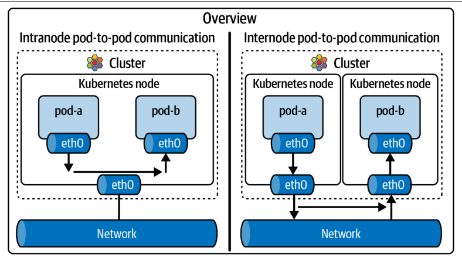
Figure 1-1. Cilium as a network fabric
图 1-1 Cilium 作为网络结构
Its job is to:
它的职责是：
- Provide connectivity between pods located on the same node, or on different为位于同一节点或同一集群内不同节点上的 Pod 提供连通性
nodes within the same cluster, or even in different clusters.
甚至跨集群提供连通性
- Build a network overlay between nodes, or leverage the underlying physical在节点之间构建网络覆盖层，或直接利用底层物理网络
network directly.
网络。
- Provide IP address management (IPAM), similar to the role the Dynamic Host提供 IP 地址管理（IPAM），其角色类似于传统网络中动态主机配置协议（DHCP）所扮演的角色。正是这一网络结构，使得跨集群运行的应用能够可靠、安全地通信。
Configuration Protocol (DHCP) plays in traditional networks. This fabric is what allows applications running across a cluster to communicate reliably and securely. Earlier CNIs used
iptables to implement it, but iptables was never designed for the scale and churn of Kubernetes workloads. Cilium instead relies on eBPF-based datapath logic, resulting in a more scalable, more observable, and higher-performance foundation. We’ll talk more about this in Chapters 4 and 5.早期 CNI 使用
iptables 来实现这一网络结构，但 iptables 从一开始就不是为 Kubernetes 工作负载的规模和动态变化而设计的。Cilium 则转而基于 eBPF 的数据路径逻辑，打造了一个更可扩展、更具可观测性、性能更高的基础。我们将在第 4 章和第 5 章中对此做更详细的讨论。Ingress and Gateway APIIngress 与 Gateway API
Most applications need to be accessed by external clients and therefore require a reliable way for traffic to enter the cluster. Kubernetes introduced Ingress for this purpose, but its design was limited, and it has gradually been superseded by the newer Gateway API project (Figure 1-2). Cilium implements both. Using Cilium, you can expose services through ingress rules or, increasingly, through Gateway API objects that provide more expressive and standardized control. Thanks to its built-in support for Ingress and Gateway API (discussed further in Chapter 7), Cilium users do not need to install and manage a third-party tool for cluster ingress traffic, reducing the operational burden.
大多数应用都需要被外部客户端访问，因此需要一种可靠的方式让流量进入集群。Kubernetes 为此引入了 Ingress，但其设计存在局限，后来逐渐被更新的 Gateway API 项目所取代（图 1-2）。Cilium 同时实现了两者。借助 Cilium，你可以通过 Ingress 规则暴露服务，也越来越多地通过 Gateway API 对象实现——后者提供了更具表达力、也更标准化的控制能力。由于内置了对 Ingress 和 Gateway API 的支持（第 7 章将进一步讨论），Cilium 用户无需安装和管理任何第三方工具来处理集群入站流量，从而降低了运维负担。
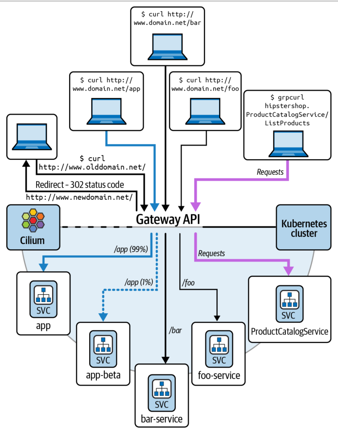
Figure 1-2. Cilium Gateway API support
图 1-2 Cilium 的 Gateway API 支持
Service Mesh Without the Sidecars无需 Sidecar 的服务网格
Service meshes emerged to provide features such as service-to-service encryption, load balancing, A/B testing, and observability. Most early meshes relied on a sidecar model, injecting an additional proxy into every pod. This approach worked but introduced resource overhead, operational complexity, and debugging challenges. Cilium takes a different approach. By using eBPF (and a host-level Envoy for when layer 7 functionality is needed), it provides service mesh functionality directly in the datapath without requiring sidecars (Figure 1-3). This means you can enable features such as encryption and observability cluster-wide without adding another layer of infrastructure. Importantly, Cilium Service Mesh is not a distinct product but a set of features that extend the existing platform. This makes it a natural evolution of the network fabric rather than a separate system to deploy and operate. Although Cilium pioneered the sidecarless model, other projects have since adopted similar designs, recognizing the efficiency and simplicity of this approach.
服务网格的出现，是为了提供服务间加密、负载均衡、A/B 测试与可观测性等特性。大多数早期的服务网格都依赖 Sidecar 模型，即在每个 Pod 中注入一个额外的代理。这种做法虽然有效，但引入了资源开销、运维复杂度和排障挑战。Cilium 则另辟蹊径：它借助 eBPF（以及在需要七层功能时使用的宿主机级 Envoy），直接在数据路径中提供服务网格功能，无需 Sidecar（图 1-3）。这意味着你可以在集群范围内启用加密、可观测性等特性，而不必再新增一层基础设施。更重要的是，Cilium Service Mesh 并不是一个独立产品，而是对现有平台功能的一组扩展。这使其成为网络结构的自然演进，而不是一套需要单独部署和运维的系统。虽然 Cilium 率先提出了无 Sidecar 的模型，但后来其他项目也纷纷采纳了类似设计，认可了这种方式的效率与简洁性。
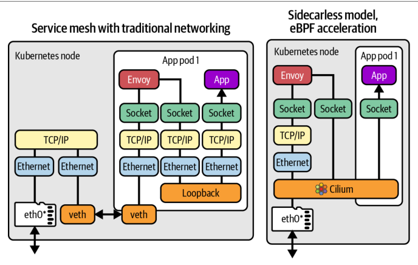
Figure 1-3. The sidecarless service mesh model
图 1-3 无 Sidecar 服务网格模型
Service mesh features are not covered in a dedicated chapter in this book but will be discussed in context with ingress (Chapter 7), encryption (Chapter 14), and observability (Chapter 15).
服务网格特性在本书中没有单独成章，但会在讨论 Ingress（第 7 章）、加密（第 14 章）和可观测性（第 15 章）时结合上下文展开。
Multicluster Networking and Load Balancing多集群网络与负载均衡
For organizations that require multicluster topologies for high availability, disaster recovery, or geographic distribution, Cilium Cluster Mesh provides service discovery and east–west load balancing between clusters with affinity support, ensuring that traffic can be steered intelligently while keeping it as close as possible to the workloads it needs to reach (Figure 1-4).
对于出于高可用、灾难恢复或地域分布需求而采用多集群拓扑的组织，Cilium Cluster Mesh 提供了带亲和性支持的服务发现与集群间东西向负载均衡能力，确保流量能够被智能引导，同时尽可能保持在接近其目标工作负载的位置（图 1-4）。
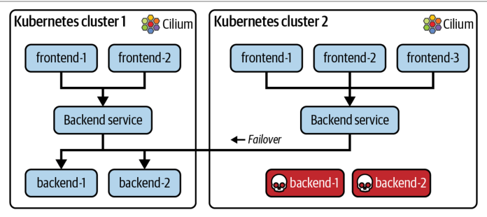
Figure 1-4. Multicluster networking with Cilium Cluster Mesh
图 1-4 使用 Cilium Cluster Mesh 实现的多集群网络
More broadly, load balancing is an area where Cilium shines. Traditional
kubeproxy implementations are replaced with eBPF-based logic, supporting advanced algorithms such as Maglev.1 This ensures that traffic is distributed efficiently both within a cluster and across multiple clusters, helping applications remain available and performant. We’ll talk more about these features in Chapters 8 and 9.更广泛地说，负载均衡是 Cilium 的一大亮点。它用基于 eBPF 的逻辑取代了传统
kubeproxy 实现，支持 Maglev 等高级算法。1 这确保了流量在集群内部以及跨多个集群时都能高效分发，帮助应用保持可用与高性能。我们将在第 8 章和第 9 章中讨论这些特性。Interconnectivity with the Wider Network与更广泛网络的互联
Kubernetes clusters do not exist in isolation. Applications often need to be reachable by clients residing outside the cluster, in a different part of the network. Cilium supports this by:
Kubernetes 集群并非孤立存在。应用往往需要被位于集群之外、网络其他部分的客户端访问。Cilium 通过以下方式支持这一点：
- Connecting back to the core network, such as top-of-rack (ToR) devices, to连接回核心网络（如架顶式 ToR 设备），以通告 Kubernetes Service 的 IP 地址
advertise Kubernetes service IP addresses
通告 Kubernetes Service IP 地址
- Enabling Kubernetes applications to be accessible to workloads and users outside让 Kubernetes 应用可以被集群之外的工作负载和用户访问
the cluster
集群
1Maglev is a consistent hashing algorithm originally developed at Google to achieve stable and efficient load balancing at scale; it is covered in detail in Chapter 8.
1 Maglev 是 Google 最初开发的一种一致性哈希算法，用于在大规模场景下实现稳定高效的负载均衡；第 8 章将详细介绍。
By providing built-in support for BGP (Figure 1-5), Cilium becomes more than a cluster network; it extends the cluster into the enterprise fabric. This is especially valuable in hybrid deployments, where Kubernetes needs to coexist with VMs, baremetal, and/or legacy infrastructure.
通过内置支持 BGP（图 1-5），Cilium 已不止是一个集群网络——它将集群扩展到了企业网络结构中。这在混合部署场景下尤为宝贵，因为在这种场景下 Kubernetes 需要与 VM、裸金属和/或遗留基础设施共存。
Figure 1-5. Cilium’s built-in BGP support
图 1-5 Cilium 内置的 BGP 支持
We discuss BGP and layer 2 connectivity in detail in Chapter 10.
我们将在第 10 章详细讨论 BGP 与二层连通性。
Firewalling and Network Policy防火墙与网络策略
Kubernetes introduced the concept of NetworkPolicy to restrict access to and from pods. While this was a major step forward, the built-in NetworkPolicy model is limited to layer 3 and 4 controls: you can allow or deny traffic based on IPs, ports, and protocols, but not on higher-level application concepts. Cilium extends this model. It enforces Kubernetes NetworkPolicies using eBPF and also provides its own CiliumNetworkPolicy resource, which supports applicationlevel rules such as filtering based on Domain Name System (DNS) names or Hypertext Transfer Protocol (HTTP) methods. Importantly, Cilium policies operate on Kubernetes labels and identities. Policies can thus reflect intents such as “allow traffic from the frontend namespace to the payments service” rather than “allow traffic from
10.42.0.23 to 10.42.0.42.” This identity-based approach is better aligned with dynamic Kubernetes environments and helps meet regulatory requirements. See Chapters 12 and 13 for more details on network policy.Kubernetes 引入了 NetworkPolicy 这一概念，用以限制对 Pod 的入站和出站访问。虽然这是一个重大进步，但内置的 NetworkPolicy 模型仅限于三层和四层控制：你可以根据 IP、端口和协议允许或拒绝流量，但无法基于更高层的应用概念进行控制。Cilium 扩展了这一模型。它使用 eBPF 强制实施 Kubernetes NetworkPolicy，同时还提供自己的 CiliumNetworkPolicy 资源，支持应用层规则，例如基于域名系统（DNS）名称或超文本传输协议（HTTP）方法的过滤。更为重要的是，Cilium 策略基于 Kubernetes 标签和身份运行。因此策略可以体现为 "允许来自 frontend 命名空间到 payments 服务的流量" 这样的意图，而不是 "允许来自
10.42.0.23 到 10.42.0.42 的流量"。这种基于身份的方式更贴合动态的 Kubernetes 环境，也有助于满足监管要求。网络策略的更多细节请参见第 12 章和第 13 章。Encryption and Secure Connectivity加密与安全连通性
As workloads communicate across nodes, and increasingly across clusters or even across clouds, encryption becomes essential. Cilium supports Transparent Encryption of traffic between nodes using either IPsec or WireGuard (Figure 1-6). This provides confidentiality and integrity without requiring changes to applications.
随着工作负载在节点之间、甚至越来越多地跨集群或跨云进行通信，加密变得不可或缺。Cilium 支持使用 IPsec 或 WireGuard 在节点之间对流量进行透明加密（图 1-6）。这在无需修改应用的前提下，提供了机密性与完整性保障。
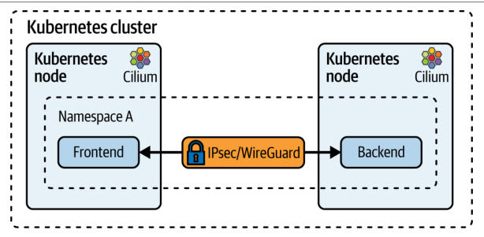
Figure 1-6. Cilium Transparent Encryption
图 1-6 Cilium 透明加密
In practice, enabling encryption with Cilium is extremely simple. It is described as transparent because applications do not need to be modified to benefit from it. Encryption can be enabled with a simple configuration flag, and when WireGuard is used, even key management is handled automatically. This allows operators to secure internode and intercluster communication at scale without adding operational burden. See Chapter 14 for more on Transparent Encryption.
在实践中，使用 Cilium 启用加密极其简单。之所以称之为透明加密，是因为应用无需修改即可享受这一能力。只需一个简单的配置标志即可启用加密；使用 WireGuard 时，甚至密钥管理也是自动完成的。这让运维人员可以在大规模场景下保护节点间和集群间通信，同时不增加运维负担。关于透明加密的更多内容请参见第 14 章。
Observability with Hubble通过 Hubble 实现可观测性
Operating a network is not only about making packets flow or enforcing security rules. Day-to-day operations require visibility: you need to understand why a connection failed, which services depend on each other, and whether policies are being enforced as intended. Cilium integrates Hubble, a fully distributed observability system built on eBPF. Hubble captures detailed information about network flows, service dependencies, and policy decisions directly in the kernel. Because only relevant events are exported to the user space, Hubble provides rich insights with minimal overhead. Operators can see not just IPs and ports, but also Kubernetes identities and namespaces. This makes troubleshooting and auditing far more intuitive than with traditional tools. Data can be visualized in the terminal or in a user interface. Cilium and Hubble can also be configured to serve Prometheus metrics, which can then be visualized in Grafana dashboards. See Chapter 15 for more on Hubble and observability.
网络运维不仅是让数据包流通或强制实施安全规则。日常运维需要可观测性：你需要知道某个连接为什么失败，哪些服务相互依赖，以及策略是否按预期得到强制执行。Cilium 集成了 Hubble——一个完全分布式、基于 eBPF 构建的可观测性系统。Hubble 在内核中直接捕获关于网络流、服务依赖和策略决策的详细信息。由于只有相关事件会被导出到用户空间，Hubble 能以极低的开销提供丰富的洞察。运维人员看到的不仅是 IP 和端口，还有 Kubernetes 身份与命名空间。这使得排障与审计比使用传统工具要直观得多。数据可以在终端或用户界面中可视化。Cilium 和 Hubble 还可配置为暴露 Prometheus 指标，进而在 Grafana 仪表盘中可视化。关于 Hubble 与可观测性的更多内容请参见第 15 章。
Looking Ahead展望
Cilium’s story is still being written. What began as a container networking and security platform has expanded to include a broad set of capabilities for connectivity, security, and observability in Kubernetes environments. As the needs of cloud native infrastructure continue to evolve, Cilium is evolving with them. One important trend is the expansion beyond microservices. Databases are already widely deployed on Kubernetes, despite early reservations about running stateful workloads. More recently, many organizations have begun running artificial intelligence and machine learning workloads on Kubernetes, often spanning clusters of graphics processing units (GPUs). These workloads place extreme demands on networking, requiring both high throughput and low latency. Cilium is well positioned to meet these needs with its programmable datapath. Another significant development has been the rise of virtual machines managed by Kubernetes. More and more users want to bring their VM estates under the same operational model as their container workloads, rather than relying on traditional VM management platforms. Projects such as KubeVirt make this possible, and Cilium extends its networking, security, and observability features seamlessly to VMs. Performance improvements also continue to shape the trajectory of Cilium. The introduction of netkit, a successor to the long-standing virtual Ethernet (veth) device, has shown that container networking can match the performance of host networking. Early adopters are already benefiting from deploying netkit—Bytedance, for example, has reportedly increased throughput by 10% across its entire fleet—and its use is likely to spread rapidly. By embedding eBPF programs even closer to the workload, Cilium can continue to reduce overhead and bring new capabilities to the datapath. Beyond Linux, eBPF itself is becoming a standard across operating systems. Work on eBPF for Windows is progressing quickly, making it possible for technologies like Cilium and Tetragon to extend their capabilities to Windows environments in the future. This marks an important turning point: eBPF is no longer just a Linux innovation but an industry-wide platform for building networking and security. Because it is open source, Cilium is shaped not only by its original creators but also by a wide and active community. Contributions from hyperscalers, enterprises, and independent developers ensure that it adapts to the ecosystem around it. This momentum, which as we saw earlier made it the first (and so far, only) CNCF project in the Cloud Native Networking category to graduate from the CNCF, has not slowed. New contributors are always welcome; don’t hesitate to join the project! The future of Cilium is tied to the future of cloud native development itself. As Kubernetes expands to new workloads and new forms of infrastructure, Cilium will continue to evolve in parallel. In the chapters that follow, we will look more closely at how Cilium achieves these goals. Chapter 2 opens the box to examine the internal components of Cilium, showing how the agent, operator, and other components work together to provide the foundation on which all these capabilities are built. Understanding these building blocks will make it easier to understand how the Cilium features and use cases described earlier function.
Cilium 的故事仍在继续书写。它最初是一个容器网络与安全平台，如今已扩展为涵盖 Kubernetes 环境中连通性、安全性与可观测性的广泛能力集。随着云原生基础设施需求的持续演进，Cilium 也在同步演进。一个重要趋势是其覆盖范围已扩展到微服务之外。尽管早期人们对运行有状态工作负载仍有顾虑，但数据库如今已广泛部署在 Kubernetes 上。近期，许多组织又开始在 Kubernetes 上运行人工智能和机器学习工作负载，往往跨越多个图形处理单元（GPU）集群。这些工作负载对网络提出了极高要求，同时需要高吞吐量与低延迟。凭借其可编程的数据路径，Cilium 完全有能力满足这些需求。另一个重要发展方向是 Kubernetes 托管的虚拟机日益增多。越来越多的用户希望将其 VM 资产也纳入与容器工作负载相同的运维模式，而不是依赖传统的 VM 管理平台。KubeVirt 等项目让这一愿景成为现实，而 Cilium 则将其网络、安全和可观测性能力无缝延伸至 VM。性能提升也在持续塑造 Cilium 的发展轨迹。netkit——这一长期存在的虚拟以太网（veth）设备的继任者——的推出，证明了容器网络可以达到宿主机网络的性能。早期采用者已经从部署 netkit 中受益——据报道，Bytedance 在其整个集群中实现了 10% 的吞吐量提升——而这一技术很可能会迅速普及。通过将 eBPF 程序嵌入到更靠近工作负载的位置，Cilium 可以持续降低开销，并为数据路径带来新能力。不止于 Linux，eBPF 本身正在成为跨操作系统的标准。Windows 上的 eBPF 开发进展迅速，使得 Cilium 和 Tetragon 等技术将来能够将其能力扩展到 Windows 环境。这标志着一个重要的转折点：eBPF 不再只是 Linux 领域的创新，而是整个行业用于构建网络与安全的平台。由于 Cilium 是开源的，它的发展不仅由其最初的创造者所塑造，也受到广泛活跃的社区影响。来自超大规模云服务商、企业和独立开发者的贡献，确保了它能够适应周围的生态系统。正如我们前面所见，这一动量让 Cilium 成为 CNCF 云原生网络类别中首个（也是迄今为止唯一一个）从 CNCF 毕业的项目，而这一势头并未减弱。项目始终欢迎新贡献者，欢迎你加入！Cilium 的未来与云原生开发自身的未来紧密相连。随着 Kubernetes 拓展到新的工作负载类型和新的基础设施形态，Cilium 也将继续同步演进。在接下来的章节中，我们将更深入地探讨 Cilium 是如何实现这些目标的。第 2 章将揭开 Cilium 的内部组件，展示 Agent、Operator 及其他组件如何协同工作，为所有这些能力奠定基础。理解这些构建块，将有助于你更好地理解前面介绍的 Cilium 特性与应用场景是如何运作的。
第 2 章Inside Cilium深入 Cilium
In Chapter 1 we explored the main use cases for Cilium—networking, security, and observability—and how eBPF enables them. In this chapter, we will take a closer look at the components that make up Cilium. Understanding how these pieces fit together will make it easier to follow how each feature works in later chapters. Cilium’s architecture is modular, with each component focusing on a specific responsibility. Some are present on every node, while others are optional and become relevant only when certain features are enabled.
在第 1 章中，我们探讨了 Cilium 的核心用例——网络、安全与可观测性——以及 eBPF 如何为这些能力提供支撑。本章我们将更细致地审视构成 Cilium 的组件。理解这些模块如何协同，将有助于你在后续章节中跟上各项特性的运作原理。Cilium 的架构是模块化的，每个组件各司其职。其中一些组件在每个节点上都会存在，而另一些则是可选的，仅当启用特定特性时才起作用。
Cilium at a GlanceCilium 概览
Cilium’s versatility comes from a modular design built around several key components: Cilium agent Runs on every node and forms the core of Cilium. It loads and manages the eBPF programs and maps in the kernel, and it watches Kubernetes objects and Cilium custom resources to keep the datapath state up-to-date. Cilium CNI plugin Connects Cilium to Kubernetes through the Container Network Interface framework. It is responsible for wiring new pods into the network when they are created, using the configuration files and binaries installed by the agent. Cilium operator Provides cluster-level coordination. It manages Cilium’s custom resources and allocates IP addresses, as well as other cluster-wide operations. eBPF programs and maps
Cilium 的多功能性源自围绕若干关键组件构建的模块化设计：Cilium Agent 运行在每个节点上，是 Cilium 的核心。它加载并管理内核中的 eBPF 程序与 map，同时监听 Kubernetes 对象以及 Cilium 自定义资源，以保持数据路径状态的最新。Cilium CNI 插件 通过容器网络接口（Container Network Interface，CNI）框架将 Cilium 与 Kubernetes 连接起来。它负责在 Pod 创建时，利用 Agent 安装的配置文件与二进制文件将新的 Pod 接入网络。Cilium Operator 提供集群级别的协调。它管理 Cilium 的自定义资源、分配 IP 地址，并执行其他集群范围内的操作。eBPF 程序与 map
Provide the foundation of the datapath. Programs handle connection tracking, NAT, load balancing, and policy enforcement, while maps store shared state between programs and the agent. Cilium CLI Offers administrators a simple command-line interface for installation, configuration, and troubleshooting. Proxies Handle traffic that requires inspection beyond simple packet filtering. Envoy processes HTTP and Transport Layer Security (TLS) traffic, providing layer 7 visibility and enforcement, while the built-in DNS proxy enables policies based on fully qualified domain names (FQDNs) by intercepting DNS requests and responses. Hubble Optional component that provides observability through the per-node Hubble server, Hubble Relay for cluster-wide aggregation, and visualization tools such as the Hubble CLI and UI. Cluster Mesh API Server Enables multicluster networking by sharing service and endpoint metadata across clusters. It allows each cluster to discover and route to remote services as if they were local, providing a consistent networking model when Cluster Mesh is enabled. You’ll learn more about this component in Chapter 9, which covers Cluster Mesh in detail. Let’s dive into how they interact with each other to get a better understanding of the big picture, illustrated in Figure 2-1. The Cilium operator is responsible for creating and managing various Ciliumspecific custom resources, such as CiliumNetworkPolicy, CiliumNode, and CiliumEndpoint resources. These, along with standard Kubernetes objects, are continuously monitored by the Cilium agent. Based on this state, the agent loads and configures eBPF maps and programs that implement policy enforcement, load balancing, and visibility features. The agent also installs the CNI plugin and handles networking setup when new pods are created.
构成数据路径的基础。程序负责连接跟踪、NAT、负载均衡以及策略执行，而 map 则存储程序与 Agent 之间共享的状态。Cilium CLI 为管理员提供一套简洁的命令行接口，用于安装、配置与排障。代理 处理需要超出简单数据包过滤的流量检查。Envoy 处理 HTTP 与传输层安全（Transport Layer Security，TLS）流量，提供七层可见性与强制执行能力；内置的 DNS 代理则通过拦截 DNS 请求与响应，实现基于完全限定域名（FQDN）的策略。Hubble 可选组件，通过每个节点上的 Hubble server、用于集群范围聚合的 Hubble Relay，以及 Hubble CLI 和 UI 等可视化工具提供可观测性。Cluster Mesh API Server 通过在集群之间共享 Service 与 Endpoint 元数据来实现多集群网络。它让每个集群都能像访问本地服务一样发现并路由到远程服务，在启用 Cluster Mesh 时提供一致的网络模型。关于此组件，你将在详细讲解 Cluster Mesh 的第 9 章中了解更多。接下来我们深入了解它们之间如何交互，以便更好地把握整体图景，如图 2-1 所示。Cilium Operator 负责创建与管理各种 Cilium 特有的自定义资源，例如 CiliumNetworkPolicy、CiliumNode 与 CiliumEndpoint 资源。Cilium Agent 会持续监控这些对象以及标准的 Kubernetes 对象。基于这些状态，Agent 加载并配置 eBPF map 与程序，用以实现策略执行、负载均衡和可见性等特性。Agent 还负责安装 CNI 插件，并在新的 Pod 创建时完成网络配置。
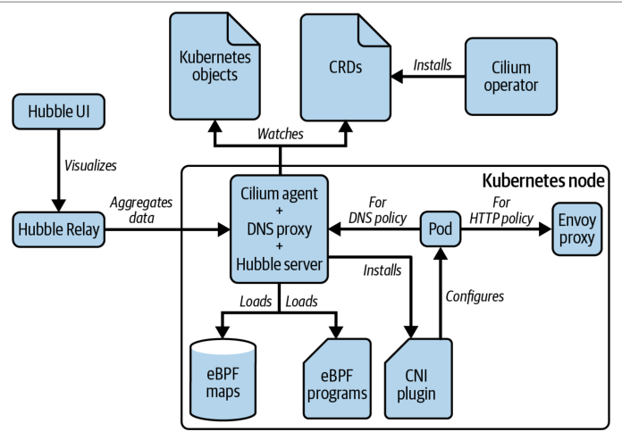
Figure 2-1. How all the Cilium components work together
图 2-1 Cilium 各组件如何协同工作
When a pod sends traffic, it reaches a kernel hook point where an eBPF program is triggered. This program inspects the packet and determines whether to forward or drop it. If a layer 7 policy or FQDN-based rule is in effect, the eBPF program may redirect the packet to the appropriate user space proxy: the DNS proxy for domain name resolution, or the Envoy proxy for HTTP and TLS traffic. The Envoy proxy processes layer 7 traffic and makes policy decisions based on application-level metadata, such as HTTP paths or TLS Server Name Indication (SNI). The DNS proxy captures DNS responses, maps the returned IP addresses to domain names, and updates the relevant eBPF maps so that future traffic to those IPs can be allowed or denied based on FQDN policies. Meanwhile, the Hubble server observes network flows directly on each node. It collects metadata from eBPF events and, when available, enhances it with information from the DNS proxy. This enriched data can be viewed locally using the Hubble CLI or aggregated across the cluster by Hubble Relay. Finally, the Hubble UI visualizes this cluster-wide traffic information, making it easier to explore and troubleshoot networking behavior.
当一个 Pod 发送流量时，数据包会到达内核中的一个挂载点，在此处触发一个 eBPF 程序。该程序检查数据包，并决定是转发还是丢弃。如果启用了七层策略或基于 FQDN 的规则，eBPF 程序可能会将数据包重定向到适当的用户空间代理：用于域名解析的 DNS 代理，或用于 HTTP 与 TLS 流量的 Envoy 代理。Envoy 代理处理七层流量，并根据应用层元数据（例如 HTTP 路径或 TLS 的 Server Name Indication，SNI）做出策略决策。DNS 代理捕获 DNS 响应，将返回的 IP 地址映射到域名，并更新相关的 eBPF map，这样后续发往这些 IP 的流量就能根据 FQDN 策略被允许或拒绝。与此同时，Hubble server 在每个节点上直接观察网络流。它从 eBPF 事件中收集元数据，并在可用时用 DNS 代理的信息对其进行增强。这些丰富后的数据可以通过 Hubble CLI 在本地查看，或由 Hubble Relay 在集群范围内聚合。最后，Hubble UI 将集群范围内的流量信息可视化，让网络行为的探索与排障变得更加直观。
The Cilium AgentCilium Agent
The Cilium agent, often referred to as simply “Cilium” or the “Cilium daemon,” is the core component of the system. It is responsible for orchestrating several critical tasks across the Kubernetes cluster, such as installing the CNI plugin, loading eBPF programs, and maintaining state between Kubernetes, the datapath, and the Cilium operator. To accomplish this, it runs with elevated privileges as a DaemonSet on every node. The Cilium agent plays a pivotal role in ensuring the efficient operation of both the network and security within the cluster, as shown in Figure 2-2.
Cilium Agent（常简称为“Cilium”或“Cilium daemon”）是整个系统的核心组件。它负责在 Kubernetes 集群中编排多项关键任务，例如安装 CNI 插件、加载 eBPF 程序，以及维护 Kubernetes、数据路径与 Cilium Operator 之间的状态同步。为此，它以 DaemonSet 的形式在每个节点上以提权方式运行。Cilium Agent 在确保集群内网络与安全的高效运作方面扮演着至关重要的角色，如图 2-2 所示。
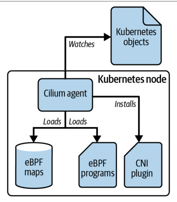
Figure 2-2. Cilium agent lifecycle responsibilities
图 2-2 Cilium Agent 生命周期职责
Its responsibilities include: Installing the CNI plugin The agent ensures that the Cilium CNI plugin is available on each node so that pod networking can be configured correctly when workloads are created. The plugin itself and its operation are described later in this chapter. Loading eBPF programs and maps The agent loads and manages eBPF programs and maps on each node. The programs enforce network policy, perform NAT and load balancing, and apply encryption when Transparent Encryption is enabled. The agent not only loads these programs but also reads from and writes to several maps, for example to update service backends, track identities, or collect metrics that Hubble later consumes for observability. Reconciling Kubernetes state
它的职责包括：安装 CNI 插件 Agent 确保每个节点上都有 Cilium CNI 插件可用，这样在工作负载创建时才能正确配置 Pod 网络。插件本身及其运作机制将在本章稍后介绍。加载 eBPF 程序与 map Agent 在每个节点上加载并管理 eBPF 程序与 map。这些程序执行网络策略、进行 NAT 与负载均衡，并在启用透明加密时应用加密。Agent 不仅加载这些程序，还会对多个 map 进行读写——例如更新 Service 后端、追踪身份，或收集 Hubble 后续用于可观测性的指标。协调 Kubernetes 状态
The agent continuously monitors the desired Kubernetes state by communicating with the
kube-apiserver and by watching Cilium’s own custom resources maintained by the Cilium operator. It reacts to changes in these objects and updates eBPF maps and datapath configuration accordingly to maintain consistency between Kubernetes and the kernel. Applying configuration Configuration for Cilium can come from both the cilium-config ConfigMap and Cilium’s custom resource definitions (CRDs). The ConfigMap often carries cluster-level defaults, while CRDs hold more specific or feature-focused settings. The agent reads these values at start-up and uses them to control its runtime behavior. Exposing debugging and troubleshooting interfaces For debugging and troubleshooting, the Cilium agent provides a suite of tools that can be invoked via the Cilium agent pod. The most notable is cilium-dbg, which gathers detailed diagnostic information from the node. It should not be confused with the Cilium CLI, a cluster-level tool for installing, managing, and operating Cilium described in the following section.Agent 通过与
kube-apiserver 通信，以及监听由 Cilium Operator 维护的 Cilium 自定义资源，持续监控 Kubernetes 的期望状态。它对这些对象的变化做出反应，相应地更新 eBPF map 与数据路径配置，以保持 Kubernetes 与内核之间的一致性。应用配置 Cilium 的配置既可来自 cilium-config ConfigMap，也可来自 Cilium 的自定义资源定义（CRD）。ConfigMap 通常承载集群级别的默认值，而 CRD 则保存更具体或特性相关的设置。Agent 在启动时读取这些值，用它们控制自身的运行时行为。暴露调试与排障接口 为进行调试与排障，Cilium Agent 提供了一套可通过 Cilium Agent Pod 调用的工具。其中最值得一提的是 cilium-dbg，它从节点上收集详细的诊断信息。请注意不要将它与 Cilium CLI 混淆，后者是一个集群级工具，用于安装、管理和运营 Cilium，下一节将介绍。Prior to Cilium 1.15,
cilium-dbg was named cilium, which caused confusion since it was unclear whether references to cilium described the CLI or the agent’s debugging tool. Keep this in mind when reviewing older issues or documentation.在 Cilium 1.15 之前，
cilium-dbg 的名称是 cilium，这造成了一定混淆——因为当时人们无法确定文档中提到的 cilium 指的是 CLI 还是 Agent 的调试工具。在查阅旧的 issue 或文档时，请务必注意这一点。The Cilium CNI PluginCilium CNI 插件
Cilium is often described as a CNI, but this refers only to one part of the system: the plugin that connects Cilium to Kubernetes through the Container Network Interface framework. While this plugin is essential, Cilium itself provides a much broader set of capabilities for networking, security, and observability. The CNI plugin is simply how Cilium integrates with Kubernetes to handle pod networking. The CNI specification defines a standard interface that allows container runtimes such as containerd or CRI-O to attach containers to a network. A CNI plugin must support four basic operations: adding (
ADD) and deleting (DEL) containers, verifying (CHECK) that the container’s network is functioning correctly, and reporting the plugin’s version (VERSION).人们常把 Cilium 称作一个 CNI，但这只涉及系统的一部分：即通过容器网络接口（CNI）框架将 Cilium 与 Kubernetes 连接起来的那个插件。虽然此插件不可或缺，但 Cilium 本身提供了更为广泛的网络、安全与可观测性能力。CNI 插件只是 Cilium 与 Kubernetes 集成、处理 Pod 网络的方式。CNI 规范定义了一个标准接口，允许 containerd 或 CRI-O 等容器运行时将容器接入网络。一个 CNI 插件必须支持四项基本操作：添加容器（
ADD）与删除容器（DEL）、校验容器网络是否正常运作（CHECK），以及报告插件版本（VERSION）。When a user creates a pod, typically by applying a manifest with
kubectl, the request is sent to the Kubernetes API server. After the scheduler assigns the pod to a node, the API server notifies the kubelet. The kubelet delegates container creation to the container runtime, which prepares the pod environment, including a new network namespace.1 The runtime then executes the CNI plugin defined in the host’s configuration directory, which by default is /etc/cni/net.d/. The corresponding plugin binary is typically located in /opt/cni/bin/. These paths are standard for all CNIs in Kubernetes. When Cilium is installed, the Cilium agent populates these locations with its own configuration file (05-cilium.conflist) and plugin binary (cilium-cni).2 A typical configuration file looks like this:当用户通过
kubectl 应用清单来创建一个 Pod 时，该请求会被发送到 Kubernetes API server。在调度器将 Pod 分配到某个节点之后，API server 会通知 kubelet。kubelet 将容器创建工作委托给容器运行时，运行时会准备 Pod 环境，其中包括一个新的 network namespace。1 随后运行时会执行主机配置目录中定义的 CNI 插件——默认路径是 /etc/cni/net.d/——对应的插件二进制文件通常位于 /opt/cni/bin/。这些路径对 Kubernetes 中的所有 CNI 来说都是标准的。安装 Cilium 后，Cilium Agent 会用它自己的配置文件（05-cilium.conflist）与插件二进制文件（cilium-cni）填充这些位置。2 一个典型的配置文件如下所示：代码（原文）
{
"cniVersion": "0.3.1",
"name": "cilium",
"plugins": [
{
"type": "cilium-cni",
"enable-debug": false,
"log-file": "/var/run/cilium/cilium-cni.log"
}
]
}When following the practical examples later in this book using the kind-based environment, you can view this configuration file on any worker node once the cluster is up and running with this command:
在本书后续的实践示例中（基于 kind 环境），一旦集群启动完毕，你可以在任意 worker 节点上通过以下命令查看该配置文件：
代码（原文）
$ docker exec -it kind-worker \ cat /etc/cni/net.d/05-cilium.conflist
1If you’re not familiar with network namespaces, see the sidebar “Linux Networking Essentials for Cilium” on page 74 for a brief explainer. 2Some clusters use CNI chaining, where the configuration file lists several plugins in order, allowing Cilium to run alongside another CNI that handles tasks such as IP assignment or specific network setup. We don’t particularly recommend this model and will not cover it in this book.
1 如果你对 network namespace 还不熟悉，请参阅第 74 页的旁注“Linux Networking Essentials for Cilium”，里面有简要说明。
2 有些集群会使用 CNI 链式配置，即配置文件按顺序列出多个插件，使 Cilium 能够与另一个负责 IP 分配或特定网络设置的 CNI 并行运行。我们并不特别推荐这种模式，且本书不再深入。
2 有些集群会使用 CNI 链式配置，即配置文件按顺序列出多个插件，使 Cilium 能够与另一个负责 IP 分配或特定网络设置的 CNI 并行运行。我们并不特别推荐这种模式，且本书不再深入。
This process is illustrated in Figure 2-3.3
该过程如图 2-3 所示。3
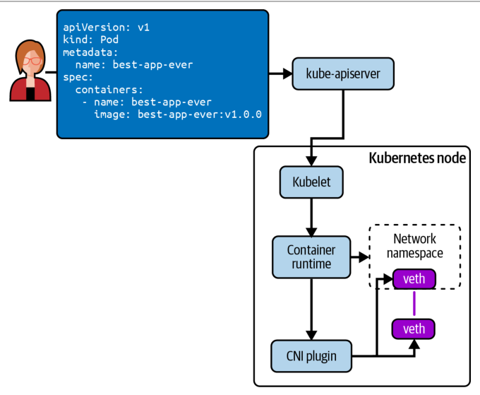
Figure 2-3. Pod creation workflow and CNI integration
图 2-3 Pod 创建工作流与 CNI 集成
The Cilium CNI plugin acts as the link between the container runtime and the Cilium agent. When the runtime creates or removes a pod, it executes the CNI plugin binary with the details of the request. The plugin passes this information along to the Cilium agent, which then sets up or tears down the network interface and updates the relevant eBPF maps so the new endpoint is fully registered in the datapath.
Cilium CNI 插件充当容器运行时与 Cilium Agent 之间的纽带。当运行时创建或删除一个 Pod 时，它会携带请求的具体细节执行 CNI 插件二进制文件。插件将这些信息传递给 Cilium Agent，Agent 随后创建或拆除网络接口，并更新相关的 eBPF map，以便新的端点在数据路径中完成完整注册。
CNIs typically do not handle traffic forwarding or load balancing. By default,
kube-proxy serves as the default network proxy in Kubernetes, using technologies such as iptables, IPVS, or, more recently, nftables to direct incoming network traffic to the relevant pods within the cluster. Cilium can replace kube-proxy entirely, achieving the same tasks with significantly better performance, especially at scale. For more information on this topic, see Chapter 6.CNI 通常不处理流量转发或负载均衡。默认情况下，
kube-proxy 是 Kubernetes 中的默认网络代理，它使用 iptables、IPVS，或近来的 nftables 等技术，将入站网络流量引导到集群中的相关 Pod。Cilium 可以完全替代 kube-proxy，以显著更高的性能完成相同的任务，在大规模场景下尤为突出。关于这一主题的更多信息，请参阅第 6 章。3For more details on the process of a CNI, consult Networking and Kubernetes by James Strong and Vallery Lancey (O’Reilly) or visit repos such as https://github.com/f1ko/demystifying-cni and https://github.com/containernetworking/cni.
3 关于 CNI 流程的更多细节，请参考 James Strong 与 Vallery Lancey 所著的 Networking and Kubernetes（O’Reilly 出版），或访问诸如 https://github.com/f1ko/demystifying-cni 与 https://github.com/containernetworking/cni 之类的代码仓库。
The Cilium OperatorCilium Operator
While the Cilium agent operates at the node level, the Cilium operator runs at the cluster level as a deployment within the Kubernetes cluster. Certain features and environments may modify the operator’s responsibilities, but two key tasks stand out: managing custom resources defined by Cilium CRDs and handling IP address management. Unlike many other projects, when Cilium is installed, it does not automatically install CRDs. This approach allows the Cilium operator to manage custom resources across versions, ensuring backward compatibility where needed. Beyond CRD registration, the Cilium operator is also responsible for managing IP address allocation, as shown in Figure 2-4. The operator creates a CiliumNode object for each node (after registering the CRDs) and populates it with relevant information, such as the PodCIDRs (the IP ranges from which pods on this node are assigned addresses). Since the operator runs at the cluster level, it is aware of the IP ranges used by other nodes and can ensure there are no overlaps.4 The Cilium agent then reads the data in the CiliumNode object to configure the local datapath. You will learn more about IP address management in Chapter 4.
与运行在节点级别的 Cilium Agent 不同，Cilium Operator 以 Kubernetes 集群内的一个 Deployment 形式运行在集群级别。某些特性与环境可能会调整 Operator 的职责，但两项关键任务尤为突出：管理 Cilium CRD 定义的自定义资源，以及处理 IP 地址管理。与许多其他项目不同，Cilium 在安装时不会自动安装 CRD。这种做法允许 Cilium Operator 在不同版本之间管理自定义资源，确保在需要时提供向后兼容。除了注册 CRD，Cilium Operator 还负责 IP 地址分配，如图 2-4 所示。Operator 为每个节点创建一个 CiliumNode 对象（在注册 CRD 之后），并在其中填充相关信息，例如 PodCIDR（该节点上分配给 Pod 的 IP 地址范围）。由于 Operator 运行在集群级别，它能感知其他节点所使用的 IP 范围，从而可以确保各范围之间没有重叠。4 随后 Cilium Agent 读取 CiliumNode 对象中的数据来配置本地数据路径。关于 IP 地址管理，你将在第 4 章中了解更多。
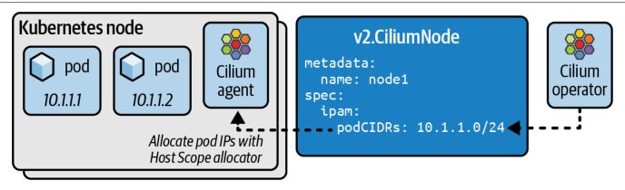
Figure 2-4. The Cilium operator manages IP address allocation
图 2-4 Cilium Operator 管理 IP 地址分配
eBPF Programs and eBPF MapseBPF 程序与 eBPF Map
As discussed in Chapter 1, eBPF is a revolutionary technology that allows developers to extend the behavior of the Linux kernel without modifying or recompiling it. Instead of submitting kernel patches and waiting for them to be merged and released, they can write custom code that is safely injected into the running kernel, enabling immediate changes in behavior without a reboot.
如第 1 章所述，eBPF 是一项革命性的技术，它允许开发者在不修改或重新编译内核的情况下扩展 Linux 内核的行为。开发者无需提交内核补丁并等待其被合并和发布，而是可以编写自定义代码，这些代码会被安全地注入到正在运行的内核中，从而在不需要重启的情况下即时改变内核行为。
4Although the operator can run with multiple replicas, leader election ensures that only one instance is active at a time, preventing race conditions.
4 尽管 Operator 可以运行多个副本，但领导者选举机制确保在同一时刻只有一个实例处于活跃状态，以避免竞态条件。
One of the reasons eBPF has gained such widespread adoption is its combination of safety and performance. Programs are verified before they are allowed to run in the kernel to ensure that they cannot compromise system stability5 and then just-in-time (JIT) compiled into native machine code for near-native execution speed.6 Together, these features allow for highly efficient and secure extensions to kernel functionality. Two key concepts are fundamental to understanding how eBPF powers Cilium: eBPF programs User-defined, stateless, event-driven pieces of code that are triggered by specific events within the kernel. These programs are attached to hook points, such as when a packet enters or leaves a network interface. When that event occurs, the corresponding eBPF program is executed. When applied to packet processing hook points, programs can inspect, modify, or drop packets based on policy or connection state. eBPF maps Serve as in-kernel data storage. These maps allow eBPF programs and user space processes to store and retrieve data, enabling dynamic decision making. Just as a stateless microservice might query a database to make a decision, eBPF programs can perform lookups in eBPF maps to determine how to handle packets. Maps can also be updated to record connection state, update load-balancing entries, or increment metrics that Hubble later consumes for observability. eBPF programs and maps enable Cilium to implement critical datapath functions entirely within the kernel, including:
eBPF 之所以获得如此广泛的采用，原因之一在于它同时具备安全性与高性能。eBPF 程序在获准在内核中运行之前会经过验证器校验，确保它们不会破坏系统稳定性5，随后通过即时（JIT）编译生成本地机器码，从而接近原生执行速度。6 这些特性结合在一起，使得对内核功能进行高效且安全的扩展成为可能。要理解 eBPF 如何为 Cilium 提供动力，需要把握两个关键概念：eBPF 程序 用户定义的、无状态的、事件驱动的代码片段，由内核内部的特定事件触发。这些程序被挂载到钩子点上，例如当数据包进入或离开一个网络接口时。当该事件发生时，对应的 eBPF 程序就会被执行。当应用于数据包处理钩子点时，程序可以根据策略或连接状态检查、修改或丢弃数据包。eBPF map 用作内核内部的数据存储。这些 map 允许 eBPF 程序与用户空间进程存储和检索数据，从而支持动态决策。就像一个无状态微服务可能需要查询数据库来做出决策一样，eBPF 程序也可以在 eBPF map 中执行查找，以决定如何处理数据包。map 还可以被更新，用于记录连接状态、更新负载均衡条目，或累加 Hubble 后续用于可观测性的指标。eBPF 程序与 map 使 Cilium 能够完全在内核中实现关键的数据路径功能，包括：
- Connection tracking and stateful inspection连接跟踪与有状态检查
- NAT and service load balancingNAT 与服务负载均衡
- Network policy enforcement网络策略执行
- Flow and event observability through Hubble通过 Hubble 实现流与事件的可观测性
When the Cilium agent starts, it loads the required eBPF programs for datapath operations and then continuously updates the relevant maps as Kubernetes objects change.
当 Cilium Agent 启动时，它会加载数据路径操作所需的 eBPF 程序，随后在 Kubernetes 对象发生变化时持续更新相关的 map。
5The eBPF verifier ensures that all programs are safe to execute within the kernel, preventing invalid memory access and infinite loops. 6JIT compilation refers to the process of converting verified eBPF bytecode into native CPU instructions immediately before execution, avoiding interpretation overhead and significantly improving runtime performance.
5 eBPF 验证器确保所有程序都能安全地在内核中执行，防止非法内存访问与无限循环。
6 JIT 编译指的是在执行前立即将经过验证的 eBPF 字节码转换为本地 CPU 指令的过程，避免了解释执行的开销，显著提升了运行时性能。
6 JIT 编译指的是在执行前立即将经过验证的 eBPF 字节码转换为本地 CPU 指令的过程，避免了解释执行的开销，显著提升了运行时性能。
The Cilium CLICilium CLI
To manage and configure Cilium, you can install a separate command-line binary called the Cilium CLI on your machine. It provides a simple interface for managing and troubleshooting Cilium. With the Cilium CLI, you can:
为了管理和配置 Cilium，你可以在自己的机器上安装一个单独的命令行二进制文件，名为 Cilium CLI。它提供了一个简单的接口，用于管理和排障 Cilium。通过 Cilium CLI，你可以：
- Monitor the status and health of Cilium监控 Cilium 的状态与健康状况
- Run a battery of connectivity and performance tests运行一系列连通性与性能测试
- Execute operational commands, such as rotating encryption keys and collecting执行运维命令，例如轮换加密密钥与收集
sysdumps
sysdump
- Install or uninstall Cilium安装或卸载 Cilium
- Upgrade or downgrade to a different Cilium version升级或降级到不同的 Cilium 版本
- Enable and disable Cilium features启用与禁用 Cilium 特性
The most commonly used command is
cilium status. You can use it to easily check the health of the Cilium components described in this section:最常用的命令是
cilium status。你可以用它轻松检查本节所述 Cilium 组件的健康状况：代码（原文）
$ cilium status /¯¯\ /¯¯\__/¯¯\ Cilium: OK \__/¯¯\__/ Operator: OK /¯¯\__/¯¯\ Envoy DaemonSet: OK \__/¯¯\__/ Hubble Relay: disabled \__/ ClusterMesh: disabled DaemonSet cilium Desired: 4, Ready: 4/4, Available: 4/4 DaemonSet cilium-envoy Desired: 4, Ready: 4/4, Available: 4/4 Deployment cilium-operator Desired: 1, Ready: 1/1, Available: 1/1 Containers: cilium Running: 4 cilium-envoy Running: 4 cilium-operator Running: 1 Cluster Pods: 3/3 managed by Cilium Helm chart version: 1.18.4 Image versions cilium quay.io/cilium/cilium:v1.18.4 cilium-envoy quay.io/cilium/cilium-envoy:v1.34.10 cilium-operator quay.io/cilium/operator-generic:v1.18.4
The Cilium CLI reads from your kubeconfig file to interact with the cluster via the Kubernetes API. We recommend downloading and installing it on your local machine if you intend to follow along with the examples in this book—you’ll be using it extensively. The Cilium CLI is available for Linux, macOS, and Windows. If you recall from “The Cilium Agent” on page 18, a separate utility called
ciliumdbg is available inside each Cilium pod. Unless stated otherwise, references in this book to the Cilium CLI refer to the external cluster-level tool.Cilium CLI 会从你的 kubeconfig 文件中读取配置，通过 Kubernetes API 与集群进行交互。如果你打算跟着本书中的示例一起实践，我们建议在本地机器上下载并安装它——你会频繁地用到它。Cilium CLI 支持 Linux、macOS 和 Windows。如果你还记得第 18 页“Cilium Agent”一节的内容，每个 Cilium Pod 内部还有一个独立的工具叫
cilium-dbg。除非另有说明，本书中提到的 Cilium CLI 均指外部的集群级工具。HubbleHubble
Hubble is Cilium’s observability component. It provides real-time visibility into network traffic and security events by collecting flow data directly from eBPF programs running in the kernel. Hubble consists of several subsystems that work together, as illustrated in Figure 2-5: Hubble server Runs on every node as part of the Cilium agent and observes network events locally. It enriches flow data with metadata such as pod names, namespaces, and policy verdicts. Hubble Relay An optional component that adds multinode visibility. It discovers Hubble instances across the cluster, queries their gRPC APIs, and maintains connections to each peer to present a unified view of flow events. Hubble CLI A command-line tool that connects to the Relay or directly to an agent, allowing users to query and filter observed network flows. Hubble UI A web interface that visualizes communication patterns between services, namespaces, and endpoints.
Hubble 是 Cilium 的可观测性组件。它通过直接从内核中运行的 eBPF 程序收集流数据，为网络流量与安全事件提供实时可见性。Hubble 由多个协同工作的子系统组成，如图 2-5 所示：Hubble server 作为 Cilium Agent 的一部分运行在每个节点上，在本地观察网络事件。它用 Pod 名称、命名空间以及策略裁定等元数据丰富流数据。Hubble Relay 一个可选组件，用于提供跨节点可见性。它发现整个集群中的 Hubble 实例，查询它们的 gRPC API，并维护到每个对等节点的连接，从而呈现出流事件的统一视图。Hubble CLI 一个命令行工具，可以连接到 Relay 或直接连接到 Agent，让用户查询并过滤观察到的网络流。Hubble UI 一个 Web 界面，用于可视化服务、命名空间与端点之间的通信模式。
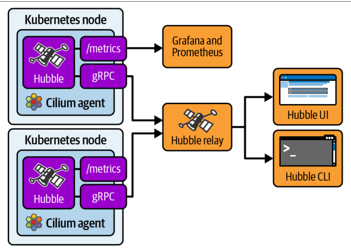
Figure 2-5. Hubble, the observability component of Cilium
图 2-5 Hubble：Cilium 的可观测性组件
Hubble Relay and the Hubble UI are not enabled by default and must be deployed separately. Once Hubble Relay is enabled, you can observe network activity using the Hubble CLI. Here is an example of a flow log for an ICMPv6 (Internet Control Message Protocol for IPv6) packet sent from a pod named
pod-worker on a node named kind-worker to a pod named pod-worker2 located on the node kind-worker2:Hubble Relay 与 Hubble UI 默认不会被启用，需要单独部署。一旦启用了 Hubble Relay，你就可以使用 Hubble CLI 观察网络活动。以下是一个 ICMPv6（IPv6 的互联网控制消息协议）数据包的流日志示例，该数据包源自节点
kind-worker 上名为 pod-worker 的 Pod，发往节点 kind-worker2 上名为 pod-worker2 的 Pod：代码（原文）
$ hubble observe --ipv6 --from-pod pod-worker Sep 7 15:11:18.288: default/pod-worker (ID:3211) -> default/pod-worker2 (ID:50760) to-overlay FORWARDED (ICMPv6 EchoRequest) Sep 7 15:11:18.289: default/pod-worker (ID:3211) -> default/pod-worker2 (ID:50760) to-endpoint FORWARDED (ICMPv6 EchoRequest)
The
--from-pod flag filters flows originating from the specified pod, while --ipv6 limits the output to IPv6 traffic. Each log entry contains metadata about the packet, including its timestamp, source and destination pods, forwarding decision, and protocol type. In this example, the two log lines represent the same ICMPv6 echo request as it traverses the overlay network and then reaches the destination endpoint. The Hubble UI provides a visual representation of the same data, displaying a live service map of network interactions within the cluster. It can be accessed through a browser once the relay and UI components are deployed. You will use Hubble throughout this book to verify network activity and observe how packets move through the Cilium datapath. For a deeper dive into Hubble, including flow export, metrics, and integration with external observability tools, see Chapter 15.--from-pod 参数用于过滤源自指定 Pod 的流，而 --ipv6 则将输出限制为 IPv6 流量。每条日志条目都包含关于该数据包的元数据，包括时间戳、源与目的 Pod、转发决定以及协议类型。在这个示例中，两行日志代表的是同一个 ICMPv6 echo request 在穿越 overlay 网络后抵达目的端点的全过程。Hubble UI 则以可视化方式呈现相同的数据，展示集群内网络交互的实时服务地图。在部署好 Relay 与 UI 组件之后，你可以通过浏览器访问它。在本书中，你将反复使用 Hubble 来验证网络活动并观察数据包如何穿越 Cilium 数据路径。关于 Hubble 的更深入介绍（包括流导出、指标以及与外部可观测性工具的集成），请参阅第 15 章。The Envoy ProxyEnvoy 代理
While eBPF allows Cilium to make networking and security decisions directly in the kernel, some features require visibility beyond layer 4. For these cases, Cilium integrates the Envoy proxy, an open source, high-performance layer 7 proxy originally developed by Lyft and now part of the CNCF. Cilium uses Envoy whenever application-layer context is required to make decisions or provide observability. This includes features such as Ingress and Gateway API, layer 7 network policy, and application protocol visibility. Envoy can inspect and filter HTTP, gRPC, or TLS traffic, enabling Cilium to enforce rules based on attributes like HTTP methods, paths, or hostnames and to terminate encrypted connections when necessary. Envoy is deployed as a DaemonSet, giving each node its own dedicated Envoy instance that the Cilium agent communicates with locally. Only traffic that requires application-layer inspection or policy enforcement is redirected to Envoy, while all other traffic remains within the eBPF datapath. To confirm that Envoy is running in your cluster, you can list the DaemonSet:
虽然 eBPF 让 Cilium 可以直接在内核中做出网络与安全决策，但某些特性需要在四层之上的可见性。在这些场景下，Cilium 集成了 Envoy 代理——这是一个由 Lyft 最初开发、现已属于 CNCF 的开源高性能七层代理。Cilium 会在任何需要应用层上下文来做出决策或提供可观测性的场景下使用 Envoy。相关特性包括 Ingress 与 Gateway API、七层网络策略以及应用协议可见性。Envoy 可以检查并过滤 HTTP、gRPC 或 TLS 流量，使 Cilium 能够基于 HTTP 方法、路径或主机名等属性强制执行规则，并在必要时终止加密连接。Envoy 以 DaemonSet 的形式部署，让每个节点拥有一个独立的 Envoy 实例，Cilium Agent 在本地与其通信。只有需要应用层检查或策略执行的流量才会被重定向到 Envoy，其余所有流量仍保持在 eBPF 数据路径内。要确认 Envoy 是否在你的集群中运行，你可以列出这个 DaemonSet：
代码（原文）
$ kubectl get daemonset -n kube-system cilium-envoy NAME DESIRED CURRENT READY UP-TO-DATE AVAILABLE cilium-envoy 3 3 3 3 3
The DNS ProxyDNS 代理
In addition to Envoy, Cilium includes a lightweight DNS proxy that enables FQDNbased policies at layer 4. The proxy intercepts DNS queries and responses, ties resolved IPs to domain names in eBPF maps, and lets Cilium enforce policies based on names rather than static IPs. Although the DNS proxy is considered a separate component in Cilium, it operates on every node within the cluster as part of the Cilium agent pod. This approach minimizes performance overhead by ensuring that DNS traffic is intercepted and processed locally, avoiding unnecessary internode communication. FQDN-based policies are especially useful in dynamic environments, where services are accessed via domain names rather than hardcoded IP addresses. This is common when workloads communicate with third-party APIs or cloud services. Instead of tracking and maintaining lists of changing IPs, Cilium allows operators to define policies based on domain names. We will revisit DNS and FQDN-based network policies in Chapter 13, which covers advanced policy concepts and configuration.
除了 Envoy 之外，Cilium 还内置了一个轻量级 DNS 代理，用于在四层实现基于 FQDN 的策略。该代理拦截 DNS 查询与响应，将解析出的 IP 与域名绑定到 eBPF map 中，让 Cilium 能够基于名称而非静态 IP 来执行策略。尽管 DNS 代理在 Cilium 中被视为一个独立组件，但它作为 Cilium Agent Pod 的一部分运行在集群中的每个节点上。这种做法通过确保 DNS 流量在本地被拦截和处理，最大限度地降低了性能开销，避免了不必要的跨节点通信。基于 FQDN 的策略在动态环境中尤为有用，在这类环境中服务是通过域名而非硬编码的 IP 地址被访问的。这在工作负载与第三方 API 或云服务通信时很常见。Cilium 允许运维人员基于域名定义策略，而不必跟踪和维护不断变化的 IP 列表。关于 DNS 与基于 FQDN 的网络策略，我们将在介绍高级策略概念与配置的第 13 章中再次讨论。
Summary小结
In this chapter, we have explored the individual components of Cilium. At the heart of Cilium’s architecture is the Cilium agent. It installs the Cilium CNI plugin; loads the eBPF programs and maps used to forward, filter, and observe traffic; and monitors the custom resource definitions managed by the Cilium operator. When a pod sends traffic, an eBPF program decides whether to forward or drop the traffic and may send it to a proxy for further processing (Envoy for HTTP-related traffic, or DNS for DNS-related requests). The Cilium CLI is a binary that primarily helps install and manage Cilium. Meanwhile, the Hubble server observes and enriches traffic data, and Hubble Relay aggregates it across all cluster nodes. The Hubble UI and CLI provide options to visualize network activity in a web browser and a terminal, respectively. With that, we’ve established a solid understanding of the various components that make up Cilium, allowing us to explore each one in greater depth in the following chapters.
在本章中，我们逐一探讨了 Cilium 的各个组件。Cilium 架构的核心是 Cilium Agent。它安装 Cilium CNI 插件；加载用于转发、过滤和观察流量的 eBPF 程序与 map；并监控由 Cilium Operator 管理的自定义资源定义。当一个 Pod 发送流量时，eBPF 程序会决定是转发还是丢弃该流量，并可能将其发送到代理做进一步处理（与 HTTP 相关的流量送到 Envoy，与 DNS 相关的请求送到 DNS 代理）。Cilium CLI 是一个二进制工具，主要用于安装和管理 Cilium。与此同时，Hubble server 观察并丰富流量数据，Hubble Relay 则在所有集群节点之间进行聚合。Hubble UI 与 CLI 分别提供了在 Web 浏览器和终端中可视化网络活动的选项。至此，我们已经对构成 Cilium 的各个组件有了扎实的理解，后续章节将对每一个组件进行更深入的探讨。
第 3 章Getting Started with CiliumCilium 入门
Now that you’re familiar with the core components of Cilium, let’s go ahead and put it to use. The best way to become familiar with Cilium is to deploy it and try out some of the core capabilities. In this chapter, you will learn how to:
现在你已经熟悉了 Cilium 的核心组件，让我们开始动手实践。熟悉 Cilium 的最佳方式就是将其部署起来，并尝试一些核心能力。在本章中，你将学习：
- Install Cilium in a Kubernetes cluster在 Kubernetes 集群中安装 Cilium
- Deploy an application部署一个应用
- Access, secure, and monitor the application对应用进行访问、安全防护和监控
In later chapters, we will dive further into various areas of Cilium, but the practical, hands-on experience you gain here will give you a strong foundation to build on. To get started, you will need access to a Kubernetes cluster. We’ll create one locally.
在后续章节中，我们将深入探讨 Cilium 的各个领域，但你在这里获得的实践动手经验将为后续学习打下坚实基础。开始之前，你需要能够访问一个 Kubernetes 集群。我们将在本地创建一个。
If you don’t have local compute resources available to run a Kubernetes cluster, feel free to use the free online hands-on labs provided by Isovalent. Head over to https://isovalent.com/labs to begin your evaluation of Cilium.
如果你没有本地计算资源来运行 Kubernetes 集群，可以使用 Isovalent 提供的免费在线动手实验环境。前往 https://isovalent.com/labs 开始你的 Cilium 评估之旅。
Setting Up Your Environment搭建你的环境
Throughout this book, you will find code snippets and scripts to install, test, and configure Cilium. This implies that you have access to a Kubernetes cluster. Do not try any of the scripts in a production cluster: they may cause some disruption or, even worse, a complete cluster outage. Cilium works with any distribution conformant with “vanilla” Kubernetes and is often even packaged and included by default with many Kubernetes distributions and services. Not everyone has the financial or computing resources to run a Kubernetes cluster.
在本书中，你会看到用于安装、测试和配置 Cilium 的代码片段和脚本。这意味着你需要有可用的 Kubernetes 集群。**不要在生产环境的集群中尝试任何这些脚本**：它们可能造成中断，甚至更糟——导致整个集群宕机。Cilium 兼容任何符合"原生" Kubernetes 规范的发行版，并且经常被许多 Kubernetes 发行版和服务默认打包包含。并非所有人都有足够的财务或计算资源来运行 Kubernetes 集群。
Therefore, the environment we will recommend for the vast majority of the exercises in the book is based on Kubernetes in Docker (kind), a popular tool used to run Kubernetes clusters locally in Docker containers. We recommend kind over alternatives because it is a lightweight, CNCF-certified conformant Kubernetes installer that works across multiple platforms (Linux, macOS, and Windows). If you prefer another lightweight Kubernetes solution, check the documentation to make sure it’s compatible with Cilium.
因此，对于本书中绝大多数练习，我们推荐的环境基于 Kubernetes in Docker（kind）——一个流行的本地运行 Kubernetes 集群的工具。我们推荐 kind 而非其他替代方案，因为它轻量、通过 CNCF 认证兼容 Kubernetes，并且跨多平台（Linux、macOS 和 Windows）工作。如果你偏好其他轻量级 Kubernetes 方案，请查阅文档以确保它与 Cilium 兼容。
Kubernetes in Docker (kind)Kubernetes in Docker（kind）
This chapter assumes you have Docker or another container runtime installed, as kind requires it to launch Kubernetes clusters. If you need help installing Docker, refer to the official documentation for your operating system. If you don’t have kind installed yet, let’s do that now. For those of you on macOS, you can use Homebrew to install it:
本章假设你已经安装了 Docker 或其他容器运行时，因为 kind 需要它来启动 Kubernetes 集群。如果你需要帮助安装 Docker，请参考对应操作系统的官方文档。如果你还没有安装 kind，现在来安装它。macOS 用户可以使用 Homebrew 安装：
代码（原文）
$ brew install kind
The instructions for other platforms can be found on the kind website.
其他平台的安装说明可以在 kind 官网上找到。
Installing the Cilium CLI安装 Cilium CLI
To manage and inspect Cilium deployments, we will use the Cilium CLI. It should be available in your operating system’s package manager. For example, you can run the following Homebrew command to install it on macOS:
为了管理和检查 Cilium 部署，我们将使用 Cilium CLI。它应该可以在你操作系统的包管理器中获取。例如，你可以在 macOS 上运行以下 Homebrew 命令来安装它：
代码（原文）
$ brew install cilium-cli
You can also download and install Cilium CLI from its GitHub repository. You’ll find detailed instructions in the Cilium docs. Once that’s done, verify that it has been installed correctly:
你也可以从 Cilium CLI 的 GitHub 仓库下载并安装。在 Cilium 文档中可以找到详细说明。安装完成后，验证它是否正确安装：
代码（原文）
$ cilium version --client cilium-cli: v0.18.7 compiled with go1.25.0 on darwin/arm64 cilium image (default): v1.18.1 cilium image (stable): v1.18.4
Installing the Hubble CLI安装 Hubble CLI
To observe network traffic in the cluster, we will use Hubble and its binary client, the Hubble CLI. You can also install Hubble with a package manager like Homebrew:
为了观察集群中的网络流量，我们将使用 Hubble 及其二进制客户端——Hubble CLI。你也可以像 Homebrew 这样的包管理器来安装 Hubble：
代码（原文）
$ brew install hubble
Alternatively, download and install the tarball from the Hubble GitHub repository. Again, detailed installation instructions are available in the Cilium docs. You can verify that the Hubble CLI has been installed correctly by running the following command:
或者，从 Hubble GitHub 仓库下载并安装 tarball。同样，Cilium 文档中有详细的安装说明。你可以通过运行以下命令来验证 Hubble CLI 是否已正确安装：
代码（原文）
$ hubble version hubble v1.16.4@HEAD-4b765dc compiled with go1.23.3 on darwin/arm64
Installing Helm安装 Helm
We will use the Kubernetes package manager Helm throughout the book. If you don’t have it installed on your machine yet, install it via your package manager (e.g., with
brew install helm) or refer to the official Helm installation docs. We’ve used Helm v3 in this book.我们在整本书中都会使用 Kubernetes 包管理器 Helm。如果你还没有在机器上安装它，通过你的包管理器（例如
brew install helm）安装，或参考 Helm 官方安装文档。本书中我们使用的是 Helm v3。Deploying a kind Cluster部署 kind 集群
The following YAML manifest, available in the book’s GitHub repository, includes the specification of the cluster:
下面这个 YAML 清单可以在本书的 GitHub 仓库中找到，它包含了集群的规格说明：
代码（原文）
kind: Cluster # Declares a kind cluster apiVersion: kind.x-k8s.io/v1alpha4 # Kind API version nodes: - role: control-plane # One control-plane node - role: worker # Two worker nodes - role: worker # Two worker nodes networking: disableDefaultCNI: true # Disables kindnetd prior to Cilium install
The most notable aspect of the configuration is the
networking.disableDefaultCNI: true setting. It specifies that the cluster must be deployed without kind’s built-in CNI (kindnetd). As you’ll recall from Chapter 1, a CNI plugin is required in order for the cluster to host and connect applications. We intentionally disable kind’s default built-in CNI so that we can install Cilium instead in the next section.这个配置最值得注意的方面是
networking.disableDefaultCNI: true 这个设置。它指定集群部署时不使用 kind 内置的 CNI（kindnetd）。回忆一下第 1 章，集群要能够承载和连接应用，就必须有 CNI 插件。我们刻意禁用了 kind 的默认内置 CNI，以便在下一节改为安装 Cilium。You can find all the YAML manifests you will use in this chapter to deploy and test Cilium in the chapter03 directory of the book’s GitHub repository. Navigate to this folder before proceeding.
你在本章中用来部署和测试 Cilium 的所有 YAML 清单，都可以在本书 GitHub 仓库的 chapter03 目录下找到。继续之前，请先进入该文件夹。
Let’s now deploy the kind cluster. To do that, you’ll use the following command:
现在让我们部署 kind 集群。为此，你需要使用以下命令：
代码（原文）
$ kind create cluster --config kind.yaml Creating cluster "kind" ... ✓ Ensuring node image (kindest/node:v1.33.4) ✓ Preparing nodes ✓ Writing configuration ✓ Starting control-plane ✓ Installing StorageClass ✓ Joining worker nodes Set kubectl context to "kind-kind" You can now use your cluster with: kubectl cluster-info --context kind-kind Thanks for using kind!
With the cluster deployed, let’s use
kubectl to verify its status:集群部署完成后，让我们用
kubectl 来验证它的状态：代码（原文）
$ kubectl get nodes NAME STATUS ROLES AGE VERSION kind-control-plane NotReady control-plane 6m v1.33.4 kind-worker NotReady <none> 6m v1.33.4 kind-worker2 NotReady <none> 6m v1.33.4
The preceding terminal output shows that three nodes (one control plane and two workers) have been deployed, but they are in the
NotReady state. This indicates the nodes are unhealthy and will not accept workloads. You may have already guessed the reason, but let’s confirm it by inspecting the status of one of our worker nodes:上面的终端输出显示已经部署了三个节点（一个控制平面节点和两个工作节点），但它们都处于
NotReady 状态。这表示节点不健康，不会接受工作负载。你可能已经猜到原因了，但让我们通过检查其中一个工作节点的状态来确认：代码（原文）
$ kubectl get nodes kind-worker -o yaml [...] message: > container runtime network not ready: NetworkReady=false reason: NetworkPluginNotReady message: Network plugin returns error: cni plugin not initialized
As you can see, since no network plugin has been deployed, the kubelet reports it is not ready to run pods. We’ll resolve that by installing the Cilium CNI plugin in the next section.
如你所见，由于尚未部署任何网络插件，kubelet 报告它还没准备好运行 Pod。我们将在下一节通过安装 Cilium CNI 插件来解决这个问题。
Installing Cilium安装 Cilium
Cilium supports multiple installation methods, but the two most common are using the Cilium CLI (
cilium install) for quick setup and environment autodetection or Helm, which provides explicit control and aligns better with GitOps and long-term operations.Cilium 支持多种安装方式，但最常用的两种是：使用 Cilium CLI（
cilium install）进行快速设置和环境自动检测，以及使用 Helm——它提供显式控制，更适合 GitOps 和长期运维。Installing Cilium Using the Cilium CLI使用 Cilium CLI 安装 Cilium
The Cilium CLI simplifies the initial experience by inspecting your current Kubernetes context and generating a set of recommended Helm values based on your environment. To preview the configuration without performing the installation, run:
Cilium CLI 通过检查你当前的 Kubernetes context，并根据你的环境生成一组推荐的 Helm values，来简化首次使用体验。要在不执行实际安装的情况下预览配置，运行：
代码（原文）
$ cilium install --dry-run-helm-values
For your kind cluster, this should return:
对于你的 kind 集群，这应该会返回：
代码（原文）
cluster: name: kind-kind ipam: mode: kubernetes operator: replicas: 1 routingMode: tunnel tunnelProtocol: vxlan
In this configuration:
在这个配置中：
- The Cilium operator will be deployed with a single replica.Cilium Operator 将以单副本部署。
- The IPAM mode is set to Kubernetes Host Scope mode.IPAM 模式设置为 Kubernetes Host Scope 模式。
- The routing mode is set to encapsulation, with VXLAN tunnels used to encapsu‐路由模式设置为封装模式，使用 VXLAN 隧道在节点之间封装...
late traffic between nodes. We’ll explore IPAM and routing modes in more detail in Chapters 4 and 5. For now, note that Cilium will form VXLAN tunnels between all nodes to enable cross-node pod communication, and it will allocate pod IPs from the subnets assigned to each node by Kubernetes. To verify the PodCIDRs Kubernetes has assigned, run:
...节点之间的流量。我们将在第 4 章和第 5 章更详细地探讨 IPAM 和路由模式。目前需要注意的是，Cilium 会在所有节点之间创建 VXLAN 隧道来实现跨节点的 Pod 通信，并且它会从 Kubernetes 分配给每个节点的子网中分配 Pod IP。要验证 Kubernetes 分配的 PodCIDR，运行：
代码（原文）
$ kubectl get nodes kind-worker -o yaml | yq .spec.podCIDR 10.244.1.0/24 $ kubectl get nodes kind-worker2 -o yaml | yq .spec.podCIDR 10.244.2.0/24
When you deploy the sample app shortly, you will observe that Cilium assigns IPs from these ranges. Running
cilium install now will install Cilium using the autogenerated settings:当你稍后部署示例应用时，你会看到 Cilium 从这些地址范围中分配 IP。现在运行
cilium install 会使用自动生成的设置来安装 Cilium：代码（原文）
$ cilium install Auto-detected Kubernetes kind: kind Using Cilium version 1.18.4 Autodetected cluster name: kind-kind Autodetected kube-proxy has been installed
Installing Cilium Using Helm (Recommended)使用 Helm 安装 Cilium（推荐）
Helm is already widely used to manage other Kubernetes applications, such as Prometheus, Grafana, cert-manager, and so on. Using it for Cilium as well ensures a consistent deployment workflow and makes it easier to integrate with continuous integration/continuous deployment (CI/CD) and GitOps practices. First, set up the Helm repository:
Helm 已被广泛用于管理其他 Kubernetes 应用，如 Prometheus、Grafana、cert-manager 等。用它来管理 Cilium 也能确保一致的部署工作流，并更容易与持续集成/持续部署（CI/CD）和 GitOps 实践集成。首先，设置 Helm 仓库：
代码（原文）
$ helm repo add cilium https://helm.cilium.io/
Then install Cilium with Helm:
然后用 Helm 安装 Cilium：
代码（原文）
$ helm install cilium cilium/cilium -n kube-system \ --version 1.18.4 \ --values helm-values.yaml
You should see something like this:
你应该会看到类似这样的输出：
代码（原文）
NAME: cilium LAST DEPLOYED: Fri Dec 19 09:03:46 2025 NAMESPACE: kube-system STATUS: deployed REVISION: 1 TEST SUITE: None NOTES: You have successfully installed Cilium with Hubble.
You’ll find Helm values files to use throughout the rest of the book in the folders corresponding to each chapter in the book’s GitHub repository. Use them with the Helm install command shown earlier to deploy Cilium with the appropriate settings. Instead of using a values file, you can pass values inline:
在本书 GitHub 仓库的各章节对应文件夹中，你会找到在本书剩余部分使用的 Helm values 文件。用它们配合前面展示的 Helm install 命令，以合适的设置部署 Cilium。你也可以不使用 values 文件，而是以内联方式传递值：
代码（原文）
$ helm upgrade --install cilium cilium/cilium -n kube-system \ --version 1.18.4 \ --set cluster.name=kind-kind \ --set ipam.mode=kubernetes \ --set operator.replicas=1 \ --set routingMode=tunnel \ --set tunnelProtocol=vxlan
The
cilium install command also accepts these Helm-style --set flags for customization. By default, both cilium install and Helm will install the latest stable version of Cilium.1 However, you can explicitly specify a version to ensure consistency across environments or to avoid unexpected changes. This is especially useful in production, where you may want to pin versions and manage upgrades intentionally.cilium install 命令也接受这些 Helm 风格的 --set 标志来自定义。默认情况下，cilium install 和 Helm 都会安装 Cilium 的最新稳定版本。1 不过，你可以显式指定一个版本，以确保跨环境的一致性或避免意外变更。这在生产环境中尤其有用，因为你可能希望锁定版本并有意管理升级。1To be precise, the Cilium CLI will install the version of Cilium that was most recent when the CLI was built.
1 准确地说，Cilium CLI 会安装在构建该 CLI 时最新的 Cilium 版本。
To install a specific version, use the
--version flag:要安装特定版本，使用
--version 标志：代码（原文）
$ helm upgrade --install cilium cilium/cilium \ -n kube-system --version 1.18.4 --values helm-values.yaml
You can watch the progress of the installation by typing
cilium status --wait. After a couple of minutes, Cilium should be successfully installed. Verify the installation with the cilium status command:你可以通过输入
cilium status --wait 来观察安装进度。过几分钟后，Cilium 应该就能成功安装了。用 cilium status 命令验证安装结果：代码（原文）
$ cilium status /¯¯\ /¯¯\__/¯¯\ Cilium: OK \__/¯¯\__/ Operator: OK /¯¯\__/¯¯\ Envoy DaemonSet: OK \__/¯¯\__/ Hubble Relay: disabled \__/ ClusterMesh: disabled DaemonSet cilium Desired: 3, Ready: 3/3 DaemonSet cilium-envoy Desired: 3, Ready: 3/3 Deployment cilium-operator Desired: 1, Ready: 1/1 Containers: cilium Running: 3 cilium-envoy Running: 3 cilium-operator Running: 1 clustermesh-apiserver hubble-relay Cluster Pods: 3/3 managed by Cilium [...]
In the output, you can see how the components we described in Chapter 2 are deployed. Since the Cilium agent and Envoy components are both deployed through a DaemonSet, there is an instance of each deployed on every cluster node. As you might have seen in the earlier
cilium install --dry-run-helm-values output, a single Cilium operator was deployed as part of the deployment. You can verify this with the following kubectl commands:从输出中，你可以看到我们在第 2 章介绍的组件是如何部署的。由于 Cilium Agent 和 Envoy 组件都通过 DaemonSet 部署，集群中的每个节点上都会各有一个实例。正如你在前面
cilium install --dry-run-helm-values 输出中看到的，Cilium Operator 是以单副本作为部署的一部分来部署的。你可以用下面的 kubectl 命令来验证：代码（原文）
$ kubectl get -n kube-system daemonset cilium cilium-envoy NAME DESIRED READY NODE SELECTOR cilium 3 3 kubernetes.io/os=linux cilium-envoy 3 3 kubernetes.io/os=linux $ kubectl get -n kube-system deployment cilium-operator NAME READY AVAILABLE cilium-operator 1/1 1
Deploying a Sample Application部署示例应用
Let’s now deploy a sample application. The following example is a common first application deployed in Kubernetes: the lightweight NGINX web server app. We’ll use the nginx-deployment.yaml manifest file from the book’s GitHub repository:
现在让我们部署一个示例应用。下面这个例子是在 Kubernetes 中常见的第一个应用：轻量级的 NGINX Web 服务器应用。我们将使用本书 GitHub 仓库中的 nginx-deployment.yaml 清单文件：
代码（原文）
apiVersion: apps/v1 kind: Deployment metadata: name: nginx-deployment spec: replicas: 1 selector: matchLabels: app.kubernetes.io/name: nginx template: metadata: labels: app.kubernetes.io/name: nginx spec: nodeSelector: kubernetes.io/hostname: kind-worker2 containers: - name: nginx image: nginx
“Pinning” the
nginx-server pod to a specific worker node (kind-worker2) isn’t a best practice in production, but it’s useful here to illustrate internode traffic, which Cilium handles through VXLAN tunneling in the selected configuration mode. Let’s deploy the manifest:将
nginx-server Pod"固定"到特定工作节点（kind-worker2）在生产环境中并不是最佳实践，但在这里它能很好地说明跨节点流量——在我们选择的配置模式下，Cilium 通过 VXLAN 隧道处理跨节点流量。让我们部署这个清单：代码（原文）
$ kubectl apply -f nginx-deployment.yaml deployment.apps/nginx-deployment created
We can verify that the pod was scheduled on the expected node and that it was assigned an IP address by running the following command:
我们可以运行以下命令来验证 Pod 是否被调度到了预期的节点，以及它是否被分配了 IP 地址：
代码（原文）
$ kubectl get pods -o wide NAME READY IP NODE nginx-deployment-979f5455f-tjd2w 1/1 10.244.2.127 kind-worker2
Next, we’ll deploy a pod on a different worker node (
kind-worker), using the following manifest (netshoot-client-pod.yaml). We’re using a networking utility called netshoot, which we’ll use throughout the book because it includes many helpful networking tools. Given that it’s a debugging utility, it typically runs once and exits.接下来，我们将使用另一个清单（netshoot-client-pod.yaml）在不同的工作节点（
kind-worker）上部署一个 Pod。我们使用一个名为 netshoot 的网络工具集，因为它包含了许多有用的网络工具，所以我们会在全书中使用它。由于它是一个调试工具，通常运行一次后就会退出。To keep it running, we instruct it to run
sleep infinity:为了让它保持运行，我们让它执行
sleep infinity：代码（原文）
apiVersion: v1 kind: Pod metadata: name: netshoot-client labels: app.kubernetes.io/name: netshoot-client spec: nodeSelector: kubernetes.io/hostname: kind-worker containers: - name: netshoot image: nicolaka/netshoot command: ["sleep", "infinity"]
Let’s deploy the pod and verify that it was scheduled on the
kind-worker node:让我们部署这个 Pod 并验证它是否被调度到了
kind-worker 节点：代码（原文）
$ kubectl apply -f netshoot-client-pod.yaml pod/netshoot-client created $ kubectl get pods -o wide NAME READY IP NODE netshoot-client 1/1 10.244.1.67 kind-worker
We should also check that we can connect from
netshoot-client (located on kindworker) to the nginx-server (located on kind-worker2):2我们还应该检查从
netshoot-client（位于 kind-worker）到 nginx-server（位于 kind-worker2）是否可以连通：2代码（原文）
$ kubectl exec pod/netshoot-client -- curl -s http://10.244.2.127 <!DOCTYPE html> <html> <head> <title>Welcome to nginx!</title> [OUTPUT TRUNCATED]
To verify HTTP connectivity, we really only need the HTTP status code. In our case, we expect a
200 to show a successful access. The following curl command will output just the status code:要验证 HTTP 连通性，我们实际上只需要 HTTP 状态码。在我们的例子中，期望返回
200 表示访问成功。下面这条 curl 命令只输出状态码：代码（原文）
$ kubectl exec pod/netshoot-client -- \
curl -s -o /dev/null \
-w "%{http_code}\n" \
http://10.244.2.127We’ve successfully deployed two pods across different nodes in the cluster, confirmed IP address assignments, and verified successful internode connectivity using Cilium’s VXLAN-based tunneling. We’ll dive deeper into VXLAN and the datapath in Chapter 5.
我们已经成功在集群的不同节点上部署了两个 Pod，确认了 IP 地址分配，并验证了通过 Cilium 基于 VXLAN 的隧道实现了跨节点的成功连通性。我们将在第 5 章更深入地探讨 VXLAN 和数据路径。
2Use the pod IP you got from the previous step, which probably won’t match ours.
2 使用你在上一步得到的 Pod IP，它很可能和我们的不一样。
While a successful connection from a client to the IP of a destination pod is a good first step, you might already know it’s not the preferred approach in Kubernetes. Kubernetes provides the service abstraction as a deterministic method for accessing applications. Upon creation, Kubernetes will assign a service a virtual IP address. When a client connects to the service’s virtual IP, traffic will be forwarded to one of the service’s endpoints.
虽然从客户端直接连接到目标 Pod 的 IP 是成功连接的好的第一步，但你可能已经知道这不是在 Kubernetes 中推荐的做法。Kubernetes 提供了 service 抽象作为访问应用的确定性方法。创建 Service 时，Kubernetes 会为其分配一个虚拟 IP 地址。当客户端连接到 Service 的虚拟 IP 时，流量会被转发到该 Service 的某一个端点上。
Kubernetes uses Endpoints and EndpointSlices to track the backends of a service. These objects are used for load-balancing decisions for each service. EndpointSlices, in particular, offer a more scalable way to track backends across large clusters. By contrast, Cilium uses CiliumEndpoints (CEPs) and CiliumEndpointSlices (CESs) to support network routing and policy enforcement (you will see how CEPs are used later in this book).
Kubernetes 使用 Endpoint 和 EndpointSlice 来跟踪 Service 的后端。这些对象用于每个 Service 的负载均衡决策。EndpointSlice 尤其提供了一种在大型集群中跟踪后端的更具扩展性的方式。相比之下，Cilium 使用 CiliumEndpoint（CEP）和 CiliumEndpointSlice（CES）来支持网络路由和策略执行（你会在本书后面看到 CEP 是如何使用的）。
To better understand how Kubernetes services work, let’s create one using the following manifest (nginx-service.yaml). This service listens on TCP port 80 and loadbalances traffic randomly toward pods labeled
app.kubernetes.io/name: nginx:为了更好地理解 Kubernetes Service 的工作方式，让我们使用下面的清单（nginx-service.yaml）来创建一个。这个 Service 在 TCP 端口 80 上监听，并将流量随机负载均衡到带有标签
app.kubernetes.io/name: nginx 的 Pod：代码（原文）
apiVersion: v1 kind: Service metadata: name: nginx-service spec: selector: app.kubernetes.io/name: nginx ports: - protocol: TCP port: 80 targetPort: 80 type: ClusterIP
Once you’ve deployed the service, inspect it:
部署好 Service 后，检查一下：
代码（原文）
$ kubectl get svc nginx-service -o yaml apiVersion: v1 kind: Service metadata: [...] name: nginx-service namespace: default spec: clusterIP: 10.96.242.74 clusterIPs: - 10.96.242.74 internalTrafficPolicy: Cluster ipFamilies: - IPv4 ipFamilyPolicy: SingleStack ports: - port: 80 protocol: TCP targetPort: 80 selector: app.kubernetes.io/name: nginx sessionAffinity: None type: ClusterIP
The service type is ClusterIP, which means it’s only accessible from within the cluster. It was assigned a cluster-internal IP (
10.96.242.74) in the 10.96.0.0/16 CIDR range (the default IPv4 service subnet in kind). You can confirm that the service is working by sending an HTTP request to its ClusterIP:Service 类型是 ClusterIP，这意味着它只能从集群内部访问。它被分配了一个集群内部 IP（
10.96.242.74），位于 10.96.0.0/16 CIDR 范围内（kind 中默认的 IPv4 Service 子网）。你可以通过向其 ClusterIP 发送 HTTP 请求来确认 Service 正常工作：代码（原文）
$ kubectl exec netshoot-client -- curl http://10.96.242.74 <h1>Welcome to nginx!</h1>
ClusterIP is one of several Kubernetes service types, alongside NodePort and LoadBalancer. Chapter 6 will provide a refresher on service types. While ClusterIP is used for internal communication, most of your applications will need to be accessible from outside the cluster. Chapter 7 will introduce Ingress and Gateway API for handling external traffic, and Chapter 10 will explain the networking options available to expose your applications.
ClusterIP 是 Kubernetes 中几种 Service 类型之一，其他还包括 NodePort 和 LoadBalancer。第 6 章会回顾各种 Service 类型。虽然 ClusterIP 用于内部通信，但你的大多数应用都需要能够从集群外部访问。第 7 章将介绍用于处理外部流量的 Ingress 和 Gateway API，第 10 章将说明暴露应用可用的网络选项。
Although the client connects to the service IP, the request is forwarded to one of the backend pods selected by the service. The backend pod generates the response, but Cilium’s eBPF-based service handling rewrites it so that the client still sees the service IP as the source. Kubernetes tracks which pods belong to the service through EndpointSlices, which list the IPs of all pods matching the service’s label selector:
虽然客户端连接的是 Service IP，但请求会被转发到 Service 选中的某个后端 Pod。后端 Pod 生成响应，但 Cilium 基于 eBPF 的 Service 处理会对响应进行重写，使客户端仍然看到 Service IP 作为源地址。Kubernetes 通过 EndpointSlice 跟踪哪些 Pod 属于该 Service——EndpointSlice 中列出了所有匹配 Service 标签选择器的 Pod 的 IP：
代码（原文）
$ kubectl get endpointslices.discovery.k8s.io nginx-service-66q4l NAME ADDRESSTYPE PORTS ENDPOINTS AGE nginx-service-66q4l IPv4 80 10.244.2.127 2m13s
If you scale the deployment, Kubernetes automatically updates the endpoints:
如果你对 Deployment 进行扩缩容，Kubernetes 会自动更新 endpoints：
代码（原文）
$ kubectl scale deployment nginx-deployment --replicas=2 deployment.apps/nginx-deployment scaled
After scaling, both pods will be running and the EndpointSlices object will reflect both IPs:
扩容后，两个 Pod 都会运行起来，EndpointSlice 对象会反映两个 IP：
代码（原文）
$ kubectl get pods -l app.kubernetes.io/name=nginx NAME READY STATUS RESTARTS AGE nginx-deployment-979f5455f-9pm7d 1/1 Running 0 4m29s nginx-deployment-979f5455f-xw8nz 1/1 Running 0 13s $ kubectl get endpointslices.discovery.k8s.io nginx-service-66q4l NAME ADDRESSTYPE PORTS ENDPOINTS AGE nginx-service-66q4l IPv4 80 10.244.2.127,10.244.2.189 14m
Behind the scenes, these endpoint IPs are what Kubernetes uses to route traffic to pods. In many clusters,
kube-proxy runs on every node and programs iptables, IPVS, or nftables rules to implement service forwarding. In our setup, kube-proxy is installed, but Cilium still intercepts ClusterIP traffic and resolves services through its eBPF datapath. kube-proxy remains present on the node, although it is not used for service lookup in this case. You can confirm that kube-proxy is running with:在幕后，这些 endpoint IP 就是 Kubernetes 用来将流量路由到 Pod 的。在许多集群中，
kube-proxy 在每个节点上运行，通过编程 iptables、IPVS 或 nftables 规则来实现 Service 转发。在我们的设置中，kube-proxy 已被安装，但 Cilium 仍然会拦截 ClusterIP 流量，并通过其 eBPF 数据路径来解析 Service。kube-proxy 仍然存在于节点上，尽管此时它不用于 Service 查找。你可以用以下命令确认 kube-proxy 正在运行：代码（原文）
$ kubectl get -n kube-system daemonset kube-proxy NAME DESIRED READY NODE SELECTOR kube-proxy 3 3 kubernetes.io/os=linux
In Chapter 6, you’ll learn how Cilium replaces
kube-proxy entirely using eBPF, eliminating the need for iptables, IPVS, or nftables. Another benefit of leveraging a service is the automatic service DNS name generation. You can verify successful DNS resolution by accessing the nginx-service name from the client:在第 6 章中，你将学习 Cilium 如何完全用 eBPF 替代
kube-proxy，从而不再需要 iptables、IPVS 或 nftables。使用 Service 的另一个好处是自动生成 Service DNS 名称。你可以从客户端访问 nginx-service 名称来验证 DNS 解析是否成功：代码（原文）
$ kubectl exec netshoot-client -- curl nginx-service.default.svc.cluster.local <h1>Welcome to nginx!</h1>
Given that the client and the NGINX servers reside in the same namespace, you only need the service name, and
curl http://nginx-service would also be successful.由于客户端和 NGINX 服务器位于同一个命名空间，你只需要 Service 名称即可，
curl http://nginx-service 也会成功。Cilium is not responsible for DNS activities; however, as we saw briefly in Chapter 2, it sometimes leverages a component called the DNS Proxy when users define domain-based network policies. You will learn more about that in Chapter 13.
Cilium 不负责 DNS 活动；不过，正如我们在第 2 章简要介绍的，当用户定义基于域名的网络策略时，Cilium 有时会利用一个叫做 DNS Proxy 的组件。你将在第 13 章了解更多相关内容。
Securing the Application with Cilium Network Policies使用 Cilium 网络策略保护应用
With the application deployed and reachable, let’s apply a network policy to restrict access, allowing only trusted systems to access it. We will create a network policy that allows access only from the
netshoot-client to the nginx-server pod, blocking the traffic from unauthorized systems. First, to help us demonstrate network policies, we’ll create another client pod with the following manifest (unauthorized-client.yaml):应用已部署并可达，接下来让我们应用一条网络策略来限制访问，只允许可信系统访问它。我们将创建一条网络策略，只允许
netshoot-client 访问 nginx-server Pod，阻止来自未授权系统的流量。首先，为了帮助演示网络策略，我们先创建另一个客户端 Pod，使用以下清单（unauthorized-client.yaml）：代码（原文）
apiVersion: v1 kind: Pod metadata: name: unauthorized-client spec: containers: - name: netshoot image: nicolaka/netshoot command: ["sleep", "infinity"]
Deploy it and verify it has access to the
nginx-server prior to deploying network policies. You might already be familiar with Kubernetes network policies. Cilium network policies (CNPs) build on them and provide more granular controls. Chapter 12 will cover the concepts of identity, endpoints, labels, and how to construct CNPs. For now, just know that they’re defined through the use of Kubernetes labels. Next, take a look at the following network policy (policy.yaml):部署它，并在部署网络策略之前验证它能否访问
nginx-server。你可能已经熟悉 Kubernetes 网络策略了。Cilium 网络策略（CNP）在此基础上构建，提供更细粒度的控制。第 12 章将介绍身份、端点、标签等概念，以及如何构建 CNP。目前，你只需要知道它们是通过 Kubernetes 标签来定义的。接下来，看看下面这条网络策略（policy.yaml）：代码（原文）
apiVersion: cilium.io/v2 kind: CiliumNetworkPolicy metadata: name: ch03-policy namespace: default spec: endpointSelector: matchLabels: app.kubernetes.io/name: nginx ingress: - fromEndpoints: - matchLabels: app.kubernetes.io/name: netshoot-client toPorts: - ports: - port: "80" protocol: TCP
endpointSelector selects the pods the policy applies to: here we’re selecting pods with the label app.kubernetes.io/name: nginx. ingress defines the traffic direction the policy applies to. In this instance we are defining a rule that will authorize traffic to the pods with the app.kubernetes.io/name: nginx label (egress would instead apply to traffic from the pods). fromEndpoints determines which sources pods are allowed to connect to (here, those with the app.kubernetes.io/name: netshoot-client label). toPorts specifies which TCP/UDP ports are permitted. By default, all egress and ingress traffic is allowed for all endpoints. When an endpoint is selected by a network policy, it transitions to a default deny state, where only explicitly allowed traffic is permitted. Given that our rule has an ingress section, the endpoint goes into default deny mode for ingress. In other words, when traffic enters endpoints with the app.kubernetes.io/name: nginx label, only traffic from clients with the app.kubernetes.io/name: netshoot-client label going to port 80 will be allowed. Any other traffic to these endpoints will be denied.endpointSelector 选择策略应用到哪些 Pod：这里我们选择带有标签 app.kubernetes.io/name: nginx 的 Pod。ingress 定义策略作用的流量方向。在这个例子中，我们定义的规则会授权发往带有 app.kubernetes.io/name: nginx 标签的 Pod 的流量（egress 则作用于来自这些 Pod 的流量）。fromEndpoints 决定允许哪些源 Pod 发起连接（这里是带有 app.kubernetes.io/name: netshoot-client 标签的 Pod）。toPorts 指定允许哪些 TCP/UDP 端口。默认情况下，所有端点的所有出站和入站流量都是被允许的。当一个端点被网络策略选中时，它会转入默认拒绝状态，只有显式允许的流量才会放行。由于我们的规则包含 ingress 部分，该端点会对入站流量进入默认拒绝模式。换句话说，当流量进入带有 app.kubernetes.io/name: nginx 标签的端点时，只允许来自带有 app.kubernetes.io/name: netshoot-client 标签的客户端访问 80 端口的流量。发往这些端点的任何其他流量都会被拒绝。Isovalent offers a free online Network Policy Editor tool to help create and manage network policies.
Isovalent 提供了免费的在线 Network Policy Editor 工具，帮助创建和管理网络策略。
Let’s check that our
netshoot-client has the right label and that unauthorizedclient does not:让我们检查我们的
netshoot-client 是否有正确的标签，以及 unauthorized-client 是否没有：代码（原文）
$ kubectl get pods --show-labels NAME READY LABELS netshoot-client 1/1 app.kubernetes.io/name=netshoot-client nginx-server 1/1 app.kubernetes.io/name=nginx unauthorized-client 1/1 <none>
Once you’ve deployed the policy (policy.yaml) with
kubectl, verify that the unauthorized-client pod can no longer access the NGINX server, while the netshoot-client still can:用
kubectl 部署策略（policy.yaml）后，验证 unauthorized-client Pod 是否不再能够访问 NGINX 服务器，而 netshoot-client 仍然可以：代码（原文）
$ kubectl exec unauthorized-client -- curl --max-time 3 -s \ http://nginx-service command terminated with exit code 28 $ kubectl exec netshoot-client -- curl --max-time 3 -s http://nginx-service <h1>Welcome to nginx!</h1>
Unlike standard Kubernetes network policies, Cilium network policies can apply at up to layer 7. This is particularly useful for securing API calls, such as those made over REST or gRPC. With layer 7 network policies, you can restrict access based on HTTP methods, headers, and paths. Traffic matching layer 7 rules is directed to Envoy, which performs HTTP inspection before forwarding or denying the request. We introduced Envoy in Chapter 2, and you will see more use cases for it in Chapter 7. By default, the NGINX server we deployed includes an error page named 50x.html. The current CiliumNetworkPolicy lets you access it with no restrictions:
与标准 Kubernetes 网络策略不同，Cilium 网络策略可以应用到第 7 层。这对于保护 REST 或 gRPC 等 API 调用特别有用。借助第 7 层网络策略，你可以根据 HTTP 方法、请求头和路径来限制访问。匹配第 7 层规则的流量会被导向 Envoy，由 Envoy 在转发或拒绝请求之前执行 HTTP 检查。我们在第 2 章介绍过 Envoy，你会在第 7 章看到更多它的使用场景。默认情况下，我们部署的 NGINX 服务器包含一个名为 50x.html 的错误页面。当前的 CiliumNetworkPolicy 允许你无限制地访问它：
代码（原文）
$ kubectl exec -t netshoot-client -- curl http://nginx-service/50x.html <html><title>Error</title><body> <h1>An error occurred.</h1> <p>Sorry, the page you are looking for is currently unavailable.</p> <em>Faithfully yours, nginx.</em> </body>
You can refine the previous policy to allow access only to the index.html page via the HTTP
GET method by adding a layer 7 rule such as the following:你可以通过添加如下第 7 层规则来细化之前的策略，只允许通过 HTTP
GET 方法访问 index.html 页面：代码（原文）
toPorts: - ports: - port: "80" protocol: TCP rules: http: - method: "GET" path: "/index.html"
Deploy the updated network policy (policy-with-l7.yaml), overwriting the previously configured policy, and then verify access to /50x.html and /index.html. You should see that the former is now blocked, while the latter is still allowed:
部署更新后的网络策略（policy-with-l7.yaml），覆盖之前配置的策略，然后验证对 /50x.html 和 /index.html 的访问。你应该会看到前者现在被阻止了，而后者仍然被允许：
代码（原文）
$ kubectl exec netshoot-client -- curl -s http://nginx-service/50x.html Access denied $ kubectl exec netshoot-client -- curl http://nginx-service/index.html <h1>Welcome to nginx!</h1>
Notice that this time you receive an “access denied” error, rather than a timeout as you saw earlier when you used a layer 3 policy. While enforced layer 3 rules lead to dropped packets, enforced layer 7 rules applied by Envoy return deny codes for the application protocol. In this case, we’re parsing HTTP traffic, so it returns
403 for a denied request. Now that we have set up a security policy to control who can access our application, let’s observe its effect on actual flows.注意这次你收到了"access denied"错误，而不是之前使用第 3 层策略时看到的超时。第 3 层规则被执行时会导致数据包被丢弃，而由 Envoy 执行的第 7 层规则则会针对应用协议返回拒绝代码。在这个例子中，我们解析的是 HTTP 流量，所以它对被拒绝的请求返回
403。现在我们已经设置了安全策略来控制谁可以访问我们的应用，接下来让我们观察它对流的实际影响。Monitoring the Application with Hubble使用 Hubble 监控应用
Hubble is the observability subsystem of Cilium. You cannot use Hubble without Cilium because it leverages the data collected through eBPF to provide deep visibility into network traffic and policy enforcement. Chapter 15 will cover Hubble in depth. By default, Hubble runs on the individual node on which the Cilium agent runs. This confines the network insights to the traffic observed by the local Cilium agent. As mentioned in Chapter 2, the Hubble Relay component provides a cluster-wide view of network flows. To enable Hubble Relay, use the following command:
Hubble 是 Cilium 的可观测性子系统。没有 Cilium 你无法使用 Hubble，因为它利用通过 eBPF 收集的数据来提供对网络流量和策略执行的深度可见性。第 15 章将深入介绍 Hubble。默认情况下，Hubble 在运行 Cilium Agent 的每个节点上单独运行。这将网络洞察限定在本地 Cilium Agent 观察到的流量范围内。正如第 2 章提到的，Hubble Relay 组件提供了集群范围内的网络流视图。要启用 Hubble Relay，使用以下命令：
代码（原文）
$ helm upgrade cilium cilium/cilium --version 1.18.4 \ --namespace kube-system \ --reuse-values \ --set hubble.relay.enabled=true
Alternatively, you can use the Cilium CLI command
cilium hubble enable to enable Hubble. Once it is enabled, verify that the status of Hubble Relay is OK using或者，你可以使用 Cilium CLI 命令
cilium hubble enable 来启用 Hubble。启用后，通过运行下面的命令确认 Hubble Relay 的状态为 OK：代码（原文）
cilium status.
To access the observability data collected by Hubble, you can use the
port-forward feature of Kubernetes. The following command connects the Hubble client to the local port 4245, enabling you to access the Hubble Relay service in your Kubernetes cluster. The & lets you run Hubble in the background rather than having to keep the terminal open:要访问 Hubble 收集的可观测性数据，你可以使用 Kubernetes 的
port-forward 功能。以下命令将 Hubble 客户端连接到本地端口 4245，使你能够访问 Kubernetes 集群中的 Hubble Relay 服务。& 让 Hubble 在后台运行，这样你就不必一直开着终端：代码（原文）
$ cilium hubble port-forward & [1] 71325 Hubble Relay is available at 127.0.0.1:4245 $
You can now connect to the Hubble server using the Hubble UI or CLI. Let’s start by using the CLI. First, verify the status of Hubble using
hubble status. This command provides a real-time snapshot of Hubble’s health, including metrics such as the rate of flows observed per second and the volume of flows currently stored locally:你现在可以使用 Hubble UI 或 CLI 连接到 Hubble 服务器。我们先从 CLI 开始。首先，用
hubble status 验证 Hubble 的状态。这个命令提供了 Hubble 健康状况的实时快照，包括每秒观察到的流速率和当前本地存储的流数量等指标：代码（原文）
$ hubble status Healthcheck (via localhost:4245): Ok Current/Max Flows: 16,380/16,380 (100.00%) Flows/s: 9.43 Connected Nodes: 3/3
You can list all the nodes that Hubble Relay is connected to with the following command:
你可以用以下命令列出 Hubble Relay 已连接的所有节点：
代码（原文）
$ hubble list nodes NAME STATUS FLOWS/S CURRENT/MAX-FLOWS kind-kind/kind-control-plane Connected 1.05 4095/4095 (100.00%) kind-kind/kind-worker Connected 1.06 4095/4095 (100.00%) kind-kind/kind-worker2 Connected 4.32 4095/4095 (100.00%)
Next, use
hubble observe to list all the flows collected by Hubble:接下来，用
hubble observe 列出 Hubble 收集的所有流：代码（原文）
$ hubble observe Mar 14 11:22:41.654: default/netshoot-client:50976 (ID:18901) -> kube-system/coredns-668d6bf9bc-qdkn6:53 (ID:23236) to-overlay FORWARDED (UDP) Mar 14 11:22:41.655: default/netshoot-client:50976 (ID:18901) <- kube-system/coredns-668d6bf9bc-qdkn6:53 (ID:23236) to-endpoint FORWARDED (UDP) Mar 14 11:22:41.656: default/netshoot-client:36998 (ID:18901) -> default/nginx-deployment-979f5455f-xw8nz:80 (ID:4437) policy-verdict:L3-L4 INGRESS ALLOWED (TCP Flags: SYN) Mar 14 11:22:41.657: default/netshoot-client:36998 (ID:18901) -> default/nginx-deployment-979f5455f-xw8nz:80 (ID:4437) http-request FORWARDED (HTTP/1.1 GET http://nginx-service/index.html) Mar 14 11:22:41.658: default/netshoot-client:36998 (ID:18901) <- default/nginx-deployment-979f5455f-xw8nz:80 (ID:4437) http-response FORWARDED (HTTP/1.1 200 1ms (GET http://nginx-service/index.html))
The (verbose) output shows traffic from the
netshoot-client pod, including a DNS query to CoreDNS (UDP/53) in a different namespace, followed by a successful HTTP request to the NGINX service. The arrow direction (<- or ->) indicates the flow of traffic, and you can see which namespace (default or kube-system) it originated from and where it was sent. The logs also show the identity of each pod and whether traffic was forwarded, dropped, or denied by a network policy. Notice the to-overlay flag in the first flow log, indicating the path the packet has followed: since the DNS server was located on a different node from the client, the traffic was sent via the VXLAN tunnel.（详细的）输出显示了来自
netshoot-client Pod 的流量，包括到另一个命名空间中 CoreDNS（UDP/53）的 DNS 查询，随后是到 NGINX 服务的成功 HTTP 请求。箭头方向（<- 或 ->）表示流量的流向，你可以看到流量起源于哪个命名空间（default 或 kube-system），以及被送往哪里。日志还显示了每个 Pod 的身份，以及流量是被转发、丢弃还是被网络策略拒绝。注意第一条流日志中的 to-overlay 标志，它表示数据包经过的路径：由于 DNS 服务器和客户端位于不同节点，流量是通过 VXLAN 隧道发送的。Sending DNS traffic outside of the node is inefficient, as it adds latency and creates unnecessary internode traffic. In Chapter 8 you will learn how Cilium can optimize DNS by intercepting these requests locally, using a feature called Local Redirect Policy.
将 DNS 流量发送到节点外部是低效的，因为它会增加延迟并产生不必要的跨节点流量。在第 8 章中，你将学习 Cilium 如何通过一个叫做 Local Redirect Policy 的功能，在本地拦截这些 DNS 请求来进行优化。
You can use filters to narrow down the Hubble output. For example, to list only the flows originating from
netshoot-client, use:你可以使用过滤器来缩小 Hubble 输出范围。例如，要只列出源自
netshoot-client 的流，使用：代码（原文）
$ hubble observe --from-pod netshoot-client Jul 2 10:39:11.325: default/netshoot-client:42214 (ID:7613) -> default/nginx-deployment-979f5455f-qcbjh:80 (ID:42054) to-overlay FORWARDED (TCP Flags: SYN) Jul 2 10:39:11.325: default/netshoot-client:42214 (ID:7613) -> default/nginx-deployment-979f5455f-qcbjh:80 (ID:42054) policy-verdict:L3-L4 INGRESS ALLOWED (TCP Flags: SYN) Jul 2 10:39:11.325: default/netshoot-client:42214 (ID:7613) -> default/nginx-deployment-979f5455f-qcbjh:80 (ID:42054) to-proxy FORWARDED (TCP Flags: SYN)
The output was recorded shortly after executing the
kubectl exec netshoot-client-- curl nginx-service/index.html command. The to-proxy confirms that traffic was redirected to the Envoy proxy because of the layer 7 policy we put in place. You can combine multiple filters. For example, here we show only traffic from netshoot-client to the HTTP path "/index.html":这个输出是在执行
kubectl exec netshoot-client -- curl nginx-service/index.html 命令后不久录制的。to-proxy 确认流量因为我们之前配置的第 7 层策略而被重定向到了 Envoy 代理。你可以组合多个过滤器。例如，下面我们只显示从 netshoot-client 到 HTTP 路径 "/index.html" 的流量：代码（原文）
$ hubble observe --from-pod netshoot-client --http-path "/index.html" Jul 2 10:41:55.108: default/netshoot-client:59110 (ID:7613) -> default/nginx-deployment-979f5455f-qcbjh:80 (ID:42054) http-request FORWARDED (HTTP/1.1 GET http://nginx-service/index.html)
Another useful Hubble CLI filter,
--label, lets you select flows based on labels:另一个有用的 Hubble CLI 过滤器
--label 让你可以根据标签选择流：代码（原文）
$ hubble observe --label app.kubernetes.io/name=nginx Mar 14 11:28:32.002: 10.244.1.218:51932 (ID:18901) -> default/nginx-deployment-979f5455f-9pm7d:80 (ID:4437) to-endpoint FORWARDED (TCP Flags: ACK, FIN) Mar 14 11:28:32.002: 10.244.1.218:51932 (host) <- default/nginx-deployment-979f5455f-9pm7d:80 (ID:4437) to-stack FORWARDED (TCP Flags: ACK, FIN)
You can also filter based on the network policy verdict and check only the flows where a network policy decision was made. You can find the full list of available filters
你还可以根据网络策略裁决进行过滤，只查看做出了网络策略决策的流。你可以在... 中找到所有可用过滤器的完整列表
代码（原文）
with hubble observe --help: $ hubble observe -t policy-verdict Mar 21 11:18:51.917: default/netshoot-client:34898 (ID:11661) -> default/nginx-deployment-979f5455f-bnxh7:80 (ID:5834) policy-verdict:L3-L4 INGRESS ALLOWED (TCP Flags: SYN) Mar 21 12:12:27.525: default/netshoot-client-worker2:48768 (ID:11661) -> default/nginx-deployment-979f5455f-bnxh7:80 (ID:5834) policy-verdict:L3-L4 INGRESS ALLOWED (TCP Flags: SYN) Mar 21 12:15:40.016: default/unauthorized-client:41212 (ID:8087) <> default/nginx-deployment-979f5455f-bnxh7:80 (ID:5834) policy-verdict:none INGRESS DENIED (TCP Flags: SYN)
The Hubble CLI provides useful insights into what’s happening in your cluster, but as we mentioned in Chapter 2, the Hubble UI can also consume the flows aggregated from Hubble Relay. This is a good solution for those of you who prefer a more visual representation of the network traffic. You can use the following Helm command to enable the Hubble UI:
Hubble CLI 为你的集群中正在发生的事情提供了有用的洞察，但正如我们在第 2 章提到的，Hubble UI 也可以消费从 Hubble Relay 聚合而来的流。这是那些偏好更直观的网络流量可视化展示的用户的不错选择。你可以使用以下 Helm 命令来启用 Hubble UI：
代码（原文）
$ helm upgrade cilium cilium/cilium --version 1.18.4 \ --namespace kube-system \ --reuse-values \ --set hubble.relay.enabled=true \ --set hubble.ui.enabled=true
You can also enable the UI via the Cilium CLI (with
cilium hubble enable --ui), but you’ll first need to temporarily disable Hubble using cilium hubble disable. This is necessary because the Hubble UI cannot be enabled when Hubble is already running. Once you enable the Hubble UI, you will see a Hubble UI deployment being created and a Hubble UI pod consisting of a backend container and a frontend UI:你也可以通过 Cilium CLI 启用 UI（使用
cilium hubble enable --ui），但首先需要用 cilium hubble disable 临时禁用 Hubble。这是因为当 Hubble 已经在运行时无法启用 Hubble UI。一旦启用了 Hubble UI，你会看到一个 Hubble UI Deployment 被创建，以及一个由后端容器和前端 UI 组成的 Hubble UI Pod：代码（原文）
$ kubectl -n kube-system get deployment/hubble-ui NAME READY UP-TO-DATE AVAILABLE AGE hubble-ui 1/1 1 1 2m22s $ kubectl get pod hubble-ui-76d4965bb6-m8s78 -n kube-system -o yaml containerStatuses: - containerID: [...] name: backend - containerID: [...] name: frontend
To access the Hubble UI, we will once again use the Kubernetes
port-forward functionality (note that the Hubble UI can also be accessed over Ingress):要访问 Hubble UI，我们再次使用 Kubernetes 的
port-forward 功能（注意 Hubble UI 也可以通过 Ingress 访问）：代码（原文）
$ cilium hubble ui & Opening "http://localhost:12000" in your browser...
A browser should automatically open. If it doesn’t, navigate to http://localhost:12000 in your preferred browser. You will see the Hubble UI landing page. Just like the Hubble CLI, the Hubble UI can display flows filtered by namespace. Select the
default namespace, and you’ll see the same flows you observed earlier, now shown as a visual service map that illustrates communication between services. Click on any of the pods to see the equivalent representation to hubble observe -pod. For example, you can see the flows to and from netshoot-client in Figure 3-1. You might also notice an “L7 info” column in the user interface, populated with details such as HTTP path, method, and latency. This is a side effect—and added benefit—of the layer 7–based Cilium network policy we enforced earlier. Layer 7 rules not only provide more granular control, they also enhance observability. As Envoy intercepts traffic, it enriches the network flow information with application-layer context.浏览器应该会自动打开。如果没有，请在你偏好的浏览器中访问 http://localhost:12000。你会看到 Hubble UI 的登陆页面。和 Hubble CLI 一样，Hubble UI 可以显示按命名空间过滤的流。选择
default 命名空间，你会看到之前观察到的那些流，现在以可视化服务映射的形式展示，描绘了服务之间的通信。点击任意一个 Pod，你会看到与 hubble observe -pod 等效的表示。例如，你可以在图 3-1 中看到与 netshoot-client 相关的入站和出站流。你可能还会注意到用户界面中有一个"L7 info"列，其中填充了 HTTP 路径、方法和延迟等详细信息。这是我们之前强制执行的基于第 7 层的 Cilium 网络策略带来的副作用——也是附加好处。第 7 层规则不仅提供了更细粒度的控制，还增强了可观测性。当 Envoy 拦截流量时，它会用应用层上下文丰富网络流信息。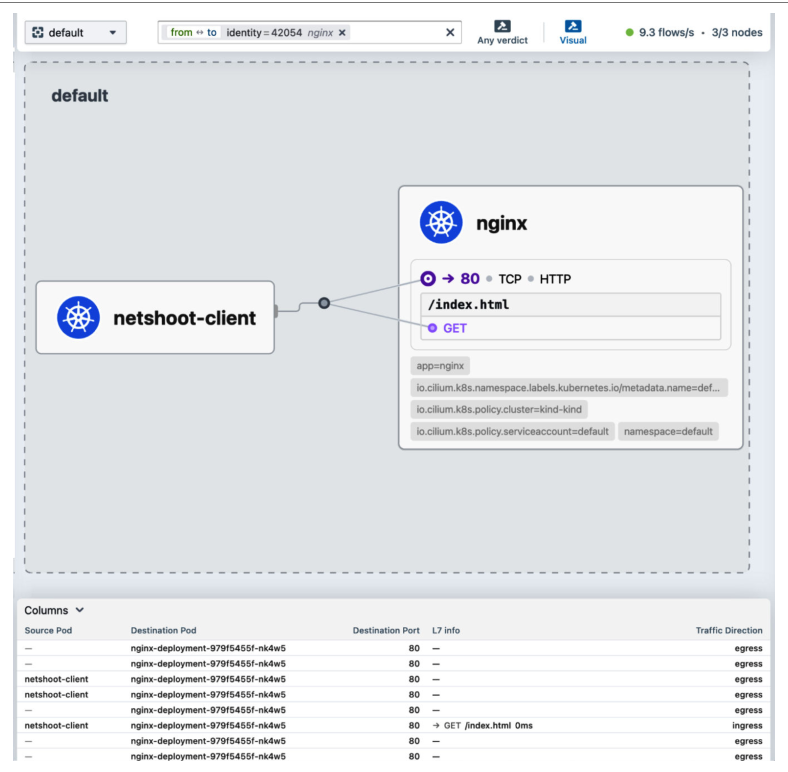
Figure 3-1. Hubble UI service map
图 3-1 Hubble UI 服务映射
Summary小结
We hope this chapter has demonstrated that getting started with Cilium is straightforward. You’ve deployed Cilium in a Kubernetes cluster and taken your first steps toward using it to secure, observe, and manage application traffic. In the next chapter, we’ll take a closer look at how Cilium handles IP address management and establishes network connectivity for pods. You’ll learn how to choose the right IPAM mode for your environment and discover the implications of using IPv4, IPv6, or both.
希望本章能够证明，开始使用 Cilium 是很简单的。你已经在 Kubernetes 集群中部署了 Cilium，并迈出了使用它来保护、观察和管理应用流量的第一步。在下一章中，我们将更深入地了解 Cilium 如何处理 IP 地址管理以及为 Pod 建立网络连通性。你将学习如何为你的环境选择合适的 IPAM 模式，并发现使用 IPv4、IPv6 或两者兼有的含义。
第 4 章IP Address ManagementIP 地址管理
Before deploying Cilium in a Kubernetes cluster, platform engineers need to make two fundamental networking decisions: how pod IP addresses are allocated, and whether to use IPv4, IPv6, or both. Selecting the right IP address management mode is essential, as changing it later may disrupt connectivity for running workloads or may not be supported at all. Broader organizational requirements typically drive the choice between IPv4, IPv6, or dual stack, but the options also demand careful consideration by platform teams during initial cluster design. This chapter will help you make an informed decision. We will start by examining the different IPAM modes supported by Cilium and highlighting the pros and cons of each. We will then explore the dual stack and IPv6 deployment models. Sample manifests are included for you to try in your own test environments; you can find all the YAML manifests in the chapter04 directory of the book’s GitHub repository.
在 Kubernetes 集群中部署 Cilium 之前，平台工程师需要做出两个基础性的网络决策：Pod IP 地址如何分配，以及是使用 IPv4、IPv6 还是两者并用。选择合适的 IP 地址管理模式至关重要，因为事后修改可能会中断正在运行的工作负载的连通性，或者根本不支持。更广泛的组织需求通常决定了在 IPv4、IPv6 或双栈之间的选择，但平台团队在集群初始设计阶段也需要仔细考虑各种选项。本章将帮助你做出明智的决策。我们先考察 Cilium 支持的不同 IPAM 模式并突出各自的优缺点，然后探讨双栈和 IPv6 部署模型。示例清单供你在自己的测试环境中尝试，所有 YAML 清单都可以在本书 GitHub 仓库的 chapter04 目录中找到。
IPv4 and IPv6 Support in CiliumCilium 中的 IPv4 与 IPv6 支持
We’ll start with a brief overview of IPv4 and IPv6 support before we explain how IP addresses are assigned and how pods communicate with each other. Kubernetes supports single-stack IPv4, single-stack IPv6, and dual-stack networking, depending on the CNI you choose to implement the required functionality. With single-stack IPv4/IPv6 networking, each pod and service can be assigned a single IPv4 or IPv6 address. With dual-stack networking, each pod and service can be assigned both an IPv4 and an IPv6 address. This enables off-cluster egress routing (e.g., to the internet) via both IPv4 and IPv6 interfaces. When Cilium was first introduced, it supported only IPv6. This was a deliberate and forward-looking decision by the development team, who saw IPv6 as a natural fit for Kubernetes. Its expansive address space aligned well with the scale and dynamic nature of container workloads, where traditional IPv4 ranges can become limiting. However, it soon became clear that most users—and the broader cloud native ecosystem—were not yet prepared for IPv6-only clusters. Many tools, services, and operational practices were still built around IPv4. In response, the Cilium team added IPv4 support early in the project’s lifecycle, making it possible to run clusters in dual stack or IPv4-only mode. IPv6 has remained a core part of Cilium’s design. In some cases, new features have even been implemented with IPv6 support before IPv4. While most of the examples in this book use IPv4 (reflecting its continued prevalence in Kubernetes environments), we include IPv6 examples where relevant and note any important caveats or considerations along the way.
在解释 IP 地址如何分配以及 Pod 之间如何通信之前，我们先简要概述 IPv4 和 IPv6 的支持情况。Kubernetes 支持单栈 IPv4、单栈 IPv6 和双栈网络，具体取决于你选择的 CNI 来实现所需功能。在单栈 IPv4/IPv6 网络中，每个 Pod 和 Service 可以被分配一个 IPv4 或 IPv6 地址。在双栈网络中，每个 Pod 和 Service 可以同时被分配一个 IPv4 和一个 IPv6 地址。这使得集群外的出站路由（例如访问互联网）可以同时通过 IPv4 和 IPv6 接口进行。Cilium 最初推出时只支持 IPv6，这是开发团队有意为之且具有前瞻性的决策，他们认为 IPv6 天然适合 Kubernetes。其庞大的地址空间与容器工作负载的规模和动态特性十分契合，而传统 IPv4 范围可能会受到限制。然而，很快就清楚了——大多数用户以及更广泛的云原生生态系统尚未为仅 IPv6 的集群做好准备。许多工具、服务和运维实践仍然围绕 IPv4 构建。作为回应，Cilium 团队在项目早期就添加了 IPv4 支持，使得集群可以运行在双栈或仅 IPv4 模式下。IPv6 始终是 Cilium 设计的核心部分。在某些情况下，新特性甚至在实现 IPv4 支持之前就先实现了 IPv6 支持。虽然本书中的大多数示例使用 IPv4（反映了它在 Kubernetes 环境中的持续普及），但我们会在相关地方包含 IPv6 示例，并指出重要的注意事项或考量。
IP Address ManagementIP 地址管理
Assigning IP addresses to entities is one of Cilium’s core responsibilities. In noncontainerized environments, you would have relied on DHCP or SLAAC (Stateless Address Autoconfiguration for IPv6) to dynamically assign IP addresses to machines. In Kubernetes, assigning IP addresses to pods is called IP address management (IPAM). The CNI plugin is often responsible for assigning an IP address to your pod. Cilium offers several options for this, which we will discuss in this section.
为实体分配 IP 地址是 Cilium 的核心职责之一。在非容器化环境中，你会依赖 DHCP 或 SLAAC（IPv6 的无状态地址自动配置）来动态为机器分配 IP 地址。在 Kubernetes 中，为 Pod 分配 IP 地址被称为 IP 地址管理（IPAM）。CNI 插件通常负责为你的 Pod 分配 IP 地址。Cilium 提供了多种选项，本节将进行讨论。
Pod IP Address AllocationPod IP 地址分配
Figure 4-1 illustrates the process for allocating pod IP addresses. When a new pod is added in Kubernetes, the Kubernetes scheduler assigns it to a node. The kubelet running on that node is notified and begins creating the pod’s containers. First, the kubelet checks the CNI configuration on the node, located in /etc/cni/net.d/. When Cilium is installed on the cluster, it creates a configuration file in this folder (05-cilium.conf) that instructs the kubelet on how to configure pod networking.
图 4-1 展示了 Pod IP 地址分配的流程。当 Kubernetes 中添加一个新的 Pod 时，Kubernetes 调度器会将它分配到一个节点上。该节点上运行的 kubelet 会收到通知并开始创建 Pod 的容器。首先，kubelet 检查节点上的 CNI 配置，位于 /etc/cni/net.d/。当 Cilium 安装到集群上时，它会在此文件夹中创建一个配置文件（05-cilium.conf），指示 kubelet 如何配置 Pod 网络。
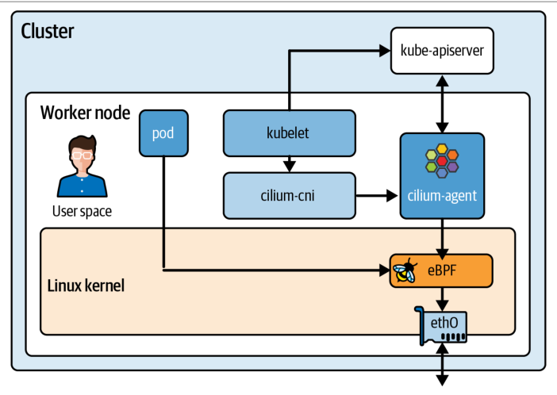
Figure 4-1. Pod IP address allocation
图 4-1 Pod IP 地址分配
Each pod receives an IP address from a subnet referred to as a PodCIDR. CIDR (short for Classless Inter-Domain Routing) defines IP address blocks using subnet prefixes. In Kubernetes, each node is assigned one or more PodCIDRs, and pods on that node receive their IPs from those ranges via the IPAM process. Cilium supports multiple IPAM modes. Some are specific to a cloud provider (such as AWS or Google Cloud), while others can be used across any Kubernetes environment. We won’t cover all of them in this book, but we will cover the ones we see used most commonly: Kubernetes Host Scope Uses PodCIDRs assigned to each node by Kubernetes. Simple but inflexible. Cluster Scope Cilium manages PodCIDR allocation via the operator. The default mode. Multi-Pool Allows pods to be assigned IPs from multiple IP pools based on namespaces or annotations. Ideal for multitenant setups. ENI IPAM Exclusive to Amazon Elastic Kubernetes Service (EKS) environments. Allocates pod IPs from AWS elastic network interfaces. This chapter focuses on the management of pod IP addresses.
每个 Pod 从一个称为 PodCIDR 的子网接收 IP 地址。CIDR（无类域间路由缩写）使用子网前缀定义 IP 地址块。在 Kubernetes 中，每个节点被分配一个或多个 PodCIDR，该节点上的 Pod 通过 IPAM 过程从这些范围获得 IP。Cilium 支持多种 IPAM 模式。有些特定于某个云提供商（如 AWS 或 Google Cloud），而另一些可以在任何 Kubernetes 环境中使用。本书不会涵盖所有模式，但会介绍最常用的几种：Kubernetes Host Scope 使用 Kubernetes 为每个节点分配的 PodCIDR。简单但不够灵活。Cluster Scope Cilium 通过 Operator 管理 PodCIDR 分配。默认模式。Multi-Pool 允许根据命名空间或注解从多个 IP 池为 Pod 分配 IP。适合多租户设置。ENI IPAM 仅适用于 Amazon Elastic Kubernetes Service（EKS）环境。从 AWS 弹性网络接口分配 Pod IP。本章重点介绍 Pod IP 地址的管理。
Other components of Kubernetes also require IP addresses. Nodes typically receive theirs via DHCP or SLAAC. Kubernetes services receive theirs either from the Kubernetes API server or, in the case of LoadBalancer services, via a cloud provider or a dedicated system. We’ll explore service networking in more detail in Chapter 6.
Kubernetes 的其他组件也需要 IP 地址。节点通常通过 DHCP 或 SLAAC 获得 IP。Kubernetes Service 的 IP 要么从 Kubernetes API 服务器获取，对于 LoadBalancer Service 则通过云提供商或专用系统获取。我们将在第 6 章更详细地探讨 Service 网络。
Kubernetes Host Scope IPAM ModeKubernetes Host Scope IPAM 模式
We’ll begin with Kubernetes Host Scope, the simplest IPAM mode to understand and deploy. In this mode, Kubernetes allocates a cluster-wide prefix and assigns each node a subnet from it. Cilium then assigns pod IPs from these subnets, relying on the PodCIDRs set by the Kubernetes controller manager, as illustrated in Figure 4-2.
我们从 Kubernetes Host Scope 开始，这是最容易理解和部署的 IPAM 模式。在这种模式下，Kubernetes 分配一个集群范围的前缀，并从中为每个节点分配一个子网。Cilium 然后从这些子网为 Pod 分配 IP，依赖 Kubernetes Controller Manager 设置的 PodCIDR，如图 4-2 所示。
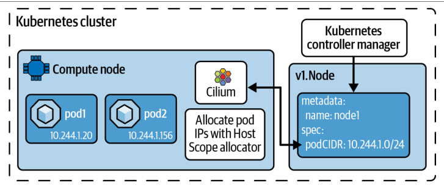
Figure 4-2. Kubernetes Host Scope mode
图 4-2 Kubernetes Host Scope 模式
This is the IPAM mode we used in the Chapter 3 walk-through (
ipam.mode=kubernetes was set in the Helm values file). You can follow the same steps here, running kind create cluster –config kind.yaml to create the cluster and ciliuminstall (or the equivalent Helm config) to install Cilium. After installation (whose progress you can observe with cilium status --wait), let’s inspect the IP addressing situation. By default, kind uses 10.244.0.0/16 as the cluster-wide prefix. Kubernetes assigns /24 subnets to the various nodes in the cluster. You can verify this in your own cluster—you should see something like the following, although the assigned prefixes may differ in your environment since subnet allocation is random:这是我们在第 3 章操作演练中使用的 IPAM 模式（在 Helm values 文件中设置了
ipam.mode=kubernetes）。你可以在这里按相同步骤操作，运行 kind create cluster –config kind.yaml 创建集群，然后运行 cilium install（或等效的 Helm 配置）安装 Cilium。安装完成后（进度可以用 cilium status --wait 观察），我们来检查一下 IP 地址情况。默认情况下，kind 使用 10.244.0.0/16 作为集群范围的前缀。Kubernetes 为集群中的各个节点分配 /24 子网。你可以在自己的集群中验证——应该会看到类似以下的结果，不过由于子网分配是随机的，你环境中分配的前缀可能不同：代码（原文）
$ kubectl get node kind-worker -o jsonpath='{.spec.podCIDRs}'
["10.244.1.0/24"]You can now deploy a pod and verify that it receives an IP address from the node’s subnet:
现在你可以部署一个 Pod 并验证它从节点的子网接收了 IP 地址：
代码（原文）
$ kubectl apply -f netshoot-client-pod.yaml pod/netshoot-client created $ kubectl get pods -o wide NAME READY STATUS IP NODE netshoot-client 1/1 Running 10.244.1.20 kind-worker
While Host Scope mode is straightforward, it comes with a few limitations:
Host Scope 模式虽然简单直接，但有一些限制：
- You cannot configure the size of the PodCIDRs allocated to each node, only你无法配置分配给每个节点的 PodCIDR 大小，只能
globally for the cluster.
在集群层面全局配置。
- You cannot add CIDRs to or remove them from the cluster or individual nodes.你无法向集群或各个节点添加或移除 CIDR。
This makes it difficult to grow the pool of IP addresses available to your cluster as it grows. Next, we’ll take a look at a more flexible IPAM mode.
这使得随着集群的增长来扩展可用 IP 地址池变得困难。接下来，我们看看更灵活的 IPAM 模式。
Cluster Scope IPAM ModeCluster Scope IPAM 模式
In Cluster Scope mode, Cilium (not Kubernetes) allocates PodCIDRs to nodes. As this mode doesn’t require a specific configuration of the Kubernetes cluster, it is the default IPAM option in Cilium. In Chapter 2 we explained that one of the Cilium operator’s responsibilities is IPAM. In Cluster Scope mode, the operator assigns subnets to each node by updating the CiliumNode custom resources (as illustrated in Figure 4-3).
在 Cluster Scope 模式下，Cilium（而非 Kubernetes）为节点分配 PodCIDR。由于此模式不需要对 Kubernetes 集群进行特定配置，因此它是 Cilium 的默认 IPAM 选项。在第 2 章中我们解释过，Cilium Operator 的职责之一就是 IPAM。在 Cluster Scope 模式下，Operator 通过更新 CiliumNode 自定义资源来为每个节点分配子网（如图 4-3 所示）。
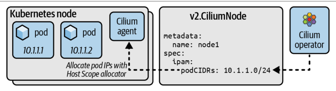
Figure 4-3. Cluster Scope IPAM mode
图 4-3 Cluster Scope IPAM 模式
To deploy Cilium in this mode, we’ll create a new cluster. If you previously deployed a cluster, delete it first:
要以这种模式部署 Cilium，我们需要创建一个新集群。如果你之前已经部署了集群，先删除它：
代码（原文）
$ kind delete cluster --name kind $ kind create cluster --config kind.yaml
We recommend deleting the cluster because changing the IPAM mode in a live environment can cause persistent connectivity issues for existing workloads.
我们建议删除集群，因为在生产环境中更改 IPAM 模式可能会导致现有工作负载出现持续性的连通性问题。
Next, install Cilium (cilium-ipam-cluster-scope.yaml). This mode is sometimes also referred to as “Cluster Pool mode,” as you can see from the Helm value:
接下来，安装 Cilium（cilium-ipam-cluster-scope.yaml）。这种模式有时也被称为"集群池模式"，从 Helm value 中可以看到：
代码（原文）
ipam: mode: cluster-pool
By default, Cilium uses the cluster-wide
10.0.0.0/8 prefix and assigns /24 subnets to CiliumNode resources. You can verify this in your cluster by checking the Cilium configuration with the Cilium CLI command cilium config view:默认情况下，Cilium 使用集群范围的
10.0.0.0/8 前缀，并为 CiliumNode 资源分配 /24 子网。你可以使用 Cilium CLI 命令 cilium config view 检查 Cilium 配置来验证这一点：代码（原文）
$ cilium config view | grep cluster-pool cluster-pool-ipv4-cidr 10.0.0.0/8 cluster-pool-ipv4-mask-size 24 ipam cluster-pool
You can also list the CIDRs associated with each node:
你还可以列出每个节点关联的 CIDR：
代码（原文）
$ kubectl get ciliumnode -o json | jq -r '.items[] | "NODE: \(.metadata.name) CIDR: \(.spec.ipam.podCIDRs[0])"' NODE: kind-control-plane CIDR: 10.0.0.0/24 NODE: kind-worker CIDR: 10.0.1.0/24 NODE: kind-worker2 CIDR: 10.0.2.0/24
Deploy a sample pod (netshoot-client-pod.yaml) and check the verbose output of
cilium-dbg status on the Cilium agent on the node hosting the pod:部署一个示例 Pod（netshoot-client-pod.yaml），然后在托管该 Pod 的节点上运行的 Cilium Agent 上检查
cilium-dbg status 的详细输出：代码（原文）
$ kubectl -n kube-system exec -ti cilium-jhhpp -- cilium-dbg status --verbose [...] Allocated addresses: 10.0.1.235 (default/netshoot-client) 10.0.1.133 (router) 10.0.1.238 (health)
One advantage Cluster Scope has over Kubernetes Host Scope is that it can allocate multiple CIDRs to the cluster instead of just one. This mode can thus provide more flexibility, although it doesn’t necessarily overcome the problem of IP address exhaustion if the overall address pool was too small to begin with. Let’s simulate such a scenario. Once again, starting with a new cluster is preferable, so rerun the commands you used earlier to delete the previously created one and create a new one. Use the following values for Cilium’s starting configuration (cilium-ipam-cluster-scope-small.yaml). In this example, Cilium will assign two small CIDRs (
/28) to the cluster, and each node will receive a /29 subnet from one of the CIDRs. As two IPs are reserved for the cilium-host and cilium-health interfaces, each node will get six usable addresses:Cluster Scope 相对于 Kubernetes Host Scope 的一个优势是，它可以为集群分配多个 CIDR 而不仅仅是一个。因此这种模式可以提供更大的灵活性，尽管如果一开始整个地址池太小，它并不能必然解决 IP 地址耗尽的问题。我们来模拟一下这种场景。同样，最好从新集群开始，所以重新运行之前用过的命令来删除之前创建的集群并创建新集群。使用以下值作为 Cilium 的初始配置（cilium-ipam-cluster-scope-small.yaml）。在这个例子中，Cilium 会为集群分配两个小的 CIDR（
/28），每个节点从其中一个 CIDR 接收一个 /29 子网。由于两个 IP 被预留给 cilium-host 和 cilium-health 接口，每个节点实际可用地址为六个：代码（原文）
ipam: mode: cluster-pool operator: clusterPoolIPv4MaskSize: 29 clusterPoolIPv4PodCIDRList: - 10.0.42.0/28 - 10.0.84.0/28
Let’s install Cilium in this mode and check the subnets assigned to the nodes:
我们以这种模式安装 Cilium，然后检查分配给节点的子网：
代码（原文）
$ kubectl get ciliumnode -o json | jq -r '.items[] | "NODE: \(.metadata.name) CIDR: \(.spec.ipam.podCIDRs[0])"' NODE: kind-control-plane CIDR: 10.0.42.8/29 NODE: kind-worker 10.0.42.0/29 NODE: kind-worker2 10.0.84.8/29
As a
/28 prefix only allows two /29 allocations, the third node receives its subnet from the second block. Next, create a deployment with 10 pods (nginx-deployment-10-replicas.yaml) and pin them to kind-worker2. When you run kubectl get pods -o wide, you’ll notice that several pods remain stuck in the ContainerCreating stage—meaning they are not running properly. If you run cilium-dbg status on the Cilium agent running on kind-worker2, you’ll see that all available IP addresses have been allocated:由于一个
/28 前缀只能提供两个 /29 分配，第三个节点从第二个地址块获取子网。接下来，创建一个拥有 10 个 Pod 的 Deployment（nginx-deployment-10-replicas.yaml）并将它们固定到 kind-worker2。当你运行 kubectl get pods -o wide 时，会注意到有几个 Pod 卡在 ContainerCreating 阶段——意味着它们没有正常运行。如果你在 kind-worker2 上运行的 Cilium Agent 上执行 cilium-dbg status，会看到所有可用 IP 地址都已分配完毕：代码（原文）
$ kubectl exec -it cilium-qrw2f -n kube-system -- cilium-dbg status IPAM: IPv4: 6/6 allocated from 10.0.84.8/29,
While this mode provides greater flexibility than the Kubernetes Host Scope mode, it still has important limitations. The address space assigned to the cluster is static: you cannot add or expand PodCIDRs once the cluster is running, which means IP exhaustion cannot be remedied without redeploying. In addition, Cluster Scope mode offers limited control over how pods receive IP addresses, as all pods draw from the same shared pools regardless of workload or namespace. To see how to get around these restrictions, let’s take a look at Multi-Pool IPAM mode.
虽然此模式比 Kubernetes Host Scope 模式提供更大的灵活性，但它仍有重要局限。分配给集群的地址空间是静态的：集群运行后你无法添加或扩展 PodCIDR，这意味着不重新部署就无法补救 IP 耗尽问题。此外，Cluster Scope 模式对 Pod 获取 IP 的方式控制有限，因为所有 Pod 不管工作负载或命名空间如何，都从相同的共享池中获取地址。要了解如何绕过这些限制，我们来看看 Multi-Pool IPAM 模式。
Multi-Pool IPAM ModeMulti-Pool IPAM 模式
Multi-Pool is the most flexible IPAM mode in Cilium. It enables you to allocate PodCIDRs from multiple distinct pools, depending on user-defined workload properties such as annotations or namespaces. Pods on the same node can receive IP addresses from different ranges, and new CIDRs can be dynamically added to a node as needed. This flexibility makes Multi-Pool the recommended mode, especially for multitenant clusters or when granular IP addressing control is preferred. The IP allocation process used in Multi-Pool IPAM mode is described in Figure 4-4.
Multi-Pool 是 Cilium 中最灵活的 IPAM 模式。它允许你根据用户定义的工作负载属性（如注解或命名空间）从多个独立的池中分配 PodCIDR。同一个节点上的 Pod 可以从不同范围获得 IP 地址，而且可以根据需要动态地向节点添加新的 CIDR。这种灵活性使 Multi-Pool 成为推荐的模式，特别是对于多租户集群或需要细粒度 IP 寻址控制时。图 4-4 描述了 Multi-Pool IPAM 模式使用的 IP 分配流程。
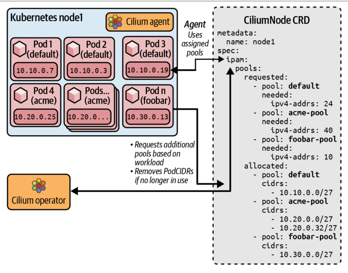
Figure 4-4. Multi-Pool IPAM mode
图 4-4 Multi-Pool IPAM 模式
Let’s deploy Cilium in Multi-Pool mode. First, delete the existing cluster and create a new one. Use the following values for Cilium’s starting configuration (cilium-ipammulti-pool.yaml):
我们以 Multi-Pool 模式部署 Cilium。首先删除现有集群并创建新集群。使用以下值作为 Cilium 的初始配置（cilium-ipam-multi-pool.yaml）：
代码（原文）
ipam: mode: multi-pool operator: autoCreateCiliumPodIPPools: default: ipv4: cidrs: ["10.10.0.0/16"] maskSize: 27 routingMode: native endpointRoutes: enabled: true autoDirectNodeRoutes: true ipv4NativeRoutingCIDR: 10.0.0.0/8
In Chapter 3 we introduced the encapsulation routing mode (using VXLAN). This time we will use native routing, which sends packets directly between nodes without encapsulating them in tunnels. We will explain this in more detail in Chapter 5. The
autoCreateCiliumPodIPPools option configures Cilium to create a default pool of IP addresses at start-up and to assign prefixes to nodes based on the ipam.operator.autoCreateCiliumPodIPPools.ipv4.maskSize value (in our case, 27). Once Cilium is installed, verify that a default pool has been created:在第 3 章我们介绍了封装路由模式（使用 VXLAN）。这次我们将使用原生路由，它在节点之间直接发送数据包，不通过隧道封装。我们将在第 5 章对此进行详细解释。
autoCreateCiliumPodIPPools 选项配置 Cilium 在启动时创建一个默认 IP 地址池，并根据 ipam.operator.autoCreateCiliumPodIPPools.ipv4.maskSize 值（我们的例子中是 27）将前缀分配给节点。安装 Cilium 后，验证默认池已创建：代码（原文）
$ kubectl get ciliumpodippools.cilium.io default -o yaml apiVersion: cilium.io/v2alpha1 kind: CiliumPodIPPool spec: ipv4: cidrs: - 10.10.0.0/16 maskSize: 27
Let’s also verify that the
kind-worker node received a /27 subnet from this pool:我们也验证一下
kind-worker 节点是否从这个池中获得了 /27 子网：代码（原文）
$ kubectl get ciliumnode kind-worker -o yaml | yq '.spec.ipam' pools: allocated: - cidrs: - 10.10.0.64/27 pool: default requested: - needed: ipv4-addrs: 16 pool: default
Deploy a pod on this specific node using the netshoot-client-pod.yaml manifest we used previously. When you verify its IP address, you should again see that the pod received an IP address from the allocated subnet (e.g.,
10.10.0.93):使用之前用过的 netshoot-client-pod.yaml 清单在这个特定节点上部署一个 Pod。验证其 IP 地址时，应该再次看到该 Pod 从分配的子网获得了 IP 地址（例如
10.10.0.93）：代码（原文）
$ kubectl get pods -o wide NAME READY STATUS RESTARTS AGE IP NODE netshoot-client 1/1 Running 0 24s 10.10.0.93 kind-worker
So far, Multi-Pool mode functions similarly to Cluster Scope IPAM mode. One advantage it has over other IPAM modes, however, is that it gives you more control over how IP addresses are assigned to pods. You can force a pod—or all pods in a particular namespace—to receive IPs from a particular range. This is handy for multitenant environments. For example, suppose you have two tenants, ACME Corp. and Foobar Inc. Namespaces are often used in Kubernetes to differentiate tenants. While the IPAM modes we looked at previously are not namespace-aware, with Multi-Pool IPAM each namespace can draw pod IPs from its own defined address pool. This capability is particularly useful when traffic exits the cluster, as it helps engineers understand which tenant the traffic originated from.1
到目前为止，Multi-Pool 模式的功能与 Cluster Scope IPAM 模式类似。但相对于其他 IPAM 模式，它的一个优势是能让你更多地控制 IP 地址如何分配给 Pod。你可以强制一个 Pod（或特定命名空间中的所有 Pod）从某个特定范围获取 IP。这对于多租户环境非常方便。例如，假设你有两个租户：ACME Corp. 和 Foobar Inc。在 Kubernetes 中，命名空间常用于区分租户。我们之前看的 IPAM 模式都不具备命名空间感知能力，而 Multi-Pool IPAM 中每个命名空间可以从自己定义的地址池获取 Pod IP。当流量离开集群时，这个能力尤其有用，因为它帮助工程师了解流量来自哪个租户。1
In Chapter 11, you will learn more about what to consider when traffic leaves the cluster, including another method to map outbound traffic to a particular IP or interface: Egress Gateway.
在第 11 章中，你将了解更多关于流量离开集群时需要考虑的因素，包括另一种将出站流量映射到特定 IP 或接口的方法：出口网关（Egress Gateway）。
Let’s create namespaces for our two tenants:
我们为两个租户创建命名空间：
代码（原文）
$ kubectl apply -f namespaces.yaml namespace/acme-corp created namespace/foobar-inc created
We’ll then deploy two separate pools (acme-pool.yaml and foobar-pool.yaml):
然后我们部署两个独立的池（acme-pool.yaml 和 foobar-pool.yaml）：
代码（原文）
apiVersion: cilium.io/v2alpha1 kind: CiliumPodIPPool metadata: name: foobar-pool spec: ipv4: cidrs: - 10.30.0.0/16 maskSize: 27 --- apiVersion: cilium.io/v2alpha1 kind: CiliumPodIPPool metadata: name: acme-pool spec: ipv4: cidrs: - 10.20.0.0/16 maskSize: 27
To ensure that all workloads in a particular namespace receive an IP address from a particular IP pool, you can annotate the namespace with
ipam.cilium.io/ip-要确保特定命名空间中的所有工作负载从特定 IP 池获取 IP 地址，你可以使用
ipam.cilium.io/ip-代码（原文）
pool=pool_name: $ kubectl annotate ns acme-corp ipam.cilium.io/ip-pool=acme-pool namespace/acme-corp annotated $ kubectl annotate ns foobar-inc ipam.cilium.io/ip-pool=foobar-pool namespace/foobar-inc annotated
1Although Multi-Pool IPAM can assign ranges at the namespace level, pods may also request a pool directly through an annotation. This means pool selection should be treated as an operational aid rather than an isolation mechanism.
1虽然 Multi-Pool IPAM 可以在命名空间级别分配范围，但 Pod 也可以通过注解直接请求某个池。这意味着池选择应被视为运维辅助手段，而不是隔离机制。
When deploying workloads, they will be allocated an IP address from the appropriate pool:
部署工作负载时，它们会从相应的池获得 IP 地址：
代码（原文）
$ kubectl apply -f nginx-deployment-10-replicas.yaml -n acme-corp deployment.apps/nginx-deployment created $ kubectl apply -f nginx-deployment-10-replicas.yaml -n foobar-inc deployment.apps/nginx-deployment created
Here is a trimmed version of the output:
以下是输出的精简版本：
代码（原文）
$ kubectl get pods -o wide -n acme-corp NAME READY STATUS IP NODE nginx-deployment-979f5455f-5tkws 1/1 Running 10.20.0.25 kind-worker2 nginx-deployment-979f5455f-6dw7n 1/1 Running 10.20.0.6 kind-worker2 [...] $ kubectl get pods -o wide -n foobar-inc NAME READY STATUS IP NODE nginx-deployment-979f5455f-2p7mc 1/1 Running 10.30.0.28 kind-worker2 nginx-deployment-979f5455f-82g98 1/1 Running 10.30.0.13 kind-worker2 [...]
Check the CiliumNode to see which PodCIDRs are assigned to each node:
检查 CiliumNode，查看每个节点分配了哪些 PodCIDR：
代码（原文）
$ kubectl get ciliumnode kind-worker2 -o yaml | yq .spec.ipam pools: allocated: - cidrs: - 10.20.0.0/27 pool: acme-pool - cidrs: - 10.10.0.0/27 pool: default - cidrs: - 10.30.0.0/27 pool: foobar-pool requested: - needed: ipv4-addrs: 10 pool: acme-pool - needed: ipv4-addrs: 16 pool: default - needed: ipv4-addrs: 10 pool: foobar-pool
If you need more IPs, Cilium dynamically assigns additional subnets to the node. For example, let’s scale up the ACME deployment from 10 replicas to 40:
如果需要更多 IP，Cilium 会动态为节点分配额外子网。例如，我们将 ACME 部署从 10 个副本扩展到 40 个：
代码（原文）
$ kubectl scale -n acme-corp deployment nginx-deployment --replicas=40 deployment.apps/nginx-deployment scaled
Note the
needed field in the following output. Since the number of required IPs significantly increased, another /27 subnet from the cluster-wide 10.20.0.0/16 was allocated to the node:注意下面输出中的
needed 字段。由于所需 IP 数量大幅增加，节点又从集群范围的 10.20.0.0/16 中分配了另一个 /27 子网：代码（原文）
$ kubectl get ciliumnode kind-worker2 -o yaml | yq '.spec.ipam' pools: allocated: - cidrs: - 10.20.0.0/27 - 10.20.0.32/27 pool: acme-pool - cidrs: - 10.10.0.0/27 pool: default - cidrs: - 10.30.0.0/27 pool: foobar-pool requested: - needed: ipv4-addrs: 40 pool: acme-pool - needed: ipv4-addrs: 16 pool: default - needed: ipv4-addrs: 10 pool: foobar-pool
In some environments (e.g., in the telecom or finance industries), pods may have multiple interfaces (for example, for out-of-band management and for signaling or data). The Isovalent Enterprise Platform extends Multi-Pool mode with a feature called Multi Network that lets you connect a pod to multiple networks.
在某些环境中（例如电信或金融行业），Pod 可能有多个接口（例如，用于带外管理和信令或数据）。Isovalent Enterprise Platform 扩展了 Multi-Pool 模式，增加了一个名为 Multi Network 的特性，让你可以将 Pod 连接到多个网络。
CRD-Backed IPAM Mode基于 CRD 的 IPAM 模式
Cilium also supports a lesser-known IPAM mode called CRD-backed IPAM, which delegates IP address management to an external operator. This mode gives you significant flexibility, but using it can be complex. When using CRD-backed mode, Cilium is not automatically programmed to route traffic to the assigned CIDRs, so administrators must assign IP ranges to nodes and ensure proper routing between them. CRD-backed IPAM is often used in managed Kubernetes environments, where the cloud provider handles IP address management and routing outside of Cilium.
Cilium 还支持一种不太为人所知的 IPAM 模式——基于 CRD 的 IPAM，它将 IP 地址管理委托给外部 Operator。这种模式提供了很大的灵活性，但使用起来可能比较复杂。使用基于 CRD 的模式时，Cilium 不会自动配置路由将流量导向分配的 CIDR，因此管理员必须为节点分配 IP 范围并确保它们之间的路由正确。基于 CRD 的 IPAM 常用于托管式 Kubernetes 环境中，由云提供商在 Cilium 之外处理 IP 地址管理和路由。
ENI IPAM ModeENI IPAM 模式
The final IPAM mode we will review is specific to Amazon Elastic Kubernetes Service, but as it’s widely adopted by AWS users, it deserves a detailed look. In ENI IPAM mode, Cilium tightly integrates with AWS networking by assigning pod IP addresses from secondary IP addresses on elastic network interfaces (ENIs). At start-up, Cilium contacts the EC2 metadata ENI to retrieve the instance ID, instance type, and virtual private cloud (VPC) information and populates each CiliumNode custom resource with this information (as illustrated in Figure 4-5). Cilium then allocates pod IPs directly from the pool of secondary addresses associated with those ENIs. This provides a clear benefit: pods receive IPs that are directly routable within the AWS VPC. No NAT is required, simplifying networking and improving observability for operators.2
我们要介绍的最后一种 IPAM 模式是 Amazon Elastic Kubernetes Service 特有的，但由于 AWS 用户广泛采用它，值得详细了解。在 ENI IPAM 模式下，Cilium 通过从弹性网络接口（ENI）上的辅助 IP 地址分配 Pod IP 地址，与 AWS 网络紧密集成。启动时，Cilium 联系 EC2 元数据 ENI 以获取实例 ID、实例类型和虚拟私有云（VPC）信息，并将这些信息填充到每个 CiliumNode 自定义资源中（如图 4-5 所示）。然后 Cilium 直接从与这些 ENI 关联的辅助地址池中分配 Pod IP。这带来了明显的好处：Pod 获得的 IP 可以在 AWS VPC 内直接路由。无需 NAT，简化了网络并为运维人员提升了可观测性。2
Note that Cilium does not currently support IPv6 ENIs. This is being tracked in GitHub issue #18405.
注意 Cilium 目前不支持 IPv6 ENI。这个问题正在 GitHub issue #18405 中跟踪。
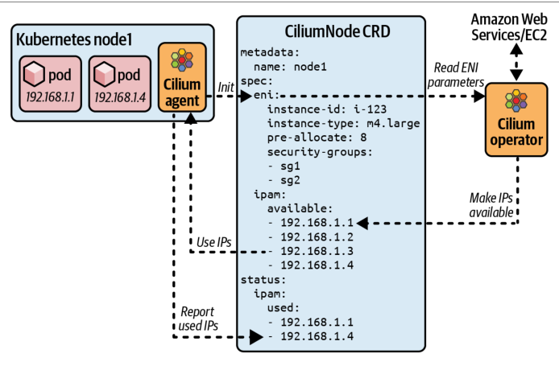
Figure 4-5. ENI mode
图 4-5 ENI 模式
2ENI mode also affects how packets reach pods. Each pod IP is tied to the ENI it was allocated from, so traffic arrives through that ENI rather than the node’s usual network path, and Cilium applies its policies when packets enter the pod. Because the ENI is the attachment point, AWS security groups apply cleanly at the pod level.
2ENI 模式还影响数据包到达 Pod 的方式。每个 Pod IP 与其分配来源的 ENI 绑定，因此流量通过该 ENI 而非节点通常的网络路径到达，Cilium 在数据包进入 Pod 时应用其策略。由于 ENI 是附着点，AWS 安全组可以在 Pod 级别干净利落地生效。
ENI mode is only relevant when running Cilium on Amazon EKS, where ENIs and their IPs are managed by AWS. Let’s explain it by walking through an example.
ENI 模式仅在 Amazon EKS 上运行 Cilium 时相关，那里 ENI 及其 IP 由 AWS 管理。我们通过一个示例来说明。
Unlike the previous examples where we were using kind, deploying a cluster on EKS comes with a cost. Proceed carefully before deploying a managed cloud-hosted cluster.
与之前使用 kind 的示例不同，在 EKS 上部署集群会产生费用。在部署托管式云托管集群之前请谨慎操作。
To deploy an EKS cluster, we recommend the eksctl tool. Follow the instructions in the documentation to install and configure it. The
eksctl configuration shown here will create a cluster with two nodes in the eu-west-1 region (you can change this to the region of your choice):要部署 EKS 集群，我们推荐使用 eksctl 工具。按照文档中的说明进行安装和配置。这里展示的
eksctl 配置将在 eu-west-1 区域创建一个拥有两个节点的集群（你可以将其改为你想要的区域）：代码（原文）
apiVersion: eksctl.io/v1alpha5 kind: ClusterConfig metadata: name: cuar region: eu-west-1 managedNodeGroups: - name: ng-1 desiredCapacity: 2 privateNetworking: true taints: - key: "node.cilium.io/agent-not-ready" value: "true" effect: "NoExecute"
In certain cloud environments, like EKS or Google Kubernetes Engine (GKE), another CNI plugin might already be installed, which can prevent Cilium from handling pod networking. To address this, Cilium supports a taint-based mechanism that delays pod scheduling until the agent is ready, helping ensure pods are managed by Cilium rather than the existing CNI plugin. You can read more about it in the Cilium docs.
在某些云环境中，如 EKS 或 Google Kubernetes Engine（GKE），可能已经安装了另一个 CNI 插件，这会阻止 Cilium 处理 Pod 网络。为了解决这个问题，Cilium 支持一种基于污点的机制，延迟 Pod 调度直到 Agent 就绪，帮助确保 Pod 由 Cilium 管理而非已有的 CNI 插件。你可以在 Cilium 文档中了解更多相关内容。
To deploy the cluster, run:
要部署集群，运行：
代码（原文）
$ eksctl create cluster -f eks-config.yaml
When it’s ready (after about 15–20 minutes), install Cilium (cilium-eni-values.yaml). ENI mode requires the
ipam.mode=eni and eni.enabled=true values. Let’s deploy five pods with a sample deployment. All pods should receive an IP address, as you would expect:集群准备就绪后（约 15–20 分钟），安装 Cilium（cilium-eni-values.yaml）。ENI 模式需要
ipam.mode=eni 和 eni.enabled=true 值。我们用一个示例部署来部署五个 Pod。所有 Pod 都应该获得 IP 地址，正如你预期的那样：代码（原文）
$ kubectl apply -f echo-deployment.yaml deployment.apps/echoserver created $ kubectl get pods -o wide NAME READY STATUS IP echoserver-79974b75cd-fwd9r 1/1 Running 192.168.168.230 echoserver-79974b75cd-kn9fz 1/1 Running 192.168.156.61 echoserver-79974b75cd-p5q9b 1/1 Running 192.168.131.53 echoserver-79974b75cd-wgdzf 1/1 Running 192.168.170.2 echoserver-79974b75cd-whjvc 1/1 Running 192.168.142.65
The pod IPs are actually taken from the EC2 instance’s network interface and listed as secondary private IPs, as you can see in the AWS Console under EC2→Instances→<instance_name>→Networking (Figure 4-6).
Pod IP 实际上取自 EC2 实例的网络接口，并列为辅助私有 IP，你可以在 AWS 控制台的 EC2→Instances→<instance_name>→Networking 下看到（图 4-6）。
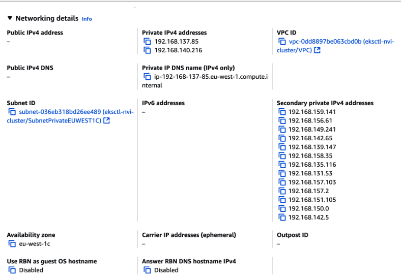
Figure 4-6. The AWS Console
图 4-6 AWS 控制台
You can also see the IPs being populated on the CiliumNode resource:
你也可以在 CiliumNode 资源上看到这些 IP：
代码（原文）
$ kubectl get cn ip-192-168-132-54.eu-west-1.compute.internal -o yaml [...] enis: eni-02f39382678db84b5: addresses: - 192.168.159.141 - 192.168.156.61 - 192.168.149.241 - 192.168.142.65 - 192.168.139.147 - 192.168.158.35 - 192.168.135.116 - 192.168.131.53 - 192.168.157.103
When using ENI mode, you should be aware of certain scaling limitations. In this mode, the number of IPs that can be allocated per node is limited by the instance type’s ENI and secondary IP capacity (e.g., an m5.large instance supports only 3 ENIs with 10 IPs each). This restricts the number of pods a node can run (with an m5.large instance able to support just 30 pods—far below the 110 pods per node limit Kubernetes imposes by default). Cilium supports AWS prefix delegation, a feature that assigns entire CIDR blocks (e.g., a
/28) to each ENI. This significantly increases per-node pod density, without requiring you to scale the cluster horizontally or vertically.使用 ENI 模式时，你需要注意某些扩展限制。在这种模式下，每个节点可分配的 IP 数量受实例类型的 ENI 和辅助 IP 容量限制（例如，m5.large 实例只支持 3 个 ENI，每个 10 个 IP）。这限制了节点能运行的 Pod 数量（m5.large 实例只能支持 30 个 Pod——远低于 Kubernetes 默认施加的每个节点 110 个 Pod 的限制）。Cilium 支持 AWS 前缀委派（prefix delegation），这是一个将整个 CIDR 块（例如一个
/28）分配给每个 ENI 的特性。这显著提高了每个节点的 Pod 密度，无需水平或垂直扩展集群。If you created a cluster to test this feature, remember to delete it to avoid further costs.
如果你为测试此功能而创建了集群，记得删除它以避免产生更多费用。
IPv6 ClustersIPv6 集群
Apart from which IPAM mode to use, the other essential decision you will need to make regarding IP addressing is which version of IP to use: IPv4, IPv6, or both. While this choice will often be dictated by broader organizational directives, it has direct implications for your Kubernetes networking architecture that it is important to be aware of. Cilium provides strong IPv6 support across the board, with the notable exception of the ENI IPAM mode described in the previous section. The vast majority of Cilium features are IPv6-ready and can operate seamlessly in single-stack or dual-stack clusters. In this section, we will explore two common deployment models:
除了选择哪种 IPAM 模式外，关于 IP 寻址你需要做出的另一个基本决策是使用哪个 IP 版本：IPv4、IPv6 还是两者并用。虽然这个选择通常由更广泛的组织指令决定，但它对你的 Kubernetes 网络架构有直接影响，了解这些影响很重要。Cilium 提供全面而强大的 IPv6 支持，除了上一节描述的 ENI IPAM 模式外。绝大多数 Cilium 特性都已准备好支持 IPv6，可以在单栈或双栈集群中无缝运行。本节我们将探讨两种常见的部署模型：
- Dual stack (IPv4 and IPv6), where pods and services receive both an IPv4 and an双栈（IPv4 和 IPv6），Pod 和 Service 同时获得一个 IPv4 和一个
IPv6 address
IPv6 地址
- Single stack (IPv6 only), where pods and services receive only an IPv6 address单栈（仅 IPv6），Pod 和 Service 只获得一个 IPv6 地址
The decision of whether to use single-stack IPv4 or IPv6 or dual-stack networking should be based on a combination of technical readiness and organizational strategy. You should consider the following aspects: Organizational IPv6 strategy Is your company actively working toward IPv6 adoption or still primarily reliant on IPv4? Some enterprises mandate IPv6 for all new workloads; in some regions, governments and public sector institutions go even further, requiring IPv6 compliance for all digital infrastructure and services. Operational readiness Do your teams have the tooling and expertise to monitor and troubleshoot IPv6 traffic? Logging, observability, and security tooling must be IPv6-aware. Ecosystem limitations While Kubernetes and Cilium support IPv6 well, other tools and common services (including some popular container registries) may not. This means IPv6-only environments may need to rely on mechanisms like NAT64/DNS643 to reach IPv4-only endpoints, adding complexity. As a general guide:
是否使用单栈 IPv4 或 IPv6 或双栈网络的决策，应基于技术就绪度和组织战略的结合。你需要考虑以下方面：组织 IPv6 战略 你的公司是在积极推进 IPv6 采用还是仍主要依赖 IPv4？一些企业要求所有新工作负载使用 IPv6；在一些地区，政府和公共部门机构走得更远，要求所有数字基础设施和服务符合 IPv6 规范。运维就绪度 你的团队是否具备监控和排查 IPv6 流量所需的工具和专长？日志、可观测性和安全工具必须具备 IPv6 感知能力。生态系统限制 虽然 Kubernetes 和 Cilium 对 IPv6 支持良好，但其他工具和常见服务（包括一些流行的容器注册中心）可能不支持。这意味着仅 IPv6 环境可能需要依赖 NAT64/DNS643 等机制来访问仅支持 IPv4 的端点，增加了复杂性。作为一般指导：
- IPv4 only is the default and safest option for most organizations. It ensures broad仅 IPv4 对大多数组织来说是默认且最安全的选择。它确保了广泛的
compatibility, but it does not help you future-proof your stack.
兼容性，但不能帮助你为基础设施做未来验证。
- Dual stack is often a transitional strategy. It allows IPv6 experimentation while双栈通常是一种过渡策略。它允许在保持完整 IPv4 兼容性的同时
maintaining full IPv4 compatibility. However, it introduces operational complexity, especially in IP management and observability. IPv6 only is viable in greenfield deployments where external dependencies are well understood and NAT64/DNS64 can be reliably deployed. It demands a mature operational model and close awareness of third-party IPv6 support. With those considerations in mind, let’s look at how to configure and operate Cilium in dual-stack and IPv6-only modes.
进行 IPv6 试验。但它带来了运维复杂性，特别是在 IP 管理和可观测性方面。仅 IPv6 在外部依赖已充分了解且 NAT64/DNS64 可以可靠部署的新项目中是可行的。它需要成熟的运维模式和对第三方 IPv6 支持的密切关注。考虑到这些因素，我们来看看如何在双栈和仅 IPv6 模式下配置和运行 Cilium。
Dual Stack (IPv4/IPv6)双栈（IPv4/IPv6）
In dual-stack mode, each pod is allocated both an IPv4 and an IPv6 address. This enables communications with IPv6 systems as well as legacy apps that only use IPv4.
在双栈模式下，每个 Pod 同时被分配一个 IPv4 和一个 IPv6 地址。这使得 Pod 既可以与 IPv6 系统通信，也可以与仅使用 IPv4 的遗留应用通信。
3NAT64 and DNS64 are mechanisms that allow IPv6-only clients to communicate with IPv4-only servers. DNS64 synthesizes AAAA records from A records, enabling IPv6 clients to resolve IPv4-only domain names. NAT64 then translates the IPv6 traffic to IPv4 at the network edge. Together, they provide access to legacy IPv4 services from IPv6-only environments.
3NAT64 和 DNS64 是允许仅 IPv6 客户端与仅 IPv4 服务器通信的机制。DNS64 从 A 记录合成 AAAA 记录，使 IPv6 客户端能够解析仅支持 IPv4 的域名。NAT64 随后在网络边缘将 IPv6 流量转换为 IPv4。两者共同为仅 IPv6 环境提供了访问遗留 IPv4 服务的途径。
To test it, we will use the following kind configuration for Linux (kind-dualstack.yaml). Notice that the
ipFamily is set to dual to enable dual-stack functionality, supporting both IPv4 and IPv6 protocols:为了测试，我们将使用以下 Linux 的 kind 配置（kind-dualstack.yaml）。注意
ipFamily 被设置为 dual 以启用双栈功能，同时支持 IPv4 和 IPv6 协议：代码（原文）
kind: Cluster apiVersion: kind.x-k8s.io/v1alpha4 nodes: - role: control-plane - role: worker - role: worker networking: disableDefaultCNI: true ipFamily: dual
This configuration works on Linux machines with IPv6 support enabled. On macOS, set
apiServerAddress to 127.0.0.1 under networking to work around Docker’s lack of IPv6 forwarding. For additional platform-specific guidance, see the kind docs.此配置适用于启用了 IPv6 支持的 Linux 机器。在 macOS 上，需要在
networking 下将 apiServerAddress 设置为 127.0.0.1，以绕过 Docker 不支持 IPv6 转发的问题。其他平台特定指南请参见 kind 文档。Deploy the cluster and verify with the following command that the nodes receive both an IPv4 and an IPv6 address:4
部署集群并用以下命令验证节点同时获得了 IPv4 和 IPv6 地址：4
代码（原文）
$ kubectl get node kind-worker -o jsonpath='{.status.addresses}' | jq
[
{ "address": "172.18.0.4", "type": "InternalIP" },
{ "address": "fc00:f853:ccd:e793::4", "type": "InternalIP" },
...
]With Cilium, IPv6 is disabled by default and has to be explicitly enabled in the Helm values (with
ipv6.enabled=true). Install Cilium (cilium-dual-stack-values.yaml) and run the following command to see the PodCIDRs from which IPv4 and IPv6 addresses will be allocated to your pods:在 Cilium 中，IPv6 默认是禁用的，必须在 Helm values 中显式启用（通过
ipv6.enabled=true）。安装 Cilium（cilium-dual-stack-values.yaml）并运行以下命令查看将为 Pod 分配 IPv4 和 IPv6 地址的 PodCIDR：代码（原文）
$ kubectl describe nodes | grep PodCIDRs PodCIDRs: 10.244.0.0/24,fd00:10:244::/64 PodCIDRs: 10.244.1.0/24,fd00:10:244:1::/64 PodCIDRs: 10.244.3.0/24,fd00:10:244:3::/64 PodCIDRs: 10.244.2.0/24,fd00:10:244:2::/64
Let’s again deploy a couple of sample pods (pod1.yaml and pod2.yaml) that will be pinned to specific nodes to validate internode connectivity. In this instance we’re
我们再次部署几个示例 Pod（pod1.yaml 和 pod2.yaml），它们将被固定到特定节点以验证节点间连通性。在这个例子中我们
4Alongside its IPv4 address,
172.18.0.4, the node is also given an IPv6 address such as fc00:f853:ccd:e793::4. This belongs to an IPv6 unique local address range, which is reserved for private internal networking and is not routable on the public internet. fc00:f853:ccd:e793::/64 is the default IPv6 range in Docker.4节点除了 IPv4 地址
172.18.0.4 外，还被赋予了一个 IPv6 地址如 fc00:f853:ccd:e793::4。这属于 IPv6 唯一本地地址范围，用于私有内部网络，在公网上不可路由。fc00:f853:ccd:e793::/64 是 Docker 中的默认 IPv6 范围。using the Kubernetes Host Scope IPAM mode, so IP addresses are assigned from the PodCIDR assigned to each node:
使用的是 Kubernetes Host Scope IPAM 模式，因此 IP 地址从分配给每个节点的 PodCIDR 中分配：
代码（原文）
$ kubectl describe pod pod-worker | grep -A 2 IPs IPs: IP: 10.244.1.117 IP: fd00:10:244:1::8204 $ kubectl describe pod pod-worker2 | grep -A 2 IPs IPs: IP: 10.244.3.29 IP: fd00:10:244:3::833f
Let’s verify that pods can communicate. We’ll test a ping from
pod-worker to podworker’s IPv6 address. Because the pods were pinned to different nodes, it should show successful IPv6 connectivity between pods on different nodes:5我们验证 Pod 之间可以通信。测试从
pod-worker 到 pod-worker2 的 IPv6 地址的 ping。由于两个 Pod 被固定到不同节点，这应该能展示不同节点上 Pod 之间成功的 IPv6 连通性：5代码（原文）
$ IPv6="$(kubectl get pod pod-worker2 -o jsonpath='{.status.podIPs[1].ip}')"
$ echo "$IPv6"
fd00:10:244:3::833f
$ kubectl exec -it pod-worker -- ping6 -c 2 "$IPv6"
PING fd00:10:244:3::833f (fd00:10:244:3::833f) 56 data bytes
64 bytes from fd00:10:244:3::833f: icmp_seq=1 ttl=63 time=0.330 ms
64 bytes from fd00:10:244:3::833f: icmp_seq=2 ttl=63 time=0.156 ms
--- fd00:10:244:3::833f ping statistics ---
2 packets transmitted, 2 received, 0% packet loss, time 4087ms
rtt min/avg/max/mdev = 0.133/0.181/0.330/0.074 msNext, we’ll create a deployment with five pods (echo-deployment.yaml) and deploy a service fronting them (echo-service-dualstack.yaml). Note that we specify
PreferDualStack in the service configuration:接下来，我们创建一个包含五个 Pod 的 Deployment（echo-deployment.yaml），并部署一个前端 Service（echo-service-dualstack.yaml）。注意我们在 Service 配置中指定了
PreferDualStack：代码（原文）
spec: ipFamilyPolicy: PreferDualStack ipFamilies: - IPv6 - IPv4
We can verify that both IPv4 and IPv6 addresses are assigned with:
我们可以用以下命令验证同时分配了 IPv4 和 IPv6 地址：
代码（原文）
$ kubectl describe svc echoserver [...] IP Family Policy: PreferDualStack
5Note that we deployed Cilium in VXLAN mode in this particular instance. At the time of writing, when using dual-stack mode, IPv6 packets are encapsulated in an IPv4 tunnel. You can check this yourself by opening the dual_stack.pcap packet capture (available in the /pcaps directory of the book’s GitHub repository) in Wireshark or
tcpdump. In Cilium 1.19 onward, IPv6 is supported as an underlay for dual-stack clusters.5注意在这个具体示例中我们以 VXLAN 模式部署 Cilium。截至撰写本文时，使用双栈模式时，IPv6 数据包被封装在 IPv4 隧道中。你可以自己打开本书 GitHub 仓库的 /pcaps 目录中的 dual_stack.pcap 抓包文件，用 Wireshark 或
tcpdump 查看。在 Cilium 1.19 及更高版本中，双栈集群支持以 IPv6 作为 underlay。代码（原文）
IP Families: IPv6,IPv4 IP: fd00:10:96::d4d5 IPs: fd00:10:96::d4d5,10.96.181.159 Port: <unset> 80/TCP TargetPort: 80/TCP Endpoints: 10.244.1.206:80,10.244.3.235:80,... [...]
Let’s also verify access to the service name from the
pod-worker client. We’ll use curl-4 and curl -6 to show connectivity works over both IPv4 and IPv6:我们也验证一下从
pod-worker 客户端访问 Service 名称。我们使用 curl -4 和 curl -6 来展示 IPv4 和 IPv6 上的连通性都正常工作：代码（原文）
$ kubectl exec -it pod-worker -- bash
pod-worker:~# nslookup -q=AAAA echoserver
Server: 10.96.0.10
Address: 10.96.0.10#53
Name: echoserver.default.svc.cluster.local
Address: fd00:10:96::d4d5
pod-worker:~# curl -sw '%{http_code}\n' -o /dev/null -4 http://echoserver代码（原文）
pod-worker:~# curl -sw '%{http_code}\n' -o /dev/null -6 http://echoserverSingle Stack (IPv6 Only)单栈（仅 IPv6）
Let’s now explore an IPv6-only cluster with Cilium. In the dual-stack example, we used the default IPv6 prefixes that kind assigns (
fd00:10:244::/56 for pods and fd00:10:96::/112 for services). For our single-stack IPv6 cluster, however, we will use documentation-specific prefixes defined in RFC 9637. These fall within the 2001:db8::/32 range and are reserved exclusively for examples and instructional material.现在我们来探索一个仅 IPv6 的 Cilium 集群。在双栈示例中，我们使用了 kind 分配的默认 IPv6 前缀（Pod 用
fd00:10:244::/56，Service 用 fd00:10:96::/112）。但对于我们的仅 IPv6 集群，我们将使用 RFC 9637 中定义的文档专用前缀。这些前缀位于 2001:db8::/32 范围内，专门保留给示例和教学材料使用。While this section uses documentation-specific prefixes from RFC 9637 for clarity, these should not be used in production. For real clusters, we recommend drawing pod IPv6 ranges from your organization’s public IPv6 allocation, even when pods are not intended to be reachable from outside the network. With native routing, pods can use their assigned IPv6 addresses directly without NAT, and the available IPv6 space easily accommodates large node counts. For example, a
/116 per node supports more than 4,000 pods per node, and a /96 for the cluster can support over a million nodes.虽然本节为了清晰起见使用了 RFC 9637 的文档专用前缀，但这些前缀不应在生产环境中使用。对于实际集群，我们建议从组织的公共 IPv6 分配中选取 Pod IPv6 范围，即使这些 Pod 不打算从网络外部可达。在原生路由模式下，Pod 可以直接使用分配给它们的 IPv6 地址而无需 NAT，而且可用的 IPv6 空间轻松容纳大量节点。例如，每个节点分配一个
/116 可以支持每个节点超过 4000 个 Pod，而集群分配一个 /96 可以支持超过一百万个节点。For cluster services, use IPv6 unique local addresses, as these services are designed to be internal only. The following configuration creates an IPv6-only kind cluster with Cilium, disabling the default CNI and explicitly defining pod and service subnets using the documentation-specific prefixes:
对于集群 Service，使用 IPv6 唯一本地地址，因为这些 Service 设计为仅内部使用。以下配置创建一个使用 Cilium 的仅 IPv6 kind 集群，禁用默认 CNI 并使用文档专用前缀显式定义 Pod 和 Service 子网：
代码（原文）
kind: Cluster apiVersion: kind.x-k8s.io/v1alpha4 nodes: - role: control-plane - role: worker - role: worker networking: ipFamily: ipv6 disableDefaultCNI: true podSubnet: "2001:db8:10:244::/48" serviceSubnet: "2001:db8:10:96::/112"
Deploy the cluster with
kind create cluster --config kind-ipv6-only.yaml and check that the nodes only receive an IPv6 address:使用
kind create cluster --config kind-ipv6-only.yaml 部署集群，并检查节点是否只接收了 IPv6 地址：代码（原文）
$ kubectl get nodes -o wide NAME STATUS ROLES INTERNAL-IP kind-control-plane NotReady control-plane fc00:f853:ccd:e793::3 kind-worker NotReady <none> fc00:f853:ccd:e793::2 kind-worker2 NotReady <none> fc00:f853:ccd:e793::4
You should see that only IPv6 PodCIDRs are assigned to the node:
你应该看到只分配了 IPv6 PodCIDR 给节点：
代码（原文）
$ kubectl describe node kind-worker [...] PodCIDR: 2001:db8:10:1::/64 PodCIDRs: 2001:db8:10:1::/64 [...]
As IPv4 is enabled by default in Cilium, make sure to disable it during the Cilium installation. Use the following Helm values (cilium-ipv6-only-values.yaml):
由于 Cilium 默认启用 IPv4，在 Cilium 安装时务必将其禁用。使用以下 Helm values（cilium-ipv6-only-values.yaml）：
代码（原文）
ipv6: enabled: true ipv4: enabled: false ipam: mode: kubernetes routingMode: native autoDirectNodeRoutes: true ipv6NativeRoutingCIDR: 2001:db8:10:244::/48
Let’s deploy our two sample pods again (pod1.yaml and pod2.yaml) and check that they have only been assigned IPv6 addresses:
我们再次部署两个示例 Pod（pod1.yaml 和 pod2.yaml），并检查它们是否只被分配了 IPv6 地址：
代码（原文）
$ kubectl get pods -o wide NAME READY AGE IP pod-worker 1/1 43s 2001:db8:10:1::4d69 pod-worker2 1/1 43s 2001:db8:10:2::c7cf
Next, we’ll try out our five-pod deployment (echo-deployment.yaml) and sample service (echo-service-ipv6.yaml). Notice that a slight change in the
ipFamilyPolicy and ipFamilies settings is required to deploy IPv6-only services:接下来，我们尝试一下五 Pod 部署（echo-deployment.yaml）和示例 Service（echo-service-ipv6.yaml）。注意部署仅 IPv6 Service 需要在
ipFamilyPolicy 和 ipFamilies 设置上做轻微调整：代码（原文）
apiVersion: v1 kind: Service metadata: name: echoserver spec: ipFamilyPolicy: SingleStack ipFamilies: - IPv6 [...]
After deploying these, we can check that pod-to-pod connectivity tests are successful:
部署完成后，我们可以检查 Pod 到 Pod 的连通性测试是否成功：
代码（原文）
$ IPv6="$(kubectl get pod pod-worker2 -o jsonpath='{.status.podIPs[0].ip}')"
$ echo "$IPv6"
2001:db8:10:2::c7cf
$ kubectl exec -it pod-worker -- ping6 -c 3 "$IPv6"
PING 2001:db8:10:2::c7cf (2001:db8:10:2::c7cf) 56 data bytes
64 bytes from 2001:db8:10:2::c7cf: icmp_seq=1 ttl=60 time=0.370 ms
64 bytes from 2001:db8:10:2::c7cf: icmp_seq=2 ttl=60 time=0.239 ms
64 bytes from 2001:db8:10:2::c7cf: icmp_seq=3 ttl=60 time=0.513 ms
--- 2001:db8:10:2::c7cf ping statistics ---
3 packets transmitted, 3 received, 0% packet loss, time 2029ms
rtt min/avg/max/mdev = 0.239/0.374/0.513/0.111 msWe can also verify pod-to-service connectivity and DNS resolution:
我们也可以验证 Pod 到 Service 的连通性和 DNS 解析：
代码（原文）
$ ServiceIPv6="$(kubectl get svc echoserver -o jsonpath='{.spec.clusterIP}')"
$ echo "$ServiceIPv6"
2001:db8:10:96::6f43
$ kubectl exec -it pod-worker -- bash
pod-worker:~# nslookup -q=AAAA echoserver
Server: 2001:db8:10:96::a
Address: 2001:db8:10:96::a#53
Name: echoserver.default.svc.cluster.local
Address: 2001:db8:10:96::6f43
pod-worker:~# curl -sw '%{http_code}\n' -o /dev/null -6 http://echoserverSummary小结
This chapter introduced the basics of Cilium networking by covering IP address management and IPv6/dual-stack support. We explored the various IPAM modes Cilium offers—from simple Kubernetes Host Scope setups to more flexible options like Cluster Scope and Multi-Pool—and discussed how to deploy clusters using IPv4, IPv6, or both. These decisions are critical; changing them later can be disruptive, unsupported, or simply impractical. Our goal is to help you make informed, durable choices that align with your environment’s long-term needs. Now that you understand how Cilium assigns IP addresses to pods, the next step is to understand how traffic actually flows between them. In the next chapter, we’ll dive into how packets are forwarded within and across nodes, examine the role of encapsulation, and compare native routing with overlay tunnels. We’ll even dissect packet headers to see how Cilium, and the underlying network, moves traffic across your cluster.
本章通过介绍 IP 地址管理和 IPv6/双栈支持，讲解了 Cilium 网络的基础知识。我们探讨了 Cilium 提供的各种 IPAM 模式——从简单的 Kubernetes Host Scope 设置到更灵活的 Cluster Scope 和 Multi-Pool 等选项——并讨论了如何使用 IPv4、IPv6 或两者来部署集群。这些决策至关重要；事后更改可能会造成破坏性影响、不受支持或完全不切实际。我们的目标是帮助你做出符合环境长期需求的明智、持久的选择。既然你了解了 Cilium 如何为 Pod 分配 IP 地址，下一步就是理解流量实际是如何在 Pod 之间流动的。在下一章，我们将深入研究数据包如何在节点内部和跨节点转发、探讨封装的作用，并比较原生路由与叠加隧道。我们甚至会拆解数据包头部，看看 Cilium 以及底层网络是如何在你的集群中传输流量的。
第 5 章The Cilium DatapathCilium 数据路径
In the previous chapter, we explored how Cilium allocates IP addresses to pods. With each pod now assigned an IP, the next logical step is to understand how traffic flows between them. This is the role of the Cilium datapath: the set of technologies Cilium uses to process, route, and forward packets within a Kubernetes cluster. In this chapter, we’ll examine how packets are delivered both within and across nodes, how different routing models work, and how encapsulation protocols like VXLAN and Geneve come into play when native routing isn’t possible. You can find all the YAML manifests you will use in this chapter in the chapter05 directory of the book’s GitHub repository. We’ll begin with the simplest case (intranode, for communication between pods on the same node), then move on to internode traffic (connectivity between pods located on different nodes) and the differences between native and overlay modes (Figure 5-1).
上一章我们探讨了 Cilium 如何为 Pod 分配 IP 地址。既然每个 Pod 都已获得一个 IP，接下来逻辑上就需要理解流量如何在它们之间流动。这正是 Cilium 数据路径的职责：Cilium 用于在 Kubernetes 集群内处理、路由和转发数据包的一整套技术。本章将考察数据包如何在节点内及跨节点交付、不同路由模型的工作方式，以及当原生路由不可行时，VXLAN 和 Geneve 等封装协议如何发挥作用。本章所用的全部 YAML 清单都可在本书 GitHub 仓库的 chapter05 目录中找到。我们将从最简单的场景（节点内通信，即同一节点上 Pod 之间的通信）开始，然后转向跨节点流量（不同节点上 Pod 之间的连通性）以及原生模式与 Overlay 模式的差异（图 5-1）。
Figure 5-1. Intranode versus internode communication
图 5-1 节点内通信与跨节点通信
Linux Networking Essentials for CiliumCilium 所需的 Linux 网络基础
This chapter does not attempt to cover Linux and container networking comprehensively. For a broader introduction, see Networking and Kubernetes by James Strong and Vallery Lancey (O’Reilly), especially Chapters 2 and 3. Here, we will briefly cover the essentials you need in order to understand how Cilium integrates with the kernel datapath. The core kernel primitives underlying most container networking implementations are: Network namespaces In Linux, a network namespace provides an isolated copy of the network stack (interfaces, routing tables, firewall rules). Each Kubernetes pod runs in its own network namespace, giving it the illusion of having a dedicated network stack. The host itself also has a network namespace that is shared by system processes (including the Cilium agent). Veth pairs Virtual Ethernet devices come in pairs. Packets sent into one end of the pair appear on the other end. Most CNIs use veth pairs to connect pod namespaces to the host’s network namespace. Inside the pod, you see an interface such as
eth0; on the host, you see its peer, usually named lxc*. Figure 5-2 shows an example of what this looks like.本章不试图全面涵盖 Linux 和容器网络。更广泛的介绍请参见 James Strong 和 Vallery Lancey 所著的 Networking and Kubernetes（O'Reilly），特别是第 2 和 3 章。这里我们简要介绍理解 Cilium 如何与内核数据路径集成所需的核心要点。支撑大多数容器网络实现的核心内核原语有：
网络命名空间 在 Linux 中，网络命名空间提供一套隔离的网络栈（接口、路由表、防火墙规则）。每个 Kubernetes Pod 都在自己的网络命名空间中运行，使其仿佛拥有一套独立的网络栈。主机本身也有一个网络命名空间，由系统进程（包括 Cilium Agent）共享。
Veth 对 虚拟以太网设备总是成对出现。发送到一端的数据包会出现在另一端。大多数 CNI 使用 veth 对将 Pod 命名空间连接到主机的网络命名空间。在 Pod 内部，你会看到类似
网络命名空间 在 Linux 中，网络命名空间提供一套隔离的网络栈（接口、路由表、防火墙规则）。每个 Kubernetes Pod 都在自己的网络命名空间中运行，使其仿佛拥有一套独立的网络栈。主机本身也有一个网络命名空间，由系统进程（包括 Cilium Agent）共享。
Veth 对 虚拟以太网设备总是成对出现。发送到一端的数据包会出现在另一端。大多数 CNI 使用 veth 对将 Pod 命名空间连接到主机的网络命名空间。在 Pod 内部，你会看到类似
eth0 的接口；在主机上，则能看到其对端，通常名为 lxc*。图 5-2 展示了这种结构的一个示例。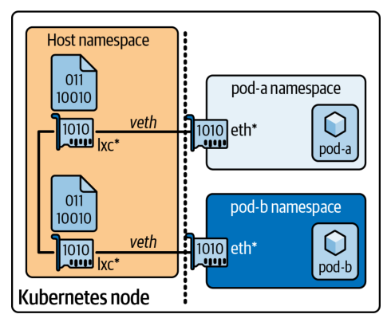
Figure 5-2. High-level view of container networking
图 5-2 容器网络的高层视图
Intranode Connectivity节点内连通性
Let’s start by looking at how two pods (
pod-a and pod-b) on the same node communicate. To do that, we will trace a successful ping from one pod to another running on the same node. As explained in “Linux Networking Essentials for Cilium”, each pod connects to the host through a veth pair. Cilium attaches eBPF programs to the interfaces on the host side so that packets are inspected and forwarded as soon as they leave or enter the pod. This early interception allows Cilium to consult its eBPF maps for identity, policy, or connection tracking information and apply decisions immediately. This is different from the behavior of many traditional CNIs, where packets are typically bridged or passed through iptables chains for filtering and routing. With Cilium, the decision is made directly in the datapath at the earliest possible moment, avoiding the extra layers of processing. Let’s test it. In a generic kind cluster (kind create cluster --config kind.yaml), with a default Cilium installation (cilium install), deploy two pods (pod-a and pod-b) on the same node (kind-worker) with the manifest intra-node-example.yaml. Check their IP addresses and verify the successful intranode ping:我们先来看同一节点上的两个 Pod（
我们来测试一下。在一个普通的 kind 集群（
pod-a 和 pod-b）如何通信。为此，我们将追踪一次从一个 Pod 到同一节点上另一个 Pod 的成功 ping。正如"Cilium 所需的 Linux 网络基础"一节所解释的，每个 Pod 通过 veth 对连接到主机。Cilium 将 eBPF 程序挂载到主机侧的接口上，以便数据包在离开或进入 Pod 时立即被检查和转发。这种早期拦截让 Cilium 能够查询自己的 eBPF map 以获取身份、策略或连接跟踪信息，并直接应用决策。这与许多传统 CNI 的行为不同——传统 CNI 中数据包通常通过网桥或经过 iptables 链进行过滤和路由。而在 Cilium 中，决策在最早可能的时刻直接在数据路径中完成，避免了额外的处理层。我们来测试一下。在一个普通的 kind 集群（
kind create cluster --config kind.yaml）中，使用默认的 Cilium 安装（cilium install），通过清单 intra-node-example.yaml 在同一节点（kind-worker）上部署两个 Pod（pod-a 和 pod-b）。检查它们的 IP 地址并验证节点内 ping 成功：代码（原文）
$ kubectl get pods -o wide NAME READY STATUS RESTARTS AGE IP NODE pod-a 1/1 Running 0 58m 10.244.1.203 kind-worker pod-b 1/1 Running 0 58m 10.244.1.69 kind-worker $ kubectl exec -it pod-a -- ping 10.244.1.69 PING 10.244.1.69 (10.244.1.69) 56(84) bytes of data. 64 bytes from 10.244.1.69: icmp_seq=1 ttl=63 time=0.223 ms 64 bytes from 10.244.1.69: icmp_seq=2 ttl=63 time=0.073 ms
Both pods are connected to the host’s network namespace via their veth pairs. The host namespace acts as the common network domain where these veth pairs terminate and provides the link between otherwise isolated pod stacks. For two pods on the same node to exchange traffic, their packets must leave the pod namespace and pass through this shared host namespace, where Cilium’s datapath logic is applied. Enter the
pod-a shell with kubectl exec -it pod-a -- bash and check its eth0 interface details and routing table. From inside pod-a, the output shows that its eth0 interface, with the index 23, is connected to a peer with index 24 (eth0@if24). This indicates that the other end of the veth pair exists outside the pod’s namespace:两个 Pod 都通过各自的 veth 对连接到主机的网络命名空间。主机命名空间作为这些 veth 对终止的公共网络域，为原本隔离的 Pod 栈之间提供链路。同一节点上的两个 Pod 要交换流量，其数据包必须离开 Pod 命名空间，穿过这个共享的主机命名空间——Cilium 的数据路径逻辑正是在那里应用的。
用
用
kubectl exec -it pod-a -- bash 进入 pod-a 的 shell，查看其 eth0 接口详情和路由表。从 pod-a 内部可以看到，其索引为 23 的 eth0 接口连接到了索引为 24 的对端（eth0@if24）。这表明 veth 对的另一端存在于 Pod 命名空间之外：代码（原文）
pod-a:~# ip address show eth0 23: eth0@if24: <BROADCAST,MULTICAST,UP,LOWER_UP> mtu 65520 qdisc noqueue state UP group default qlen 1000 link/ether 76:43:9c:d5:bd:2a brd ff:ff:ff:ff:ff:ff link-netnsid 0 inet 10.244.1.203/32 scope global eth0 valid_lft forever preferred_lft forever inet6 fe80::7443:9cff:fed5:bd2a/64 scope link proto kernel_ll valid_lft forever preferred_lft forever pod-a:~# ip route default via 10.244.1.198 dev eth0 mtu 65470 10.244.1.198 dev eth0 scope link
The
@if24 suffix shows the peer index. To confirm what this peer is, we look at the host’s network namespace. On the host, the other end of the veth pair appears as an lxc* interface with the corresponding peer index (if23 in this case):后缀
@if24 显示了对端索引。要确认这个对端是什么，我们来看主机的网络命名空间。在主机上，veth 对的另一端表现为一个 lxc* 接口，具有对应的对端索引（本例中是 if23）：代码（原文）
$ docker exec -it kind-worker bash root@kind-worker:/# ip address | grep -A 3 if23 24: lxcbee302eb186c@if23: <BROADCAST,MULTICAST,UP,LOWER_UP> mtu 65520 qdisc noqueue state UP group default qlen 1000 link/ether a2:cf:c3:e6:e4:c7 brd ff:ff:ff:ff:ff:ff link-netns cni-d35c64e3-0ea6-5967-0698-427e7255cdc8 inet6 fe80::a0cf:c3ff:fee6:e4c7/64 scope link valid_lft forever preferred_lft forever
This pairing (
eth0@if24 inside the pod, lxc*@if23 on the host) is how traffic leaves the pod’s isolated namespace and enters the host’s network namespace, where Cilium’s eBPF programs can process it.这种配对方式（Pod 内的
eth0@if24、主机上的 lxc*@if23）让流量能够离开 Pod 的隔离命名空间，进入 Cilium 的 eBPF 程序可以处理它的主机网络命名空间。You will see a similar pairing for
pod-b:你会看到
pod-b 也有类似的配对：代码（原文）
pod-b:~# ip address show eth0 25: eth0@if26: <BROADCAST,MULTICAST,UP,LOWER_UP> mtu 65520 qdisc noqueue state UP group default qlen 1000 link/ether 46:9c:c0:5f:ec:1c brd ff:ff:ff:ff:ff:ff link-netnsid 0 inet 10.244.1.69/32 scope global eth0 valid_lft forever preferred_lft forever inet6 fe80::449c:c0ff:fe5f:ec1c/64 scope link proto kernel_ll valid_lft forever preferred_lft forever
On the host:
在主机上：
代码（原文）
root@kind-worker:/# ip address | grep -A 3 if25 26: lxcc5b0a1b7ddfb@if25: <BROADCAST,MULTICAST,UP,LOWER_UP> mtu 65520 qdisc noqueue state UP group default qlen 1000 link/ether fa:a2:c6:90:65:f7 brd ff:ff:ff:ff:ff:ff link-netns cni-f4803bdf-3eb6-a209-831e-b93beac138a3 inet6 fe80::f8a2:c6ff:fe90:65f7/64 scope link valid_lft forever preferred_lft forever
This confirms that both pods exchange traffic through the host namespace, with their veth pairs terminating there. This intranode pod-to-pod connectivity is depicted in Figure 5-3.
这证实了两个 Pod 都通过主机命名空间交换流量，它们的 veth 对都终止于此。这种节点内的 Pod 间连通性如图 5-3 所示。
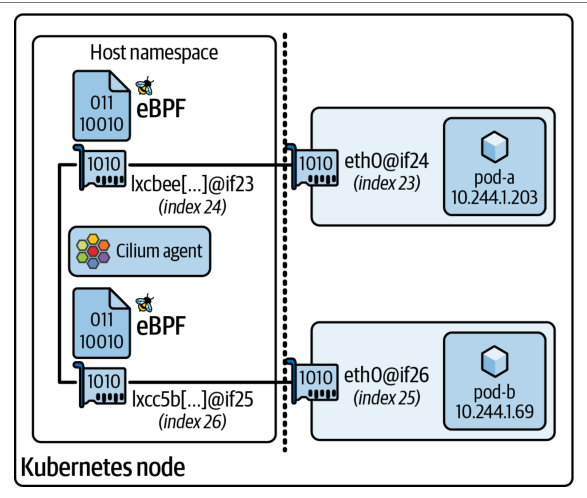
Figure 5-3. Intranode pod-to-pod connectivity
图 5-3 节点内 Pod 间连通性
Cilium also installs a set of interfaces during initialization, which can be confusing the first time you see them in the
ip address output. Let’s break them down:Cilium 在初始化期间还会安装一组接口，第一次在
ip address 输出中看到时可能会让人困惑。我们来逐一拆解：- For traffic leaving the pod,
pod-auses its default gateway (10.244.1.198in this对于离开 Pod 的流量，pod-a使用其默认网关（本例中是10.244.1.198）。
example). This gateway address maps to the
cilium_host device in the host’s network namespace:这个网关地址映射到主机网络命名空间中的
cilium_host 设备：代码（原文）
root@kind-worker:/# ip address show cilium_host 13: cilium_host@cilium_net: <BROADCAST,MULTICAST,NOARP,UP,LOWER_UP> mtu 65520 qdisc noqueue state UP group default qlen 1000 link/ether 2e:62:71:74:47:90 brd ff:ff:ff:ff:ff:ff inet 10.244.1.198/32 scope global cilium_host valid_lft forever preferred_lft forever inet6 fe80::2c62:71ff:fe74:4790/64 scope link valid_lft forever preferred_lft forever
cilium_netis a companion device paired withcilium_host. Together, they formcilium_net是与cilium_host配对的附属设备。两者共同构成了
the two ends of a veth pair, which is why the output shows
cilium_host@cil一个 veth 对的两端，这就是为什么输出会显示
cilium_host@cilium_net代码（原文）
ium_net and cilium_net@cilium_host: root@kind-worker:/# ip address show cilium_net 12: cilium_net@cilium_host: <BROADCAST,MULTICAST,NOARP,UP,LOWER_UP> mtu 65520 qdisc noqueue state UP group default qlen 1000 link/ether ba:6c:63:bb:3a:f8 brd ff:ff:ff:ff:ff:ff inet6 fe80::b86c:63ff:febb:3af8/64 scope link valid_lft forever preferred_lft forever
This construction allows traffic between a pod and the host to be processed by Cilium’s datapath.
这种结构让 Pod 与主机之间的流量能够被 Cilium 的数据路径处理。
cilium_vxlan(orcilium_geneve, if Geneve is enabled) is the overlay interfacecilium_vxlan（如果启用了 Geneve 则是cilium_geneve）是封装模式
used for tunneling traffic to other nodes when encapsulation mode is configured:
下用于将流量隧道传输到其他节点的 Overlay 接口：
代码（原文）
root@kind-worker:/# ip address show cilium_vxlan 14: cilium_vxlan: <BROADCAST,MULTICAST,UP,LOWER_UP> mtu 65520 qdisc noqueue state UNKNOWN group default link/ether c2:6e:2a:c2:91:42 brd ff:ff:ff:ff:ff:ff inet6 fe80::c06e:2aff:fec2:9142/64 scope link valid_lft forever preferred_lft forever
It is not used for intranode pod-to-pod traffic; packets that stay on the same node are forwarded via the host’s network namespace without encapsulation. We will cover encapsulation mode later in this chapter. To understand how Cilium programs control traffic, we can inspect which eBPF programs are attached to the node’s interfaces. This can be done with either
ciliumdbg (introduced in Chapter 2 and first used in Chapter 4) or the kernel’s bpftool, a command-line tool for inspecting and managing BPF objects. Here we will use bpftool so you can see exactly which programs are attached to which devices:它不用于节点内的 Pod 间流量；留在同一节点上的数据包通过主机的网络命名空间转发，不经过封装。我们将在本章后面介绍封装模式。
要理解 Cilium 如何编程控制流量，我们可以检查哪些 eBPF 程序被挂载到了节点的接口上。这可以通过
要理解 Cilium 如何编程控制流量，我们可以检查哪些 eBPF 程序被挂载到了节点的接口上。这可以通过
ciliumdbg（第 2 章介绍，第 4 章首次使用）或内核的 bpftool（一个用于检查和管理 BPF 对象的命令行工具）来完成。这里我们使用 bpftool，以便你确切地看到哪些程序被挂载到了哪些设备上：代码（原文）
$ kubectl -n kube-system exec -it cilium-gq458 -c cilium-agent -- bash root@kind-worker:/home/cilium# bpftool net show xdp: tc: eth0(11) tcx/ingress cil_from_netdev prog_id 617 link_id 16 cilium_net(12) tcx/ingress cil_to_host prog_id 609 link_id 15 cilium_host(13) tcx/ingress cil_to_host prog_id 607 link_id 13 cilium_host(13) tcx/egress cil_from_host prog_id 601 link_id 14 cilium_vxlan(14) tcx/ingress cil_from_overlay prog_id 598 link_id 11 cilium_vxlan(14) tcx/egress cil_to_overlay prog_id 599 link_id 12 lxc_health(16) tcx/ingress cil_from_container prog_id 633 link_id 17 lxc0090ec0fed69(18) tcx/ingress cil_from_container prog_id 643 link_id 18 lxcefc945dce028(20) tcx/ingress cil_from_container prog_id 666 link_id 20 lxce97d7b72b3aa(22) tcx/ingress cil_from_container prog_id 657 link_id 19 lxcbee302eb186c(24) tcx/ingress cil_from_container prog_id 1668 link_id 37 lxcc5b0a1b7ddfb(26) tcx/ingress cil_from_container prog_id 1695 link_id 38 [...]
The listing shows several important things:
这份列表展示了几个要点：
- Host devices (
cilium_host,cilium_net,cilium_vxlan) all have programs主机设备（cilium_host、cilium_net、cilium_vxlan）都挂载了程序，
attached, handling traffic into and out of the node.
处理进出节点的流量。
- Pod veth devices (
lxc*) each have ingress programs attached. These entries arePod veth 设备（lxc*）各自挂载了 ingress 程序。这些条目显示为
shown as
cil_from_container-*. The attachment point is ingress on the veth, which corresponds to packets leaving the container. In other words, whenever a packet exits a pod, it first passes through this eBPF program before entering the host’s network namespace. Putting this together, packets from pod-a traverse its veth into the host-side lxc* device, where Cilium’s ingress program (cil_from_container-*) runs. The packet is then delivered to pod-b if the traffic stays on the same node. You can confirm the packet path with a simple packet capture on the host-side veth for pod-b (lxcc5b0a1b7ddfb) by using tcpdump on the worker node. The ICMP echo request and reply shown here are the ping traffic we initiated earlier from pod-a显示为
cil_from_container-*。挂载点位于 veth 的 ingress 方向，对应离开容器的数据包。换句话说，每当数据包离开 Pod 时，都会先经过这个 eBPF 程序，然后才进入主机的网络命名空间。综合来看，来自 pod-a 的数据包穿过其 veth 进入主机侧的 lxc* 设备，Cilium 的 ingress 程序（cil_from_container-*）就在这里运行。如果流量停留在同一节点内，数据包随后会被交付给 pod-b。你可以在 worker 节点上使用 tcpdump，对 pod-b (lxcc5b0a1b7ddfb) 的主机侧 veth 做一次简单的抓包，来确认数据包的路径。这里显示的 ICMP echo request 和 reply，就是我们之前从 pod-a 发起的 ping 流量。代码（原文）
(10.244.1.203) to pod-b (10.244.1.69): root@kind-worker:/# tcpdump -i lxcc5b0a1b7ddfb 14:12:34.847472 IP 10.244.1.203 > 10.244.1.69: ICMP echo request, id 51, seq 1, length 64 14:12:34.847589 IP 10.244.1.69 > 10.244.1.203: ICMP echo reply, id 51, seq 1, length 64
This confirms the intranode path: packets leave
pod-a, enter the host’s network namespace, are processed by Cilium’s eBPF datapath, and are delivered to pod-b without encapsulation.1这确认了节点内的包路径：数据包离开
pod-a，进入主机的网络命名空间，由 Cilium 的 eBPF 数据路径处理，然后不经过封装就被交付给 pod-b。1From Cilium 1.16 on, an alternative to veth called the netkit device is supported. Introduced in Linux 6.7, netkit allows eBPF programs to run directly inside pod namespaces for improved performance. This is covered in more detail in Chapter 8.
从 Cilium 1.16 开始，还支持一种替代 veth 的设备——netkit。netkit 引入于 Linux 6.7，允许 eBPF 程序直接在 Pod 命名空间内运行以获得更好的性能。这会在第 8 章中详细介绍。
Internode Connectivity跨节点连通性
While intranode pod-to-pod communication is handled entirely on the local host, internode traffic must be forwarded across the physical network connecting cluster nodes. This introduces additional complexity, since each node must know which pod IP ranges are assigned to other nodes and how to reach them. A fundamental rule of Kubernetes networking is that every pod must be able tocommunicate with every other pod using its IP address, without any form of networkaddress translation. In other words:
节点内 Pod 间通信完全在本地主机上处理，而跨节点流量必须通过连接集群节点的物理网络转发。这带来了额外的复杂性，因为每个节点都必须知道哪些 Pod IP 范围分配给了其他节点，以及如何到达这些范围。
Kubernetes 网络的一条基本规则是：每个 Pod 必须能够使用其 IP 地址与任何其他 Pod 通信，不进行任何形式的网络地址转换。换言之：
Kubernetes 网络的一条基本规则是：每个 Pod 必须能够使用其 IP 地址与任何其他 Pod 通信，不进行任何形式的网络地址转换。换言之：
- The source IP of a packet sent by a pod must be visible, unmodified, at thePod 发送的数据包的源 IP 必须在目的 Pod 处原样可见，
destination pod.
不能被修改。
- The destination pod must be reachable directly by its pod IP, not by a translated目的 Pod 必须能够通过其 Pod IP 直接可达，而不是通过转换后的
node IP or service address. To meet this requirement, Cilium supports two primary routing models for internode connectivity:
节点 IP 或服务地址。
为满足这一要求，Cilium 支持两种主要的跨节点连通性路由模型：
为满足这一要求，Cilium 支持两种主要的跨节点连通性路由模型：
- Native routing, where the nodes and the underlying network are aware of all pod原生路由，即节点和底层网络知晓所有 Pod 网络，
networks and can forward the traffic accordingly.
并能够相应地转发流量。
- Encapsulation (overlay) routing, where Cilium builds a mesh of tunnels between封装（Overlay）路由，即 Cilium 在节点之间构建一张隧道网格，
nodes and hides pod network details from the underlay. Let’s explore both models, how Cilium implements them, and the trade-offs of each.
将 Pod 网络细节隐藏在 Underlay 之下。
我们来分别探讨这两种模型、Cilium 如何实现它们，以及各自的取舍。
我们来分别探讨这两种模型、Cilium 如何实现它们，以及各自的取舍。
Native Routing Mode原生路由模式
In native routing, packets sent by pods to other pods are routed through the host networking stack, just like packets from any other local process. Once a packet exits
在原生路由中，Pod 发送给其他 Pod 的数据包通过主机网络协议栈路由，就像任何其他本地进程发送的数据包一样。数据包一旦离开
1If you’d like to truly understand how packets make their way across the Linux networking stack, you can try out
pwru (“Packet, where are you?”), an eBPF-based Linux kernel networking debugger that is part of the broader Cilium project.1 如果你想真正理解数据包如何穿越 Linux 网络协议栈，可以试试
pwru（"Packet, where are you?"）——这是一个基于 eBPF 的 Linux 内核网络调试器，属于更广泛的 Cilium 项目的一部分。a pod and enters the host’s networking namespace, it is routed based on the host’s routing table. This mode requires either that each Kubernetes node knows the PodCIDRs assigned to all other nodes, or that the underlying network can route pod IPs directly (for example, through a pod IP–aware fabric such as BGP). In the first case, nodes maintain explicit routes between one another. For instance, if the subnet
10.10.0.32/27 is allocated to kind-worker2, then kind-worker1 must have a route sending traffic for that range to kind-worker2’s node IP. Table 5-1 shows a simple example with three nodes, their PodCIDRs, and the corresponding next hops. Table 5-1. Native routing examplePod 进入主机的网络命名空间，就会根据主机的路由表进行路由。这种模式要求要么每个 Kubernetes 节点知晓分配给所有其他节点的 PodCIDR，要么底层网络能够直接路由 Pod IP（例如通过一个具备 Pod IP 感知能力的 BGP 交换矩阵）。
第一种情况下，节点之间维护显式路由。举个例子，如果子网
第一种情况下，节点之间维护显式路由。举个例子，如果子网
10.10.0.32/27 分配给了 kind-worker2，那么 kind-worker1 就必须有一条路由把该范围的流量发送到 kind-worker2 的节点 IP。表 5-1 展示了一个包含三个节点、它们的 PodCIDR 以及对应下一跳的简单示例。表 5-1 原生路由示例Destination prefixDestination nodeNext hop 目的前缀 目的节点 下一跳
代码（原文）
10.10.0.0/27kind-worker172.18.0.3 10.10.0.32/27kind-worker2172.18.0.4 10.10.0.64/27kind-control-plane172.18.0.5
The same example is illustrated in Figure 5-4.
同一个例子在图 5-4 中有所呈现。
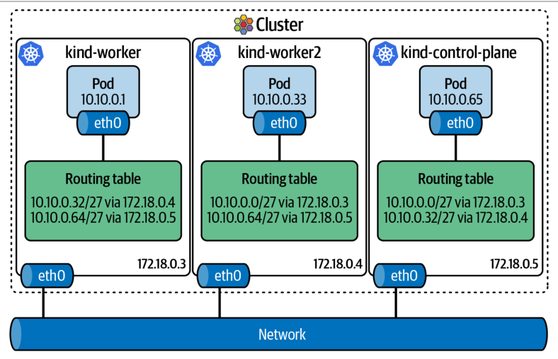
Figure 5-4. Native routing mode
图 5-4 原生路由模式
Since encapsulation is Cilium’s default routing mode, native routing must be enabled explicitly with the
routingMode: native Helm value. The other required value when using native routing is the CIDR range that is already routable by the underlying network, which can be defined with the ipv4NativeRoutingCIDR (or ipv6NativeRoutingCIDR) option. This tells Cilium to hand packets in that range directly to the Linux kernel’s routing subsystem, without applying NAT to the node’s IP on egress. For the nodes to learn about each PodCIDR, you have three main options: auto route injection, static routing, and dynamic routing with BGP. Let’s review each of these.由于封装是 Cilium 的默认路由模式，原生路由必须通过 Helm 值
节点要获知彼此的 PodCIDR，你有三个主要选择：自动路由注入、静态路由和通过 BGP 的动态路由。我们逐一来看。
routingMode: native 显式启用。使用原生路由时所需的另一个值是底层网络已经可以路由的 CIDR 范围，可以通过 ipv4NativeRoutingCIDR（或 ipv6NativeRoutingCIDR）选项定义。这告诉 Cilium 将该范围内的数据包直接交给 Linux 内核的路由子系统，而不会在出站时对节点 IP 应用 NAT。节点要获知彼此的 PodCIDR，你有三个主要选择：自动路由注入、静态路由和通过 BGP 的动态路由。我们逐一来看。
Auto route injection 自动路由注入
Auto route injection (also known as auto-direct node routes) is the simplest way to propagate the pod network information, but it requires each node to be on the same layer 2 network. Let’s try it. First, create a generic kind cluster:
自动路由注入（也称为 auto-direct node routes）是传播 Pod 网络信息最简单的方式，但它要求每个节点位于同一二层网络。我们来试试看。首先，创建一个普通的 kind 集群：
代码（原文）
kind create cluster --config kind.yaml
Then install Cilium with the following Helm values (cilium-native-auto-noderoutes.yaml). We’re reusing the values from the Multi-Pool example from Chapter 4 here:
然后使用以下 Helm 值（cilium-native-auto-noderoutes.yaml）安装 Cilium。这里我们复用第 4 章 Multi-Pool 示例中的值：
代码（原文）
ipam: mode: multi-pool operator: autoCreateCiliumPodIPPools: default: ipv4: cidrs: ["10.10.0.0/16"] maskSize: 27 routingMode: native endpointRoutes: enabled: true autoDirectNodeRoutes: true ipv4NativeRoutingCIDR: 10.0.0.0/8
When using auto route injection (indicated by the
autoDirectNodeRoutes: true option), Cilium updates each node’s routing table to include routes for the PodCIDRs owned by other nodes. Let’s check the PodCIDRs first. You may recall from our discussion of Multi-Pool mode and the previous Helm configuration that Cilium will automatically create PodCIDRs on each node. We can verify this with the following commands:使用自动路由注入时（由
autoDirectNodeRoutes: true 选项指示），Cilium 会更新每个节点的路由表，加入指向其他节点所拥有 PodCIDR 的路由。我们先检查一下 PodCIDR。你可能还记得我们在 Multi-Pool 模式和之前的 Helm 配置中讨论过，Cilium 会在每个节点上自动创建 PodCIDR。我们可以通过以下命令验证：代码（原文）
$ kubectl get ciliumnodes kind-worker -o yaml | yq .spec.ipam.pools - cidrs: - 10.10.0.64/27 pool: default $ kubectl get ciliumnodes kind-worker2 -o yaml | yq .spec.ipam.pools - cidrs: - 10.10.0.32/27 pool: default $ kubectl get ciliumnodes kind-control-plane -o yaml | yq .spec.ipam.pools - cidrs: - 10.10.0.0/27 pool: default
Now, let’s inspect the routing tables on the nodes in our kind cluster. With
autoDirectNodeRoutes enabled, Cilium has automatically populated each table with routes to the PodCIDRs, using the corresponding node IPs as next hops:现在我们来检查 kind 集群中各节点的路由表。启用
autoDirectNodeRoutes 后，Cilium 已自动用指向 PodCIDR 的路由填充了每张表，使用对应的节点 IP 作为下一跳：代码（原文）
$ docker exec kind-worker ip route [...] 10.10.0.0/27 via 172.18.0.4 dev eth0 proto kernel 10.10.0.32/27 via 172.18.0.2 dev eth0 proto kernel $ docker exec kind-worker2 ip route [...] 10.10.0.0/27 via 172.18.0.4 dev eth0 proto kernel 10.10.0.64/27 via 172.18.0.3 dev eth0 proto kernel $ docker exec kind-control-plane ip route [...] 10.10.0.32/27 via 172.18.0.2 dev eth0 proto kernel 10.10.0.64/27 via 172.18.0.3 dev eth0 proto kernel
Static routing 静态路由
In a very small cluster with a fixed set of nodes, such as a two-node lab environment or a development setup where nodes rarely change, you can configure PodCIDRs manually using
ip route or a configuration management tool. For instance, if the PodCIDR 10.10.0.32/27 is allocated to kind-worker2 (node IP 172.18.0.4), then every other node in the cluster must be told how to reach that range. On kind-worker, you would configure:在节点数量固定的非常小的集群中，例如两节点的实验环境或节点很少变动的开发环境，你可以使用
ip route 或配置管理工具手动配置 PodCIDR。比如，如果 PodCIDR 10.10.0.32/27 分配给了 kind-worker2（节点 IP 为 172.18.0.4），那么集群中的每一个其他节点都必须知道如何到达这个范围。在 kind-worker 上，你需要配置：代码（原文）
ip route add 10.10.0.32/27 via 172.18.0.4 dev eth0
This ensures that any packets destined for
10.10.0.32/27 are forwarded to kindworker2. The same principle applies in reverse: each node must have static routes installed for the PodCIDRs owned by all of the other nodes. While simple and explicit, this approach does not scale. Whenever nodes are added, removed, or rescheduled, static routes need to be updated manually across the cluster. This quickly becomes error-prone and operationally unmanageable outside of very small test setups.这确保了发往
10.10.0.32/27 的任何数据包都会被转发到 kind-worker2。反之亦然：每个节点都必须为其他所有节点所拥有的 PodCIDR 安装静态路由。虽然简单直接，但这种方式无法扩展。每当节点被添加、移除或重新调度时，静态路由都需要在整个集群中手动更新。这在非常小的测试环境之外很快就会变得容易出错且运维上不可管理。Dynamic routing with BGP 通过 BGP 进行动态路由
In production environments with many nodes or frequent churn, such as deployments spanning multiple racks, the most scalable option is to distribute PodCIDRs dynamically using BGP. With BGP enabled, each node advertises its PodCIDRs to the network fabric. This ensures routes are kept up-to-date automatically. With Cilium’s BGP support (covered in Chapter 10), pod prefixes can be advertised directly. With a Cilium BGP configuration like the one that follows, nodes can dynamically advertise their PodCIDRs to the underlying network (typically, by peering with top-of-rack devices):
在拥有大量节点或频繁变动的生产环境中（例如跨多个机架的部署），最具扩展性的方式是使用 BGP 动态分发 PodCIDR。启用 BGP 后，每个节点会向网络交换矩阵通告自己的 PodCIDR。这确保路由自动保持最新。借助 Cilium 的 BGP 支持（第 10 章介绍），可以直接通告 Pod 前缀。使用一个类似下面这样的 Cilium BGP 配置，节点就能动态地将自己的 PodCIDR 通告给底层网络（通常是与 ToR（机架顶部）设备建立对等关系）：
代码（原文）
apiVersion: cilium.io/v2 kind: CiliumBGPPeerConfig metadata: name: peer-config-generic spec: families: - afi: ipv4 safi: unicast advertisements: matchLabels: advertise: "pod-cidr" --- apiVersion: cilium.io/v2 kind: CiliumBGPAdvertisement metadata: name: pod-cidr labels: advertise: pod-cidr spec: advertisements: - advertisementType: "PodCIDR"
This approach allows the cluster to scale without manual configuration. When nodes join or leave the cluster, the routing fabric is updated automatically.
这种方式让集群无需手动配置即可扩展。当节点加入或离开集群时，路由交换矩阵会自动更新。
Encapsulation Mode封装模式
Native routing works well when the underlying network can carry PodCIDRs directly or when you can extend the routing fabric with static routes or BGP. But in many environments, especially in cloud or multitenant infrastructures, you do not have the ability to influence the underlay. In those cases, Cilium cannot rely on the network to forward pod IPs. To solve this problem, Cilium provides encapsulation mode, where pod traffic is tunneled between nodes. From the underlay’s perspective this is just ordinary nodeto-node traffic, but the original pod packets are preserved inside the tunnel. In encapsulation mode—also known as tunnel or overlay mode—all nodes form a full set of overlay tunnels using a User Datagram Protocol (UDP)-based encapsulation protocol such as VXLAN or Geneve. This is Cilium’s default routing mode. Encapsulation is most useful in environments where you cannot control the underlay routing. Instead of requiring the physical network to carry pod prefixes, Cilium hides pod addressing behind node IPs. From the underlay’s perspective, all pod-to-pod traffic looks like node-to-node traffic between Kubernetes nodes.
原生路由在底层网络能够直接承载 PodCIDR，或者你可以通过静态路由或 BGP 扩展路由交换矩阵时运行良好。但在许多环境中，尤其是云或多租户基础设施中，你无法影响 Underlay。在这种情况下，Cilium 不能依赖网络来转发 Pod IP。
为解决这个问题，Cilium 提供 封装模式，即 Pod 流量在节点之间通过隧道传输。从 Underlay 的角度来看，这只是普通的节点间流量，但原始的 Pod 数据包被保留在隧道内部。
在封装模式中——也称为隧道或 Overlay 模式——所有节点使用基于 UDP 的封装协议（如 VXLAN 或 Geneve）形成一张完整的 Overlay 隧道网格。这是 Cilium 的默认路由模式。封装在你无法控制 Underlay 路由的环境中最为有用。Cilium 不要求物理网络承载 Pod 前缀，而是将 Pod 寻址隐藏在节点 IP 之后。从 Underlay 的角度来看，所有 Pod 间流量都像是 Kubernetes 节点之间的节点间流量。
为解决这个问题，Cilium 提供 封装模式，即 Pod 流量在节点之间通过隧道传输。从 Underlay 的角度来看，这只是普通的节点间流量，但原始的 Pod 数据包被保留在隧道内部。
在封装模式中——也称为隧道或 Overlay 模式——所有节点使用基于 UDP 的封装协议（如 VXLAN 或 Geneve）形成一张完整的 Overlay 隧道网格。这是 Cilium 的默认路由模式。封装在你无法控制 Underlay 路由的环境中最为有用。Cilium 不要求物理网络承载 Pod 前缀，而是将 Pod 寻址隐藏在节点 IP 之后。从 Underlay 的角度来看，所有 Pod 间流量都像是 Kubernetes 节点之间的节点间流量。
Encapsulation mode with VXLAN 使用 VXLAN 的封装模式
Virtual eXtensible LAN (VXLAN) is a tunneling protocol that encapsulates layer 2 Ethernet frames inside UDP packets, allowing networks to extend layer 2 segments across layer 3 boundaries. It was designed to overcome the scalability limits of VLANs by supporting up to 16 million unique VXLAN network identifiers (VNIs), compared to the 4,096 VLAN IDs (VIDs) supported by VLAN. In practical terms, VXLAN provides a way to build overlay networks on top of an existing IP underlay. The underlay only needs to deliver UDP traffic between nodes, while the overlay preserves the original Ethernet and IP headers of pod-to-pod traffic. When Cilium is installed in VXLAN mode, a
cilium_vxlan device appears on each node:虚拟可扩展局域网（VXLAN）是一种将二层以太网帧封装在 UDP 数据包内的隧道协议，允许网络跨越三层边界延伸二层网段。它被设计用来通过支持最多 1600 万个唯一的 VXLAN 网络标识符（VNI）来克服 VLAN 的扩展性限制——相比之下 VLAN 只支持 4096 个 VLAN ID（VID）。
实际而言，VXLAN 提供了一种在现有 IP Underlay 之上构建 Overlay 网络的方式。Underlay 只需要在节点之间交付 UDP 流量，而 Overlay 则保留了 Pod 间流量原始的以太网和 IP 头部。当 Cilium 以 VXLAN 模式安装时，每个节点上都会出现一个
实际而言，VXLAN 提供了一种在现有 IP Underlay 之上构建 Overlay 网络的方式。Underlay 只需要在节点之间交付 UDP 流量，而 Overlay 则保留了 Pod 间流量原始的以太网和 IP 头部。当 Cilium 以 VXLAN 模式安装时，每个节点上都会出现一个
cilium_vxlan 设备：代码（原文）
root@kind-worker:/# ip address show cilium_vxlan 14: cilium_vxlan: <BROADCAST,MULTICAST,UP,LOWER_UP> mtu 65520 qdisc noqueue state UNKNOWN group default link/ether c2:6e:2a:c2:91:42 brd ff:ff:ff:ff:ff:ff inet6 fe80::c06e:2aff:fec2:9142/64 scope link valid_lft forever preferred_lft forever
Routes to remote PodCIDRs point to this device. Packets destined for another node’s PodCIDR are encapsulated and sent via the VXLAN interface, as illustrated in Figure 5-5.
指向远端 PodCIDR 的路由指向这个设备。目的为其他节点 PodCIDR 的数据包被封装后通过 VXLAN 接口发送，如图 5-5 所示。
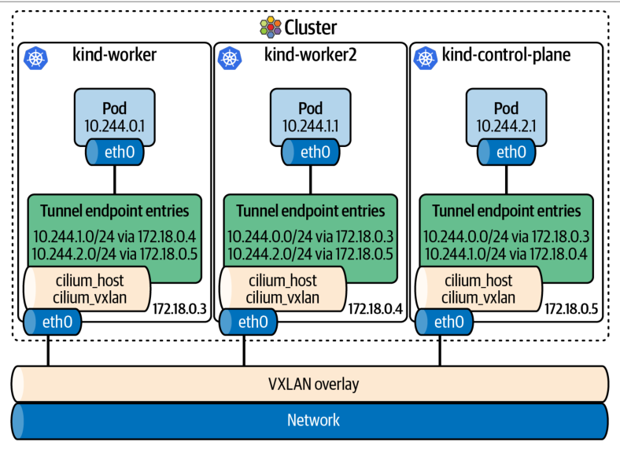
Figure 5-5. Encapsulation routing mode
图 5-5 封装路由模式
You can verify this using a generic kind cluster (
kind create cluster --configkind.yaml) with a default Cilium installation. The routing table is updated to direct PodCIDRs via the cilium_host device. For example:你可以使用一个普通的 kind 集群（
kind create cluster --config kind.yaml）配合默认的 Cilium 安装来验证这一点。路由表会被更新，通过 cilium_host 设备引导 PodCIDR。例如：代码（原文）
$ docker exec kind-worker ip route [...] 10.244.0.0/24 via 10.244.2.63 dev cilium_host [...] 10.244.1.0/24 via 10.244.2.63 dev cilium_host [...] mtu 65470 10.244.2.0/24 via 10.244.2.63 dev cilium_host [...] mtu 65470 [...]
Similar routes are installed on the other nodes, always pointing PodCIDRs to the local
cilium_host. If this looks familiar, it should. We saw a similar pattern in native routing mode with auto route injection: Cilium updated the host routing table with PodCIDRs and directed them to the appropriate node IPs. The difference here is that in VXLAN mode the routes point to the local cilium_host device. From there, Cilium intercepts the traffic, encapsulates it, and sends it through the cilium_vxlan interface to the destination node. Figure 5-6 illustrates the packet format:其他节点上也安装了类似的路由，总是将 PodCIDR 指向本地的
cilium_host。如果这看起来眼熟，那很正常。我们在原生路由模式下配合自动路由注入时见过类似的模式：Cilium 更新主机路由表，加入 PodCIDR 并将它们指向适当的节点 IP。这里的区别在于，在 VXLAN 模式下路由指向的是本地的 cilium_host 设备。从那里开始，Cilium 拦截流量、进行封装，然后通过 cilium_vxlan 接口发送到目的节点。图 5-6 展示了数据包格式：- The outer IP header holds the node IPs (for example,
172.18.0.5 >外层 IP 头部携带节点 IP（例如172.18.0.5 > 172.18.0.3）。
代码（原文）
172.18.0.3).
- The outer UDP header identifies the tunnel. Cilium uses UDP port 8472 by外层 UDP 头部标识隧道。Cilium 默认使用 UDP 端口 8472，
default, although the IANA-assigned VXLAN port is 4789.
虽然 IANA 分配的 VXLAN 端口是 4789。
- The VXLAN header contains the VNI. In traditional VXLAN, the VNI is usedVXLAN 头部包含 VNI。在传统 VXLAN 中，VNI 用于
to distinguish overlay networks. In Cilium, it is repurposed to carry the identity of the source pod. This provides a minor performance boost, as it allows the destination node to enforce policy without performing a separate identity lookup.2
区分不同的 Overlay 网络。而在 Cilium 中，它被重新用来携带源 Pod 的身份。这提供了轻微的性能提升，因为目的节点可以在不进行单独身份查询的情况下强制执行策略。2
- The inner packet is the original pod-to-pod traffic, preserved unmodified.内层数据包是原始的 Pod 间流量，未经修改地保留。
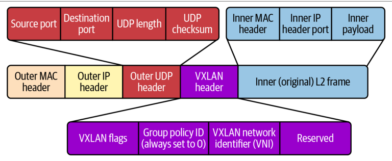
Figure 5-6. VXLAN encapsulation
图 5-6 VXLAN 封装
You can inspect this traffic using the sample capture file vxlan_traffic.pcap, available in the /pcaps directory of the book’s GitHub repository. To view the packet flow directly on the command line, use this command:
你可以使用本书 GitHub 仓库中 /pcaps 目录里提供的抓包样例文件 vxlan_traffic.pcap 来查看这类流量。要直接在命令行中查看包流，使用以下命令：
代码（原文）
$ tcpdump -r vxlan_traffic.pcap IP 172.18.0.3.51713 > 172.18.0.4.8472: OTV, flags [I] IP 10.244.0.185.52442 > 10.244.1.212.4240: Flags [.], ack 1439317725, length 0
This shows that the packet was encapsulated with VXLAN on UDP port 8472. The outer IP header (
172.18.0.3 > 172.18.0.4) corresponds to the node-to-node communication between kind-worker and kind-worker2. Inside the VXLAN header, the original pod-level packet (10.244.0.185 > 10.244.1.212) is preserved, which is the actual application traffic.这表明数据包使用 VXLAN 在 UDP 端口 8472 上进行了封装。外层 IP 头部（
172.18.0.3 > 172.18.0.4）对应 kind-worker 与 kind-worker2 之间的节点间通信。在 VXLAN 头部内部，原始的 Pod 级数据包（10.244.0.185 > 10.244.1.212）被保留下来——这就是实际的应用流量。2Don’t worry if you find the concepts of identity and policy confusing—they will be explained in detail in Chapter 12.
2 如果你觉得身份和策略这些概念令人困惑——别担心，它们会在第 12 章详细解释。
From the network’s point of view, this is just internode traffic. The nodes do not need to be on the same subnet, and they do not need to understand or route pod IPs. Once the packet reaches the destination node, Cilium removes the VXLAN header and delivers the original packet to the receiving pod. The key benefit of encapsulation mode is that it abstracts the pod network from the underlying infrastructure. As long as nodes can reach each other over IP, pod-to-pod communication will work. The downside is the encapsulation overhead. Each packet includes an additional VXLAN header and outer IP/UDP headers. This adds approximately 50 bytes per packet (depending on configuration), which reduces the effective MTU (maximumtransmission unit, the largest amount of data that can be transmitted over a network in a single packet) and can impact performance. For most clusters, this overhead is acceptable. However, in performance-sensitive environments, native routing is typically preferred when possible.
从网络的角度来看，这只是节点间流量。节点不需要在同一子网，也不需要理解或路由 Pod IP。数据包到达目的节点后，Cilium 去除 VXLAN 头部并将原始数据包交付给接收 Pod。
封装模式的核心好处在于它将 Pod 网络与底层基础设施解耦。只要节点之间能够通过 IP 互相到达，Pod 间通信就能正常工作。缺点是封装开销。每个数据包都会多一个 VXLAN 头部以及外层 IP/UDP 头部。这大约每个包增加 50 字节（取决于配置），降低了有效 MTU（最大传输单元，即网络中单个数据包能够传输的最大数据量），并可能影响性能。
对大多数集群而言，这种开销是可以接受的。但在性能敏感的环境中，通常更倾向于在可行时使用原生路由。
封装模式的核心好处在于它将 Pod 网络与底层基础设施解耦。只要节点之间能够通过 IP 互相到达，Pod 间通信就能正常工作。缺点是封装开销。每个数据包都会多一个 VXLAN 头部以及外层 IP/UDP 头部。这大约每个包增加 50 字节（取决于配置），降低了有效 MTU（最大传输单元，即网络中单个数据包能够传输的最大数据量），并可能影响性能。
对大多数集群而言，这种开销是可以接受的。但在性能敏感的环境中，通常更倾向于在可行时使用原生路由。
Encapsulation mode with Geneve 使用 Geneve 的封装模式
Like VXLAN, Geneve (Generic Network Virtualization Encapsulation) lets Cilium tunnel pod traffic between nodes when the underlay cannot route PodCIDRs. The effect is the same: the underlay only sees node-to-node IP traffic, while the original pod packet is preserved inside the tunnel. Unlike VXLAN, its header supports custom type–length–value (TLV) fields. TLVs allow Geneve to carry extra metadata in the tunnel. To test Geneve, we will use another managed Kubernetes service: Azure Kubernetes Service (AKS). This gives you the opportunity to try Cilium in a different cloud environment. The choice of AKS is deliberate because it offers a convenient and flexible networking mode: bring your own Container Network Interface (BYOCNI). In this mode, the cluster is deployed without a CNI, leaving you free to install the CNI of your choice—in this case, Cilium. As mentioned in Chapter 4, keep in mind that creating clusters and infrastructure in cloud environments may incur costs. Be sure to clean up any resources when you’re done. To deploy an AKS cluster, we’ll use the Azure CLI (
az). Follow the documentation to install it, sign in with az login, and then use the following commands to create a managed cluster in AKS (aks-byocni.md). In this example we use names prefixed with geneve- to make their purpose clearer:与 VXLAN 类似，Geneve（通用网络虚拟化封装）让 Cilium 能够在 Underlay 无法路由 PodCIDR 时于节点之间隧道传输 Pod 流量。效果相同：Underlay 只看到节点间 IP 流量，原始的 Pod 数据包保留在隧道内部。
与 VXLAN 不同的是，Geneve 的头部支持自定义的类型-长度-值（TLV）字段。TLV 让 Geneve 能够在隧道中携带额外元数据。
要测试 Geneve，我们将使用另一个托管的 Kubernetes 服务：Azure Kubernetes Service（AKS）。这让你有机会在不同的云环境中试用 Cilium。选择 AKS 是因为它提供了一个方便灵活的网络模式：自带容器网络接口（BYOCNI）。在这种模式下，集群部署时不带 CNI，让你可以自由安装自己选择的 CNI——这里就是 Cilium。
正如第 4 章所提到的，请记住，在云环境中创建集群和基础设施可能会产生费用。用完后一定要清理所有资源。要部署 AKS 集群，我们将使用 Azure CLI（
与 VXLAN 不同的是，Geneve 的头部支持自定义的类型-长度-值（TLV）字段。TLV 让 Geneve 能够在隧道中携带额外元数据。
要测试 Geneve，我们将使用另一个托管的 Kubernetes 服务：Azure Kubernetes Service（AKS）。这让你有机会在不同的云环境中试用 Cilium。选择 AKS 是因为它提供了一个方便灵活的网络模式：自带容器网络接口（BYOCNI）。在这种模式下，集群部署时不带 CNI，让你可以自由安装自己选择的 CNI——这里就是 Cilium。
正如第 4 章所提到的，请记住，在云环境中创建集群和基础设施可能会产生费用。用完后一定要清理所有资源。要部署 AKS 集群，我们将使用 Azure CLI（
az）。按照文档安装它，用 az login 登录，然后使用以下命令在 AKS 中创建一个托管集群（aks-byocni.md）。在这个例子中，我们使用以 geneve- 为前缀的名称来更清晰地表示其用途：代码（原文）
az group create -l canadacentral -n geneve-rg az network vnet create \ -g geneve-rg \ --location canadacentral \ --name geneve-vnet \ --address-prefixes 192.168.8.0/22 \ -o none az network vnet subnet create \ -g geneve-rg \ --vnet-name geneve-vnet \ --name geneve-subnet \ --address-prefixes 192.168.10.0/24 \ -o none SUBNET_ID=$(az network vnet subnet show \ --resource-group geneve-rg \ --vnet-name geneve-vnet \ --name geneve-subnet \ --query id -o tsv) az aks create \ -l canadacentral \ -g geneve-rg \ -n geneve-cluster \ --network-plugin none \ --vnet-subnet-id "$SUBNET_ID" az aks get-credentials --resource-group geneve-rg --name geneve-cluster
Create a new Azure resource group in the
canadacentral region (customize this to the region of your choice). Set up a virtual network (geneve-vnet) with a /22 address space. Create a subnet (geneve-subnet) within the VNet using a /24 prefix. Dynamically retrieve the subnet ID. Provision an AKS cluster (geneve-cluster) in BYOCNI mode (indicated by the在
canadacentral 区域创建一个新的 Azure 资源组（可按需改为你选择的区域）。创建地址空间为 /22 的虚拟网络（geneve-vnet）。在该虚拟网络中使用 /24 前缀创建一个子网（geneve-subnet）。动态获取子网 ID。以 BYOCNI 模式预配一个 AKS 集群（geneve-cluster）（该模式由代码（原文）
--network-plugin none flag).
Fetch the kubeconfig for the created cluster. Once the cluster is ready, you can install Cilium in Geneve mode with the following Helm values (cilium-geneve-values.yaml):
获取已创建集群的 kubeconfig。集群就绪后，你可以使用以下 Helm 值（cilium-geneve-values.yaml）以 Geneve 模式安装 Cilium：
代码（原文）
aksbyocni: enabled: true ipam: mode: cluster-pool tunnelProtocol: geneve
When the installation is complete, check the cluster nodes’ IP addresses:
安装完成后，检查集群节点的 IP 地址：
代码（原文）
$ kubectl get nodes -o wide NAME INTERNAL-IP aks-nodepool1-30411986-vmss000000 192.168.10.4 aks-nodepool1-30411986-vmss000001 192.168.10.5 aks-nodepool1-30411986-vmss000002 192.168.10.6
Next, confirm which PodCIDRs have been allocated to each node. This is available from the CiliumNode objects:
接下来确认哪些 PodCIDR 已分配给每个节点。这可以从 CiliumNode 对象中获取：
代码（原文）
$ kubectl get ciliumnodes -o yaml | grep -C 1 CIDR
ipam: { podCIDRs: [10.0.2.0/24] }
ipam: { podCIDRs: [10.0.0.0/24] }
ipam: { podCIDRs: [10.0.1.0/24] }Deploy a set of pods (netshoot-deployment.yaml) and verify that they each get an IP address from the expected pools:
部署一组 Pod（netshoot-deployment.yaml）并验证它们各自都从预期的 IP 池中获得了 IP 地址：
代码（原文）
$ kubectl get pods -o wide NAME READY STATUS IP NODE pod-worker-54f8b77c97-fm22b 1/1 Running 10.0.0.125 vmss000001 pod-worker-54f8b77c97-kxcr9 1/1 Running 10.0.1.219 vmss000002 pod-worker-54f8b77c97-pbgv6 1/1 Running 10.0.2.75 vmss000000
Now let’s verify internode connectivity between pods to confirm that Geneve encapsulation is working:
现在我们来验证 Pod 之间的跨节点连通性，确认 Geneve 封装正在工作：
代码（原文）
$ kubectl exec -it pod-worker-54f8b77c97-fm22b -- ping 10.0.2.75 PING 10.0.2.75 (10.0.2.75) 56(84) bytes of data. 64 bytes from 10.0.2.75: icmp_seq=1 ttl=63 time=0.129 ms 64 bytes from 10.0.2.75: icmp_seq=2 ttl=63 time=0.064 ms ^C --- 10.0.0.249 ping statistics --- 2 packets transmitted, 2 received, 0% packet loss, time 3077ms rtt min/avg/max/mdev = 0.064/0.080/0.129/0.027 ms
We explained earlier how, when using native routing with auto route injection or VXLAN, PodCIDR routes are installed in the node’s routing table and point to the destination node’s IP address. The same applies in Geneve mode, but in this case the mapping can be confirmed by checking the Cilium agent. For example, on the agent located on
aks-***-vmss000001, the route to 10.0.2.0/24 (the PodCIDR on aks***-vmss000000) maps to the tunnel bound to the node’s IP address (192.168.10.4):我们之前解释过，在使用原生路由配合自动路由注入或 VXLAN 时，PodCIDR 路由会安装在节点的路由表中，并指向目的节点的 IP 地址。在 Geneve 模式下也是同样的道理，但这里我们可以通过检查 Cilium Agent 来确认这种映射。例如，在位于
aks-***-vmss000001 上的 Agent 上，指向 10.0.2.0/24（aks***-vmss000000 上的 PodCIDR）的路由映射到绑定在该节点 IP 地址（192.168.10.4）上的隧道：代码（原文）
$ kubectl -n kube-system exec -it cilium-8z49v -- cilium-dbg bpf ipcache list IP PREFIX ADDRESS IDENTITY 10.0.2.0/24 encryptkey=0 tunnelendpoint=192.168.10.4 flags=hastunnel 10.0.1.0/24 encryptkey=0 tunnelendpoint=192.168.10.6 flags=hastunnel
Similar to VXLAN encapsulation, the original pod packet is wrapped inside a UDP packet for transmission between nodes, as illustrated in Figure 5-7.
与 VXLAN 封装类似，原始的 Pod 数据包被包裹在 UDP 数据包中以在节点之间传输，如图 5-7 所示。
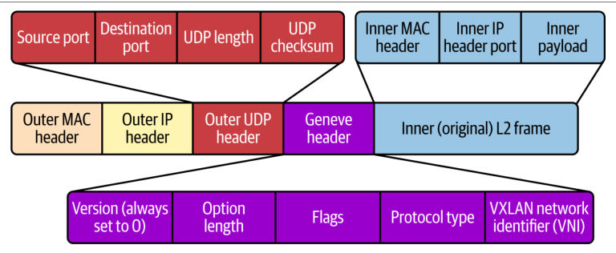
Figure 5-7. Geneve encapsulation
图 5-7 Geneve 封装
The main differences between VXLAN and Geneve are the ability to use TLVs and the UDP port: Cilium uses UDP port 6081 for Geneve and 8472 for VXLAN. Most of the Geneve header fields remain fixed in Cilium’s implementation:
VXLAN 和 Geneve 之间的主要区别在于使用 TLV 的能力和 UDP 端口：Cilium 对 Geneve 使用 UDP 端口 6081，对 VXLAN 使用 8472。Cilium 实现中，大多数 Geneve 头部字段保持固定：
- The version is always
0.版本始终为0。 - The flags are set to
0x00.标志位设为0x00。 - The protocol type is usually
0x6558, meaning Ethernet.协议类型通常为0x6558，表示以太网。
The other two fields are more interesting to examine. The option length field indicates whether any TLVs are present. In our example it is
0, meaning no TLVs are used. The TLV fields are populated when using Direct Server Return (covered in Chapter 8) with Geneve. As with VXLAN, the VNI field in Geneve is used by Cilium to carry the identity of the source pod. This allows the destination node to enforce network policy without having to perform a separate identity lookup. You can inspect the Geneve-encapsulated traffic using the sample capture file geneve.pcap in the /pcaps directory of the book’s GitHub repository. To view the packet flow directly on the command line, use this command:另外两个字段更值得关注。选项长度字段指示是否存在任何 TLV。在我们的例子中它是
与 VXLAN 一样，Geneve 中的 VNI 字段被 Cilium 用来携带源 Pod 的身份。这让目的节点能够在不进行单独身份查询的情况下强制实施网络策略。你可以使用本书 GitHub 仓库中 /pcaps 目录里的抓包样例文件 geneve.pcap 来查看 Geneve 封装的流量。要直接在命令行中查看包流，使用以下命令：
0，意味着没有使用 TLV。当配合 Geneve 使用直接服务器返回（第 8 章介绍）时会填充 TLV 字段。与 VXLAN 一样，Geneve 中的 VNI 字段被 Cilium 用来携带源 Pod 的身份。这让目的节点能够在不进行单独身份查询的情况下强制实施网络策略。你可以使用本书 GitHub 仓库中 /pcaps 目录里的抓包样例文件 geneve.pcap 来查看 Geneve 封装的流量。要直接在命令行中查看包流，使用以下命令：
代码（原文）
$ tcpdump -r geneve.pcap IP 192.168.10.5.49135 > 192.168.10.4.6081: Geneve, vni 0x382e: IP 10.0.0.125 > 10.0.2.75: ICMP echo request, length 64
The outer header (
192.168.10.5 > 192.168.10.4) represents node-to-node traffic sent over UDP port 6081. Inside the tunnel, the original pod-to-pod packet (10.0.0.125 > 10.0.2.75) is preserved unchanged. The VNI field in the Geneve header is set to 0x382e, which converts to the decimal value 14382. This value corresponds to the CiliumIdentity associated with the source pod. You can verify that this is the identity of the source pod with kubectl get外层头部（
192.168.10.5 > 192.168.10.4）表示通过 UDP 端口 6081 发送的节点间流量。在隧道内部，原始的 Pod 间数据包（10.0.0.125 > 10.0.2.75）原样保留。Geneve 头部中的 VNI 字段设为 0x382e，换算成十进制是 14382。这个值对应与源 Pod 关联的 CiliumIdentity。你可以用 kubectl get ciliumid 验证这是源 Pod 的身份代码（原文）
ciliumid: $ kubectl get ciliumid 14382 -o yaml apiVersion: cilium.io/v2 kind: CiliumIdentity metadata: [...] name: "14382" security-labels: k8s:app: pod-worker [...]
If you created a cloud-hosted cluster to test this feature, remember to delete it to avoid further costs.
如果你创建了云托管集群来测试这个特性，请记得删除它以避免后续费用。
Summary小结
Understanding how packets move between pods (both within the same node and across nodes) is fundamental to mastering Kubernetes networking with Cilium. In this chapter, we traced a packet from one pod to another, examined how Cilium leverages Linux primitives like veth pairs, and explored the role of Cilium in forwarding decisions. We also looked at the two main models of internode connectivity—native routing mode, where the underlying network must be able to route PodCIDRs, and encapsulation mode, where Cilium builds a tunnel mesh using VXLAN or Geneve to abstract the pod network from the infrastructure—and explained how each approach has trade-offs in terms of performance, simplicity, and control. In the next chapter, we’ll turn our attention to Kubernetes service networking: we’ll explore how it works and see how Cilium handles service discovery, load balancing, and proxying.
理解数据包如何在 Pod 之间移动（无论是同一节点内还是跨节点）是掌握基于 Cilium 的 Kubernetes 网络的基础。本章中，我们追踪了一个数据包从一个 Pod 到另一个 Pod 的路径，考察了 Cilium 如何利用 veth 对等 Linux 原语，并探讨了 Cilium 在转发决策中扮演的角色。我们还了解了跨节点连通性的两种主要模型——原生路由模式（底层网络必须能够路由 PodCIDR）和封装模式（Cilium 使用 VXLAN 或 Geneve 构建隧道网格，将 Pod 网络与基础设施解耦）——并说明了每种方式在性能、简单性和可控性方面的取舍。下一章我们将把注意力转向 Kubernetes 服务网络：探讨它的工作原理，并看看 Cilium 如何处理服务发现、负载均衡和代理。
第 6 章Service NetworkingService 网络
In Kubernetes, pod-to-pod communication enables direct connectivity between workloads—but this model alone does not scale well for dynamic, distributed applications. Instead, most real-world applications interact through services, which provide stable virtual IPs and load balancing across dynamic backend pods. This abstraction is critical for scalability, reliability, and operational simplicity in distributed systems. Service networking is at the core of how applications discover and reach each other in a cluster. It enables decoupling of workloads, supports horizontal scaling, and provides mechanisms for high availability. In this chapter, we will examine how Kubernetes manages service communication, the traditional role of
kube-proxy, and how Cilium enhances and ultimately replaces it with an eBPF-based datapath. Along the way, we will explore concepts such as headless services, session affinity, and external access through LoadBalancer services. You can find all the YAML manifests you will use in this chapter in the chapter06 directory of the book’s GitHub repository.在 Kubernetes 中，Pod 之间的通信实现了工作负载之间的直接连接——但仅靠这一模型难以适应动态、分布式的应用场景。相反，大多数真实世界应用都通过 Service 进行交互，Service 提供稳定的虚拟 IP 并在动态后端 Pod 之间实现负载均衡。这一抽象层对于分布式系统的可扩展性、可靠性和运维简便性至关重要。Service 网络是应用在集群中相互发现和访问的核心机制。它实现了工作负载之间的解耦，支持水平扩展，并提供了高可用保障。本章我们将探讨 Kubernetes 如何管理 Service 通信、
kube-proxy 的传统角色，以及 Cilium 如何通过基于 eBPF 的数据路径对其进行增强并最终替代。过程中，我们会接触无头 Service、会话亲和性以及通过 LoadBalancer Service 实现的外部访问等概念。本章使用的所有 YAML 清单文件都可以在本书 GitHub 仓库的 chapter06 目录中找到。Kubernetes Service RefresherKubernetes Service 回顾
To better understand some of the principles referred to in later sections of this book, a brief overview of Kubernetes services may be useful. This is not meant to be a comprehensive explanation, given that there are various books dedicated to this topic already (including O’Reilly’s Networking and Kubernetes and Container Networking). Instead, it serves as a concise refresher on the concepts most relevant to service communication. Kubernetes is built for ephemeral workloads. New pods are constantly being created, while old ones are removed. The IP addresses assigned to pods are not reserved: once a pod terminates, the cluster returns its IP to the pool and may reassign it to another pod. Because of this, relying solely on IPs for connectivity in Kubernetes is impractical. Instead, we typically use services and DNS to provide stable names and a single virtual IP for a set of ready pods. A service defines a consistent way for clients to reach a group of pods. It acts as a tiny virtual load balancer that targets pods with specific labels. Each service is assigned a unique virtual IP address (VIP) that exists only inside the cluster. Traffic sent to that VIP is load-balanced across pods that are marked as
Ready based on a readiness probe. Kubernetes supports several types of services for different use cases: ClusterIP (default) Provides an in-cluster VIP so that other pods can reach the service. NodePort Exposes the service on the same static port across all nodes, which allows basic external access. Chapter 10 will explain some of the limitations of NodePort and how to address them. LoadBalancer Provisions an external IP by integrating with a cloud provider’s load balancer or with Cilium’s LoadBalancer IPAM (LB IPAM). We will cover external reachability and announcements in Chapters 7 and 10. Headless Skips allocating a VIP. DNS lookups return the individual pod IPs directly, which works well with StatefulSets, where each pod keeps a stable identity. Inside the cluster, Kubernetes services rely on kube-proxy. Let’s take a look at this component and consider its role and limitations before walking through how Cilium addresses them.为了更好地理解本书后续章节中涉及的一些原理，简要回顾 Kubernetes Service 可能会有所帮助。这并非一次完整的讲解，因为已有多本专著讨论这一主题（包括 O'Reilly 出版的 Networking and Kubernetes 和 Container Networking）。本章的目的只是对与 Service 通信关系最密切的概念做一次简明回顾。Kubernetes 天生面向临时工作负载而设计。新的 Pod 不断创建，旧的不断消亡。分配给 Pod 的 IP 地址并不保留：一旦 Pod 终止，集群会将其 IP 地址归还地址池，并可能重新分配给另一个 Pod。正因如此，仅依赖 IP 进行连接在 Kubernetes 中并不现实。我们通常通过 Service 和 DNS 为一组就绪的 Pod 提供稳定的名称和单一的虚拟 IP。Service 定义了客户端访问一组 Pod 的一致方式，它就像一个小型的虚拟负载均衡器，根据特定的标签来定位 Pod。每个 Service 都会被分配一个唯一的虚拟 IP 地址（VIP），该地址仅在集群内部存在。发往该 VIP 的流量会根据就绪探针在标记为
Ready 的 Pod 之间进行负载均衡。Kubernetes 为不同场景支持多种类型的 Service：ClusterIP（默认） 在集群内提供 VIP，使其他 Pod 可以访问该 Service。NodePort 在所有节点上使用相同的静态端口暴露该 Service，从而提供基本的外部访问能力。第 10 章将解释 NodePort 的一些局限性以及如何解决这些问题。LoadBalancer 通过与云服务商的负载均衡器或 Cilium 的 LoadBalancer IPAM（LB IPAM）集成来分配外部 IP。我们将在第 7 章和第 10 章介绍外部可达性和通告。Headless 跳过分配 VIP。DNS 查询直接返回各个 Pod 的 IP 地址，这与 StatefulSet 配合使用效果良好，因为 StatefulSet 中每个 Pod 都有稳定的身份。在集群内部，Kubernetes Service 依赖 kube-proxy。我们先来了解一下这个组件，看看它的作用和局限性，然后再看看 Cilium 是如何解决这些问题的。kube-proxy Refresherkube-proxy 回顾
This component is deployed as a DaemonSet, so it runs on every node. Its job is to program the networking rules required to forward traffic from a service VIP to one of its backend pods. To do this,
kube-proxy watches for changes to services and their backends, recorded as Endpoints or EndpointSlices, and updates the node’s networking tables accordingly. When a packet is addressed to a service IP, the kernel applies one of these rules and performs destination network address translation (DNAT) to rewrite the destination address to a selected backend pod, as illustrated in Figure 6-1.该组件以 DaemonSet 形式部署，因此它运行在每个节点上。它的任务是编程所需的网络规则，将流量从 Service VIP 转发到其后端 Pod 之一。为此，
kube-proxy 会监听 Service 及其后端（以 Endpoint 或 EndpointSlice 形式记录）的变化，并相应更新节点上的网络表。当数据包的目标是 Service IP 时，内核会应用其中一条规则，执行目的地址转换（DNAT），将目的地址重写为选中的后端 Pod，如图 6-1 所示。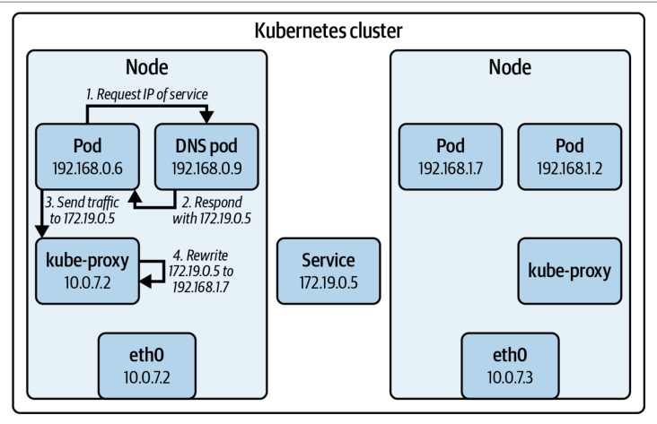
Figure 6-1. Kubernetes service networking
图 6-1 Kubernetes Service 网络
kube-proxy supports multiple modes for programming these rules, and each mode influences how load-balancing decisions are made. In iptables mode, packets are matched against large chains of NAT rules, with a random selection from the available endpoints. IPVS introduces a richer set of algorithms, such as round-robin and least connections. nftables provides a more modern alternative to iptables while offering similar functionality. Regardless of the backend, the outcome is the same: traffic sent to a single service IP is distributed across the set of healthy pods. For a long time, most clusters relied on the iptables backend. However, iptables was originally designed more than two decades ago for static firewalling, not for the highly dynamic nature of Kubernetes. Each time a pod is added or removed, the iptables rules must be rewritten, which can become extremely expensive at scale—a well-known KubeCon talk in 2017 described how updating iptables rules for 20,000 services could take as long as five hours. Even without large updates, every packet must traverse the iptables chains one rule at a time, which is an operation that grows linearly with the number of rules.1kube-proxy 支持多种模式来编程这些规则，每种模式都会影响负载均衡决策的方式。在 iptables 模式下，数据包需要与大量 NAT 规则链进行匹配，从可用端点中随机选择一个。IPVS 引入了更丰富的算法集，如轮询和最少连接。nftables 在提供类似功能的同时，是 iptables 更现代的替代方案。无论使用哪种后端，结果都是相同的：发往单一 Service IP 的流量会被分发到一组健康的 Pod 上。长期以来，大多数集群都依赖 iptables 后端。然而，iptables 最初是在二十多年前为静态防火墙设计的，并不适合 Kubernetes 这种高度动态的场景。每次 Pod 增加或删除，都必须重写 iptables 规则，在规模扩大时代价极高——2017 年 KubeCon 上一场著名的演讲讲述了为 20,000 个 Service 更新 iptables 规则耗时长达五小时的情况。即使没有大规模更新，每个数据包也必须逐条遍历 iptables 规则链，这种操作的耗时随规则数量线性增长。11In mathematics, this would be referred to as an algorithm of O(n) complexity.
1 用数学语言来说，这属于 O(n) 复杂度的算法。
To understand why
iptables does not scale well as a backend for kube-proxy, we can create a large number of services and observe how many rules get inserted into the kernel. Recall that kube-proxy installs NAT rules for every service and every backend endpoint. As the number of services grows, so does the size of the iptables chains. Let’s try it. First, we’ll deploy a kind cluster. We won’t use Cilium yet, but rather the built-in CNI for kind clusters, kindnet. We’ll also use the iptables-based kube-proxy (kindcluster-config-no-cilium.yaml):要理解为什么
iptables 作为 kube-proxy 的后端无法良好扩展，我们可以创建大量 Service，观察内核中插入了多少条规则。回忆一下，kube-proxy 会为每个 Service 和每个后端端点安装 NAT 规则。随着 Service 数量的增长，iptables 规则链的规模也在增长。让我们来试试。首先，部署一个 kind 集群。我们暂不使用 Cilium，而是使用 kind 集群内置的 CNI kindnet。我们还会使用基于 iptables 的 kube-proxy（kindcluster-config-no-cilium.yaml）：代码（原文）
kind: Cluster apiVersion: kind.x-k8s.io/v1alpha4 nodes: - role: control-plane - role: worker - role: worker networking: kubeProxyMode: iptables
Let’s start with a simple deployment (httpd-deployment.yaml) and service (httpdservice.yaml) for httpd. Once this service is deployed, you can check out the worker nodes and the raw
iptables rules yourself:我们先为 httpd 部署一个简单的 Deployment（httpd-deployment.yaml）和 Service（httpdservice.yaml）。部署完成后，你可以亲自查看 worker 节点和原始的
iptables 规则：代码（原文）
$ docker exec -it kind-worker iptables -t nat -L -n --line-numbers Chain KUBE-SERVICES (2 references) num target prot source destination comment 1 KUBE-SVC-* tcp 0.0.0.0/0 10.96.0.10 /* kube-dns:dns-tcp */ dpt:53 3 KUBE-SVC-*. tcp 0.0.0.0/0 10.96.1.252 /* httpd */ dpt:80 6 KUBE-NODEPORTS all 0.0.0.0/0 0.0.0.0/0 /* service nodeports */ dst-type LOCAL
You will observe that, even with a single service, multiple rules have been added to the NAT tables. Now let’s generate 100 services pointing to the httpd deployment, with this short
for loop:你会观察到，即使只有一个 Service，NAT 表中也已经添加了多条规则。现在，我们通过这条简短的
for 循环，生成 100 个指向 httpd Deployment 的 Service：代码（原文）
$ for i in {1..100}; do
kubectl expose deployment httpd --port=80 --name="httpd-$i"
done
service/httpd-1 exposed
service/httpd-2 exposed
[...]
service/httpd-99 exposed
service/httpd-100 exposedWe can count the total number of rules created using
grep:我们可以使用
grep 来统计创建的规则总数：代码（原文）
$ docker exec kind-worker iptables-save | grep KUBE-SEP | wc -l
This illustrates the problem with
iptables: every new service requires more rules, each rule must be evaluated linearly, and updating rulesets becomes increasingly expensive. This is one of the main reasons to consider replacing kube-proxy. Cilium’s implementation, which we will examine next, uses eBPF maps in the kernel—a far more efficient way to store and update service state.这说明了
iptables 的问题：每新增一个 Service 就需要更多规则，每条规则都必须线性评估，更新规则集的代价也越来越高。这就是考虑替换 kube-proxy 的主要原因之一。Cilium 的实现——我们接下来会看到——在内核中使用 eBPF 映射，这是一种存储和更新 Service 状态远为高效的方式。kube-proxy Replacementkube-proxy 替代
Cilium approaches service connectivity differently. In this section we’ll explore its eBPF-based
kube-proxy replacement, commonly referred to as KPR.Cilium 以不同的方式处理 Service 连接。本节我们将探索其基于 eBPF 的
kube-proxy 替代方案，通常称为 KPR。KPR is a highly customizable feature. It exposes a wide range of options that control how services are implemented in the datapath, including translation modes, load-balancing algorithms, traffic policies, and acceleration features. (The user experience is due to be simplified in future releases so that common configurations require fewer manual settings.) Covering every option in detail is beyond the scope of this book. In this chapter, we will focus on the most important features relevant to day-to-day use, while pointing you to later chapters for further information on advanced topics such as Direct Server Return, XDP acceleration, and Maglev load balancing. For full details, see the Cilium documentation.
KPR 是一个高度可定制的特性。它暴露了广泛的选项，用于控制 Service 在数据路径中的实现方式，包括转换模式、负载均衡算法、流量策略和加速特性。（未来版本将简化用户体验，使常见配置所需的手动设置更少。）详细介绍每个选项超出了本书的范围。在本章中，我们将聚焦于与日常使用相关的最重要特性，并在后续章节中提供关于直接服务器返回、XDP 加速和 Maglev 负载均衡等高级主题的进一步信息。完整细节请参阅 Cilium 文档。
When KPR is enabled, Cilium loads eBPF programs into the Linux kernel on every node. These programs attach to key networking interfaces, as described in Chapter 2, and intercept packets destined for a service. Instead of relying on long
iptables chains, the program performs a lookup in an eBPF map that stores the current set of backends for that service. It then selects one of the available pods according to the load-balancing policy, rewrites the destination address (using DNAT), and forwards the packet, as illustrated in Figure 6-2. Because hash table lookups and insertions are done by key instead of by matching against chains of rules, the lookup time2 stays the same regardless of how many services you have.当 KPR 启用时，Cilium 会在每个节点上将 eBPF 程序加载到 Linux 内核中。这些程序会附加到关键的网络接口上（如第 2 章所述），拦截发往 Service 的数据包。程序不再依赖冗长的
iptables 规则链，而是在存储该 Service 当前后端集合的 eBPF 映射中进行查找。然后根据负载均衡策略选择一个可用的 Pod，重写目的地址（使用 DNAT），并转发数据包，如图 6-2 所示。由于哈希表的查找和插入是按键值而非通过匹配规则链来执行的，无论有多少 Service，查找时间2 都保持不变。2In computer science, this would be known as O(1), or constant time complexity.
2 在计算机科学中，这称为 O(1)，即常数时间复杂度。
Figure 6-2. Cilium’s eBPF-based
kube-proxy replacement图 6-2 Cilium 基于 eBPF 的
kube-proxy 替代方案When Cilium is installed, even without the
kube-proxy replacement enabled, ClusterIP services are still implemented using eBPF.当 Cilium 安装后，即使未启用
kube-proxy 替代，ClusterIP Service 仍然使用 eBPF 来实现。Let’s demonstrate this in practice. Deploy a kind cluster, using the kind configuration (kind.yaml) without the built-in
kube-proxy:让我们在实践中演示这一点。使用 kind 配置（kind.yaml）部署一个 kind 集群，不使用内置的
kube-proxy：代码（原文）
networking: kubeProxyMode: "none"
Then, install Cilium in KPR mode. When using Helm, you’ll need to specify the Kubernetes API server IP and port (cilium-kpr-values.yaml):
然后，以 KPR 模式安装 Cilium。使用 Helm 时，需要指定 Kubernetes API 服务器的 IP 和端口（cilium-kpr-values.yaml）：
代码（原文）
kubeProxyReplacement: true k8sServiceHost: kind-control-plane k8sServicePort: 6443
Why? When
kube-proxy is in place, it handles service traffic toward Kubernetes services, including the Kubernetes API server itself. Pods can connect to kubernetes.default.svc, and kube-proxy will DNAT the service IP (usually 10.96.0.1 in kind) to the actual API server endpoint. But given that we deployed our cluster without kube-proxy, there’s no component to program the rules that let the Cilium agent and operator talk to the API server through the service IP. To avoid a chicken-and-egg problem, Cilium needs to know how to contact the API server directly, bypassing the service abstractions. That’s why you need to set k8sServiceHost and k8sServicePort in the Helm values when enabling KPR. When using kind, we can just use kind-control-plane, as that hostname is resolvable from the worker containers. One advantage of using the Cilium CLI in this instance is that it can detect the Kubernetes API server’s IP address and port automatically from the kubeconfig:为什么？当
kube-proxy 存在时，它会处理发往 Kubernetes Service 的流量，包括 Kubernetes API 服务器本身。Pod 可以连接到 kubernetes.default.svc，kube-proxy 会将该 Service IP（在 kind 中通常是 10.96.0.1）DNAT 到实际的 API 服务器端点。但由于我们在集群部署时没有使用 kube-proxy，就没有组件来编程让 Cilium Agent 和 Operator 通过 Service IP 与 API 服务器通信的规则。为了避免鸡生蛋、蛋生鸡的问题，Cilium 需要知道如何绕过 Service 抽象层直接与 API 服务器通信。这就是在启用 KPR 时需要在 Helm 值中设置 k8sServiceHost 和 k8sServicePort 的原因。使用 kind 时，我们可以直接使用 kind-control-plane，因为该主机名可在 worker 容器中解析。在这种情况下使用 Cilium CLI 的一个优势是，它可以自动从 kubeconfig 检测 Kubernetes API 服务器的 IP 地址和端口：代码（原文）
$ cilium install --set kubeProxyReplacement=true Auto-detected Kubernetes kind: kind Using Cilium version 1.18.2 Auto-detected cluster name: kind-kind Detecting real Kubernetes API server addr and port on Kind Auto-detected kube-proxy has not been installed Cilium will fully replace all functionalities of kube-proxy
Let’s first verify that KPR was enabled by checking the detailed configuration status with the Cilium agent’s
cilium-dbg binary (introduced in Chapter 2):让我们首先通过 Cilium Agent 的
cilium-dbg 二进制文件（第 2 章介绍过）检查详细的配置状态，以验证 KPR 是否已启用：代码（原文）
$ kubectl -n kube-system exec ds/cilium -- cilium-dbg status --verbose [...] KubeProxyReplacement Details: Status: True Socket LB: Enabled Socket LB Tracing: Enabled Socket LB Coverage: Full Devices: eth0 172.18.0.3 [...] (Direct Routing) Mode: SNAT Backend Selection: Random Session Affinity: Enabled Graceful Termination: Enabled NAT46/64 Support: Disabled XDP Acceleration: Disabled Services: - ClusterIP: Enabled - NodePort: Enabled (Range: 30000-32767) - LoadBalancer: Enabled - externalIPs: Enabled - HostPort: Enabled Annotations: - service.cilium.io/node - service.cilium.io/src-ranges-policy - service.cilium.io/type [...]
This confirms that KPR is active. This shows the network devices where Cilium has attached its eBPF programs, with (direct) native routing enabled on
eth0. Note that KPR works for both native and encapsulation routing modes. The translation mode is SNAT, which means incoming packets are source-NATed with the IPs of the nodes. We will see an alternative translation mode (DSR) in Chapter 8. Backend selection uses random choice by default. For more consistent load balancing across nodes, Cilium also supports Maglev hashing, which we cover in Chapter 8. Session affinity is enabled. This ensures that packets from the same client IP can be steered to the same backend pod. We discuss session affinity later in this chapter. Here we can see the service types that are implemented by KPR: ClusterIP, NodePort, LoadBalancer, externalIPs, and HostPort.这证实了 KPR 处于激活状态。输出显示了 Cilium 附加 eBPF 程序的网络设备，其中
eth0 上启用了（直接）原生路由。注意，KPR 同时适用于原生和封装路由模式。转换模式为 SNAT，这意味着传入数据包会使用节点的 IP 进行源地址转换。我们将在第 8 章看到另一种转换模式（DSR）。后端选择默认使用随机选择。为了在节点间实现更一致的负载均衡，Cilium 还支持 Maglev 哈希，我们将在第 8 章介绍。会话亲和性已启用，这确保来自同一客户端 IP 的数据包可以被导向同一个后端 Pod。本章稍后将讨论会话亲和性。这里我们可以看到 KPR 实现的 Service 类型：ClusterIP、NodePort、LoadBalancer、externalIPs 和 HostPort。Throughout this book, you’ll notice that some
cilium-dbg commands are run against the entire Cilium DaemonSet (e.g., ds/cilium), while others target a specific Cilium agent pod. This is intentional. We use the DaemonSet form when querying clusterwide or uniform information (configuration, enabled features, or service maps), because it doesn’t matter which instance we land on. In contrast, when inspecting node-local state (like tunnel maps or health checks), we explicitly target a specific Cilium pod associated with the node of interest. Running a command against the DaemonSet causes Kubernetes to pick one of the available Cilium pods at random.在整本书中，你会注意到有些
cilium-dbg 命令是针对整个 Cilium DaemonSet（例如 ds/cilium）运行的，而另一些则针对特定的 Cilium Agent Pod。这是有意为之。当查询集群范围的或统一的信息（配置、已启用的特性或 Service 映射）时，我们使用 DaemonSet 形式，因为落在哪个实例上并不重要。相反，当检查节点本地状态（如隧道映射或健康检查）时，我们显式地针对与感兴趣的节点关联的特定 Cilium Pod 运行。针对 DaemonSet 运行命令会导致 Kubernetes 从可用的 Cilium Pod 中随机选择一个。Next, we’ll create the same httpd deployment (httpd-deployment.yaml) and service (httpd-service.yaml) we used in the previous section. Take note of the pod IPs, as well as the service IP:
接下来，我们创建与上一节相同的 httpd Deployment（httpd-deployment.yaml）和 Service（httpd-service.yaml）。注意记下 Pod 的 IP 地址以及 Service IP：
代码（原文）
$ kubectl get pods -o wide NAME READY STATUS IP NODE httpd-77b5fcff59-k6svw 1/1 Running 10.0.1.199 kind-worker2 httpd-77b5fcff59-vfnxt 1/1 Running 10.0.2.208 kind-worker $ kubectl get service NAME TYPE CLUSTER-IP EXTERNAL-IP PORT(S) AGE httpd ClusterIP 10.96.45.144 <none> 80/TCP 17s
We can check that there are no
iptables rules created to handle traffic for this service by running the same command we used earlier:我们可以通过运行之前使用过的相同命令来检查是否没有创建任何
iptables 规则来处理该 Service 的流量：代码（原文）
$ docker exec kind-worker iptables-save | grep KUBE-SEP | wc -l
Instead, eBPF entries are populated with the healthy (active) backends. We can use
cilium-dbg to inspect the current services and their backends:取而代之的是，eBPF 条目会填充健康（活跃）的后端。我们可以使用
cilium-dbg 来检查当前的 Service 及其后端：代码（原文）
$ kubectl exec -n kube-system -it ds/cilium -- cilium-dbg service list ID Frontend Service Type Backend 6 10.96.45.144:80/TCP ClusterIP 1 => 10.0.1.199:80/TCP (active) 2 => 10.0.2.208:80/TCP (active
Now, let’s launch a client pod (netshoot-client.yaml) and, from its shell, send traffic to the service IP (
10.96.45.144) and immediately inspect /proc/<pid>/net/tcp:现在，让我们启动一个客户端 Pod（netshoot-client.yaml），从它的 shell 向 Service IP（
10.96.45.144）发送流量，并立即检查 /proc/<pid>/net/tcp：代码（原文）
$ kubectl exec -it netshoot-client -- bash netshoot-client:~# curl 10.96.45.144 && cat "/proc/$$/net/tcp" <html><body><h1>It works!</h1></body></html> sl local_address rem_address st 0: DB01000A:D316 D002000A:0050 06
When we run
curl 10.96.45.144, the request goes to the service we just created. The HTML response confirms that the request successfully reached one of the httpd pods. Traffic was forwarded appropriately to the right backend, even though there are no matching iptables rules. On Linux, every process has a directory under /proc/<pid>/ (where <pid> is the process ID) that contains details about that process. The command cat "/proc/$$/net/tcp" lists the TCP connections for the current process ($$ expands to the current process ID). In that file, the rem_address field shows the remote IP address. Instead of being displayed in a human-readable format, the address appears in hexadecimal. For example, the value 0xD002000A corresponds to the IPv4 address D0.02.00.0A. Splitting it into byte pairs gives us the four octets of the address, and converting them to decimal produces 208.2.0.10. Because the kernel stores addresses in little-endian order (least significant byte first), we reverse the sequence to obtain the real address: 10.0.2.208. This IP belongs to one of the httpd pods. This confirms what is happening under the hood. Although we connected to the service IP 10.96.45.144, the eBPF program in the kernel rewrote the destination early in the networking stack, allowing us to observe the pod’s actual IP as the backend.当我们运行
curl 10.96.45.144 时，请求会发往我们刚创建的 Service。HTML 响应确认请求成功到达了其中一个 httpd Pod。即使没有匹配的 iptables 规则，流量也正确地转发到了对应的后端。在 Linux 中，每个进程在 /proc/<pid>/（其中 <pid> 是进程 ID）下都有一个目录，包含该进程的详细信息。命令 cat \"/proc/$$/net/tcp\" 列出当前进程的 TCP 连接（$$ 会扩展为当前进程 ID）。在该文件中，rem_address 字段显示的是远程 IP 地址。该地址不是以人类可读的格式显示，而是以十六进制形式出现。例如，值 0xD002000A 对应 IPv4 地址 D0.02.00.0A。按字节对拆分可以得到地址的四个八位组，转换为十进制后得到 208.2.0.10。由于内核以小端序存储地址（最低有效字节在前），我们需要反转序列才能得到真实的地址：10.0.2.208。该 IP 属于其中一个 httpd Pod。这证实了底层正在发生的事情。虽然我们连接的是 Service IP 10.96.45.144，但内核中的 eBPF 程序在网络栈的早期就重写了目的地址，使我们能够观察到作为后端的 Pod 的实际 IP。If we repeat the request, we may see another value, such as
0xC701000A, which translates to 10.0.1.199—the address of the second httpd pod:如果我们重复该请求，可能会看到另一个值，比如
0xC701000A，它转换后是 10.0.1.199——第二个 httpd Pod 的地址：代码（原文）
netshoot-client:~# curl 10.96.45.144 && cat "/proc/$$/net/tcp" <html><body><h1>It works!</h1></body></html> sl local_address rem_address st 0: DB01000A:ED76 D002000A:0050 06 1: DB01000A:85B0 C701000A:0050 06
The value
0x0050 is the port number in hexadecimal. Converting 0x0050 to decimal gives us 80, which is the default port for HTTP.值
0x0050 是端口号的十六进制表示。将 0x0050 转换为十进制得到 80，这是 HTTP 的默认端口。Finally, let’s repeat the service scaling test and verify there are still no
iptables rules being created:最后，让我们重复 Service 扩展测试，并验证仍然没有创建任何
iptables 规则：代码（原文）
$ for i in {1..100}; do
kubectl expose deployment httpd --port=80 --name="httpd-$i"
done
service/httpd-1 exposed
service/httpd-2 exposed
[...]
service/httpd-99 exposed
service/httpd-100 exposed
$ docker exec kind-worker iptables-save | grep KUBE-SEP | wc -lAgent Availability and Datapath ResiliencyAgent 可用性与数据路径弹性
Cilium separates control-plane work from datapath forwarding. As you saw in Chapter 2, the Cilium agent watches the Kubernetes API server and pushes updates about changes to pods and their readiness. It computes the state and writes service and backend information into eBPF maps. eBPF programs in the Linux kernel read those maps to steer packets to pod backends. The programs themselves are stateless; they do not have any built-in knowledge of pods but rely entirely on the data maintained by the agent. This architecture provides a significant advantage: the datapath itself continues to operate as long as the kernel state is intact. This design means that service connectivity does not immediately break if the agent is restarted or temporarily unavailable. This resiliency is important because rolling upgrades, node restarts, and other operational events should not disrupt applications. Since the eBPF programs and maps live in the kernel, packets continue to be forwarded while the agent restarts. In fact, service connectivity is preserved even if the Cilium agent crashes or is temporarily removed. To demonstrate this, we will simulate the removal of the agent by modifying its DaemonSet:
Cilium 将控制平面工作与数据路径转发分离。如第 2 章所述，Cilium Agent 监听 Kubernetes API 服务器，并推送关于 Pod 变化及其就绪状态的更新。它计算状态，并将 Service 和后端信息写入 eBPF 映射。Linux 内核中的 eBPF 程序读取这些映射，将数据包导向 Pod 后端。这些程序本身是无状态的；它们不具备关于 Pod 的内置知识，而是完全依赖 Agent 维护的数据。这一架构带来了显著优势：只要内核状态完好，数据路径本身就能持续运行。这种设计意味着，即使 Agent 被重启或暂时不可用，Service 连接也不会立即中断。这种弹性很重要，因为滚动升级、节点重启和其他运维事件不应影响应用。由于 eBPF 程序和映射存在于内核中，在 Agent 重启期间数据包仍会持续转发。事实上，即使 Cilium Agent 崩溃或被临时移除，Service 连接仍然可以保留。为了演示这一点，我们将通过修改其 DaemonSet 来模拟 Agent 的移除：
代码（原文）
$ kubectl -n kube-system patch ds cilium --type=merge \
-p '{"spec":{"template":{"spec":{"nodeSelector":{"foo":"bar"}}}}}'
daemonset.apps/cilium patchedSetting the DaemonSet’s
nodeSelector to an unused label removes all Cilium agent pods from the cluster:将 DaemonSet 的
nodeSelector 设置为一个未使用的标签，会从集群中移除所有 Cilium Agent Pod：代码（原文）
$ kubectl get daemonset -n kube-system cilium NAME DESIRED READY NODE SELECTOR cilium 0 0 foo=bar,kubernetes.io/os=linux
Despite the Cilium agent being absent, however, traffic is still able to reach the service:
然而，尽管 Cilium Agent 已经消失，流量仍然能够到达 Service：
代码（原文）
$ kubectl exec -it netshoot-client -- curl httpd <html><body><h1>It works!</h1></body></html>
As you can see, the datapath continues forwarding packets even though the controlplane component has disappeared. However, the design does have a limitation—while the agent is unavailable, eBPF maps are not updated to reflect changes in the cluster. If a pod on a remote node restarts during this time, the map still contains its IP address, and the datapath continues to forward traffic to it:
如你所见，即使控制平面组件已经消失，数据路径仍在继续转发数据包。不过，这种设计确实存在一个局限——在 Agent 不可用期间，eBPF 映射不会更新以反映集群中的变化。如果远程节点上的某个 Pod 在此期间重启，映射中仍然包含它的 IP 地址，数据路径会继续向它转发流量：
代码（原文）
$ kubectl delete pod httpd-77b5fcff59-vfnxt pod "httpd-77b5fcff59-vfnxt" deleted $ curl -m 2 10.96.45.144 curl: (28) Connection timed out after 2004 milliseconds
The timeout occurs because the datapath is trying to send traffic to the failed backend. Only when the agent is brought back online (by applying the correct label to the DaemonSet’s node selector) are the maps reconciled and stale entries removed:
超时的发生是因为数据路径试图向已经失败的后端发送流量。只有当 Agent 恢复上线（通过向 DaemonSet 的节点选择器应用正确的标签）后，映射才会重新同步并清除过期条目：
代码（原文）
$ kubectl -n kube-system patch ds cilium --type=json \
-p='[{"op":"remove","path":"/spec/template/spec/nodeSelector/foo"}]'
daemonset.apps/cilium patched
$ kubectl get ds -n kube-system cilium
NAME DESIRED READY NODE SELECTOR
cilium 3 3 kubernetes.io/os=linuxNow everything is working as expected again, and all the healthy backends are listed for our service:
现在一切又恢复正常，我们的 Service 中列出了所有健康的后端：
代码（原文）
$ kubectl get pods -o wide NAME READY IP httpd-7ffb6c7dd7-8lxjg 1/1 10.244.1.233 httpd-7ffb6c7dd7-m65rg 1/1 10.244.1.183 httpd-7ffb6c7dd7-vj6r8 1/1 10.244.2.112 $ kubectl exec -n kube-system ds/cilium -- cilium-dbg service list ID Frontend Service Type Backend 6 10.96.130.157:80/TCP ClusterIP 1 => 10.244.1.233:80/TCP 2 => 10.244.1.183:80/TCP 3 => 10.244.2.112:80/TCP
This behavior highlights one of Cilium KPR’s design principles: the data plane is independent of the control plane. In summary, the datapath continues to forward traffic without the Cilium agent, giving operators resiliency during upgrades or restarts. But until the agent resumes, eBPF maps remain stale, which can lead to timeouts if backends fail. Minimizing agent downtime is therefore essential to maintain both connectivity and accuracy.
这个行为凸显了 Cilium KPR 的一条设计原则：数据平面独立于控制平面。总结一下，数据路径在没有 Cilium Agent 的情况下继续转发流量，为运维人员在升级或重启期间提供了弹性。但在 Agent 恢复之前，eBPF 映射会保持过期状态，如果后端失败可能会导致超时。因此，最小化 Agent 停机时间对于同时保持连接性和准确性至关重要。
KPR Service Behavior SupportKPR 的 Service 行为支持
So far we have seen how Cilium replaces
kube-proxy, how it handles service load balancing at scale without the iptables burden, and how it continues to operate even if the agent is temporarily unavailable. The next question is what this means for the behaviors that users expect from services. Kubernetes supports a variety of options that influence how traffic is routed, including session affinity, external and internal traffic policies, and NodePort and LoadBalancer services. As you’ll see here, Cilium’s kube-proxy replacement implements all of these features, so users can rely on the same semantics that kube-proxy has while also gaining the efficiency of eBPF in the datapath.到目前为止，我们已经看到 Cilium 如何替代
kube-proxy、如何在没有 iptables 负担的情况下处理大规模 Service 负载均衡，以及即使 Agent 暂时不可用时如何继续运行。接下来的问题是，这对用户期望从 Service 获得的行为意味着什么。Kubernetes 支持多种影响流量路由的选项，包括会话亲和性、外部和内部流量策略，以及 NodePort 和 LoadBalancer Service。正如你将在这里看到的，Cilium 的 kube-proxy 替代实现了所有这些特性，因此用户可以依赖 kube-proxy 所具备的相同语义，同时还能享受到 eBPF 在数据路径中的效率。Session Affinity会话亲和性
Services managed by Cilium’s KPR support session affinity, or sticky sessions. By default, when a client sends multiple requests to a service, the requests may be distributed across different pods. With session affinity enabled, the same client consistently reaches the same pod for the duration of the session. This behavior can be useful for applications that require consistent routing to a single pod, such as when storing in-memory state or maintaining a shopping cart. However, sticky sessions should be used sparingly. In most cases it is better to design applications so that they do not depend on affinity, since it can skew load distribution and reduce resiliency.
Cilium 的 KPR 管理的 Service 支持 会话亲和性，或称 粘性会话。默认情况下，当客户端向 Service 发送多个请求时，这些请求可能会被分发到不同的 Pod。启用会话亲和性后，同一客户端在整个会话期间会稳定地访问同一个 Pod。这种行为对于需要稳定路由到单个 Pod 的应用（例如存储内存状态或维护购物车）很有用。不过，粘性会话应当谨慎使用。在大多数情况下，更好的做法是设计不依赖亲和性的应用，因为它可能导致负载分布不均衡并降低弹性。
Sticky sessions can provide short-term relief for applications that expect stateful behavior, but they are best considered a workaround for workloads that are not cloud native. Wherever possible, refactor applications to avoid this dependency and allow requests to be load-balanced freely. To demonstrate how sticky sessions work, let’s create a simple deployment and service (affinity-deployment.yaml) in our KPR-enabled cluster. The backend pods will reply to the client with its own hostname, so we’ll know which pod serves each request and if the same one replies as we make multiple connections. We’ll use the client pod we deployed in the previous section and, from its shell, make a couple of requests to the
podinfo service:粘性会话可以为期望有状态行为的应用提供短期缓解，但它们最好被视为非云原生工作负载的变通方案。尽可能重构应用以避免这种依赖，让请求可以自由负载均衡。为了演示粘性会话的工作方式，让我们在启用 KPR 的集群中创建一个简单的 Deployment 和 Service（affinity-deployment.yaml）。后端 Pod 会用自己的主机名回复客户端，这样我们就能知道每个请求由哪个 Pod 服务，以及当我们多次连接时是否由同一个 Pod 回复。我们将使用上一节中部署的客户端 Pod，从它的 shell 向
podinfo Service 发起几次请求：代码（原文）
$ kubectl exec -it netshoot-client -- bash
netshoot-client:~# curl podinfo:9898
{ "hostname": "podinfo-849bfb5c8d-mp8l7" }
netshoot-client:~# curl podinfo:9898
{ "hostname": "podinfo-849bfb5c8d-bk452" }As shown here, the hostname in the response changes depending on which
podinfo instance serves the request. By enabling sticky sessions, we can ensure the client reaches the same pod for subsequent requests. To do this, we’ll use the sessionAffinity field in the service specification. There are only two possible values: None (the default) Requests from the same client can be distributed across different pods.如这里所示，响应中的主机名会根据是哪个
podinfo 实例服务请求而变化。通过启用粘性会话，我们可以确保客户端的后续请求始终到达同一个 Pod。为此，我们将在 Service 规格中使用 sessionAffinity 字段。它只有两个可能的值：None（默认值） 来自同一客户端的请求可以分发到不同的 Pod。代码（原文）
ClientIP
Requests from the same client IP are consistently directed to the same pod. Let’s update the service specification so it looks like this:
来自同一客户端 IP 的请求会稳定地导向同一个 Pod。让我们更新 Service 规格，使其如下所示：
代码（原文）
apiVersion: v1 kind: Service metadata: name: podinfo spec: sessionAffinity: ClientIP selector: app.kubernetes.io/name: podinfo ports: - port: 9898
Now, let’s check again what happens when we make multiple requests from our client pod:
现在，让我们再次检查从客户端 Pod 发起多次请求时会发生什么：
代码（原文）
netshoot-client:~# curl podinfo:9898
{ "hostname": "podinfo-849bfb5c8d-4v8sc", ... }
netshoot-client:~# curl podinfo:9898
{ "hostname": "podinfo-849bfb5c8d-4v8sc", ... }This time the hostname remains consistent across requests, indicating that we are always reaching the same pod. As this simple example shows, sticky sessions provide a way to keep traffic from a client directed to the same pod, which can help applications that rely on in-memory state. Be sure to use them only when necessary, though, since they reduce loadbalancing flexibility and resiliency.
这次，主机名在所有请求中保持一致，表明我们始终访问同一个 Pod。正如这个简单示例所示，粘性会话提供了一种保持客户端流量指向同一个 Pod 的方式，这可以帮助依赖内存状态的应用。不过务必只在必要时使用，因为它降低了负载均衡的灵活性和弹性。
Traffic Policies流量策略
As mentioned previously, KPR supports both of the standard Kubernetes traffic management policies:
externalTrafficPolicy and internalTrafficPolicy. Let’s briefly explore each of them.如前所述，KPR 支持 Kubernetes 的两种标准流量管理策略：
externalTrafficPolicy 和 internalTrafficPolicy。让我们简要探讨一下它们各自的作用。internalTrafficPolicy internalTrafficPolicy
By default, services use a cluster-wide internal traffic policy that distributes traffic randomly to all ready endpoints across the cluster (Figure 6-3).
默认情况下，Service 使用集群范围的内部流量策略，将流量随机分发到整个集群中的所有就绪端点（图 6-3）。
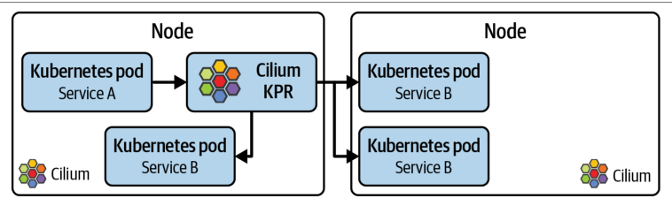
Figure 6-3. Cluster-wide internal traffic policy
图 6-3 集群范围的内部流量策略
When you set
internalTrafficPolicy to Local, however, Cilium only forwards internal traffic to endpoints that are on the same node (Figure 6-4).然而，当你将
internalTrafficPolicy 设置为 Local 时，Cilium 只会将内部流量转发到同一节点上的端点（图 6-4）。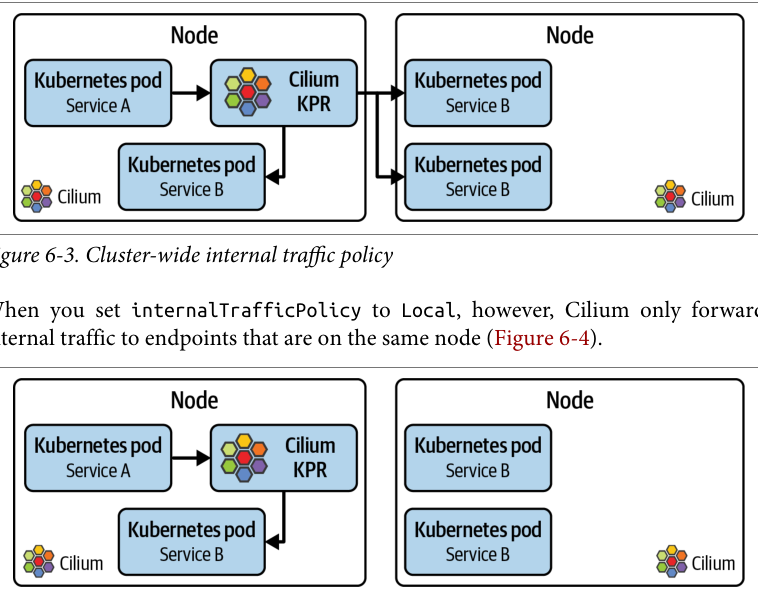
Figure 6-4. Local internal traffic policy
图 6-4 本地内部流量策略
This option is useful for cases where locality matters, such as when you want to direct traffic to a node-local logging daemon or metrics agent, and for avoiding the latency or cross-node transfer costs of sending traffic elsewhere. Cilium itself leverages this feature for Hubble’s
hubble-peer service, which uses node-local routing for observability traffic.这个选项对于位置性很重要的场景很有用，例如你希望将流量导向节点本地的日志守护进程或指标代理，以及避免将流量发送到其他地方带来的延迟或跨节点传输成本。Cilium 本身就在 Hubble 的
hubble-peer Service 中利用了这一特性，该 Service 使用节点本地路由来处理可观测性流量。If a node has no local endpoints for a service configured with
internalTrafficPolicy: Local, pods on that node will see the service as having no backends, even if endpoints exist on other nodes.如果一个节点上没有为配置了
internalTrafficPolicy: Local 的 Service 提供本地端点，那么该节点上的 Pod 会认为该 Service 没有后端，即使其他节点上存在端点。We’ll cover more traffic engineering features in Chapter 8.
我们将在第 8 章介绍更多流量工程特性。
externalTrafficPolicy externalTrafficPolicy
The external traffic policy controls how traffic that originates from outside the cluster is forwarded. It’s used for external-facing services like NodePort and LoadBalancer services (discussed in the following section). By default,
externalTrafficPolicy (like internalTrafficPolicy) is set to Cluster. In this mode, any node that receives a connection can forward it to any ready backend in the cluster. This maximizes availability but comes with two caveats: it replaces the client source IP with the inbound node’s Cilium internal IP (in other words, the client IP is not preserved), and it might add an additional hop as traffic won’t necessarily enter the node closest to the backend. Figure 6-5 illustrates this: even if service-A only has one backend (on Node-1), both nodes will forward any traffic they receive for this service to that backend. For traffic entering via Node-2, the source IP will be changed to Node-2’s.外部流量策略控制来自集群外部的流量如何转发。它用于面向外部的 Service，如 NodePort 和 LoadBalancer Service（在下一节讨论）。默认情况下，
externalTrafficPolicy（像 internalTrafficPolicy 一样）被设置为 Cluster。在这种模式下，任何接收到连接的节点都可以将其转发到集群中的任何就绪后端。这最大化了可用性，但有两个问题：它会用入站节点的 Cilium 内部 IP 替换客户端源 IP（换句话说，客户端 IP 不会被保留），而且可能会增加额外的一跳，因为流量不一定会从离后端最近的节点进入。图 6-5 说明了这一点：即使 service-A 只有一个后端（位于 Node-1 上），两个节点也都会将它们接收到的针对该 Service 的流量转发到那个后端。对于通过 Node-2 进入的流量，源 IP 会被改为 Node-2 的 IP。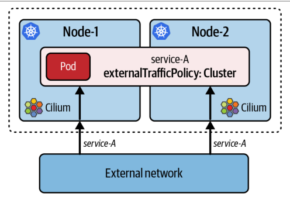
Figure 6-5. Cluster-wide external traffic policy
图 6-5 集群范围的外部流量策略
When
externalTrafficPolicy is set to Local, on the other hand, nodes will only forward the incoming traffic to local backends (Figure 6-6).另一方面，当
externalTrafficPolicy 被设置为 Local 时，节点只会将传入流量转发到本地后端（图 6-6）。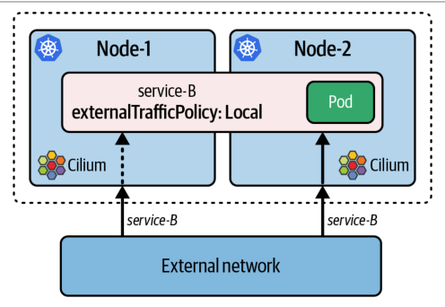
Figure 6-6.
Local external traffic policy图 6-6
Local 外部流量策略This preserves the original client IP. Just be aware that, if the node has no local backends, it will drop external traffic for that service, even if other nodes have healthy backends.
这样可以保留原始客户端 IP。但要注意，如果节点没有本地后端，它会丢弃该 Service 的外部流量，即使其他节点有健康的后端也是如此。
The external traffic policy on LoadBalancer services also impacts how BGP announcement functions, if used with Cilium’s LoadBalancer IP address management (LB IPAM) and BGP features. IP addresses for such services will be announced from all nodes if the policy is set to
Cluster, but only from nodes with backends if it’s set to Local. See Chapter 10 for more details on BGP announcement of services in Cilium.LoadBalancer Service 上的外部流量策略也会影响 BGP 通告的行为（如果与 Cilium 的 LoadBalancer IP 地址管理（LB IPAM）和 BGP 特性配合使用）。如果策略设置为
Cluster，此类 Service 的 IP 地址会从所有节点通告；但如果设置为 Local，则只会从有后端的节点通告。关于 Cilium 中 Service 的 BGP 通告的更多细节，请参见第 10 章。KPR fully supports both
internalTrafficPolicy and externalTrafficPolicy, so users can rely on the same semantics as with kube-proxy. In Chapter 8, we’ll look at alternatives such as Direct Server Return (DSR) that are useful for cases where client IP preservation matters but you also want to avoid source translation side effects. This brings us to another common requirement: exposing services outside the cluster.KPR 完全支持
internalTrafficPolicy 和 externalTrafficPolicy，因此用户可以依赖与 kube-proxy 相同的语义。在第 8 章中，我们将介绍直接服务器返回（DSR）等替代方案，它们适用于需要保留客户端 IP 但又希望避免源地址转换副作用的场景。这引出了另一个常见需求：将 Service 暴露到集群外部。External-Facing Services面向外部的服务
Services have different types for different purposes. By default, a service is of type ClusterIP. This means it provides an in-cluster virtual IP and acts as an internal load balancer. However, a ClusterIP service is not accessible from outside the cluster. When workloads outside the cluster must access an application running inside Kubernetes, two other types of services can be used. The first is a service of type NodePort. A NodePort service exposes a port on every node in the cluster. Traffic sent to that port is forwarded to the application, but while the port number is the same across nodes, each node has a different IP address. Clients must therefore be aware of all node IPs and handle load balancing themselves, or an external load balancer application must be in front of the nodes. A service of type LoadBalancer addresses this limitation by providing a single external IP. In cloud environments such as GKE, EKS, or AKS, this process is handled automatically by the cloud controller manager. When a LoadBalancer service is created, the controller provisions a cloud-specific load balancer instance, points it at the cluster nodes, and assigns the external IP to the Kubernetes service object. The situation is different in environments without a cloud controller manager. A LoadBalancer service can still be created, but no external IP will be assigned to it. This is where Cilium’s LoadBalancer IP address management comes in. Enabling LB IPAM allows Cilium to assign IP addresses directly to LoadBalancer services, making them externally reachable even in on-premises or bare-metal environments. These IPs can then be announced using Cilium’s BGP or layer 2 announcement features, which we will cover in Chapter 10.
服务根据用途分为不同类型。默认情况下，服务类型为 ClusterIP，这意味着它会提供一个集群内虚拟 IP，并作为内部负载均衡器使用。不过，ClusterIP 服务无法从集群外部访问。当集群外的工作负载需要访问运行在 Kubernetes 内部的应用时，可以使用另外两种类型的服务。第一种是 NodePort 类型服务。NodePort 服务会在集群中的每个节点上暴露一个端口。发送到该端口的流量会被转发到应用上；虽然所有节点上的端口号相同，但每个节点拥有不同的 IP 地址。因此客户端必须知悉所有节点 IP 并自行处理负载均衡，或者在节点前置外部负载均衡器应用。LoadBalancer 类型服务通过提供单一外部 IP 解决了这一限制。在 GKE、EKS 或 AKS 等云环境中，这一过程由云控制器管理器自动处理。创建 LoadBalancer 服务时，控制器会置备云厂商特定的负载均衡器实例，将其指向集群节点，并把外部 IP 分配给 Kubernetes Service 对象。在没有云控制器管理器的环境中情况则不同：LoadBalancer 服务仍可创建，但不会为其分配任何外部 IP。这正是 Cilium 的 LoadBalancer IP 地址管理（LB IPAM）发挥作用的地方。启用 LB IPAM 后，Cilium 可以直接为 LoadBalancer 服务分配 IP 地址，即便在本地或裸金属环境下也能让它们从外部可达。这些 IP 随后可以通过 Cilium 的 BGP 或二层通告功能进行通告，我们将在第 10 章介绍这部分内容。
This section focuses on assigning external IP addresses to LoadBalancer services. IP address management for pods was covered in Chapter 4. ClusterIP services are given IP addresses by Kubernetes and are not affected by Cilium’s LB IPAM.
本节重点介绍如何为 LoadBalancer 服务分配外部 IP 地址。Pod 的 IP 地址管理已在第 4 章介绍过。ClusterIP 服务的 IP 由 Kubernetes 分配，不受 Cilium LB IPAM 的影响。
This feature is always enabled in Cilium but is dormant until the first IP pool is configured. Let’s test it (you can find the files used here in the /chapter06/lb-ipam directory of the book’s GitHub repository). If you created a cluster with Cilium earlier, you can reuse it for this example. Otherwise, create a kind cluster using the generic configuration (kind.yaml) and install Cilium as covered previously. Kind does not come with a cloud controller manager; instead, Cilium will be the system assigning the IP to our external LoadBalancer service. Create a simple service of type LoadBalancer (httpd-lb-service.yaml). Once the service is created, it will show a pending external IP:
该特性在 Cilium 中始终启用，但在配置第一个 IP 池之前处于休眠状态。我们来测试一下（这里用到的文件可以在本书 GitHub 仓库的 /chapter06/lb-ipam 目录下找到）。如果你之前已经用 Cilium 创建过集群，可以复用它来做这个示例；否则，使用通用配置（kind.yaml）创建一个 kind 集群，并按照之前的方法安装 Cilium。Kind 自带的云控制器管理器不可用；相反，Cilium 将负责为我们的外部 LoadBalancer 服务分配 IP。创建一个简单的 LoadBalancer 类型服务（httpd-lb-service.yaml）。服务创建完成后，它会显示一个待分配的外部 IP：
代码（原文）
$ kubectl get svc httpd NAME TYPE CLUSTER-IP EXTERNAL-IP PORT(S) AGE httpd LoadBalancer 10.96.72.137 <pending> 80:31478/TCP 20s
No matter how long we wait, no external IP will be assigned. To get an IP assigned, we must create a CiliumLoadBalancerIPPool object (lb-pool.yaml):
无论我们等待多久，都不会分配到外部 IP。要获取 IP，我们必须创建一个 CiliumLoadBalancerIPPool 对象（lb-pool.yaml）：
代码（原文）
apiVersion: "cilium.io/v2" kind: CiliumLoadBalancerIPPool metadata: name: "lb-pool" spec: blocks: - cidr: "172.16.0.0/24"
Once this object is created, the Cilium operator takes responsibility for assigning IPs from the defined pool to LoadBalancer services. If we check the service again, we will see that an external IP from the pool has been assigned:
该对象创建后，Cilium Operator 会负责从所定义的地址池中为 LoadBalancer 服务分配 IP。再次检查服务时，我们会看到已从地址池中分配到一个外部 IP：
代码（原文）
$ kubectl get svc NAME TYPE CLUSTER-IP EXTERNAL-IP PORT(S) AGE httpd LoadBalancer 10.96.72.137 172.16.0.0 80:31478/TCP 48s
By default, the Cilium operator may assign any IP within that block. In conventional networking, however, the first and last IP addresses are usually reserved. The first is the network address and the last is the broadcast address; in many cases, we want to avoid assigning these addresses to services. There are two ways to prevent the use of the first and last addresses: 11..Define a custom start and stop range that explicitly excludes these addresses. 22..Set
allowFirstLastIPs: "No". This is the most scalable option and requires the least manual configuration. We’ll start with the first option. Update the pool object as follows (lb-pool-startstop.yaml):默认情况下，Cilium Operator 可以在该地址块内分配任意 IP。但在传统网络中，第一个和最后一个 IP 地址通常是保留的——第一个是网络地址，最后一个是广播地址；在很多情况下，我们希望避免把这些地址分配给服务。有两种方式可以阻止首尾地址的使用：1. 定义自定义的起始与结束范围，显式排除这些地址；2. 设置
allowFirstLastIPs: "No"。这是最具扩展性的方案，所需手动配置也最少。我们先从第一种方式开始。按如下内容更新地址池对象（lb-pool-startstop.yaml）：代码（原文）
apiVersion: "cilium.io/v2" kind: CiliumLoadBalancerIPPool metadata: name: "lb-pool" spec: blocks: - start: 172.16.0.1 stop: 172.16.0.254
Now the Cilium operator will only assign IPs from
172.16.0.1 to 172.16.0.254. Since we updated the existing pool, it will automatically reassign the external IP of the service:现在 Cilium Operator 只会从
172.16.0.1 到 172.16.0.254 之间分配 IP。由于我们更新了现有地址池，系统会自动重新分配该服务的外部 IP：代码（原文）
$ kubectl get svc NAME TYPE CLUSTER-IP EXTERNAL-IP PORT(S) AGE httpd LoadBalancer 10.96.72.137 172.16.0.1 80:31478/TCP 1m14s
When managing multiple blocks, it can be tedious to define start and stop values for each one manually. Instead, we can use
allowFirstLastIPs: "No" to automatically exclude those IPs. Let’s update the pool object again (lb-pool-no-allow-first-last.yaml):在管理多个地址块时，逐个手动定义起始与结束值会比较繁琐。我们可以改用
allowFirstLastIPs: "No" 来自动排除那些 IP。再次更新地址池对象（lb-pool-no-allow-first-last.yaml）：代码（原文）
apiVersion: "cilium.io/v2" kind: CiliumLoadBalancerIPPool metadata: name: "lb-pool" spec: allowFirstLastIPs: "No" blocks: - cidr: "192.168.9.0/24" - cidr: "10.234.9.0/24"
By specifying
allowFirstLastIPs: "No", we ensure that the Cilium operator does not assign 192.168.9.0, 192.168.9.255, 10.234.9.0, and 10.234.9.255.3 We can verify the IP assignment by checking the service again:通过指定
allowFirstLastIPs: "No"，我们可以确保 Cilium Operator 不会分配 192.168.9.0、192.168.9.255、10.234.9.0 和 10.234.9.255。我们可以再次检查服务来验证 IP 分配：代码（原文）
$ kubectl get svc NAME TYPE CLUSTER-IP EXTERNAL-IP PORT(S) AGE httpd LoadBalancer 10.96.72.137 192.168.9.1 80:31478/TCP 2m11s
You might want to create multiple CiliumLoadBalancerIPPools for different use cases. For example, you might want to reserve a specific block of addresses for services that are part of a production workload. This example restricts the use of the
100.16.38.0/24 block to services that carry the label environment: production:你可能希望为不同用例创建多个 CiliumLoadBalancerIPPool。例如，你可能想为属于生产工作负载的服务预留一个特定的地址块。下面这个示例将
100.16.38.0/24 地址块的使用限制在带有 environment: production 标签的服务上：代码（原文）
apiVersion: "cilium.io/v2" kind: CiliumLoadBalancerIPPool metadata: name: "production-pool" spec: allowFirstLastIPs: "No" blocks: - cidr: "100.16.38.0/24" serviceSelector: matchLabels: environment: production
Note that CiliumLoadBalancerIPPool is a cluster-wide resource, so any service in any namespace with the matching label can receive an IP from this pool. If you want to further restrict the pool to a specific namespace, you can use the special selector
io.kubernetes.service.namespace:注意 CiliumLoadBalancerIPPool 是集群级资源，因此任何命名空间中带有匹配标签的服务都可以从该地址池中获得 IP。如果想进一步将地址池限制在某个特定命名空间内，可以使用特殊选择器
io.kubernetes.service.namespace：代码（原文）
serviceSelector: matchLabels: io.kubernetes.service.namespace: payments environment: production
3You must enclose the
"No" in quotes in your YAML, as Cilium expects this to be a string. Writing it without the quotes will cause it to be interpreted in YAML as a Boolean, and the change will fail to apply with a type error.3 你必须在 YAML 中将
"No" 用引号括起来，因为 Cilium 期望它是一个字符串。如果不加引号，YAML 会将其解释为布尔值，配置将因类型错误而无法应用。In this case, only services in the
payments namespace with the label environment:production will be allocated IPs from the pool.在这种情况下，只有位于
payments 命名空间、且带有 environment: production 标签的服务才会从该地址池中分配到 IP。When using
serviceSelector, avoid overlapping selectors. If multiple CiliumLoadBalancerIPPools match the same service, the outcome is undefined. This can lead to services receiving an IP from the wrong pool, which may cause incorrect or even unsafe configurations. As a best practice, either do not use selectors at all and let pools serve all services, or ensure that each selector is unique and unambiguous.使用
serviceSelector 时，应避免选择器重叠。如果多个 CiliumLoadBalancerIPPool 匹配到同一个服务，其行为是未定义的。这可能导致服务从错误的地址池接收 IP，进而引发错误甚至不安全的配置。最佳实践是：要么完全不使用选择器，让地址池服务于所有服务；要么确保每个选择器都是唯一且无歧义的。Cilium LB IPAM only assigns external IPs to services. It does not advertise those IPs to external clients. For the addresses to be routable, LB IPAM is typically combined with Cilium’s BGP or layer 2 announcement features, which we will cover in Chapter 10.
Cilium LB IPAM 只负责为服务分配外部 IP，它不会把这些 IP 通告给外部客户端。要让这些地址具有可路由性，LB IPAM 通常需要与 Cilium 的 BGP 或二层通告功能配合使用，我们将在第 10 章介绍这些功能。
Summary本章小结
In this chapter we reviewed the fundamentals of service networking in Kubernetes and examined how Cilium enhances this area by leveraging eBPF. We looked at how services abstract and load-balance traffic to pod backends, and how
kube-proxy traditionally implements this behavior using iptables. We then introduced Cilium’s kube-proxy replacement, showing how eBPF maps in the kernel enable efficient load balancing, resiliency during agent downtime, and independence between the control plane and datapath. We also explored service-specific behaviors supported by KPR, including session affinity and external and internal traffic policies, and considered their trade-offs. Finally, we discussed how external access can be provided through LoadBalancer services in environments without a cloud controller manager, using Cilium’s LoadBalancer IPAM feature with BGP and layer 2 announcements (to be covered in Chapter 10) to make these addresses routable. These features demonstrate that Cilium’s KPR not only matches the functionality of kube-proxy but provides enhanced performance, flexibility, and operational resilience. In the next chapter, we will build on this foundation by exploring Cilium’s Ingress and Gateway API. These mechanisms handle external traffic entering the cluster while also providing fine-grained control over layer 7 traffic for advanced routing and security.本章中，我们回顾了 Kubernetes 中服务网络的基础知识，并探讨了 Cilium 如何利用 eBPF 增强这一领域。我们了解了服务如何抽象并把流量负载均衡到 Pod 后端，以及
kube-proxy 如何传统上通过 iptables 实现这一行为。随后我们介绍了 Cilium 的 kube-proxy 替代（KPR），展示了内核中的 eBPF map 如何实现高效的负载均衡、Agent 停机时的弹性，以及控制平面与数据路径之间的解耦。我们还探讨了 KPR 所支持的服务特定行为，包括会话亲和性、外部与内部流量策略，并分析了它们各自的权衡。最后，我们讨论了如何在没有云控制器管理器的环境中，通过 LoadBalancer 服务提供外部访问，即使用 Cilium 的 LoadBalancer IPAM 功能配合 BGP 和二层通告（第 10 章介绍），让这些地址具有可路由性。这些特性表明，Cilium 的 KPR 不仅能覆盖 kube-proxy 的全部功能，还提供了更强的性能、灵活性和运维弹性。下一章我们将在此基础上继续介绍 Cilium 的 Ingress 和 Gateway API——这些机制用于处理进入集群的外部流量，同时也为高级路由与安全提供细粒度的七层流量控制。第 7 章Ingress and Gateway API入站与 Gateway API
In Chapter 6, we saw how Kubernetes services enable applications to be accessible from both within and outside the cluster. While services provide a way to balance incoming traffic at layer 4, however, they lack the native ability to apply granular controls at upper layers. This means that Kubernetes services cannot perform common functions like TLS termination, application (layer 7)-level parsing, and filtering. For that, we need ingress mechanisms. In this chapter, we’ll explore how Cilium supports both Ingress and its successor, Gateway API. You will learn:
在第 6 章中，我们看到 Kubernetes 服务如何让应用能够被集群内外访问。然而，服务提供了一种在 L4 层平衡入站流量的方式，但缺乏在上层应用细粒度控制流量的原生能力。这意味着 Kubernetes 服务无法执行 TLS 终止、应用（L7 层）解析和流量过滤等常见功能。为此，我们需要入站机制。本章将带你了解 Cilium 如何同时支持 Ingress 及其后继者 Gateway API。你将学到：
- What they are, how they differ, and when to use each它们是什么、有何差异，以及何时使用
- How to publish HTTP services with Ingress, including host and path routing and如何通过 Ingress 发布 HTTP 服务，包括主机路由和路径路由，以及
TLS termination
TLS 终止
- How Gateway API fits together with GatewayClass, Gateway, and HTTPRouteGateway API 如何与 GatewayClass、Gateway 和 HTTPRoute
resources, and how routes attach to listeners
资源协同工作，以及路由如何挂载到监听器
- How to match and route traffic at layer 7 by path, headers, method, and query如何在 L7 通过路径、请求头、HTTP 方法和查询
parameters
参数匹配并路由流量
- How to run progressive rollouts with traffic splitting (50/50 to 99/1) and validate如何通过流量分割（50/50 到 99/1）进行渐进式灰度发布并验证
the results
结果
- How to shape traffic with header edits and HTTP redirects如何通过修改请求头和 HTTP 重定向来调整流量
- How to handle gRPC with GRPCRoute, using service and method matching如何通过 GRPCRoute 处理 gRPC，使用服务匹配和方法匹配
- How to route internal traffic with GAMMA (Gateway API for service mesh)如何通过 GAMMA（用于服务网格的 Gateway API）路由内部流量
Handling External Traffic in Kubernetes在 Kubernetes 中处理外部流量
We covered how IP addresses are assigned to pods in Chapter 4, and in Chapter 5 you learned how pods communicate with one another within the cluster. But most microservices architectures will, at some point, require exposing some services outside the cluster and securely routing traffic into it. In traditional networks, you would use tools such as reverse proxies and load balancers. In Kubernetes, Ingress has traditionally been the most commonly deployed method for routing traffic into the cluster. Ingress exposes HTTP and HTTPS routes from outside the cluster to services within the cluster. Traffic routing is controlled by rules defined on the Ingress resource. Kubernetes doesn’t provide a standard implementation for it: instead, platform engineers need to install and configure an Ingress controller, a program that will connect to the Kubernetes API server, check for Ingress resources, and implement them. There are many Ingress controllers listed in the Kubernetes documentation, from general-purpose reverse proxies to full API gateways. For Cilium, it’s just another feature that’s built in, meaning you avoid the resource and operational burdens that come with managing a separate purpose-built tool. Let’s try it.
第 4 章介绍了 Pod IP 地址的分配方式，第 5 章讲解了 Pod 之间如何在集群内部通信。但在大多数微服务架构中，总有需要将部分服务暴露到集群之外、并将流量安全地路由进集群的需求。在传统网络中，你会使用反向代理和负载均衡器等工具。在 Kubernetes 中，Ingress 一直是最常用的将流量路由进集群的方式。Ingress 将集群外部的 HTTP/HTTPS 路由暴露到集群内部的 Service。流量路由由 Ingress 资源上定义的规则控制。Kubernetes 本身不提供 Ingress 的标准实现；平台工程师需要安装并配置一个 Ingress 控制器——它会连接到 Kubernetes API 服务器，监控 Ingress 资源，并付诸实现。Kubernetes 文档中列出了许多 Ingress 控制器，从通用的反向代理到完整的 API 网关应有尽有。对于 Cilium 来说，这只是另一个内置特性，意味着你无需承担管理独立专用工具带来的资源开销和运维负担。我们来试一试。
Getting Started with Cilium IngressCilium Ingress 入门
Cilium uses the standard Kubernetes Ingress resource definition, with an
ingressClassName of cilium. This can be used for path-based routing and for TLS termination, as you will see shortly. You can find all the YAML manifests you will use in this chapter in the chapter07/ingress directory of the book’s GitHub repository. Deploy a kind cluster using the kind.yaml config, then install Cilium with the following Helm values (cilium-ingress-values.yaml):Cilium 使用标准的 Kubernetes Ingress 资源定义，其
ingressClassName 为 cilium。正如你将看到的，它可用于基于路径的路由和 TLS 终止。本章用到的所有 YAML 清单都可以在本书 GitHub 仓库的 chapter07/ingress 目录下找到。使用 kind.yaml 配置部署一个 kind 集群，然后用以下 Helm values（cilium-ingress-values.yaml）安装 Cilium：代码（原文）
kubeProxyReplacement: true l2announcements: enabled: true ipam: mode: kubernetes ingressController: enabled: true
Cilium Ingress requires KPR (discussed in Chapter 6). The Ingress controller creates a service of type LoadBalancer. As that service needs an IP address, we use Cilium’s LB IPAM feature (also discussed in Chapter 6). We enable the layer 2 announcement feature to make the service IP reachable from outside the cluster (we’ll cover this feature in depth in Chapter 10). We enable Ingress with
ingressController.enabled=true. Ingress is disabled by default. The application we will access from outside the cluster is called Bookinfo. This demo set of microservices provided by the Istio project consists of several Kubernetes deployments and services. Deploy the manifest (bookinfo.yaml):Cilium Ingress 依赖 KPR（第 6 章已讨论）。Ingress 控制器会创建一个 LoadBalancer 类型的 Service。由于该 Service 需要一个 IP 地址，我们使用 Cilium 的 LB IPAM 特性（同样在第 6 章讨论过）。我们启用二层通告功能，让 Service IP 可以从集群外部访问（第 10 章将深入介绍这一特性）。我们通过
ingressController.enabled=true 启用 Ingress。Ingress 默认是关闭的。我们将从集群外部访问的应用名为 Bookinfo，这是 Istio 项目提供的一套演示性微服务，包含若干 Kubernetes Deployment 和 Service。部署清单（bookinfo.yaml）：代码（原文）
$ kubectl apply -f bookinfo.yaml
Then deploy the Ingress resource (basic-ingress.yaml):
然后部署 Ingress 资源（basic-ingress.yaml）：
代码（原文）
apiVersion: networking.k8s.io/v1 kind: Ingress metadata: name: basic-ingress namespace: default spec: ingressClassName: cilium rules: - http: paths: - backend: service: name: details port: number: 9080 path: /details pathType: Prefix - backend: service: name: productpage port: number: 9080 path: / pathType: Prefix
Note that the
ingressClassName field uses the value cilium. This instructs Kubernetes to use Cilium as the Ingress controller for this resource. The Ingress resource contains one or more HTTP rules. Each HTTP rule contains the following information:注意
ingressClassName 字段值为 cilium。这会指示 Kubernetes 将 Cilium 用作该资源的 Ingress 控制器。Ingress 资源包含一个或多个 HTTP 规则。每条 HTTP 规则包含以下信息：- An optional host. In this example, since no host is specified, the rule applies to all可选的 host。在本示例中，由于未指定 host，该规则适用于所有
inbound HTTP traffic.
入站 HTTP 流量。
- A list of paths, each of which has an associated backend defined with a service路径列表，每条路径都关联一个后端，后端通过 Service
name and port name (from the service) or number. A backend is a combination of service and port names. HTTP and HTTPS requests to the Ingress resource that match the host and path of the rule are sent to the listed backend. In our instance, we are creating an Ingress resource with two backends, each pointing to a service, based on the requested path:
名称和端口名（来自 Service）或端口号来定义。后端是 Service 与端口名的组合。匹配规则的 host 和 path 的 HTTP/HTTPS 请求会被发送到对应的后端。在我们这个例子中，我们创建了一个带有两个后端的 Ingress 资源，每个后端根据请求的路径指向一个 Service：
/detailsroutes to thedetailsservice, on port 9080./details路由到端口 9080 上的detailsService。/routes to theproductpageservice, on port 9080./路由到端口 9080 上的productpageService。
Access to the Bookinfo app with Cilium ingress is illustrated in Figure 7-1.
通过 Cilium Ingress 访问 Bookinfo 应用的过程如图 7-1 所示。
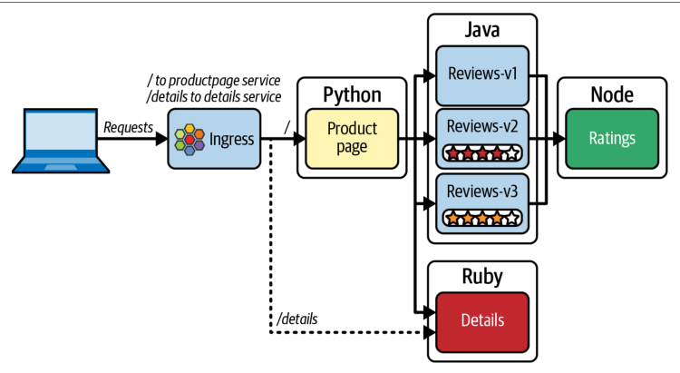
Figure 7-1. Using Cilium Ingress for HTTP traffic routing
图 7-1 使用 Cilium Ingress 进行 HTTP 流量路由
As discussed in Chapter 2, Envoy runs as a per-node DaemonSet. When you create Ingress or Gateway API resources, Cilium’s controllers translate them into CiliumEnvoyConfig (CEC) objects and program the Envoy DaemonSet accordingly. You can verify what was rendered with
kubectl get cec -A (and kubectl get ccec-A for cluster-wide configs). Any change to the Ingress or Gateway API objects updates the corresponding CECs and is reconciled to Envoy. Cilium can also program Envoy directly via CEC/CCEC without using Ingress or Gateway API. This enables custom listeners, routes, clusters, and filters for layer 7 routing and manipulation. It is a power user path with caveats (version compatibility, portability, and ownership of the config) and is outside the scope of this book.正如第 2 章所讨论的，Envoy 以每节点 DaemonSet 的形式运行。当你创建 Ingress 或 Gateway API 资源时，Cilium 的控制器会把它们翻译成 CiliumEnvoyConfig（CEC）对象，并相应地对 Envoy DaemonSet 进行编程。你可以用
kubectl get cec -A 查看生成的配置（用 kubectl get ccec -A 查看集群范围的配置）。Ingress 或 Gateway API 对象的任何变更都会更新对应的 CEC，并同步到 Envoy。Cilium 还可以直接通过 CEC/CCEC 编程 Envoy，而无需使用 Ingress 或 Gateway API。这为 L7 路由和流量操作提供了自定义监听器、路由、集群和过滤器。这是高阶用户路径，但有一些注意事项（版本兼容性、可移植性以及配置的所有权），超出了本书的范围。Next, we’ll deploy the Ingress manifest:
接下来，我们来部署 Ingress 清单：
代码（原文）
$ kubectl apply -f basic-ingress.yaml ingress.networking.k8s.io/basic-ingress created
This creates a LoadBalancer service for the Ingress, but it won’t have an external IP yet:
这会为 Ingress 创建一个 LoadBalancer Service，但它此时还没有外部 IP：
代码（原文）
$ kubectl get svc NAME TYPE CLUSTER-IP EXTERNAL-IP cilium-ingress-basic-ingress LoadBalancer 10.96.162.88 <pending>
As you’ll recall from Chapter 6, for an IP to be assigned we need to create a CiliumLoadBalancerIPPool object (pool.yaml):
正如你在第 6 章回忆到的，要分配 IP 地址，我们需要创建一个 CiliumLoadBalancerIPPool 对象（pool.yaml）：
代码（原文）
apiVersion: "cilium.io/v2" kind: CiliumLoadBalancerIPPool metadata: name: "pool" spec: blocks: - cidr: "172.18.255.200/29"
Deploy the pool with
kubectl and verify that an IP address has been assigned to the service:用
kubectl 部署这个地址池，并验证是否已为该 Service 分配了 IP 地址：代码（原文）
$ kubectl get svc NAME TYPE CLUSTER-IP EXTERNAL-IP cilium-ingress-basic-ingress LoadBalancer 10.96.68.40 172.18.255.200
You can also verify that the same external IP address is associated with the Ingress resource:
你还可以验证同一个外部 IP 地址是否也关联到了 Ingress 资源：
代码（原文）
$ kubectl get ingress NAME CLASS HOSTS ADDRESS PORTS AGE basic-ingress cilium * 172.18.255.200 80 13m
Export it as a variable (
INGRESS_IP=172.18.255.200, for example) so that you can reuse it. Let’s now make this IP address accessible locally by deploying the following Cilium layer 2 announcement policy (l2policy.yaml):将其导出为变量（例如
INGRESS_IP=172.18.255.200），以便后续复用。现在让该 IP 地址可以在本地访问，为此部署以下 Cilium 二层通告策略（l2policy.yaml）：代码（原文）
apiVersion: "cilium.io/v2alpha1" kind: CiliumL2AnnouncementPolicy metadata: name: policy1 spec: loadBalancerIPs: true interfaces: - eth0 nodeSelector: matchExpressions: - key: node-role.kubernetes.io/control-plane operator: DoesNotExist
Layer 2 announcement lets nodes advertise service IPs on the local network using the Address Resolution Protocol (ARP) for IPv4 or Neighbor Discovery (ND) for IPv6,1 so external hosts can reach those IPs without a separate load balancer if they share a layer 2 domain. In Cilium, you enable this with a CiliumL2AnnouncementPolicy that selects which nodes and interfaces announce their IPs. You will learn how it functions in Chapter 10, but essentially the policy shown here will ensure Cilium answers ARP requests received on the worker node’s
eth0 interfaces for IPs assigned to LoadBalancer services (in this case, 172.18.255.200). Next, we’ll verify that Cilium Ingress is working as we expect by accessing the Ingress IP from our terminal.二层通告让节点通过 ARP（IPv4）或邻居发现（IPv6）在本地网络上通告 Service IP，1 这样外部主机无需单独的负载均衡器就能访问这些 IP（只要它们处于同一个二层域内）。在 Cilium 中，你通过 CiliumL2AnnouncementPolicy 启用该功能，它会选择哪些节点和接口来通告自己的 IP。你将在第 10 章了解它的工作原理，但这里展示的策略本质上会确保 Cilium 在工作节点的
eth0 接口上响应针对 LoadBalancer Service 分配 IP（本例中即 172.18.255.200）的 ARP 请求。接下来，我们从终端访问 Ingress IP，验证 Cilium Ingress 是否如预期工作。On macOS, you will likely need to install Docker Mac Net Connect to access the application running in your kind cluster over Ingress/ Gateway API. This tool enables macOS users to access services running on the host network from Docker containers, working around the networking limitations of Docker Desktop on Mac. If you’d rather not install this utility, you can simply deploy another container on the same Docker network as the nodes with:
在 macOS 上，你可能需要安装 Docker Mac Net Connect 才能通过 Ingress/Gateway API 访问 kind 集群中运行的应用。这个工具让 macOS 用户可以从 Docker 容器访问宿主机网络上运行的 Service，绕过 Docker Desktop 在 Mac 上的网络限制。如果你不想安装这个工具，可以用以下命令在与节点相同的 Docker 网络中部署另一个容器：
代码（原文）
$ docker run -d --net kind --rm --name client \ nicolaka/netshoot:v0.8 sleep inf
You can then run the following commands from the client’s shell (
docker exec -it client bash) to observe the same behavior.然后你可以在客户端 Shell（
docker exec -it client bash）中运行以下命令来观察同样的行为。From outside the cluster, let’s send an HTTP request to the
/ path with curl. It takes us to the productpage service and returns HTTP code 200:从集群外部，用
curl 向 / 路径发送一个 HTTP 请求。它会把我们带到 productpage Service，并返回 HTTP 状态码 200：代码（原文）
$ curl --fail -s -o /dev/null -w "%{http_code}\n" "http://$INGRESS_IP/"A cURL request to the
/details/1 path takes us to the book’s details:向
/details/1 路径发送的 cURL 请求会把我们带到图书详情页：代码（原文）
$ curl --fail -s "http://$INGRESS_IP/details/1"
{
"id": 1,
"author": "William Shakespeare",
"year": 1595,
"type": "paperback",
"pages": 200,
"publisher": "PublisherA",
"language": "English",
"ISBN-10": "1234567890",
"ISBN-13": "123-1234567890"
}1Introduced in Cilium v1.19.
1Cilium v1.19 引入。
However, you can’t directly access other URL paths that weren’t defined in basicingress.yaml. For example, you will get a
404 error if you make a request to /ratings, as it is not explicitly mapped in the Ingress resource:但你无法直接访问 basicingress.yaml 中未定义的其他 URL 路径。例如，向
/ratings 发起请求会得到 404 错误，因为它没有在 Ingress 资源中显式映射：代码（原文）
$ curl --fail -so /dev/null -w "%{http_code}\n" "http://$INGRESS_IP/ratings"In the next section we’ll explore another use case for Cilium Ingress: TLS termination.
下一节我们将介绍 Cilium Ingress 的另一个用例：TLS 终止。
TLS Termination with Cilium Ingress通过 Cilium Ingress 进行 TLS 终止
Ingress resources are commonly used as TLS termination points in Kubernetes. Because they act as the cluster’s entry proxy, terminating TLS at the Ingress simplifies certificate management and provides a secure frontend for HTTP services. In this section, we will test TLS termination using self-signed certificates generated with mkcert. While this approach is suitable for testing, it’s strongly recommended to use a certificate management system such as cert-manager in production. We’ll use the Bookinfo app again for this example, except that instead of accessing the service over HTTP (80), we will be accessing it over HTTPS (443), as illustrated in Figure 7-2.
Ingress 资源在 Kubernetes 中常用作 TLS 终止点。由于它充当集群的入口代理，在 Ingress 处终止 TLS 可以简化证书管理，并为 HTTP 服务提供一个安全的前端。本节我们将使用 mkcert 生成的自签名证书来测试 TLS 终止。虽然这种方法适合测试，但强烈建议在生产环境中使用 cert-manager 等证书管理系统。本示例我们仍然使用 Bookinfo 应用，只不过这次通过 HTTPS（443）访问而非 HTTP（80），如图 7-2 所示。
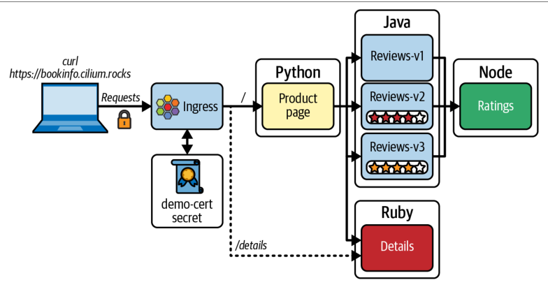
Figure 7-2. Cilium Ingress for HTTPS traffic with TLS termination
图 7-2 Cilium Ingress 用于 HTTPS 流量的 TLS 终止
First, let’s generate a wildcard certificate. Install mkcert with your package manager if you don’t have it installed already, then run:
首先，我们来生成一个通配符证书。如果你尚未安装 mkcert，请通过你的包管理器安装，然后运行：
代码（原文）
$ mkcert '*.cilium.rocks' Created a new local CA Run "mkcert -install" for certificates to be trusted automatically Created a new certificate valid for the following names - "*.cilium.rocks" Reminder: X.509 wildcards only go one level deep, so this won't match a.b.cilium.rocks The certificate is at "./_wildcard.cilium.rocks.pem" and the key at "./_wildcard.cilium.rocks-key.pem" It will expire on 10 December 2027
mkcert suggests running
mkcert -install so the certificate becomes trusted systemwide, but we will not do that here. Installing a local certificate authority (CA) into the system trust store is unnecessary for this example and is discouraged on shared or production machines. The previous command created a certificate and a key. We can now create a Kubernetes TLS secret using these files:mkcert 建议运行
mkcert -install 让证书在系统范围内受信任，但这里我们不这样做。将本地证书颁发机构（CA）安装到系统信任存储对于本示例来说并不必要，而且不建议在共享或生产机器上执行。上一条命令创建了一个证书和一个密钥。现在我们可以用这些文件创建一个 Kubernetes TLS Secret：代码（原文）
$ kubectl create secret tls demo-cert \ --key=_wildcard.cilium.rocks-key.pem \ --cert=_wildcard.cilium.rocks.pem secret/demo-cert created
Once the secret is in place, define an Ingress resource that references it for TLS termination. For
bookinfo.cilium.rocks, the following Ingress routes /details and / to two HTTP services (details and productpage):Secret 创建好之后，定义一个引用它来进行 TLS 终止的 Ingress 资源。对于
bookinfo.cilium.rocks，以下 Ingress 将 /details 和 / 路由到两个 HTTP Service（details 和 productpage）：代码（原文）
apiVersion: networking.k8s.io/v1 kind: Ingress metadata: name: tls-ingress namespace: default spec: ingressClassName: cilium rules: - host: bookinfo.cilium.rocks http: paths: - path: /details pathType: Prefix backend: service: name: details port: number: 9080 - path: / pathType: Prefix backend: service: name: productpage port: number: 9080 tls: - hosts: - bookinfo.cilium.rocks secretName: demo-cert
Once applied with
kubectl apply -f tls-ingress.yaml, you should see the Ingress provisioned with a LoadBalancer address:用
kubectl apply -f tls-ingress.yaml 应用之后，你应该能看到 Ingress 被分配了一个 LoadBalancer 地址：代码（原文）
$ kubectl get ingress tls-ingress NAME CLASS HOSTS ADDRESS PORTS tls-ingress cilium hipstershop.cilium.rocks,... 172.18.255.201 80, 443
This address can then be exported for use in cURL commands:
这个地址可以导出，以便在 cURL 命令中使用：
代码（原文）
$ export TLS_INGRESS="$(kubectl get ingress tls-ingress \
-o jsonpath='{.status.loadBalancer.ingress[0].ip}')"
$ echo "$TLS_INGRESS"
172.18.255.201To avoid modifying the system trust store, we will explicitly tell cURL which CA to trust for this request. You can locate the mkcert CA directory with:
为避免修改系统信任存储，我们会显式告诉 cURL 为该请求信任哪个 CA。你可以用以下命令找到 mkcert CA 目录：
代码（原文）
$ mkcert -CAROOT ~/Library/Application Support/mkcert
Use the CA file directly when sending the HTTPS request. The
--resolve flag maps the hostname to the Ingress IP:发送 HTTPS 请求时直接使用这个 CA 文件。
--resolve 标志将主机名映射到 Ingress IP：代码（原文）
$ curl -s \
--resolve "bookinfo.cilium.rocks:443:$TLS_INGRESS" \
--cacert "$(mkcert -CAROOT)/rootCA.pem" \
https://bookinfo.cilium.rocks/details/1 | jq
{ "id": 1, "author": "William Shakespeare", "year": 1595, ... }Ingress LimitationsIngress 的局限性
Ingress provides a familiar abstraction for routing external traffic into a cluster and functions well for HTTP and HTTPS routing. However, it has several limitations that become apparent in more complex environments. These are not tied to Cilium’s implementation of Ingress, but apply to most Ingress implementations: Single shared configuration role Ingress uses a cluster-wide controller (like NGINX or Cilium) that watches all Ingress resources and applies the same global configuration to all of them. There’s no native way to delegate responsibility or apply different policies for different teams or namespaces. This means platform teams often become a bottleneck, forced to manage or approve all routing changes across the organization. Poor multitenancy support
Ingress 为将外部流量路由进集群提供了一个熟悉的抽象，并且在 HTTP/HTTPS 路由场景中表现良好。但它在更复杂的环境中暴露出若干局限性。这些局限并非 Cilium 的 Ingress 实现独有，而是适用于大多数 Ingress 实现：单一共享的配置角色 Ingress 使用一个集群级控制器（如 NGINX 或 Cilium），它会监控所有 Ingress 资源并对其应用相同的全局配置。没有原生方式来为不同团队或命名空间委派责任或应用不同的策略。这意味着平台团队常常成为瓶颈，被迫管理或审批组织内所有的路由变更。多租户支持薄弱
Because Ingress lacks scoping and delegation, there’s no built-in mechanism to enforce tenant boundaries or isolate configuration. Annotations or CRDs are often required to prevent one team’s configuration from affecting another’s. This limits self-service and introduces risk in shared clusters. Nonportable annotations Much of Ingress’s extended functionality relies on controller-specific annotations. These annotations are not standardized and are often tied to one specific Ingress implementation. As a result, workloads configured for one controller (e.g., NGINX) may not behave the same as or work well with another (e.g., HAProxy or Cilium), hurting portability. Hard to extend Ingress is rigid. It covers only basic HTTP routing and offers no first-class support for TCP, gRPC, advanced traffic shaping, or custom policy enforcement. Extending functionality typically requires controller-specific annotations, which are brittle and hard to manage. Platform teams have little control over layering features or composing policies in a reusable way. To address them, the broader SIG Network team2 created Gateway API.
由于 Ingress 缺乏作用域划分和委派机制，没有内置手段来强制租户边界或隔离配置。通常需要通过注解或 CRD 来防止一个团队的配置影响另一个团队。这限制了自助服务能力，并在共享集群中引入了风险。不可移植的注解 Ingress 的许多扩展功能依赖于控制器特定的注解。这些注解没有标准化，并且通常绑定于某一种特定的 Ingress 实现。因此，为某个控制器（如 NGINX）配置的工作负载在另一个控制器（如 HAProxy 或 Cilium）上可能行为不一致或无法正常工作，损害了可移植性。难以扩展 Ingress 过于僵化。它只覆盖了基本的 HTTP 路由，对 TCP、gRPC、高级流量整形或自定义策略执行等场景没有一流的支持。扩展功能通常需要依赖控制器特定的注解，而这些注解脆弱且难以管理。平台团队几乎无法以可复用的方式进行特性分层或策略组合。为解决这些问题，更广泛的 SIG Network 团队 2 创建了 Gateway API。
Introducing Gateway APIGateway API 简介
Gateway API was created to overcome the limitations of Ingress. It provides a more expressive, extensible model for managing ingress traffic. Gateway API offers a structured and centralized way to handle external traffic. Like Ingress, it supports HTTP(S) routing, TLS termination, traffic splitting,3 header manipulation, and more. But whereas Ingress relies heavily on annotations for advanced features, Gateway API includes these capabilities natively. As a result, configurations are more portable across implementations and less prone to fragmentation. Where customization is needed, Gateway API includes clear extension points. The team behind the project continues to identify patterns shared by different implementations, promoting them into the standard API to avoid the inconsistent and vendor-specific extensions that plagued the Ingress model.
Gateway API 旨在克服 Ingress 的局限性，为管理入站流量提供一个更具表达力、可扩展的模型。Gateway API 提供了一种结构化、集中化的方式来处理外部流量。与 Ingress 类似，它支持 HTTP(S) 路由、TLS 终止、流量分割、3 请求头操作等功能。但 Ingress 在很大程度上依赖注解来实现高级特性，而 Gateway API 原生就包含了这些能力。因此，配置在不同实现之间更具可移植性，也更不容易碎片化。在需要自定义的地方，Gateway API 提供了清晰的扩展点。项目团队持续识别不同实现之间共享的模式，并将其提升为标准 API，以避免曾困扰 Ingress 模型的那些不一致且厂商特定的扩展。
2A Special Interest Group (SIG) in Kubernetes is a group of contributors who collaborate around a particular functional area of the project, such as networking, storage, or node management. SIG Network is responsible for the components, interfaces, and APIs that expose networking capabilities to Kubernetes users and workloads. 3Possible in some Ingress controllers with implementation-specific annotations.
2Kubernetes 的特别兴趣小组（SIG）是一群围绕项目某一特定功能领域（如网络、存储或节点管理）协作的贡献者。SIG Network 负责向 Kubernetes 用户和工作负载暴露网络能力的组件、接口和 API。 3 某些 Ingress 控制器在实现特定注解的条件下可以实现。
Another key design principle is role-based separation of concerns. Ingress assumed that developers managed both application and infrastructure-level networking resources. In real-world environments, however, different personas are typically involved:
另一个关键设计原则是基于角色的关注点分离。Ingress 假设开发者同时管理应用级和基础设施级的网络资源。但在真实环境中，通常涉及不同的角色：
- Infrastructure providers (e.g., AWS, Azure, GCP)基础设施提供商（如 AWS、Azure、GCP）
- Cluster operators who manage the Kubernetes platform管理 Kubernetes 平台的集群运维者
- Application developers focused on service configuration and delivery专注于服务配置与交付的应用开发者
By decomposing the monolithic Ingress resource into multiple Gateway API resources (the GatewayClass, Gateway, and HTTPRoute resources we will describe next), the API enables fine-grained access control. For example, developers can be granted permission to define routes in their own namespace, while operators retain control over shared infrastructure such as Gateways, as illustrated in Figure 7-3.
通过将庞大的 Ingress 资源拆分为多种 Gateway API 资源（接下来将介绍的 GatewayClass、Gateway 和 HTTPRoute），该 API 实现了细粒度的访问控制。例如，可以授予开发者在自己的命名空间中定义路由的权限，而运维者则保留对 Gateway 等共享基础设施的控制权，如图 7-3 所示。
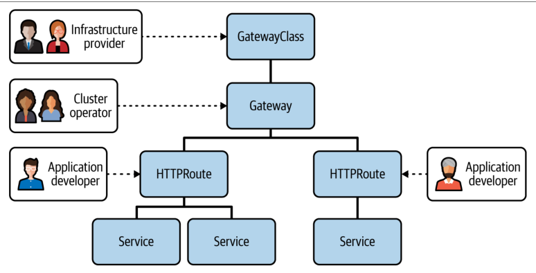
Figure 7-3. Gateway API permits role-based separation of concerns
图 7-3 Gateway API 实现了基于角色的关注点分离
Gateway API ObjectsGateway API 对象
Gateway API introduces a set of Kubernetes resources that separate infrastructure concerns from application-level routing. This modular design helps teams manage ingress traffic more effectively across different roles.
Gateway API 引入了一组 Kubernetes 资源，将基础设施关注点与应用级路由分离开来。这种模块化设计帮助不同角色的团队更高效地管理入站流量。
GatewayClassGatewayClass
GatewayClass in Gateway API plays a role similar to IngressClass for Ingress: it declares which controller manages a class of Gateways and can carry controller defaults. When Cilium’s Gateway API support is enabled, a default class named
cilium is installed with the controller io.cilium/gateway-controller. Gateways that set gatewayClassName: cilium are reconciled by the Cilium Gateway API controller. It programs the Envoy DaemonSet, the same layer 7 proxy data plane used by Cilium Ingress.Gateway API 中的 GatewayClass 与 Ingress 中的 IngressClass 扮演类似的角色：它声明由哪个控制器来管理一类 Gateway，并可携带控制器默认值。当 Cilium 的 Gateway API 支持被启用时，会安装一个名为
cilium 的默认类，其控制器为 io.cilium/gateway-controller。设置了 gatewayClassName: cilium 的 Gateway 会由 Cilium Gateway API 控制器进行调和。它会对 Envoy DaemonSet 进行编程，而这正是 Cilium Ingress 使用的同一个 L7 代理数据平面。GatewayGateway
This resource represents an instance of a GatewayClass and acts as the entry point for external traffic. It defines one or more listeners, each specifying protocol (e.g., HTTP or HTTPS), port, hostname, and TLS settings if applicable.
该资源代表 GatewayClass 的一个实例，充当外部流量的入口点。它定义一个或多个监听器，每个监听器指定协议（如 HTTP 或 HTTPS）、端口、主机名，以及 TLS 设置（如适用）。
All files discussed in this section are in the chapter07/gateway directory of the book’s GitHub repository.
本节讨论的所有文件都位于本书 GitHub 仓库的 chapter07/gateway 目录下。
Here is an example configuration (basic-gateway.yaml) for a Gateway named mygateway:
以下是名为 mygateway 的 Gateway 的示例配置（basic-gateway.yaml）：
代码（原文）
apiVersion: gateway.networking.k8s.io/v1 kind: Gateway metadata: name: my-gateway spec: gatewayClassName: cilium listeners: - protocol: HTTP port: 80 name: web-gw allowedRoutes: namespaces: from: Same
First, note that the
spec.gatewayClassName value is cilium. This refers to the previously configured cilium GatewayClass. The my-gateway Gateway will listen on port 80 for HTTP traffic coming into the cluster. The allowedRoutes field specifies the namespaces from which routes may be attached to this Gateway. Same means that only routes in the same namespace may be used. Using All instead of Same would enable this Gateway to be associated with routes in any namespace. It would also enable us to use a single Gateway across multiple namespaces that may be managed by different teams. We could specify different namespaces in the route configuration—for example, we could route traffic to https://acme.example/payments to a namespace where a payment app is deployed and traffic to https://acme.example/ads to the namespace the ads team uses for its application.首先，注意
spec.gatewayClassName 的值为 cilium，它引用了之前配置的 cilium GatewayClass。my-gateway 这个 Gateway 将在端口 80 上监听进入集群的 HTTP 流量。allowedRoutes 字段指定了允许将路由挂载到该 Gateway 的命名空间范围。Same 表示只有同一命名空间内的路由可以使用。如果使用 All 替代 Same，则该 Gateway 可以关联任意命名空间内的路由。这也使得我们可以在多个可能由不同团队管理的命名空间之间复用同一个 Gateway。我们可以在路由配置中指定不同的命名空间——例如，将发往 https://acme.example/payments 的流量路由到部署了支付应用的命名空间，将发往 https://acme.example/ads 的流量路由到广告团队用于其应用的命名空间。HTTPRouteHTTPRoute
HTTPRoute is a Gateway API type for specifying routing behavior of HTTP requests from a Gateway listener to a Kubernetes service. The specification includes a set of rules that enable you to direct the traffic based on your requirements. Let’s go through an example (basic-http-route.yaml):
HTTPRoute 是一种 Gateway API 类型，用于指定 HTTP 请求如何从 Gateway 监听器路由到 Kubernetes Service。其规范包含一组规则，让你能够根据需求指导流量方向。我们来看一个示例（basic-http-route.yaml）：
代码（原文）
apiVersion: gateway.networking.k8s.io/v1 kind: HTTPRoute metadata: name: http-app-1 spec: parentRefs: - name: my-gateway namespace: default rules: - matches: - path: type: PathPrefix value: /details backendRefs: - name: details port: 9080 - matches: - headers: - type: Exact name: magic value: foo queryParams: - type: Exact name: great value: example path: type: PathPrefix value: / method: GET backendRefs: - name: productpage port: 9080
This first rule is routing HTTP traffic with a path starting with
/details to the details service over port 9080. The second rule uses different matching criteria: if the HTTP request has an HTTP header named magic with a value of foo and a query parameter named great with a value of example, and the HTTP method is GET, then the traffic will be sent to the productpage service over port 9080. There are other routes available with Gateway API, such as GRPCRoute (for gRPC traffic), TCPRoute, and UDPRoute. We’ll see an example with GRPCRoute later in this chapter. At the time of writing, the latter two are not supported by Cilium.第一个规则将路径以
/details 开头的 HTTP 流量路由到端口 9080 上的 details Service。第二个规则使用了不同的匹配条件：如果 HTTP 请求具有值为 foo 的 HTTP 头 magic，值为 example 的查询参数 great，且 HTTP 方法为 GET，那么流量会被发送到端口 9080 上的 productpage Service。Gateway API 还有其他类型的路由，例如 GRPCRoute（用于 gRPC 流量）、TCPRoute 和 UDPRoute。本章后面会看到 GRPCRoute 的示例。撰写本书时，后两者尚未被 Cilium 支持。Routing HTTP Traffic with Gateway API通过 Gateway API 路由 HTTP 流量
This section will get you started with Cilium Gateway API. First, delete the existing kind cluster if it still exists and deploy a new one (kind.yaml).
本节将带你上手 Cilium Gateway API。首先，如果已存在 kind 集群请删除它，然后部署一个新的（kind.yaml）。
We’re deploying a new cluster for simplicity, but migrating existing clusters from Cilium Ingress to Cilium Gateway API is possible. It requires activating the Gateway API feature and migrating the configuration, either by manually creating Gateway API resources based on existing Ingress resources or by leveraging the Ingress2gateway tool, which reads Ingress resources from a Kubernetes cluster and outputs YAML for equivalent Gateway API objects.
我们部署新集群是为了简化演示，但将现有集群从 Cilium Ingress 迁移到 Cilium Gateway API 也是可行的。这需要激活 Gateway API 特性并迁移配置——要么根据现有 Ingress 资源手动创建 Gateway API 资源，要么使用 Ingress2gateway 工具，它可以从 Kubernetes 集群读取 Ingress 资源并输出等价的 Gateway API 对象的 YAML。
Before installing Cilium with Gateway API enabled (or enabling Gateway API on an existing Cilium install), you must install the Gateway API CRDs. You’ll find these in the Gateway API GitHub repo. You might wonder why this is required, since the Cilium operator typically manages CRDs. Cilium supports both Standard (stable, backward-compatible) and Experimental (feature-rich but unstable) Gateway API channels. To avoid conflicts or broken functionality, you must install the Gateway API CRDs yourself before deploying Cilium to ensure Cilium won’t override a newer or Experimental version during the install or upgrade. If the Gateway API CRDs are not present at the time Helm is executed to install or upgrade Cilium, the
cilium GatewayClass will not be created. We’ll use the Standard CRDs in our example. Cilium 1.18 conforms with Gateway API 1.3, so we will be using the 1.3 CRDs in this instance:在安装启用了 Gateway API 的 Cilium（或在已有的 Cilium 安装上启用 Gateway API）之前，你 必须 先安装 Gateway API CRD。你可以在 Gateway API 的 GitHub 仓库找到它们。你可能会好奇为什么这是必需的——毕竟 Cilium Operator 通常会管理 CRD。Cilium 同时支持 Standard（稳定、向后兼容）和 Experimental（功能丰富但不稳定）两种 Gateway API 通道。为避免冲突或功能异常，你必须在部署 Cilium 之前自行安装 Gateway API CRD，以确保 Cilium 不会在安装或升级过程中覆盖更新的或 Experimental 版本。如果执行 Helm 安装或升级 Cilium 时 Gateway API CRD 不存在，
cilium GatewayClass 就不会被创建。我们的示例中使用 Standard CRD。Cilium 1.18 符合 Gateway API 1.3，因此本例我们使用 1.3 版本的 CRD：代码（原文）
$ CRD_PATH="https://raw.githubusercontent.com/"\
"kubernetes-sigs/gateway-api/v1.3.0/config/crd/standard/"
$ kubectl apply -f "${CRD_PATH}/gateway.networking.k8s.io_gatewayclasses.yaml"
$ kubectl apply -f "${CRD_PATH}/gateway.networking.k8s.io_gateways.yaml"
$ kubectl apply -f "${CRD_PATH}/gateway.networking.k8s.io_httproutes.yaml"
$ kubectl apply -f "${CRD_PATH}/gateway.networking.k8s.io_referencegrants.yaml"
$ kubectl apply -f "${CRD_PATH}/gateway.networking.k8s.io_grpcroutes.yaml"Let’s now deploy Cilium using the Helm configuration cilium-gatewayapi-values.yaml. Like Cilium Ingress, Cilium Gateway API requires KPR. This feature can be enabled
现在，使用 Helm 配置文件 cilium-gatewayapi-values.yaml 来部署 Cilium。与 Cilium Ingress 类似，Cilium Gateway API 也需要 KPR。此特性可以通过
代码（原文）
with gatewayAPI.enabled=true.4
4To activate the Gateway API feature on an existing Cilium deployment, enable it with Helm/Cilium CLI and restart the operator Deployment and agent DaemonSet.
4要在现有的 Cilium 部署上激活 Gateway API 特性，请通过 Helm/Cilium CLI 启用它，然后重启 Operator Deployment 和 Agent DaemonSet。
We’ll also add a CiliumLoadBalancerIPPool object (pool.yaml) and a layer 2 announcement policy (l2policy.yaml) and deploy the sample Bookinfo application (bookinfo.yaml) we used in the Ingress section. Let’s now deploy the Gateway and HTTPRoute configuration we walked through earlier:
我们还将添加 CiliumLoadBalancerIPPool 对象（pool.yaml）、二层通告策略（l2policy.yaml），并部署前面 Ingress 一节使用过的 Bookinfo 示例应用（bookinfo.yaml）。现在来部署之前讨论过的 Gateway 和 HTTPRoute 配置：
代码（原文）
$ kubectl apply -f basic-gateway.yaml gateway.gateway.networking.k8s.io/my-gateway created $ kubectl apply -f basic-http-route.yaml httproute.gateway.networking.k8s.io/http-app-1 created
First, we’ll verify that a
cilium GatewayClass has been created and that the Gateway has received an IP address and has been “programmed”—meaning that Cilium programmed the Gateway configuration into its Envoy component:首先，我们来验证
cilium GatewayClass 是否已创建，Gateway 是否已获得 IP 地址并且完成了"编程"——即 Cilium 已将 Gateway 配置编程进它的 Envoy 组件：代码（原文）
$ kubectl get GatewayClass NAME CONTROLLER ACCEPTED AGE cilium io.cilium/gateway-controller True 43s $ kubectl get gateway NAME CLASS ADDRESS PROGRAMMED AGE my-gateway cilium 172.18.255.200 True 27m
Next, we’ll verify that the route was successfully attached to the Gateway. The
Accepted HTTPRoute condition type indicates the configuration was correct and accepted:接下来，我们验证路由是否已成功挂载到 Gateway。
Accepted HTTPRoute 条件类型表示配置正确且已被接受：代码（原文）
$ kubectl get httproutes http-app-1 -o yaml | yq .status.parents - conditions: message: Accepted HTTPRoute observedGeneration: 1 reason: Accepted controllerName: io.cilium/gateway-controller parentRef: group: gateway.networking.k8s.io kind: Gateway name: my-gateway namespace: default
You should now be able to access your internal Bookinfo application from outside the cluster, as illustrated in Figure 7-4. It’s almost identical to Figure 7-1, the only difference being the use of the Gateway API objects instead of Ingress.
你现在应该已经可以从集群外部访问内部的 Bookinfo 应用，如图 7-4 所示。它与图 7-1 几乎一模一样，唯一的区别是使用了 Gateway API 对象而非 Ingress。
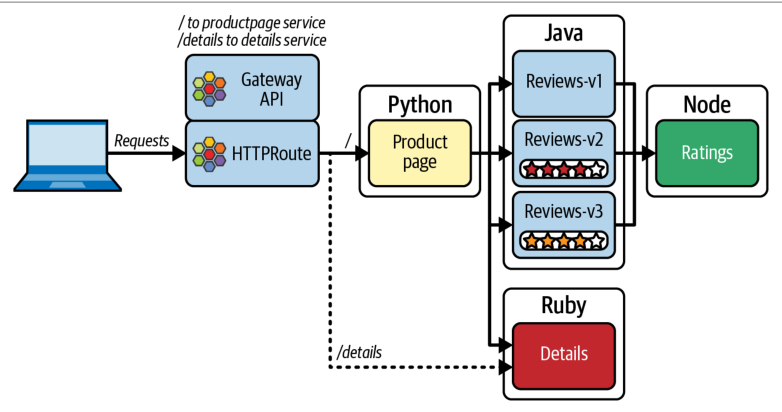
Figure 7-4. Using Cilium Gateway API for HTTP traffic routing
图 7-4 使用 Cilium Gateway API 进行 HTTP 流量路由
Save the Gateway IP as an environment variable, and then verify with cURL that HTTP path matching works as expected. Because the path starts with
/details, this traffic matches the first rule and is proxied to the details service over port 9080. The cURL request should be successful:将 Gateway IP 保存为环境变量，然后用 cURL 验证 HTTP 路径匹配是否如预期工作。由于路径以
/details 开头，这条流量匹配第一条规则，被代理到端口 9080 上的 details Service。cURL 请求应该能成功：代码（原文）
$ GATEWAY="$(kubectl get gateway my-gateway -o \
jsonpath='{.status.addresses[0].value}')"
$ echo "$GATEWAY"
172.18.255.200
$ curl --fail -s "http://$GATEWAY/details/1"
{ "id": 1, "author": "William Shakespeare", "year": 1595, ... }Next, you can verify HTTP header matching. With the following
curl command, we specify a header (magic:foo) and a query parameter key/value pair (great=example). Since cURL implicitly uses the GET HTTP method, traffic will be matched by the HTTPRoute rule and directed to the productpage backend:接下来，你可以验证 HTTP 头匹配。在以下
curl 命令中，我们指定了一个头（magic:foo）和一个查询参数键值对（great=example）。由于 cURL 默认使用 GET HTTP 方法，流量将被 HTTPRoute 规则匹配到并转发到 productpage 后端：代码（原文）
$ curl -v -H 'magic: foo' "http://$GATEWAY?great=example" * Trying 172.18.255.200:80... * Connected to 172.18.255.200 (172.18.255.200) port 80 > GET /?great=example HTTP/1.1 > User-Agent: curl/8.5.0 > Accept: */* > magic: foo > < HTTP/1.1 200 OK < server: envoy < x-envoy-upstream-service-time: 9 < <p> <h3>Hello! This is a simple bookstore application consisting of three services as shown below</h3> </p>
We set the preceding
curl command to verbose with the -v flag. It prints the HTTP data (confirming the cURL request, including the query parameters, headers, and method) for both outbound (preceded by >) and inbound (preceded by <) traffic. Notice the xenvoy-upstream-service-time line—it confirms that Envoy proxied the transaction and indicates that the upstream service took 9 ms to respond.我们通过
-v 标志将前面的 curl 命令设为详细模式，它会打印 HTTP 数据（确认包含查询参数、头和 HTTP 方法的 cURL 请求），同时显示出站（以 > 开头）和入站（以 < 开头）流量。注意看 x-envoy-upstream-service-time 这一行——它确认了 Envoy 代理了此次事务，并表明上游 Service 用了 9 ms 响应。TLS Termination with Gateway API通过 Gateway API 进行 TLS 终止
Cilium Gateway API also supports TLS termination. The equivalent configuration to the one we saw earlier with Ingress looks like this (tls-gateway.yaml and httpsroute.yaml):
Cilium Gateway API 也支持 TLS 终止。它与之前 Ingress 示例中看到的等价配置如下（tls-gateway.yaml 和 httpsroute.yaml）：
代码（原文）
apiVersion: gateway.networking.k8s.io/v1 kind: Gateway metadata: name: tls-gateway spec: gatewayClassName: cilium listeners: - name: https-1 protocol: HTTPS port: 443 hostname: "bookinfo.cilium.rocks" tls: certificateRefs: - kind: Secret name: demo-cert --- apiVersion: gateway.networking.k8s.io/v1 kind: HTTPRoute metadata: name: https-app-route-1 spec: parentRefs: - name: tls-gateway hostnames: - "bookinfo.cilium.rocks" rules: - matches: - path: type: PathPrefix value: /details backendRefs: - name: details port: 9080
Layer 7 Load Balancing Across Backends第 7 层后端间负载均衡
Cilium’s Gateway API implementation includes native support for HTTP traffic splitting. This feature allows you to send a percentage of traffic to different backend services without needing a separate service mesh or third-party tool. Common use cases include A/B testing, canary deployments, or blue/green rollouts where a new version of an application is gradually introduced. In this section, we’ll deploy two versions of a sample application and configure an HTTPRoute to split traffic evenly between them (50/50 weight). Later, we’ll adjust the weights to simulate a more pragmatic and realistic approach to production rollouts of an application.
Cilium 的 Gateway API 实现原生支持 HTTP 流量切分。此特性允许你将一定比例的流量发送到不同的后端服务，而无需额外的服务网格或第三方工具。常见用例包括 A/B 测试、金丝雀发布，或灰度/蓝绿发布——即在这些场景中，新版本应用会被逐步引入。本节，我们将部署同一个示例应用的两个版本，并配置一个 HTTPRoute 在它们之间均匀切分流量（50/50 权重）。随后，我们会调整权重，模拟一种更加务实、贴近生产环境发布的做法。
50/50 Load Balancing50/50 负载均衡
Start by deploying a simple echo application (echo-servers.yaml). This YAML file deploys two internal (ClusterIP) services,
echo-1 and echo-2, each backed by its own set of pods and listening on different ports. This app returns the name of the pod and node handling each request, allowing us to clearly observe where the traffic is routed:首先部署一个简单的 echo 应用（echo-servers.yaml）。这个 YAML 文件会部署两个内部（ClusterIP）服务
echo-1 和 echo-2，各自由一组独立的 Pod 支撑，且监听不同端口。该应用会返回处理每个请求的 Pod 名称与节点名称，便于我们清晰地观察流量被路由到了哪里：代码（原文）
$ kubectl get pods,svc NAME READY STATUS pod/echo-1-65bf7cf9b5-6zsf6 1/1 Running pod/echo-2-569cb769b7-zh878 1/1 Running NAME CLUSTER-IP EXTERNAL-IP PORT(S) service/echo-1 10.96.125.138 <none> 8080/TCP service/echo-2 10.96.74.120 <none> 8090/TCP
To split incoming traffic between
echo-1 and echo-2, apply the HTTPRoute resource (load-balancing-http-route.yaml). Note the equal 50% weight under each service:若要在
echo-1 和 echo-2 之间切分入站流量，请应用 HTTPRoute 资源（load-balancing-http-route.yaml）。注意每个服务下都有相等的 50% 权重：代码（原文）
apiVersion: gateway.networking.k8s.io/v1 kind: HTTPRoute metadata: name: load-balancing-route spec: parentRefs: - name: my-gateway rules: - matches: - path: type: PathPrefix value: /echo backendRefs: - kind: Service name: echo-1 port: 8080 weight: 50 - kind: Service name: echo-2 port: 8090 weight: 50
This route distributes HTTP traffic to the
/echo path evenly between the two backend services, as illustrated in Figure 7-5.此路由会将发往
/echo 路径的 HTTP 流量均匀分配到两个后端服务之间，如图 7-5 所示。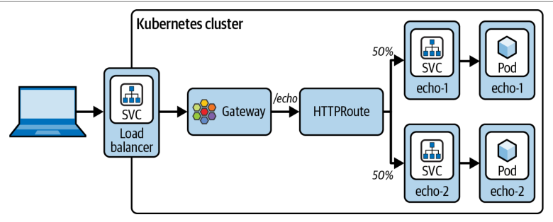
Figure 7-5. 50/50 load balancing
图 7-5 50/50 负载均衡
We can verify this by sending some requests to the
/echo endpoint and inspecting the responses. The response body includes the pod hostname, allowing you to identify which backend received the request:我们可以通过向
/echo 端点发送一些请求并检查响应来进行验证。响应体中包含了 Pod 主机名，让你能够识别请求最终到达了哪个后端：代码（原文）
$ curl "http://$GATEWAY/echo" Request served by echo-2-569cb769b7-zh878
Repeat the request several times. You should see responses alternating between
echo-1 and echo-2. To verify the distribution more precisely, run the command 1,000 times and store the output in a text file:重复请求若干次。你应该能看到响应在
echo-1 和 echo-2 之间交替出现。若要更精确地验证分布情况，可运行该命令 1000 次，并将输出保存到一个文本文件中：代码（原文）
for _ in {1..1000}; do
curl -s "http://$GATEWAY/echo" >> curlresponses.txt
doneWith
grep, you should see roughly equal counts for the two services:使用
grep，你应该能看到两个服务的请求数量大致相等：代码（原文）
$ grep -o "Request served by echo-." curlresponses.txt | sort | uniq -c 517 Request served by echo-1 483 Request served by echo-2
Adjusting Weights: 99/1 Split调整权重：99/1 切分
Let’s now simulate a canary rollout where nearly all traffic goes to one service, as shown in Figure 7-6.
现在我们来模拟一次金丝雀发布，让几乎全部流量都指向一个服务，如图 7-6 所示。
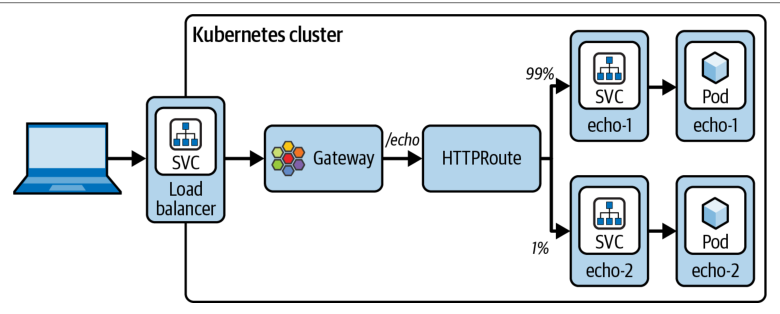
Figure 7-6. 99/1 traffic splitting with Gateway API
图 7-6 使用 Gateway API 进行 99/1 流量切分
Edit the existing HTTPRoute resource:
编辑现有的 HTTPRoute 资源：
代码（原文）
$ kubectl edit httproute load-balancing-route
In the
backendRefs section, update the weights to 99 for echo-1 and 1 for echo-2. Repeat the traffic test and save the output to another text file (curlresponses991.txt, for example). You should now see the vast majority of requests going to echo-1, with only a small fraction reaching echo-2:在
backendRefs 字段中，将权重更新为：echo-1 设为 99，echo-2 设为 1。重新执行流量测试，并将输出保存到另一个文本文件（例如 curlresponses991.txt）。此时你应该会看到绝大多数请求都发往 echo-1，只有很小一部分会到达 echo-2：代码（原文）
$ grep -o "Request served by echo-." curlresponses991.txt | sort | uniq -c 990 Request served by echo-1 10 Request served by echo-2
Traffic Management流量管理
In addition to path-based routing and traffic splitting, Cilium Gateway API enables powerful traffic customization at layer 7 using filters in HTTPRoute resources. These filters allow you to:
除了基于路径的路由和流量切分之外，Cilium Gateway API 还允许通过 HTTPRoute 资源中的过滤器，在第 7 层进行强大的流量定制。这些过滤器让你可以：
- Modify both incoming request headers and outgoing response headers.同时修改入站请求头与出站响应头。
- Redirect requests by rewriting paths, hostnames, URL schemes, or status codes.通过重写路径、主机名、URL 方案或状态码来重定向请求。
- Rewrite URL paths before forwarding requests to a backend.在将请求转发给后端之前重写 URL 路径。
- Mirror traffic to an additional backend for testing or debugging purposes.将流量镜像到额外的后端，用于测试或排障。
We’ll focus on the first two use cases here. See the Cilium documentation for more information on the many other use cases supported by Gateway API.
我们这里重点介绍前两个用例。关于 Gateway API 支持的其他许多用例，请参阅 Cilium 文档。
Modifying HTTP Headers with Gateway API使用 Gateway API 修改 HTTP 头
In this section, we’ll explore how to add headers to HTTP requests using
RequestHeaderModifier and how to add headers to HTTP responses using ResponseHeaderModifier. These techniques are useful for tasks like adding custom metadata and routing logic, A/B testing, or helping frontends adapt to different backend versions.本节，我们将探讨如何使用
RequestHeaderModifier 为 HTTP 请求添加头，以及如何使用 ResponseHeaderModifier 为 HTTP 响应添加头。这些技术适用于添加自定义元数据与路由逻辑、A/B 测试，或帮助前端适配不同后端版本等任务。Modifying HTTP request headers 修改 HTTP 请求头
Start by deploying a route that matches HTTP requests to a specific path (echoheader-http-route.yaml):
首先部署一条将 HTTP 请求匹配到特定路径的路由（echoheader-http-route.yaml）：
代码（原文）
apiVersion: gateway.networking.k8s.io/v1 kind: HTTPRoute metadata: name: header-http-echo spec: parentRefs: - name: my-gateway rules: - matches: - path: type: PathPrefix value: /cilium-add-a-request-header backendRefs: - name: echo-1
Send a test request and inspect the echoed request headers. You will see only the default headers (
host, user-agent, etc.):发送一个测试请求，并检查回显的请求头。你会看到只有默认的头（
host、user-agent 等）：代码（原文）
$ curl --fail -s "http://$GATEWAY/cilium-add-a-request-header" Request served by echo-1-65bf7cf9b5-6zsf6 HTTP/1.1 GET /cilium-add-a-request-header Host: 172.18.255.200 Accept: */* User-Agent: curl/8.7.1
Now, update the HTTPRoute by using the
RequestHeaderModifier filter to add a header. Deploy the echo-header-http-route-header-modifier.yaml file from the repo:现在，使用
RequestHeaderModifier 过滤器更新 HTTPRoute 以添加一个头。从仓库中部署 echo-header-http-route-header-modifier.yaml 文件：代码（原文）
rules: - matches: - path: type: PathPrefix value: /cilium-add-a-request-header filters: - type: RequestHeaderModifier requestHeaderModifier: add: - name: my-cilium-header-name value: my-cilium-header-value
The header
my-cilium-header-name with the value my-cilium-header-value will be added to HTTP requests matching the path prefix. You can repeat the cURL request to verify this. The echoed headers should now include your custom header:对于匹配该路径前缀的 HTTP 请求，将添加值为
my-cilium-header-value 的头 my-cilium-header-name。你可以重复 cURL 请求以验证。回显的头中现在应该包含你的自定义头：代码（原文）
$ curl --fail -s "http://$GATEWAY/cilium-add-a-request-header" Host: 172.18.255.200 Accept: */* My-Cilium-Header-Name: my-cilium-header-value User-Agent: curl/8.7.1
Note that you can also remove or amend an existing header by specifying the
remove or amend action instead of add.注意，你也可以通过指定
remove 或 amend 而非 add 来删除或修改已有的头。Modifying HTTP response headers 修改 HTTP 响应头
Now let’s modify the headers in the response body. This can be useful for adding versioning information, setting custom cookies, or differentiating between beta and stable backends. Apply the following manifest (response-header-modifier-http-route.yaml). Note that only the relevant portion of the manifest is being reproduced here in the book; the full code listing is available in the book’s repo. The syntax is very similar to the previous example, but this time we’ll use the
ResponseHeaderModifier filter to add multiple headers to the HTTP response coming back from the server to the client. The route modifies responses to the /multiple path by adding three custom headers:现在我们来修改响应体中的头。这对于添加版本信息、设置自定义 Cookie，或区分 beta 与稳定版后端都很有用。应用以下清单（response-header-modifier-http-route.yaml）。注意，本书只给出了清单的相关片段，完整代码清单可在本书仓库中找到。语法与上一个示例非常类似，但这次我们使用
ResponseHeaderModifier 过滤器，为服务器返回客户端的 HTTP 响应添加多个头。该路由通过添加三个自定义头来修改发往 /multiple 路径的响应：代码（原文）
rules: - matches: - path: type: PathPrefix value: /multiple filters: - type: ResponseHeaderModifier responseHeaderModifier: add: - name: X-Header-Add-1 value: header-add-1 - name: X-Header-Add-2 value: header-add-2 backendRefs: - name: echo-1 port: 8080
Send a verbose cURL request to test it:
发送一个 verbose cURL 请求进行测试：
代码（原文）
$ curl -v --fail -s "http://$GATEWAY/multiple" < HTTP/1.1 200 OK < x-header-add-1: header-add-1 < x-header-add-2: header-add-2
You should see that the response includes the three custom headers, confirming the
my-gateway Gateway has added headers to the response successfully. Alternatively, you can observe HTTP traffic behavior using Hubble (which you can enable by following the instructions in Chapter 3), for example by matching on HTTP header values:你应该能看到响应中包含了这三个自定义头，说明
my-gateway Gateway 已成功向响应添加了头。或者，你也可以使用 Hubble（按照第 3 章的说明启用）观察 HTTP 流量行为，例如匹配 HTTP 头值：代码（原文）
$ hubble observe --http-header "X-Header-Add-1:header-add-1"
See Chapter 15 for more details on HTTP observability in Hubble, including how to redact sensitive headers (such as the
Authorization header) from flow logs.关于 Hubble 中的 HTTP 可观测性（包括如何从流日志中对敏感头（如
Authorization 头）进行脱敏），详见第 15 章。HTTP Redirects with Gateway API使用 Gateway API 进行 HTTP 重定向
Cilium Gateway API supports native HTTP redirection using filters within HTTPRoute resources. This feature allows you to modify the destination of incoming requests by changing the path, hostname, scheme, or status code. You can use redirection for a range of use cases, including application migrations, URL reorganization, and redirecting HTTP clients to HTTPS. In this section, we’ll explore four redirect scenarios, each handled by a separate rule in the same HTTPRoute manifest (redirect-route.yaml):
Cilium Gateway API 通过 HTTPRoute 资源内的过滤器原生支持 HTTP 重定向。此特性让你能够通过修改路径、主机名、方案或状态码来更改入站请求的目的地。你可以将重定向用于多种场景，包括应用迁移、URL 重组，以及将 HTTP 客户端重定向到 HTTPS。本节，我们将探讨四种重定向场景，每种场景由同一个 HTTPRoute 清单中的独立规则处理（redirect-route.yaml）：
代码（原文）
apiVersion: gateway.networking.k8s.io/v1 kind: HTTPRoute metadata: name: redirect-path spec: parentRefs: - name: my-gateway rules: - matches: - path: type: PathPrefix value: /original-prefix filters: - type: RequestRedirect requestRedirect: path: type: ReplacePrefixMatch replacePrefixMatch: /replacement-prefix - matches: - path: type: PathPrefix value: /path-and-host filters: - type: RequestRedirect requestRedirect: hostname: example.org path: type: ReplacePrefixMatch replacePrefixMatch: /replacement-prefix - matches: - path: type: PathPrefix value: /path-and-status filters: - type: RequestRedirect requestRedirect: path: type: ReplacePrefixMatch replacePrefixMatch: /replacement-prefix statusCode: 301 - matches: - path: type: PathPrefix value: /scheme-and-host filters: - type: RequestRedirect requestRedirect: hostname: example.org scheme: "https"
The first rule in the manifest rewrites the path prefix while preserving the hostname and protocol. The second rule changes both the hostname and the path. The third rule demonstrates how to change the HTTP status code returned by the redirect. The final rule demonstrates how to change the scheme (protocol) to redirect from HTTP to HTTPS. The requests are depicted in Figure 7-7.
清单中第一条规则重写路径前缀，同时保留主机名和协议。第二条规则同时修改主机名和路径。第三条规则演示了如何更改重定向返回的 HTTP 状态码。最后一条规则演示了如何修改方案（协议），将 HTTP 重定向到 HTTPS。这些请求如图 7-7 所示。
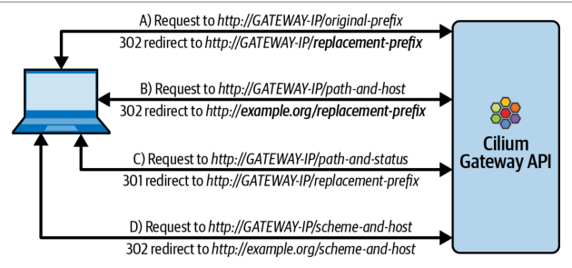
Figure 7-7. HTTP redirects with Gateway API
图 7-7 使用 Gateway API 的 HTTP 重定向
Let’s deploy the route and verify that each rule works as expected. First, verify the path prefix redirection (Figure 7-7A). Make a request to trigger the redirect and note the
302 redirect code alongside the recommended URL:我们来部署该路由并验证每条规则是否按预期工作。首先，验证路径前缀重定向（图 7-7A）。发起一个请求以触发重定向，记录下
302 重定向码以及推荐的 URL：代码（原文）
$ curl -l -v "http://$GATEWAY/original-prefix" < HTTP/1.1 302 Found < location: http://172.18.255.200:80/replacement-prefix
Next, verify the redirect to a new hostname and path (Figure 7-7B). Make a request to the
/path-and-host path:接下来，验证重定向到新的主机名和路径（图 7-7B）。向
/path-and-host 路径发起请求：代码（原文）
$ curl -l -v "http://$GATEWAY/path-and-host" < HTTP/1.1 302 Found < location: http://example.org:80/replacement-prefix
As you can see, both the host and the prefix have been replaced. Now verify that Cilium Gateway API can redirect you to a permanently moved URL (Figure 7-7C). Make the request and note the permanent redirection code (
301) in the reply:如你所见，主机名和前缀都已被替换。现在验证 Cilium Gateway API 能够将你重定向到一个永久迁移的 URL（图 7-7C）。发起请求，并注意响应中的永久重定向码（
301）：代码（原文）
$ curl -l -v "http://$GATEWAY/path-and-status" < HTTP/1.1 301 Moved Permanently < location: http://172.18.255.200:80/replacement-prefix
Finally, verify the HTTP host and scheme redirect capability (Figure 7-7D). This feature can redirect users to use HTTPS instead of HTTP for a specific request.
最后，验证 HTTP 主机和方案重定向能力（图 7-7D）。此特性可以将用户重定向为对特定请求使用 HTTPS 而非 HTTP。
HTTP to HTTPS redirection is best suited to URLs that are expected to be accessed by users via web browsers and should be avoided for “API” URLs that are expected to be accessed by machines. This type of redirection can result in accidentally exposing authentication tokens. For example, machines accessing an API often attach a bearer token in the
Authorization header of every request. If such a client is misconfigured to use an HTTP endpoint, it will send the entire request (including the token) in plain text before receiving the redirect to the HTTPS endpoint. The extra friction of not supporting HTTP at all is usually worth the security benefits of not risking credential exposure.HTTP 到 HTTPS 的重定向最适合预期由用户通过 Web 浏览器访问的 URL，而对于预期由机器访问的“API”类 URL 应避免使用。这种重定向可能会意外暴露认证令牌。例如，访问 API 的机器通常会在每个请求的
Authorization 头中附加一个 Bearer 令牌。如果这样的客户端被错误地配置为使用 HTTP 端点，它会在收到重定向到 HTTPS 端点之前，先将整个请求（包括令牌）以明文形式发送出去。不支持 HTTP 带来的一点点额外麻烦，通常远小于凭证暴露风险所带来的安全收益。While you can use
curl for this, you can also check in your browser. Assuming the IP address assigned to your Gateway is 172.18.255.200, directly accessing http://172.18.255.200/scheme-and-host from your browser will redirect you to https://example.org/scheme-and-host.虽然你可以使用
curl 来测试，但也可以在浏览器中验证。假设 Gateway 分配到的 IP 地址为 172.18.255.200，那么从浏览器直接访问 http://172.18.255.200/scheme-and-host 会被重定向到 https://example.org/scheme-and-host。gRPC RoutinggRPC 路由
gRPC is a high-performance remote procedure call (RPC) framework built on HTTP/2; it provides bidirectional streaming between microservices. Gateway API provides first-class support for gRPC via GRPCRoute, which can match on host, headers, service, and method and then forward requests to the appropriate Kubernetes services.5 Ingress has no common standard for gRPC routing, so support is implementationspecific and often relies on controller-specific annotations. With GRPCRoute standardized in Gateway API since version 1.1.0, you get portable, annotation-free manifests that work across compliant implementations. Let’s try this out with Google Cloud’s Online Boutique demo application, a web-based ecommerce app allowing users to browse items, add them to a cart, and purchase them. Online Boutique is composed of 11 microservices written in different languages that communicate using gRPC. Deploy the app by applying the gcp-microservices-demo.yaml manifest, and then review the GRPCRoute manifest (grpc-route.yaml). It defines routes for gRPC requests targeting the
productcatalogservice and currencyservice microservices on ports 3550 and 7000, respectively. The structure of GRPCRoute mirrors that of HTTPRoute:gRPC 是一种构建在 HTTP/2 之上的高性能远程过程调用（RPC）框架；它在微服务之间提供双向流传输。Gateway API 通过 GRPCRoute 为 gRPC 提供一流支持，可以根据主机、头、服务和方法进行匹配，然后将请求转发到相应的 Kubernetes 服务。5 Ingress 对 gRPC 路由没有统一标准，因此其支持因实现而异，通常依赖于控制器特定的注解。随着 Gateway API 自 1.1.0 版本起将 GRPCRoute 标准化，你就得到了可移植、无需注解的清单，能够在所有符合规范的实现上运行。下面我们用 Google Cloud 的 Online Boutique 演示应用来试一下——这是一个基于 Web 的电商应用，允许用户浏览商品、加入购物车并完成购买。Online Boutique 由 11 个用不同语言编写、通过 gRPC 通信的微服务组成。应用 gcp-microservices-demo.yaml 清单部署该应用，然后查看 GRPCRoute 清单（grpc-route.yaml）。它为分别运行在端口 3550 和 7000 上的
productcatalogservice 和 currencyservice 微服务定义了 gRPC 路由。GRPCRoute 的结构与 HTTPRoute 类似：5A gRPC service defines a set of methods that a client can call remotely, each representing an API endpoint with a specific request and response type.
5 一个 gRPC 服务定义了一组客户端可远程调用的方法，每个方法代表一个带有特定请求与响应类型的 API 端点。
代码（原文）
apiVersion: gateway.networking.k8s.io/v1 kind: GRPCRoute metadata: name: productcatalogservice-rule spec: parentRefs: - namespace: default name: my-gateway rules: - matches: - method: service: hipstershop.ProductCatalogService method: ListProducts backendRefs: - name: productcatalogservice port: 3550 --- apiVersion: gateway.networking.k8s.io/v1 kind: GRPCRoute metadata: name: currencyservice-rule spec: parentRefs: - namespace: default name: my-gateway rules: - matches: - method: service: hipstershop.CurrencyService method: GetSupportedCurrencies backendRefs: - name: currencyservice port: 7000
Attach this route to the previously deployed my-gateway entry point. Match on the fully qualified gRPC service. Match on the gRPC method. Forward to the target Kubernetes service and port. Once you’ve deployed grpc-route.yaml, you can make gRPC requests to backend services using
grpcurl.6将该路由附加到之前部署的 my-gateway 入口点。在完全限定的 gRPC 服务上进行匹配。在 gRPC 方法上进行匹配。转发到目标 Kubernetes 服务和端口。部署完 grpc-route.yaml 后，你可以使用
grpcurl 向后端服务发起 gRPC 请求。66
grpcurl is a command-line tool for interacting with gRPC services. It can be installed through your package manager (e.g., with brew install grpcurl on macOS).6
grpcurl 是一个用于与 gRPC 服务交互的命令行工具。可通过你的包管理器安装（例如在 macOS 上执行 brew install grpcurl）。First, access the currency service of the application, which lists the supported currencies. Note that since gRPC is binary-encoded, you also need the proto definitions7 for the gRPC services to make gRPC requests:
首先，访问应用的货币服务，它会列出支持的货币。注意，由于 gRPC 是二进制编码的，因此你还需要 gRPC 服务的 proto 定义 7 来发起 gRPC 请求：
代码（原文）
$ grpcurl -plaintext -proto ./demo.proto "$GATEWAY:80" \
hipstershop.CurrencyService/GetSupportedCurrencies
{ "currencyCodes": [ "EUR", "USD", "GBP", [...] ] }Next, try accessing the product catalog service. You should see a collection of JSON objects describing items such as sunglasses, a tank top, and a watch in the output:
接下来，尝试访问产品目录服务。在输出中你应该能看到一组描述各种商品（如太阳镜、背心、手表）的 JSON 对象：
代码（原文）
$ grpcurl -plaintext -proto ./demo.proto "$GATEWAY:80" \
hipstershop.ProductCatalogService/ListProducts | jq
{"id":"OLJCESPC7Z","name":"Sunglasses","price":19.99}
{"id":"66VCHSJNUP","name":"Tank Top","price":18.99}
{"id":"1YMWWN1N4O","name":"Watch","price":109.99}
[...]East–West Layer 7 Routing with GAMMA and Gateway API使用 GAMMA 和 Gateway API 进行东西向第 7 层路由
While this chapter has so far focused on traffic entering the cluster (north–south), Gateway API can also be used to manage traffic within the cluster (east–west). Traditionally, Kubernetes services handle east–west traffic using layer 3/4 load balancing. For more advanced layer 7 routing (such as path-based routing, traffic splitting, or request timeouts), platform teams have relied on service meshes that introduce their own APIs and components. The Gateway API for Mesh Management and Administration (GAMMA) initiative extends Gateway API to support these advanced routing use cases for internal traffic. GAMMA introduces no new resources, but instead allows HTTPRoute objects to bind directly to Kubernetes services instead of Gateways. In this section, you’ll use Cilium’s GAMMA implementation to apply Gateway API features to in-cluster traffic. First, deploy gamma-manifest.yaml, which installs two
echo services, echo-v1 and echo-v2, and a client pod for internal testing. It also creates an echo service that acts as the frontend for routing (GAMMA refers to the combination of the cluster IP and its DNS name as the “frontend” of the service and to the collection of endpoint IPs as the “backend”). Let’s look at a GAMMA route used for east–west service management (gammaroute.yaml). Unlike north–south Gateway API usage, the route’s parentRefs target an internal service called echo:到目前为止，本章聚焦的是进入集群的流量（南北向），但 Gateway API 也可用于管理集群内部的流量（东西向）。传统上，Kubernetes 服务通过第 3/4 层负载均衡处理东西向流量。对于更高级的第 7 层路由（如基于路径的路由、流量切分或请求超时），平台团队一直依赖服务网格，而这会引入自身的 API 与组件。Gateway API 管理与管理（GAMMA）计划扩展了 Gateway API，以支持针对内部流量的这些高级路由用例。GAMMA 没有引入新资源，而是允许 HTTPRoute 对象直接绑定到 Kubernetes 服务（而非 Gateway）。本节，你将使用 Cilium 的 GAMMA 实现为集群内流量应用 Gateway API 的各种特性。首先，部署 gamma-manifest.yaml，它会安装两个
echo 服务（echo-v1 和 echo-v2），以及一个用于内部测试的客户端 Pod。它还会创建一个 echo 服务，作为路由的前端（GAMMA 将集群 IP 及其 DNS 名称的组合称为服务的“前端”，将端点 IP 的集合称为“后端”）。我们来看一个用于东西向服务管理的 GAMMA 路由（gammaroute.yaml）。不同于南北向 Gateway API 的用法，该路由的 parentRefs 指向一个名为 echo 的内部服务：7Proto definitions describe the structure of gRPC services, including their methods and request and response types, using the Protocol Buffers language.
7 Proto 定义使用 Protocol Buffers 语言描述 gRPC 服务的结构，包括它们的方法、请求类型和响应类型。
代码（原文）
apiVersion: gateway.networking.k8s.io/v1 kind: HTTPRoute metadata: name: gamma-route namespace: gamma-ns spec: parentRefs: - kind: Service name: echo rules: - matches: - path: type: PathPrefix value: /v1 backendRefs: - name: echo-v1 port: 80 - matches: - path: type: PathPrefix value: /v2 backendRefs: - name: echo-v2 port: 80
Deploy the route, and then test path-based routing from the internal client:
部署该路由，然后从内部客户端测试基于路径的路由：
代码（原文）
$ kubectl -n gamma-ns exec -it client -- curl http://echo/v1 $ kubectl -n gamma-ns exec -it client -- curl http://echo/v2
You should see that requests to
/v1 are routed to pods behind echo-v1 and requests to /v2 are routed to echo-v2, as illustrated in Figure 7-8.你应该能看到，发往
/v1 的请求被路由到 echo-v1 背后的 Pod，而发往 /v2 的请求被路由到 echo-v2，如图 7-8 所示。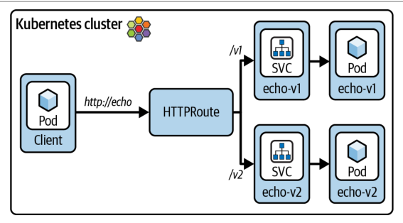
Figure 7-8. Gateway API for service mesh (GAMMA)
图 7-8 用于服务网格的 Gateway API（GAMMA）
This demonstrates that layer 7 routing logic using HTTPRoute objects can apply to internal traffic just as it does to external traffic. Once a route is attached to a Kubernetes service, all the other Gateway API features you’ve seen in this chapter (traffic splitting, request and response header modifications, path rewriting and redirects, etc.) can be applied in the same way.8
这说明，使用 HTTPRoute 对象的第 7 层路由逻辑可以像应用于外部流量一样应用于内部流量。一旦路由附加到 Kubernetes 服务，本章中你见过的所有其他 Gateway API 特性（流量切分、请求与响应头修改、路径重写和重定向等）都可以以相同的方式应用。8
Summary小结
This chapter examined how Cilium supports layer 7 traffic management through both Ingress and Gateway API. We began with Cilium’s Ingress support, showing how Cilium can route external HTTP traffic using standard Kubernetes resources and how it integrates with LoadBalancer IP address management and layer 2 announcements. Then we shifted our focus to Gateway API, which introduces more structured and extensible routing capabilities. We walked through examples demonstrating how to route traffic based on HTTP path, headers, methods, and query parameters, and we explored how to implement TLS termination, gRPC routing, request and response header manipulation, and HTTP redirects. Finally, we saw how Gateway API can be used to manage east–west traffic through GAMMA. The examples in this chapter showed how the same routing model can be used for both external and internal traffic, minimizing resource utilization by removing the need for a separate ingress or service mesh system. In the next chapter, you will learn about other Cilium features designed to optimize network performance and reduce latency.
本章研究了 Cilium 如何通过 Ingress 和 Gateway API 两种方式支持第 7 层流量管理。我们从 Cilium 的 Ingress 支持入手，展示了 Cilium 如何使用标准 Kubernetes 资源路由外部 HTTP 流量，以及它如何与 LoadBalancer IP 地址管理和二层通告集成。随后我们将重点转向 Gateway API，它带来了更结构化、可扩展的路由能力。我们逐步演示了如何基于 HTTP 路径、头、方法和查询参数路由流量，并探讨了如何实现 TLS 终止、gRPC 路由、请求与响应头操作以及 HTTP 重定向。最后，我们看到了如何通过 GAMMA 将 Gateway API 用于管理东西向流量。本章中的示例展示了同一个路由模型可以同时用于外部和内部流量，通过消除对独立 Ingress 或服务网格系统的需求来最大限度地减少资源消耗。下一章，你将学习 Cilium 中其他旨在优化网络性能、降低延迟的特性。
8You should also know that using GAMMA means injecting Envoy into the datapath for this flow, which comes with performance implications. You can read more about these implications in Chapter 13.
8 你还应当知道，使用 GAMMA 意味着该流量路径会将 Envoy 注入数据路径，这会带来性能影响。有关这些影响的更多内容，将在第 13 章中介绍。
第 8 章Performance Networking and Traffic Optimization性能网络与流量优化
So far we have focused on getting access and connectivity working with Cilium. Outside of the eBPF-based
kube-proxy replacement we covered in Chapter 6, we have yet to discuss network performance. Our goal is not just to help you run Cilium; it is to help you get as much value and performance out of it as possible. A network tool is often judged on throughput, latency, and jitter, and the same goes for Cilium. In this chapter, we will review some of the Cilium features that enable you to optimize network performance. We will not cover them all; to avoid overwhelming the reader with too much information, we decided to leave out topics like Bottleneck Bandwidth and Round-trip propagation time (BBR), BIG TCP, and eBPF host routing.到目前为止，我们一直专注于使用 Cilium 实现访问与连接。除了第 6 章讨论的基于 eBPF 的
kube-proxy 替代方案外，我们尚未讨论网络性能。我们的目标不仅仅是帮助你运行 Cilium，更是帮助你从中获取最大的价值和性能。网络工具通常以吞吐量、延迟和抖动来评判，Cilium 亦是如此。在本章中，我们将回顾 Cilium 的一些特性，帮助你优化网络性能。我们不会涵盖所有特性；为了不让读者因过多信息而感到负担，我们决定跳过一些主题，如瓶颈带宽与往返传播时间（BBR）、BIG TCP，以及 eBPF 主机路由。Excluding topics is a difficult choice. To briefly summarize their value:
不讨论这些主题是一个艰难的选择。简要概括它们的价值：
- BBR is a modern congestion control algorithm that improvesBBR 是一种现代拥塞控制算法，可提升
throughput and reduces latency on long or high-bandwidth connections.
长连接或高带宽连接的吞吐量并降低延迟。
- BIG TCP increases efficiency for large-scale data transfers byBIG TCP 通过允许更大的数据包尺寸来提升大规模数据传输的效率，
allowing larger packet sizes, reducing per-packet overhead.
从而减少每个数据包的开销。
- eBPF host routing bypasses parts of the traditional networkingeBPF 主机路由绕过传统网络协议栈的部分组件，
stack to deliver faster packet forwarding directly within the kernel. The Isovalent blog covers BBR and BIG TCP in numerous posts. eBPF host-routing is enabled by default if your kernel supports it, so it does not require further explanation here. We will focus on a set of features that boost performance at the area, node, and edge levels by reducing routing hops (in the network and within the Linux stack) and by preferring nearby backends when possible: Service Traffic Distribution [area/topology] Prioritizes endpoints in the same area when available, helping reduce latency and inter-area costs Local Redirect Policy (LRP) [node] Prioritizes node-local backends so traffic stays on the same node, reducing crossnode hops and latency Direct Server Return (DSR) [edge] Preserves the client source IP and sends responses directly from backend pods to clients, improving return path performance eXpress Data Path (XDP) [node] Processes packets at the earliest possible point in the kernel to reduce per-packet overhead and lower latency Maglev [edge] Provides consistent hashing so the same flow lands on the same backend, improving connection stability during node changes Netkit [node] Replaces the traditional veth path with a kernel-native device model to cut overhead and bring container networking performance closer to host levels We’ll start with area-aware performance, then move to node- and edge-level techniques that reduce latency and routing hops inside and around the cluster. You can find all the YAML manifests you will use in this chapter in the chapter08 directory of the book’s GitHub repository.
直接在内核中实现更快的数据包转发。Isovalent 博客在多篇文章中介绍了 BBR 和 BIG TCP。如果你的内核支持，eBPF 主机路由默认是启用的，因此此处无需进一步解释。我们将重点关注一组通过减少路由跳数（网络内和 Linux 协议栈内）、尽可能优先选择附近后端来提升区域级、节点级和边缘级性能的特性：服务流量分布[区域/拓扑]在可用时优先选择同一区域内的端点，有助于降低延迟和跨区域成本 本地重定向策略（LRP）[节点]优先选择节点本地的后端，使流量保持在同一节点上，减少跨节点跳数和延迟 直接服务器返回（DSR）[边缘]保留客户端源 IP，让响应直接从后端 Pod 发送给客户端，提升返回路径性能 eXpress Data Path（XDP）[节点]在内核中尽早处理数据包，以减少每个数据包的开销并降低延迟 Maglev [边缘]提供一致性哈希，让相同流落在相同后端上，提升节点变更期间的连接稳定性 Netkit [节点]以内核原生设备模型替代传统 veth 路径，减少开销，使容器网络性能更接近主机水平 我们将从区域感知性能开始，然后介绍节点级和边缘级的技术，用于降低集群内部和周边的延迟与路由跳数。你可以在本书 GitHub 仓库的 chapter08 目录下找到本章使用的所有 YAML 清单文件。
Service Traffic Distribution服务流量分布
Many Kubernetes users choose to deploy clusters across multiple zones (such as multiple availability zones in AWS, or separate physical locations for on-premises hardware), often to improve availability and resilience. However, this design can introduce trade-offs, particularly in the form of increased latency if client traffic crosses zones to reach a backend. It can also lead to higher infrastructure costs, since many cloud providers charge for interzone egress. Ideally, traffic should remain within the same zone whenever possible. This approach is known as topology-aware traffic engineering: a routing strategy that takes into account the physical or logical location of both the client and the destination endpoints during forwarding decisions. In Kubernetes, this is enabled through the Service Traffic Distribution feature.1 By setting the
trafficDistribution field in a service specification, you can express a preference for how traffic should be routed. At the time of writing, the only supported value is PreferClose, which prioritizes endpoints in the same area as the client when available.许多 Kubernetes 用户选择将集群部署在多个可用区（如 AWS 中的多个可用区，或本地硬件的独立物理位置），通常是为了提升可用性和弹性。然而，这种设计可能会带来一些权衡，特别是当客户端流量跨可用区访问后端时会增加延迟。它还可能导致更高的基础设施成本，因为许多云服务提供商对跨区出站流量收费。理想情况下，流量应尽可能保持在同一可用区内。这种方法被称为 拓扑感知流量工程：一种在转发决策时兼顾客户端和目的端点物理或逻辑位置的路由策略。在 Kubernetes 中，这通过服务流量分布功能实现。1 通过在服务规范中设置
trafficDistribution 字段，你可以表达流量路由方式的偏好。截至撰写本书时，唯一受支持的值是 PreferClose，当可用时，它优先选择与客户端在同一区域内的端点。We focus on Kubernetes v1.33 (“Octarine”) in this book, but a big change was made to this feature in Kubernetes v1.34 (“Of Wind & Will”): the
PreferClose setting was deprecated in favor of two new settings, PreferSameZone and PreferSameNode, with PreferClose acting as an alias of the former. If you’re following along using a newer version of Kubernetes, try using PreferSameZone in the following examples.本书主要关注 Kubernetes v1.33（"Octarine"），但在 Kubernetes v1.34（"Of Wind & Will"）中对此功能做了重大变更：
PreferClose 设置被弃用，取而代之的是两个新设置 PreferSameZone 和 PreferSameNode，而 PreferClose 成为前者的别名。如果你使用较新版本的 Kubernetes 进行操作，请在以下示例中尝试使用 PreferSameZone。Let’s try it out. While this capability is especially useful for clusters that span multiple cloud zones or datacenters, we will use a kind cluster for simplicity and cost-effectiveness. We’ll deploy a four-node kind cluster and assign two nodes to
zone-a and two nodes to zone-b using Kubernetes node labels, with zone-a and zone-b representing two geographically separated areas. You will observe that, without traffic distribution enabled, the traffic to a Kubernetes service is randomly distributed across all backend pods, regardless of their location (Figure 8-1).让我们实际尝试一下。虽然此功能对于跨越多个云可用区或数据中心的集群尤其有用，但为简便和节省成本，我们将使用一个 kind 集群。我们将部署一个四节点 kind 集群，并使用 Kubernetes 节点标签将两个节点分配到
zone-a，另外两个节点分配到 zone-b，其中 zone-a 和 zone-b 代表两个地理上分离的区域。你将观察到，在未启用流量分布的情况下，发送到 Kubernetes Service 的流量会随机分布到所有后端 Pod 上，无论它们的位置如何（见图 8-1）。1Service Traffic Distribution is considered the successor to another traffic engineering feature, TopologyAware Routing (which was itself previously known as Topology-Aware Hints). While Topology-Aware Routing is also supported by Cilium, we’ll only cover Service Traffic Distribution in this book.
1 服务流量分布被视为另一项流量工程特性——拓扑感知路由（它之前称为拓扑感知提示）的继任者。虽然 Cilium 也支持拓扑感知路由，但本书只介绍服务流量分布。
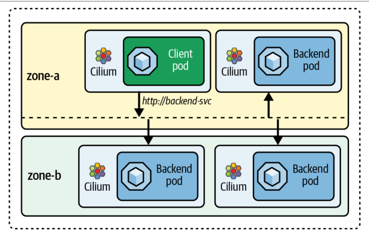
Figure 8-1. Random distribution prior to Service Traffic Distribution
图 8-1 启用服务流量分布前的随机分布
Once we set
trafficDistribution: PreferClose on a service, Kubernetes prefers sending traffic to endpoints that are in the same zone as the source, helping reduce latency and interzone data transfer costs (as illustrated in Figure 8-2).一旦我们在服务上设置
trafficDistribution: PreferClose，Kubernetes 会优先将流量发送到与源在同一可用区内的端点，帮助降低延迟和跨区域数据传输成本（如图 8-2 所示）。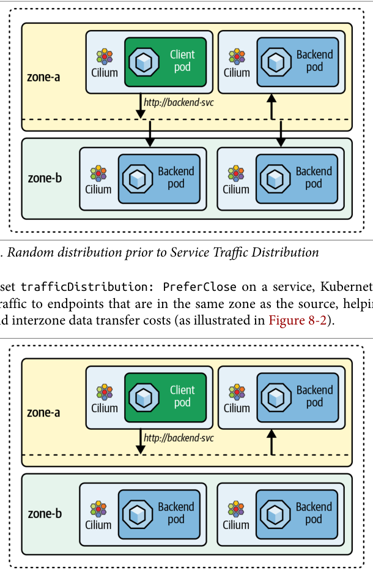
Figure 8-2. Topology-aware Service Traffic Distribution
图 8-2 拓扑感知的服务流量分布
All files discussed in this section are in the chapter08/std directory of the book’s GitHub repository.
本节讨论的所有文件都位于本书 GitHub 仓库的 chapter08/std 目录下。
To see this in action, deploy the cluster (kind-cluster-config-std.yaml) and verify where each worker is located. You should see that
kind-worker and kind-worker2 are both located in zone-a, while kind-worker3 and kind-worker4 are located in zone-b:要实际查看效果，请部署集群（kind-cluster-config-std.yaml）并确认每个工作节点的位置。你应该能看到
kind-worker 和 kind-worker2 都位于 zone-a，而 kind-worker3 和 kind-worker4 位于 zone-b：代码（原文）
$ kubectl get nodes --show-labels NAME LABELS kind-worker topology.kubernetes.io/zone=zone-a kind-worker2 topology.kubernetes.io/zone=zone-a kind-worker3 topology.kubernetes.io/zone=zone-b kind-worker4 topology.kubernetes.io/zone=zone-b
To enable the Service Traffic Distribution option, set the Helm value
loadBalancer.serviceTopology=true. Note that KPR is required for Service Traffic Distribution. Now, install Cilium (cilium-std-values.yaml) and create a deployment (stddeployment.yaml) of eight echo pods that will respond to client requests with their own name, alongside an echo service (std-service.yaml) to front the deployment. We will start with trafficDistribution disabled. Let’s now deploy three curl pods (std-poller-distribution.yaml), each continuously sending requests to the echo service and logging which backend pod responded. The list of running pods should look like this:要启用服务流量分布选项，请设置 Helm 值
loadBalancer.serviceTopology=true。注意，服务流量分布需要 KPR。现在安装 Cilium（cilium-std-values.yaml），并创建一个包含八个 echo Pod 的 Deployment（stddeployment.yaml），这些 Pod 会用自己的名称响应客户端请求，同时创建一个 echo Service（std-service.yaml）作为 Deployment 的前端。我们先从禁用 trafficDistribution 开始。现在部署三个 curl Pod（std-poller-distribution.yaml），每个都持续向 echo Service 发送请求并记录哪个后端 Pod 做出了响应。运行中的 Pod 列表应该如下所示：代码（原文）
$ kubectl get pods -o wide NAME READY STATUS IP NODE curl-664778b5b6-hgg5v 1/1 Running 10.244.2.76 kind-worker4 curl-664778b5b6-lhq98 1/1 Running 10.244.3.9 kind-worker3 curl-664778b5b6-zr6kt 1/1 Running 10.244.1.132 kind-worker2 echo-7f89db4f96-5h2bz 1/1 Running 10.244.2.201 kind-worker4 echo-7f89db4f96-5wshm 1/1 Running 10.244.4.66 kind-worker echo-7f89db4f96-99g9g 1/1 Running 10.244.2.153 kind-worker4 echo-7f89db4f96-h2gv7 1/1 Running 10.244.1.90 kind-worker2 echo-7f89db4f96-h5zw4 1/1 Running 10.244.2.24 kind-worker4 echo-7f89db4f96-q66nz 1/1 Running 10.244.1.13 kind-worker2 echo-7f89db4f96-wmlkn 1/1 Running 10.244.3.223 kind-worker3 echo-7f89db4f96-xjggf 1/1 Running 10.244.4.216 kind-worker
Let’s take a look at the logs on one of the new
curl pods (curl-664778b5b6-zr6kt, located on kind-worker2, in zone-a). The following command aggregates responses by backend pod. You can see that traffic was randomly distributed across all eight echo pods, regardless of their location:让我们看一下其中一个新
curl Pod 的日志（curl-664778b5b6-zr6kt，位于 kind-worker2 上，在 zone-a）。以下命令按后端 Pod 聚合响应。你可以看到流量随机分布到所有八个 echo Pod 上，无论它们的位置如何：代码（原文）
$ kubectl logs curl-664778b5b6-zr6kt \ | grep "Request served by" | cut -f2 -d ':' | sort | uniq -c 11 Request served by echo-7f89db4f96-5h2bz 8 Request served by echo-7f89db4f96-5wshm 12 Request served by echo-7f89db4f96-99g9g 12 Request served by echo-7f89db4f96-h2gv7 13 Request served by echo-7f89db4f96-h5zw4 16 Request served by echo-7f89db4f96-q66nz 10 Request served by echo-7f89db4f96-wmlkn 7 Request served by echo-7f89db4f96-xjggf
Now, enable Service Traffic Distribution (by uncommenting the
trafficDistribution: PreferClose line in the std-service.yaml manifest and reapplying it) and check the counters on the curl-664778b5b6-zr6kt pod again. This time, as you can see in the following output, only the stats for the NGINX pods located in the same zone increase:现在，启用服务流量分布（在 std-service.yaml 清单中取消注释
trafficDistribution: PreferClose 行并重新应用它），然后再次检查 curl-664778b5b6-zr6kt Pod 上的计数器。这一次，如以下输出所示，只有位于同一可用区内的 NGINX Pod 的统计数据会增加：代码（原文）
$ kubectl logs curl-664778b5b6-zr6kt \ | grep "Request served by" | cut -f2 -d ':' | sort | uniq -c 48 Request served by echo-7f89db4f96-5h2bz 181 Request served by echo-7f89db4f96-5wshm 49 Request served by echo-7f89db4f96-99g9g 181 Request served by echo-7f89db4f96-h2gv7 48 Request served by echo-7f89db4f96-h5zw4 187 Request served by echo-7f89db4f96-q66nz 46 Request served by echo-7f89db4f96-wmlkn 179 Request served by echo-7f89db4f96-xjggf
Only the counters on the pods that are in the same zone as the curl pod increase, indicating that traffic remains in the same zone. Run the same aggregation from a
curl pod scheduled in the other area; you should see the counts flip, with local echo pods dominating:只有与 curl Pod 在同一可用区内的 Pod 的计数器会增加，这表明流量保持在同一可用区内。在另一个区域的
curl Pod 上运行相同的聚合；你应该会看到计数反转，本地 echo Pod 占据主导：代码（原文）
$ kubectl logs curl-664778b5b6-hgg5v \ | grep "Request served by" | cut -f2 -d ':' | sort | uniq -c 223 Request served by echo-7f89db4f96-5h2bz 34 Request served by echo-7f89db4f96-5wshm 259 Request served by echo-7f89db4f96-99g9g 52 Request served by echo-7f89db4f96-h2gv7 249 Request served by echo-7f89db4f96-h5zw4 52 Request served by echo-7f89db4f96-q66nz 231 Request served by echo-7f89db4f96-wmlkn 38 Request served by echo-7f89db4f96-xjggf
Note that when no local backend is available, traffic is forwarded to backends outside the local zone. As a bonus exercise, you can test this yourself by destroying the echo servers and verifying that the client accesses backends in the other zone. Keep in mind these constraints around topology-aware features:
注意，当没有可用的本地后端时，流量会转发到本地可用区之外的后端。作为额外练习，你可以通过销毁 echo 服务器并验证客户端是否访问另一个可用区的后端来自行测试。请记住拓扑感知特性的这些约束条件：
- For a given service, if
externalTrafficPolicyorinternalTrafficPolicyis对于给定的服务，如果externalTrafficPolicy或internalTrafficPolicy被
set to
Local, that policy takes precedence over trafficDistribution for the corresponding traffic type. Refer back to Chapter 6 for an explanation of traffic policies.设置为
Local，则该策略优先于对应流量类型的 trafficDistribution。请回顾第 6 章了解流量策略的说明。- If those policy fields are set to
Cluster(the default) or are not set,traffic如果这些策略字段设置为Cluster（默认值）或未设置，traffic
Distribution guides routing for that traffic type and will attempt to send traffic to an endpoint in the same area as the client.Distribution 会指导该流量类型的路由，并尝试将流量发送到与客户端在同一区域内的端点。- These mechanisms work best when incoming traffic is roughly evenly distributed这些机制在入站流量大致均匀分布
across areas. If a large proportion of traffic originates from a single zone, the endpoints allocated to that zone can be overloaded; this approach is not recommended when most traffic is expected to come from one zone.
在各个区域时效果最佳。如果很大比例的流量来自单个可用区，分配给该可用区的端点可能会过载；当预期大部分流量来自一个可用区时，不推荐使用此方案。
Local Redirect Policy本地重定向策略
While Service Traffic Distribution helps direct traffic within the same zone, reducing cross-zone charges and latency, you may want to avoid even internode traffic by directing service requests to a local backend. To achieve this, Cilium offers an eBPFbased feature called Local Redirect Policy (LRP). LRP enables traffic destined for a particular IP address and port/protocol tuple or Kubernetes service to be redirected locally to backend pods within a node, using eBPF. There are many scenarios where an application runs on every node, typically using a DaemonSet. Examples include logging agents, monitoring sidecars, or DNS forwarders. While this ensures high availability, pods do not always connect to the local instance. Without LRP, traffic may be routed to an instance on another node, leading to unnecessary cross-node traffic and added latency (Figure 8-3).
虽然服务流量分布有助于将流量引导到同一可用区内，降低跨区费用和延迟，但你可能希望通过将服务请求引导到本地后端，甚至避免跨节点流量。为了实现这一点，Cilium 提供了一项基于 eBPF 的特性，称为本地重定向策略（LRP）。LRP 可使用 eBPF 将发往特定 IP 地址与端口/协议元组或 Kubernetes Service 的流量，在节点本地重定向到后端 Pod。有许多场景下应用会运行在每个节点上，通常使用 DaemonSet。示例包括日志代理、监控 Sidecar 或 DNS 转发器。虽然这确保了高可用性，但 Pod 并不总是连接到本地实例。没有 LRP 时，流量可能被路由到另一个节点上的实例，导致不必要的跨节点流量和额外延迟（见图 8-3）。
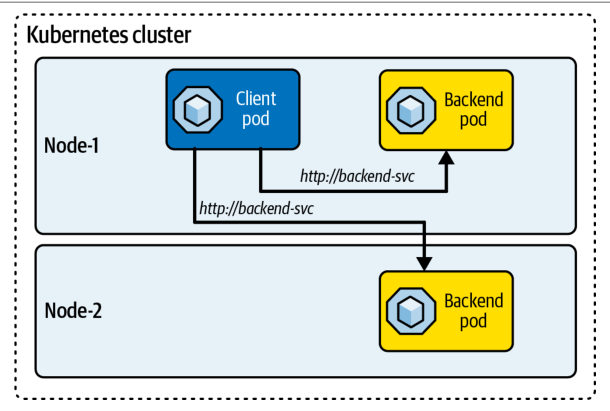
Figure 8-3. Without LRP
图 8-3 未使用 LRP 的情况
LRP ensures service-bound traffic is redirected locally (Figure 8-4). The most evident use case is with NodeLocal DNSCache, an architecture that can reduce DNS lookup latency in your clusters.
LRP 确保发往服务的流量在本地重定向（见图 8-4）。最明显的用例是 NodeLocal DNSCache——一种可以降低集群中 DNS 查询延迟的架构。
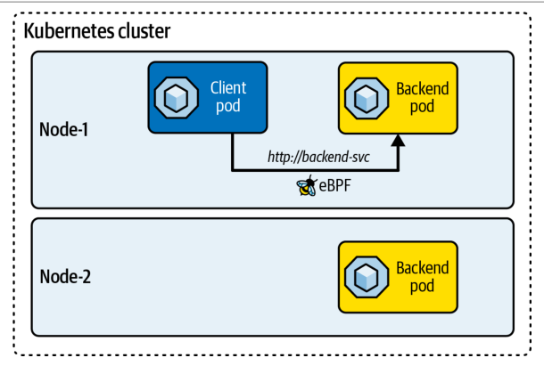
Figure 8-4. With LRP
图 8-4 使用 LRP 的情况
There are two policy types:
有两种策略类型：
代码（原文）
AddressMatcher
Matches an
IP:port destination and redirects locally. AddressMatcher is handy for node-local metadata caches on managed Kubernetes platforms such as EKS and GKE. For example, you can match 169.254.169.254:80 (instance metadata) and redirect those requests to a node-local cache pod. Cache misses will then go to the external metadata service.匹配一个
IP:port 目的地址并在本地重定向。AddressMatcher 对于 EKS、GKE 等托管 Kubernetes 平台上的节点本地元数据缓存非常实用。例如，你可以匹配 169.254.169.254:80（实例元数据）并将这些请求重定向到节点本地的缓存 Pod。缓存未命中时会转到外部元数据服务。代码（原文）
ServiceMatcher
Matches a specific service and redirects to node-local backends for that service. This is the most common policy type and the one used in the two examples covered in this chapter. Let’s take a look at how LRP works on a fundamental level before applying it to more specific use cases, such as NodeLocal DNS.
匹配特定服务并重定向到该服务的节点本地后端。这是最常见的策略类型，也是本章两个示例中使用的类型。在将 LRP 应用到更具体的用例（如 NodeLocal DNS）之前，让我们先了解一下 LRP 的基本工作原理。
Using LRP to Keep Traffic on the Same Node使用 LRP 将流量保持在同一节点
To start, we will consider a simple example where Local Redirect Policy will redirect traffic bound for a Kubernetes service and force traffic to be forwarded only to the local backends (i.e., on the same Kubernetes node as the source client).
首先，我们来看一个简单示例，其中本地重定向策略将重定向发往 Kubernetes Service 的流量，并强制流量仅转发到本地后端（即与源客户端在同一个 Kubernetes 节点上的后端）。
All files discussed in this section are in the chapter08/lrp directory of the book’s GitHub repository. Deploy a kind cluster (kind-cluster-config-lrp.yaml) and install Cilium (cilium-
本节讨论的所有文件都位于本书 GitHub 仓库的 chapter08/lrp 目录下。部署 kind 集群（kind-cluster-config-lrp.yaml）并安装 Cilium（cilium-
lrp-values.yaml). Note the flag required to activate this feature (
localRedirectlrp-values.yaml）。注意激活此特性所需的标志（
localRedirect代码（原文）
Policies.enabled=true).2
Next, deploy the Kubernetes pod and service for which traffic needs to be redirected (lrp-deployment.yaml). Once again, we’re using a deployment of two echo servers to show which pod receives the client request, with a service named
echo-server fronting the backend pods. The two replicas are scheduled on two different nodes. Let’s first see how, prior to using LRP, requests to the service are load-balanced across the two backends. Deploy the client (netshoot-client.yaml), then check with kubectl where each pod is scheduled:接下来，部署需要重定向流量的 Kubernetes Pod 和 Service（lrp-deployment.yaml）。同样，我们使用一个包含两个 echo 服务器的 Deployment 来展示哪个 Pod 接收到客户端请求，前端是一个名为
echo-server 的 Service。两个副本调度在两个不同的节点上。让我们先看看在使用 LRP 之前，对该 Service 的请求是如何在两个后端之间进行负载均衡的。部署客户端（netshoot-client.yaml），然后用 kubectl 检查每个 Pod 调度在哪里：代码（原文）
$ kubectl get pods -o wide NAME READY STATUS IP NODE echo-server-78fbb56cc7-phmpq 1/1 Running 10.0.0.209 kind-worker echo-server-78fbb56cc7-pvkgf 1/1 Running 10.0.2.27 kind-worker2 netshoot-client 1/1 Running 10.0.2.226 kind-worker2
Now, test access from the client to the service:
现在测试从客户端到服务的访问：
代码（原文）
$ kubectl exec -it netshoot-client -- curl echo-server:8080 Request served by echo-server-78fbb56cc7-phmpq $ kubectl exec -it netshoot-client -- curl echo-server:8080 Request served by echo-server-78fbb56cc7-pvkgf
The response includes the pod name, and we can see that requests are being distributed to both pods—the one on the same node as the client and the one on a different node. Verify that Cilium created a ClusterIP service entry pointing to backends located on both nodes:
响应中包含 Pod 名称，我们可以看到请求分布到了两个 Pod 上——与客户端在同一节点的那个和在不同节点的那个。确认 Cilium 创建了指向两个节点上后端的 ClusterIP Service 条目：
代码（原文）
$ kubectl get svc echo-server NAME TYPE CLUSTER-IP EXTERNAL-IP PORT(S) AGE echo-server ClusterIP 10.96.219.113 <none> 8080/TCP 2m37s $ kubectl exec -it -n kube-system ds/cilium -- cilium-dbg service list ID Frontend Service Type Backend 6 10.96.219.113:8080/TCP ClusterIP 1 => 10.0.0.209:8080/TCP (active) 2 => 10.0.2.27:8080/TCP (active)
Then deploy the Local Redirect Policy (svc-lrp.yaml):
然后部署本地重定向策略（svc-lrp.yaml）：
代码（原文）
apiVersion: "cilium.io/v2" kind: CiliumLocalRedirectPolicy
2While enabling KPR is not strictly required for LRP, it is recommended. See the Cilium documentation on LRP for more information on the prerequisites.
2 虽然启用 KPR 对 LRP 不是严格必需的，但推荐这样做。更多前置条件信息请参阅 Cilium 关于 LRP 的文档。
代码（原文）
metadata: name: "echo-server-lrp" spec: redirectFrontend: serviceMatcher: serviceName: echo-server namespace: default redirectBackend: localEndpointSelector: matchLabels: app.kubernetes.io/name: echo-server toPorts: - port: "8080" protocol: TCP
Identifies the Kubernetes service for which traffic should be intercepted. Cilium matches this service by name and namespace to determine which frontend requests are eligible for local redirection. Specifies the set of local pods (based on labels) and destination port to which frontend traffic should be redirected, if a matching pod exists on the same node. When a policy of this type is applied, the existing service entry created by Cilium will be replaced with a new service entry of type
LocalRedirect. This entry can only have node-local backend pods. Let’s verify the behavior by executing cilium-dbg service list on the Cilium agent running on the same node as our client pod. The following output confirms that Cilium will forward traffic to the echo-server service only to the local backend标识需要拦截流量的 Kubernetes Service。Cilium 按名称和命名空间匹配此 Service，以确定哪些前端请求有资格进行本地重定向。根据标签指定本地 Pod 集合以及目的端口，前端流量应重定向到此处（如果同一节点上存在匹配的 Pod）。应用此类型的策略时，Cilium 创建的现有 Service 条目将被一个新的
LocalRedirect 类型的 Service 条目替代。此条目只能有节点本地的后端 Pod。让我们通过在与客户端 Pod 在同一节点上运行的 Cilium Agent 上执行 cilium-dbg service list 来验证该行为。以下输出确认 Cilium 将把发往 echo-server 服务的流量仅转发到本地后端代码（原文）
(echo-server-78fbb56cc7-pvkgf, with IP 10.0.2.27): $ kubectl -n kube-system exec -it cilium-5d5jq -- cilium-dbg service list 7 10.96.219.113:8080/TCP LocalRedirect 1 => 10.0.2.27:8080/TCP (active)
By running the
curl command several times in a loop, we can see that only the pod colocated on the same node as the client receives the request:通过循环多次运行
curl 命令，我们可以看到只有与客户端在同一节点上的 Pod 接收到请求：代码（原文）
$ for i in {1..20}; do
echo -n "Req $i -> "
kubectl exec netshoot-client -- curl -s echo-server:8080 \
| grep "Request served by" \
| awk '{print $4}'
done
Request 1 -> echo-server-78fbb56cc7-pvkgf
Request 2 -> echo-server-78fbb56cc7-pvkgf
[...]
Request 19 -> echo-server-78fbb56cc7-pvkgf
Request 20 -> echo-server-78fbb56cc7-pvkgfThe Local Redirect Policy ensured traffic stayed on the same node.
本地重定向策略确保了流量保持在同一节点上。
Using LRP to Redirect DNS Traffic Locally使用 LRP 在本地重定向 DNS 流量
The most common use case for LRP is to optimize DNS performance, alongside the NodeLocal DNSCache Kubernetes architecture. This architecture relies on a DNS caching agent running on each cluster node as a DaemonSet. With LRP you can be sure that DNS traffic from a pod goes to the DNS cache running on the same node as the pod, reducing latency, among other benefits. Before using LRP to redirect DNS traffic and optimize latency, we first need to create a local DNS node-cache (node-local-dns.yaml). The manifest is rather long, so let’s summarize some of the core components:
LRP 最常见的用例是优化 DNS 性能，与 NodeLocal DNSCache Kubernetes 架构配合使用。此架构依赖于一个作为 DaemonSet 在每个集群节点上运行的 DNS 缓存代理。使用 LRP，你可以确保来自 Pod 的 DNS 流量发往与该 Pod 在同一节点上运行的 DNS 缓存，从而降低延迟，并带来其他好处。在使用 LRP 重定向 DNS 流量并优化延迟之前，我们首先需要创建一个本地 DNS 节点缓存（node-local-dns.yaml）。该清单相当长，因此我们来总结其中一些核心组件：
- The service account named
node-local-dnswill be used by the DaemonSet to名为node-local-dns的 ServiceAccount 将由 DaemonSet 使用，以便在
run with specific permissions in the cluster.
集群中以特定权限运行。
- The service named
kube-dns-upstreamexposes port 53 for DNS queries over名为kube-dns-upstream的 Service 暴露端口 53，用于通过
both UDP and TCP and forwards them to a target port on the DNS pods selected by the
k8s-app: kube-dns label (the coreDNS pods). This service is used to handle upstream DNS queries when the node-local DNS cache is not able to resolve a request.UDP 和 TCP 进行 DNS 查询，并将它们转发到由
k8s-app: kube-dns 标签选中的 DNS Pod（即 coreDNS Pod）上的目标端口。此服务用于在节点本地 DNS 缓存无法解析请求时处理上游 DNS 查询。- The ConfigMap defines the CoreDNS configuration (Corefile) for DNS cachingConfigMap 定义了用于节点级 DNS 缓存的 CoreDNS 配置（Corefile）
on the node level: ——It defines behavior for DNS requests in the
cluster.local domain (Kubernetes service discovery) and external DNS queries (outside cluster.local). ——Caching is configured with success and denial limits for both cluster.local and reverse lookup zones (in-addr.arpa and ip6.arpa). ——Metrics are exposed on port 9253 for Prometheus and health checks are enabled.：——它定义了
cluster.local 域（Kubernetes 服务发现）和外部 DNS 查询（cluster.local 之外）中 DNS 请求的行为。——为 cluster.local 和反向查找区域（in-addr.arpa 和 ip6.arpa）配置了成功和拒绝限制的缓存。——在端口 9253 为 Prometheus 暴露指标，并启用了健康检查。- The DaemonSet named
node-local-dnsruns anode-cachecontainer on every名为node-local-dns的 DaemonSet 在集群的每个节点上运行一个node-cache容器
node in the cluster: ——Each node will have a local DNS caching service, which significantly reduces DNS lookup times for workloads on the node. ——The DaemonSet doesn’t use the cluster’s default DNS settings but instead relies on its own DNS configuration. ——The
args define the local IP addresses for the cache (169.254.20.10 and 10.96.0.10), which are the node-local IPs used by this service. ——It exposes ports 53 for DNS (both TCP and UDP) and port 9253 for metrics. Health checks are configured via the /health endpoint. Once this is deployed, you will see a DNS agent running on each node:：——每个节点都有一个本地 DNS 缓存服务，这显著降低了节点上工作负载的 DNS 查询时间。——DaemonSet 不使用集群的默认 DNS 设置，而是依赖自己的 DNS 配置。——
args 定义了缓存的本地 IP 地址（169.254.20.10 和 10.96.0.10），这是此服务使用的节点本地 IP。——它暴露端口 53 用于 DNS（TCP 和 UDP）以及端口 9253 用于指标。健康检查通过 /health 端点配置。部署完成后，你将看到每个节点上都运行着一个 DNS 代理：代码（原文）
$ kubectl get pods -n kube-system -o wide NAME READY STATUS IP NODE node-local-dns-h5hgx 1/1 Running 10.0.1.252 kind-control-plane node-local-dns-kvvmk 1/1 Running 10.0.2.20 kind-worker2 node-local-dns-xrwvl 1/1 Running 10.0.0.172 kind-worker
Next, deploy the following Local Redirect Policy (dns-lrp.yaml). The policy will redirect traffic bound to the CoreDNS servers, forwarding it to the node-local DNS cache agents:
接下来，部署以下本地重定向策略（dns-lrp.yaml）。该策略将重定向发往 CoreDNS 服务器的流量，将其转发到节点本地的 DNS 缓存代理：
代码（原文）
apiVersion: "cilium.io/v2" kind: CiliumLocalRedirectPolicy metadata: name: "nodelocaldns" namespace: kube-system spec: redirectFrontend: serviceMatcher: serviceName: kube-dns namespace: kube-system redirectBackend: localEndpointSelector: matchLabels: k8s-app: node-local-dns toPorts: - port: "53" name: dns protocol: UDP - port: "53" name: dns-tcp protocol: TCP
Look on any of the Cilium agents and you will now see
LocalRedirect entries for the DNS service, over TCP and UDP ports:查看任意一个 Cilium Agent，你现在应该能看到 DNS 服务的
LocalRedirect 条目，覆盖 TCP 和 UDP 端口：代码（原文）
$ kubectl exec -it ds/cilium -n kube-system -- cilium-dbg service list ID Frontend Service Type Backend 3 10.96.0.10:53/UDP LocalRedirect 1 => 10.244.2.46:53/UDP (active) 4 10.96.0.10:53/TCP LocalRedirect 1 => 10.244.2.46:53/TCP (active)
You can verify that the redirects are working by checking the DNS caches’ metrics. First, let’s get the IP of the DNS cache pod on the
kind-worker node (where our client was deployed):你可以通过检查 DNS 缓存的指标来验证重定向是否正常工作。首先，让我们获取
kind-worker 节点上的 DNS 缓存 Pod 的 IP（我们的客户端部署在此处）：代码（原文）
$ DNS_LOCAL="$(kubectl -n kube-system get po \
-l k8s-app=node-local-dns \
--field-selector spec.nodeName=kind-worker \
-o jsonpath='{.items[].status.podIP}')"
$ echo "$DNS_LOCAL"
10.0.0.172Let’s also get the IP of the “non-local” DNS cache pod:
我们还来获取"非本地"DNS 缓存 Pod 的 IP：
代码（原文）
$ DNS_NON_LOCAL="$(kubectl -n kube-system get po \
-l k8s-app=node-local-dns \
--field-selector spec.nodeName=kind-worker2 \
-o jsonpath='{.items[].status.podIP}')"
$ echo "$DNS_NON_LOCAL"
10.0.2.20We can now make DNS requests from the client pod and check the DNS request counts on the local DNS cache pod and the one running on the other worker node:
现在我们可以从客户端 Pod 发起 DNS 请求，并检查本地 DNS 缓存 Pod 和运行在另一个工作节点上的 DNS 缓存 Pod 的 DNS 请求计数：
代码（原文）
$ kubectl exec netshoot-client -- curl "$DNS_LOCAL:9253/metrics" | \
grep 'coredns_dns_request_size_bytes_count'
coredns_dns_request_count_total{zone="cluster.local."} 1 # local
$ kubectl exec netshoot-client -- curl "$DNS_NON_LOCAL:9253/metrics" | \
grep 'coredns_dns_request_size_bytes_count'
coredns_dns_request_count_total{zone="cluster.local."} 1 # non-localThe values here indicate that only one request has been made to each DNS cache. Let’s run a few DNS requests, and then check the counts again:
这里的值表明每个 DNS 缓存只收到一个请求。让我们运行几个 DNS 请求，然后再次检查计数：
代码（原文）
$ kubectl exec netshoot-client -- nslookup oreilly.com
$ kubectl exec netshoot-client -- nslookup isovalent.com
$ kubectl exec netshoot-client -- nslookup cilium.io
$ kubectl exec netshoot-client -- curl "$DNS_LOCAL:9253/metrics" | \
grep 'coredns_dns_request_size_bytes_count'
coredns_dns_request_count_total{zone="cluster.local."} 14 # local
$ kubectl exec netshoot-client -- curl "$DNS_NON_LOCAL:9253/metrics" \
| grep 'coredns_dns_request_size_bytes_count'
coredns_dns_request_count_total{zone="cluster.local."} 1 # non-localAs expected, it increases for the local DNS cache, while the number for the other cache stays the same.
正如预期，本地 DNS 缓存的计数增加了，而另一个缓存的数量保持不变。
Direct Server Return直接服务器返回
We’ll discuss controlling traffic entering the cluster from external sources and leaving the cluster (ingress and egress) in Chapters 10 and 11, respectively. For traffic returning to the client, an optional feature that can help improve performance is Direct Server Return (DSR). Consider a situation where a service is exposed externally (through NodePort or LoadBalancer) and the service endpoint runs on a different node (
Node-2) from the node the client connects to (Node-1), as illustrated in Figure 8-5.我们将在第 10 章和第 11 章分别讨论控制从外部来源进入集群和离开集群的流量（入站和出站）。对于返回给客户端的流量，一个可以帮助提升性能的可选特性是直接服务器返回（DSR）。考虑这样一种情况：一个服务对外暴露（通过 NodePort 或 LoadBalancer），而服务端点运行在与客户端连接的节点（
Node-1）不同的节点（Node-2）上，如图 8-5 所示。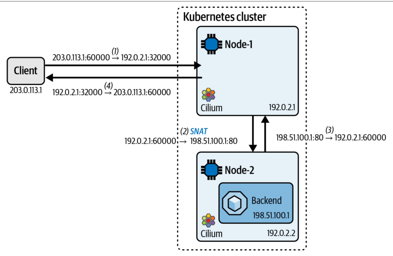
Figure 8-5. Without DSR
图 8-5 未使用 DSR 的情况
When
Node-1 forwards client requests to Node-2, it will source-NAT the traffic, replacing the client’s IP address with its internal IP from its own PodCIDR. This has two negative implications: Loss of observability The backend receiving the traffic sees the packet as originating from Node-1 instead of the actual client. Indirect return path The backend traffic is sent to Node-1 and then on to the client, instead of directly to the client. Cilium’s DSR feature leverages eBPF to preserve the source IP address and to ensure traffic is returned directly to the client, as illustrated in Figure 8-6.当
Node-1 将客户端请求转发到 Node-2 时，它会对流量进行源地址转换，将客户端的 IP 地址替换为它自己 PodCIDR 中的内部 IP。这有两个负面影响：可观测性丢失接收流量的后端看到的数据包来自 Node-1 而非实际客户端。 间接返回路径后端流量先发送到 Node-1，然后再到客户端，而不是直接发送给客户端。Cilium 的 DSR 特性利用 eBPF 保留源 IP 地址，并确保流量直接返回给客户端，如图 8-6 所示。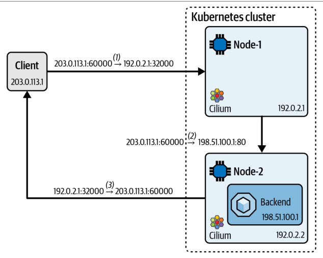
Figure 8-6. Node port access with Direct Server Return
图 8-6 使用直接服务器返回的 Node 端口访问
All files discussed in this section are in the chapter08/dsr directory of the book’s GitHub repository.
本节讨论的所有文件都位于本书 GitHub 仓库的 chapter08/dsr 目录下。
Before trying out DSR, let’s see what happens without it, which is Cilium’s default behavior. In a generic kind cluster (
kind create cluster --configkind.yaml) with a default Cilium installation, deploy the following manifests (dsrdeployment.yaml and dsr-service.yaml). It’s a deployment of two replicas running a simple “What’s My IP?” application and an associated NodePort service:在尝试 DSR 之前，让我们先看看没有 DSR 时会发生什么——这是 Cilium 的默认行为。在一个通用 kind 集群（
kind create cluster --configkind.yaml）上，使用默认 Cilium 安装，部署以下清单（dsrdeployment.yaml 和 dsr-service.yaml）。这是一个运行简单"What's My IP?"应用的两副本 Deployment 以及关联的 NodePort Service：代码（原文）
apiVersion: apps/v1 kind: Deployment metadata: name: echo spec: replicas: 2 selector: matchLabels: app.kubernetes.io/name: echo template: metadata: labels: app.kubernetes.io/name: echo spec: containers: - name: echo image: quay.io/isovalent-dev/egressgw-whatismyip:latest ports: - containerPort: 8000 --- apiVersion: v1 kind: Service metadata: name: echo-nodeport spec: type: NodePort selector: app.kubernetes.io/name: echo ports: - port: 80 targetPort: 8000 protocol: TCP nodePort: 30080
Start a client container on the same Docker network, with the following command:
在同一个 Docker 网络上启动一个客户端容器，使用以下命令：
代码（原文）
$ docker run -d --network kind --rm --name client nicolaka/netshoot:v0.8 \ sleep infinity
Its IP is
172.18.0.5—let’s check if this is the IP returned by the “What’s My IP?” service:它的 IP 是
172.18.0.5——我们来检查一下这是否是"What's My IP?"服务返回的 IP：代码（原文）
$ docker exec -it client ip -4 -o a show eth0 | awk '{print $4}'
172.18.0.5/16Now, access the service over the
kind-control-plane node from the client container using the allocated node port of the service (30080 in our example):现在，从客户端容器通过
kind-control-plane 节点访问该服务，使用为服务分配的节点端口（在我们的示例中是 30080）：代码（原文）
$ kubectl get svc NAME TYPE CLUSTER-IP EXTERNAL-IP PORT(S) AGE echo-nodeport NodePort 10.96.40.253 <none> 80:30080/TCP 10m kubernetes ClusterIP 10.96.0.1 <none> 443/TCP 46m $ kubectl get nodes -o wide NAME STATUS ROLES AGE VERSION INTERNAL-IP kind-control-plane Ready control-plane 46m v1.33.0 172.18.0.4 kind-worker Ready <none> 46m v1.33.0 172.18.0.3 kind-worker2 Ready <none> 46m v1.33.0 172.18.0.2 $ docker exec -it client curl 172.18.0.4:30080 10.244.0.232
The response shows the client’s IP address—however, it is not the client’s source IP address but an internal pod IP address (10.244.0.232) assigned to the
kind-controlplane node:响应显示了客户端的 IP 地址——然而，这不是客户端的源 IP 地址，而是分配给
kind-controlplane 节点的内部 Pod IP 地址（10.244.0.232）：代码（原文）
$ docker exec kind-control-plane ip a [...] 13: cilium_host@cilium_net: <BROADCAST,MULTICAST,NOARP,UP,LOWER_UP> mtu 65520 qdisc noqueue state UP group default qlen 1000 link/ether 7e:48:5d:5d:f4:c4 brd ff:ff:ff:ff:ff:ff inet 10.244.0.232/32 scope global cilium_host
This confirms that, when forwarding packets to the worker nodes where the backends reside,
kind-control-plane changes the source IP to its own. Let’s now try this with DSR. Use the following Helm values (cilium-dsr-values.yaml). Set the loadBalancer.mode=dsr flag to enable DSR. Note that DSR requires KPR and is only supported in native routing mode or with Geneve (it is not currently supported with VXLAN encapsulation):这证实了，当将数据包转发到后端所在的工作节点时，
kind-control-plane 会将源 IP 改为自己的。现在让我们试试 DSR。使用以下 Helm 值（cilium-dsr-values.yaml）。设置 loadBalancer.mode=dsr 标志来启用 DSR。注意 DSR 需要 KPR，并且仅在原生路由模式或使用 Geneve 时才受支持（目前不支持 VXLAN 封装）：代码（原文）
kubeProxyReplacement: true routingMode: native ipv4NativeRoutingCIDR: "172.18.0.0/16" autoDirectNodeRoutes: true k8sServiceHost: "kind-control-plane" k8sServicePort: 6443 loadBalancer: mode: "dsr"
After installation, verify that DSR is enabled:
安装完成后，验证 DSR 是否启用：
代码（原文）
$ kubectl -n kube-system exec ds/cilium -- cilium-dbg status --verbose KubeProxyReplacement: True Mode: DSR DSR Dispatch Mode: IP Option/Extension
Apply the deployment (dsr-deployment.yaml) and service (dsr-service.yaml) once more before accessing the “What’s My IP?” service over NodePort again:
再次应用 Deployment（dsr-deployment.yaml）和 Service（dsr-service.yaml），然后再通过 NodePort 访问"What's My IP?"服务：
代码（原文）
$ docker exec -it client curl 172.18.0.4:30080 172.18.0.5
With DSR enabled, the address the service returns is the IP of the client. This confirms the source IP was preserved and the server replied directly back to the client. You can verify that the service entry in the eBPF map is set to
dsr with:启用 DSR 后，服务返回的地址是客户端的 IP。这证实了源 IP 被保留，服务器直接回复给了客户端。你可以用以下命令验证 eBPF 映射中的服务条目已设置为
dsr：代码（原文）
$ kubectl -n kube-system exec -it ds/cilium -- cilium-dbg bpf lb list [...] SERVICE ADDRESS BACKEND ADDRESS (REVNAT_ID) (SLOT) 172.18.0.4:30080/TCP (0) 0.0.0.0:0 (7) (0) [NodePort, dsr]
As a final note on DSR, you might recall that in Chapter 6 we introduced
externalTrafficPolicy: Local as a way to preserve source IPs when services are accessed from outside the cluster. DSR achieves the same goal using a different mechanism. The key differences are:关于 DSR 的最后一点说明，你可能还记得第 6 章中我们介绍了
externalTrafficPolicy: Local，作为在服务从集群外部访问时保留源 IP 的一种方式。DSR 使用不同的机制实现了相同的目标。主要区别在于：- The
Localexternal traffic policy is configured per service. It preserves the sourceLocal外部流量策略按服务配置。它通过确保流量仅路由到
IP by ensuring traffic is only routed to nodes that host a backend pod. Return traffic is sent via the host network stack.
承载后端 Pod 的节点来保留源 IP。返回流量通过宿主机网络协议栈发送。
- DSR is enabled at the cluster level in Cilium’s configuration. It allows externalDSR 在 Cilium 配置中的集群级别启用。它允许外部
traffic to be received by any node, even if it does not host a backend.
流量被任意节点接收，即使该节点不承载后端。
eXpress Data PatheXpress Data Path
The eXpress Data Path (XDP) feature allows for eBPF code to be executed in hardware directly on the physical network interface, processing packets before they even transit to the CPU and the kernel. The main use cases for XDP are protection against distributed denial-of-service (DDoS) attacks and firewalling, since XDP enables packets to be dropped early with minimal overhead. XDP also supports load balancing and forwarding, including redirection to other network interfaces or CPU cores, and it can be used for pre-stack filtering, such as dropping unwanted protocols like UDP or Stream Control Transmission Protocol (SCTP) before they reach the kernel’s networking stack. Unlike user space frameworks such as Data Plane Development Kit (DPDK), XDP still works in cooperation with the kernel. This means you can offload the fast path to XDP while leaving the kernel to handle more complex processing, such as full TCP connection tracking or policy enforcement. XDP applies only to packets that arrive through a physical network interface. Traffic between pods on the same node, for example, does not pass through the network interface controller (NIC) and will not benefit. However, for ingress traffic from external clients or LoadBalancer services, XDP can reduce per-packet latency and CPU usage by processing traffic earlier in the stack. To enable XDP with Cilium, set
loadBalancer.acceleration=native. This enables native XDP mode if supported by the NIC driver. Most modern drivers support XDP, but if the hardware does not, the setting may be ignored or fall back to a safer configuration. You can also use best-effort to allow automatic fallback.eXpress Data Path（XDP）特性允许 eBPF 代码直接在物理网络接口的硬件中执行，在数据包尚未传输到 CPU 和内核之前对其进行处理。XDP 的主要用例是防止分布式拒绝服务（DDoS）攻击和防火墙功能，因为 XDP 能够以最小开销尽早丢弃数据包。XDP 还支持负载均衡和转发，包括重定向到其他网络接口或 CPU 核心，并且可用于协议栈之前的过滤，例如在数据包到达内核网络协议栈之前丢弃不想要的协议（如 UDP 或流控制传输协议（SCTP））。与用户空间框架（如数据平面开发套件（DPDK））不同，XDP 仍然与内核配合工作。这意味着你可以将快速路径卸载到 XDP，同时让内核处理更复杂的处理，例如完整的 TCP 连接跟踪或策略执行。XDP 仅适用于通过物理网络接口到达的数据包。例如，同一节点上 Pod 之间的流量不会经过网络接口控制器（NIC），因此无法受益。然而，对于来自外部客户端或 LoadBalancer 服务的入站流量，XDP 可以通过在协议栈中更早地处理流量来降低每个数据包的延迟和 CPU 使用率。要在 Cilium 中启用 XDP，请设置
loadBalancer.acceleration=native。如果 NIC 驱动支持，这会启用原生 XDP 模式。大多数现代驱动都支持 XDP，但如果硬件不支持，该设置可能会被忽略或回退到更安全的配置。你也可以使用 best-effort 来允许自动回退。XDP is not enabled by default because not all NIC drivers support native XDP mode. Enabling it unconditionally could lead to errors or degraded performance. Use
loadBalancer.acceleration=native to enable XDP explicitly, or best-effort to allow fallback on unsupported hardware.XDP 默认未启用，因为并非所有 NIC 驱动都支持原生 XDP 模式。无条件启用可能会导致错误或性能下降。使用
loadBalancer.acceleration=native 显式启用 XDP，或使用 best-effort 允许在不受支持的硬件上回退。If you want to understand XDP in more detail, we recommend Learning eBPF by Liz Rice (O’Reilly), which offers a clear and accessible explanation of how XDP fits into the broader eBPF ecosystem.
如果你想更深入地了解 XDP，我们推荐 Liz Rice（O'Reilly）的 Learning eBPF，该书对 XDP 如何融入更广泛的 eBPF 生态系统提供了清晰而易懂的解释。
Maglev Consistent HashingMaglev 一致性哈希
By default, Cilium load-balances service-bound traffic randomly across backends. This can be verified in a cluster with Cilium’s default settings:
默认情况下，Cilium 会将发往 Service 的流量随机负载均衡到各个后端。可以在使用 Cilium 默认配置的集群中验证这一点：
代码（原文）
$ kubectl -n kube-system exec -it ds/cilium -- cilium-dbg status --verbose [...] Backend Selection: Random
The problem with this approach is that, if the node handling a connection fails, the next request may land on another node that has no knowledge of which backend pod was previously selected. As a result, connection-oriented protocols like TCP may experience unexpected disruptions, because the backend selected by the new external node has no knowledge of the original connection and responds by rejecting it. Figure 8-7 illustrates random load balancing: A client connects to an external-facing node (Node 1). Node 1 randomly selects a backend (for example, Node 3) and forwards the traffic. If Node 1 fails, the client’s next packet reaches a different external node (Node 2). Node 2 also performs random load balancing and might select a different node (such as Node 4). Node 4 has no state for the original connection and responds by resetting it.3
这种方式的问题在于，如果处理某个连接的节点发生故障，下一次请求可能会落到另一个之前并不知道选择了哪个后端 Pod 的节点上。因此，像 TCP 这样的面向连接协议可能会出现意外中断，因为新的外部节点所选择的后端不了解原始连接，会以拒绝的方式进行响应。图 8-7 展示了随机负载均衡的工作原理：客户端连接到一个对外暴露的节点（节点 1），节点 1 随机选择一个后端（例如节点 3）并转发流量。如果节点 1 发生故障，客户端的下一个数据包会到达另一个外部节点（节点 2），节点 2 同样执行随机负载均衡，可能会选择另一个不同的节点（如节点 4）。节点 4 没有原始连接的状态信息，因此会通过重置连接来响应。³
3When a TCP packet reaches a backend pod that did not see the initial handshake, it has no session context and treats the packet as invalid. It responds with a TCP RST (reset), which instructs the client to immediately terminate the connection.
³当 TCP 数据包到达一个没有参与过初始握手的后端 Pod 时，它没有会话上下文，会将该数据包视为无效，并以 TCP RST（重置）进行响应，指示客户端立即终止连接。
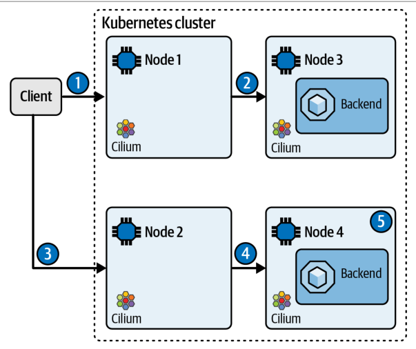
Figure 8-7. Random load balancing (default)
图 8-7 随机负载均衡（默认）
To address this, Maglev provides consistent hashing, ensuring that client connections identified by the same 5-tuple—source IP address, source port, destination IP address, destination port, and transport protocol—are routed to the same backend, regardless of which external node handles the request. This helps avoid connection drops during node failures or load balancer changes. Operators should consider enabling it when session stickiness and stability are critical, especially for TCP-based workloads.
为了解决这个问题，Maglev 提供了 一致性哈希，确保由相同五元组——源 IP 地址、源端口、目的 IP 地址、目的端口和传输协议——标识的客户端连接，无论哪个外部节点处理请求，都会被路由到相同的后端。这有助于在节点故障或负载均衡器变更期间避免连接中断。运维人员应在会话粘性和稳定性至关重要时考虑启用它，尤其是对于基于 TCP 的工作负载。
Maglev,4 originally created by Google, provides consistent hashing to minimize disruption during node or backend changes. Each load-balancing node hashes the packet’s 5-tuple against a shared lookup table. As a result, all nodes independently arrive at the same backend selection without needing to share state. This approach improves resilience and ensures stable load balancing, even as nodes or backends are added or removed. However, Maglev is not enabled by default in Cilium because it introduces a fixed-size lookup table and may slightly increase memory usage. Most users will not need it unless their workloads require strong session affinity or must gracefully handle node-level disruptions. For a deeper dive, see the Maglev whitepaper.
Maglev⁴ 最初由 Google 创建，提供一致性哈希以最小化节点或后端变更期间的扰动。每个负载均衡节点都会将数据包的五元组哈希到一个共享查找表中。因此，所有节点无需共享状态即可独立得出相同的后端选择。这种方法提高了弹性，并在节点或后端增删时仍能保持稳定的负载均衡。不过，Maglev 在 Cilium 中默认并未启用，因为它引入了固定大小的查找表，可能会略微增加内存使用。大多数用户不需要它，除非其工作负载需要强会话亲和性或必须优雅地处理节点级别的故障。如需深入了解，请参阅 Maglev 白皮书。
Figure 8-8 illustrates Maglev load balancing with Cilium: A client connects to an external-facing node (Node 1). Node 1 uses Maglev to deterministically select backend Node 3, based on the connection’s 5-tuple. If Node 1 fails, the client retries via Node 2. Node 2 uses the same Maglev hash and also selects Node 3. Node 3 continues handling the session without interruption.
图 8-8 展示了 Cilium 中 Maglev 负载均衡的工作原理：客户端连接到一个对外暴露的节点（节点 1），节点 1 使用 Maglev 基于连接的五元组确定性地选择后端节点 3。如果节点 1 发生故障，客户端通过节点 2 重试。节点 2 使用相同的 Maglev 哈希，同样选择节点 3，节点 3 继续无中断地处理会话。
4The name “Maglev” refers to magnetic levitation, the technology used in high-speed trains such as the Japanese Shinkansen. The original paper described the load balancer as fast, highly available, and easily scalable, much like its namesake.
⁴"Maglev" 这个名称源自 磁悬浮（magnetic levitation），即日本新干线等高速列车所使用的技术。原论文将该负载均衡器描述为快速、高可用且易于扩展，与其名称相呼应。
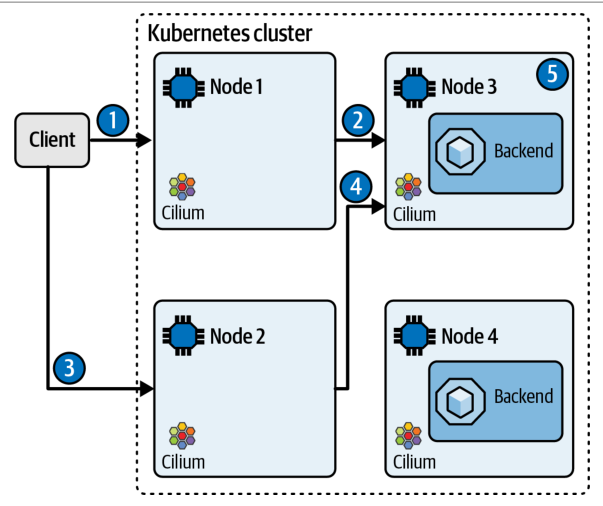
Figure 8-8. Maglev load balancing
图 8-8 Maglev 负载均衡
All files discussed in this section are in the chapter08/maglev directory of the book’s GitHub repository.
本节讨论的所有文件都位于本书 GitHub 仓库的 chapter08/maglev 目录中。
To illustrate how Maglev load balancing using Cilium with BGP and DSR works in practice, we’ve provided a script (setup-maglev.sh) that automates the setup of a suitable environment. It builds a kind cluster with one control plane and four worker nodes. Two of the worker nodes are configured to act as external-facing BGP speakers, while the remaining two host backend workloads. The script also deploys and configures the BGP peer. The topology is illustrated in Figure 8-9. The script installs Cilium with KPR enabled (a requirement for Maglev) and configured for native routing, DSR, and the Maglev load balancing algorithm:
为了演示 Cilium 配合 BGP 和 DSR 的 Maglev 负载均衡在实际中如何工作，我们提供了一个脚本（setup-maglev.sh）来自动搭建合适的环境。该脚本创建一个 kind 集群，包含一个控制平面和四个工作节点。其中两个工作节点被配置为对外暴露的 BGP 发言者，其余两个则承载后端工作负载。脚本还会部署并配置 BGP 对等体。其拓扑如图 8-9 所示。脚本在安装 Cilium 时启用 KPR（Maglev 的必要条件），并配置为原生路由、DSR 以及 Maglev 负载均衡算法：
代码（原文）
kubeProxyReplacement: true loadBalancer: mode: "dsr" algorithm: "maglev" bgpControlPlane: enabled: true
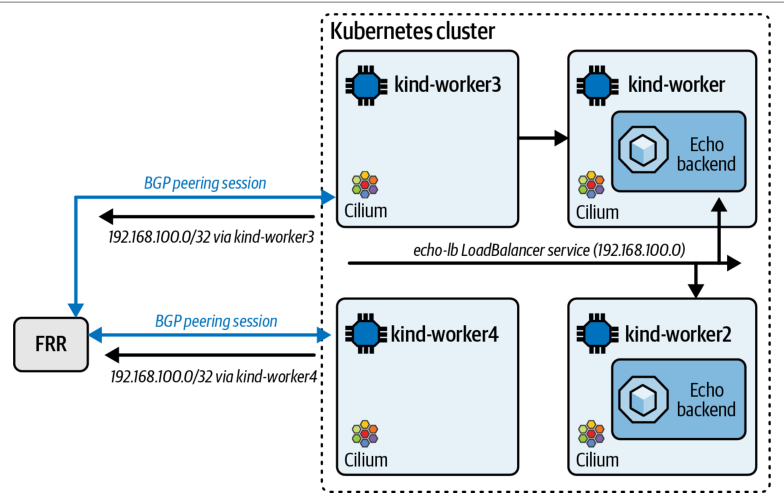
Figure 8-9. Maglev topology
图 8-9 Maglev 拓扑
To demonstrate Maglev behavior, the script deploys an echo server with two backend pods across the
kind-worker and kind-worker2 nodes. It also creates a LoadBalancer service with the IP 192.168.100.0:为了演示 Maglev 的行为，脚本会在
kind-worker 和 kind-worker2 节点上部署一个带有两个后端 Pod 的 echo 服务器。它还会创建一个 IP 为 192.168.100.0 的 LoadBalancer Service：代码（原文）
$ kubectl get deployment echo NAME READY UP-TO-DATE AVAILABLE AGE echo 2/2 2 2 94s $ kubectl get svc echo-lb NAME TYPE CLUSTER-IP EXTERNAL-IP PORT(S) AGE echo-lb LoadBalancer 10.96.67.194 192.168.100.0 8080:31024/TCP 88s
When the cluster is ready, verify that Cilium is healthy with
cilium-dbg status and that Maglev is chosen as the load balancing algorithm:当集群就绪后，使用
cilium-dbg status 确认 Cilium 运行正常，并验证 Maglev 已被选为负载均衡算法：代码（原文）
$ kubectl -n kube-system exec -it ds/cilium -- cilium-dbg status --verbose KubeProxyReplacement Details: [...] Backend Selection: Maglev (Table Size: 16381)
BGP peering sessions should be established between the cluster and the BGP peers:
BGP 对等会话应已在集群和 BGP 对等体之间建立：
代码（原文）
$ cilium bgp peers Node Peer State Uptime Family Recv Adv kind-worker3 172.18.0.8 established 28s ipv4/unicast 0 1 kind-worker4 172.18.0.8 established 29s ipv4/unicast 0 1
Access the FRRouting (FFR) device with
docker exec -it frr vtysh, and then check the routing table to verify that the device has received the route to the service使用
docker exec -it frr vtysh 访问 FRRouting (FFR) 设备，然后检查路由表以验证该设备已收到通往该 Service 的路由代码（原文）
IP 192.168.100.0/32: 75ea0285c9ea# show ip route bgp B>* 192.168.100.0/32 [20/0] via 172.18.0.2, eth0, weight 1, 00:01:34 * via 172.18.0.3, eth0, weight 1, 00:01:34
Next, access the FRR shell with
docker exec -it frr bash and install curl with apkadd curl to verify successful access to the service:接下来，使用
docker exec -it frr bash 进入 FRR shell，并用 apk add curl 安装 curl，以验证是否能成功访问该 Service：代码（原文）
bash-5.1# curl http://192.168.100.0:8080 Request served by echo-f69bb6cf9-4sm72
In the backend’s response, you can see the pod name (here,
echo-f69bb6cf9-4sm72). If you run the same command multiple times, you will see responses coming from both pods, indicating inconsistent hashing. This is because the hashing is based on the 5-tuple, and by default, the source port will automatically change. You need to fix the source port, with a command like the following:在后端的响应中，你可以看到 Pod 的名称（此处为
echo-f69bb6cf9-4sm72）。如果你多次运行相同的命令，会看到响应来自两个 Pod，这说明哈希结果 不一致。这是因为哈希基于五元组，而默认情况下源端口会自动变化。你需要固定源端口，使用如下命令：代码（原文）
$ curl --local-port 6000 http://192.168.100.0:8080
If you repeat this command every minute or so, you will now see the same backend pod answering, confirming consistent hashing. If you run the same command too quickly, you’re likely to see an error message
如果你每隔一分钟左右重复执行此命令，现在应该会看到由同一个后端 Pod 响应，这确认了一致性哈希的工作。如果运行太快，可能会看到错误消息
代码（原文）
like curl: (45) bind failed with errno 98: Address in use. This happens
because the source port specified with
--local-port is still in use. The operating system prevents rebinding to the same local port too soon, to avoid ambiguity in connection tracking. This can be particularly problematic when trying to demonstrate connection consistency (e.g., with Maglev) where fixed source ports are required for deterministic load balancing behavior. A simple workaround is to introduce a delay (e.g., sleep 5) between connection attempts or cycle through a range of source ports. The simple-maglev-test.sh script located in the book’s GitHub repository verifies that Maglev consistently maps a given 5-tuple to the same backend pod across repeated requests. It sends traffic from the FRR client across 10 consecutive ports and prints the selected backends:因为用
--local-port 指定的源端口仍在使用中。操作系统会阻止过快地重新绑定到相同的本地端口，以避免连接跟踪中的歧义。当需要演示连接一致性（例如使用 Maglev 时），其中固定源端口对于确定性的负载均衡行为是必需的，这可能会特别成问题。一个简单的变通方法是在连接尝试之间引入延迟（例如 sleep 5），或者在一系列源端口之间循环。本书 GitHub 仓库中的 simple-maglev-test.sh 脚本会验证 Maglev 在多次请求中是否始终将给定的五元组映射到相同的后端 Pod。它从 FRR 客户端跨越 10 个连续端口发送流量，并打印所选择的后端：代码（原文）
$ ./simple-maglev-test.sh Simple Maglev consistency test from FRR container Target: 192.168.100.0:8080 Testing 10 requests with fixed source ports Testing Maglev consistency: Format: SourcePort -> Backend Port 60001 -> echo-f69bb6cf9-42hmc Port 60002 -> echo-f69bb6cf9-42hmc Port 60003 -> echo-f69bb6cf9-nscx5 Port 60004 -> echo-f69bb6cf9-nscx5 Port 60005 -> echo-f69bb6cf9-nscx5 Port 60006 -> echo-f69bb6cf9-nscx5 Port 60007 -> echo-f69bb6cf9-42hmc Port 60008 -> echo-f69bb6cf9-42hmc Port 60009 -> echo-f69bb6cf9-42hmc Port 60010 -> echo-f69bb6cf9-nscx5 Test complete!
If you repeat the same command (after waiting a few minutes, to avoid the port rebinding issue), it will generate another set of results. Compare these with the previous output. The result should be the same, confirming consistent hashing:
如果你重复执行相同的命令（等待几分钟以避免端口重新绑定问题），它会生成另一组结果。将这些与之前的输出进行比较，结果应该相同，确认了一致性哈希的工作：
代码（原文）
$ ./simple-maglev-test.sh Simple Maglev consistency test from FRR container Target: 192.168.100.0:8080 Testing 10 requests with fixed source ports OK: 136 MiB in 60 packages Testing Maglev consistency: Format: SourcePort -> Backend Port 60001 -> echo-f69bb6cf9-42hmc Port 60002 -> echo-f69bb6cf9-42hmc Port 60003 -> echo-f69bb6cf9-nscx5 Port 60004 -> echo-f69bb6cf9-nscx5 Port 60005 -> echo-f69bb6cf9-nscx5 Port 60006 -> echo-f69bb6cf9-nscx5 Port 60007 -> echo-f69bb6cf9-42hmc Port 60008 -> echo-f69bb6cf9-42hmc Port 60009 -> echo-f69bb6cf9-42hmc Port 60010 -> echo-f69bb6cf9-nscx5 Test complete!
NetkitNetkit
Most CNI plugins attach a Kubernetes pod to its node by a virtual Ethernet (veth) pair. The pod’s
eth0 interface sits in the pod network namespace and is paired with a peer in the host network namespace. This arrangement allows pods to reach other pods and external workloads through the host (refer back to Chapter 5 for a refresher on Linux and container networking primitives). If you want to confirm the pairing, a single check from within a pod is enough:大多数 CNI 插件通过一对虚拟以太网（veth）将 Kubernetes Pod 连接到其节点。Pod 的
eth0 接口位于 Pod 网络命名空间中，与主机网络命名空间中的对端配对。这种安排让 Pod 可以通过主机到达其他 Pod 和外部工作负载（可参阅第 5 章回顾 Linux 和容器网络原语的相关内容）。如果想确认配对情况，在 Pod 内进行一次检查即可：代码（原文）
netshoot-client:~# ip a show eth0 22: eth0@if23: <BROADCAST,MULTICAST,UP,LOWER_UP> mtu 65520 qdisc noqueue state UP group default qlen 1000
The
@ifN suffix indicates a veth peer. While veth pairs are widely adopted as the standard Linux container networking mechanism, the technology dates back over 15 years to Linux kernel 2.6.24 and carries several drawbacks. First, veth relies on layer 2 communication and uses ARP for a container to reach the peer end of the veth pair. This is unnecessary overhead: pods shouldn’t need to perform ARP resolution to reach a directly connected peer. More importantly, veth introduces performance costs. When traffic exits a pod or enters it from an external node, packets must traverse multiple layers: from the container’s network stack to the host namespace, and then through the host’s networking stack to the physical interface. This path includes transitions between namespaces and use of per-CPU backlog queues, all of which add latency and consume CPU cycles, especially under load. Netkit was introduced to the Linux kernel in version 6.7 by Daniel Borkmann and Nikolay Aleksandrov. The idea is simple: move the eBPF hook points into the pod network namespace so decisions can be made earlier, then steer packets to their next hop without incurring the extra transitions typical of the veth path. For egress traffic, that can mean forwarding directly to the physical device, avoiding parts of the host stack such as the per-CPU backlog queue (Figure 8-10).@ifN 后缀表示 veth 对端。虽然 veth 对已被广泛采用为 Linux 容器网络的标准机制，但这项技术可以追溯到 15 年前的 Linux 内核 2.6.24，并且存在若干不足。首先，veth 依赖二层通信，容器需要使用 ARP 来到达 veth 对的另一端。这是不必要的开销：Pod 不应该需要进行 ARP 解析才能到达直接相连的对端。更重要的是，veth 带来了性能损耗。当流量离开 Pod 或从外部节点进入时，数据包必须经过多层路径：从容器的网络栈到主机命名空间，再通过主机的网络栈到达物理接口。这条路径包含命名空间之间的切换和每 CPU 后端队列的使用，所有这些都会增加延迟并消耗 CPU 周期，尤其是在负载较高时。Netkit 由 Daniel Borkmann 和 Nikolay Aleksandrov 于 Linux 内核 6.7 版本引入。其思路很简单：将 eBPF 钩子点移入 Pod 网络命名空间，以便更早地做出决策，然后在不产生 veth 路径典型额外切换的情况下将数据包导向其下一跳。对于出站流量，这可能意味着直接转发到物理设备，绕过主机栈中的部分组件，如每 CPU 后端队列（见图 8-10）。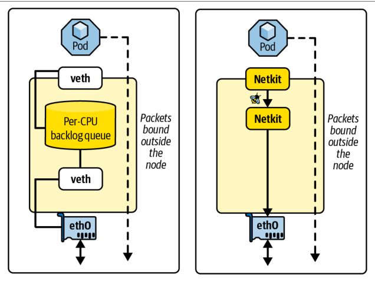
Figure 8-10. Veth versus netkit
图 8-10 Veth 与 Netkit 对比
In its initial implementation, netkit creates network devices as a pair: a primary device in the host namespace and a peer in the pod’s namespace. BPF program management is handled solely by the primary device, preventing pods from modifying or removing attached programs. This design avoids conflicts between competing eBPF applications and ensures consistent control by Cilium. Cilium integrates with netkit and can configure netkit devices in place of traditional veth pairs. By default, Cilium netkit operates at layer 3, which avoids ARP for local next-hop resolution. Layer 2 support is also available. Early adopters have noticed significant performance improvements, with Bytedance experiencing a 10% improvement in throughput, as documented in a case study. For more information on netkit, consult Nico’s Isovalent blog post and Jonathan Corbet’s article “The BPF-Programmable Network Device” on LWN.net.
在其初始实现中，Netkit 将网络设备创建为一对：主机命名空间中的主设备和 Pod 命名空间中的对端设备。BPF 程序的管理完全由主设备处理，防止 Pod 修改或移除附加的程序。这一设计避免了多个 eBPF 应用之间的冲突，并确保由 Cilium 进行统一控制。Cilium 与 Netkit 集成，可以使用 Netkit 设备替代传统的 veth 对进行配置。默认情况下，Cilium Netkit 工作在三层，这避免了为本地下一跳解析而进行 ARP。同时也提供了二层支持。早期采用者已观察到显著的性能提升，据一个案例研究记录，字节跳动的吞吐量提高了 10%。关于 Netkit 的更多信息，请参阅 Isovalent 博客上 Nico 的文章以及 LWN.net 上 Jonathan Corbet 撰写的《The BPF-Programmable Network Device》一文。
Summary小结
In this chapter, we explored several Cilium features designed to improve network performance across a variety of scenarios. We began with Service Traffic Distribution, which prioritizes sending traffic to local or nearby endpoints. We then looked at LRP, which keeps traffic node-local to avoid unnecessary latency and CPU overhead. We introduced DSR as a way to preserve source IPs and optimize return-path performance and explored XDP for early packet processing at the driver level. We also discussed Maglev for consistent hashing and connection stability and netkit for removing the legacy veth bottleneck by moving eBPF logic closer to the application. This chapter is not intended to be exhaustive. Cilium includes many other performance features that were not covered here, such as BIG TCP, BBR congestion control, advanced queue management, and integration with hardware acceleration. The aim was to provide a practical tour of some of the more widely used and impactful capabilities. In the next chapter, we’ll turn our attention to multicluster networking and explore how Cilium enables seamless connectivity and identity-aware policy enforcement across Kubernetes clusters.
本章中，我们探讨了多项旨在改进各种场景下网络性能的 Cilium 特性。我们从 Service 流量分发开始，它优先将流量发送到本地或附近的端点。随后介绍了 LRP，它将流量保持在节点本地以避免不必要的延迟和 CPU 开销。我们引入了 DSR 作为保留源 IP、优化回程路径性能的方式，并探讨了 XDP 在驱动层面对数据包进行早期处理。我们还讨论了 Maglev 的一致性哈希与连接稳定性，以及 Netkit 通过将 eBPF 逻辑移近应用来消除传统 veth 瓶颈。本章并不力求面面俱到。Cilium 还包含许多其他性能特性，这里未作涵盖，如 BIG TCP、BBR 拥塞控制、高级队列管理以及与硬件加速的集成。本章的目标是对一些更广泛使用且影响显著的功能进行一次实用的介绍。在下一章中，我们将转向多集群网络，探讨 Cilium 如何在多个 Kubernetes 集群之间实现无缝连接和基于身份的策略执行。
第 9 章Multicluster Networking多集群网络
As organizations grow, they often move beyond a single Kubernetes cluster. This jump from one to multiple environments presents a challenge for network security and observability. Cilium’s features are normally confined to the context of a single cluster. Identity is not represented across multiple clusters, so a policy to allow a pod in another cluster by its labels will not function, nor will observability features (see Chapter 15). One solution is to treat the clusters as truly independent, exposing services using load balancer services, Ingress, or Gateway API (see Chapters 6 and 7) and treating the remote cluster as no different from any other external endpoint. If only a few well-defined services are shared between clusters this can work well, but as the environment grows more complex it becomes unsustainable, requiring encoding specific CIDR ranges for services in the remote cluster across policies using
toCIDRSet (see Chapter 12), using Egress Gateway (see Chapter 11), or incorporating additional tools for observability. Cilium Cluster Mesh exists to solve these problems. Meshed clusters share networking and identity information and avoid the need to expose services beyond the cluster altogether. In this chapter we will explore the use cases for Cluster Mesh and walk through how to configure and administrate meshed clusters. You can find all the YAML manifests you will need in the chapter09 directory of the book’s GitHub repository.随着组织规模扩大，它们往往会从单一 Kubernetes 集群转向多集群环境。从一个环境跨越到多个环境为网络安全与可观测性带来了挑战。Cilium 的功能通常仅限于单个集群的上下文。身份不会跨多个集群表示，因此通过标签允许另一个集群中的 Pod 的策略无法生效，可观测性功能同样如此（见第 15 章）。一种解决思路是将集群视为真正独立的实体，通过 LoadBalancer 服务、Ingress 或 Gateway API 暴露服务（见第 6、7 章），并将远端集群视为与其他外部端点无异。如果集群之间只共享少量定义明确的服务，这种方式尚能有效工作，但随着环境日趋复杂，它会变得不可持续——需要在使用
toCIDRSet（见第 12 章）的策略中为远端集群的服务硬编码特定 CIDR 范围，或者使用出口网关（见第 11 章），或引入额外的可观测性工具。Cilium Cluster Mesh 正是为解决这些问题而生的。互联集群会共享网络与身份信息，完全避免了将服务暴露在集群之外的需求。在本章中，我们将探讨 Cluster Mesh 的适用场景，并逐步演示如何配置与管理互联集群。你可以在本书 GitHub 仓库的 chapter09 目录下找到所需的全部 YAML 清单。Multicluster Kubernetes多集群 Kubernetes
Organizations deploy multiple Kubernetes clusters for many reasons. A few common ones include: Organizational structure Organizations may find it easier to manage clusters inside the organizational units where they will be used (for example, a business unit or accounting cost center). Resilience With on-premise deployments, deploying clusters at multiple sites enables business continuity in the case of a datacenter failure at one site and “stretching” clusters across multiple regions is complex and discouraged,1 leading to multiple clusters instead. Scale limitations Beyond a certain point (usually around the 10,000-node mark), Kubernetes itself hits limitations. Multicloud setups This is often a regulatory mandate in industries such as finance or healthcare, to avoid becoming dependent on a single vendor. Regardless of the rationale, workloads will still need to communicate between clusters. If the goal is redundancy, then services will need to be deployed across multiple clusters, and client workloads will need a way of communicating across cluster boundaries. As mentioned previously, the service discovery, security, and observability features we’ve discussed so far depend on context from the cluster and don’t work outside of it. Users can treat these services as external, but this introduces significant operational complexity. Cilium Cluster Mesh offers a handy solution, extending those features across multiple clusters.
组织出于诸多原因部署多个 Kubernetes 集群，常见的包括：组织结构 组织可能会发现，在其使用的组织单元（例如业务部门或会计成本中心）内部管理集群更为便捷。弹性 在本地部署场景下，在多个站点部署集群能够在某站点的数据中心发生故障时保障业务连续性，而“跨多个区域拉伸”集群既复杂又不被鼓励1，因此转而采用多集群。规模限制 超出一定规模后（通常在 10,000 个节点左右），Kubernetes 自身会触及限制。多云环境 这在金融或医疗等行业往往是监管要求，以避免对单一供应商形成依赖。无论出于何种理由，工作负载仍需跨集群通信。如果目标是冗余，那么服务将需要跨多个集群部署，客户端工作负载需要一种跨越集群边界通信的机制。如前所述，我们迄今讨论的服务发现、安全与可观测性功能均依赖于集群上下文，无法在集群外生效。用户可以将这些服务视为外部实体，但这会带来显著的运维复杂度。Cilium Cluster Mesh 提供了一种便捷方案，将这些功能扩展到多个集群。
Note that when we talk about operating multiple clusters, we don’t usually mean different environments where separate clusters are used to represent different stages of a deployment cycle (e.g., production, preproduction, staging, testing, and development). These environments are generally not interconnected.
请注意，当我们提及运维多个集群时，通常并不是指用于表示部署周期不同阶段（例如生产、预生产、灰度、测试、开发）的独立环境——这些环境通常不会互联。
1As Josh Rosso et al. note in Production Kubernetes (O’Reilly), “The default settings in etcd are designed for the latency in a single datacenter...We strongly discourage the use of etcd clusters distributed across different regions.”
1正如 Josh Rosso 等人在 Production Kubernetes（O’Reilly）一书中指出：“etcd 的默认设置针对单数据中心的延迟设计……我们强烈反对将 etcd 集群分布在不同区域。”
What Cluster Mesh SolvesCluster Mesh 解决的问题
We first introduced Cluster Mesh back in Chapter 1. This feature extends Cilium’s functionality in two specific ways: Multicluster service discovery This change is transparent to applications, which can still use local cluster IP services as normal, with no change to how they interact with them. Cilium can perform advanced routing in the eBPF datapath, including preferring samecluster endpoints if available but transparently failing over to endpoints in meshed clusters in the event of a local service failure. Multicluster network policy Network policy can be applied across clusters, and a policy can be written to target the cluster’s name as a security label. See Chapter 12 for an in-depth discussion of Cilium’s network policies. Cluster Mesh doesn’t provide connectivity between clusters (you need to implement that yourself), and it doesn’t handle routing packets between pods in different clusters beyond service discovery and encapsulation if using tunnel routing mode. We’ll discuss this more when we talk about cluster requirements later in this chapter.
我们在第 1 章首次介绍了 Cluster Mesh。该功能从两个具体方面扩展了 Cilium 的能力：多集群服务发现 这一变更对应用透明，应用仍可照常使用本地 ClusterIP 服务，无需调整交互方式。Cilium 可以在 eBPF 数据路径中执行高级路由，包括优先选择同集群的可用端点，在本地服务发生故障时，自动故障转移到互联集群中的端点。多集群网络策略 网络策略可跨集群应用，策略可将集群名称作为安全标签进行匹配。关于 Cilium 网络策略的深入讨论见第 12 章。Cluster Mesh 不负责提供集群间的连通性（需要你自行实现），在使用隧道路由模式时，它除了服务发现和封装之外，也不处理不同集群中 Pod 之间的数据包路由。我们将在本章后面讨论集群要求时进一步阐述这一点。
Use Cases用例
Let’s consider an application hosted in a cluster in London, which must access a backend service replicated across two clusters in two different regions: Paris and Zurich. We’ll explore a few possible solutions without using Cluster Mesh, and then compare them to a solution using Cluster Mesh. The first option, shown in Figure 9-1, is to expose a LoadBalancer service (see Chapter 6) from each cluster and announce the routes over BGP to a BGP-capable network fabric (see Chapter 10). Using ExternalDNS and an internally hosted DNS server outside the cluster, a DNS name could be chosen for these services, such as
backend-service.example.com, and the DNS server will then serve multiple A records for this domain name—one per cluster. This approach is relatively simple. BGP support is ubiquitous in on-premises enterprise-grade networking hardware, and most cloud providers have similar implementations in their networks (for example, Amazon Network Load Balancers). Any of the provided IP addresses will successfully route to one of the backend services over the fabric. However, this approach has several limitations. First and foremost, it depends on the clients correctly performing their own load balancing and failover. For some architectures this may be entirely acceptable, but often applications have an implicit assumption that there is a single IP address for a given destination. Improperly configured clients may simply select the first IP in the list when given multiple addresses and not correctly “fail over” to the other instances.假设一个应用托管在伦敦的集群中，它必须访问复制在两个不同区域（巴黎和苏黎世）的两个集群中的后端服务。我们先探讨不使用 Cluster Mesh 的几种可能方案，再与使用 Cluster Mesh 的方案进行对比。第一种方案（如图 9-1 所示）是从每个集群暴露一个 LoadBalancer 服务（见第 6 章），并通过 BGP 将路由通告到支持 BGP 的网络结构（见第 10 章）。结合 ExternalDNS 与集群外自建的 DNS 服务器，可以为这些服务选择一个 DNS 名称，例如
backend-service.example.com，随后 DNS 服务器将为该域名返回多个 A 记录——每个集群一个。这种方式相对简单，BGP 支持在本地企业级网络硬件中无处不在，大多数云提供商也在其网络中提供类似实现（例如 Amazon Network Load Balancers）。返回的任一 IP 地址都可以通过网络结构成功路由到其中一个后端服务。然而，这种方式存在若干局限。首先也是最重要的是，它依赖客户端正确执行自身的负载均衡与故障转移。对于某些架构而言这完全可以接受，但应用通常隐含地假设某个目标只有一个 IP 地址。配置不当的客户端在收到多个地址时可能只会选择列表中的第一个，无法正确地“故障转移”到其他实例。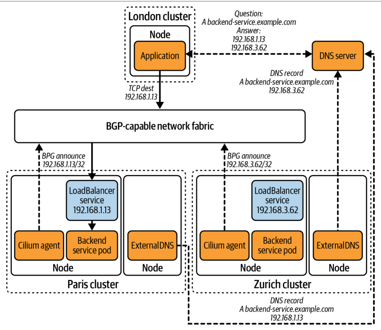
Figure 9-1. Multicluster services without Cluster Mesh using BGP with DNS and client-
图 9-1 未使用 Cluster Mesh 的多集群服务：采用 BGP、DNS 与客户端侧负载均衡
side load balancing Another issue is that it’s difficult to control traffic flow. For example, if administrators wish to remove a service or a cluster from operation for maintenance, they must remove the DNS records and wait for the DNS time-to-live (TTL) to expire to ensure that no clients with stale DNS records are still connected. Failing over long-lived HTTP connections, such as WebSockets, which do not refresh DNS once a long-lived TCP session is established, is not supported. It also requires management of multiple additional components, including a DNS server visible to the London cluster and ExternalDNS in the Paris and Zurich clusters. If we wanted a single IP address for the distributed application instead, a traditional solution is to deploy an external load balancer appliance, as shown in Figure 9-2 —often a physical device or hosted cloud service—and use that to map the IP to the different possible backends. These load balancers are not usually aware of the internals of the clusters, so the backends configured in the appliance must themselves be externally advertised Kubernetes LoadBalancer services.
侧负载均衡 另一个问题是难以控制流量走向。例如，如果管理员希望移除某个服务或集群进行维护，必须删除 DNS 记录并等待 DNS 的生存时间（TTL）过期，才能确保持有过期 DNS 记录的客户端不再连接。持久化 HTTP 连接（例如 WebSocket）的故障转移不受支持，因为一旦持久化 TCP 会话建立，这类连接不会刷新 DNS。该方案还要求管理多个额外组件，包括对伦敦集群可见的 DNS 服务器，以及巴黎和苏黎世集群中的 ExternalDNS。如果我们希望为分布式应用提供单一 IP 地址，传统方案是部署一个外部负载均衡器设备（如图 9-2 所示）——通常是物理设备或托管云服务——用它将 IP 映射到不同的可用后端。这些负载均衡器通常不了解集群的内部结构，因此设备中配置的后端本身必须是对外通告的 Kubernetes LoadBalancer 服务。
Some load balancers are aware of Kubernetes internals and can resolve target IP addresses to pod IPs without using services, but this requires natively routed clusters. This approach is also possible using more advanced network fabrics with equal-cost multi-path (ECMP) routing.
部分负载均衡器了解 Kubernetes 内部结构，可以在不使用 Service 的情况下将目标 IP 地址解析为 Pod IP，但这需要原生路由的集群。使用支持等价多路径（ECMP）路由的更高级网络结构也可以实现该方案。
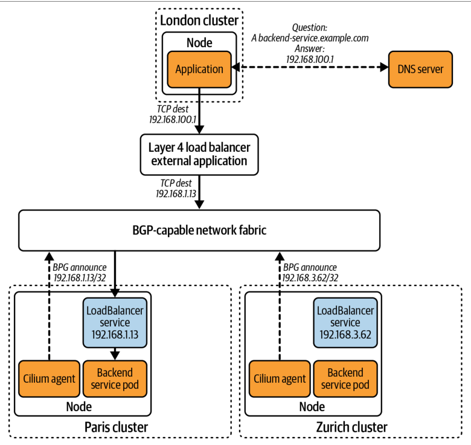
Figure 9-2. Multicluster services using an external load balancer appliance
图 9-2 使用外部负载均衡器设备的多集群服务
This removes the responsibility for load-balancing decisions from the clients, as well as the need to use ExternalDNS, but it still requires deploying and configuring an external appliance. It also still requires using a DNS server, externally managing the mapping from IP address to DNS name for all clusters, and using a BGP-capable network fabric. Now let’s see how we can approach this problem using Cilium Cluster Mesh and global services. As shown in Figure 9-3, the external coordination of the IP address and service name are gone, and all the fabric needs to do is provide reachability. The application resolves the global service the same way as a local service, using a normal
<service>.<namespace>.svc DNS record served by the in-cluster DNS service. The coordination to identify the remote cluster endpoints for the service and the resolution from the cluster IP service to a remote backend pod are handled entirely by Cilium.这将负载均衡决策的责任从客户端移除，也消除了使用 ExternalDNS 的需求，但仍然需要部署和配置外部设备，仍然需要 DNS 服务器，需要在集群外为所有集群管理 IP 地址到 DNS 名称的映射，以及需要支持 BGP 的网络结构。现在我们来看看如何使用 Cilium Cluster Mesh 和全局服务解决这个问题。如图 9-3 所示，外部协调 IP 地址与服务名称的工作被消除，网络结构只需提供连通性。应用像访问本地服务一样解析全局服务，使用集群内 DNS 服务提供的常规
<service>.<namespace>.svc DNS 记录。用于识别服务的远端集群端点、以及从 ClusterIP 服务到远端后端 Pod 的解析，完全由 Cilium 处理。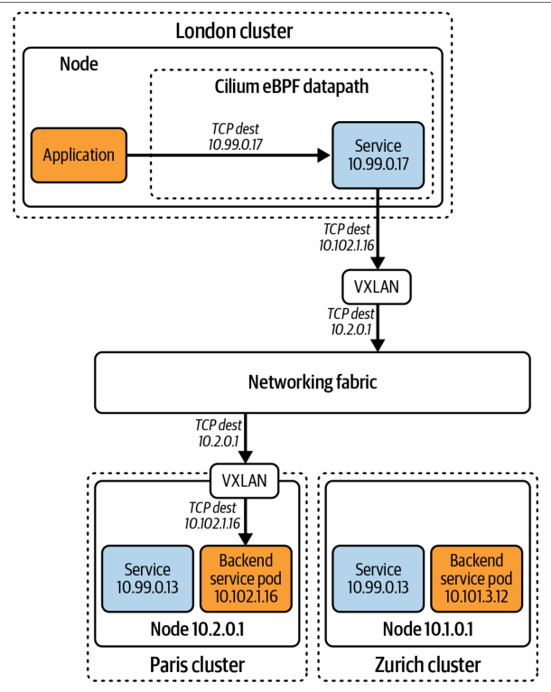
Figure 9-3. Multicluster services with Cluster Mesh and VXLAN tunneling
图 9-3 使用 Cluster Mesh 与 VXLAN 隧道的多集群服务
With this approach, we also require much less of the underlying fabric—only that all nodes (for overlay routing mode clusters) or all pods (for natively routed clusters) have layer 3 connectivity. We may still use BGP, for example to advertise pod IP ranges, and BGP LoadBalancer services may still be desired for services exposed outside of the mesh, but the hard requirements on the underlying network are significantly reduced using Cluster Mesh.
采用这种方案时，对底层网络的要求也大幅降低——仅要求所有节点（覆盖路由模式的集群）或所有 Pod（原生路由模式的集群）具备三层连通性。我们仍然可能使用 BGP，例如通告 Pod IP 范围，面向网格外暴露的服务也仍可能需要 BGP LoadBalancer 服务，但 Cluster Mesh 显著降低了对底层网络的硬性要求。
Cluster Mesh ArchitectureCluster Mesh 架构
Now that you have an idea of what Cluster Mesh offers, let’s take a look at how it works. Cilium Cluster Mesh is designed to avoid a single point of failure. There is no coordinator cluster or centralized control plane. Instead, each cluster is aware of a path to each other cluster and is able to communicate with it directly. Metadata is passed between clusters using a Cluster Mesh–specific component called the Cluster Mesh API Server. This pulls information about endpoints, identities, and other settings from the Kubernetes API of its local cluster and presents an API to remote clusters to use to retrieve that information. Cluster Mesh also includes a component called KVStoreMesh2 that serves a cache of remote cluster information to Cilium agents in the local cluster. Agents then use this information to understand remote cluster identities for policy and endpoints for routing decisions. An overview of this design is shown in Figure 9-4. This architecture results in more overall connections3 but means there are no single points of failure. Cluster Mesh can continue to operate even in complex failure modes where the mesh is disconnected into groups that still have connectivity between each other, without needing any kind of leader/follower or consensus-based coordination.
既然你已经了解了 Cluster Mesh 的能力，我们来看看它的工作原理。Cilium Cluster Mesh 的设计目标是避免单点故障。它没有协调集群或集中式控制平面。相反，每个集群都知晓到其他集群的路径，并能与它们直接通信。集群之间的元数据通过 Cluster Mesh 专用组件 Cluster Mesh API Server 传输。该组件从本地集群的 Kubernetes API 拉取端点、身份及其他设置的信息，并向远端集群提供 API 以供其检索。Cluster Mesh 还包含一个名为 KVStoreMesh2 的组件，它为本地集群的 Cilium Agent 缓存远端集群的信息。Agent 随后利用这些信息理解远端集群的身份（用于策略）和端点（用于路由决策）。该设计概览如图 9-4 所示。这种架构会带来更多的总体连接数3，但意味着没有单点故障。即使在网格断分成多个组（每组内部仍有连通性）的复杂故障模式下，Cluster Mesh 仍可继续运行，无需任何领导者/跟随者或基于共识的协调。
2KVStoreMesh is enabled by default in Cilium v1.16+. It’s possible to disable it, but we can’t think of a good reason to do so. 3n(n − 1) / 2 total connections across a mesh of n clusters.
2KVStoreMesh 在 Cilium v1.16+ 中默认启用。可以禁用它，但我们想不到任何充分的理由。 3n(n − 1) / 2，即由 n 个集群组成的网格的总连接数。
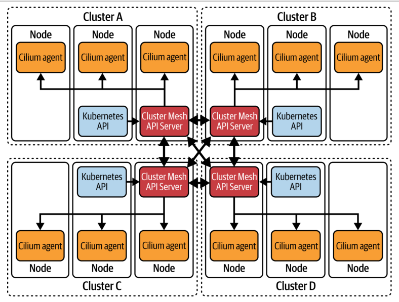
Figure 9-4. Metadata propagation in Cluster Mesh
图 9-4 Cluster Mesh 中的元数据传播
Application Datapath应用数据路径
Application data does not flow through the Cluster Mesh API Server. Cilium Cluster Mesh requires that all nodes in all clusters in the mesh have IP connectivity to each other on the announced node IP addresses. Clusters do not have to share a layer 2 domain. A common way to accomplish this is by using tunnels, VPNs, or other networking setups between clusters. Since the implementation details are strongly dependent on the network environment, this chapter assumes this property of the underlying network without describing how to configure it. For example, in Figure 9-5 each cluster has a
/16 CIDR block, each node is allocated a /24 PodCIDR within that block, and all clusters use 10.0.0.0/8 as their native routing subnet.4 In this example, all pods have layer 3 connectivity to all other pods,5 and cluster C’s cluster IP service range is 192.0.2.0/22.应用数据不会流经 Cluster Mesh API Server。Cilium Cluster Mesh 要求网格中所有集群的所有节点，在已通告的节点 IP 地址上彼此具备 IP 连通性。集群无需共享二层域。实现这一点的常见方式是使用隧道、VPN 或集群间的其他网络设置。由于实现细节强烈依赖于网络环境，本章假定底层网络具备该特性，而不描述如何配置。例如，在图 9-5 中，每个集群有一个
/16 CIDR 块，每个节点在该块内分配一个 /24 PodCIDR，所有集群使用 10.0.0.0/8 作为原生路由子网4。在这个例子中，所有 Pod 与其他 Pod 都具备三层连通性5，集群 C 的 ClusterIP 服务范围为 192.0.2.0/22。4See Chapter 4 for a discussion of IPAM in Cilium. 5This could be accomplished by announcing the pod IP ranges over BGP or various other mechanisms.
4关于 Cilium 中 IPAM 的讨论见第 4 章。 5这可以通过 BGP 通告 Pod IP 范围或各种其他机制实现。
Figure 9-5. Datapath connectivity with a cluster IP service and native routing
图 9-5 使用 ClusterIP 服务与原生路由的数据路径连通性
If a workload pod on node
C3 wishes to resolve a local service that is configured as a global service, backed by pods in other nodes, it will see no difference between that one and any other service. We’ll explain how to configure a global service in “Global Services” on page 187. There are three backends in two other clusters, so Cilium’s eBPF cluster IP service resolution translates the destination IP to the destination pod’s IP before sending it on. This is possible because the Cilium agent on node C3 is aware of the global nature of the service and, through the Cluster Mesh API Server, is aware of the service’s backends in remote clusters.如果节点
C3 上的工作负载 Pod 希望解析一个配置为全局服务、后端位于其他节点的本地服务，它不会发现该服务与其他服务有任何区别。我们将在第 187 页的“全局服务”一节讲解如何配置全局服务。该服务在另外两个集群中有三个后端，因此 Cilium 的 eBPF ClusterIP 服务解析会在发送数据包之前将目的 IP 转换为目的 Pod 的 IP。这之所以可行，是因为节点 C3 上的 Cilium Agent 知晓服务的全局性质，并且通过 Cluster Mesh API Server 知晓服务在远端集群中的后端。If you enable the
kube-proxy replacement (discussed in Chapter 6) for a cluster, then all services, including NodePort and LoadBalancer services, will work with global services. It doesn’t have to be enabled for all clusters in the mesh; however, for clusters that don’t have KPR enabled, cross-cluster service resolution will only work with ClusterIP services (since Cilium always uses eBPF for this type of service, whether KPR is enabled or not).如果你为某个集群启用了
kube-proxy 替代（KPR）（见第 6 章），那么包括 NodePort 和 LoadBalancer 服务在内的所有服务都可以与全局服务配合使用。这无需在网格中所有集群都启用；不过，对于未启用 KPR 的集群，跨集群服务解析仅适用于 ClusterIP 服务（因为无论是否启用 KPR，Cilium 始终为该类服务使用 eBPF）。Cluster Mesh API ServerCluster Mesh API Server
While often viewed as a single component, the Cluster Mesh API Server itself has several components deployed as a single pod, as shown in Figure 9-6. This diagram shows two Cluster Mesh API Server pods running in two different clusters and how metadata is propagated between them.
虽然常被视为单个组件，但 Cluster Mesh API Server 本身包含多个组件，它们作为单个 Pod 部署，如图 9-6 所示。该图展示了在两个不同集群中运行的两个 Cluster Mesh API Server Pod，以及元数据如何在它们之间传播。
Figure 9-6. Cluster Mesh API Server internals and metadata propagation
图 9-6 Cluster Mesh API Server 内部结构与元数据传播
The Cluster Mesh API Server runs as a container alongside an instance of etcd. This etcd is managed entirely by Cilium and is distinct from the etcd cluster that underpins the Kubernetes API. It runs in memory as a single instance with no replication, as it stores no canonical data; it serves only as a cache for data and an API surface. When clusters are meshed together, it’s this etcd API that is exposed to other clusters. The Cluster Mesh API Server reads local state from the local Kubernetes API and writes a copy into its local etcd. Remote Cluster Mesh API Servers can then connect to that etcd instance, read the data from there, and replicate it into their local etcd instances. Finally, local Cilium agents can read the state of remote endpoints propagated into the etcd instance and program the eBPF datapath accordingly.
Cluster Mesh API Server 以容器形式与 etcd 实例一同运行。该 etcd 完全由 Cilium 管理，与支撑 Kubernetes API 的 etcd 集群相互独立。它作为内存中的单实例运行，不进行复制，因为它不存储权威数据；仅作为数据的缓存和 API 入口。当集群互联时，暴露给其他集群的正是这个 etcd API。Cluster Mesh API Server 从本地 Kubernetes API 读取本地状态，将副本写入其本地 etcd。远端 Cluster Mesh API Server 随后可以连接到该 etcd 实例，从中读取数据，并将其复制到自身的本地 etcd 实例中。最后，本地 Cilium Agent 可以读取传播到 etcd 实例中的远端端点状态，并据此编程 eBPF 数据路径。
Meshing Clusters集群网格互联
In this section, we’ll step through an example of meshing three Kubernetes clusters. We’ll be using kind in our example, but the general approach is the same with any cluster. Once we’ve established our mesh, we’ll use it for the rest of this chapter to demonstrate Cluster Mesh features.
本节我们将逐步演示互联三个 Kubernetes 集群的示例。示例中使用 kind，但通用方法适用于任何集群。在建立好网格后，我们将在本章余下部分用它演示 Cluster Mesh 的功能。
Preparing Clusters准备集群
There are a number of requirements for the clusters to be meshed:
要互联集群，需要满足若干要求：
- All the clusters have to be running Cilium as the CNI, although this can be in a所有集群都必须运行 Cilium 作为 CNI，不过可以处于
chaining mode.
链式模式。
- All the clusters must have the same routing mode (encapsulation or native).所有集群必须使用相同的路由模式（封装或原生）。
- The PodCIDR ranges cannot overlap.PodCIDR 范围不得重叠。
- All nodes in all clusters must have layer 3 connectivity to each other. In native所有集群的所有节点之间必须具备三层连通性。在原生
routing mode, this must be true of pods too.
路由模式下，Pod 之间也必须满足此条件。
- All clusters must use the same maximum mesh size, either 255 or 511 clusters.所有集群必须使用相同的最大网格规模，要么是 255，要么是 511 个集群。
The default is 255, and using 511 enforces identity limitations.6 We’ll also assume that all clusters are running the same version of Cilium. In a real environment, you should limit version skew between clusters in a mesh as much as possible. In general, as long as all clusters are within a minor version of each other it’s considered a supported configuration. For example, a mesh of v1.15.8, v1.16.4, and v1.16.1 is acceptable, but a mesh of v1.15.8, v1.16.4, and v1.17.2 is not. You’ll also need to pick a domain name that will have each cluster as a subdomain, used for the TLS certificates that will identify the clusters. The default is
mesh.cilium.io, but it’s possible to use your own. You can set the domain name with the Helm value clustermesh.config.domain. It must be the same on every cluster in the mesh. Finally, each cluster in the mesh will require a unique numeric ID and humanreadable name. This is configured in Helm with cluster.id and cluster.name. For example, if the mesh domain name is example.com and the cluster’s name is test, then the cluster’s domain name for the mesh is test.example.com. This domain name doesn’t have to resolve to anything via DNS; it is only referred to internally.默认值为 255，使用 511 会强制实施身份限制6。我们还将假设所有集群运行相同版本的 Cilium。在真实环境中，应尽可能限制网格内集群之间的版本差异。一般来说，只要所有集群处于同一次版本内，就属于受支持的配置。例如，v1.15.8、v1.16.4 和 v1.16.1 组成的网格是可以接受的，但 v1.15.8、v1.16.4 和 v1.17.2 组成的网格则不行。你还需要选择一个域名，将每个集群作为子域名，用于识别集群的 TLS 证书。默认值为
mesh.cilium.io，但也可以使用自己的域名。可通过 Helm 值 clustermesh.config.domain 设置域名，该值必须在网格中的每个集群上相同。最后，网格中的每个集群需要唯一的数字 ID 和人类可读的名称。这通过 Helm 中的 cluster.id 和 cluster.name 配置。例如，如果网格域名为 example.com，集群名称为 test，那么该集群的网格域名为 test.example.com。这个域名无需通过 DNS 解析到任何实体——它仅在内部引用。6Allowing 511 clusters halves the number of possible identities per cluster from 65,535 to 32,767. Unless you’re managing an extremely large estate, we recommend sticking with the default of 255.
6允许 511 个集群会将每个集群可用的身份数量从 65,535 减半至 32,767。除非你管理的是超大规模集群阵列，否则我们建议坚持默认值 255。
In this chapter, we’re going to mesh three clusters named
red, green, and blue. Details on these clusters are given in Table 9-1.7 Table 9-1. Configuration details for our three test clusters在本章中，我们将互联三个集群，名称分别为
red、green 和 blue。这些集群的详细配置见表 9-17。表 9-1 三个测试集群的配置详情代码（原文）
cluster.namecluster.idPodCIDR red110.1.0.0/16 green210.2.0.0/16 blue310.3.0.0/16
Use the provided kind configuration (kind.yaml) to deploy the three clusters. Make sure that they’re correctly named, as we’ll use the names later in the kind context:
使用提供的 kind 配置（kind.yaml）部署这三个集群。确保命名正确，因为稍后我们将在 kind context 中使用这些名称：
代码（原文）
for cluster in red green blue; do kind create cluster --config kind.yaml --name "$cluster" done
Once the deployment is complete, you can access the clusters with
kubectl using部署完成后，可以通过
kubectl 配合代码（原文）
--context kind-name.
Configuring Cilium for Cluster Mesh为 Cluster Mesh 配置 Cilium
Before we can write our Cilium configuration, we need to know the IP addresses of the nodes. Normally you’d want to deploy a load balancer (discussed in Chapter 10) to provide a stable IP for the Cluster Mesh API Servers, but in this simple example we’re going to make use of a NodePort service and set the communication IP to be the IP of the control-plane nodes. We’ll get these IPs with a short script (02-generatecilium-config.sh):
在编写 Cilium 配置之前，我们需要知道节点的 IP 地址。通常需要部署负载均衡器（见第 10 章）为 Cluster Mesh API Server 提供稳定 IP，但在这个简单示例中，我们将使用 NodePort 服务并将通信 IP 设置为控制平面节点的 IP。我们将通过一个简短脚本（02-generatecilium-config.sh）获取这些 IP：
代码（原文）
for cluster in red green blue; do
echo "$cluster: $(kubectl --context "kind-$cluster" \
get node "$cluster-control-plane" \
-ojsonpath='{.status.addresses[?(@.type=="InternalIP")].address}')"
doneRunning this will produce output like the following:
运行后将输出类似如下内容：
代码（原文）
red: 10.89.0.14 green: 10.89.0.16 blue: 10.89.0.20
To deploy Cilium, we’ll write a single Helm template values file (cilium.template.yaml) with all of the shared configuration options, then use Helm’s
--set syntax to configure the per-cluster flags differently for each cluster:部署 Cilium 时，我们将编写一个包含所有共享配置选项的 Helm 模板值文件（cilium.template.yaml），然后使用 Helm 的
--set 语法为每个集群分别配置差异化参数：7We’ve assigned each cluster a pod IP range that includes its cluster ID to make it easier for you to keep track of which IP addresses belong to each cluster. As long as each cluster has a unique ID and a unique nonoverlapping pod IP range, there is no requirement that there be any relation between the two.
7我们为每个集群分配了包含其集群 ID 的 Pod IP 范围，以便你更容易区分哪些 IP 地址属于哪个集群。只要每个集群有唯一 ID 和唯一不重叠的 Pod IP 范围，两者之间没有任何关联要求。
代码（原文）
clustermesh: useAPIServer: true config: enabled: true clusters: - name: red port: 32379 id: 1 ips: - 10.89.0.14 - name: green port: 32379 ips: - 10.89.0.16 - name: blue port: 32379 ips: - 10.89.0.20 apiserver: tls: authMode: cluster auto: enabled: true method: cronJob schedule: "0 0 1 */4 *"
We’ve enabled Cluster Mesh by setting
clustermesh.config.enabled=true, enabled the Cluster Mesh API Server with clustermesh.useAPIServer=true, and configured each cluster in the mesh as an entry under clustermesh.config.clusters. We also specified the cronJob TLS generation method for TLS certificates, which we will explain in the next section.我们通过设置
clustermesh.config.enabled=true 启用 Cluster Mesh，通过 clustermesh.useAPIServer=true 启用 Cluster Mesh API Server，并将网格中的每个集群配置为 clustermesh.config.clusters 下的条目。我们还指定了 TLS 证书的 cronJob 生成方法，下一节将对此进行解释。While it’s possible to mesh clusters imperatively using the Cilium CLI, and some documentation does so for illustrative purposes, it’s almost always preferable to do so declaratively using Helm configuration.
可以使用 Cilium CLI 以 命令式方式互联集群，部分文档为了演示目的会这样做，但几乎总是更推荐以 声明式方式通过 Helm 配置完成。
The previous script generates a cilium.yaml file from this template automatically. Once we have that file, we can use Helm to install Cilium. For each cluster, we’ll need to set the
cluster.id, cluster.name, and ipam.operator.clusterPoolIPv4CIDRList Helm values using the information in Table 9-1. We can do this using a short bash script to address each cluster in turn (03-deploy-cilium.sh):上一个脚本会从该模板自动生成一个 cilium.yaml 文件。有了这个文件后，我们就可以使用 Helm 安装 Cilium。对于每个集群，我们需要根据表 9-1 中的信息设置
cluster.id、cluster.name 和 ipam.operator.clusterPoolIPv4CIDRList 等 Helm 值。可以使用一个简短的 bash 脚本依次处理每个集群（03-deploy-cilium.sh）：代码（原文）
clusters=(red green blue)
for i in "${!clusters[@]}"; do
name="${clusters[$i]}"
id="$((i + 1))"
helm upgrade --install \
--kube-context "kind-$name" \
cilium cilium/cilium \
--namespace kube-system \
--version "1.18.3" \
--values cilium.yaml \
--set "cluster.id=$id" \
--set "cluster.name=$name" \
--set "ipam.operator.clusterPoolIPv4PodCIDRList=10.$id.0.0/16"
doneAfter running this script, all the clusters should be active with Cilium running. However, the mesh will not be in a healthy state yet.
运行此脚本后，所有集群都将处于运行状态，且 Cilium 已运行。不过，网格此时还处于不健康的状态。
Propagating TLS Trust传播 TLS 信任
The final step is to make the clusters trust each other. For now, although Cluster Mesh is configured, each cluster has a unique root of trust, and they will reject each other’s access attempts. We can check this by looking at the Cluster Mesh status in one of the clusters (note that the Cilium CLI supports the
--context flag to specify the cluster, just like kubectl does):最后一步是让集群之间相互信任。目前，尽管 Cluster Mesh 已配置好，但每个集群都有独立的信任根，它们会相互拒绝访问。我们可以通过在其中一个集群中查看 Cluster Mesh 状态来验证这一点（注意 Cilium CLI 支持
--context 标志来指定集群，就像 kubectl 一样）：代码（原文）
$ cilium --context kind-blue clustermesh status 3/3 nodes are not connected to all clusters [min:0 / avg:0.0 / max:0] cilium-pq95v is not connected to cluster green: remote cluster configuration required but not found This is likely caused by KVStoreMesh not being connected to the given cluster Run 'kubectl exec -it -n kube-system clustermesh-apiserver-79fbd6596f-gxv2w -c kvstoremesh -- /usr/bin/clustermesh-apiserver kvstoremesh-dbg troubleshoot green' to investigate the cause
We’ve shortened the output here, but we can see that our
blue cluster is unable to access either of the others. Helpfully, the output gives us an additional debugging command to try. After running it, we get this output, again shortened for clarity:我们这里缩短了输出内容，但可以看到我们的
blue 集群无法访问另外两个集群。有帮助的是，输出给了我们一个额外的调试命令可供尝试。运行后得到以下输出，同样为清晰起见缩短了内容：代码（原文）
Cluster "green": Endpoints: - https://green.mesh.cilium.io:32379 Hostname resolved to: 10.89.0.16 TCP connection successfully established to 10.89.0.16:32379 Cannot establish TLS connection to green.mesh.cilium.io:32379: tls: failed to verify certificate: x509: certificate signed by unknown authority (possibly because of "crypto/rsa: verification error" while trying to verify candidate authority certificate "Cilium CA")
The TLS certificate for the remote cluster is not being accepted. We’ll discuss models of distributing trust in “TLS Certificates in Cluster Mesh” on page 196, but for now we’re going to make each cluster trust every other cluster. Recall that when we installed Cilium, we specified the
cronJob method of certificate generation. This caused Cilium to automatically generate a certificate authority when it was first installed, but it doesn’t regenerate the CA if it’s reinstalled using helm远端集群的 TLS 证书未被接受。我们将在第 196 页的“Cluster Mesh 中的 TLS 证书”一节讨论信任分发的模型，但目前我们将让每个集群信任其他所有集群。回想一下，我们安装 Cilium 时指定了证书生成的
cronJob 方法，这会让 Cilium 在首次安装时自动生成证书颁发机构（CA），但如果使用 helm代码（原文）
upgrade.
To fix this issue, download the generated CA certificates for each cluster and combine them into a single trust bundle using the following script (04-write-ca-bundle.sh):
为修复此问题，可使用以下脚本（04-write-ca-bundle.sh）下载每个集群生成的 CA 证书，将它们合并为单一的信任包：
代码（原文）
ca_bundle="ca-bundle.crt"
rm -f "$ca_bundle"
for name in red green blue; do
kubectl \
--context "kind-$name" \
--namespace kube-system \
get secret \
cilium-ca \
-o jsonpath="{.data['ca\.crt']}" | base64 --decode >> "$ca_bundle"
doneThen append them to the Cilium configuration as a shared trust bundle:
然后将它们作为共享信任包追加到 Cilium 配置中：
代码（原文）
$ yq -i \ ".tls.caBundle.content=\"$(cat ca-bundle.crt)\", \ .tls.caBundle.enabled=true" \ cilium.yaml
Versions of Cilium prior to v1.18.5 require an additional step to make this method of TLS distribution work, due to a bug. You can find the necessary script in the book’s GitHub repository (chapter09/05-patch-sever-cert.sh).
Cilium v1.18.5 之前的版本由于 bug，需要额外一步才能让这种 TLS 分发方式生效。所需脚本可以在本书 GitHub 仓库中找到（chapter09/05-patch-sever-cert.sh）。
Reapply the Cilium configuration using the same
helm command we used in the script at the end of the previous section and restart the Cluster Mesh API Server to pick up the new settings:使用上一节末尾脚本中相同的
helm 命令重新应用 Cilium 配置，并重启 Cluster Mesh API Server 以加载新设置：代码（原文）
for name in red green blue; do kubectl rollout restart \ --context "kind-$name" \ --namespace kube-system \ deploy/clustermesh-apiserver done
We can then confirm that Cluster Mesh is healthy using the same command as before:
随后我们可以使用之前相同的命令确认 Cluster Mesh 处于健康状态：
代码（原文）
$ cilium --context kind-blue clustermesh status All 3 nodes are connected to all clusters [min:2 / avg:2.0 / max:2] All 1 KVStoreMesh replicas are connected to all clusters [min:2 / avg:2.0 / max:2] Cluster Connections: - green: 3/3 configured, 3/3 connected - KVStoreMesh: 1/1 configured, 1/1 connected - red: 3/3 configured, 3/3 connected - KVStoreMesh: 1/1 configured, 1/1 connected
With our clusters meshed, nothing changes at first. All clusters continue to operate as they were before—but this set of changes enables us to use Cluster Mesh’s features.
集群互联后，起初不会有任何变化。所有集群继续像之前一样运行——但这一系列变更让我们能够使用 Cluster Mesh 的功能。
Testing Cluster Mesh测试 Cluster Mesh
We can use Cilium’s built-in connectivity test to verify Cluster Mesh behavior between any two clusters in our mesh (here, the
red and green clusters):我们可以使用 Cilium 内置的连通性测试，验证网格中任意两个集群之间的 Cluster Mesh 行为（此处以
red 和 green 集群为例）：代码（原文）
$ cilium connectivity test --context kind-red --multi-cluster kind-green
The
--context and --multi-cluster flags both take Kubernetes context names, like the --context and --kube-context flags in previous commands, not cluster names as configured in Helm as cluster.name.--context 和 --multi-cluster 标志都接受 Kubernetes context 名称，就像之前命令中的 --context 和 --kube-context 标志一样，而不是 Helm 中配置的 cluster.name 集群名称。One of the tests performed by
cilium connectivity test verifies that no errors exist in the Cilium logs. If you’ve been following this chapter verbatim, there will be errors from when we first set up Cluster Mesh without the shared certificate authorities. You can run the test anyway to verify that there are no other errors, or you can skip that test with the extra flag --test '!check-log-errors/cilium connectivity test 执行的其中一项测试会验证 Cilium 日志中没有错误。如果你完全按照本章操作，会存在首次设置 Cluster Mesh 时（未共享 CA）产生的错误。你仍然可以运行测试来验证是否有其他错误，或者可以通过额外标志 --test '!check-log-errors/代码（原文）
no-errors-in-logs'.
These tests only test connectivity between a given pair of clusters. You can iterate through every pair using this script (06-connectivity-test.sh):
这些测试仅测试指定集群对之间的连通性。可以使用此脚本（06-connectivity-test.sh）遍历所有集群对：
代码（原文）
clusters=(red green blue)
for i in "${!clusters[@]}"; do
for j in "${!clusters[@]}"; do
if [ "$j" -gt "$i" ]; then
cluster_a="${clusters[$i]}"
cluster_b="${clusters[$j]}"
echo "Testing $cluster_a and $cluster_b"
cilium connectivity test \
--context "kind-$cluster_a" \
--multi-cluster "kind-$cluster_b" \
--test '!check-log-errors/no-errors-in-logs'
fi
done
doneThe script runs for each pair of clusters in the
clusters array, meaning n(n − 1) / 2 tests, where each test can take several minutes. We don’t recommend this approach for larger meshes, as it will take a long time.脚本会对
clusters 数组中的每对集群运行测试，共 n(n − 1) / 2 次测试，每次测试可能需要数分钟。对于较大规模的网格，我们不推荐这种方法，因为耗时会非常久。Global Services全局服务
Now that we have our meshed clusters configured, we can begin to use Cilium’s features across the mesh. The first feature we’ll look at is cross-cluster services. In Kubernetes, a service is a networking abstraction over a group of backend pods, providing a stable network identity in an environment where pods may be created, removed, or replaced at any moment. Using a global service, we can accomplish the same service indirection for backends in other clusters in the mesh.
现在我们已经配置好了集群网格，可以开始跨网格使用 Cilium 的各项功能。首先来看跨集群服务。在 Kubernetes 中，服务是对一组后端 Pod 的网络抽象，在 Pod 随时可能被创建、删除或替换的环境中提供稳定的网络身份。通过使用 全局服务，我们可以为网格中其他集群的后端实现相同的服务间接调用能力。
Configuring Global Services配置全局服务
Cilium implements cluster IP services using the eBPF datapath. Figure 9-7 provides an overview of this process (see Chapter 6 for details). The translation from a service IP to a backend pod IP occurs in eBPF as the packet exits the pod.
Cilium 使用 eBPF 数据路径来实现 ClusterIP 服务。图 9-7 展示了这一过程的概览（详见第 6 章）。从服务 IP 到后端 Pod IP 的转换在数据包离开 Pod 时通过 eBPF 完成。
Figure 9-7. A typical Kubernetes cluster IP service in Cilium
图 9-7 Cilium 中典型的 Kubernetes ClusterIP 服务
By creating two services with the same name and namespace in two different clusters and annotating them with
service.cilium.io/global: "true",8 we can make Cilium import information about endpoints in other clusters across the mesh. Cilium’s eBPF datapath can then select the endpoints in other clusters the same way as local ones.通过在两个不同集群中创建名称和命名空间相同的两个服务，并为它们添加
service.cilium.io/global: "true" 的注解，我们可以让 Cilium 跨网格导入其他集群中的端点信息。之后 Cilium 的 eBPF 数据路径就能够像选择本地端点一样选择其他集群中的端点。8This is an annotation, not a label.
8这是一个注解，不是标签。
The quotes around
"true" are required. If you put service.cilium.io/global: true in your YAML without quotes, this will be interpreted as a string key to a Boolean value, and Kubernetes expects annotations to be a map of strings to strings, not strings to Booleans. If you try it, you’ll get an error like"true" 周围的引号是必需的。如果在 YAML 中写入没有引号的 service.cilium.io/global: true，YAML 会将其解释为一个布尔值的字符串键，而 Kubernetes 要求注解是字符串到字符串的映射，不是字符串到布尔值的映射。如果你尝试这样写，会得到一个类似下面的错误：代码（原文）
json: cannot unmarshal bool into Go struct field Object Meta.metadata.annotations of type string.
It’s important to note that the services only need to have the same name and namespace in each cluster. It doesn’t matter if the cluster IP service range isn’t the same, and the two services will not synchronize their service IPs. In Figure 9-8 you can see the two services have different IPs in the two clusters, but both clusters can view all endpoints in either cluster. This is an important consequence of the decentralized design of Cluster Mesh: there is no single canonical view of a service across all clusters; it only ensures that global services in different clusters can use each other’s endpoints.
需要注意的是，每个集群中的服务只需要名称和命名空间相同即可。ClusterIP 服务的 IP 范围不必一致，两个服务之间也不会同步服务 IP。在图 9-8 中，你可以看到两个服务在两个集群中拥有不同的 IP，但两个集群都能看到任一集群中的所有端点。这一重要特性源自 Cluster Mesh 的去中心化设计：不存在一个跨所有集群的服务权威视图；它只确保不同集群中的全局服务能够使用彼此的端点。
Figure 9-8. A global service across meshed clusters
图 9-8 跨网格集群的全局服务
Let’s configure a service in our example clusters to show this feature in action. We’ll deploy a service to every cluster that responds with the current node name. Because our nodes are named after the clusters, we can use this to understand which cluster the response is coming from. Here’s the service portion of the manifest (global-service.yaml):
让我们在示例集群中配置一个服务来演示该功能。我们将在每个集群中部署一个服务，它会返回当前节点的名称。因为我们的节点以集群名称命名，所以可以据此判断响应来自哪个集群。以下是清单文件（global-service.yaml）中服务部分的内容：
代码（原文）
apiVersion: v1 kind: Service metadata: name: nginx annotations: service.cilium.io/global: "true" spec: selector: app.kubernetes.io/name: nginx ports: - port: 80 targetPort: 8080 protocol: TCP
Using a short script (07-deploy-global-service.sh), we can quickly apply it to all of our clusters:
通过一个简短的脚本（07-deploy-global-service.sh），我们可以快速将其应用到所有集群：
代码（原文）
for cluster in red green blue; do kubectl apply \ --context "kind-$cluster" \ --filename global-service.yaml done
Then we can test the service’s behavior with a test pod:
然后我们可以用一个测试 Pod 来测试该服务的行为：
代码（原文）
$ kubectl run test \ --context kind-green -it --rm \ --image nicolaka/netshoot -- bash test:~# curl nginx <html><body><p>Hello from blue-worker</p></body></html> test:~# curl nginx <html><body><p>Hello from red-worker</p></body></html> test:~# curl nginx <html><body><p>Hello from blue-worker</p></body></html> test:~# curl nginx <html><body><p>Hello from red-worker</p></body></html> test:~# curl nginx <html><body><p>Hello from blue-worker</p></body></html> test:~# curl nginx <html><body><p>Hello from blue-worker</p></body></html> test:~# curl nginx <html><body><p>Hello from green-worker2</p></body></html> test:~# curl nginx <html><body><p>Hello from red-worker</p></body></html>
We can see that we’re getting a random backend responding each time since Cilium balances our requests across the possible backends of the global service.
可以看到每次都会有一个随机后端响应，因为 Cilium 会将请求均衡到全局服务的所有可能后端上。
Endpoint Affinity端点亲和性
At the moment, our global service allows routing from a source in any of the configured clusters to an endpoint in any other cluster, and the flow is chosen randomly for each connection. We can, however, use other annotations to control the preference between local and remote endpoints. This is useful when you’d prefer to use a local version of a service but want to transparently fail over to a remote copy when the local version isn’t available. This sort of affinity is shown in Figure 9-9.
目前，我们的全局服务允许从任意已配置集群中的源路由到任意其他集群中的端点，并且每次连接都会随机选择流。不过，我们可以使用其他注解来控制本地端点与远程端点之间的偏好。当你希望优先使用服务的本地版本、但希望在本地版本不可用时透明地故障切换到远程副本时，这一功能非常有用。这种亲和性如图 9-9 所示。
Figure 9-9. Local service affinity for a global service
图 9-9 全局服务的本地服务亲和性
This kind of cross-region transparent failover can lead to issues in some cases. Cilium will dutifully fail over to remote endpoints, but if the remote clusters have a much higher latency, and the workloads cannot handle higher latencies from cross-cluster traffic, then such a failover can contribute to cascading failures. It’s impossible to predict this in isolation, so you should always perform regular tests of failover mechanisms—including Cluster Mesh—in non-production environments to test how your application and particular networking and cluster setup will behave during a cross-region failover.
这种跨区域透明故障切换在某些情况下可能引发问题。Cilium 会尽职尽责地故障切换到远程端点，但如果远程集群的延迟高得多，而工作负载无法承受跨集群流量带来的更高延迟，那么这种故障切换就可能加剧连锁故障。单独来看这一问题无法完全预判，因此你应该始终在非生产环境中定期测试故障切换机制——包括 Cluster Mesh——以检验你的应用以及特定的网络和集群设置在跨区域故障切换时会表现如何。
To show endpoint affinity in action, let’s start by annotating one of our services to use local affinity. We’ll use the one in the
green cluster as an example:为了演示端点亲和性，我们先来为其中一个服务添加注解，启用本地亲和性。我们以
green 集群中的服务为例：代码（原文）
$ kubectl \ --context kind-green \ annotate service nginx \ 'service.cilium.io/affinity=local' service/nginx annotated
Using the same test pod as before, we can see the change in behavior:
使用和之前相同的测试 Pod，我们可以观察到行为的变化：
代码（原文）
$ kubectl run test --context kind-green -it --rm \ --image nicolaka/netshoot -- bash test:~# curl nginx <html><body><p>Hello from green-worker</p></body></html> test:~# curl nginx <html><body><p>Hello from green-worker</p></body></html> test:~# curl nginx <html><body><p>Hello from green-worker</p></body></html>
The endpoint in the local cluster now always responds. If we remove that backend pod, however, the service will still use remote endpoints:
现在本地集群中的端点始终响应。不过，如果我们删除了这个后端 Pod，服务仍会使用远程端点：
代码（原文）
$ kubectl \ --context kind-green \ scale deployment nginx \ --replicas=0 deployment.apps/nginx scaled
Pods don’t need to be restarted to pick up this change, as it’s performed in the eBPF datapath. We’re only showing the test pod being launched every time for clarity. You can leave a single test pod running during all of this configuration if you prefer.
Pod 不需要重启就能感知到这一变化，因为它是在 eBPF 数据路径中处理的。我们每次都重新启动测试 Pod 只是为了演示清楚。如果你愿意，可以在整个配置过程中让一个测试 Pod 一直运行。
Let’s see what happens when we run our test now:
现在让我们看看测试会发生什么：
代码（原文）
$ kubectl run test \ --context kind-green \ -it \ --rm \ --image nicolaka/netshoot \ -- bash test:~# curl nginx <html><body><p>Hello from blue-worker2</p></body></html> test:~# curl nginx <html><body><p>Hello from red-worker2</p></body></html> test:~# curl nginx <html><body><p>Hello from blue-worker2</p></body></html>
Once again, a random backend responds to each request. Note that service affinity only affects the cluster in which it’s set on the service. For example, if we repeat the same test on the
blue cluster, it won’t show service affinity:同样，每次请求都会由一个随机后端响应。注意，服务亲和性只影响设置了该注解的那个集群。例如，如果我们在
blue 集群上重复相同的测试，它不会表现出服务亲和性：代码（原文）
$ kubectl \ --context kind-green \ scale deployment nginx \ --replicas=1 deployment.apps/nginx scaled $ kubectl run test \ --context kind-blue \ -it \ --rm \ --image nicolaka/netshoot -- bash test:~# curl nginx <html><body><p>Hello from green-worker2</p></body></html> test:~# curl nginx <html><body><p>Hello from green-worker2</p></body></html> test:~# curl nginx <html><body><p>Hello from red-worker2</p></body></html> test:~# curl nginx <html><body><p>Hello from blue-worker2</p></body></html>
This is a consequence of Cluster Mesh’s distributed design. Because there is no global coordinated view of a service—only services that can communicate with each other across the mesh—the settings that affect routing behavior are local to the cluster using that service.
这是 Cluster Mesh 分布式设计的必然结果。因为不存在一个全局协调的服务视图——只有能够跨网格通信的各个服务——影响路由行为的设置是本地的，只对使用该服务的那个集群生效。
Global Policy全局策略
Cilium’s network policy engine (discussed in Chapter 12) assigns every endpoint an identity. Identities for pods derive their labels from the pod’s labels, which means that you can write a network policy to target other pods by their labels—for example, allowing only pods with
role: backend to access a database. These identities are also shared across the mesh, meaning that a network policy can select endpoints from other clusters using the same fromEndpoints and toEndpoints statements used for local policy. Without Cluster Mesh, when services are exposed to other clusters using load balancers of some kind (see “Use Cases” on page 173 ), egress policy is possible—if error prone—by applying policy to the CIDR ranges corresponding to services exposed in other clusters or by using FQDN policy (see Chapter 13). Ingress policy is much harder, since traffic from an unmeshed external cluster will use the same IP range for all nodes (and for pods, for a natively routed cluster), so different workloads cannot be differentiated. The only mechanism at layer 3 is to use Cilium’s Egress Gateway (discussed in Chapter 11) to assign external IP addresses for egress traffic that are then used as part of fromCIDR statements in the other cluster. All of these approaches are error prone and add complexity. Using Cluster Mesh, we can rely on Cilium to automatically share endpoint identity information between clusters and write policy in largely the same way as we do with one cluster.Cilium 的网络策略引擎（第 12 章讨论）为每个端点分配一个 身份。Pod 的身份从 Pod 的标签派生，这意味着你可以编写网络策略，通过标签来针对其他 Pod——例如，只允许具有
role: backend 标签的 Pod 访问数据库。这些身份也会在网格中共享，也就是说，网络策略可以使用与本地策略相同的 fromEndpoints 和 toEndpoints 语句来选择其他集群中的端点。没有 Cluster Mesh 时，当服务通过某种负载均衡器暴露给其他集群时（见第 173 页的"使用场景"），可以通过两种方式实现入站/出站策略——虽然容易出错：一是对暴露在其他集群中的服务对应的 CIDR 范围应用策略，二是使用 FQDN 策略（见第 13 章）。而入站策略则困难得多，因为来自未建立网格的外部集群的流量会使用相同的 IP 范围来标识所有节点（对于原生路由集群还包括 Pod），因此无法区分不同的工作负载。在三层可用的唯一机制是使用 Cilium 的出口网关（第 11 章讨论）为出站流量分配外部 IP 地址，然后在另一个集群的 fromCIDR 语句中使用这些 IP 地址。所有这些方法都容易出错且增加复杂度。使用 Cluster Mesh，我们可以依靠 Cilium 在集群之间自动共享端点身份信息，编写策略的方式与在单个集群中基本一致。This behavior changed in Cilium v1.19. In Cilium v1.18, which we’re using here, and in earlier versions, Cilium policy automatically selected endpoints from any cluster in the mesh unless the cluster name was specified. From Cilium v1.19, policy only selects endpoints from the local cluster by default.
这一行为在 Cilium v1.19 中发生了变化。在我们当前使用的 Cilium v1.18 及更早版本中，Cilium 策略会自动选择网格中任意集群的端点，除非指定了集群名称。从 Cilium v1.19 开始，策略默认只选择 本地集群中的端点。
Much like with services, while Cluster Mesh allows policy in meshed clusters to refer to endpoints in other clusters using security labels, it does not automatically synchronize policy. For example, a
CiliumClusterwideNetworkPolicy with an endpointSelector set to select all endpoints will apply only to endpoints in the cluster in which it is installed. We can use our existing red, green, and blue clusters as an example. The red cluster will contain our client application, while the green and blue clusters will contain copies of the server. We already have a global service and backend pods deployed in each, so we’ll reuse that deployment here. It’s important to keep the global service in the red cluster, but we want to remove the pods that could be a part of it locally:与服务类似，虽然 Cluster Mesh 允许网格中的策略使用安全标签引用其他集群中的端点，但它不会自动同步策略。例如，设置了选择所有端点的
endpointSelector 的 CiliumClusterwideNetworkPolicy 只会应用到它所在集群中的端点。我们可以用现有的 red、green 和 blue 三个集群作为例子。red 集群中放我们的客户端应用，而 green 和 blue 集群中放服务器的副本。我们已经在每个集群中部署了全局服务和后端 Pod，所以这里复用那个部署。我们需要保留 red 集群中的全局服务，但希望删除本地可能属于该服务的 Pod：代码（原文）
$ kubectl delete --context kind-red deployment nginx deployment.apps "nginx" deleted
We see the result of this in Figure 9-10, where the
red cluster does not have any backends for the nginx service but can still refer to the remote endpoints in the green and blue clusters.图 9-10 展示了这一结果：
red 集群中没有 nginx 服务的后端，但仍然可以引用 green 和 blue 集群中的远程端点。Figure 9-10. Global services where the
red cluster only has remote endpoints图 9-10
red 集群仅具有远程端点的全局服务We’ll secure the NGINX pods on the
blue and green clusters first (nginx-policy.yaml), using the identity label io.cilium.k8s.policy.cluster to refer to endpoints specifically in other clusters:我们先来保护
blue 和 green 集群上的 NGINX Pod（nginx-policy.yaml），使用身份标签 io.cilium.k8s.policy.cluster 来专门引用其他集群中的端点：代码（原文）
apiVersion: "cilium.io/v2" kind: CiliumNetworkPolicy metadata: name: nginx spec: endpointSelector: matchLabels: app.kubernetes.io/name: nginx ingress: - fromEndpoints: - matchLabels: app.kubernetes.io/name: frontend io.cilium.k8s.policy.cluster: red toPorts: - ports: - port: "8080" protocol: TCP
We need to apply this policy only to the
blue and green clusters, as the red cluster has no NGINX pods anymore:我们只需要将此策略应用到
blue 和 green 集群，因为 red 集群中已经没有 NGINX Pod 了：代码（原文）
$ kubectl apply --context kind-blue --filename nginx-policy.yaml ciliumnetworkpolicy.cilium.io/nginx created $ kubectl apply --context kind-green --filename nginx-policy.yaml ciliumnetworkpolicy.cilium.io/nginx created
We can then apply the egress policy (frontend-policy.yaml) in the
red cluster and select our test pod by specifying the required label app.kubernetes.io/name:然后我们可以在
red 集群中应用出站策略（frontend-policy.yaml），通过指定所需的标签 app.kubernetes.io/name: 来选择测试 Pod：代码（原文）
frontend: apiVersion: "cilium.io/v2" kind: CiliumNetworkPolicy metadata: name: frontend spec: endpointSelector: matchLabels: app.kubernetes.io/name: frontend egress: - toEndpoints: - matchLabels: "k8s:io.kubernetes.pod.namespace": kube-system "k8s:k8s-app": kube-dns toPorts: - ports: - port: "53" protocol: ANY rules: dns: - matchPattern: "nginx.default.svc.cluster.local." - toEndpoints: - matchLabels: app.kubernetes.io/name: nginx matchExpressions: - key: io.cilium.k8s.policy.cluster operator: In values: - green - blue toPorts: - ports: - port: "8080" protocol: TCP
The details of this policy are covered in Chapter 12, but it constrains the egress traffic of pods with the
app.kubernetes.io/name: frontend label in the clusters where it is applied. Egress traffic has to match one of two egress rules to be permitted: either DNS requests to CoreDNS for the NGINX service, or port 8080 TCP connections to NGINX backends in the green or blue clusters. After applying this policy we can again test it with our test pod, noting that we have to add the frontend label:该策略的细节在第 12 章介绍，但它限制了在其被应用的集群中带有
app.kubernetes.io/name: frontend 标签的 Pod 的出站流量。出站流量必须匹配以下两条出站规则之一才能被允许：要么是向 CoreDNS 发起的 NGINX 服务 DNS 请求，要么是发往 green 或 blue 集群中 NGINX 后端的 8080 端口 TCP 连接。应用此策略后，我们可以再次用测试 Pod 进行测试，注意需要加上 frontend 标签：代码（原文）
$ kubectl apply --context kind-red --filename frontend-policy.yaml ciliumnetworkpolicy.cilium.io/frontend created $ kubectl run test --context kind-red \ -it --rm --image nicolaka/netshoot \ --labels 'app.kubernetes.io/name=frontend' -- bash test:~# curl nginx <html><body><p>Hello from blue-worker2</p></body></html> test:~# curl nginx <html><body><p>Hello from blue-worker2</p></body></html> test:~# curl nginx <html><body><p>Hello from green-worker2</p></body></html>
Using a different pod, we can test the permissions. If we relaunch our test pod without the
app.kubernetes.io/name label we can verify that the ingress permissions are working:换一个不同的 Pod 可以测试权限。如果我们在没有
app.kubernetes.io/name 标签的情况下重新启动测试 Pod，就能验证入站权限是否正常工作：代码（原文）
$ kubectl run test --context kind-red -it --rm \ --image nicolaka/netshoot -- bash test:~# curl nginx -m2 curl: (28) Connection timed out after 2002 milliseconds
This use of cross-cluster policy allows applications to apply the same fine-grained security controls as they can in-cluster. Finally, we’ll tear down the environment by deleting the clusters:
这种跨集群策略的使用让应用能够应用与集群内相同粒度的安全控制。最后，我们通过删除集群来清理环境：
代码（原文）
for cluster in red green blue; do kind delete cluster --name "$cluster" done
TLS Certificates in Cluster MeshCluster Mesh 中的 TLS 证书
The internals of Cluster Mesh use TLS certificates to secure components as they communicate. These not only encrypt the metadata of the cluster as it is in transit, but also prevent attackers from pulling metadata from a cluster with Cluster Mesh enabled or imitating another cluster in the mesh. Figure 9-11 illustrates our previous example, in which each cluster autogenerated a self-signed certificate authority and used that to sign the various certificates for internal usage. When we needed to mesh clusters, we distributed the certificate authorities between clusters to allow the remote connections to trust each other.
Cluster Mesh 的内部使用 TLS 证书来保护组件之间的通信。这些证书不仅对传输中的集群元数据进行加密，还能防止攻击者从启用了 Cluster Mesh 的集群中获取元数据或冒充网格中的其他集群。图 9-11 展示了我们之前的示例，其中每个集群自动生成了一个自签名证书授权（CA），并使用它为内部使用的各种证书签名。当我们需要建立集群网格时，在集群之间分发证书授权以让远程连接彼此信任。
Figure 9-11. Shared CA bundle setup
图 9-11 共享 CA 证书包的设置
Each cluster has its own CA to sign certificates. With Cluster Mesh enabled, each cluster will trust certificates signed by any of the CAs in the trust bundle. While we avoided transferring private key material, this isn’t a very sustainable option. Any time we needed to add a new cluster, or change the CA on a cluster, we’d have to update the trust bundles on every other cluster in the mesh. A better approach is to use a single certificate authority. There are four certificates used in Cluster Mesh, stored as Kubernetes secrets. One of them is a server certificate, and the other three are client certificates. The client certificates have a common name derived from the cluster’s defined name (see Table 9-2). Table 9-2. Cluster Mesh client certificates
每个集群都有自己的 CA 来签名证书。启用 Cluster Mesh 后，每个集群都会信任信任包中任意 CA 签名的证书。虽然我们避免了传输私钥材料，但这并不是一个非常可持续的方案。每当我们需要添加新集群，或修改某个集群上的 CA 时，都必须更新网格中所有其他集群的信任包。更好的做法是使用单一的证书授权。Cluster Mesh 中使用了四类证书，存储在 Kubernetes Secret 中。其中一个是服务器证书，另外三个是客户端证书。客户端证书的通用名从集群定义的名称派生（见表 9-2）。表 9-2 Cluster Mesh 客户端证书
CertificateCommon namePurpose 证书通用名用途
clustermesh-apiserver-admin-${cluster.name}The Cluster Mesh API Server presents this to its clustermesh-apiserver-admin-${cluster.name}The Cluster Mesh API Server 将此证书呈现给其
admin-certsidecar etcd. admin-certsidecar etcd
clustermesh-apiserver-remote-${cluster.name}The Cluster Mesh API Server presents this to other clustermesh-apiserver-remote-${cluster.name}The Cluster Mesh API Server 将此证书呈现给远程
remote-certetcd instances in remote clusters. remote-cert集群中的其他 etcd 实例
clustermesh-apiserver-local-${cluster.name}Cilium agents present this to their local Cluster clustermesh-apiserver-local-${cluster.name}Cilium Agent 将此证书呈现给其本地 Cluster
local-certMesh API Server’s etcd. local-certMesh API Server 的 etcd
The server certificate is stored in the secret
clustermesh-apiserver-server-cert and is served by etcd from connections using all of the client certificates. This server TLS certificate needs to, between its common name and Subject Alternative Names, be signed for:服务器证书存储在 Secret
clustermesh-apiserver-server-cert 中，由 etcd 为使用所有客户端证书的连接提供。此服务器 TLS 证书在其通用名和主题备用名称之间需要为以下内容签名：代码（原文）
••Domain name ${cluster.name}.${clustermesh.config.domain}
••Domain name clustermesh-apiserver.${cilium-namespace}.svc- Domain name
localhost域名localhost - IP address
127.0.0.1IP 地址127.0.0.1 - IP address
::1IP 地址::1
where
cluster.name and clustermesh.config.domain are the Helm values set for that cluster, and cilium-namespace is the Kubernetes namespace Cilium was installed in for that cluster.其中
cluster.name 和 clustermesh.config.domain 是为该集群设置的 Helm 值，cilium-namespace 是 Cilium 安装到该集群的 Kubernetes 命名空间。If not using IPv6, the certificate does not need to be signed for
::1. It’s harmless to include it if IPv6 is not enabled, but omitting it in a dual-stack cluster can lead to difficult-to-debug problems where Cluster Mesh functioning depends on whether IPv4 or IPv6 is used. Therefore, we recommend including it even in certificates intended for IPv4-only clusters, to make any future IPv6 migration easier. See Chapter 4 for more on dual-stack configuration.如果不使用 IPv6，证书不需要为
::1 签名。未启用 IPv6 时包含它不会有问题，但在双栈集群中省略它可能导致难以调试的问题——Cluster Mesh 的运行取决于使用的是 IPv4 还是 IPv6。因此，我们建议即使是面向纯 IPv4 集群的证书也包含它，以便将来更容易迁移到 IPv6。关于双栈配置的更多内容见第 4 章。Figure 9-12 illustrates how the Cilium agent and the Cluster Mesh API server authenticate and communicate using the four certificates described in the text (one server certificate and three client certificates).
图 9-12 展示了 Cilium Agent 和 Cluster Mesh API Server 如何使用文中介绍的四类证书（一个服务器证书和三个客户端证书）来完成身份认证和通信。
Figure 9-12. Cluster Mesh API Server certificate usage
图 9-12 Cluster Mesh API Server 的证书使用
Building a Cluster Mesh deployment with a custom certificate authority is complex and beyond the scope of this book. See the Cilium documentation for the full details.
使用自定义证书授权来构建 Cluster Mesh 部署是一项复杂的工作，超出了本书的范围。完整细节请参阅 Cilium 文档。
Summary小结
Most users will never enable Cluster Mesh. It implies both an architecture that requires multiple intracomponent flows and a compelling use case for multicluster Kubernetes. Individual Kubernetes clusters can scale to thousands of nodes and accommodate all but the very largest applications. Multiregion or multicloud mandates are rare outside of regulated industries such as healthcare or finance, and going multicluster for extra redundancy is often overshadowed by easier ways to accomplish the same goal. For some, Cluster Mesh is a feature for contingency planning. You don’t need it now, but you don’t know if you will in the future, and if you do, you don’t want to have to rearchitect your entire application to fix it. With Cilium, you keep the option to use it later open, without needing to change anything else.
大多数用户永远不会启用 Cluster Mesh。它既意味着一种需要多个组件间流的架构，也意味着多集群 Kubernetes 的紧迫使用场景。单个 Kubernetes 集群可以扩展到数千个节点，能够满足除了最大规模应用之外的几乎所有需求。除了医疗、金融等受监管行业外，多区域或多云要求并不常见，而为了额外冗余而使用多集群，其收益往往被更简单的替代方案所掩盖。对部分用户来说，Cluster Mesh 是一个应急方案特性。你现在不需要它，但不知道将来会不会需要；而如果将来确实需要，你也不想为此必须重新设计整个应用。使用 Cilium，你可以保留将来使用它的选择，而无需做任何其他修改。
If cluster mesh is on your future roadmap at all, our parting advice is to always pick a unique pod IP range for each cluster, even if you think you may never mesh them. This makes it easy to do so in the future without having to perform an IPAM migration.
如果集群网格完全在你的未来路线图中，我们的临别建议是：始终为每个集群选择唯一的 Pod IP 范围，即使你认为永远不会建立网格。这样将来需要建立网格时会容易很多，无需进行 IPAM 迁移。
For those few who do find themselves truly needing multicluster Kubernetes, Cluster Mesh can replace an entire category of load balancers, switches, DNS servers, and complex network infrastructure with a handful of lines of YAML. In some cases, a desired architecture might not be possible any other way. For those users, Cluster Mesh might be Cilium’s greatest feature.
对于那些确实真正需要多集群 Kubernetes 的少数用户来说，Cluster Mesh 可以用几行 YAML 替代整整一类的负载均衡器、交换机、DNS 服务器和复杂的网络基础设施。在某些情况下，某些期望的架构可能没有其他方式实现。对于这些用户，Cluster Mesh 或许是 Cilium 最强大的特性。
第 10 章Cluster Access集群访问
Accessing applications inside a Kubernetes cluster from the outside world is a common requirement. An external client, whether it’s a user’s laptop, an upstream router, or another application, needs a stable way to reach a service inside the cluster. In Chapter 7, we introduced Cilium’s support for Kubernetes Ingress and Gateway API as mechanisms to load-balance and manipulate traffic once it reaches the cluster. However, we have not yet explained how external clients become aware of the cluster’s external-facing IP address. That is the focus of this chapter. The most straightforward option provided by Kubernetes is a service of type NodePort. With a NodePort service, Kubernetes opens the same port number on every node in the cluster and forwards traffic from that port to the service’s backend pods. This works without additional setup and is often used in simple clusters where clients know the node IPs directly. NodePort introduces two layers of selection. At the first layer, the client chooses which node to contact. At the second layer, the node that receives the traffic forwards it to one of the healthy backend pods, as explained in Chapter 6. The second layer works consistently because Kubernetes tracks pod health and removes failing backends. The first layer is where problems appear. If the client chooses a node that later becomes unavailable, there is no mechanism in Kubernetes that automatically redirects the connection to another node. The client must detect the failure and retry a different node IP. This creates a fragile dependency on client behavior and the surrounding network environment, where firewalls or upstream systems may expect a single stable destination IP rather than a list of node addresses and port numbers. Figure 10-1 illustrates both layers of behavior. On the left, the client selects a node and the cluster forwards the request to a random healthy backend pod. On the right, the chosen node has failed. Although other nodes and pods remain available, the path is broken because the client keeps sending packets to the originally selected node. It’s only when the client realizes the node is down (via an intermediary load balancer tracking the node health, for example) that traffic can be routed to an alternate, healthy node.
从外部访问 Kubernetes 集群内部的应用是一个常见需求。外部客户端——无论是用户的笔记本电脑、上游路由器还是其他应用——都需要一种稳定的方式来到达集群内的服务。在第 7 章，我们介绍了 Cilium 对 Kubernetes Ingress 和 Gateway API 的支持，作为在流量到达集群后对其进行负载均衡和处理的机制。然而，我们尚未解释外部客户端如何获知集群对外暴露的 IP 地址，这正是本章的重点。Kubernetes 提供的最直接选项是 NodePort 类型的 Service。借助 NodePort Service，Kubernetes 会在集群中的每个节点上打开相同的端口号，并将该端口的流量转发到 Service 的后端 Pod。这种方式无需额外设置即可工作，常用于客户端直接知晓节点 IP 的简单集群。NodePort 引入了两层选择机制。第一层，客户端选择要联系的节点。第二层，接收流量的节点将其转发到某个健康的后端 Pod，如第 6 章所述。第二层能一致工作，是因为 Kubernetes 会跟踪 Pod 的健康状况并移除故障后端。问题出在第一层。如果客户端选择的节点后来不可用了，Kubernetes 中没有机制能自动将连接重定向到另一个节点。客户端必须检测到故障并重试另一个节点 IP。这就造成了对客户端行为和周边网络环境的脆弱依赖——防火墙或上游系统可能期望一个稳定的目的 IP，而不是节点地址和端口号列表。图 10-1 展示了这两层行为。左侧，客户端选择一个节点，集群将请求转发到随机的健康后端 Pod。右侧，被选节点已故障。尽管其他节点和 Pod 仍然可用，路径已经中断，因为客户端一直在向最初选择的节点发送数据包。只有当客户端意识到节点已下线（例如通过跟踪节点健康状况的中间负载均衡器），流量才能被路由到另一个健康节点。
Figure 10-1. NodePort client connectivity during normal behavior and during node
图 10-1 正常行为和节点期间的 NodePort 客户端连通性
failure conditions To overcome these issues, Cilium introduces two mechanisms that make external access seamless:
故障状况 为克服这些问题，Cilium 引入了两种机制，使外部访问变得无缝：
- L2 Announcements, which make services appear as directly connected IPs on the二层通告，使服务在本地网络上表现为直接连接的 IP 地址
local network
本地网络
- BGP, which advertises service IPs into the routing fabric for scalable and resilientBGP，将服务 IP 通告到路由网络中，以实现可扩展且有弹性的
connectivity In this chapter, we will explore both approaches, step through their configuration, and highlight their strengths and trade-offs.
连通性。本章我们将探索这两种方法，逐步演示它们的配置，并突出其优势与权衡。
L2 Announcements二层通告
Cilium’s L2 Announcements feature, sometimes called L2 Aware LB, makes Kubernetes services visible and reachable on the local area network. This approach is especially useful in environments that lack BGP support or where running BGP is considered too complex. When this feature is enabled, Cilium responds to ARP queries for external IPs and/or LoadBalancer IPs. These IPs are virtual; they do not belong to any specific network interface. Instead, one node is elected as the announcer for each virtual IP (VIP). That node replies to ARP requests using its own MAC address.1 From the client’s perspective, the VIP looks like a directly attached IP, and traffic is forwarded through the elected node, which then load-balances it to the service’s backend pods. In contrast, NodePort places the burden on the client to select and track node IPs. If the chosen node fails, the IP and port combination becomes unusable. L2 Announcements mitigate this by allowing the VIP to move automatically to another node.
Cilium 的 二层通告功能，有时也称为 L2 Aware LB，使 Kubernetes Service 在局域网上可见且可达。这种方式在缺少 BGP 支持或运行 BGP 过于复杂的环境中尤为有用。启用此功能后，Cilium 会响应针对外部 IP 和/或 LoadBalancer IP 的 ARP 查询。这些 IP 是虚拟的，不属于任何特定的网络接口。相反，Cilium 会为每个虚拟 IP（VIP）推选一个节点作为通告者，该节点使用自己的 MAC 地址回复 ARP 请求。从客户端的角度看，VIP 看起来像是直接附着的 IP，流量经由被推选的节点转发，该节点再将其负载均衡到服务的后端 Pod。相比之下，NodePort 将负担放在客户端身上——客户端需要自己选择和跟踪节点 IP。如果所选节点故障，IP 与端口的组合将无法使用。二层通告通过允许 VIP 自动迁移到另一节点来缓解这一问题。
You can find all the YAML manifests used in this section in the chapter10/l2 directory of the book’s GitHub repository.
本节使用的所有 YAML 清单都可以在本书 GitHub 仓库的 chapter10/l2 目录中找到。
Setting Up the Environment搭建环境
To test L2 Announcements, we will create a kind cluster without
kube-proxy. The only requirement for this feature is KPR, which we introduced in Chapter 6. Create the cluster (kind-cluster-config.yaml) and install Cilium using Helm with values defined in cilium-l2-values.yaml:为了测试二层通告，我们将创建一个不包含
kube-proxy 的 kind 集群。此功能唯一的要求是 KPR，我们在第 6 章介绍过。创建集群（kind-cluster-config.yaml）并使用 Helm 安装 Cilium，使用 cilium-l2-values.yaml 中定义的值：代码（原文）
kubeProxyReplacement: true k8sServiceHost: kind-control-plane k8sServicePort: 6443 l2announcements: enabled: true
Next, start a client container on the same Docker network so that it can send traffic directly to the cluster:
接下来，在同一个 Docker 网络上启动一个客户端容器，使其能直接向集群发送流量：
代码（原文）
$ docker run -d --network kind --rm --name client \ nicolaka/netshoot:v0.8 sleep infinity
1This book is based on Cilium 1.18. IPv6 support for L2 Announcements was added in Cilium 1.19. IPv6 relies on the Neighbor Discovery (ND) protocol rather than ARP.
1本书基于 Cilium 1.18。二层通告的 IPv6 支持在 Cilium 1.19 中添加，IPv6 依赖邻居发现（ND）协议而非 ARP。
Configuring L2 Announcements配置二层通告
Before creating the service, verify that all cluster nodes and the client are on the same network. In this example, the network is
172.18.0.0/16. From within the client container, run the following command to display its IP configuration:创建 Service 之前，确认所有集群节点和客户端都在同一个网络上。在本例中，网络为
172.18.0.0/16。在客户端容器内运行以下命令，显示其 IP 配置：代码（原文）
$ docker exec -it client ip -4 a show eth0 11: eth0@if34: <BROADCAST,MULTICAST,UP,LOWER_UP> mtu 65535 qdisc noqueue state UP group default link-netnsid 0 inet 172.18.0.5/16 brd 172.18.255.255 scope global eth0 valid_lft forever preferred_lft forever
It’s important that the service IP you assign comes from the same network range, so the client can reach it directly. In the next step we will create a CiliumLoadBalancerIPPool that allocates addresses from the block
172.18.255.200/29 (we covered LB IPAM pools in Chapter 6). This block lies within the client’s 172.18.0.0/16 network, ensuring that traffic is delivered without requiring any routing changes.重要的是，你分配的 Service IP 必须来自同一网络范围，这样客户端才能直接到达。下一步我们将创建一个 CiliumLoadBalancerIPPool，从地址块
172.18.255.200/29 分配地址（我们在第 6 章介绍过 LB IPAM 池）。该地址块位于客户端的 172.18.0.0/16 网络范围内，确保流量交付无需任何路由变更。You can assign a VIP from another subnet, but the client’s routing table must be configured accordingly. Otherwise, the client assumes the IP is outside the local network and sends the traffic to the default gateway instead.
你可以从其他子网分配 VIP，但客户端的路由表必须相应配置。否则，客户端会认为该 IP 位于本地网络之外，将流量发送到默认网关。
Deploy the IP pool (pool.yaml) and the simple httpd application with its associated LoadBalancer service (app.yaml). The service is labeled
announcement: l2 so it matches the L2 Announcement policy we will deploy next:部署 IP 池（pool.yaml）以及简单的 httpd 应用及其关联的 LoadBalancer Service（app.yaml）。该 Service 带有
announcement: l2 标签，以便匹配我们接下来要部署的二层通告策略：代码（原文）
apiVersion: apps/v1 kind: Deployment metadata: name: httpd spec: replicas: 2 selector: matchLabels: app.kubernetes.io/name: httpd template: metadata: labels: app.kubernetes.io/name: httpd spec: containers: - name: httpd image: httpd:2.4 ports: - containerPort: 80 --- apiVersion: v1 kind: Service metadata: name: httpd labels: announcement: l2 spec: type: LoadBalancer selector: app.kubernetes.io/name: httpd ports: - port: 80
Check the service to confirm that it has been assigned an IP from the pool:
检查 Service，确认它已从池中分配到 IP：
代码（原文）
$ kubectl get svc httpd NAME TYPE CLUSTER-IP EXTERNAL-IP PORT(S) AGE httpd LoadBalancer 10.96.84.34 172.18.255.200 80:32179/TCP 20m
At this point, the service has an external IP, but clients still cannot reach it. No node is yet responding to ARP queries for that address. In the next step, we will apply the L2 Announcement policy to make the service accessible.
此时，Service 已有外部 IP，但客户端仍无法到达它——还没有节点在响应该地址的 ARP 查询。下一步，我们将应用二层通告策略，使该 Service 可被访问。
Applying the L2 Announcement Policy应用二层通告策略
To make the service reachable, we need to tell Cilium which services to announce and on which nodes. This is done with a CiliumL2AnnouncementPolicy. Apply the manifest (l2policy.yaml):
为使 Service 可达，我们需要告诉 Cilium 要通告哪些 Service，以及在哪些节点上通告。这通过 CiliumL2AnnouncementPolicy 完成。应用清单（l2policy.yaml）：
代码（原文）
apiVersion: "cilium.io/v2alpha1" kind: CiliumL2AnnouncementPolicy metadata: name: l2-policy spec: serviceSelector: matchLabels: announcement: l2 nodeSelector: matchExpressions: - key: node-role.kubernetes.io/control-plane operator: DoesNotExist interfaces: - ^eth0 loadBalancerIPs: true
Selects services that carry the label
announcement: l2 (such as the httpd service we just created)选择带有
announcement: l2 标签的 Service（例如我们刚创建的 httpd Service）Excludes nodes with the control-plane role, so only worker nodes can become announcers2 Restricts announcements to the
eth0 interface (by default, Cilium announces services on all node interfaces)3 Enables announcements for LoadBalancer IPs排除具有控制平面角色的节点，仅允许工作节点成为通告者2；将通告限制到
eth0 接口（默认情况下 Cilium 在所有节点接口上通告 Service）3；启用对 LoadBalancer IP 的通告。This interface selector is not a security feature. Services may still be reachable through unadvertised interfaces, for example if ARP entries are manually configured.
此接口选择器并非安全功能。Service 仍可能通过未通告的接口访问，例如手动配置 ARP 条目的情况。
Once the policy is applied, Cilium will elect one of the worker nodes as the announcer for the service external IP. You can identify the current leader (in this case,
kind-worker2) by inspecting the Kubernetes leases:策略应用后，Cilium 将从工作节点中选举一个作为 Service 外部 IP 的通告者。你可以通过检查 Kubernetes Lease 来识别当前的领导者（本例中为
kind-worker2）：代码（原文）
$ kubectl -n kube-system get lease | grep l2announce cilium-l2announce-default-httpd kind-worker2
Inspecting ARP Traffic检查 ARP 流量
Now that the service has been assigned an external IP and an announcer node has been elected, let’s inspect what happens on the wire when the client tries to reach it. Our objective is to capture the ARP request sent by the client for the service IP (
172.18.255.200 in this example), to observe how the elected node responds with its MAC address and to show the TCP handshake and the first HTTP response. First, check the MAC address on the kind-worker2 node:既然 Service 已分配了外部 IP，且通告者节点已选举完成，我们来观察客户端尝试访问时线上发生了什么。我们的目标是捕获客户端发送的针对 Service IP（本例为
172.18.255.200）的 ARP 请求，观察被选节点如何用其 MAC 地址响应，并展示 TCP 握手和首个 HTTP 响应。首先，检查 kind-worker2 节点上的 MAC 地址：代码（原文）
$ docker exec -it kind-worker2 ip link show dev eth0 11: eth0@if32: <BROADCAST,MULTICAST,UP,LOWER_UP> mtu 65535 qdisc noqueue state UP mode DEFAULT group default link/ether ea:f5:fb:51:a1:17 brd ff:ff:ff:ff:ff:ff link-netnsid 0
2By default, Cilium considers all nodes to be potential announcers, but in most clusters the control-plane nodes are reserved for system components and are not used for forwarding application traffic. Restricting announcements to workers avoids putting datapath responsibilities on the control plane. 3Selectors in Cilium CRDs support RE2-compatible regular expressions. RE2 is a regular expression engine implemented by Google that is considered a fast, safe, thread-friendly alternative to backtracking regular expression engines.
2默认情况下，Cilium 将所有节点视为潜在的通告者，但在大多数集群中，控制平面节点被预留用于系统组件，不用于转发应用流量。将通告限制到工作节点可避免将数据路径职责放到控制平面上。3Cilium CRD 中的选择器支持 RE2 兼容的正则表达式。RE2 是 Google 实现的正则表达式引擎，被认为是传统回溯正则表达式引擎的快速、安全、线程友好的替代方案。
Next, open two terminal windows side by side:
接下来，并排打开两个终端窗口：
- In the first window, run
tcpdumpinside the client container to capture ARP在第一个窗口中，在客户端容器内运行tcpdump以捕获 ARP
traffic.
流量。
- In the second window, generate traffic from the client to the service IP.在第二个窗口中，从客户端向 Service IP 发送流量。
In the first terminal, first check the ARP cache. There should be no entry for the service IP as the client has yet to try to access it and has not made an ARP request yet:
在第一个终端中，先检查 ARP 缓存。此时应该没有 Service IP 的条目，因为客户端尚未尝试访问它，也还没有发送 ARP 请求：
代码（原文）
$ docker exec -it client ip neigh
Start
tcpdump to observe ARP and HTTP traffic:启动
tcpdump 以观察 ARP 和 HTTP 流量：代码（原文）
$ docker exec -it client tcpdump -i eth0 -n
In the second terminal, access the service IP. The request triggers ARP resolution and completes successfully:
在第二个终端中，访问 Service IP。该请求触发 ARP 解析并成功完成：
代码（原文）
$ docker exec -it client curl http://172.18.255.200 <html><body><h1>It works!</h1></body></html>
In the
tcpdump output, you will see a broadcast ARP request from the client asking “who-has >172.18.255.200.” Immediately after, the elected node responds with its own MAC address:在
tcpdump 输出中，你将看到来自客户端的广播 ARP 请求，询问"who-has 172.18.255.200"。紧接着，被选节点用其自身的 MAC 地址响应：代码（原文）
ARP, Request who-has 172.18.255.200 tell 172.18.0.5, length 28 ARP, Reply 172.18.255.200 is-at ea:f5:fb:51:a1:17, length 28
Figure 10-2 shows both sides of the ARP process. The client sends a broadcast ARP request for the service IP, which is received by all nodes. The elected announcer node responds with an ARP reply containing its MAC address. Once the client learns this MAC address, it can send traffic directly to the node that currently holds the announcement lease.
图 10-2 展示了 ARP 过程的两个方向。客户端发送针对 Service IP 的广播 ARP 请求，该请求被所有节点接收。被推选的通告者节点回复一条包含其 MAC 地址的 ARP 应答。客户端获知该 MAC 地址后，即可直接向当前持有通告租约的节点发送流量。
Figure 10-2. ARP request and reply with Cilium L2 Announcements
图 10-2 Cilium 二层通告中的 ARP 请求与应答
That ARP information is now saved in the client’s ARP table:
该 ARP 信息现在已保存在客户端的 ARP 表中：
代码（原文）
$ docker exec -it client ip neigh 172.18.255.200 dev eth0 lladdr ea:f5:fb:51:a1:17 REACHABLE
Immediately after this, the client establishes a TCP connection. The complete
tcpdump output will look like this:紧接着，客户端建立 TCP 连接。完整的
tcpdump 输出如下所示：代码（原文）
ARP, Request who-has 172.18.255.200 tell 172.18.0.5, length 28 ARP, Reply 172.18.255.200 is-at ea:f5:fb:51:a1:17, length 28 IP 172.18.0.5.45300 > 172.18.255.200.80: Flags [S], ... ARP, Request who-has 172.18.0.5 tell 172.18.0.3, length 28 ARP, Reply 172.18.0.5 is-at 76:0f:e0:c7:27:fe, length 28 IP 172.18.255.200.80 > 172.18.0.5.45300: Flags [S.], ... IP 172.18.0.5.45300 > 172.18.255.200.80: Flags [.], ... IP 172.18.0.5.45300 > 172.18.255.200.80: Flags [P.], ... HTTP GET IP 172.18.255.200.80 > 172.18.0.5.45300: Flags [.], ... IP 172.18.255.200.80 > 172.18.0.5.45300: Flags [P.], ... HTTP 200 OK IP 172.18.0.5.45300 > 172.18.255.200.80: Flags [.], ... IP 172.18.0.5.45300 > 172.18.255.200.80: Flags [F.], ... IP 172.18.255.200.80 > 172.18.0.5.45300: Flags [F.], ... IP 172.18.0.5.45300 > 172.18.255.200.80: Flags [.], ...
Client asks “
who-has 172.18.255.200” (ARP request) Elected announcer node replies with its MAC address (ARP reply) Client sends SYN to initiate connection ([S])客户端询问"
who-has 172.18.255.200"（ARP 请求）；被选通告者节点用其 MAC 地址回复（ARP 应答）；客户端发送 SYN 发起连接（[S]）。Announcer node asks “who-has
172.18.0.5” (ARP request) Client replies with its MAC address (ARP reply) Announcer node responds to SYN with SYN-ACK ([S.]) Client sends ACK, completing the three-way TCP handshake ([.]) Client sends HTTP request (GET) as a PSH+ACK ([P.]) Server acknowledges the request ([.]) One of the httpd pods responds with HTTP 200 OK ([P.]) Client acknowledges the HTTP response ([.]) Client sends FIN to close the connection ([F.]) Server responds with its own FIN ([F.]) Client acknowledges, completing the TCP termination ([.]) Note that the announcer node performs its own ARP lookup for the client’s IP (172.18.0.5) and learns its MAC address. Once ARP resolution has completed, the elected node receives all traffic for the service IP, forwards each request to one of the httpd pods, and returns the pod’s response to the client.通告者节点询问"who-has
172.18.0.5"（ARP 请求）；客户端用其 MAC 地址回复（ARP 应答）；通告者节点用 SYN-ACK 响应 SYN（[S.]）；客户端发送 ACK，完成 TCP 三次握手（[.]）；客户端以 PSH+ACK 发送 HTTP 请求 GET（[P.]）；服务器确认收到请求（[.]）；某个 httpd Pod 用 HTTP 200 OK 响应（[P.]）；客户端确认收到 HTTP 响应（[.]）；客户端发送 FIN 关闭连接（[F.]）；服务器用自己的 FIN 响应（[F.]）；客户端确认，完成 TCP 终止（[.]）。注意，通告者节点也会自行对客户端的 IP（172.18.0.5）执行 ARP 查找，并获知其 MAC 地址。ARP 解析完成后，被选节点接收所有发往 Service IP 的流量，将每个请求转发到某个 httpd Pod，并将 Pod 的响应返回给客户端。Simulating a Node Failure模拟节点故障
With the service now reachable through the elected announcer node, we can explore what happens when the node becomes unavailable. The objective of this exercise is to show how the lease is transferred to another node and how connectivity is restored, but it will also reveal some of the inner limitations of L2 Announcement. Let’s simulate a node failure by stopping the elected announcer node:
既然 Service 已可通过被推选的通告者节点访问，我们可以探索该节点不可用时会发生什么。本练习的目标是展示租约如何转移到另一个节点、连通性如何恢复，同时也会揭示二层通告的一些内在局限。我们通过停止被推选的通告者节点来模拟节点故障：
代码（原文）
$ docker stop kind-worker2
At this point, the client’s ARP cache still maps the service IP (
172.18.255.200) to the MAC address of the stopped node, so until the cache expires, packets are sent into a black hole:此时，客户端的 ARP 缓存仍将 Service IP（
172.18.255.200）映射到已停止节点的 MAC 地址，因此在缓存过期之前，数据包会被发送到黑洞中：代码（原文）
$ docker exec -it client curl -m 5 172.18.255.200 curl: (28) Connection timed out after 5001 milliseconds
Meanwhile, Cilium’s leader election process continues in the background. Nodes that participate in announcements monitor the lease, and if the current holder does not renew it within the configured lease duration, they request ownership from the API server. The first request that succeeds becomes the new leader and begins advertising the service IP. When a node takes over, it sends a gratuitous ARP4 so that clients can update their neighbor tables without waiting for their ARP entries to expire. If the client accepts the gratuitous ARP, failover happens almost immediately because the new leader’s announcement updates the client’s neighbor table at once. However, many clients and network devices ignore these messages because they can be used for ARP spoofing. Clients that ignore the gratuitous ARP will continue using the stale ARP entry until it expires. When that happens, the client sends a fresh ARP request, learns the MAC address of the new leader, and connectivity is restored:
与此同时，Cilium 的领导者选举过程在后台持续运行。参与通告的节点会监控租约，如果当前持有者在配置的租约期限内未续租，它们会向 API 服务器请求所有权。第一个成功的请求者成为新的领导者并开始通告 Service IP。节点接管时，它会发送免费 ARP（gARP）4，以便客户端无需等待 ARP 条目过期就能更新其邻居表。如果客户端接受了免费 ARP，故障切换几乎立即发生，因为新领导者的通告会立刻更新客户端的邻居表。然而，许多客户端和网络设备会忽略这些消息，因为它们可能被用于 ARP 欺骗。忽略免费 ARP 的客户端将继续使用过期的 ARP 条目，直到其过期。届时，客户端发送一条新的 ARP 请求，获知新领导者的 MAC 地址，连通性恢复：
代码（原文）
$ docker exec -it client curl -m 5 172.18.255.200 <html><body><h1>It works!</h1></body></html>
You can verify the lease has been transferred to
kind-worker with this command:你可以用此命令确认租约已转移到
kind-worker：代码（原文）
$ kubectl -n kube-system get lease | grep l2announce cilium-l2announce-default-httpd kind-worker
It is possible to use L2 Announcements for pod IPs rather than service IPs. This can be enabled by setting the Helm value
l2podAnnouncements.enabled=true. However, this is generally discouraged since pods are ephemeral and advertising pod IPs directly bypasses the service abstraction and its load-balancing behavior.也可以对 Pod IP 而非 Service IP 使用二层通告。将 Helm 值
l2podAnnouncements.enabled=true 设置为 true 即可启用。不过，通常不建议这么做，因为 Pod 是短命的，直接通告 Pod IP 会绕过 Service 抽象及其负载均衡行为。4A gratuitous ARP (gARP) is an ARP reply sent without an initial request, used to refresh ARP tables on other devices.
4免费 ARP（gARP）是一种未经请求就发送的 ARP 应答，用于刷新其他设备上的 ARP 表。
As this discussion has illustrated, while Cilium’s L2 Announcements feature is useful in simpler environments, it has some notable limitations:
如讨论所示，虽然 Cilium 的二层通告功能在较简单的环境中很有用，但它存在一些显著局限：
- Only one node handles traffic for each VIP, so there is no load balancing between每个 VIP 仅由一个节点处理流量，因此节点之间没有
nodes.
负载均衡。
- Failover depends on ARP cache expiry, which can be slow.故障切换依赖 ARP 缓存过期，可能较慢。
- Faster failover relies on gratuitous ARP, but many clients ignore these messages更快的故障切换依赖免费 ARP，但出于安全考虑，许多客户端会忽略这些
for security reasons. Because of these drawbacks, this feature is better suited for development or constrained environments than for production systems where failover speed and security are critical. For those systems, it’s generally preferable to use the other mechanism Cilium provides for exposing services to external clients: BGP.
消息。由于这些缺点，此功能更适合开发或受限环境，而非故障切换速度和安全性至关重要的生产系统。对于这类系统，通常更适合使用 Cilium 提供的另一种对外暴露服务的机制：BGP。
BGPBGP
Cilium’s BGP functionality provides a more flexible and robust alternative to L2 Announcements. Rather than depending on ARP, BGP enables routing of service IPs at layer 3, making it suitable for larger or more complex environments—especially those already running routing protocols and infrastructure. The BGP functionality we cover in this book is referred to as Cilium BGP Control Plane. BGP is particularly useful in production environments where high availability, fast failover, and load balancing across nodes are important requirements. It does introduce operational overhead because it must be configured and maintained, and it requires BGP-capable devices or software. However, BGP is widely used across datacenter networks, so many environments already provide the necessary routing infrastructure. Figure 10-3 illustrates how Cilium BGP Control Plane functions. With BGP enabled, Cilium selects which services to advertise using label selectors. It determines which nodes should act as BGP speakers, and then initiates route announcements to configured peers. The BGP peers learn the routes and may redistribute them further into the network. External clients can then reach these services using standard IP routing.
Cilium 的 BGP 功能为二层通告提供了更灵活、更健壮的替代方案。BGP 不依赖 ARP，而是在第 3 层路由 Service IP，使其适合更大或更复杂的环境——尤其是已在运行路由协议和基础设施的环境。本书中介绍的 BGP 功能称为 Cilium BGP Control Plane。BGP 在生产环境中尤其有用，那里高可用性、快速故障切换和跨节点负载均衡是重要需求。它确实带来了运维开销，因为需要配置和维护，并且要求具备 BGP 能力的设备或软件。不过，BGP 在数据中心网络中被广泛使用，许多环境已经提供了必要的路由基础设施。图 10-3 展示了 Cilium BGP Control Plane 的工作方式。启用 BGP 后，Cilium 使用标签选择器选择要通告的 Service。它确定哪些节点应作为 BGP 发言者，然后向配置的对等体发起路由通告。BGP 对等体获知路由后，可以进一步将其重新分发到网络中。外部客户端随后即可使用标准 IP 路由到达这些 Service。
Figure 10-3. Cilium BGP Control Plane overview
图 10-3 Cilium BGP Control Plane 概览
You can find all the YAML manifests used in this section in the chapter10/l3 directory of the book’s GitHub repository.
本节使用的所有 YAML 清单都可以在本书 GitHub 仓库的 chapter10/l3 目录中找到。
Setting Up the Environment搭建环境
Start by deploying your cluster using the same kind-cluster-config.yaml we used previously. Next, install Cilium using Helm with the values defined in cilium-bgpvalues.yaml.
bgpControlPlane.enabled=true enables BGP in Cilium. BGP peerings and Autonomous System Numbers (ASN) configurations are then defined via custom resources. To see the Cilium BGP feature in action, we need a BGP-capable device to peer with. For this example, we’ll deploy a Free Range Routing (FRR) instance outside of the cluster but connected to the same Docker network. FRR is an open source routing suite supporting BGP, Open Shortest Path First (OSPF), and other protocols on Linux and other UNIX-like systems. The configuration for FRR in this section is available in the chapter10/l3/frr directory of the book’s GitHub repository. It contains three files:首先使用之前相同的 kind-cluster-config.yaml 部署集群。然后使用 Helm 安装 Cilium，使用 cilium-bgpvalues.yaml 中定义的值。
bgpControlPlane.enabled=true 启用 Cilium 中的 BGP。BGP 对等关系和自治系统号（ASN）配置随后通过自定义资源定义。为了看到 Cilium BGP 功能的实际运行，我们需要一个具备 BGP 能力的设备来建立对等关系。在本例中，我们将在集群外部但连接到同一 Docker 网络的位置部署一个 Free Range Routing（FRR）实例。FRR 是一个开源路由套件，在 Linux 和其他类 UNIX 系统上支持 BGP、开放最短路径优先（OSPF）及其他协议。本节中 FRR 的配置文件可在本书 GitHub 仓库的 chapter10/l3/frr 目录中找到，包含三个文件：- frr.conf.template is the template configuration file.frr.conf.template 是模板配置文件。
- daemons enables the BGP daemon (
bgpd=yes).daemons 启用 BGP 守护进程（bgpd=yes）。 - vtysh.conf contains minimal configuration for the vtysh CLI.vtysh.conf 包含 vtysh CLI 的最小配置。
You only need to generate frr.conf from the template. First, capture the IP addresses of the worker nodes:
你只需从模板生成 frr.conf。首先，捕获工作节点的 IP 地址：
代码（原文）
$ kubectl get nodes -o wide NAME STATUS ROLES INTERNAL-IP kind-worker Ready <none> 172.18.0.2 kind-worker2 Ready <none> 172.18.0.3 $ WORKER_IP=172.18.0.2 $ WORKER2_IP=172.18.0.3
Next, generate an FRR configuration file from the provided template and use the UNIX utility
sed to modify the template values with the IP addresses of the worker nodes:接下来，从提供的模板生成 FRR 配置文件，并使用 UNIX 工具
sed 用工作节点的 IP 地址修改模板值：代码（原文）
$ sed -e "s/NEIGHBOR1/${WORKER_IP}/" \
-e "s/NEIGHBOR2/${WORKER2_IP}/" \
frr.conf.template | tee frr.conf
frr version 10.3.1
frr defaults traditional
hostname frr
log syslog
service integrated-vtysh-config
router bgp 64512
bgp router-id 172.18.255.254
neighbor 172.18.0.2 remote-as 64512
neighbor 172.18.0.3 remote-as 64512
!
address-family ipv4 unicast
neighbor 172.18.0.2 activate
neighbor 172.18.0.3 activate
exit-address-familyRuns BGP with local ASN 64512 Defines a router ID (
172.18.255.254) Configures the worker nodes as internal BGP (iBGP) peers Activates IPv4 unicast routing for those peers Finally, start the FRR container on the same Docker network as the kind cluster, using the newly created configuration file:使用本地 ASN 64512 运行 BGP；定义路由器 ID（
172.18.255.254）；将工作节点配置为内部 BGP（iBGP）对等体；为这些对等体启用 IPv4 单播路由。最后，在与 kind 集群相同的 Docker 网络上使用新创建的配置文件启动 FRR 容器：代码（原文）
$ docker run -d --privileged --rm --net kind \ -v "$PWD/frr.conf:/etc/frr/frr.conf" \ -v "$PWD/vtysh.conf:/etc/frr/vtysh.conf" \ -v "$PWD/daemons:/etc/frr/daemons" \ --name frr quay.io/frrouting/frr:10.3.1
At this point FRR is running, but no routes have been exchanged yet. You can check its status with:
此时 FRR 已在运行，但尚未交换任何路由。你可以用以下命令检查其状态：
代码（原文）
$ docker exec -it frr vtysh -c "show bgp summary wide" IPv4 Unicast Summary: BGP router identifier 172.18.255.254, local AS number 64512 Neighbor V AS MsgRcvd MsgSent Up/Down State/PfxRcd 172.18.0.2 4 64512 0 0 never Active 172.18.0.3 4 64512 0 0 never Active Total number of neighbors 2
For users familiar with working with BGP on traditional network operating systems like Cisco IOS, this output should look familiar. Still, let’s walk through some of the key details to understand what we’re seeing. The command displays the current BGP status on the FRR router. It shows two BGP neighbors:
172.18.0.2 and 172.18.0.3, which correspond to our Kubernetes worker nodes. The output also includes both the local and remote ASNs. In this case, both are set to 64512, meaning the sessions are using iBGP, where peers reside within the same autonomous system (AS).5 Looking at the State/PfxRcd column, we can see that the sessions are in the Active state. In BGP terms, Active means the session configuration is present and the router is attempting to establish a TCP connection with the peer, but it hasn’t succeeded yet. This is expected behavior at this stage: although the FRR router is configured and attempting to peer, we haven’t yet configured Cilium to act as a BGP peer. Once that configuration is applied, we should see these sessions move from Active to对于熟悉在 Cisco IOS 等传统网络操作系统上工作的用户，该输出应该看起来很熟悉。不过，我们还是来梳理一些关键细节以理解所看到的内容。该命令显示了 FRR 路由器上当前的 BGP 状态，显示了两个 BGP 邻居：
172.18.0.2 和 172.18.0.3，分别对应我们的 Kubernetes 工作节点。输出还包含本地和远程 ASN。在本例中，两者都设为 64512，意味着会话使用的是 iBGP，即对等体位于同一个自治系统（AS）内。5 查看 State/PfxRcd 列，我们可以看到会话处于 Active 状态。用 BGP 术语来说，Active 意味着会话配置已就绪，路由器正尝试与对等体建立 TCP 连接，但尚未成功。这在此阶段是预期行为：虽然 FRR 路由器已配置好并尝试建立对等关系，但我们还没有配置 Cilium 作为 BGP 对等体。一旦应用该配置，我们应该会看到这些会话从 Active 变为代码（原文）
Established.
Before we can observe Cilium’s BGP functionality in action, we need to deploy an application that will be reachable from outside the Kubernetes cluster. We will deploy a simple httpd application (l3/app-l3.yaml), just as we did in the L2 Announcements section. We will also use a CiliumLoadBalancerIPPool (l3/pool.yaml) to allocate IPs from the
172.18.255.200/29 subnet. Once the manifests are applied, the service will once again be assigned an IP address:在观察 Cilium BGP 功能运行之前，我们需要部署一个可从 Kubernetes 集群外部访问的应用。我们将部署一个简单的 httpd 应用（l3/app-l3.yaml），就像我们在二层通告部分所做的那样。我们还将使用 CiliumLoadBalancerIPPool（l3/pool.yaml）从
172.18.255.200/29 子网分配 IP。清单应用后，Service 将再次被分配一个 IP 地址：5While this example uses iBGP, Cilium also fully supports external BGP (eBGP) with the same configuration model.
5虽然本例使用 iBGP，但 Cilium 也完全支持外部 BGP（eBGP），配置模型相同。
代码（原文）
$ kubectl get svc httpd NAME TYPE CLUSTER-IP EXTERNAL-IP PORT(S) AGE httpd LoadBalancer 10.96.64.189 172.18.255.200 80:31789/TCP 3m35s
Enabling Cilium BGP Control Plane启用 Cilium BGP Control Plane
Now that FRR is running and ready to peer with the cluster, let’s look at how Cilium advertises service IPs via BGP. Cilium’s BGP Control Plane is driven by a set of Kubernetes custom resources that offer a flexible and declarative way to configure BGP peers, policies, and route advertisements. These resources allow you to fine-tune how BGP is configured across the cluster nodes and how routes are shared with external peers. The key resources involved in managing BGP Control Plane are: CiliumBGPClusterConfig Defines one or more BGP instances and associated peer configurations that can be applied to nodes in the cluster CiliumBGPPeerConfig Specifies peer configuration settings that can be reused across multiple peers CiliumBGPAdvertisement Declares which prefixes (e.g., service IPs or PodCIDRs) should be advertised to the BGP routing table and under what conditions
既然 FRR 已在运行并准备好与集群建立对等关系，我们来看看 Cilium 如何通过 BGP 通告 Service IP。Cilium 的 BGP Control Plane 由一组 Kubernetes 自定义资源驱动，提供了灵活、声明式的方式来配置 BGP 对等体、策略和路由通告。这些资源允许你精细控制如何在集群节点间配置 BGP，以及如何与外部对等体共享路由。管理 BGP Control Plane 涉及的关键资源有：CiliumBGPClusterConfig——定义一个或多个 BGP 实例及可应用于集群节点的关联对等配置；CiliumBGPPeerConfig——指定可在多个对等体间复用的对等配置设置；CiliumBGPAdvertisement——声明哪些前缀（如 Service IP 或 PodCIDR）应通告到 BGP 路由表以及在何种条件下通告。
BGP Control Plane v2 was introduced in Cilium 1.16. Before this release, configuring BGP required the use of the CiliumBGPPeeringPolicy custom resource to define peers, advertisements, and policies. CiliumBGPPeeringPolicy still exists for backward compatibility and can be used in legacy setups. However, it is now deprecated and should no longer be used in new deployments.
BGP Control Plane v2 在 Cilium 1.16 中引入。在此版本之前，配置 BGP 需要使用 CiliumBGPPeeringPolicy 自定义资源来定义对等体、通告和策略。CiliumBGPPeeringPolicy 仍存在以保持向后兼容，可在遗留设置中使用，但现已弃用，不应再在新部署中使用。
CiliumBGPClusterConfig CiliumBGPClusterConfig
We’ll begin by examining the CiliumBGPClusterConfig custom resource, which defines the BGP behavior for a group of nodes. A simple example follows (ciliumbgp-cluster-config.yaml):
我们先来看 CiliumBGPClusterConfig 自定义资源，它定义了一组节点的 BGP 行为。下面是一个简单示例（ciliumbgp-cluster-config.yaml）：
代码（原文）
apiVersion: cilium.io/v2 kind: CiliumBGPClusterConfig metadata: name: frr spec: nodeSelector: matchExpressions: - key: node-role.kubernetes.io/control-plane operator: DoesNotExist bgpInstances: - name: instance-64512 localASN: 64512 localPort: 179 peers: - name: peer-64512-frr peerASN: 64512 peerAddress: 172.18.0.6 <4> peerConfigRef: name: peer-config
nodeSelector selects all nodes except the control plane, meaning the configuration will apply only to worker nodes. localASN specifies the ASN that the selected nodes will use to identify themselves in BGP communications. localPort defines the local port used for BGP sessions. peerASN and peerAddress define the ASN and IP address of the external BGP peer (in this case, the FRR router). Note that the IP address might be different if you’ve deployed other clients on the kind network. peerConfigRef references a separate CiliumBGPPeerConfig resource that holds reusable peer-specific settings.nodeSelector 选择除控制平面之外的所有节点，意味着该配置仅应用于工作节点。localASN 指定所选节点在 BGP 通信中用于标识自己的 ASN。localPort 定义用于 BGP 会话的本地端口。peerASN 和 peerAddress 定义外部 BGP 对等体的 ASN 和 IP 地址（本例中为 FRR 路由器）。注意，如果你在 kind 网络上部署了其他客户端，该 IP 地址可能会不同。peerConfigRef 引用一个单独的 CiliumBGPPeerConfig 资源，其中包含可复用的对等体特定设置。By default, BGP Control Plane only initiates outbound connections to peers and does not listen for inbound ones. This avoids port conflicts with other BGP daemons, like BIRD. To enable listening, set the
localPort field. If using port 179, ensure Cilium has the CAP_NET_BIND_SERVICE capability.默认情况下，BGP Control Plane 仅发起与对等体的出站连接，不监听入站连接。这避免了与 BIRD 等其他 BGP 守护进程的端口冲突。要启用监听，设置
localPort 字段。如果使用端口 179，请确保 Cilium 具有 CAP_NET_BIND_SERVICE 能力。CiliumBGPPeerConfig CiliumBGPPeerConfig
The CiliumBGPPeerConfig resource defines the configuration applied to individual BGP peers. This allows you to separate common peer settings from the cluster-wide configuration, making them reusable across multiple BGP instances. Typical parameters include timers, supported address families, and optional features such as Graceful Restart and authentication. Here is an example (cilium-bgp-peer-config.yaml):
CiliumBGPPeerConfig 资源定义了应用于各个 BGP 对等体的配置。这允许你将通用对等体设置与集群范围的配置分离，使其可在多个 BGP 实例间复用。典型参数包括定时器、支持的地址族以及可选功能，如优雅重启和认证。以下是一个示例（cilium-bgp-peer-config.yaml）：
代码（原文）
apiVersion: cilium.io/v2 kind: CiliumBGPPeerConfig metadata: name: peer-config spec: timers: connectRetryTimeSeconds: 30 keepAliveTimeSeconds: 20 holdTimeSeconds: 60 families: - afi: ipv4 safi: unicast advertisements: matchLabels: advertise: "bgp" gracefulRestart: enabled: true restartTimeSeconds: 15
connectRetryTimeSeconds determines how long Cilium waits before retrying a failed TCP connection to a peer. A lower value allows faster recovery in case of transient network issues. keepAliveTimeSeconds sets the interval for sending BGP keepalive messages, which let the peer know the session is still alive. This value must be less thanconnectRetryTimeSeconds 决定 Cilium 在重试与对等体的失败 TCP 连接前等待多久。较低的值允许在出现临时网络问题时更快恢复。keepAliveTimeSeconds 设置发送 BGP keepalive 消息的间隔，让对等体知道会话仍然存活。此值必须小于代码（原文）
holdTimeSeconds.
holdTimeSeconds specifies the maximum time Cilium will wait without hearing from the peer before declaring the session dead. If no BGP message (such as a keepalive) is received during this interval, the peer is considered unreachable. A typical configuration is 3x the keepalive interval.6 The families section defines the types of routes that Cilium will exchange with the peer. Currently, two address family identifiers (AFIs) are supported: ipv4 and ipv6. For both of these, the only currently supported subsequent address family identifier (SAFI) is unicast. This is the mechanism that links peers to specific advertisement policies. Within this block, advertisements.matchLabels selects which CiliumBGPAdvertisement resources apply to this peer. In this example, only advertisements labeled advertise: bgp will be considered. Setting gracefulRestart to true enables the BGP Graceful Restart mechanism (RFC 8538). When BGP is terminated, even gracefully, it typically results in the immediate withdrawal of all routes by the peer. This can cause traffic black holes or disruptions, even if the node’s workloads are still operational and able to serve traffic. Cilium’s BGP Control Plane runs inside the Cilium agent. When the agent is restarted, such as during an upgrade, it tears down the BGP session. The peer will then remove all previously advertised routes from that node. ToholdTimeSeconds 指定 Cilium 在未收到对等体消息时声明会话终止前的最长等待时间。如果在此间隔内未收到任何 BGP 消息（如 keepalive），则认为对等体不可达。典型配置是 keepalive 间隔的 3 倍。6 families 部分定义了 Cilium 将与对等体交换的路由类型。目前支持两个地址族标识符（AFI）：ipv4 和 ipv6。对于这两者，当前唯一支持的后续地址族标识符（SAFI）是 unicast。这是将对等体链接到特定通告策略的机制。在此块中，advertisements.matchLabels 选择哪些 CiliumBGPAdvertisement 资源应用于此对等体。在本例中，仅会考虑带有 advertise: bgp 标签的通告。将 gracefulRestart 设为 true 将启用 BGP 优雅重启机制（RFC 8538）。BGP 终止时，即使是优雅终止，通常也会导致对等体立即撤回所有路由。这可能导致流量黑洞或中断，即使节点的工作负载仍在运行且能够服务流量。Cilium 的 BGP Control Plane 运行在 Cilium Agent 内部。当 Agent 重启时（例如在升级期间），它会拆除 BGP 会话。对等体随后将移除该节点先前通告的所有路由。为6BGP peers negotiate the actual timer values during session establishment. The lower of the two values (between Cilium and the peer) is what will be used. If Cilium sets a
holdTimeSeconds of 60 but the peer uses 30, then 30 will be applied.6BGP 对等体在会话建立期间协商实际定时器值。使用两个值中较小的那个（Cilium 和对等体之间）。如果 Cilium 的
holdTimeSeconds 设为 60 但对等体使用 30，则会应用 30。avoid this, Cilium supports Graceful Restart. When it’s enabled, Cilium signals to the peer that it intends to restart the session and will reconnect within
restartTimeSeconds. During this time, the peer retains the routes previously learned from Cilium, assuming the node is still reachable. If the session is reestablished within that window, routing continues without interruption. If not, the peer eventually withdraws those routes. This mechanism ensures better resilience during expected restarts or upgrades by avoiding unnecessary route flaps or traffic loss.避免这种情况，Cilium 支持优雅重启。启用后，Cilium 会向对等体发出信号，表示它打算重启会话，并且会在
restartTimeSeconds 内重新连接。在此期间，对等体会保留先前从 Cilium 获知的路由，前提是节点仍然可达。如果会话在该时间窗口内重建，路由将不间断地继续。如果没有，对等体最终会撤回这些路由。此机制通过避免不必要的路由抖动或流量丢失，确保了在预期重启或升级期间的更好弹性。By default, BGP does not use authentication. In production environments, it is strongly recommended to enable MD5 authentication to secure BGP sessions. In Cilium, this can be configured using the
authSecretRef field in the CiliumBGPPeerConfig resource. You’ll also need to configure the corresponding authentication on the peer router.默认情况下，BGP 不使用认证。在生产环境中，强烈建议启用 MD5 认证来保护 BGP 会话。在 Cilium 中，这可以通过 CiliumBGPPeerConfig 资源中的
authSecretRef 字段来配置。你还需要在对等路由器上配置相应的认证。CiliumBGPAdvertisement CiliumBGPAdvertisement
The CiliumBGPAdvertisement resource defines which prefixes Cilium should announce via BGP. These prefixes can include service IPs, PodCIDRs, and pod IP pools (when using Multi-Pool IPAM mode, discussed in Chapter 4). You can also control conditions under which advertisements are made. Here’s an example (ciliumbgp-advertisement.yaml):
CiliumBGPAdvertisement 资源定义了 Cilium 应通过 BGP 通告哪些前缀。这些前缀可以包括 Service IP、PodCIDR 和 Pod IP 池（使用第 4 章讨论的多池 IPAM 模式时）。你还可以控制进行通告的条件。以下是一个示例（ciliumbgp-advertisement.yaml）：
代码（原文）
apiVersion: cilium.io/v2 kind: CiliumBGPAdvertisement metadata: name: bgp-advertisement labels: advertise: bgp spec: advertisements: - advertisementType: "Service" service: addresses: - LoadBalancerIP selector: matchLabels: announcement: bgp attributes: localPreference: 200 communities: standard: - "64512:99"
The
labels section includes advertise: bgp. This is crucial: it must match the advertisements.matchLabels defined in the CiliumBGPPeerConfig. This is how Cilium links advertisements to peers. In the advertisementType field we specify "Service", which tells Cilium to advertise Kubernetes services. Other available advertisement types are "PodCIDR" and "CiliumPodIPPool". As mentioned in “Dynamic routing with BGP” on page 84, there are situations where advertising PodCIDRs makes sense, particularly when using native routing to ensure routing entries are properly populated across the cluster. However, letting clients establish connections to workloads directly via PodCIDR or CiliumPodIPPool can introduce problems—clients would need to be aware of ever-changing pod IPs, and there’s no built-in mechanism for load balancing or failure detection, increasing complexity for the client. For these reasons, advertising services is the preferred approach when exposing workloads outside the cluster. Within service.addresses, we choose which type of service IP to advertise. Valid options include LoadBalancerIP, ClusterIP, or ExternalIP. In our case, we are advertising the LoadBalancerIPs of services that are labeled with announcement: bgp. As this example shows, this allows us to fine-tune which services are advertised via BGP simply by applying labels. You can also attach optional BGP attributes to the advertisement. localPreference is a BGP attribute used in iBGP (within the same AS) to influence route selection. Higher values are preferred. The default is 100, but here we’ve set it to 200, making these routes preferable over others with lower local preference. BGP communities are optional metadata that can be attached to BGP routes. They act like tags, allowing network operators to apply policies or influence routing decisions further downstream. In our example, we attach the community 64512:99 to advertised service IPs. The first part, 64512, is the ASN. The second part, 99, is an arbitrary identifier. This means the community has no predefined meaning. Unless the upstream peers (for example, our FRR device) are explicitly configured with a policy to interpret 64512:99, this setting will not affect routing behavior.7labels 部分包含 advertise: bgp，这很关键——它必须匹配 CiliumBGPPeerConfig 中定义的 advertisements.matchLabels。这就是 Cilium 将通告链接到对等体的方式。在 advertisementType 字段中我们指定 "Service"，告诉 Cilium 通告 Kubernetes Service。其他可用的通告类型有 "PodCIDR" 和 "CiliumPodIPPool"。正如第 84 页"使用 BGP 的动态路由"中提到的，有些情况下通告 PodCIDR 是合理的，特别是在使用原生路由时，以确保路由条目正确地填充到整个集群中。不过，让客户端直接通过 PodCIDR 或 CiliumPodIPPool 与工作负载建立连接可能会带来问题——客户端需要知晓不断变化的 Pod IP，而且没有内置的负载均衡或故障检测机制，增加了客户端的复杂性。因此，在向集群外暴露工作负载时，通告 Service 是更推荐的方式。在 service.addresses 中，我们选择要通告的 Service IP 类型。有效选项包括 LoadBalancerIP、ClusterIP 或 ExternalIP。在本例中，我们通告带有 announcement: bgp 标签的 Service 的 LoadBalancerIP。如本示例所示，这让我们可以通过简单地应用标签来精细控制哪些 Service 通过 BGP 通告。你还可以向通告附加可选的 BGP attributes。localPreference 是一个用于 iBGP（同一 AS 内）中的 BGP 属性，用于影响路由选择，值越高越优先。默认值为 100，但此处我们将其设为 200，使这些路由优先于本地偏好较低的其他路由。BGP communities 是可附加到 BGP 路由的可选元数据。它们类似标签，允许网络运营商应用策略或进一步影响下游的路由决策。在我们的示例中，我们向通告的 Service IP 附加社区 64512:99。第一部分 64512 是 ASN，第二部分 99 是任意标识符。这意味着该社区没有预定义含义，除非上游对等体（例如我们的 FRR 设备）显式配置了解释 64512:99 的策略，否则此设置不会影响路由行为。77There are also well-known communities defined by the BGP specification. For example,
no-advertise indicates that the peer should not advertise this route to any peer, and no-export specifies that the peer should not advertise this route outside the local AS.7还有 BGP 规范定义的一些知名社区。例如，
no-advertise 表示对等体不应将此路由通告给任何其他对等体，no-export 指定对等体不应在本地 AS 之外通告此路由。Applying the Policies and Verifying Route Advertisements应用策略并验证路由通告
Let’s apply our BGP configuration:
我们来应用 BGP 配置：
代码（原文）
$ kubectl apply -f cilium-bgp-cluster-config.yaml ciliumbgpclusterconfig.cilium.io/frr created $ kubectl apply -f cilium-bgp-advertisement.yaml ciliumbgpadvertisement.cilium.io/bgp-advertisement configured $ kubectl apply -f cilium-bgp-peer-config.yaml ciliumbgppeerconfig.cilium.io/peer-config configured
Cilium should now be successfully establishing BGP connections with the FRR router. We can inspect the BGP session status on the FRR side using the following command:
Cilium 现在应该正在成功与 FRR 路由器建立 BGP 连接。我们可以用以下命令在 FRR 端检查 BGP 会话状态：
代码（原文）
$ docker exec -it frr vtysh -c "show bgp summary" Neighbor V AS MsgRcvd MsgSent Up/Down State/PfxRcd 172.18.0.2 4 64512 205 203 01:06:53 1 172.18.0.3 4 64512 205 203 01:06:53 1
The output confirms that BGP sessions with both worker nodes,
172.18.0.2 and 172.18.0.3, have been established. The State/PfxRcd column shows that one prefix has been received from each peer. This tells us that our service, advertised through Cilium BGP Control Plane, is being successfully propagated and accepted by the FRR router. You can also use the Cilium CLI to inspect the BGP peering status across all BGPspeaking nodes and check which routes are being advertised to peers:输出确认了与两个工作节点
172.18.0.2 和 172.18.0.3 的 BGP 会话已建立。State/PfxRcd 列显示从每个对等体收到了一个前缀。这告诉我们，我们的 Service 通过 Cilium BGP Control Plane 通告后，正被 FRR 路由器成功传播和接受。你也可以使用 Cilium CLI 检查所有支持 BGP 的节点的 BGP 对等状态，并查看哪些路由正在通告给对等体：代码（原文）
$ cilium bgp peers Node Peer State Uptime Family Adv kind-worker 172.18.0.6 established 1h8m ipv4/unicast 2 kind-worker2 172.18.0.6 established 1h8m ipv4/unicast 2 $ cilium bgp routes advertised ipv4 unicast peer 172.18.0.6 Node Prefix NextHop kind-worker 172.18.255.200/32 172.18.0.2 kind-worker2 172.18.255.200/32 172.18.0.3
The same commands are available with the
cilium-dbg CLI tool on the Cilium agent itself:也可以在 Cilium Agent 本身上使用
cilium-dbg CLI 工具执行相同的命令：代码（原文）
$ kubectl exec -n kube-system -it cilium-mckp9 -- cilium-dbg bgp peers
Local AS Peer AS Peer Address Session Uptime Advertised
64512 64512 172.18.0.6:179 established 1h11m46s 2
$ kubectl exec -n kube-system -it cilium-mckp9 -- cilium-dbg bgp routes
VRouter Prefix NextHop Age Attrs
64512 172.18.255.200/32 0.0.0.0 39m20s [{Origin: i} {Nexthop: 0.0.0.0}]Next, let’s check the routing table inside the FRR container to confirm that the advertised service IP is routable via both worker nodes:
接下来，我们检查 FRR 容器内的路由表，确认通告的 Service IP 可通过两个工作节点路由：
代码（原文）
$ docker exec -it frr ip route default via 172.18.0.1 dev eth0 172.18.0.0/16 dev eth0 proto kernel scope link src 172.18.0.6 172.18.255.200 nhid 13 proto bgp metric 20 nexthop via 172.18.0.2 dev eth0 weight 1 nexthop via 172.18.0.3 dev eth0 weight 1
The table now includes an entry for the service IP
172.18.255.200. This prefix is associated with two next hops: one via 172.18.0.2 (kind-worker) and another via 172.18.0.3 (kind-worker2). Both next hops are given equal weight, which makes sense since the worker nodes are identically configured and equally reachable. Because the two routes have the same cost, the Linux kernel uses ECMP routing to distribute traffic between them. With ECMP, traffic destined for the service IP is load-balanced across both worker nodes. The exact distribution depends on the kernel’s ECMP hash policy, which typically uses a combination of source and destination IP addresses, ports, and protocol fields. This confirms that BGP peering is functioning correctly: routes are exchanged, the service IP is known to FRR, and traffic will be distributed across the nodes able to serve it. Finally, we can verify end-to-end connectivity by requesting the service IP from inside the FRR container. Since the FRR image does not include curl, we use wget:该表现在包含一条针对 Service IP
172.18.255.200 的条目。此前缀关联了两个下一跳：一个经由 172.18.0.2（kind-worker），另一个经由 172.18.0.3（kind-worker2）。两个下一跳被赋予相同的权重，这是合理的，因为工作节点配置相同且同样可达。由于两条路由成本相同，Linux 内核使用 ECMP 路由在它们之间分配流量。通过 ECMP，发往 Service IP 的流量在两个工作节点间负载均衡。确切的分配方式取决于内核的 ECMP 哈希策略，通常结合源和目的 IP 地址、端口和协议字段。这确认了 BGP 对等功能正确运行：路由已交换，Service IP 已被 FRR 获知，流量将被分发到能够服务它的节点上。最后，我们可以通过从 FRR 容器内部请求 Service IP 来验证端到端连通性。由于 FRR 镜像不包含 curl，我们使用 wget：代码（原文）
$ docker exec -it frr wget -qO- 172.18.255.200 <html><body><h1>It works!</h1></body></html>
This confirms that traffic is reaching the application inside the Kubernetes cluster via BGP.
这确认了流量正通过 BGP 到达 Kubernetes 集群内的应用。
Summary小结
Cilium provides two primary options for exposing applications within the cluster to external clients: L2 Announcements and BGP. L2 Announcements is a simple and accessible method that uses ARP to announce IP addresses at layer 2. Because ARP is a basic and widely supported network protocol, this approach works out of the box in almost any environment without requiring BGP knowledge or network devices with BGP support. It is especially suitable for smaller or simpler network setups, where clients and cluster nodes reside in the same subnet. However, this simplicity comes at a cost: No built-in load balancing
Cilium 为集群内应用向外部客户端暴露提供两种主要方案：L2 通告（L2 Announcements）和 BGP。L2 通告是一种简单易懂的方法，它使用 ARP 在二层通告 IP 地址。由于 ARP 是一种基础且广泛支持的网络协议，该方案几乎可在任何环境中开箱即用，无需掌握 BGP 知识或使用支持 BGP 的网络设备。它特别适用于客户端与集群节点位于同一子网的小型或简单网络环境。然而，这种简单性是有代价的：无内置负载均衡
Traffic is directed to a single node at a time, and balancing load between nodes is not supported. Slow failover If the active node becomes unavailable, failover depends on ARP cache expiration and client behavior, which can introduce significant delay. BGP, in contrast, operates at layer 3 and advertises IPs via routing updates to upstream routers. This allows external clients to reach services through standard IP routing, without being in the same subnet as the cluster. While more powerful, BGP does have some additional requirements. Notably:
流量一次只能指向单个节点，不支持跨节点负载均衡。故障切换较慢如果活动节点变得不可用，故障切换依赖 ARP 缓存过期和客户端行为，这可能带来显著的延迟。相比之下，BGP 工作在三层，通过路由更新向上游路由器通告 IP。这使外部客户端可以通过标准 IP 路由到达服务，无需与集群处于同一子网。BGP 虽然功能更强大，但确实存在一些额外要求，尤其是：
- Peering requires routers or routing software (such as FRR) that supports BGP,对等连接需要支持 BGP 的路由器或路由软件（如 FRR）
which may introduce operational overhead or cost.
这可能带来运维开销或成本。
- Some familiarity with routing concepts and BGP configuration is needed.需要对路由概念和 BGP 配置有一定了解。
That said, once BGP is in place, it brings the following significant advantages: Excellent scalability BGP is designed to scale across large networks and complex topologies. Fast failover Route updates can reflect node availability more quickly than ARP-based mechanisms. Cross-network support Clients can be in entirely different networks from the cluster. Flexible IP allocation Any routable IP can be advertised, not just ones that are in the cluster’s subnet. Built-in load balancing BGP combined with ECMP allows traffic to be balanced across multiple nodes without additional components. With both approaches, it is recommended to advertise services rather than pods. Services provide a stable abstraction that is designed to handle things like lifecycle management, failover, and load balancing—advertising individual pods bypasses the native service model of Kubernetes and introduces significant operational complexity for the client. Take these points into consideration when choosing your approach. The best choice depends on your network architecture, scale, and operational maturity. In the next chapter, we will turn our attention to egress traffic and explore how Cilium provides control over outbound connections from your workloads.
话虽如此，一旦 BGP 部署就绪，它将带来以下显著优势：出色的可扩展性 BGP 旨在跨大型网络和复杂拓扑进行扩展。快速故障切换路由更新可以比基于 ARP 的机制更快地反映节点可用性。跨网络支持客户端可以位于与集群完全不同的网络中。灵活的 IP 分配可以通告任何可路由 IP，而不限于集群子网中的 IP。内置负载均衡 BGP 结合 ECMP 可在无需额外组件的情况下，将流量均衡到多个节点。无论采用哪种方案，建议通告 Service 而非 Pod。Service 提供了稳定的抽象，专门用于处理生命周期管理、故障切换和负载均衡等事宜——通告单个 Pod 会绕过 Kubernetes 原生的服务模型，给客户端带来显著的运维复杂性。在选择方案时请综合考虑这些因素。最佳选择取决于你的网络架构、规模和运维成熟度。在下一章中，我们将把注意力转向出站流量，探讨 Cilium 如何控制来自工作负载的出站连接。
第 11 章Cluster Egress集群出站
Now that you know how to direct traffic inside your cluster, let’s focus on how to control packets as they leave. The nature of containerized applications and Kubernetes networking can lead to a lack of visibility for engineers and operators needing to understand the origins of a packet. Indeed, by default, when a packet leaves the cluster, Cilium replaces the source IP address of the originating pod with the IP address of the node it runs on. This feature, known as masquerading, is where we’ll start the chapter. We’ll explain why masquerading is needed, the two modes that are available (eBPF and
iptables), and how to customize it. We’ll spend most of the chapter on Egress Gateway, a feature that provides a deterministic way to assign egress IP addresses and interfaces to traffic leaving the cluster. Finally, we’ll look at Cilium’s Bandwidth Manager, a lesser-known egress traffic control feature that allows you to rate-limit traffic from bandwidth-hungry pods. You can find all the YAML manifests you will use in this chapter in the chapter11 directory of the book’s GitHub repository. Let’s dig in!既然你已经了解了如何在集群内部引导流量，我们现在来关注数据包离开集群时的控制方式。容器化应用和 Kubernetes 网络的特性可能导致工程师和运维人员在需要了解数据包来源时缺乏可见性。事实上，默认情况下，当数据包离开集群时，Cilium 会将发起该数据包的 Pod 的源 IP 地址替换为其所在节点的 IP 地址。这个功能被称为 地址伪装（Masquerading），本章将从这里开始。我们将解释为什么需要地址伪装、两种可用的模式（eBPF 和
iptables），以及如何对其进行自定义配置。本章的大部分篇幅将介绍 Egress Gateway 功能，它为分配出站 IP 地址和接口给离开集群的流量提供了一种确定性方式。最后，我们将介绍 Cilium 的带宽管理器（Bandwidth Manager），这是一个较少人知的出站流量控制功能，允许你对消耗带宽较多的 Pod 进行流量限速。本章中使用的所有 YAML 清单都可以在本书 GitHub 仓库的 chapter11 目录中找到。让我们深入探讨！Masquerading地址伪装
One of the design principles of Kubernetes is to provide isolation for workloads across a shared infrastructure. But applications within a cluster don’t use the underlying network for this; instead, they use the internal pod network. PodCIDR networks are typically allocated from RFC 1918 private address blocks and thus not routable (as you know from the previous chapters, access to internal applications is usually via external-facing services rather than to the pod IPs directly). External entities that need to send traffic back to the originating pod will, in most cases, not know how to reach pod networks. However, they should be able to access Kubernetes nodes, as the node IP range will be routable. For this reason, Cilium will, by default, automatically masquerade the source IP address of all traffic leaving the cluster to the node’s IPv4/IPv6 address. Masquerading is a form of source NAT (SNAT) used to perform a many-to-one address translation, where multiple source IP addresses are masked behind a single address. In Kubernetes, this is the node’s IP address. Figure 11-1 illustrates an example of a packet emitted by a pod with the IP address
10.244.1.3. Cilium masquerades it and sets the source IP to 172.18.0.3, the IP of the node.Kubernetes 的设计原则之一是为共享基础设施上的工作负载提供隔离。但集群内的应用并不依赖底层网络来实现这一点；相反，它们使用内部的 Pod 网络。PodCIDR 网络通常从 RFC 1918 私有地址块中分配，因此不可路由（正如你在前几章中所了解的，对内部应用的访问通常通过面向外部的 Service 进行，而不是直接访问 Pod IP）。需要向发起 Pod 发回流量的外部实体，在大多数情况下不知道如何到达 Pod 网络。然而，它们应该能够访问 Kubernetes 节点，因为节点 IP 范围是可路由的。出于这个原因，Cilium 默认会自动将所有离开集群的流量的源 IP 地址 伪装为节点的 IPv4/IPv6 地址。地址伪装是源地址转换（SNAT）的一种形式，用于执行多对一的地址转换，即多个源 IP 地址被隐藏在单一地址之后。在 Kubernetes 中，这个地址就是节点的 IP 地址。图 11-1 展示了一个由 IP 地址为
10.244.1.3 的 Pod 发出的数据包示例。Cilium 对其进行伪装，将源 IP 设置为 172.18.0.3，即该节点的 IP。Figure 11-1. Masquerading
图 11-1 地址伪装
This default Cilium masquerading behavior can be disabled with the option
enable-这个 Cilium 默认的伪装行为可以通过选项
enable-代码（原文）
ipv4-masquerade: false for IPv4 or enable-ipv6-masquerade: false for IPv6
traffic leaving the host.
离开主机的流量。
Configuring Masquerading配置地址伪装
To see how masquerading works in practice, let’s deploy a kind cluster (kind.yaml) and install Cilium with the default values. We can verify the default masquerading behavior by checking the status of the Cilium agent:
为了了解伪装在实践中的工作方式，我们来部署一个 kind 集群（kind.yaml）并使用默认值安装 Cilium。我们可以通过检查 Cilium Agent 的状态来验证默认的伪装行为：
代码（原文）
$ kubectl exec -it -n kube-system -c cilium-agent ds/cilium -- \ cilium-dbg status | grep Masquerading Masquerading: IPTables [IPv4: Enabled, IPv6: Disabled]
All files discussed in this section are in the chapter11/masquerade directory of the book’s GitHub repository.
本节讨论的所有文件都可以在本书 GitHub 仓库的 chapter11/masquerade 目录中找到。
Next, we’ll deploy a client pod (netshoot-client-pod.yaml). The pod receives an IP address from the
10.244.X.0/24 range, as we observed when using kind and Cilium in the default Cluster Scope IPAM mode in Chapter 4. Note the IP address of the node the pod runs on (172.18.0.2 in our example):接下来，我们将部署一个客户端 Pod（netshoot-client-pod.yaml）。该 Pod 从
10.244.X.0/24 范围获得 IP 地址，正如我们在第 4 章使用 kind 和 Cilium 的默认 Cluster Scope IPAM 模式时所观察到的。请注意该 Pod 运行所在节点的 IP 地址（在我们的示例中为 172.18.0.2）：代码（原文）
$ kubectl get pod netshoot-client -o wide NAME IP NODE netshoot-client 10.244.1.252 kind-worker $ kubectl get node kind-worker -o wide NAME INTERNAL-IP kind-worker 172.18.0.2
Let’s now deploy an external system as a Docker container and attach it to the kind Docker network. We’ll use the same
echo-server image we used in Chapter 8. Since the server logs the requester’s source IP, we will be able to see whether masquerading takes place:现在，我们将一个外部系统部署为 Docker 容器，并将其附加到 kind 的 Docker 网络中。我们将使用第 8 章中用过的同一个
echo-server 镜像。由于服务器会记录请求者的源 IP，我们将能够看到是否发生了伪装：代码（原文）
$ docker run -d \ --platform=linux/amd64 \ --name kind-echo-server \ --network kind \ kicbase/echo-server:1.0
If we get the IP address of the
echo-server container, we’ll see that, as expected, it’s on the same network:如果我们获取
echo-server 容器的 IP 地址，会看到正如预期的那样，它在同一个网络上：代码（原文）
$ docker inspect -f '' \ kind-echo-server 172.18.0.7
We can also confirm that access from the client to the external echo server is successful:
我们还可以确认从客户端到外部 echo 服务器的访问是成功的：
代码（原文）
$ kubectl exec -it netshoot-client -- curl 172.18.0.7:8080 Request served by add431403996 HTTP/1.1 GET / Host: 172.18.0.7:8080 Accept: */* User-Agent: curl/8.14.1
The server logs the source IP address of the incoming connection to its standard output, which you can see using
docker logs:服务器会将传入连接的源 IP 地址记录到其标准输出中，你可以使用
docker logs 查看：代码（原文）
$ docker logs kind-echo-server Echo server listening on port 8080. 172.18.0.2:43490 | GET /
The source IP is that of the node the pod resides on, not the pod’s own IP—the traffic was masqueraded as it left the node. By default, Cilium does not masquerade traffic destined for IPs within the PodCIDR of the local node. For example, in the earlier scenario, traffic from the
netshootclient pod to the 10.244.1.0/24 subnet (assigned to kind-worker) would be sent with its original source IP intact. This makes sense: the traffic never leaves the node and can be delivered directly, so rewriting the source IP is unnecessary. If pod IPs are routable across a broader network, you can extend this behavior by configuring Cilium with the ipv4-native-routing-cidr (or ipv6-native-routingcidr for IPv6) parameter. Any destination within the specified CIDR will bypass masquerading. This ties directly back to the native routing mode we explored in Chapter 5: when the underlying network already has routes to pod IPs, masquerading adds no value and in fact obscures the original source identity.源 IP 是该 Pod 所在节点的 IP，而不是 Pod 自己的 IP——流量在离开节点时被伪装了。默认情况下，Cilium 不会对发往本地节点 PodCIDR 范围内 IP 的流量进行伪装。例如，在之前的场景中，从
netshoot-client Pod 到 10.244.1.0/24 子网（分配给 kind-worker）的流量会以原始源 IP 不变的方式发送。这是合理的：流量从未离开节点，可以直接交付，因此重写源 IP 是不必要的。如果 Pod IP 在更广泛的网络中可路由，你可以通过配置 Cilium 的 ipv4-native-routing-cidr（对于 IPv6 则是 ipv6-native-routing-cidr）参数来扩展此行为。指定 CIDR 范围内的任何目的地址都将绕过伪装。这直接关联到我们在第 5 章中探讨的原生路由模式：当底层网络已经拥有到 Pod IP 的路由时，伪装没有任何价值，实际上还会掩盖原始的源身份。Masquerading Modes伪装模式
Cilium supports two masquerading modes: one based on
iptables, and another using eBPF. By default, iptables is used, as it works with all kernel versions. However, modern kernels (4.19 and later) support eBPF-based masquerading, which is more efficient and provides greater flexibility over which traffic is subject to SNAT. We recommend enabling it by setting bpf.masquerade=true in your Helm values, especially if you’re using the Egress Gateway feature, which depends on it. In advanced scenarios—such as when using Multi-Pool IPAM (covered in Chapter 4), where pod IPs are allocated from separate, nonoverlapping CIDRs—you may need to explicitly define which CIDRs should bypass masquerading. Cilium supports this via the ip-masq-agent feature, which you can enable by setting ipMasqCilium 支持两种伪装模式：一种基于
iptables，另一种使用 eBPF。默认情况下使用 iptables，因为它适用于所有内核版本。然而，现代内核（4.19 及更高版本）支持基于 eBPF 的伪装，它更高效，并对哪些流量需要进行 SNAT 提供更大的灵活性。我们建议通过在 Helm 值中设置 bpf.masquerade=true 来启用它，特别是当你使用依赖于它的 Egress Gateway 功能时。在高级场景中——例如使用多池 IPAM（第 4 章介绍）时，Pod IP 从独立的、不重叠的 CIDR 分配——你可能需要显式定义哪些 CIDR 应绕过伪装。Cilium 通过 ip-masq-agent 功能支持这一点，你可以通过设置 ipMasq代码（原文）
Agent.enabled=true.
Let’s try it. First, deploy Cilium in a generic kind cluster (kind.yaml), using the following Helm values (cilium-masquerade-values.yaml) to enable eBPF-based masquerading (instead of
iptables) and the ip-masq-agent feature:我们来试试。首先，在一个通用的 kind 集群（kind.yaml）中部署 Cilium，使用以下 Helm 值（cilium-masquerade-values.yaml）来启用基于 eBPF 的伪装（而不是
iptables）以及 ip-masq-agent 功能：代码（原文）
kubeProxyReplacement: true bpf: masquerade: true ipMasqAgent: enabled: true
You can verify that they’re enabled by checking the Cilium agent:
你可以通过检查 Cilium Agent 来验证它们是否已启用：
代码（原文）
$ kubectl exec -it -n kube-system ds/cilium -- cilium-dbg status Masquerading: BPF (ip-masq-agent) [eth0] 10.244.0.0/24
By default, the agent automatically provisions a default set of non-masquerade CIDRs, covering well-known private and reserved IP ranges:
默认情况下，Agent 会自动配置一组默认的非伪装 CIDR，涵盖知名的私有和保留 IP 范围：
代码（原文）
$ kubectl exec -it ds/cilium -n kube-system -- cilium-dbg bpf ipmasq list IP PREFIX/ADDRESS 198.18.0.0/15 198.51.100.0/24 203.0.113.0/24 100.64.0.0/10 169.254.0.0/16 172.16.0.0/12 192.0.2.0/24 192.88.99.0/24 192.168.0.0/16 240.0.0.0/4 10.0.0.0/8 192.0.0.0/24
You can customize it by creating a ConfigMap to define the CIDRs that should be excluded from masquerading. For example, the following configuration (ip-masqagent-cm.yaml) disables masquerading for RFC 1918 address ranges:
你可以通过创建 ConfigMap 来自定义它，以定义应从伪装中排除的 CIDR。例如，以下配置（ip-masq-agent-cm.yaml）对 RFC 1918 地址范围禁用伪装：
代码（原文）
apiVersion: v1 kind: ConfigMap metadata: name: ip-masq-agent data: config: | nonMasqueradeCIDRs: - 10.0.0.0/8 - 172.16.0.0/12 - 192.168.0.0/16 masqLinkLocal: true
Deploy the ip-masq-agent-cm.yaml file in the
kube-system namespace and verify, after a minute or so, that the changes are reflected correctly. You should see that the default set of non-masquerade CIDRs has been replaced by the ones specified in the ConfigMap:在
kube-system 命名空间中部署 ip-masq-agent-cm.yaml 文件，大约一分钟后验证更改是否正确生效。你应该会看到默认的非伪装 CIDR 集合已被 ConfigMap 中指定的内容所替代：代码（原文）
$ kubectl exec -it ds/cilium -n kube-system -- cilium-dbg bpf ipmasq list IP PREFIX/ADDRESS 10.0.0.0/8 172.16.0.0/12 192.168.0.0/16
Now, redeploy your client pod (netshoot-client-pod.yaml) and set up two terminals. In one, run a debugger container attached to the echo server to observe incoming traffic over port 8080 with
tcpdump:现在，重新部署你的客户端 Pod（netshoot-client-pod.yaml）并开启两个终端。在其中一个终端中，运行一个附加到 echo 服务器的调试器容器，使用
tcpdump 观察 8080 端口上的传入流量：代码（原文）
$ docker run --rm -it --network container:kind-echo-server \ nicolaka/netshoot \ tcpdump -i eth0 port 8080 -nnn -A
In the other terminal, attempt another connection from the client pod:
在另一个终端中，从客户端 Pod 发起另一次连接：
代码（原文）
$ kubectl exec -it netshoot-client -- curl -v 172.18.0.7:8080 * Trying 172.18.0.7:8080...
In the
tcpdump output in the first terminal, you should see packets arriving with the client pod’s source IP, confirming that masquerading was disabled for traffic bound to在第一个终端的
tcpdump 输出中，你应该看到带有客户端 Pod 源 IP 的数据包到达，这证实了发往代码（原文）
172.18.0.7: 13:26:18.143095 IP 10.244.1.252.46382 > 172.18.0.7.8080: Flags [S] 13:26:18.143166 IP 172.18.0.7.8080 > 10.244.1.252.46382: Flags [S.]
However, the connection hangs. The echo server responds, but the return packet never reaches the client pod. Since the pod IP isn’t masqueraded, and the echo server has no route to the pod network, the response is dropped (Figure 11-2).
的流量被禁用了伪装。然而，连接挂起了。echo 服务器做出了响应，但返回的数据包从未到达客户端 Pod。由于 Pod IP 没有被伪装，而 echo 服务器又没有到 Pod 网络的路由，响应被丢弃了（图 11-2）。
Figure 11-2. Disabling masquerading can cause connectivity issues, for example when
图 11-2 禁用伪装可能导致连接问题，例如当
the PodCIDR is unknown to systems outside the cluster This highlights a key trade-off. In some scenarios, disabling masquerading is desirable—for example, when pod IPs are routable across the underlying network, or when you want external systems such as firewalls or monitoring tools to see the original pod IP for auditing or security purposes. In most environments, however, masquerading is necessary to ensure return traffic can find its way back into the cluster. Without it, external systems often have no route to the pod network, and responses are dropped. The key point here is that while masquerading is necessary for connectivity in many cases, it also introduces a loss of source identity. From the perspective of an external system such as a firewall, the packet appears to come from the node itself. This has implications for security and observability:
集群外的系统不知道 PodCIDR 时 这凸显了一个关键的权衡。在某些场景下，禁用伪装是可取的——例如当 Pod IP 在底层网络中可路由，或者你希望防火墙或监控工具等外部系统为审计或安全目的看到原始 Pod IP 时。然而，在大多数环境中，伪装对于确保返回流量能够找到回到集群的路径是必要的。没有它，外部系统通常没有到 Pod 网络的路由，响应就会被丢弃。这里的关键点是，虽然伪装在许多情况下对连接性是必要的，但它也会导致源身份的丢失。从防火墙等外部系统的角度来看，数据包似乎来自节点本身。这对安全和可观测性有以下影响：
- The firewall cannot identify which specific pod or namespace originated the防火墙无法识别出请求起源于哪个特定的 Pod 或命名空间
request.
。
- Fine-grained policies based on workload identity become difficult to enforce at基于工作负载身份的细粒度策略难以在
the network edge. To address this limitation and preserve source identity while still enabling return traffic, Cilium offers the Egress Gateway feature, which we’ll explore next.
网络边缘执行。为了解决这一限制，在保证返回流量的同时保留源身份，Cilium 提供了 Egress Gateway 功能，我们接下来将探讨。
Egress Gateway出口网关
Cilium’s Egress Gateway feature provides a way to assign deterministic and predictable IP addresses to traffic leaving the cluster, based on characteristics such as pod labels and namespaces. It enables you to route pod traffic connections destined for specific cluster-external CIDRs through particular egress gateway nodes. Matching packets leaving the cluster are masqueraded with selected, predictable IPs associated with those gateway nodes, instead of the IP addresses of the pods themselves or the nodes on which they are running. For example, Figure 11-3 shows a pod with IP
10.1.2.106 running on a node with IP 172.18.0.3. Traffic from this pod is routed through an egress gateway node using the dedicated egress IP 10.0.3.42, which is assigned specifically to that pod (or its namespace). When the pod connects to an external service at 10.0.4.2, the service sees the source as 10.0.3.42, allowing the connection to be traced back to the originating tenant. By contrast, with standard masquerading the same connection would appear as 172.18.0.3 > 10.0.4.2, making it impossible to distinguish which pod generated the traffic.Cilium 的 Egress Gateway 功能提供了一种方法，可以根据 Pod 标签和命名空间等特征，为离开集群的流量分配确定性且可预测的 IP 地址。它使你能够将发往特定集群外 CIDR 的 Pod 流量路由通过特定的 出口网关节点。匹配的数据包在离开集群时会被伪装成与这些网关节点关联的、选定的可预测 IP，而不是 Pod 自身的 IP 或其运行节点的 IP。例如，图 11-3 展示了一个 IP 为
10.1.2.106 的 Pod，运行在 IP 为 172.18.0.3 的节点上。来自此 Pod 的流量通过一个出口网关节点路由，使用专门分配给该 Pod（或其命名空间）的出口 IP 10.0.3.42。当该 Pod 连接到 10.0.4.2 处的外部服务时，该服务看到的源地址是 10.0.3.42，使连接可以追溯到发起的租户。相比之下，使用标准伪装时，同一连接会显示为 172.18.0.3 > 10.0.4.2，无法区分是哪个 Pod 生成了该流量。Figure 11-3. Egress Gateway overview
图 11-3 出口网关概览
Let’s consider some of the common scenarios where using Egress Gateway is beneficial.
我们来考虑一些使用 Egress Gateway 会带来益处的常见场景。
Egress Gateway Use Cases出口网关使用场景
The following are some of the most common use cases for this feature. For each, we first present the operational need and then show how Egress Gateway provides a solution: Tenant-specific egress IPs In multitenant clusters, different teams or business units share the same infrastructure. To meet compliance and auditing requirements, you often need to identify which tenant accessed an external system based on its source IP. By default, node masquerading hides this information. With Egress Gateway, each tenant can be assigned a static egress IP. This makes audit logs easier to interpret and simplifies firewall rules, since traffic from a given tenant always exits with the same predictable address. We will explore this particular use case (the most common one) in the example walk-through in the next section. Restricting egress to trusted destinations Some workloads must be limited to a defined set of external systems. For example, applications in a payments namespace may only be allowed to connect to a payment gateway or internal API. Egress Gateway allows you to enforce such restrictions with egress policies that explicitly define which destinations workloads can reach. Attempts to connect elsewhere are blocked. Environment-based egress controls Clusters often run multiple environments, such as development, staging, and production. These environments typically have different network requirements: development workloads may need broad internet access, for example, while production workloads must follow stricter routing paths. Egress Gateway enables environment-specific policies, such as allowing dev workloads to egress directly to the internet but forcing prod traffic through designated gateway nodes. Static IP requirements for SaaS integrations Many SaaS services, such as Snowflake, GitHub, and Datadog, require IP allowlists to control access. Without fixed source IPs, connectivity may break when node IPs change. Egress Gateway provides a solution by routing traffic through stable, predefined egress IPs. These IPs can then be added to SaaS allowlists, ensuring consistent and reliable access. Now that you have an idea of why you might want to use this feature, let’s see how it works in practice.
以下是该功能的一些最常见用例。对于每个用例，我们首先介绍操作需求，然后展示 Egress Gateway 如何提供解决方案：
租户专用的出站 IP 在多租户集群中，不同的团队或业务单元共享同一基础设施。为了满足合规和审计要求，你通常需要根据源 IP 识别哪个租户访问了外部系统。默认情况下，节点伪装会隐藏这些信息。使用 Egress Gateway，可以为每个租户分配一个静态的出站 IP。这使得审计日志更容易解读，也简化了防火墙规则，因为来自某个租户的流量始终以相同的可预测地址出站。我们将在下一节的示例演练中探讨这个特定用例（最常见的用例）。
将出站限制到可信目的地址 某些工作负载必须限制在一组预定义的外部系统范围内。例如，支付命名空间中的应用可能只被允许连接到支付网关或内部 API。Egress Gateway 允许你通过显式定义工作负载可以到达哪些目的地址的出站策略来强制执行此类限制。尝试连接到其他地方的行为将被阻止。
基于环境的出站控制 集群通常运行多个环境，如开发、预生产和生产。这些环境通常有不同的网络需求：例如，开发工作负载可能需要广泛的互联网访问，而生产工作负载必须遵循更严格的路由路径。Egress Gateway 支持环境特定的策略，例如允许开发工作负载直接出站到互联网，但强制生产流量通过指定的网关节点。
SaaS 集成的静态 IP 需求 许多 SaaS 服务，如 Snowflake、GitHub 和 Datadog，需要 IP 白名单来控制访问。没有固定的源 IP，当节点 IP 变化时连接可能会中断。Egress Gateway 通过将流量路由通过稳定的、预定义的出站 IP 提供了解决方案。这些 IP 随后可以添加到 SaaS 白名单中，确保一致且可靠的访问。
既然你已经了解了为什么可能需要使用此功能，我们来看看它在实践中是如何工作的。
租户专用的出站 IP 在多租户集群中，不同的团队或业务单元共享同一基础设施。为了满足合规和审计要求，你通常需要根据源 IP 识别哪个租户访问了外部系统。默认情况下，节点伪装会隐藏这些信息。使用 Egress Gateway，可以为每个租户分配一个静态的出站 IP。这使得审计日志更容易解读，也简化了防火墙规则，因为来自某个租户的流量始终以相同的可预测地址出站。我们将在下一节的示例演练中探讨这个特定用例（最常见的用例）。
将出站限制到可信目的地址 某些工作负载必须限制在一组预定义的外部系统范围内。例如，支付命名空间中的应用可能只被允许连接到支付网关或内部 API。Egress Gateway 允许你通过显式定义工作负载可以到达哪些目的地址的出站策略来强制执行此类限制。尝试连接到其他地方的行为将被阻止。
基于环境的出站控制 集群通常运行多个环境，如开发、预生产和生产。这些环境通常有不同的网络需求：例如，开发工作负载可能需要广泛的互联网访问，而生产工作负载必须遵循更严格的路由路径。Egress Gateway 支持环境特定的策略，例如允许开发工作负载直接出站到互联网，但强制生产流量通过指定的网关节点。
SaaS 集成的静态 IP 需求 许多 SaaS 服务，如 Snowflake、GitHub 和 Datadog，需要 IP 白名单来控制访问。没有固定的源 IP，当节点 IP 变化时连接可能会中断。Egress Gateway 通过将流量路由通过稳定的、预定义的出站 IP 提供了解决方案。这些 IP 随后可以添加到 SaaS 白名单中，确保一致且可靠的访问。
既然你已经了解了为什么可能需要使用此功能，我们来看看它在实践中是如何工作的。
Cilium Egress Gateway Example Walk-ThroughCilium 出口网关示例演练
Consider a scenario with two tenants:
hr and sales. They share the same Kubernetes cluster, each in their own namespace, and both need to access a third-party directory system. For compliance reasons, that system must be able to audit which tenant initiated the connection, based on the source IP address. As we saw earlier, the default masquerading behavior hides the original pod IPs behind the node IP. This means the directory system will see all access as coming from the same source, making it impossible to distinguish between tenants, as illustrated in Figure 11-4.考虑一个有两个租户的场景：
hr 和 sales。它们共享同一个 Kubernetes 集群，各自拥有独立的命名空间，且都需要访问一个第三方目录系统。出于合规原因，该系统必须能够根据源 IP 审计是哪个租户发起了连接。正如我们之前看到的，默认的伪装行为将原始 Pod IP 隐藏在节点 IP 之后。这意味着目录系统会将所有访问视为来自同一源，无法区分不同租户，如图 11-4 所示。Figure 11-4. Default masquerading hides tenant identity
图 11-4 默认伪装隐藏租户身份
Cilium’s Egress Gateway feature solves this problem by enabling us to assign tenantspecific egress IPs. With this approach, packets leaving the cluster carry an address that reflects the originating tenant, allowing the directory system to reliably trace who accessed it. To see how to implement this feature, let’s deploy a new kind cluster using the following configuration (egress-gateway/kind-egress.yaml):
Cilium 的 Egress Gateway 功能解决了这个问题，它使我们能够为每个租户分配专用的出站 IP。通过这种方式，离开集群的数据包携带反映发起租户的地址，使目录系统能够可靠地追踪谁访问了它。要了解如何实现此功能，让我们使用以下配置（egress-gateway/kind-egress.yaml）部署一个新的 kind 集群：
代码（原文）
kind: cluster apiVersion: kind.x-k8s.io/v1alpha4 networking: disableDefaultCNI: true nodes: - role: control-plane - role: worker - role: worker - role: worker kubeadmConfigPatches: - | kind: InitConfiguration nodeRegistration: kubeletExtraArgs: register-with-taints: "egress-gw:NoSchedule" - role: worker kubeadmConfigPatches: - | kind: InitConfiguration nodeRegistration: kubeletExtraArgs: register-with-taints: "egress-gw:NoSchedule"
We use two worker nodes to run our applications. And we create two dedicated egress nodes. While not required, we decide not to run pods on the egress nodes themselves. Let’s add a couple of additional IP addresses on both egress nodes. These are secondary IP addresses attached to the
eth0 interface on kind-worker3 and kind-worker4:我们使用两个工作节点来运行应用程序，并创建两个专用的出口节点。虽然不是必需的，但我们决定不在出口节点本身运行 Pod。让我们在两个出口节点上分别添加几个额外的 IP 地址。这些是附加在
kind-worker3 和 kind-worker4 的 eth0 接口上的辅助 IP 地址：代码（原文）
$ docker exec kind-worker3 ip addr add 172.18.0.100/16 dev eth0 $ docker exec kind-worker4 ip addr add 172.18.0.101/16 dev eth0
We’ll install Cilium with Egress Gateway enabled (cilium-egress-values.yaml). This feature requires both KPR and eBPF-based masquerading to be enabled:
我们将在启用 Egress Gateway 的情况下安装 Cilium（cilium-egress-values.yaml）。此功能需要同时启用 KPR 和基于 eBPF 的伪装：
代码（原文）
kubeProxyReplacement: true egressGateway: enabled: true devices: - eth0 bpf: masquerade: true
Next, we’ll define an Egress Gateway policy. We do this using the CiliumEgressGatewayPolicy (CEGP) custom resource.1 When designing such a policy, we must consider three core areas:
接下来，我们将定义一个 Egress Gateway 策略。我们使用 CiliumEgressGatewayPolicy（CEGP）自定义资源来完成此操作。①在设计此类策略时，我们必须考虑三个核心方面：
1You can use the command
kubectl explain cegp to describe the fields and structure of the CEGP resource.1你可以使用
kubectl explain cegp 命令来查看 CEGP 资源的字段与结构说明。- Which pods should be subject to the policy?哪些 Pod 应受该策略管辖？
- Which traffic should be subject to the policy?哪些流量应受该策略管辖？
- Which egress node, interface, and source IP should be used to exit the cluster?应使用哪个出口节点、接口和源 IP 来离开集群？
We’ll start by specifying the pods that will fall under the scope of the policy. We can match based on labels, names, namespaces, and/or traffic from a particular set of nodes:
我们首先指定哪些 Pod 将属于策略范围。我们可以基于标签、名称、命名空间和/或来自特定节点组的流量进行匹配：
代码（原文）
apiVersion: cilium.io/v2 kind: CiliumEgressGatewayPolicy metadata: name: egress-sample spec: [...] selectors: - podSelector: matchLabels: env: prod namespaceSelector: matchLabels: name: hr nodeSelector: matchLabels: node.kubernetes.io/name: kind-worker [...]
This field is optional; if not specified, the policy applies to all nodes. Next, we’ll define the list of destination CIDRs that the policy applies to. We can also optionally exclude some subset networks from consideration. In this example, traffic to all IPs within
192.168.0.0/16 will be matched by the policy, except traffic bound for the 192.168.100.0/24 subnet:此字段是可选的；如果未指定，策略将应用于所有节点。接下来，我们将定义策略适用的目的 CIDR 列表。我们还可以可选地排除某些子网。在此示例中，发往
192.168.0.0/16 内所有 IP 的流量将匹配该策略，但发往 192.168.100.0/24 子网的流量除外：代码（原文）
apiVersion: cilium.io/v2 kind: CiliumEgressGatewayPolicy metadata: name: egress-sample spec: [...] destinationCIDRs: - "192.168.0.0/16" excludeCIDRs: - "192.168.100.0/24"
Finally, using a
nodeSelector, we select the nodes that will act as a gateway for the policy, based on their labels. We can also select which IP address will be used, specifying either the IP address itself or the network interface on which the egress IP address is configured:最后，我们使用
nodeSelector 根据标签选择将充当策略网关的节点。我们还可以指定使用哪个 IP 地址，可以是 IP 地址本身，也可以是配置了出口 IP 地址的网络接口：代码（原文）
apiVersion: cilium.io/v2 kind: CiliumEgressGatewayPolicy metadata: name: egress-sample spec: egressGateway: nodeSelector: matchLabels: node.kubernetes.io/name: node2 egressIP: 10.168.60.100 # Or # interface: eth0
The
egressIP and interface properties cannot both be specified in the egressGateway spec. Cilium will ignore Egress Gateway policies that contain both of these properties. When neither the egressIP nor the interface field is specified, the policy will use the first IP assigned to the interface with the default route. The chapter11/egress-gateway directory in the GitHub repository contains Egress Gateway policies for our two tenants, based on the template we’ve just shown (egressgw-policy-hr.yaml and egress-gw-policy-sales.yaml):egressGateway 规范中不能同时指定 egressIP 和 interface 属性。Cilium 将忽略同时包含这两个属性的 Egress Gateway 策略。当既不指定 egressIP 也不指定 interface 字段时，策略将使用具有默认路由的接口分配的第一个 IP。GitHub 仓库中的 chapter11/egress-gateway 目录包含了我们两个租户的 Egress Gateway 策略，基于我们刚才展示的模板（egressgw-policy-hr.yaml 和 egress-gw-policy-sales.yaml）：代码（原文）
apiVersion: cilium.io/v2 kind: CiliumEgressGatewayPolicy metadata: name: hr-egress spec: destinationCIDRs: - "172.18.0.0/16" selectors: - namespaceSelector: matchLabels: name: hr egressGateway: nodeSelector: matchLabels: egress-gw : "hr" egressIP: 172.18.0.100 --- apiVersion: cilium.io/v2 kind: CiliumEgressGatewayPolicy metadata: name: sales-egress spec: destinationCIDRs: - "172.18.0.0/16" selectors: - namespaceSelector: matchLabels: name: sales egressGateway: nodeSelector: matchLabels: egress-gw : "sales" egressIP: 172.18.0.101
To put them to use, let’s first deploy and label the two tenant namespaces:
为了启用这些策略，我们首先部署并标记两个租户命名空间：
代码（原文）
$ kubectl create ns hr && kubectl create ns sales $ kubectl label ns hr name=hr && kubectl label ns sales name=sales
We’ll also label our nodes—the
hr tenant will exit the cluster via kind-worker3’s interface (using its secondary interface) while the sales tenant will use kind-我们还将标记节点——
hr 租户将通过 kind-worker3 的接口（使用其辅助接口）离开集群，而 sales 租户将使用 kind-代码（原文）
worker4: $ kubectl label nodes kind-worker3 egress-gw=hr $ kubectl label nodes kind-worker4 egress-gw=sales
Next, we’ll deploy two client pods, one for each namespace:
接下来，我们将部署两个客户端 Pod，每个命名空间一个：
代码（原文）
$ kubectl apply -n sales -f netshoot-client-pod.yaml $ kubectl apply -n hr -f netshoot-client-pod.yaml
We can now deploy the two policies. The topology can be seen in Figure 11-5.
现在我们可以部署这两个策略了。该拓扑可以在图 11-5 中看到。
Figure 11-5. Egress Gateway policy example
图 11-5 出口网关策略示例
Let’s now confirm that both policies have taken effect. For our third-party directory system, we’ll use the echo server once again to verify that SNAT is taking place. Since its IP falls within the policies’ destination CIDR and the pods are selected based on their namespace, the hr and sales egress policies should apply to their respective namespaces. Access from both pods is successful:
现在让我们确认两个策略都已生效。对于我们的第三方目录系统，我们再次使用 echo 服务器来验证 SNAT 是否正在发生。由于其 IP 落在策略的目的 CIDR 内，且 Pod 基于其命名空间被选中，hr 和 sales 出口策略应应用于各自的命名空间。两个 Pod 的访问都是成功的：
代码（原文）
$ kubectl exec -n sales -it netshoot-client -- curl 172.18.0.7:8080 Request served by add431403996 $ kubectl exec -n hr -it netshoot-client -- curl 172.18.0.7:8080 Request served by add431403996
The logs on the echo server confirm the source IP was changed to
172.18.0.100, the secondary IP we added on kind-worker3:echo 服务器上的日志确认源 IP 已被更改为我们在
kind-worker3 上添加的辅助 IP 172.18.0.100：代码（原文）
$ docker logs kind-echo-server Echo server listening on port 8080. 172.18.0.101:57060 | GET / 172.18.0.100:50318 | GET /
This can also be verified by checking on the Cilium agent itself, with the
cilium-dbgbpf egress list command:这也可以通过使用
cilium-dbg bpf egress list 命令检查 Cilium Agent 本身来验证：代码（原文）
$ kubectl exec -it -n kube-system cilium-89vx2 -- cilium-dbg bpf egress list Source IP Destination CIDR Egress IP Gateway IP 10.0.2.194 172.18.0.0/16 172.18.0.101 172.18.0.3 10.0.2.251 172.18.0.0/16 0.0.0.0 172.18.0.4
As we can see here:
正如我们在这里看到的：
- The
Source IPcorresponds to the IP of each pod selected by the policy’sSource IP对应于策略的
代码（原文）
podSelector.
- The
Gateway IPis the internal IP of the egress node selected by theGateway IP是由
代码（原文）
nodeSelector.
- The
Egress IPis set to0.0.0.0on all nodes except the designated egressEgress IP在所有节点上都设置为0.0.0.0，指定的出口
gateway. On that node, the egress IP from the policy is applied and used for the outbound traffic. We can also verify that access from a client in the default namespace to the server is masqueraded with the pod’s node IP (
172.18.0.3):网关除外。在该节点上，策略定义的出口 IP 会被应用于出站流量。我们还可以验证，从 default 命名空间中的客户端访问服务器时，会使用该 Pod 所在节点的 IP（
172.18.0.3）进行地址伪装：代码（原文）
$ kubectl apply -f netshoot-client-pod.yaml pod/netshoot-client created $ kubectl get nodes kind-worker -o wide NAME STATUS ROLES AGE VERSION INTERNAL-IP kind-worker Ready <none> 43h v1.33.1 172.18.0.3 $ kubectl exec -it netshoot-client -- curl 172.18.0.7:8080 Request served by add431403996 $ docker logs kind-echo-server Echo server listening on port 8080. 172.18.0.3:58858 | GET /
It’s important to note that traffic from the pod’s node to the egress node always travels over VXLAN, regardless of whether the cluster is running in native routing or encapsulation mode. This internal use of VXLAN can be confusing to some users, as they may expect native routing to avoid tunneling altogether. In this case, VXLAN is used only between the source node and the egress node to preserve the pod’s identity and ensure consistent policy enforcement. The source identity is encoded in the VNI field of the VXLAN header, just as we saw in Chapter 5. The /pcaps folder in the book’s GitHub repository includes a sample capture file, egress_vxlan.pcap, showing egress traffic. You can explore this capture directly using
需要注意的是，从 Pod 所在节点到出口节点的流量始终通过 VXLAN 传输，无论集群运行在原生路由模式还是封装模式。这种 VXLAN 的内部使用可能会让一些用户感到困惑，因为他们可能期望原生路由完全避免隧道。在这种情况下，VXLAN 仅在源节点和出口节点之间使用，以保留 Pod 的身份并确保一致的策略执行。源身份被编码在 VXLAN 头的 VNI 字段中，正如我们在第 5 章中看到的。本书 GitHub 仓库中的 /pcaps 文件夹包含一个示例抓包文件 egress_vxlan.pcap，展示了出口流量。你可以直接使用
代码（原文）
tcpdump: $ tcpdump -r egress_vxlan.pcap IP 172.18.0.2.38007 > 172.18.0.4.8472: OTV, flags [I] IP 10.244.1.52.47312 > 172.18.0.7.8080: Flags [S], seq 3065752045, length 0
This confirms that traffic was sent encapsulated over VXLAN (UDP port 8472), with the outer IP header using the pod’s node IP (
172.18.0.2) as the source and the egress node’s IP (172.18.0.4) as the destination. The capture also shows the original pod-to-pod packet preserved inside (10.244.1.52 > 172.18.0.7).来探索此抓包。这证实了流量是通过 VXLAN（UDP 端口 8472）封装发送的，外层 IP 头使用 Pod 所在节点的 IP（
172.18.0.2）作为源，出口节点的 IP（172.18.0.4）作为目的。抓包还显示了内部保留的原始 Pod 到 Pod 的数据包（10.244.1.52 > 172.18.0.7）。Once an Egress Gateway policy is applied and a node is selected, that node will always be used for matching traffic. There is no built-in load balancing or failover. This is the main limitation of Cilium’s Egress Gateway feature today: if the chosen egress node becomes unavailable, traffic will be dropped. High-availability support is available in Isovalent’s enterprise distribution of Cilium.
一旦应用了 Egress Gateway 策略并选定了节点，匹配的流量将始终使用该节点。内建没有负载均衡或故障转移机制。这是当前 Cilium Egress Gateway 功能的主要局限性：如果所选出口节点变得不可用，流量将被丢弃。高可用性支持在 Isovalent 的 Cilium 企业版中提供。
Note that traffic from the
hr and sales clients to IP addresses outside the destination CIDR specified in the Egress Gateway policies will not exit via the egress nodes. Instead, it will follow the standard masquerading logic. You can verify this by running additional tests to nonmatching destinations if you’d like to observe the difference in behavior.请注意，来自
hr 和 sales 客户端到 Egress Gateway 策略中指定的目的 CIDR 之外的 IP 地址的流量将不会通过出口节点出站。相反，它将遵循标准的伪装逻辑。如果你想观察行为上的差异，可以运行额外的测试到不匹配的目标地址来验证这一点。Bandwidth Manager带宽管理器
Controlling egress traffic is about more than preserving source IP addresses or setting predictable IPs: it’s also about ensuring the traffic doesn’t saturate the available bandwidth. Left unmanaged, it’s easy for a handful of high-throughput pods to quickly consume the network capacity, leading to throttling or packet loss.
控制出站流量不仅仅是保留源 IP 或设置可预测的 IP；还需要确保流量不会饱和可用带宽。如果不加管理，少数高吞吐量的 Pod 很容易快速耗尽网络容量，导致节流或丢包。
All files discussed in this section are in the chapter11/bandwidthmanager directory of the book’s GitHub repository.
本节讨论的所有文件都可以在本书 GitHub 仓库的 chapter11/bandwidthmanager 目录中找到。
Cilium includes an optional feature called Bandwidth Manager that can apply bandwidth limits to pods. Unlike Egress Gateway, which operates at the cluster level, bandwidth restrictions are enforced at the node level. Bandwidth Manager uses Kubernetes annotations to ensure fair usage and to prevent accidental overconsumption. In clusters shared by multiple tenants, it works particularly well in conjunction with Egress Gateway. Configuring Egress Gateway ensures that traffic leaves the cluster with a deterministic source IP, while using Bandwidth Manager prevents noisy neighbor problems.
Cilium 包含一个名为 带宽管理器（Bandwidth Manager） 的可选功能，它可以为 Pod 应用带宽限制。与在集群级别运行的 Egress Gateway 不同，带宽限制在节点级别强制执行。带宽管理器使用 Kubernetes 注解来确保公平使用并防止意外过度消耗。在由多个租户共享的集群中，它与 Egress Gateway 配合使用效果尤其好。配置 Egress Gateway 确保流量以确定性的源 IP 离开集群，而使用带宽管理器可以防止嘈杂邻居问题。
This example won’t work in local environments like kind. Bandwidth enforcement depends on access to global
sysctl settings (such as /proc/sys/net/core), which are not available inside nested network namespaces like those used by kind. As a result, to see this feature in action, you’ll need to run on bare metal or virtual machines with full kernel access, or use a managed Kubernetes platform such as Azure Kubernetes Service.这个示例在 kind 等本地环境中无法工作。带宽强制实施依赖于对全局
sysctl 设置（如 /proc/sys/net/core）的访问，而这些在 kind 使用的嵌套网络命名空间中不可用。因此，要实际查看此功能，你需要在裸金属或具有完整内核访问权限的虚拟机上运行，或使用 Azure Kubernetes Service 等托管 Kubernetes 平台。To try it out, we’ll use AKS. Follow the instructions from “Encapsulation mode with Geneve” on page 88 to create a cluster in BYOCNI mode before installing Cilium with the following Helm values (cilium-bm-values.yaml). Note that Bandwidth Manager is disabled by default and therefore needs to be explicitly enabled:
为了试用它，我们将使用 AKS。按照第 88 页"使用 Geneve 的封装模式"中的说明，先在 BYOCNI 模式下创建一个集群，然后使用以下 Helm 值（cilium-bm-values.yaml）安装 Cilium。请注意，带宽管理器默认是禁用的，因此需要显式启用：
代码（原文）
aksbyocni: enabled: true azure: resourceGroup: bandwidth-rg cluster: name: bandwidth-rg nodeinit: enabled: true operator: replicas: 1 bandwidthManager: enabled: true
Again, we can verify that it’s enabled by checking the Cilium agent:
同样，我们可以通过检查 Cilium Agent 来验证它是否已启用：
代码（原文）
$ kubectl -n kube-system exec ds/cilium -- \ cilium-dbg status | grep BandwidthManager BandwidthManager: EDT with BPF [CUBIC] [eth0]
With Cilium installed, we’ll begin by benchmarking network performance using the
netperf tool. The goal is to establish a baseline measurement before enabling egress bandwidth enforcement, so we can clearly see the difference once limits are applied. To do this, we’ll deploy a pair of netperf pods (bandwidth-manager-pods.yaml), one to act as a server and the other as a client:安装好 Cilium 后，我们将首先使用
netperf 工具对网络性能进行基准测试。目标是在启作出站带宽强制之前建立一个基线测量值，这样我们就能清楚地看到应用限制后的差异。为此，我们将部署一对 netperf Pod（bandwidth-manager-pods.yaml），一个作为服务器，另一个作为客户端：代码（原文）
apiVersion: v1 kind: Pod metadata: labels: app.kubernetes.io/name: netperf-server name: netperf-server spec: containers: - name: netperf image: cilium/netperf ports: - containerPort: 12865 --- apiVersion: v1 kind: Pod metadata: name: netperf-client spec: affinity: podAntiAffinity: requiredDuringSchedulingIgnoredDuringExecution: - labelSelector: matchExpressions: - key: app.kubernetes.io/name operator: In values: - netperf-server topologyKey: kubernetes.io/hostname containers: - name: netperf args: - sleep - infinity image: cilium/netperf
This pod will act as the server. It will generate the outbound traffic during the performance test. This pod will act as the client. It will initiate the test and receive the data stream. This pod anti-affinity rule ensures that the client is not scheduled on the same node as the server, allowing us to observe cross-node traffic control. The pods will allow us to measure throughput and demonstrate the impact of bandwidth enforcement. Now, let’s start running network throughput tests with
netperf:这个 Pod 将作为服务器。它将在性能测试期间生成出站流量。这个 Pod 将作为客户端。它将发起测试并接收数据流。这个 Pod 反亲和性规则确保客户端不会调度到与服务器相同的节点上，使我们能够观察跨节点的流量控制。这些 Pod 将帮助我们测量吞吐量并展示带宽强制的影响。现在，让我们开始使用
netperf 运行网络吞吐量测试：代码（原文）
$ kubectl get pods -o wide
NAME IP NODE
netperf-client 10.0.2.156 aks-nodepool1-…000002
netperf-server 10.0.1.14 aks-nodepool1-…000001
$ NETPERF_SERVER_IP=10.0.1.14
$ kubectl exec netperf-client -- netperf -t TCP_MAERTS -H \
"${NETPERF_SERVER_IP}"
Recv Send Send
Socket Socket Message Elapsed
Size Size Size Time Throughput
bytes bytes bytes secs. 10^6bits/sec
131072 16384 16384 10.00 8827.69This
netperf command performs a one-way throughput test. In our environment, the benchmark exceeds 8 Gbps!这个
netperf 命令执行一个单向吞吐量测试。在我们的环境中，基准测试超过了 8 Gbps！A typical
netperf test is called TCP_STREAM and goes from the netperf client to the netperf server. Therefore, a stream from the netperf server to the client will be STREAM backwards: MAERTS. This is how servers typically operate, with larger data flows going from server to client.一个典型的
netperf 测试称为 TCP_STREAM，数据从 netperf 客户端流向 netperf 服务器。因此，从 netperf 服务器到客户端的流就是 STREAM 的反向：MAERTS。这就是服务器的典型运行方式——较大的数据流从服务器流向客户端。Let’s now rate-limit traffic leaving the
netperf server pod. Bandwidth Manager is configured via a specific pod annotation, kubernetes.io/egress-bandwidth. When Bandwidth Manager is enabled and the Cilium agent detects that the annotation is set for a particular pod, the agent pushes the bandwidth requirements into the eBPF datapath, enforcing traffic limits on the physical interface. We can demonstrate this by adding the following annotation:现在让我们对离开
netperf 服务器 Pod 的流量进行限速。带宽管理器通过特定的 Pod 注解 kubernetes.io/egress-bandwidth 进行配置。当带宽管理器已启用且 Cilium Agent 检测到为某个特定 Pod 设置了此注解时，Agent 会将带宽要求推送到 eBPF 数据路径中，在物理接口上强制执行流量限制。我们可以通过添加以下注解来演示：代码（原文）
$ kubectl annotate pod/netperf-server kubernetes.io/egress-bandwidth="10M" pod/netperf-server annotated
When you run the same tests again, you will see that traffic was limited to just under 10 Mbps, as desired:
当你再次运行相同的测试时，你会看到流量被限制在略低于 10 Mbps，正如预期的那样：
代码（原文）
Recv Send Send Socket Socket Message Elapsed Size Size Size Time Throughput bytes bytes bytes secs. 10^6bits/sec 131072 16384 16384 10.00 9.54
Note that traffic can also be limited in the opposite direction, as it enters the pod, by using the
kubernetes.io/ingress-bandwidth annotation. However, by the time ingress rate limiting is enforced, the traffic will already have hit the wire and hogged bandwidth. Limiting egress bandwidth is more effective as it works as closely as possible to the emitting pod, preventing a high volume of traffic from leaving the node’s interface.请注意，流量也可以通过使用
kubernetes.io/ingress-bandwidth 注解在相反方向（即进入 Pod 时）进行限制。然而，当入口限速强制生效时，流量已经到达网络链路并占用了带宽。限制出站带宽更为有效，因为它尽可能靠近发出流量的 Pod 进行工作，防止大量流量离开节点的接口。If you created a cloud-hosted cluster to test this feature, remember to delete it to avoid further costs.
如果你创建了一个云托管集群来测试此功能，请记得将其删除以避免产生额外费用。
Summary本章小结
In this chapter, you learned how Cilium gives you fine-grained control over how traffic exits your cluster. We looked at three key features that shape egress behavior:
在本章中，你学习了 Cilium 如何让你对流量离开集群的方式进行细粒度控制。我们介绍了塑造出站行为的三个关键功能：
- Masquerading, which controls how pod source IPs are preserved or rewritten地址伪装，控制 Pod 源 IP 的保留或重写方式
- Egress Gateway, which enables deterministic, policy-driven SNAT with fixed出口网关，实现确定性的、策略驱动的 SNAT，具有固定的
egress IPs
出站 IP
- Bandwidth Manager, which prevents noisy neighbors from exhausting node-level带宽管理器，防止嘈杂邻居耗尽节点级别的
bandwidth Together, these features help you build more predictable, secure, and scalable egress paths. In the next chapter, we’ll shift our focus from access to and from the cluster to what traffic is allowed between workloads. We’ll begin our deep dive into Cilium’s security capabilities with an exploration of network policy.
带宽。
这些功能共同帮助你构建更可预测、更安全、更具扩展性的出站路径。在下一章中，我们将把焦点从集群的出入访问转移到工作负载之间允许的流量上。我们将开始深入探讨 Cilium 的安全功能，从网络策略开始。
这些功能共同帮助你构建更可预测、更安全、更具扩展性的出站路径。在下一章中，我们将把焦点从集群的出入访问转移到工作负载之间允许的流量上。我们将开始深入探讨 Cilium 的安全功能，从网络策略开始。
第 12 章Network Policy网络策略
Network security controls are used to protect workloads by preventing unintended access, halting lateral movement, and enforcing organizational policy. All of this can be done at the network level, reducing the need to coordinate policy across disparate teams and third-party applications. Traditional approaches are difficult to implement in a cloud native environment. Pod and service IPs can change without warning, and all pods usually occupy the same CIDR range, so external network security appliances cannot differentiate traffic from different workloads.1 Cilium’s network policy feature, an extension of the Kubernetes NetworkPolicy, is an in-cluster replacement for these traditional controls that is deeply integrated into existing Kubernetes concepts such as namespaces, workload labels, and services. All the manifests for this chapter are in the chapter12 directory of the book’s GitHub repository. We’ll call out the filenames you need as we refer to them, and only show the important bits here.
网络安全控制通过防止非预期访问、阻止横向移动和强制执行组织策略来保护工作负载。所有这些都可以在网络层面完成，从而减少了跨不同团队和第三方应用协调策略的需要。传统方法在云原生环境中难以实施。Pod 和 Service 的 IP 地址可能毫无预兆地发生变化，而且所有 Pod 通常都占据相同的 CIDR 范围，因此外部网络安全设备无法区分来自不同工作负载的流量。1 Cilium 的网络策略功能是 Kubernetes NetworkPolicy 的扩展，它作为这些传统控制手段的集群内替代品，深度集成到了现有的 Kubernetes 概念中，例如命名空间、工作负载标签和服务。本章的所有清单文件都在本书 GitHub 仓库的 chapter12 目录中。我们在引用时会指出你需要的文件名，这里只展示重要部分。
Creating a Basic Policy创建基本策略
Let’s start by creating a cluster and deploying Cilium. We don’t need any special configuration to use network policy, but see previous chapters for examples of deploying using kind. We’ll deploy a simple web server (webserver.yaml) and protect it with network policy. As in previous chapters, we’ll use NGINX, but configured to serve text on port 8080 and metrics on port 9113. We’ll label the pod with
app.kubernetes.io/name:让我们先创建一个集群并部署 Cilium。使用网络策略不需要任何特殊配置，部署示例请参阅前几章中使用 kind 部署的方式。我们将部署一个简单的 Web 服务器（webserver.yaml），并用网络策略保护它。与前几章一样，我们将使用 NGINX，但配置为在端口 8080 上提供文本，在端口 9113 上提供指标。我们将用
app.kubernetes.io/name:1As we saw in Chapter 11, Cilium’s default behavior is to masquerade the source IP of all traffic leaving the cluster to the node’s IP address. The Egress Gateway feature enables you to assign fixed IPs for egress traffic, making it possible to distinguish which tenant it originated from.
1 正如我们在第 11 章所见，Cilium 的默认行为是将离开集群的所有流量的源 IP 进行地址伪装（Masquerading），改为节点的 IP 地址。出口网关（Egress Gateway）功能使你可以为出站流量分配固定 IP，从而能够区分流量源自哪个租户。
webserver, which we’ll use later to refer to it in our policy. We’ll also deploy two services: a ClusterIP service called webserver to map port 80 to port 8080 and a headless service called webserver-metrics to map to port 9113. Deploying them into a test cluster and using a test pod, we can see what it responds with when no network policy is in place:webserver 来标记这个 Pod，稍后我们会在策略中用它来引用。我们还将部署两个 Service：一个名为 webserver 的 ClusterIP Service，将端口 80 映射到 8080；以及一个名为 webserver-metrics 的无头 Service，映射到端口 9113。将它们部署到一个测试集群中，并使用一个测试 Pod，我们可以看到在没有任何网络策略的情况下它的响应：代码（原文）
$ kubectl apply --filename chapter12/webserver.yaml deployment.apps/webserver created configmap/nginx-config created service/webserver created service/webserver-metrics created $ kubectl run test -it --rm --image nicolaka/netshoot -- bash test:~# curl -sm1 webserver Hello from Cilium Up and Running! test:~# curl -s webserver-metrics:9113/metrics | grep ^nginx_http_requests_total nginx_http_requests_total 1
From now on, when we mention a test pod we mean one deployed as shown in this example, by running
kubectl run. Later, we’ll need to apply labels to our test pod to be captured, which you can do with the --labels flag. We’re going to be running in lots of different containers in this chapter; we’ll prefix commands with just $ if they’re intended to be run from a remote machine and with test:~# if they’re intended to be run inside a test pod, as shown in this example.从现在开始，当我们提到 测试 Pod 时，指的就是按照这个示例通过运行
kubectl run 部署的 Pod。稍后，我们需要为测试 Pod 应用标签来进行匹配，这可以使用 --labels 标志。本章中我们会在许多不同的容器中运行命令；如果命令旨在从远程机器运行，我们会只用 $ 作为前缀；如果命令旨在在测试 Pod 内部运行，则以 test:~# 为前缀，如这个示例所示。Restricting Traffic by Port按端口限制流量
Let’s now apply a simple policy (webserver-8080-only.yaml) that allows only TCP ingress on port 8080, blocking all other traffic. We’ll show the full policy and step through it so you can get an idea of what it looks like:
现在让我们应用一个简单的策略（webserver-8080-only.yaml），它只允许端口 8080 上的 TCP 入站流量，阻断所有其他流量。我们将展示完整的策略并逐步讲解，让你了解它的样子：
代码（原文）
apiVersion: cilium.io/v2 kind: CiliumNetworkPolicy metadata: name: webserver namespace: default spec: endpointSelector: matchLabels: app.kubernetes.io/name: webserver ingress: - toPorts: - ports: - port: "8080" protocol: TCP
This is a CiliumNetworkPolicy. It’s a namespaced policy and not a CiliumClusterwideNetworkPolicy, so the endpoint selector only applies to endpoints in the same namespace. Like any Kubernetes object, it needs metadata, but the metadata does not affect how the policy works. We use the name
webserver. The spec.endpointSelector field is a label selector, just like spec.selector on Kubernetes deployments and services. For now you can think of this as selecting pod labels, but technically it selects the security labels of Cilium identities. We’ll cover what those are and the implications of this later. In our case, the app.kubernetes.io/name: webserver label is on the web server we deployed earlier. Policies can have both ingress rules and egress rules. We’re only specifying a list of ingress rules. We have a single ingress rule with a single statement, toPorts. This rule is applied to traffic attempting to enter the endpoint; if the traffic matches the rule, it’s accepted. Rules can have multiple statements to filter on different properties of the traffic. Ours only includes toPorts, so it matches only TCP traffic destined for port 8080. If it had additional rules, traffic matching any of those rules would be permitted. Cilium’s service resolution is always performed before network policy is applied, so even though the webserver service maps port 80 to port 8080 and the client pod communicates on port 80, the policy needs to be for port 8080.这是一个 CiliumNetworkPolicy。它是一个命名空间范围的策略，而不是 CiliumClusterwideNetworkPolicy，因此端点选择器只适用于同一命名空间中的端点。与任何 Kubernetes 对象一样，它需要元数据，但元数据不影响策略的工作方式。我们使用名称
webserver。spec.endpointSelector 字段是一个标签选择器，就像 Kubernetes 部署和 Service 上的 spec.selector。目前你可以将其视为选择 Pod 标签，但从技术上讲，它选择的是 Cilium 身份的安全标签。我们稍后会介绍这些是什么以及这意味着什么。在我们的例子中，app.kubernetes.io/name: webserver 标签位于我们之前部署的 Web 服务器上。策略可以同时具有入站规则和出站规则。我们这里只指定了一个入站规则列表。我们有一个带有单个语句 toPorts 的入站规则。此规则适用于试图进入端点的流量；如果流量匹配该规则，就会被接受。规则可以有多个语句来过滤流量的不同属性。我们的规则只包含 toPorts，因此它只匹配发往端口 8080 的 TCP 流量。如果有额外的规则，匹配任何一条规则的流量都会被允许。Cilium 的服务解析始终在应用网络策略之前执行，因此尽管 webserver Service 将端口 80 映射到 8080，客户端 Pod 在端口 80 上通信，策略仍需要针对端口 8080。The
port in a network policy is always enclosed in quotes. It can be a number or a name (e.g., "http" instead of "80"), and it can refer to a declared container port if the workload has one. In our case, the container exposed no specific ports, and Cilium doesn’t require workloads to do so.网络策略中的
port 始终用引号括起来。它可以是一个数字或名称（例如用 "http" 代替 "80"），如果工作负载声明了容器端口，它也可以引用已声明的容器端口。在我们的例子中，容器没有暴露特定端口，Cilium 也不要求工作负载必须这样做。Let’s apply this policy to our cluster and repeat our test:
让我们将此策略应用到集群并重复测试：
代码（原文）
$ kubectl apply -f webserver-8080-only.yaml ciliumnetworkpolicy.cilium.io/webserver created $ kubectl run test -it --rm --image nicolaka/netshoot -- bash test:~# curl -sm1 webserver Hello from Cilium Up and Running! test:~# curl -m1 webserver-metrics:9113/metrics curl: (28) Connection timed out after 1001 milliseconds
The HTTP connection on port 8080 works, but attempting to reach the metrics service on port 9113 fails with a timeout. Network policy is applied in eBPF at layer 3 and blocked traffic is dropped with no response. The TCP
SYN packet from cURL is ignored, and the backend pod never sees any traffic on port 9113.端口 8080 上的 HTTP 连接正常，但尝试访问端口 9113 上的指标服务以超时失败。网络策略在 L3 层的 eBPF 中应用，被阻断的流量被丢弃且不发送任何响应。来自 cURL 的 TCP
SYN 数据包被忽略，后端 Pod 在端口 9113 上永远不会收到任何流量。Endpoints and Policy Enforcement端点与策略强制执行
We’ve informally used the term endpoint to refer to “something on a network.” In the context of network policy, we mean specifically a CiliumEndpoint. Cilium generates an endpoint for any pod it manages. We can view these by inspecting the CiliumEndpoint resource:
我们非正式地使用了 端点 这个术语来指代"网络上的某物"。在网络策略的上下文中，我们特指 CiliumEndpoint。Cilium 为它管理的每个 Pod 生成一个端点。我们可以通过检查 CiliumEndpoint 资源来查看这些端点：
代码（原文）
$ kubectl get ciliumendpoint NAME SECURITY IDENTITY ENDPOINT STATE IPV4 webserver-ff7cc8f4c-69hbs 11866 ready 10.0.0.131 webserver-ff7cc8f4c-lxlwc 11866 ready 10.0.0.215 webserver-ff7cc8f4c-z64mk 11866 ready 10.0.0.163
When you write a network policy, the
endpointSelector is used to select these endpoints. The Cilium agent will determine which ones are selected and program the Cilium eBPF datapath for those pods to enforce the policy. This updating, called “policy regeneration,” occurs when you launch a pod or update a policy, not while processing packets. Network policy is applied in the endpoint datapath immediately after traffic exits the pod on egress and immediately before it enters on ingress. This means policy enforcement can’t be done on pods that run in the host network (i.e., with spec.host当你编写网络策略时，
endpointSelector 用于 选择 这些端点。Cilium Agent 会确定哪些端点被选中，并为这些 Pod 编程 Cilium eBPF 数据路径来强制执行策略。这种更新称为"策略重新生成"，发生在你启动 Pod 或更新策略时，而不是在处理数据包时。网络策略在流量出站后立即在端点数据路径上应用，在入站流量进入前立即应用。这意味着无法对运行在宿主网络中的 Pod（即使用 spec.host代码（原文）
Network=true).
Default Deny默认拒绝
If an endpoint is not selected by any policy, all traffic to and from that endpoint is permitted. This is known as a default allow model. However, if even a single network policy selects an endpoint with at least one rule for a given direction of traffic (ingress or egress), then all traffic for that endpoint in that direction must match a rule to be permitted. In other words, once a policy applies to an endpoint for a given traffic direction, the behavior switches to default deny. This is how traffic to port 9113 is being blocked. We only added a rule for port 8080; because we didn’t also allow port 9113, it’s blocked by Cilium. This is only true for the endpoints selected by the policy—other endpoints are unaffected. Similarly, because our policy only restricted ingress and not egress, traffic can still leave our NGINX pods freely. We can test this by running cURL from inside one of those pods. The NGINX pods don’t contain cURL, but we can launch an ephemeral container to execute testing tools from within the pod’s network namespace, as if the NGINX container was doing it:
如果一个端点没有被 任何 策略选中，那么该端点收发的所有流量都是被允许的。这被称为 默认允许 模型。然而，只要有一条网络策略以至少一条规则为某个流量方向（入站或出站）选中了一个端点，那么该端点在该方向上的所有流量都必须匹配某条规则才能被允许。换句话说，一旦某个策略适用于某个端点的某个流量方向，行为就切换为 默认拒绝。这就是端口 9113 被阻断的原因。我们只添加了端口 8080 的规则；因为我们没有同时放行端口 9113，所以它被 Cilium 阻断了。这只适用于被策略选中的端点——其他端点不受影响。同样，因为我们的策略只限制了 入站 而没有限制 出站，流量仍然可以自由地离开我们的 NGINX Pod。我们可以通过从其中一个 Pod 内部运行 cURL 来测试这一点。NGINX Pod 中不包含 cURL，但我们可以启动一个临时容器，从 Pod 的网络命名空间内执行测试工具，就像 NGINX 容器自己在做一样：
代码（原文）
$ pod_name="$(kubectl get po \
-l app.kubernetes.io/name=webserver \
-o=jsonpath='{.items[0].metadata.name}')"
$ kubectl debug \
--image nicolaka/netshoot \
--profile=general \
-it "${pod_name}" -- bash
webserver-ff7cc8f4c-4wvtw:~# curl -sI https://cilium.io | head -n1
HTTP/2 200Network policy also doesn’t apply between processes within a pod. Even though port 9113 is blocked, because the test container we launched with
kubectl debug is inside the NGINX pod, we can still access it on localhost. Sometimes you don’t want a policy to impact other traffic. We can control this using the spec.enableDefaultDeny setting. The ingress and egress keys can be set independently for a given policy. They default to true if not set. Setting one or both to false exempts the policy from triggering the default deny behavior for traffic in that direction:网络策略也不适用于 Pod 内的进程之间。尽管端口 9113 被阻断了，但因为我们用
kubectl debug 启动的测试容器在 NGINX Pod 内部，我们仍然可以通过 localhost 访问它。有时你不希望某个策略影响其他流量。我们可以使用 spec.enableDefaultDeny 设置来控制这一点。ingress 和 egress 键可以为给定的策略独立设置。如果未设置，它们默认为 true。将其中一个或两个设置为 false 会使该策略免于触发该方向流量的默认拒绝行为：代码（原文）
spec: enableDefaultDeny: ingress: false egress: false
This setting applies only for the policy in which it is specified. If an endpoint is selected by any policy that has default deny enabled, the default deny behavior will apply.
此设置仅适用于显式指定它的那个策略。如果一个端点被任何启用了默认拒绝的策略选中，默认拒绝行为就会生效。
Egress Rules出站规则
Maybe we don’t want to allow our NGINX pods to egress to all destinations. Perhaps we’re concerned about one of them becoming compromised and want to restrict lateral movement. We can protect against this too by adding a new policy (webserverno-egress.yaml) with an egress rule:
也许我们不希望允许 NGINX Pod 出站访问所有目的地址。也许我们担心其中某个 Pod 被入侵，想要限制横向移动。我们也可以通过添加一个带有出站规则的新策略（webserverno-egress.yaml）来防护这种情况：
代码（原文）
spec:
egress:
- {}This policy has no ingress rules and a single egress rule that is blank with no statements. Because there is a rule at all, Cilium enforces the default deny behavior on egress, but this rule does not match any traffic, so all egress will be blocked. Applying webserver-no-egress.yaml and testing again from our debug ephemeral container in the NGINX pod, we can see that outbound traffic is blocked:
这个策略没有入站规则，只有一个空白的出站规则，没有任何语句。因为存在一条规则，Cilium 对出站流量强制执行默认拒绝行为，但这条规则不匹配任何流量，所以所有出站流量都会被阻断。应用 webserver-no-egress.yaml 后，再次从 NGINX Pod 中的调试临时容器测试，我们可以看到出站流量被阻断了：
代码（原文）
webserver-ff7cc8f4c-4wvtw:~# curl -m1 https://cilium.io curl: (28) Resolving timed out after 1002 milliseconds
An important observation, however, is that this restriction does not apply to responses to incoming traffic that is permitted. If we launch a test pod like before, we can still get a response to our HTTP request even though all egress traffic is blocked:
然而，一个重要的发现是，这个限制 不适用于 对已被允许的入站流量的响应。如果我们像之前一样启动一个测试 Pod，即使所有出站流量都被阻断，我们仍然能获得 HTTP 请求的响应：
代码（原文）
test:~# curl -s webserver Hello from Cilium Up and Running!
Note also that we could have added this rule to the existing policy instead of creating a new one—it makes no difference to the policy engine if rules are located together in a single policy or split across several different ones.2
还要注意，我们本可以将这条规则添加到现有策略中，而不是创建一个新的——规则是集中在单个策略中还是分散在多个不同策略中，对策略引擎来说没有区别。2
Identity身份
Policy based on ports has uses for blanket restrictions, but it’s only part of the story. The core of any network security solution is identity. To apply rules that allow or block certain traffic, you must know the identities of the endpoints that are communicating.
基于端口的策略适用于广泛的限制，但这只是故事的一部分。任何网络安全解决方案的核心都是 身份。要应用允许或阻断特定流量的规则，你必须知道正在通信的端点的身份。
The Foundations of Security安全基础
Broadly speaking, solutions determine identity either at layer 3, based on IP addresses, or at layer 7, based on authentication data contained in the traffic itself. Layer 3 security doesn’t place restrictions on the type of traffic, which could be TCP or UDP. It usually requires little to no coordination with the applications themselves and is often implemented in extremely efficient network appliances. With the exception of “stateful” layer 4 firewalls,3 layer 3 enforcement is typically entirely stateless, so load can be shared across multiple appliances without requiring state coordination. However, this approach relies on ascribing meaning to an IP address.
广义上讲，解决方案要么在 L3 层基于 IP 地址确定身份，要么在 L7 层基于流量本身携带的认证数据确定身份。L3 安全不限制流量类型，可以是 TCP 或 UDP。它通常几乎不需要与应用本身协调，并且经常在极其高效的网络设备中实现。除了"有状态"的 L4 防火墙之外，3 L3 强制执行通常完全是无状态的，因此负载可以在多个设备之间共享，而不需要状态协调。然而，这种方法依赖于为 IP 地址赋予语义。
2That said, as we’ll see in “Combining Statements” on page 261, if any rule in a policy is invalid, the whole policy is not applied. For this reason, it can sometimes be preferable to break them up. 3Layer 4 firewalls track expected responses to UDP traffic or allow TCP responses on the same port, but identity is still derived from IP address.
2 话虽如此，正如我们将在第 261 页"组合语句"中看到的，如果策略中的任何规则是 无效的，整个策略就不会被应用。出于这个原因，有时将它们拆分会更好。 3 L4 防火墙会跟踪 UDP 流量的预期响应或允许同一端口上的 TCP 响应，但身份仍然是从 IP 地址推导得出的。
Sysadmins of eld may have assigned specific IP addresses or ranges to different types of physical or virtual machines by their function. For example, assigning the subnet
198.51.100.0/24 to application servers means that a firewall can enforce the rule “only application servers may access the database servers” by allowing only TCP traffic on port 5432 from 198.51.100.0/24.4 This assignment is brittle. If done by convention, a future misconfiguration may invalidate security assumptions. For instance, if an entire /24 subnet of 255 addresses is used for five application servers, a future administrator might shrink the CIDR range for the servers to consume only 198.51.100.104/29 and reallocate the other addresses to other functions. But if the firewalls are not updated, these other servers will have unintended database access. Even if the allocations and any changes are adequately documented, this approach makes policy hard to read and requires referencing a separate IP address mapping document. It also requires that devices cannot spoof IP addresses on the network fabric, for example by issuing gratuitous ARP (IPv4) or ND (IPv6) packets to confuse the network into incorrectly assigning IP addresses to unexpected devices.5 Layer 7 security mechanisms, such as bearer tokens or mutual TLS (mTLS) in HTTP, embed identity in the application protocol. This approach can make use of advanced cryptography such as SPIFFE identity documents, but it is dependent on the protocol supporting it and must be implemented in the application itself or reverse proxies.早年的系统管理员可能会根据功能为不同类型的物理或虚拟机分配特定的 IP 地址或地址范围。例如，将子网
198.51.100.0/24 分配给应用服务器意味着防火墙可以通过只允许来自 198.51.100.0/24 的 TCP 流量访问端口 5432 来强制执行"只有应用服务器可以访问数据库服务器"这一规则。4 这种分配方式很脆弱。如果按惯例执行，未来的错误配置可能会使安全假设失效。例如，如果一个包含 255 个地址的整个 /24 子网仅用于五个应用服务器，未来的管理员可能会将服务器的 CIDR 范围缩减为只使用 198.51.100.104/29，并将其他地址重新分配给其他用途。但如果防火墙没有更新，这些其他服务器就会意外地获得数据库访问权限。即使分配和任何变更都有充分的文档记录，这种方法也使策略难以阅读，需要参考单独的 IP 地址映射文档。它还要求设备不能在网络结构上欺骗 IP 地址，例如通过发送免费的 ARP（IPv4）或 ND（IPv6）数据包，误导网络将 IP 地址错误分配给非预期的设备。5 L7 安全机制（如 HTTP 中的持有者令牌或双向 TLS [mTLS]）将身份嵌入应用协议中。这种方法可以利用 SPIFFE 身份文档等高级密码学，但它依赖于协议的支持，必须在应用本身或反向代理中实现。Identity in CiliumCilium 中的身份
Cilium’s policy engine ascribes identity at layer 3 based on the source or destination IP address of the packet, but it uses Kubernetes’s knowledge of the entire cluster to accurately and automatically map in-cluster IP addresses to concrete identities. Because Cilium is a CNI, it must be consulted before any pods can be started or stopped. This means a Cilium agent always has an up-to-date view of which IPs are used for which identities. Cilium doesn’t maintain a direct mapping of IP addresses to policy decisions. Such a mapping, even if updated automatically, would need to change every time a pod launched or was terminated. Instead, Cilium has a layer of indirection called a Ciliumidentity. Each pod has exactly one Cilium identity, and every IP address that the Cilium datapath might encounter, be it internal or external, maps to exactly one identity. This mapping is stored in a per-node eBPF map called the IP cache. An example of an IP cache map is shown in Table 12-1. In a dual-stack cluster (see Chapter 4) the same map contains both IPv4 and IPv6 entries. You can consult the IP
Cilium 的策略引擎根据数据包的源 IP 或目的 IP 地址在三层赋予身份，但它利用 Kubernetes 对整个集群的认知，将集群内 IP 地址准确、自动地映射到具体身份。因为 Cilium 是 CNI，任何 Pod 启动或停止前都必须经过它。这意味着 Cilium Agent 始终掌握最新视图，知道哪些 IP 正用于哪些身份。Cilium 并不维护 IP 地址到策略决策的直接映射。这样的映射即使能够自动更新，也需要在每次 Pod 启动或终止时随之改变。Cilium 采用了一层间接机制，称为 Ciliumidentity。每个 Pod 恰好拥有一个 Cilium 身份，而 Cilium 数据路径可能遇到的每个 IP 地址（无论是内部还是外部）也都恰好映射到一个身份。这个映射存储在每个节点上一个名为 IP cache 的 eBPF map 中。IP cache map 的一个示例见表 12-1。在双栈集群中（见第 4 章），同一个 map 同时包含 IPv4 和 IPv6 条目。你可以在 Agent 容器内查询节点上的 IP
4This is the default port used by the popular open source database PostgreSQL. 5Enterprise-grade switches often have protections for this.
4 这是流行的开源数据库 PostgreSQL 使用的默认端口。 5 企业级交换机通常对此有保护措施。
cache on your node with the command
cilium-dbg bpf ipcache list from within the agent’s container. Table 12-1. An example IP cache map缓存，使用的命令是
cilium-dbg bpf ipcache list。Table 12-1. An example IP cache mapIP rangeIdentityExplanation IP 范围 身份 说明
192.0.2.33/3230525A pod’s IPv4 address 192.0.2.33/32 30525 Pod 的 IPv4 地址
0.0.0.0/02A “catch-all” IPv4 rule for the world identity 0.0.0.0/0 2 用于 world 身份的“捕获全部”IPv4 规则
::/010A “catch-all” IPv6 rule for the world identity ::/0 10 用于 world 身份的“捕获全部”IPv6 规则
233.252.0.17/321The host’s IPv4 address 233.252.0.17/32 1 主机的 IPv4 地址
203.0.113.0/2416777218A defined IPv4 CIDR range from a policy 203.0.113.0/24 16777218 策略中定义的 IPv4 CIDR 范围
2001:db8:aa::e8/1281The host’s IPv6 address 2001:db8:aa::e8/128 1 主机的 IPv6 地址
2001:db8::34c9/12830525A pod’s IPv6 address2001:db8::34c9/128 30525 Pod 的 IPv6 地址2001:db8:ffff::/4816777219A defined IPv6 CIDR range from a policy 2001:db8:ffff::/48 16777219 策略中定义的 IPv6 CIDR 范围
Each entry associates a CIDR with a single identity. The map operates with longest prefix match (LPM) semantics: if multiple entries match a single IP, the one with the longest prefix—the “most specific” one—is used. For example,
192.0.2.33 matches both 192.0.2.33/32 and 0.0.0.0/0, but the former is more specific, so it’s the one that is chosen. For individual resources such as pods, we use a /32 (IPv4) or /128 (IPv6) CIDR to select only a single IP, but wider ranges can be used when implementing CIDR network policies (see “Beyond the Cluster” on page 263). Notice also the /0 entries used for the “catch-all” world identity; we’ll talk more about that later in the chapter.每个条目将一个 CIDR 与一个身份关联。该映射采用最长前缀匹配（LPM）语义：如果多个条目匹配同一个 IP，会使用具有最长前缀的那个——即"最具体"的那个。例如，
192.0.2.33 同时匹配 192.0.2.33/32 和 0.0.0.0/0，但前者更具体，所以会选用前者。对于 Pod 等单个资源，我们使用 /32（IPv4）或 /128（IPv6）CIDR 来只选择单个 IP，但在实施 CIDR 网络策略时可以使用更宽的范围（见第 263 页"超越集群"）。还要注意用于"捕获全部" world 身份的 /0 条目；我们将在本章稍后更多讨论它。Cilium doesn’t iterate over all of the IP cache entries to find the most specific one for every packet. Instead, the IP cache is implemented as an LPM trie,6 a type of data structure called a radix tree. With this implementation, the time it takes to find the match is proportional to the length of an IP address, which is fixed, and not the number of entries in the map. For more information, see Chapter 12 of Thomas Cormen et al.’s Introduction to Algorithms, 3rd edition (MIT Press).
Cilium 不会为每个数据包遍历所有 IP 缓存条目来找到最具体的一个。相反，IP 缓存被实现为一个 LPM 前缀树（trie），6 一种称为 基数树 的数据结构。通过这种实现，查找匹配所需的时间与 IP 地址的长度成正比（长度是固定的），而不是映射中的条目数量。更多信息请参阅 Thomas Cormen 等人著、MIT Press 出版的《算法导论》第 3 版的第 12 章。
Note also that if Cilium is already aware of a source’s identity via other means, it does not need to consult the IP cache. When applying ingress policy to traffic from a pod on the same node, for example, no lookup is necessary. And as we discussed in Chapter 5, when Cilium is running in encapsulation mode, the source identity
还要注意，如果 Cilium 已经通过其他方式知道了源的身份，它就不需要查询 IP 缓存。例如，在对来自同一节点上 Pod 的流量应用入站策略时，就不需要查找。而且正如我们在第 5 章讨论过的，当 Cilium 运行在封装模式下时，节点间传输的流量的源身份
6This isn’t a typo of “tree,” although a trie is a type of tree.
6 这不是 "tree" 的错别字，尽管前缀树是树的一种。
of traffic that passes between nodes is encoded in the VNI field in the VXLAN or Geneve header, which avoids the need for an identity lookup. Cilium stores metadata about cluster identities in the cluster itself using the CiliumIdentity custom resource. We can see the identities for the pods we’ve already created by viewing this resource:
被编码在 VXLAN 或 Geneve 头部的 VNI 字段中，从而避免了身份查找的需要。Cilium 使用 CiliumIdentity 自定义资源在集群自身中存储关于集群身份的元数据。我们可以通过查看此资源来查看已创建 Pod 的身份：
代码（原文）
$ kubectl get ciliumidentity -o yaml / -l 'io.kubernetes.pod.namespace=default' items: - apiVersion: cilium.io/v2 kind: CiliumIdentity metadata: name: "22727" security-labels: k8s:io.kubernetes.pod.namespace: default k8s:run: test - apiVersion: cilium.io/v2 kind: CiliumIdentity metadata: name: "24505" security-labels: k8s:io.kubernetes.pod.namespace: default k8s:app.kubernetes.io/name: webserver
The CiliumIdentity resource isn’t namespaced, even though the identities themselves usually are. This means that to limit our listing to only identities for pods in the
default namespace, we can’t use --namespace in the command like we normally would. Instead, we use a label filter for io.kubernetes.pod.namespace, as shown here. Somewhat confusingly, this filter applies to the label on the CiliumIdentity object, not to the security labels associated with that identity (which are listed under the security-labels key). That brings us to the last important property of identities: we never refer to them directly, and instead select them using security labels. The primary source of these labels is the labels on the pod. For example, we can see that one of our identities has the security label k8s:app.kubernetes.io/name: webserver, from the label on our NGINX pod. If multiple pods have the same labels, Cilium will assign them the same identity. This is useful if you have multiple replicas of a single service that are, from a policy perspective, the same. Our webserver pods were a good example of this, as they shared the same identity even though there were multiple pods.CiliumIdentity 资源不是命名空间范围的，即使身份本身通常是。这意味着要将列表限制为仅
default 命名空间中 Pod 的身份，我们不能像通常那样在命令中使用 --namespace。相反，我们使用 io.kubernetes.pod.namespace 的标签过滤器，如此处所示。令人困惑的是，此过滤器应用于 CiliumIdentity 对象上的标签，而不是 与该身份关联的安全标签（列在 security-labels 键下）。这让我们想到身份的最后一个重要属性：我们从不直接引用它们，而是用安全标签来选择它们。这些标签的主要来源是 Pod 上的标签。例如，我们可以看到其中一个身份具有安全标签 k8s:app.kubernetes.io/name: webserver，来自我们 NGINX Pod 上的标签。如果多个 Pod 具有相同的标签，Cilium 会为它们分配相同的身份。如果你有多个从策略角度来看是相同的 Service 副本，这会很有用。我们的 webserver Pod 就是一个很好的例子，因为即使有多个 Pod，它们也共享同一个身份。Limiting Identity-Relevant Labels限制身份相关标签
One of the most important optimizations for large clusters is to restrict the number of identity-relevant labels. By default Cilium considers almost any label on a pod to be identity relevant, and all of them will be used as security labels on the identity. However, this can have unintended consequences where labels have high cardinality that isn’t used in policy. For example, batch processing systems often apply a “task identifier” label to pods they create. This can mean that every task launched will have a unique value for this label and will therefore create a new identity. Creating new identities causes every agent in the cluster to recalculate the policy maps for every single endpoint on the local node. On high-churn clusters, or clusters with large numbers of pods, this can cause maps to become exhausted (see Chapter 16), or the amount of policy regeneration may lead to degraded performance. The solution is to limit the identity-relevant labels so that these labels are ignored for identity generation, often meaning that new pods will not require new identities. The flipside of this is that if labels are not on security identities, they cannot be used in
fromEntities statements in policy and they cannot be used to select endpoints with大型集群最重要的优化之一是限制 身份相关 标签的数量。默认情况下，Cilium 认为 Pod 上几乎任何标签都是身份相关的，所有这些标签都会作为安全标签使用在身份上。然而，这可能会产生非预期的后果——那些不在策略中使用的、具有高基数的标签。例如，批处理系统通常会为它创建的 Pod 应用一个"任务标识符"标签。这可能意味着每个启动的任务都会为此标签获得一个唯一值，因此会创建一个新的身份。创建新身份会导致集群中的每个 Agent 重新计算本地节点上每个端点的策略映射。在高变动集群或拥有大量 Pod 的集群中，这可能导致映射耗尽（见第 16 章），或者策略重新生成的数量可能导致性能下降。解决方案是限制身份相关标签，让这些标签在身份生成时被忽略，这通常意味着新 Pod 不需要新身份。反过来，如果标签不在安全身份上，它们就不能在策略的
fromEntities 语句中使用，也不能用于选择带代码（原文）
endpointSelector.
You can configure identity-relevant labels using the
labels Helm value, either selecting labels to include or excluding labels by placing a ! before the label name.你可以使用
labels Helm 值配置身份相关标签，要么选择要包含的标签，要么通过在标签名称前加 ! 来排除标签。The Policy Datapath策略数据路径
After the identity is determined, Cilium has to decide what to do with the packet. Each endpoint has its own policy map, computed ahead of time by the Cilium agent. It encodes the action to take for each unique mapping of identity, direction (ingress/ egress), protocol, and port.7 Figure 12-1 shows a simplified example of the policy flow for a natively routed cluster. First, it uses the IP cache to determine the source identity, mapping 10.0.0.68/32 to resolve identity 22727. It can then use this identity along with other information about the packet, such as the protocol and port, to check the policy map and decide what to do with the packet. In this case, it will match the policy rule for (22727, Ingress, TCP, 8080) → ALLOW. The purpose of identity in Cilium is to provide indirection between an IP address and a policy decision. All policy decisions are precomputed ahead of time by the Cilium agent and encoded into the datapath as
身份确定之后，Cilium 必须决定如何处理数据包。每个端点都有自己的策略 map，由 Cilium Agent 预先计算好。它为身份、方向（ingress/egress）、协议和端口的每个唯一组合编码了要执行的操作。7 图 12-1 展示了原生路由集群中策略流程的简化示例。首先，它用 IP cache 确定源身份，将 10.0.0.68/32 解析为身份 22727。随后，它可以把这个身份与数据包的其他信息（如协议和端口）结合起来，查询策略 map 并决定如何处理数据包。在本例中，它将匹配策略规则 (22727, Ingress, TCP, 8080) → ALLOW。身份在 Cilium 中的作用，是在 IP 地址与策略决策之间提供一层间接。所有策略决策都由 Cilium Agent 预先计算，并以这些简单的“IP → 身份”查找以及随后的“身份、方向、协议、端口 → 决策”查找的形式编码进数据路径，
7This is why there is no
fromPorts policy in Cilium: the datapath can’t encode a source port requirement.7 这就是为什么 Cilium 中没有
fromPorts 策略：数据路径无法编码源端口要求。these simple lookups of IP → identity and then identity, direction, protocol, port →decision.
这些简单的查找：先查找 IP → 身份，再查找 身份、方向、协议、端口 → 决策。
Figure 12-1. A packet transiting the eBPF datapath and being evaluated against policy
图 12-1 数据包穿越 eBPF 数据路径并被策略评估
The possible policy outcomes are that the packet is accepted and forwarded to the container, dropped with no response sent, or sent to a user space proxy for further processing. We’ll discuss the role of proxies in layer 7 policy in Chapter 13, but even in a layer 7 case, it’s the eBPF datapath that is programmed to send traffic to a proxy.
可能的策略结果包括：数据包被接受并转发到容器、被丢弃且不发送响应，或被发送到用户空间代理进行进一步处理。我们将在第 13 章讨论 L7 策略中代理的作用，但即使是在 L7 场景下，也是由 eBPF 数据路径被编程来将流量发送到代理。
Selecting Identities with Policy用策略选择身份
Now that we understand how identities and policy outcomes are determined, let’s turn our attention to how to define policies to control which identities may communicate.
现在我们理解了身份和策略结果是如何确定的，让我们将注意力转向如何定义策略来控制哪些身份可以通信。
From Endpoints来自端点
Let’s rewrite our policy for the web server to use the
fromEndpoints statement. This is the first of the “identity-limiting” policy statements we’ll cover, and it allows us to apply our policies to any identities that match certain security labels. The list of ingress rules in the policy will look like this (webserver-8080-from-endpoints.yaml):让我们重写 Web 服务器的策略，使用
fromEndpoints 语句。这是我们将介绍的第一个"限制身份"的策略语句，它允许我们将策略应用于匹配特定安全标签的任何身份。策略中的入站规则列表将如下所示（webserver-8080-from-endpoints.yaml）：代码（原文）
ingress: - fromEndpoints: - matchLabels: app.kubernetes.io/name: test toPorts: - ports: - port: "8080" protocol: TCP
We now have two statements within that single ingress rule: the
toPorts statement from before and a new fromEndpoints statement. When multiple statements exist in the same rule, traffic must match all of the statements to match the rule. Here, traffic must be both destined for TCP port 8080 and coming from an endpoint with the security label app.kubernetes.io/name: test. Let’s apply this policy to our cluster and verify that our existing test pod, without a label, can’t access port 8080:现在我们在那条单独的入站规则中有两个语句：之前的
toPorts 语句和一个新的 fromEndpoints 语句。当同一条规则中有多个语句时，流量必须匹配 所有 语句才能匹配该规则。这里，流量必须既发往 TCP 端口 8080，又 来自具有安全标签 app.kubernetes.io/name: test 的端点。让我们将此策略应用到集群，验证我们没有标签的现有测试 Pod 无法访问端口 8080：代码（原文）
$ kubectl apply --filename webserver-8080-from-endpoints.yaml ciliumnetworkpolicy.cilium.io/webserver configured $ kubectl run test -it --rm --image nicolaka/netshoot -- bash test:~# curl -m1 webserver curl: (28) Connection timed out after 1004 milliseconds
At this point, the pod cannot access the server at all. Next, we’ll re-create our test pod with the label expected by the policy,
app.kubernetes.io/name: test, and try again:此时，该 Pod 完全无法访问服务器。接下来，我们将使用策略期望的标签
app.kubernetes.io/name: test 重新创建测试 Pod，然后再试一次：代码（原文）
$ kubectl run test -it --rm --image nicolaka/netshoot \ --labels "app.kubernetes.io/name=test" -- bash test:~# curl -sm1 webserver Hello from Cilium Up and Running! test:~# curl -m1 webserver-metrics:9113/metrics curl: (28) Connection timed out after 1002 milliseconds
Once we relaunch the test pod with the correct label, we are able to access the server. However, we’re still not able to access the metrics service.
一旦我们使用正确的标签重新启动测试 Pod，就能访问服务器了。然而，我们仍然无法访问指标服务。
Policy with Multiple Rules多规则策略
We can take this a step further by introducing a second ingress rule authorizing a different identity to scrape the web server’s metrics. The new rule looks like this (webserver-ingress-all.yaml):
我们可以更进一步，引入第二条入站规则，授权另一个身份来抓取 Web 服务器的指标。新规则如下（webserver-ingress-all.yaml）：
代码（原文）
- fromEndpoints: - matchLabels: io.kubernetes.pod.namespace: metrics app.kubernetes.io/name: metrics-collector toPorts: - ports: - port: "9113" protocol: TCP
Instead of adding an additional statement to our existing rule, we’ve added a second rule to our policy. This one permits access to TCP port 9113 from identities with the
我们没有向现有规则添加额外的语句，而是向策略添加了第二条规则。这条规则允许具有
代码（原文）
security labels io.kubernetes.pod.namespace: metrics and app.kubernetes.io/
name: metrics-collector. As with a normal label selector in Kubernetes, when we have multiple labels, an identity needs to match all of them to be selected. The io.kubernetes.pod.namespace label is a special one populated by Cilium: it contains the name of the namespace the pod associated with the identity belongs to.8 Taken together, this new ingress rule permits TCP access to port 9113 from pods that have the label app.kubernetes.io/name: metrics-collector and are in the metrics namespace. While the statements and selectors inside a rule are additive, rules themselves are not. Figure 12-2 shows a graphical representation of the updated policy.name: metrics-collector。与 Kubernetes 中普通的标签选择器一样，当存在多个标签时，身份必须匹配全部标签才会被选中。io.kubernetes.pod.namespace 是 Cilium 填充的一个特殊标签：它包含与该身份关联的 Pod 所属命名空间的名称。8 综合起来，这条新的入站规则允许来自同时带有 app.kubernetes.io/name: metrics-collector 标签并且位于 metrics 命名空间中的 Pod 访问 TCP 端口 9113。规则内的语句和选择器是叠加关系，但规则本身并非如此。图 12-2 以图形方式展示了更新后的策略。Figure 12-2. A graphical representation of a Cilium network policy
图 12-2 Cilium 网络策略的图形化表示
Traffic must match at least one rule, making each rule an “or,” but to match a rule traffic must match all statements, making statements within a rule “and.”
流量必须至少匹配一条规则，因此每条规则之间是"或"的关系；但要匹配一条规则，流量必须匹配其中所有语句，因此规则内的语句之间是"与"的关系。
8You can’t “trick” the policy engine by setting a pod label literally named
io.kubernetes.pod.namespace. Cilium will ignore labels on pods that would overlap with the special labels.8 你不能通过将 Pod 标签字面上设为
io.kubernetes.pod.namespace 来"欺骗"策略引擎。Cilium 会忽略 Pod 上那些可能与特殊标签重叠的标签。Multiple Statements Versus Multiple Rules多个语句对比多条规则
There’s a subtlety we glossed over when talking about rules with multiple statements and then multiple rules in a policy. Consider the two following fragments of policies, listing only the ingress rules:
在讨论具有多个语句的规则以及策略中的多条规则时，我们略过了一个细微之处。考虑以下两个策略片段，仅列出入站规则：
代码（原文）
ingress: - fromEndpoints: - matchLabels: app.kubernetes.io/name: test toPorts: - ports: - port: "8080" protocol: TCP --- ingress: - fromEndpoints: - matchLabels: app.kubernetes.io/name: test - toPorts: - ports: - port: "8080" protocol: TCP
Can you see the difference? The first policy fragment has no dash before
toPorts. It defines a single rule with a fromEndpoints and a toPorts statement. The second policy fragment has a dash at the start of that line, which splits the list into two ingress rules: one that contains the fromEndpoints statement and another ingress rule that contains the toPorts statement. Figure 12-3 shows these two policy fragments graphically.你能看出区别吗？第一个策略片段中
toPorts 前面没有短横线。它定义了一条同时包含 fromEndpoints 和 toPorts 语句的规则。第二个策略片段中该行开头有短横线，这将列表分成了两条入站规则：一条包含 fromEndpoints 语句，另一条包含 toPorts 语句。图 12-3 以图形化方式展示了这两个策略片段。Figure 12-3. A graphical representation of the two lists of ingress rules
图 12-3 两个入站规则列表的图形化表示
Applying the second policy fragment would mean that endpoints with the label
app.kubernetes.io/name: test could reach any port on our workload, including any sensitive ports, and any identity—including ones external to the cluster—could access TCP port 8080. Depending on the nature of the misconfiguration, this small difference can lead to a significant security risk.应用第二个策略片段意味着，具有标签
app.kubernetes.io/name: test 的端点可以到达工作负载上的 任何 端口（包括任何敏感端口），而 任何 身份——包括集群外部的身份——都可以访问 TCP 端口 8080。根据错误配置的性质，这个微小差异可能导致重大的安全风险。Cluster-wide Policy集群范围策略
Normally, a CiliumNetworkPolicy is only able to select endpoints in the same namespace as the policy. The rules in that policy may refer to endpoints in other namespaces, as we’ve seen, but the policy itself can’t affect endpoints outside that namespace. This is an important property of Kubernetes namespace isolation, and it means that in a multitenant cluster where namespaces are used for tenant isolation, a user creating a network policy in one namespace can’t impact pods in other namespaces. However, sometimes we do want to apply policy to every endpoint in every namespace at the same time. In our previous example, we added an ingress rule to allow the metrics collector to reach the metrics endpoint. We’d rather not have to specify in every single endpoint’s policy that it should permit access from the collector. For that, we can use a CiliumClusterwideNetworkPolicy. The cluster-wide policy supports all the same features as a namespaced one, and the implementation is the same. The only difference is that the object isn’t namespaced, so the
endpointSelector can select endpoints in any namespace in the cluster.通常，CiliumNetworkPolicy 只能选择与策略处于同一命名空间内的端点。正如我们所见，该策略中的规则可以引用其他命名空间中的端点，但策略本身无法影响该命名空间之外的端点。这是 Kubernetes 命名空间隔离的一个重要特性，意味着在使用命名空间进行租户隔离的多租户集群中，在一个命名空间创建网络策略的用户无法影响其他命名空间中的 Pod。然而，有时我们确实希望同时将策略应用到所有命名空间中的每个端点。在前面的示例中，我们添加了一条入站规则，允许 metrics 收集器访问 metrics 端点。我们不希望不得不在每个单独端点的策略中都指定它应该允许来自收集器的访问。为此，我们可以使用 CiliumClusterwideNetworkPolicy。集群范围策略支持与命名空间策略相同的所有功能，实现方式也一致。唯一的区别是该对象不受命名空间约束，因此
endpointSelector 可以选择集群中任意命名空间内的端点。Cluster-wide policy is a powerful tool, but that capability comes with risk when you can impact the entire cluster at once. If you select all endpoints (using
endpointSelector: {}) with a clusterwide policy and don’t disable default deny, as we described earlier in this chapter, you can easily “lock out” access to a cluster by accident, preventing any pods from communicating.集群范围策略是一个强大的工具，但当你可以一次性影响整个集群时，这种能力也伴随着风险。如果你使用集群范围策略选择所有端点（使用
endpointSelector: {}）且没有像本章前面描述的那样禁用默认拒绝，很容易意外"锁定"对集群的访问，导致所有 Pod 都无法通信。Let’s write a new cluster-wide policy (clusterwide-metrics.yaml) to select all endpoints so that the metrics collector can access them on port 9113:
我们来编写一个新的集群范围策略（clusterwide-metrics.yaml），选择所有端点，以便 metrics 收集器可以通过端口 9113 访问它们：
代码（原文）
apiVersion: cilium.io/v2
kind: CiliumClusterwideNetworkPolicy
metadata:
name: clusterwide-metrics
spec:
endpointSelector: {}
enableDefaultDeny:
ingress: false
ingress:
- fromEndpoints:
- matchLabels:
io.kubernetes.pod.namespace: metrics
app.kubernetes.io/name: metrics-collector
toPorts:
- ports:
- port: "9113"
protocol: TCPThis way, we don’t need a policy for every endpoint to allow the metrics service to scrape them. You can repeat the test from the previous section (after adjusting the namespaced policy to not mention port 9113) to see this in action.
这样，我们就不需要为每个端点都编写一个策略来允许 metrics 服务抓取它们。你可以重复上一节中的测试（在调整命名空间策略使其不再提及端口 9113 之后）来实际验证这一点。
Reserved Labels, Reserved Identities, and Entities保留标签、保留身份与实体
We’ve seen that Cilium dynamically creates identities for workloads and attaches security labels to those identities. This forms the foundation of Cilium’s identity and security model, letting us apply policy to endpoints by selecting their identities using a policy’s
endpointSelector and refer to other identities with fromEndpoints and toEndpoints statements in our policy rules. Cilium also has a number of hardcoded labels and identities, along with a mechanism to make use of common groupings of label selectors called entities. Reserved labels, reserved identities, and entities are closely entwined in their behavior and often referred to interchangeably, but it’s important to understand the differences between them:我们已经看到 Cilium 会为工作负载动态创建身份并将安全标签附加到这些身份上。这构成了 Cilium 身份与安全模型的基础，让我们能够通过在策略中使用
endpointSelector 选择器来按身份对端点应用策略，并在策略规则中通过 fromEndpoints 和 toEndpoints 语句引用其他身份。Cilium 还有一些硬编码的标签和身份，以及一种机制可以利用常见的标签选择器分组，称为 实体。保留标签、保留身份和实体在行为上紧密相关且经常互换使用，但理解它们之间的差异很重要：- A reserved label uses the
reserved:prefix. Cilium has special handling for how保留标签 使用reserved:前缀。Cilium 对每种保留标签如何
it applies each reserved label to identities, and they can’t be sourced from pod or namespace labels.
将每种保留标签应用到身份上，而且它们不能来源于 Pod 或命名空间的标签。
- A reserved identity is a special hardcoded identity for a particular purpose, usu‐保留身份 是一种用于特定目的的特殊硬编码身份，通
ally with at least one reserved label applied to it. Some of these are listed in Table 12-2; for the full list, see the Cilium documentation.
常会应用至少一个保留标签。表 12-2 列出了其中一部分；完整列表请参阅 Cilium 文档。
- An entity is a built-in shorthand for a set of label selectors. You can write实体 是一组标签选择器的内置简写。你可以编写
policy using
toEntities/fromEntities with these instead of using toEndpoints/ fromEndpoints. Some of these are listed in Table 12-3, and again, you can find a full list in the Cilium documentation. Sometimes there is a clear correspondence between all three—for example, the ingress entity selects the reserved:ingress label, which is only present on the ingress reserved identity. On the other hand, the world entity selects the使用
toEntities/fromEntities 的策略，而不必使用 toEndpoints/fromEndpoints。表 12-3 列出了其中一部分，同样你可以在 Cilium 文档中找到完整列表。有时三者之间存在明确的对应关系——例如，ingress 实体选择 reserved:ingress 标签，而该标签仅存在于 ingress 保留身份上。另一方面，world 实体选择代码（原文）
reserved:world, reserved:world-ipv4, and reserved:world-ipv6 labels, each
of which has a corresponding reserved identity, but Cilium also places the
reserved:world label on other identities, such as CIDR and FQDN identities that we’ll cover later in this chapter and in Chapter 13, respectively. This can make it a little unclear what we’re talking about if we simply use a term like “world identity”— do we really mean the world reserved identity, or do we mean the reserved:world security label? Often this is obvious in context, but when debugging issues or handling corner cases, it’s useful to remember that they are not the same. Table 12-2. Some of the reserved identities in Cilium这些标签各自都有对应的保留身份，但 Cilium 还会将
reserved:world 标签附加到其他身份上，例如 CIDR 和 FQDN 身份，我们将分别在本章后面和第 13 章介绍。如果我们只是简单地使用诸如"world 身份"这样的术语，可能会让人不太清楚我们到底指的是什么——我们是真的指 world 保留身份，还是指 reserved:world 安全标签？通常在上下文中这很明显，但在调试问题或处理边缘情况时，记住它们并不是一回事是很有用的。表 12-2 Cilium 中的部分保留身份IDIdentity nameSecurity labelsDescription ID 身份名称 安全标签 描述
1hostreserved:hostThe current host1hostreserved:host 当前主机2worldreserved:worldAny endpoint outside of the cluster 2worldreserved:world 集群外部的任意端点
6remote-nodereserved:remote-nodeAny other node in the cluster 7kube-apiserverreserved:kube-apiserverThe Kubernetes API server6remote-nodereserved:remote-node 集群中的任意其他节点；7kube-apiserverreserved:kube-apiserver Kubernetes API 服务器代码（原文）
reserved:remote-node
8ingressreserved:ingressTraffic to a pod in the cluster that has 8ingressreserved:ingress 集群中经过 Cilium Ingress 或 Gateway API
passed through Cilium’s Ingress or Gateway API 实现处理（第 7 章讨论）的 Pod
implementation (discussed in Chapter 7) 的入站流量
10world-ipv6reserved:world-ipv6External IPv6 traffic10world-ipv6reserved:world-ipv6 外部 IPv6 流量The entities map closely to the reserved identities, with most having a 1:1 correspondence via the
reserved label. The cluster entity is an unusual one, selecting a large number of the reserved labels and also the security label for endpoints on this cluster. Table 12-3. Some of the entities in Cilium实体与保留身份紧密映射，其中大多数通过
reserved 标签存在一对一对应关系。cluster 实体比较特殊，它选择大量 reserved 标签，同时也选择了本集群端点的安全标签。表 12-3 Cilium 中的部分实体Entity nameSelector 实体名称 选择器
allSpecial wildcard selector all 特殊通配符选择器
代码（原文）
worldreserved:world reserved:world-ipv4 reserved:world-ipv6 hostreserved:host ingressreserved:ingress remote-nodereserved:remote-node kube-apiserverreserved:kube-apiserver clusterreserved:host reserved:remote-note reserved:init reserved:ingress reserved:health reserved:unmanaged reserved:kube-apiserver
k8s:io.cilium.k8s.policy.cluster matching the cluster name The cluster and world entities may seem like opposites, but that’s not always the case. For example, if the Kubernetes API server is outside the cluster, its identity can have both the reserved:kube-apiserver and reserved:world labels and be included in both of those entities. The reserved identities can be given other labels in some cases. For example, on a control-plane node—a Kubernetes node that runs control-plane components such as the kube-apiserver—the host identity will also have the reserved:kube-apiserver label. Let’s put this into practice and write a policy for CoreDNS. We want it to only be able to make and accept the connections we expect it to. We can start by writing out the flows we expect:k8s:io.cilium.k8s.policy.cluster（匹配集群名称）cluster 和 world 实体看似对立，但情况并非总是如此。例如，如果 Kubernetes API 服务器位于集群外部，它的身份可以同时拥有 reserved:kube-apiserver 和 reserved:world 标签，因此会被归入这两个实体。保留身份在某些情况下也可以被赋予其他标签。例如，在控制平面节点上——运行 kube-apiserver 等控制平面组件的 Kubernetes 节点——host 身份也会有 reserved:kube-apiserver 标签。让我们把这付诸实践，为 CoreDNS 编写一个策略。我们希望它只能建立和接收我们预期的连接。我们可以先写出预期的流：- Other pods and nodes in the cluster should be able to make DNS requests. DNS集群中的其他 Pod 和节点应该能够发起 DNS 请求。DNS
always uses port 53, but it can run over UDP or TCP.
始终使用端口 53，但可以通过 UDP 或 TCP 传输。
- CoreDNS needs to communicate with the
kube-apiserverto retrieve informa‐CoreDNS 需要与kube-apiserver通信以获取
tion about locations inside the cluster that it should provide DNS names for.
集群内部需要提供 DNS 名称的位置信息。
- CoreDNS needs to be able to make DNS queries to upstream DNS servers.CoreDNS 需要能够向上游 DNS 服务器发起 DNS 查询。
Each flow is represented by a rule in our policy (coredns.yaml):
每条流都由我们策略中的一条规则表示（coredns.yaml）：
代码（原文）
apiVersion: cilium.io/v2 kind: CiliumNetworkPolicy metadata: name: coredns namespace: kube-system spec: endpointSelector: matchLabels: k8s-app: kube-dns ingress: - toPorts: - ports: - port: "53" protocol: ANY fromEntities: - cluster egress: - toPorts: - ports: - port: "6443" protocol: TCP toEntities: - kube-apiserver - toPorts: - ports: - port: "53" protocol: ANY toEntities: - world
This policy doesn’t select which pods are able to send traffic to CoreDNS, but it ensures that traffic from pods that are able to do so will be accepted.
此策略并未选择哪些 Pod 能够向 CoreDNS 发送流量，但它确保了来自这些 Pod 的流量会被接受。
Combining Statements语句的组合
We’ve introduced two different ways of filtering destinations by identity, and we’ll cover a few more later in this chapter and in Chapter 13. However, these statements cannot be combined in the same rule. For example, this egress rule is invalid:
我们已经介绍了两种按身份过滤目的的不同方式，我们将在本章后面和第 13 章介绍更多方式。但是，这些语句不能在同一条规则中组合。例如，以下出站规则是无效的：
代码（原文）
egress: - toEndpoints: - matchLabels: externally-exposed: "true" toEntities: - world toPorts: - ports: - port: "80" protocol: TCP
Cilium will not reject policy with invalid rules, but the entire policy will be marked as invalid. This means no rules in the policy will be applied, even if some would be valid independently. We can check the validity of an applied policy with
kubectl. For example, for the previous policy (assuming it’s named invalid-policy), we would see:Cilium 不会拒绝包含无效规则的策略，但整个策略会被标记为无效。这意味着策略中的所有规则都不会被应用，即使某些规则单独来看是有效的。我们可以使用
kubectl 检查已应用策略的有效性。例如，对于上面的策略（假设名为 invalid-policy），我们会看到：代码（原文）
$ kubectl get cnp invalid-policy NAME AGE VALID invalid-policy 48s False $ kubectl describe cnp invalid-policy [...] Status: Conditions: Message: combining ToEndpoints and ToEntities is not supported yet
In this case, we could fix the problem by rewriting the policy to use two different rules—one for endpoints and one for entities. It’s not always obvious which statements in a rule can be combined and which cannot. For example, both
toEndpoints and toEntities can be combined with toPorts, but they can’t be combined with each other. You can see a summary of the different possible statements in egress and ingress rules in Figures 12-4 and 12-5. These are nonexhaustive and only list the most commonly used policy statements.在这种情况下，我们可以通过重写策略，使用两条不同的规则——一条用于端点，一条用于实体——来解决问题。规则中哪些语句可以组合、哪些不能，并非总是一目了然。例如，
toEndpoints 和 toEntities 都可以与 toPorts 组合，但它们彼此不能组合。你可以在图 12-4 和图 12-5 中看到入站和出站规则中各种可能语句的概要。这些并非全部，仅列出了最常用的策略语句。Figure 12-4. Ingress rule statements
图 12-4 入站规则语句
We haven’t introduced all the concepts in Figure 12-4 yet. We’ll cover
fromCIDR and fromCIDRSet in the next section. We don’t cover icmps in this book as ICMP policies are only useful if all of your nodes are in the same layer 2 domain, but they can be used to restrict traffic at layer 2, such as for ICMP ping. The important point for now is that in general, you can have one statement that selects the source’s identity and another that selects something about the traffic.我们尚未介绍图 12-4 中的所有概念。我们将在下一节介绍
fromCIDR 和 fromCIDRSet。本书不涉及 icmps，因为 ICMP 策略仅在所有节点都处于同一二层域时才有用，但它们可以用来在二层限制流量，例如 ICMP ping。目前重要的一点是，一般来说，你可以有一条语句选择源的身份，另一条语句选择关于流量的某些特征。Figure 12-5. Egress rule statements
图 12-5 出站规则语句
The common statements in egress rules are very similar, with most having an equivalence.
toFQDNs is used for a special type of rule called an FQDN rule that we’ll cover in Chapter 13. toServices can be used to select identities by entities that are themselves selected by a particular Kubernetes service. It can’t be combined with toPorts because toServices inherits the port information from the service in question.出站规则中的常见语句非常相似，大多数都有对应关系。
toFQDNs 用于一种特殊类型的规则，称为 FQDN 规则，我们将在第 13 章介绍。toServices 可以用于按实体选择身份，而这些实体本身由特定 Kubernetes 服务选择。它不能与 toPorts 组合，因为 toServices 会从相关服务继承端口信息。Beyond the Cluster集群之外
So far we’ve taken advantage of Cilium’s ability as the CNI to be aware of every pod and node in the cluster, but we can extend this concept of identity beyond the cluster. We’ve already seen the
world identity and entity, which can be used to describe endpoints outside of the cluster but not inside it. We can take this a step further using a CIDR range policy.到目前为止，我们利用了 Cilium 作为 CNI 能够感知集群中每个 Pod 和节点的能力，但我们可以将身份概念扩展到集群之外。我们已经见过
world 身份和实体，它可以用来描述集群外部但不是内部的端点。我们可以使用 CIDR 范围策略更进一步。CIDR RangesCIDR 范围
As indicated in Figures 12-4 and 12-5, we can use
toCIDR/fromCIDR and toCIDRSet/ fromCIDRSet statements in our policies. Like the corresponding statements for endpoints and entities, these allow us to define traffic sources and destinations, and they can be used anywhere you’d expect in policy. Using toCIDR/fromCIDR is a simpler way of specifying a CIDR identity, while using toCIDRSet/fromCIDRSet allows you to “carve out” exceptions from otherwise continuous CIDR ranges. A new identity is created for each CIDR range specified, and the IP caches on each node are updated to map the given range to that identity. Note that CIDR ranges in network policies do not apply to IP addresses that already have an identity, such as those used for pods or cluster services. For example, if you have a pod with IP 233.252.0.17, adding an ingress rule on another pod to permit 233.252.0.0/24 would not permit traffic from that pod. Always use fromEndpoints or fromEntities to select traffic from locations inside the cluster.如图 12-4 和图 12-5 所示，我们可以在策略中使用
toCIDR/fromCIDR 和 toCIDRSet/fromCIDRSet 语句。与针对端点和实体的对应语句类似，它们允许我们定义流量的源和目的，并且可以在策略中预期的任何地方使用。使用 toCIDR/fromCIDR 是指定 CIDR 身份的更简单方式，而使用 toCIDRSet/fromCIDRSet 允许你从原本连续的 CIDR 范围中"挖除"例外。为每个指定的 CIDR 范围创建一个新的身份，每个节点上的 IP 缓存会更新以将给定范围映射到该身份。注意，网络策略中的 CIDR 范围 不适用于已有身份的 IP 地址，例如 Pod 或集群服务使用的 IP。例如，如果有一个 IP 为 233.252.0.17 的 Pod，在另一个 Pod 上添加一条允许 233.252.0.0/24 的入站规则 不会允许来自该 Pod 的流量。始终使用 fromEndpoints 或 fromEntities 来选择来自集群内部的流量。CIDR PolicyCIDR 策略
Let’s add a CIDR egress policy to our workload (tocidr.yaml). This time we’ll apply the policy to our test pod, and we’ll restrict egress traffic to only be possible to
1.1.1.1:我们为工作负载添加一个 CIDR 出站策略（tocidr.yaml）。这次我们将策略应用到测试 Pod 上，并将出站流量限制为只能发往
1.1.1.1：代码（原文）
apiVersion: cilium.io/v2 kind: CiliumNetworkPolicy metadata: name: client spec: endpointSelector: matchLabels: app.kubernetes.io/name: test egress: - toCIDR: - "1.1.1.1/32"
After applying this policy, we can verify the behavior in our test pod. Remember that for it to be selected by the policy, you must launch your test pod with
--labels应用此策略后，我们可以在测试 Pod 中验证其行为。请记住，要让它被策略选中，你必须使用
--labels代码（原文）
"app.kubernetes.io/name=test": $ kubectl apply -f tocidr.yaml ciliumnetworkpolicy.cilium.io/client configured $ kubectl run test -it --rm \ --image nicolaka/netshoot \ --labels "app.kubernetes.io/name=test" -- bash test:~# curl -m1 https://1.1.1.2 curl: (28) Connection timed out after 1003 milliseconds test:~# curl -sI https://1.1.1.1 | head -n1 HTTP/2 301
The first request times out because traffic to
1.1.1.2 is not allowed by the policy. The second request succeeds with an HTTP 301 response, which indicates that the connection was permitted.第一个请求超时，因为发往
1.1.1.2 的流量未被策略允许。第二个请求成功，返回 HTTP 301 响应，这表明连接已被许可。Identity with Ingress and Gateway APIIngress 与 Gateway API 场景下的身份
When Cilium is acting as an Ingress controller or Gateway API implementation (see Chapter 7), traffic to the Ingress or Gateway IP is passed to Cilium’s Envoy proxy. After it’s forwarded to the backend pod, it no longer has the original client IP as its origin; this is replaced by an IP that is used internally for this ingress traffic. This is shown in Figure 12-6, with
10.0.0.207 being used as the internal ingress IP. This IP is allocated by Cilium automatically from the node’s pod IP range.当 Cilium 作为 Ingress 控制器或 Gateway API 实现时（参见第 7 章），发往 Ingress 或 Gateway IP 的流量会被传递到 Cilium 的 Envoy 代理。在被转发到后端 Pod 后，流量不再以原始客户端 IP 为来源；而是被替换为一个内部用于此入站流量的 IP。如图 12-6 所示，
10.0.0.207 用作内部入站 IP。该 IP 由 Cilium 从节点的 Pod IP 范围内自动分配。Figure 12-6. Traffic flow with
ingress identity图 12-6 具有
ingress 身份的流量流向Where pods are expected to be backends for Ingress or Gateway API, they must permit access from the
ingress identity, typically by using a fromEntities rule permitting the ingress entity.如果 Pod 预期作为 Ingress 或 Gateway API 的后端，它们必须允许来自
ingress 身份的访问，通常通过使用一条 fromEntities 规则允许 ingress 实体。Deny Rules拒绝规则
Just as we can allow traffic with an ingress or egress rule and rely on default deny behavior to block unspecified traffic, we can use an
ingressDeny or egressDeny rule to do the opposite and explicitly block certain traffic. Perhaps we want to prevent services from accessing the Kubernetes API at all. The API server will block access to unauthenticated clients, but you may still wish to restrict access anyway to protect against authentication bugs in the Kubernetes API server. Deny rules count as rules for deciding if default deny should apply to an endpoint, so if we only block traffic and don’t disable default deny we’ll block everything by accident. Putting this all together, we can write a cluster-wide policy (kube-api-deny.yaml) to block any pod that isn’t in the kube-system namespace from accessing the Kubernetes API. Note that other services, such as cert-manager and Argo CD, commonly deploy into their own namespaces and also require Kubernetes API access, so the namespace exclusion list may need to be expanded for your environment:正如我们可以用入站或出站规则允许流量并依赖默认拒绝行为来阻止未指定的流量一样，我们可以使用
ingressDeny 或 egressDeny 规则做相反的事情——显式阻止某些流量。也许我们想要完全阻止服务访问 Kubernetes API。API 服务器会阻止未认证客户端的访问，但你可能仍然希望无论如何都要限制访问，以防止 Kubernetes API 服务器中的认证 Bug。拒绝规则也计入决定默认拒绝是否应应用于端点的规则中，因此如果我们只阻止流量且不禁用默认拒绝，我们会意外地阻止所有流量。综合考虑，我们可以编写一个集群范围策略（kube-api-deny.yaml）来阻止任何不在 kube-system 命名空间中的 Pod 访问 Kubernetes API。注意，其他服务（如 cert-manager 和 Argo CD）通常部署在自己的命名空间中，也需要访问 Kubernetes API，因此你的环境可能需要扩展命名空间排除列表：代码（原文）
apiVersion: cilium.io/v2 kind: CiliumClusterwideNetworkPolicy metadata: name: kube-api-deny spec: endpointSelector: matchExpressions: - key: io.kubernetes.pod.namespace operator: NotIn values: - kube-system enableDefaultDeny: egress: false egressDeny: - toEntities: - kube-apiserver
A detail we’ve left implicit until now is that Cilium policy is unordered. The ordering of statements within a rule doesn’t matter, nor does the ordering of rules within a policy, or even if they’re in different policies. The datapath is fundamentally unordered too, with per-identity policy decisions being generated ahead of time. So far, this hasn’t mattered: traffic was allowed if a policy allowed it, and if an endpoint was selected by any policy that didn’t have
enableDefaultDeny turned off, then all other traffic was dropped. With the addition of deny rules, however, we are left with a question: What happens if traffic is both denied and allowed by different policies? In Cilium’s case, deny always takes priority over allow, no matter what. It doesn’t matter if one is cluster-wide and the other is a namespaced policy, or if one is “broader” than another. This is very useful for setting cluster-wide baseline policy that can’t be overridden even if individual teams can write their own network policy, but it makes deny policy a bit of a blunt instrument. Once you’ve denied a particular flow, you can’t make exceptions without modifying the policy.一个我们目前默认的细节是，Cilium 策略是 无序的。规则内语句的顺序无关紧要，策略内规则的顺序也无关紧要，甚至它们是否在不同的策略中都不重要。数据路径从根本上也是无序的，每个身份的策略决策是预先生成的。到目前为止，这并不重要：如果某条策略允许流量，流量就被允许；如果端点被任何未关闭
enableDefaultDeny 的策略选中，那么所有其他流量都会被丢弃。但是，随着拒绝规则的加入，我们面临一个问题：如果流量同时被不同的策略拒绝和允许，会发生什么？在 Cilium 中，无论如何，拒绝 始终优先于允许。无论一个是集群范围策略、另一个是命名空间策略，或者一个比另一个"更宽泛"，都不重要。这对于设置集群范围的基线策略非常有用，即使各个团队可以编写自己的网络策略，基线策略也不能被覆盖，但这也使拒绝策略成为一种比较粗暴的手段。一旦你拒绝了某条特定的流，不修改策略就无法创建例外。Summary小结
Policy is a powerful part of Cilium’s toolset. The mapping from IP to identity allows the datapath to be simultaneously expressive and performant. We’ve seen how policy can be used to protect workloads on the cluster, prevent lateral movement, and stop pods from egressing unexpectedly. In the next chapter, we’ll cover advanced use cases of Cilium’s policy engine that go beyond simple layer 3 filtering.
策略是 Cilium 工具集中的强大组成部分。从 IP 到身份的映射让数据路径既能保持表达力又能保持高性能。我们已经看到策略如何被用来保护集群中的工作负载、防止横向移动、阻止 Pod 意外出站。在下一章中，我们将介绍 Cilium 策略引擎中超越简单三层过滤的高级用例。
第 13 章Layer 7 and FQDN Policy第 7 层与 FQDN 策略
In this chapter, we’ll cover a number of advanced use cases for network policy that build on the foundation of network policy we established in Chapter 12. If you haven’t read that chapter, you should at least be familiar with how rules are structured and how the policy datapath works. Our focus here will be on layer 7 policy for HTTP, HTTPS, DNS, and FQDN policy. All the manifests for this chapter are in the chapter13 directory of the book’s GitHub repository.
本章将介绍若干网络策略的进阶用例，这些用例基于我们在第 12 章中建立的网络策略基础。如果你尚未阅读该章，至少应当熟悉规则的结构以及策略数据路径的工作原理。本章将聚焦 HTTP、HTTPS、DNS 的第 7 层策略以及 FQDN 策略。本章的所有清单文件都位于本书 GitHub 仓库的 chapter13 目录下。
Layer 7 Policy第 7 层策略
In the previous chapter, we applied policy purely at layer 3. We used various ways of understanding the identity of the traffic, such as
toEndpoints, toEntities, and toCIDR egress rule statements and their ingress equivalents, but ultimately all of the policy we’ve applied has acted based on the IP address and port information in the packet. If we can uniquely identify all of the resources we want to secure purely based on these factors, that’s great—but often we need to go further. For example, what if we want a workload’s access to an external service to be read-only? If it’s a service over HTTP, we can limit egress to only the relevant IP address or identity and only TCP port 80, but our policy will apply equally to GET and POST requests. Similarly, such a policy will not allow us to restrict access to only some URL paths, such as /api. What if we wanted to secure an HTTP server where we expect different clients to use different paths? Or what if multiple virtual servers are hosted at the same IP address and traffic to them is filtered and routed based on the HTTP Host header or TLS Server Name Indication (SNI) header? This is especially important for external services that might be hosted on content delivery networks (CDNs) or managed services where the same IP address may be used to serve several different services. For example, if we wanted to allow our pods to access an API on api.weather.example, we might know a specific IP range is used for that site and use a toCIDR rule to permit access to that range on port 443 or port 80. But if the range in question is owned by a CDN, other sites—say, a file hosting site filehost.example—may be using it too. This would inadvertently allow the pods we permitted to access api.weather.example to also access filehost.example. In isolation, this may not be an issue, but an attacker could potentially exploit this flaw to exfiltrate sensitive data from a compromised pod or implement a “command and control” mechanism for malware. These examples may be abstract, involving lots of “ifs” and “coulds,” but they are indicative of a very real limitation in IP-based identity when used with HTTP and HTTPS services with virtual servers or CDNs.在上一章中，我们完全在第 3 层上应用策略。我们使用了多种方式来理解流量的身份，例如出口规则语句中的
toEndpoints、toEntities、toCIDR 及其对应的入站等价语句，但归根结底，我们所应用的所有策略都是基于数据包中的 IP 地址和端口信息来生效的。如果我们能仅凭这些因素唯一标识出所有希望保护的资源，那当然最好——但实际往往还需要更进一步。例如，假设我们希望某个工作负载对外部服务的访问为只读模式。如果该服务基于 HTTP，我们可以将出口限制为仅访问相关的 IP 地址或身份，并且只允许 TCP 80 端口，但我们的策略会对 GET 和 POST 请求同样生效。同样，这样的策略无法让我们将访问限制在某些 URL 路径上，例如 /api。如果我们要保护的 HTTP 服务器期望不同的客户端使用不同的路径该怎么办？或者如果多个虚拟服务器托管在同一个 IP 地址上，并且对它们的流量是基于 HTTP Host 头或 TLS Server Name Indication (SNI) 头进行过滤和路由的呢？这对于托管在内容分发网络（CDN）或托管服务上的外部服务尤为重要，因为相同的 IP 地址可能被用来提供多个不同的服务。例如，如果我们想允许 Pod 访问 api.weather.example 上的 API，我们可能知道该站点使用某个特定的 IP 范围，于是用 toCIDR 规则来允许在 443 或 80 端口上访问该范围。但如果该范围归某个 CDN 所有，其他站点——比如说文件托管站点 filehost.example——也可能正在使用它。这就会在无意中让被允许访问 api.weather.example 的 Pod 也能访问 filehost.example。单独来看这可能不是问题，但攻击者有可能利用这一缺陷从被攻陷的 Pod 中窃取敏感数据，或者为恶意软件建立"命令与控制"机制。这些例子看起来可能有些抽象，涉及大量的"如果"和"可能"，但它们确实反映了基于 IP 的身份在配合使用带有虚拟服务器或 CDN 的 HTTP/HTTPS 服务时所面临的真实局限。Securing HTTP保护 HTTP
To improve upon the layer 3 policies and provide greater flexibility for securing HTTP services, Cilium network policies support layer 7 policy rules. To illustrate, we’ll deploy a test cluster, Cilium, and the same web server we used in Chapter 12 to demonstrate layer 3 network policy, but with a slightly different configuration (webserver.yaml) to provide different responses on different HTTP paths: “API” from
/api and “Admin” from /admin. We’ll also apply the same ingress security policy, using fromEndpoints. This will allow only endpoints with the label app.kubernetes.io/name: test to access TCP port 8080 on the web server. After deploying a test pod, we can see that we’re able to access all paths and that we get different responses on different paths:为了在第 3 层策略的基础上加以改进，为保护 HTTP 服务提供更大的灵活性，Cilium 网络策略支持第 7 层策略规则。为说明这一点，我们将部署一个测试集群、Cilium，以及我们在第 12 章用于演示第 3 层网络策略的同一个 Web 服务器，但使用略有不同的配置（webserver.yaml），以便在不同的 HTTP 路径上返回不同的响应：
/api 返回 "API"，/admin 返回 "Admin"。我们还将应用相同的入站安全策略，使用 fromEndpoints。这将只允许带有 app.kubernetes.io/name: test 标签的端点访问 Web 服务器上的 TCP 8080 端口。部署完测试 Pod 后，我们可以看到能够访问所有路径，并且不同路径返回不同的响应：代码（原文）
$ kubectl apply --filename webserver.yaml deployment.apps/webserver created configmap/nginx-config created service/webserver created service/webserver-metrics created $ kubectl apply -f webserver-8080-from-endpoints.yaml ciliumnetworkpolicy.cilium.io/webserver created $ kubectl run test -it --rm \ --labels "app.kubernetes.io/name=test" \ --image nicolaka/netshoot -- bash test:~# curl -s webserver Hello from Cilium Up and Running! test:~# curl -s webserver/api API test:~# curl -s webserver/admin Admin test:~# curl -m1 webserver-metrics:9113/metrics curl: (28) Connection timed out after 1003 milliseconds
Layer 7 policy builds upon the port definition of a layer 3 policy by adding a
rules block to a toPorts statement as part of an ingress or egress rule. Let’s update our network policy to include a layer 7 rule:第 7 层策略在第 3 层策略的端口定义基础上，通过在作为入站或出站规则一部分的
toPorts 语句中添加 rules 块来构建。让我们更新网络策略，加入一条第 7 层规则：代码（原文）
toPorts: - ports: - port: "8080" protocol: TCP rules: http: - method: GET path: "/api"
The new rule allows HTTP
GET requests on the /api path. After applying the policy (webserver-http-rule.yaml), let’s run the tests from our test pod again:新规则允许在
/api 路径上的 HTTP GET 请求。应用该策略（webserver-http-rule.yaml）后，让我们在测试 Pod 中再次运行测试：代码（原文）
test:~# curl -s webserver Access denied test:~# curl -s webserver/api API test:~# curl -s webserver/admin Access denied test:~# curl -m1 webserver-metrics:9113/metrics curl: (28) Connection timed out after 1004 milliseconds
We can access our
webserver pod on /api, and the connection to the metrics server still times out, but connection attempts to other paths result in an “Access denied” response If we check the headers on the response, we can learn a little more:我们可以在
/api 路径访问 webserver Pod，与 metrics 服务器的连接仍然会超时，但对其他路径的连接尝试会收到"Access denied"（访问被拒绝）响应。如果我们检查响应的头信息，可以了解更多：代码（原文）
test:~# curl -D - webserver HTTP/1.1 403 Forbidden content-length: 15 content-type: text/plain date: Thu, 23 Oct 2025 20:25:41 GMT server: envoy Access denied
We can now see that the response code is
403 Forbidden. We can also see there is a server header that reports as Envoy, not NGINX. It’s useful to remember that the behavior of blocked traffic is different on layer 3 and layer 7. The connection to port 9113 times out, but the blocked connections to port 8080 are established and then responded to with a 403. The path in a layer 7 HTTP rule is a regular expression (regex). This means that /api matches /api exactly and will not allow access to /api/ or sub-URLs like /api/v1/posts. To allow access to an entire subtree, you would need to use a wildcard match such as path: /api/.*. (Note that path: /api.* would likely be wrong, as it would permit access to other directories in the path whose names begin with api, such现在我们可以看到响应码是
403 Forbidden。我们还能看到有一个 server 头，报告为 Envoy，而不是 NGINX。需要记住的一点是，被拦截的流量在第 3 层和第 7 层上的行为有所不同。与 9113 端口的连接会超时，但 8080 端口上被拦截的连接会被建立，然后收到带有 403 的响应。第 7 层 HTTP 规则中的 path 是一个正则表达式（regex）。这意味着 /api 会 精确匹配 /api，不会允许访问 /api/ 或诸如 /api/v1/posts 之类的子 URL。要允许访问整个子树，你需要使用通配符匹配，例如 path: /api/.*。（注意 path: /api.* 可能是错误的，因为它会允许访问路径中名称以 api 开头的其他目录，例代码（原文）
as /api-beta/v1.)
The Envoy DatapathEnvoy 数据路径
When evaluating ingress traffic, the Cilium eBPF datapath follows the same identity resolution and policy lookup flow described in “The Policy Datapath” on page 252. The datapath resolves the identity of the source based on the source IP, determines whether the packet belongs to an existing connection, and then inspects the endpoint’s policy map using the source identity, protocol, and destination port. Layer 7 policy builds on this same foundation. When traffic targets a port with layer 7 rules attached, the datapath redirects the packet to Envoy for layer 7 processing. As you may recall from Chapter 2, Envoy is not deployed as a sidecar container and injected into the
webserver pod; it’s deployed as a DaemonSet, so each node has its own dedicated instance that Cilium communicates with locally. Because Cilium decides whether layer 7 enforcement is required on a per-port and per-protocol basis, traffic that does not require it is not redirected to Envoy. Figure 13-1 illustrates the layer 7 packet flow for a client accessing the web server.在评估入站流量时，Cilium eBPF 数据路径遵循与第 252 页"策略数据路径"一节中描述相同的身份解析和策略查询流程。数据路径根据源 IP 解析源的身份，判断数据包是否属于现有连接，然后使用源身份、协议和目的端口检查端点的策略映射。第 7 层策略建立在这同一基础之上。当流量发往一个绑定了第 7 层规则的端口时，数据路径会将数据包重定向到 Envoy 进行第 7 层处理。你可能还记得第 2 章中提到，Envoy 并不是以 Sidecar 容器的形式注入到
webserver Pod 中的；它是以 DaemonSet 的形式部署的，因此每个节点都有自己独立的实例，Cilium 与该实例在本地通信。由于 Cilium 按端口和协议决定是否需要执行第 7 层强制，不需要第 7 层处理的流量不会被重定向到 Envoy。图 13-1 展示了客户端访问 Web 服务器时的第 7 层数据包流。Figure 13-1. Data flow on a layer 7 port
图 13-1 第 7 层端口上的数据流
The TCP handshake between the client and the service is performed by Envoy. Only once the HTTP request has been fully sent and Envoy has evaluated it against the configured rules does it decide whether to respond with a
403 or to proxy the request to the backend. In the latter case, Envoy acts as a user space proxy, forming its own TCP connection to the backend and performing an equivalent HTTP request. We can see this by inspecting the access logs on the web server. Let’s scale our deployment down to one pod so we can know which web server served our request and view its access logs:客户端与服务之间的 TCP 握手由 Envoy 执行。只有当 HTTP 请求被完整发送、且 Envoy 根据配置的规则完成评估后，它才会决定是以
403 响应，还是将请求代理到后端。在后一种情况下，Envoy 作为用户空间代理，与后端建立自己的 TCP 连接，并发起一个等价的 HTTP 请求。我们可以通过检查 Web 服务器上的访问日志来验证这一点。让我们将部署的副本数缩减到一个，这样就能知道是哪个 Web 服务器响应了我们的请求，并查看它的访问日志：代码（原文）
$ kubectl scale deploy/webserver --replicas=1 deployment.apps/webserver scaled $ kubectl rollout restart deploy/webserver deployment.apps/webserver restarted
Then, in our test pod, we’ll perform some requests:
然后，在我们的测试 Pod 中执行一些请求：
代码（原文）
test:~# curl -s webserver Access denied test:~# curl -s webserver/api API
Finally, we can check the IP of the test pod and view the logs on the
webserver pod:最后，我们可以查看测试 Pod 的 IP，并查看
webserver Pod 上的日志：代码（原文）
$ kubectl get po test -o jsonpath='{.status.podIP}'
10.0.0.212
$ kubectl logs deploy/webserver -c nginx | grep "curl"
10.0.0.196 <truncated> "GET /api HTTP/1.1" 200 4 "-" "curl/8.14.1" "-"There are two useful things to notice here. First, the request that was denied by policy didn’t make it to the backend pod because it was blocked by Envoy. Second, although we can see that the IP of the test pod is
10.0.0.212, NGINX is reporting the source IP of the request as 10.0.0.196. This special IP is reserved out of the node’s pod IP range for use by Envoy when communicating with the local pods. It’s referred to by Cilium as the CiliumInternalIP, and we can see it on the CiliumNode object:这里有两点值得注意。第一，被策略拒绝的请求没有到达后端 Pod，因为它被 Envoy 拦截了。第二，虽然我们可以看到测试 Pod 的 IP 是
10.0.0.212，但 NGINX 报告的请求源 IP 却是 10.0.0.196。这个特殊 IP 是从节点的 Pod IP 范围中预留出来的，专供 Envoy 在与本地 Pod 通信时使用。Cilium 将其称为 CiliumInternalIP，我们可以在 CiliumNode 对象上看到它：代码（原文）
$ kubectl get ciliumnode -o yaml | yq '.items[].spec.addresses' - ip: 10.89.0.3 type: InternalIP - ip: 10.0.0.196 type: CiliumInternalIP
Performance性能
Envoy is a high-performance layer 7 proxy, and it was chosen by the Cilium project to form its layer 7 datapath in part because of this performance. However, it can never be as fast as eBPF. Although it may be minimal, there will always be some latency added to connections that use layer 7 policy. There may also be decreased throughput or increased requirements on the node’s CPU and memory resources, depending on the configuration. Most services will not be impacted, but if your application is particularly latency-sensitive or if you have a deep microservices architecture where a single user request can result in many chained HTTP requests within your cluster, the increased latency may become problematic.
Envoy 是一个高性能的第 7 层代理，它被 Cilium 项目选为第 7 层数据路径的一部分，原因之一正是其性能。不过，它永远无法像 eBPF 那样快。虽然延迟增幅可能很小，但使用第 7 层策略的连接总会增加一些延迟。吞吐量可能会下降，或者节点对 CPU 和内存资源的需求会增加，具体取决于配置。大多数服务不会受到影响，但如果你的应用对延迟特别敏感，或者你的微服务架构很深——单个用户请求可能会在集群内引发大量链式 HTTP 请求——那么增加的延迟就可能成为问题。
The per-node Envoy instance discussed here is the same as the one that handles connections for Gateway API and Ingress. The configurations are independent, but there are cases where traffic can flow into Envoy multiple times. For example, traffic to a pod with a layer 7 ingress rule that applies to the
ingress identity that is behind a Gateway API gateway will transit Envoy twice: once on the ingress node to resolve the gateway and any HTTP rules, and then a second time on the backend pod’s node (which may be the same node) to apply layer 7 policy. In general, we don’t recommend applying layer 7 policy to the ingress identity, as most filtering you would want to do can be accomplished on the gateway level instead. If you’re applying layer 7 policy to in-cluster (or meshed cluster) endpoints and also have a gateway, you can add a rule to allow all traffic on the HTTP port from the gateway using fromEntities: [ingress] while still keeping the layer 7 rules on other in-cluster sources using这里讨论的每个节点上的 Envoy 实例，与处理 Gateway API 和 Ingress 连接的实例是同一个。它们的配置是独立的，但存在流量可能多次进入 Envoy 的情况。例如，发往一个 Pod 的入站流量，如果该 Pod 应用了第 7 层入站规则，且规则匹配 Gateway API 网关之后的
ingress 身份，那么该流量将两次经过 Envoy：一次在入站节点上解析网关和任何 HTTP 规则，第二次在后端 Pod 的节点上（可能是同一个节点）应用第 7 层策略。一般来说，我们不建议对 ingress 身份应用第 7 层策略，因为你想做的大多数过滤都可以在网关层面完成。如果你正在对集群内（或网格化集群内）的端点应用第 7 层策略，同时又有网关，那么可以添加一条规则，使用 fromEntities: [ingress] 允许来自网关的 HTTP 端口上的所有流量，同时通过代码（原文）
fromEndpoints.
There’s nothing wrong with introducing a proxy for layer 7 security, but it does introduce extra hops and latency. We can test this using some network performance tools. These aren’t available in the debug image we’ve been using, so we’re going to use a different container for this purpose. Because we’ll need to do some setup, we’ll leave this one running. We’ll launch a Kali Linux container, install a performance testing application called Siege, and disable verbose output by editing the config file with sed:
为实现第 7 层安全而引入代理本身并没有 错，但它确实带来了额外的跳数和延迟。我们可以使用一些网络性能工具来验证。这些工具在我们一直在用的调试镜像中不可用，所以我们会换一个容器来做这个测试。由于需要一些准备工作，我们会让这个容器持续运行。我们将启动一个 Kali Linux 容器，安装一个名为 Siege 的性能测试应用，并使用 sed 编辑配置文件来关闭冗余输出：
代码（原文）
$ kubectl run perf --labels "app.kubernetes.io/name=test" \ --image kalilinux/kali-rolling -- sleep infinity pod/perf created $ kubectl exec -it perf -- bash ┌──(root㉿perf)-[/] └─# apt update && apt install -y siege [output omitted] ┌──(root㉿perf)-[/] └─# siege --config [output omitted] ┌──(root㉿perf)-[/] └─# sed -i 's/verbose = true/verbose = false/g' ~/.siege/siege.conf
Siege is a benchmarking tool capable of performing large load tests on web servers. As with all security and testing tools, we don’t advise running them on servers you don’t control. You’re not likely to be able to cause enough traffic by yourself for a large website to be adversely affected, but you might get blocked by automated protection systems. Running these tests on your company’s internal servers may also get you an annoyed email from your IT department.
Siege 是一个能够在 Web 服务器上执行大型负载测试的基准测试工具。与所有安全和测试工具一样，我们不建议在你无法控制的服务器上运行它们。你自己产生的流量不太可能多到对大型网站造成不利影响，但你可能会被自动化保护系统拦截。在公司内部服务器上运行这些测试，也可能会让你收到 IT 部门语气不悦的邮件。
This testing was performed on a kind cluster inside a Linux virtual machine running on a Mac. This is far from an ideal case for Cilium’s deployment and performance. The results here, including the scale of the difference, will be much worse than in real deployments. The key point is that there is a difference in performance when using layer 7 policy, not the absolute numbers.
本次测试是在运行于 Mac 上的 Linux 虚拟机内的 kind 集群中执行的。这 远非 Cilium 部署和性能的理想场景。此处的结果，包括差异的幅度，会比真实部署中的情况糟糕得多。关键要点在于，使用第 7 层策略确实会带来性能差异，而不是具体的绝对值。
We’re going to keep our single replica on a single node. First we’ll reset the network policy to be the pure layer 3 approach from Chapter 12 (webserver-8080from-endpoints.yaml) and perform a simple test by using
kubectl exec in our performance testing pod:我们保持单副本、单节点。首先，我们将网络策略重置为第 12 章中纯第 3 层的方式（webserver-8080-from-endpoints.yaml），然后在我们的性能测试 Pod 中通过
kubectl exec 执行一个简单测试：代码（原文）
$ kubectl apply --filename webserver-8080-from-endpoints.yaml ciliumnetworkpolicy.cilium.io/webserver configured $ kubectl exec perf -- siege --benchmark --concurrent 25 --reps 100 \ webserver/api ** SIEGE 4.1.6 ** Preparing 25 concurrent users for battle. The server is now under siege... Transactions: 2500 hits Availability: 100.00 % Elapsed time: 10.21 secs Data transferred: 0.01 MB Response time: 0.03 secs Transaction rate: 244.86 trans/sec Throughput: 0.00 MB/sec Concurrency: 6.25 Successful transactions: 2500 Failed transactions: 0 Longest transaction: 5.01 Shortest transaction: 0.00
We’ve gotten some pretty useful information out of this test. We told it to use 25 concurrent connections with 100 attempts each, meaning 2,500 total connections. From this we see 244.86 transactions per second with a response time of around 30 ms. Now let’s apply our layer 7 policy (webserver-http-rule.yaml) and retry:
从这个测试中我们得到了一些非常有用的信息。我们告诉它使用 25 个并发连接，每个连接尝试 100 次，也就是总共 2500 个连接。从结果中我们可以看到每秒 244.86 个事务，响应时间约为 30 ms。现在让我们应用第 7 层策略（webserver-http-rule.yaml）并重试：
代码（原文）
$ kubectl apply -f webserver-http-rule.yaml ciliumnetworkpolicy.cilium.io/webserver configured $ kubectl exec perf -- siege --benchmark --concurrent 25 --reps 100 \ webserver/api ** SIEGE 4.1.6 ** Preparing 25 concurrent users for battle. The server is now under siege... Transactions: 2500 hits Availability: 100.00 % Elapsed time: 20.35 secs Data transferred: 0.01 MB Response time: 0.02 secs Transaction rate: 122.85 trans/sec Throughput: 0.00 MB/sec Concurrency: 2.75 Successful transactions: 2500 Failed transactions: 0 Longest transaction: 5.01 Shortest transaction: 0.00
We can see a big difference, with our transaction rate being cut in half, although the individual response time is still around 20 ms. Again, these numbers are not representative of real workloads, and it’s not generally true that adding layer 7 policy reduces performance by 50%. You’ll need to test throughput in your particular environment, and the results are highly dependent on the hardware configuration used. However, we did want to illustrate that there is a performance cost to using layer 7 policy.
我们可以看到明显的差异，事务率降低了一半，不过单个响应时间仍然在 20 ms 左右。再次强调，这些数字并不代表真实工作负载的情况，而且添加第 7 层策略会导致性能下降 50% 也不是普遍规律。你需要在自己的特定环境中测试吞吐量，结果高度依赖所用的硬件配置。不过，我们确实想说明使用第 7 层策略是有性能代价的。
DNS PolicyDNS 策略
Cilium can also intercept and handle other types of layer 7 traffic, including DNS traffic. DNS rules allow us to restrict the kinds of DNS queries that a client can make. Let’s rewrite our policy (dns-policy.yaml) to allow egress traffic on ports 80 and 443 to any destination, but restrict DNS requests (on port 53) to only cilium.io:
Cilium 还可以拦截和处理其他类型的第 7 层流量，包括 DNS 流量。DNS 规则允许我们限制客户端可以发起的 DNS 查询类型。让我们重写策略（dns-policy.yaml），允许向任意目的地的 80 和 443 端口发起出站流量，但将 DNS 请求（53 端口）限制为仅能访问 cilium.io：
代码（原文）
apiVersion: cilium.io/v2 kind: CiliumNetworkPolicy metadata: name: http-egress spec: endpointSelector: matchLabels: app.kubernetes.io/name: test egress: - toPorts: - ports: - port: "80" protocol: TCP - port: "443" protocol: TCP toEntities: - world - toPorts: - ports: - port: "53" protocol: ANY rules: dns: - matchPattern: "cilium.io" toEndpoints: - matchLabels: k8s-app: kube-dns io.kubernetes.pod.namespace: kube-system
As in our CoreDNS policy in Chapter 12, we’ve set the protocol for port 53 to
ANY to allow both TCP and UDP traffic. Let’s apply this policy, deploy a test pod, and run a few tests:与我们在第 12 章中的 CoreDNS 策略一样，我们将 53 端口的协议设置为
ANY 以允许 TCP 和 UDP 流量。让我们应用这个策略，部署一个测试 Pod，然后运行几个测试：代码（原文）
$ kubectl apply --filename dns-policy.yaml ciliumnetworkpolicy.cilium.io/http-egress created $ kubectl run test -it --rm --labels "app.kubernetes.io/name=test" \ --image nicolaka/netshoot -- bash test:~# curl -sI https://cilium.io. | head -n1 HTTP/2 200 test:~# curl -m1 https://example.com curl: (6) Could not resolve host: example.com
We’re able to connect to cilium.io, but not example.com. Note that we use
cilium.io. in the curl command, with a trailing dot. Without the dot, the pod will first attempt to resolve cilium.io using its configured search domains, which will fail. Note that this blocking is only at the DNS level. Because egress is enabled via port 443, we can actually “smuggle” a DNS request out another way, bypassing this policy. For example, in our pod we can use DNS over HTTPS with a known HTTPS resolver at 1.1.1.1, and then use the IP we’re given to directly communicate with our intended host with no DNS request:我们能够连接到 cilium.io，但无法连接到 example.com。注意我们在
curl 命令中使用了 cilium.io.，末尾带一个点。如果没有这个点，Pod 会先尝试使用其配置的搜索域来解析 cilium.io，这会失败。还需要注意的是，这种拦截 仅发生在 DNS 层面。因为 443 端口的出站是开放的，我们实际上可以通过另一种方式"偷渡"DNS 请求，绕过这个策略。例如，在我们的 Pod 中，可以使用 DNS over HTTPS，通过已知的 HTTPS 解析器 1.1.1.1 来查询，然后用得到的 IP 直接与目标主机通信，而不需要 DNS 请求：代码（原文）
test:~# curl -s -H 'accept: application/dns-json' \ 'https://1.1.1.1/dns-query?name=example.com&type=A' | jq -r \ '.Answer[0].data' 23.220.75.245 test:~# curl -s --resolve example.com:443:23.220.75.245 https://example.com [...] <head><title>Example Domain</title>
Coincidentally, many content filtering systems operate using only DNS blocking. Please follow the rules of common sense when it comes to bypassing security tooling, and if you get an uncomfortable visit from your corporate IT department, don’t blame us.
巧合的是，许多内容过滤系统也仅通过 DNS 拦截来运行。在绕过安全工具方面，请遵守常识规则；如果你因此被公司 IT 部门找上，别怪我们。
FQDN PolicyFQDN 策略
Cilium has an alternative to pushing all egress traffic through a layer 7 proxy to check the host field—one that works even for non-HTTP traffic. It ties back to Cilium’s understanding of identity, discussed in Chapter 12. If we want pods to be able to reach cilium.io but we don’t want to allow other egress, we can look up the IP address for that domain and use a CIDR policy to allow only access to it. If all we want is host-based security, not filtering based on other factors of the HTTP request, such as the path or method, then this approach is fine. There’s no Envoy interception, so it’s more performant and reliable, and we don’t need to intercept every port 80 or port 443 egress connection to make it work. The only problem is the static IPs in such policies. We have to know somehow that those IPs are the correct ones, and we must remember to update them if things change. If the cluster is dual stack, we need to handle IPv6 addresses too. If only we could somehow automate that synchronization, we could make this approach much more robust. Enter FQDN policy.
Cilium 还有一种替代方案，不需要将所有出站流量都推入第 7 层代理来检查 host 字段——这种方案甚至适用于非 HTTP 流量。它可以追溯到我们在第 12 章中讨论过的 Cilium 对身份的理解。如果我们希望 Pod 能够访问 cilium.io，但又不想允许其他出站流量，我们可以查询该域名的 IP 地址，然后使用 CIDR 策略来只允许访问它。如果我们只需要基于主机的安全，而不需要根据 HTTP 请求的其他因素（如路径或方法）进行过滤，那么这种方案就足够好了。它没有 Envoy 拦截，因此性能更好、更可靠，而且我们不需要拦截 每个 80 或 443 端口的出站连接就能让它生效。唯一的问题在于这类策略中的 IP 是静态的。我们必须以某种方式确认这些 IP 是正确的，并且记得在情况变化时更新它们。如果集群是双栈的，我们还需要处理 IPv6 地址。要是能以某种方式自动完成这种同步，就能让这个方案变得更健壮。这就是 FQDN 策略。
Writing FQDN Policy编写 FQDN 策略
A fully qualified domain name (FQDN) is a complete and unambiguous domain name that uniquely identifies a host in the Domain Name System—something like
cilium.io. or webserver.default.svc.cluster.local.. You’ll notice that the FQDNs used in this section all end with a dot. This is what distinguishes a “fully qualified” domain name (like cilium.io.) from a regular one (like cilium.io). The dot represents the root of the DNS hierarchy and is usually implicit, so in practice we often omit it. However, the presence or absence of the dot matters in the context of FQDN policy.完全限定域名（FQDN）是在域名系统中唯一标识一台主机的完整且无歧义的域名——比如
cilium.io. 或 webserver.default.svc.cluster.local.。你会注意到本节中使用的 FQDN 都以点结尾。这就是"完全限定"域名（如 cilium.io.）与普通域名（如 cilium.io）的区别所在。这个点代表 DNS 层级的根，通常是隐含的，所以在实践中我们经常省略它。不过，在 FQDN 策略的语境中，这个点的有无很重要。Non-FQDNs and Search Domains非 FQDN 与搜索域
A non-fully qualified domain name (without a trailing dot) can be resolved using DNS search domains, where the resolver appends configured suffixes to the name until a match is found. We can see this behavior in action by using
dig, a commandline tool for querying DNS servers, on a test pod. Note that the pod we’re using here doesn’t have the app.kubernetes.io/name label, so it won’t be selected by our DNS policy from the previous section (dns-policy.yaml):非完全限定域名（没有末尾的点）可以通过 DNS 搜索域来解析，解析器会不断为域名附加配置好的后缀，直到找到匹配为止。我们可以通过在测试 Pod 上使用
dig（一个用于查询 DNS 服务器的命令行工具）来实际观察这个行为。注意，我们这里使用的 Pod 没有 app.kubernetes.io/name 标签，因此不会被上一节的 DNS 策略选中（dns-policy.yaml）：代码（原文）
$ kubectl run dnstest -it --rm --image nicolaka/netshoot -- bash dnstest:~# cat /etc/resolv.conf search default.svc.cluster.local svc.cluster.local cluster.local nameserver 10.96.0.10 options ndots:5 dnstest:~# dig example +showsearch | grep "IN\tA" ;example.default.svc.cluster.local. IN A ;example.svc.cluster.local. IN A ;example.cluster.local. IN A ;example. IN A dnstest:~# dig example. +showsearch | grep "IN\tA" ;example. IN A
By including the
+showsearch query option, we instruct dig to display the sequence of domain names the resolver tries during resolution. When we request example. instead of example, the name is treated as fully qualified and no suffixes are appended to the domain name. Using FQDNs (including the trailing dot) becomes important when considering DNS caching behavior or building DNS-based tooling, as we’re about to.通过加入
+showsearch 查询选项，我们指示 dig 显示解析器在解析过程中尝试的域名序列。当我们请求 example. 而不是 example 时，该名称会被视为完全限定的，不会附加任何后缀。在考虑 DNS 缓存行为或构建基于 DNS 的工具时，使用 FQDN（包括末尾的点）就变得很重要，正如我们接下来要看到的。When a client attempts to reach a server, it will query its configured DNS server to resolve the requested domain name to an IP address and will then use that IP address to request the content. Cilium allows us to automate the connection between an FQDN lookup and a CIDR policy using a
toFQDN rule. This is implemented using the built-in DNS proxy we introduced in Chapter 2. Let’s try it out (fqdn-policy.yaml):当客户端尝试访问服务器时，它会查询其配置的 DNS 服务器，将请求的域名解析为 IP 地址，然后使用该 IP 地址请求内容。Cilium 允许我们使用
toFQDN 规则自动建立 FQDN 查询与 CIDR 策略之间的关联。这是通过我们在第 2 章中介绍的内置 DNS 代理实现的。让我们试试看（fqdn-policy.yaml）：代码（原文）
apiVersion: cilium.io/v2 kind: CiliumNetworkPolicy metadata: name: fqdn-egress spec: endpointSelector: matchLabels: app.kubernetes.io/name: test egress: - toFQDNs: - matchName: "cilium.io" toPorts: - ports: - port: "80" protocol: TCP - port: "443" protocol: TCP - toEndpoints: - matchLabels: k8s-app: kube-dns io.kubernetes.pod.namespace: kube-system toPorts: - ports: - port: "53" protocol: ANY rules: dns: - matchPattern: "*"
We once again have two egress rules. The first is our FQDN rule, where we’re allowing the same two ports as before. The DNS rule is a bit different: we’re using a match pattern of
* to allow all DNS requests. From the pod’s perspective this is functionally the same as not intercepting DNS requests at all, but this is a critical part of how FQDN policy functions. After applying this policy, we can test again. Remember to remove any leftover network policy from previous steps:我们又有两条出站规则。第一条是我们的 FQDN 规则，在这里我们允许与之前相同的两个端口。DNS 规则略有不同：我们使用匹配模式
* 来允许所有 DNS 请求。从 Pod 的角度来看，这在功能上与完全不拦截 DNS 请求是一样的，但这是 FQDN 策略运作的关键部分。应用完这个策略后，我们可以再次测试。记得清理掉之前步骤遗留的网络策略：代码（原文）
$ kubectl apply --filename fqdn-policy.yaml ciliumnetworkpolicy.cilium.io/fqdn-egress created $ kubectl run test -it --rm --labels "app.kubernetes.io/name=test" \ --image nicolaka/netshoot -- bash test:~# curl -sI https://cilium.io | head -n1 HTTP/2 200 test:~# curl -m1 https://example.com curl: (28) Connection timed out after 1001 milliseconds
Our request to the allowed domain worked, while our request to example.com was rejected. We also can test that the technique we used earlier to bypass DNS policy doesn’t work here:
我们对允许域名的请求成功了，而对 example.com 的请求被拒绝了。我们还可以测试之前用来绕过 DNS 策略的技巧在这里是否行不通：
代码（原文）
test:~# curl -m1 -H 'accept: application/dns-json' \ 'https://1.1.1.1/dns-query?name=example.com&type=A' curl: (28) Connection timed out after 1000 milliseconds test:~# curl -m1 --resolve example.com:443:23.220.75.245 https://example.com curl: (28) Connection timed out after 1001 milliseconds
We can’t access our DNS server, and even if we could, or if we got the IP through some other mechanism, we wouldn’t be able to access it.
我们无法访问 DNS 服务器，而且即便我们能访问，或者通过其他方式获得了 IP，我们也无法用它来访问目标站点。
FQDN IdentityFQDN 身份
Functionally, FQDN policy works much like a CIDR policy that auto-updates based on the response to the DNS request that’s being proxied by the node. In Figure 13-2, we walk through the expected flow of a request and see how Cilium updates itself to track these details.
从功能上讲，FQDN 策略的运作方式很像一种 CIDR 策略，它会根据被节点代理的 DNS 请求响应自动更新。在图 13-2 中，我们走一遍请求的预期流程，看看 Cilium 是如何更新自身来追踪这些细节的。
Figure 13-2. Packet and information flow using Cilium’s FQDN policy
图 13-2 使用 Cilium FQDN 策略的数据包与信息流
Let’s go through this step by step: The container makes a DNS request for an
A record for cilium.io.. This leaves the pod via a UDP packet destined for the CoreDNS service IP. The eBPF datapath translates the CoreDNS service IP to the CoreDNS pod’s IP, then applies policy. It uses the IP cache (discussed in Chapter 12) to map that IP to the pod’s identity, and uses the policy map for the pod to determine what to do with the packet. Because of our DNS filtering rule, the eBPF datapath forwards the packet to the node’s Cilium agent. The Cilium agent checks the DNS request against its internal policy map to determine if the DNS name is permitted, and if it is, it proxies the request on to the destination DNS server. The cluster’s DNS server responds, as it’s not a local endpoint it has an entry for, and if it doesn’t have the name cached, it reaches out to its configured upstream resolver to get the public IP hosting cilium.io.. The agent reads the response from CoreDNS and updates the FQDN cache with the mapping of the returned IP to cilium.io.. If an identity already exists for the FQDN, it will update the IP cache to map this IP to that identity. Otherwise, it will create a new identity and map the IP to it before responding. This may trigger a policy regeneration on the node, for example if the new identity needs to be inserted into the pod’s policy map. The pod gets its response to the DNS request and immediately makes a TCP connection to the IP. The packet once again transits the eBPF datapath. This time, the IP resolves to the FQDN identity and the policy map allows the traffic out to the external endpoint. We can see from this how Cilium intercepts the DNS traffic and uses it to build automatically updating mappings from special FQDN identities to IP addresses. A side effect of this FQDN identity mapping is that the resulting traffic is evaluated based on layer 3 rules. Therefore, this method works even for traffic that is not HTTP, including FTP, SSH, and other protocols.让我们一步步过一遍：容器为
cilium.io. 的 A 记录发起 DNS 请求。这个请求以一个 UDP 数据包的形式，发往 CoreDNS 服务的 IP，离开了 Pod。eBPF 数据路径将 CoreDNS 服务 IP 转换为 CoreDNS Pod 的 IP，然后应用策略。它使用 IP 缓存（在第 12 章中讨论过）将该 IP 映射到 Pod 的身份，并使用该 Pod 的策略映射来决定如何处理这个数据包。由于我们的 DNS 过滤规则，eBPF 数据路径将数据包转发到节点上的 Cilium Agent。Cilium Agent 检查 DNS 请求是否与其内部策略映射允许的 DNS 名称匹配；如果允许，它就将请求代理到目标 DNS 服务器。集群的 DNS 服务器做出响应——由于它不是有记录的本地端点，而且没有缓存这个名称，所以它会联系其配置的上游解析器来获取托管 cilium.io. 的公网 IP。Agent 读取来自 CoreDNS 的响应，并将返回的 IP 到 cilium.io. 的映射更新到 FQDN 缓存中。如果该 FQDN 已有身份，它将更新 IP 缓存，把这个 IP 映射到那个身份。否则，它会创建一个新身份，先把 IP 映射到该身份，然后再返回响应。这可能会触发节点上的策略重新生成，例如当新身份需要插入 Pod 的策略映射时。Pod 获得 DNS 请求的响应后，立即向该 IP 发起 TCP 连接。数据包再次经过 eBPF 数据路径。这一次，该 IP 会解析到 FQDN 身份，策略映射允许该流量出站发往外部端点。从中我们可以看到 Cilium 是如何拦截 DNS 流量，并利用它自动维护从特殊 FQDN 身份到 IP 地址的映射的。这种 FQDN 身份映射的一个副作用是，由此产生的流量是根据第 3 层规则来评估的。因此，这个方法甚至适用于非 HTTP 流量，包括 FTP、SSH 以及其他协议。FQDN Cache PoisoningFQDN 缓存中毒
When using this kind of DNS interception with FQDN policy, you should take care to restrict it only to trusted DNS servers. If you allow DNS interception to any DNS servers, an attacker could use a poisoned DNS server to inject arbitrary IP addresses into the FQDN→IP mapping, allowing for policy bypass. For example, if a compromised client is only allowed to egress to
api.example but the attacker controls a DNS server, they could make a DNS request for api.example to their poisoned server and associate any IP with that address, thereby allowing the workload to make a request to any location via CIDR. This won’t allow bypassing egress policy to in-cluster endpoints because they can’t overlap with FQDN identities. This is particularly bad if you’re using toFQDN rules in an egress deny policy. If the pods backing a service are not permitted to access api.example but can access metrics.example, then a malicious pod on the same node could use this technique to make a mapping for api.example that resolves to the same IP as metrics.example, and because these mappings are node-wide, the first pod would have its access blocked at layer 3. These are edge cases, and they can be avoided by restricting DNS queries to the cluster’s standard CoreDNS proxy—a good practice anyway, as arbitrary DNS requests could be used for data exfiltration.在使用这种配合 FQDN 策略的 DNS 拦截时，你应当注意将其限制在可信的 DNS 服务器范围内。如果你允许对任意 DNS 服务器进行 DNS 拦截，攻击者就可能使用被污染的 DNS 服务器向 FQDN→IP 映射中注入任意 IP 地址，从而绕过策略。例如，如果一个被攻陷的客户端仅被允许向
api.example 出站，但攻击者控制了一个 DNS 服务器，他们就可以向该被污染的服务器发起对 api.example 的 DNS 请求，将任意 IP 与该地址关联，从而让该工作负载能够通过 CIDR 向任意位置发起请求。这不会允许绕过发往集群内端点的出站策略，因为它们不能与 FQDN 身份重叠。如果你在出站 拒绝策略中使用 toFQDN 规则，问题会尤其严重。如果某个服务后端的 Pod 不允许访问 api.example 但允许访问 metrics.example，那么同一节点上的一个恶意 Pod 就可以利用该技巧为 api.example 建立一个与 metrics.example 相同 IP 的映射，而由于这些映射是节点范围的，第一个 Pod 的访问将在第 3 层被拦截。这些都是边缘场景，通过将 DNS 查询限制在集群标准的 CoreDNS 代理上就可以避免——这本身就是一个好习惯，因为任意 DNS 请求可能被用来泄露数据。Content Delivery Networks内容分发网络
In the modern era, many websites are hosted on third-party content delivery networks (CDNs) such as Cloudflare, Amazon Cloudfront, or Netlify. These products provide a range of services, including acting as distributed global caches to reduce load on backend services, caching content geographically closer to users for lower latency, implementing geo-blocks, and providing DDoS protection. All of these ultimately rely on the CDN provider terminating TCP and TLS connections on their content network and the customer updating their DNS names to resolve to the CDN’s endpoints. This can pose a problem for
toFQDN policy, as the IP address for a particular FQDN may be shared by many sites.在当今时代，许多网站都托管在 Cloudflare、Amazon Cloudfront 或 Netlify 等第三方内容分发网络（CDN）上。这些产品提供一系列服务，包括作为分布式全球缓存以降低后端服务的负载、将内容缓存在地理上更靠近用户的位置以降低延迟、实施地理封锁，以及提供 DDoS 防护。所有这些最终都依赖于 CDN 提供商在其内容网络上终止 TCP 和 TLS 连接，以及客户更新其 DNS 名称以解析到 CDN 的端点。这会给
toFQDN 策略带来一个问题，因为某个特定 FQDN 的 IP 地址可能被多个站点共享。CDN collisions are difficult to demonstrate since they’re dependent on the DNS setup, but the following example works at the time of writing.
CDN 冲突很难演示，因为它们取决于 DNS 的配置，但下面这个例子在写作之时是成立的。
For example, it just so happens that cilium.io and isovalent.com are hosted on the same CDN. Let’s see what happens if we deploy a test pod in our cluster with the same FQDN policy from earlier (fqdn-policy.yaml) and attempt to access both of these domains:
例如，碰巧 cilium.io 和 isovalent.com 托管在同一个 CDN 上。让我们看看如果在集群中部署一个带有前面相同 FQDN 策略的测试 Pod（fqdn-policy.yaml），并尝试访问这两个域名会发生什么：
代码（原文）
$ kubectl run test -it --rm --labels "app.kubernetes.io/name=test" \ --image nicolaka/netshoot -- bash test:~# curl -sI https://cilium.io | head -n1 HTTP/2 200 test:~# curl -m1 https://isovalent.com curl: (28) Connection timed out after 1001 milliseconds test:~# curl -s --resolve "isovalent.com:443:$(dig +short cilium.io)" \ https://isovalent.com | \ grep -Eo 'Isovalent was founded[[:alnum:][:space:]]*' | head -n1 Isovalent was founded by the creators and maintainers of Cilium and eBPF
The first request to
cilium.io succeeds because it matches the allowed FQDN policy. The direct request to isovalent.com fails, as expected, because that domain is not permitted. However, by forcing cURL to resolve isovalent.com using the IP for cilium.io, we bypass the FQDN policy. Because both sites share a CDN, the CDN can serve traffic for isovalent.com from either IP address. In practice, this kind of bypass is only possible in cases where domains share CDN IPs and the client deliberately overrides DNS resolution. It’s also dependent on CDN behavior. If you need to be absolutely sure that clients are accessing the correct domain, you’ll have to use a layer 7 HTTP policy that filters on the host field and proxies through Envoy. This issue can also occur if you’re intercepting external traffic through a non-Cilium layer 7 egress proxy outside of the cluster, as that may cause all external addresses to resolve to the same IP address from the perspective of workloads in the cluster.第一个对
cilium.io 的请求成功了，因为它匹配了允许的 FQDN 策略。直接对 isovalent.com 的请求如预期失败了，因为该域名不被允许。但是，通过强制 cURL 使用 cilium.io 的 IP 来解析 isovalent.com，我们绕过了 FQDN 策略。由于两个站点共享同一个 CDN，CDN 可以从任一 IP 地址为 isovalent.com 提供流量。在实践中，这种绕过只有在域名共享 CDN IP 且客户端故意覆盖 DNS 解析的情况下才有可能发生。它还取决于 CDN 的行为。如果你需要绝对确保客户端访问的是正确的域名，你就必须使用按 host 字段过滤并通过 Envoy 代理的第 7 层 HTTP 策略。如果你通过集群外的非 Cilium 第 7 层出站代理拦截外部流量，也可能出现这个问题，因为从集群内工作负载的角度来看，所有外部地址都会解析到同一个 IP 地址。TLS InterceptionTLS 拦截
TLS interception1 is when Cilium’s Envoy proxy terminates outbound TLS connections from workloads (using certificates signed by an internal CA), inspects the decrypted traffic for layer 7 policy enforcement, and then establishes a separate TLS connection to forward the request to the external destination. In this example, we’re going to restrict a pod’s egress traffic to an external HTTPS API. Figure 13-3 shows the certificates and trust bundles we’ll need to configure to:
TLS 拦截1 是指 Cilium 的 Envoy 代理终止来自工作负载的出站 TLS 连接（使用内部 CA 签发的证书），对解密后的流量进行七层检查以执行策略，然后再建立一条新的 TLS 连接将请求转发到外部目标。在本例中，我们将把 Pod 的出站流量限制到一个外部 HTTPS API。图 13-3 展示了需要配置的证书与信任包：
- Provide Cilium with a set of public CA certificates to trust for the upstream向 Cilium 提供一组用于信任上游的公共 CA 证书
connection. Without this trust bundle, Cilium won’t be able to verify the identity of the upstream provider.
连接。如果没有这个信任包，Cilium 将无法验证上游提供者的身份。
- Provide Cilium with a certificate to present for the proxied connection.向 Cilium 提供一份证书，在代理连接时出示。
- Override the client pod’s trust bundle with the CA for the provided certificate.用所提供证书对应的 CA 覆盖客户端 Pod 的信任包。
1Sometimes anachronistically referred to as “man-in-the-middle.”
1有时也被不合时宜地称为"中间人"。
Figure 13-3. Trust bundle and certificate distribution for TLS interception
图 13-3 TLS 拦截中的信任包与证书分发
A trust bundle is a group of certificate authorities that a given client trusts to issue certificates for a TLS connection. Most containers are built with a trust bundle of commonly trusted public certificate authorities, provided by the underlying Linux distribution used to build them.
信任包是一组证书颁发机构，客户端信任它们为 TLS 连接签发证书。大多数容器在构建时会内置一个包含常用公共证书颁发机构的信任包，这些 CA 由构建容器所用的底层 Linux 发行版提供。
Secrets and Security in CiliumCilium 中的密钥与安全
As you know, Cilium deploys a single Envoy instance per node that performs all layer 7 filtering for workloads on that node, configured by the Cilium agent on the node. All Cilium agent instances use the same Kubernetes service account, so they share the same Kubernetes permissions. Because any node could, in theory, host any workload, all Envoy instances need to include any secrets used by any TLS policy. This presents a problem, as permission to read secrets in Kubernetes is a very broad permission that carries a high risk of exposing sensitive data. To mitigate this risk, Cilium does not grant the agent access to all secrets by default. Instead, it’s granted read access to all secrets in a special namespace, usually
cilium-secrets. We can either write our secrets into that namespace for Cilium to use or make use of Cilium’s secret sync feature to copy relevant secrets into the namespace. (This requires that the Cilium operator has the ability to read all secrets, but since the operator isn’t directly exposed to any external connections, this presents a smaller “attack surface.”)如你所知，Cilium 在每个节点上部署一个 Envoy 实例，负责该节点上所有工作负载的七层过滤，由节点上的 Cilium Agent 进行配置。所有 Cilium Agent 实例共用同一个 Kubernetes Service Account，因此它们拥有相同的 Kubernetes 权限。由于理论上任何节点都可以承载任何工作负载，所有 Envoy 实例都需要加载任何 TLS 策略所使用的密钥。这就带来一个问题：在 Kubernetes 中读取 Secret 的权限范围很广，一旦被滥用，极有可能泄露敏感数据。为降低这一风险，Cilium 默认不会授予 Agent 访问所有 Secret 的权限。相反，Agent 仅被授予读取一个特殊命名空间（通常是
cilium-secrets）中所有 Secret 的权限。我们可以将密钥直接写入该命名空间供 Cilium 使用，或者利用 Cilium 的 Secret 同步功能将相关密钥复制到该命名空间。（这要求 Cilium Operator 具备读取所有 Secret 的能力，但由于 Operator 不直接暴露于任何外部连接，其"攻击面"相对较小。）You can still grant Envoy permissions to read from all namespaces if you want, by setting the Helm value
tls.readSecretsOnlyFromSecretsNamespace=false. It’s not a recommended approach, but if it’s preferable to copying the secrets you can configure Cilium in this way.如果你愿意，也可以通过设置 Helm 值
tls.readSecretsOnlyFromSecretsNamespace=false 来允许 Envoy 从所有命名空间读取。这不是推荐的做法，但如果你觉得复制密钥更麻烦，可以按这种方式配置 Cilium。In this example we have full control of the certificates, so we’re going to disable secret sync and populate our secrets directly into the
cilium-secrets namespace. The eventual approach will be as seen in Figure 13-4. Note that this diagram includes only trust bundles and certificates that will be read by Cilium, not the trust bundle for the internal issuer that will be mounted into the client pod.在本例中我们完全控制证书，因此会禁用 Secret 同步，将密钥直接写入
cilium-secrets 命名空间。最终的方案如图 13-4 所示。请注意，此图仅包含 Cilium 将读取的信任包和证书，不包含将挂载到客户端 Pod 中的内部签发方信任包。Figure 13-4. Issuers, certificates, and trust bundles in an HTTPS layer 7 policy
图 13-4 HTTPS 七层策略中的签发方、证书与信任包
Writing HTTPS Policy编写 HTTPS 策略
We can use the cert-manager and trust-manager projects to create our internal CA, sign certificates, and distribute the trust bundles. Set up a test cluster with kind and configure Cilium with
tls.secretSync.enabled: false. Once Cilium is installed, install cert-manager and trust-manager. We’re installing them using the oci:// paths instead of using a Helm repo (the recommended method from the cert-manager documentation), so no helm repo add command is required:我们可以使用 cert-manager 和 trust-manager 项目来创建内部 CA、签发证书并分发信任包。使用 kind 搭建一个测试集群，并通过
tls.secretSync.enabled: false 配置 Cilium。Cilium 安装完成后，安装 cert-manager 和 trust-manager。这里使用 oci:// 路径进行安装（cert-manager 文档推荐的方式），而不是通过 Helm 仓库，因此不需要执行 helm repo add 命令：代码（原文）
$ helm upgrade --install \ cert-manager oci://quay.io/jetstack/charts/cert-manager \ --version v1.19.0 \ --namespace cert-manager \ --create-namespace \ --set crds.enabled=true $ helm upgrade --install \ trust-manager oci://quay.io/jetstack/charts/trust-manager \ --version v0.20.2 \ --namespace cert-manager \ --set secretTargets.enabled=true \ --set "secretTargets.authorizedSecrets[0]=public-ca-bundle"
We’re setting options on trust-manager to allow it to write to secrets. In this case, it’s only allowed to write a secret named
public-ca-bundle in all namespaces. This is because the trust bundle that Cilium loads to verify the external TLS connection must be in a secret, not in a config map.我们为 trust-manager 配置了一些选项，以允许它向 Secret 写入数据。在本例中，它只被允许在所有命名空间中写入名为
public-ca-bundle 的 Secret。这是因为 Cilium 加载的、用于验证外部 TLS 连接的信任包必须存在于 Secret 中，而不是 ConfigMap。Public Trust公共信任
Getting a public trust bundle is the easiest step. We’ll use trust-manager’s default public CA bundle (tls/public-ca-bundle.yaml) and have it inject the certificates from the bundle into a secret in the
cilium-secrets namespace:2获取公共信任包是最简单的一步。我们将使用 trust-manager 的默认公共 CA 包（tls/public-ca-bundle.yaml），让它把该包中的证书注入到
cilium-secrets 命名空间的一个 Secret 中：2代码（原文）
apiVersion: trust.cert-manager.io/v1alpha1 kind: Bundle metadata: name: public-ca-bundle spec: sources: - useDefaultCAs: true target: secret: key: "trust-bundle.pem" namespaceSelector:
2See the trust-manager documentation for details on how the
useDefaultCAs source is populated and how to keep it updated.2关于
useDefaultCAs 源的填充方式以及如何保持其更新，请参见 trust-manager 文档。代码（原文）
matchLabels: secrets-namespace: "true"
We’ll apply a custom label to the namespace so that trust-manager can find it. After creating the namespace and applying this bundle, we can see that the bundle and secret have been created:
我们会给这个命名空间添加一个自定义标签，以便 trust-manager 能够找到它。创建命名空间并应用这个 Bundle 之后，我们可以看到 Bundle 和 Secret 都已创建完成：
代码（原文）
$ kubectl label --context kind-tls namespace cilium-secrets \ secrets-namespace="true" namespace/cilium-secrets labeled $ kubectl apply --context kind-tls --filename public-ca-bundle.yaml bundle.trust.cert-manager.io/public-ca-bundle created $ kubectl get --context kind-tls bundle NAME CONFIGMAP TARGET SECRET TARGET SYNCED REASON AGE public-ca-bundle trust-bundle.pem True Synced 8m41s $ kubectl get secrets --context kind-tls --namespace cilium-secrets NAME TYPE DATA AGE public-ca-bundle Opaque 1 39s
We’ve chosen to include a standard bundle of public CAs, instead of only the ones for our targeted site. If you’re writing TLS policy for just one site, you could elect to include only the public CA for that site. However, this can be quite brittle as sites may change their public CA at any time without warning, and they won’t expect this change to affect users. If you control the external site as well, you might consider this option, but for a third-party public site, it’s best to use a standard bundle.
我们选择了包含一组标准公共 CA，而不是只包含目标站点对应的那些。如果你只为某个站点编写 TLS 策略，也可以选择只包含该站点的公共 CA。但这种做法相当脆弱，因为站点可能随时在没有任何预警的情况下更换公共 CA，而它们并不会预料到这一变化会影响用户。如果你同时也控制着这个外部站点，可以考虑这种方案；但对于第三方公共站点，最好还是使用标准包。
Internal CA内部 CA
Now we need to create an internal certificate authority (tls/internal-ca.yaml), which we’ll use to sign certificates for outgoing connections. We can use cert-manager to create a self-signed issuer:
现在我们需要创建一个内部证书颁发机构（tls/internal-ca.yaml），用来为出站连接签发证书。我们可以使用 cert-manager 创建一个自签名 Issuer：
代码（原文）
apiVersion: cert-manager.io/v1
kind: Issuer
metadata:
name: selfsigned
namespace: cert-manager
spec:
selfSigned: {}Then, we can use this self-signed issuer to create a root certificate, and finally create a certificate authority from this root:
然后，用这个自签名 Issuer 创建根证书，最后从这个根证书创建一个证书颁发机构：
代码（原文）
apiVersion: cert-manager.io/v1 kind: Certificate metadata: name: root namespace: cert-manager spec: isCA: true commonName: internal-ca secretName: root privateKey: algorithm: ECDSA size: 256 rotationPolicy: never issuerRef: name: selfsigned kind: Issuer group: cert-manager.io --- apiVersion: cert-manager.io/v1 kind: ClusterIssuer metadata: name: internal-ca spec: ca: secretName: root
We can now sign certificates for our intercepted TLS connections with this issuer. As we’re connecting to cilium.io, we’ll sign a certificate for that domain using our new internal certificate authority (tls/cilium-io-cert.yaml):
现在我们就可以用这个 Issuer 为拦截后的 TLS 连接签发证书了。由于我们要连接到 cilium.io， 会用刚创建的内部证书颁发机构为该域名签发一份证书（tls/cilium-io-cert.yaml）：
代码（原文）
apiVersion: cert-manager.io/v1 kind: Certificate metadata: name: cilium-io-cert namespace: kube-system spec: commonName: cilium.io secretName: cilium-io-cert privateKey: algorithm: ECDSA size: 256 issuerRef: name: internal-ca kind: Issuer group: cert-manager.io
We now have a root certificate, a CA for that root certificate, and a certificate issued by that CA for
cilium.io, just as we described in Figure 13-3.现在我们拥有了根证书、基于该根证书的 CA，以及由该 CA 为
cilium.io 签发的证书，正如图 13-3 中描述的那样。Overriding Pod CA Certificates覆盖 Pod 的 CA 证书
For our test pod to trust the internal CA, we’ll need to mount the CA certificate. We’ll use trust-manager again to populate a ConfigMap with the internal CA in it (tls/internal-ca-bundle.yaml). This will create the ConfigMap in every namespace, so any pod can mount it:
为了让测试 Pod 信任这个内部 CA，我们需要挂载 CA 证书。我们再次使用 trust-manager，把包含内部 CA 的内容填充到一个 ConfigMap 中（tls/internal-ca-bundle.yaml）。这个 ConfigMap 会在每个命名空间中都创建一份，因此任何 Pod 都可以挂载它：
代码（原文）
apiVersion: trust.cert-manager.io/v1alpha1 kind: Bundle metadata: name: internal-ca-bundle spec: sources: - secret: name: root key: "ca.crt" target: configMap: key: "ca.crt"
We don’t have to tell trust-manager which namespace the “root” secret for the internal CA is in—trust-manager can only read secrets from the “trust namespace,” which is the
cert-manager namespace by default. See the trust-manager documentation for details. Next, we’ll create a pod and mount this ConfigMap (tls/test-pod.yaml). In netshoot’s case it’s a Debian-based image, and the trust bundle is expected to be at /etc/ssl/certs/ca-certificates.crt. By using a volume mount over this path, we can overwrite whatever TLS certificates are already in the container image with our new bundle:我们无需告诉 trust-manager 内部 CA 的"root" Secret 位于哪个命名空间——trust-manager 只能从"信任命名空间"中读取 Secret，默认是
cert-manager 命名空间，详见 trust-manager 文档。接下来，我们要创建一个 Pod 并挂载这个 ConfigMap（tls/test-pod.yaml）。以 netshoot 为例，它是基于 Debian 的镜像，信任包预期位于 /etc/ssl/certs/ca-certificates.crt。通过对这个路径使用卷挂载，我们可以用新的信任包覆盖容器镜像中原本的 TLS 证书：代码（原文）
apiVersion: v1 kind: Pod metadata: labels: app.kubernetes.io/name: test name: test spec: containers: - name: netshoot image: nicolaka/netshoot args: - sleep - infinity volumeMounts: - name: ca-certs mountPath: /etc/ssl/certs/ volumes: - name: ca-certs configMap: name: internal-ca-bundle items: - key: ca.crt path: ca-certificates.crt
Because we need to mount a volume, we can’t shortcut this with
kubectl run, so create the pod manually and use kubectl exec instead. Note that we’ve fully replaced the container’s provided certificates. Because our internal bundle didn’t also contain the public certificates, this container will be unable to establish TLS connections to any public endpoints. To trust both internal and public endpoints, include the default CAs in the internal bundle.由于需要挂载卷，我们不能用
kubectl run 简化这一过程，所以要手动创建 Pod，然后改用 kubectl exec。请注意，我们完全替换了容器自带的证书。因为内部信任包没有 同时包含公共证书，这个容器将无法与任何公共端点建立 TLS 连接。如果要同时信任内部和公共端点，需要在内部信任包中包含默认 CA。TLS PolicyTLS 策略
We’ve got our pod running with an internal certificate authority present. We also have a certificate for
cilium.io issued by that CA. We now have everything we need to intercept TLS and enforce policy at layer 7 for this pod. Suppose we want to only allow access to the Cilium blog on the /blog/ path. We’ll write our network policy just like a normal HTTP policy, but with two new statements, originatingTLS and terminatingTLS (tls/policy.yaml):我们的 Pod 已经在运行，并且拥有内部证书颁发机构。我们也已经有了由该 CA 为
cilium.io 签发的证书。现在一切就绪，可以对这个 Pod 进行 TLS 拦截并在七层执行策略。假设我们希望只允许访问 Cilium 博客的 /blog/ 路径。我们会像编写普通 HTTP 策略那样编写网络策略，但会多出两个新语句：originatingTLS 和 terminatingTLS（tls/policy.yaml）：代码（原文）
apiVersion: cilium.io/v2 kind: CiliumNetworkPolicy metadata: name: client spec: endpointSelector: matchLabels: app.kubernetes.io/name: test egress: - toPorts: - ports: - port: "443" protocol: TCP originatingTLS: secret: namespace: cilium-secrets name: public-ca-bundle key: trust-bundle.pem terminatingTLS: secret: namespace: cilium-secrets name: cilium-io-cert rules: http: - host: cilium.io path: /blog/.* - toPorts: - ports: - port: "53" protocol: ANY toEndpoints: - matchLabels: k8s-app: kube-dns io.kubernetes.pod.namespace: kube-system
If we apply this policy and
exec into our test pod, we can view it all working as expected:如果应用这条策略并
exec 进入测试 Pod，就能看到一切都按预期运行：代码（原文）
$ kubectl exec test -it -- bash test:~# curl -sI https://cilium.io/blog/ | head -n1 HTTP/1.1 200 OK test:~# curl -sI https://cilium.io/blog/2025/05/20/cilium-l7-policies/ | \ head -n1 HTTP/1.1 200 OK test:~# curl -sI https://cilium.io | head -n1 HTTP/1.1 403 Forbidden
Note that the URL scheme here was
https://, cURL provided no certificate errors, and we didn’t ignore certificate errors in cURL with -k. As far as the client application was concerned, this was a perfectly normal TLS connection, intercepted by Cilium. With TLS connections, this kind of path-based policy isn’t possible without interception as the path being requested is part of the encrypted communication, and without terminating and re-originating TLS using a proxy the path cannot be observed in transit.请注意，这里的 URL 方案是
https://，cURL 没有报告任何证书错误，我们也没有在 cURL 中用 -k 忽略证书错误。就客户端应用而言，这是一条完全正常的 TLS 连接，只是被 Cilium 拦截了。对于 TLS 连接，如果不进行拦截，这种基于路径的策略是不可能实现的——因为请求的路径属于加密通信的一部分，不经由代理终止并重新发起 TLS，路径在传输过程中是无法被观察到的。Limitations局限性
There are a number of limitations and drawbacks to TLS interception in Cilium. The major one is the intermediate certificate itself. While wildcard certificates are possible, most TLS clients will not accept multiple levels of wildcard for all possible combinations of subdomains. This means that you can’t use a single certificate for all TLS connections and instead have to use a certificate per domain. In the setup we used here, the certificate for
cilium.io is presented for any connections to port 443. Here’s what will happen if we attempt to reach example.com:Cilium 的 TLS 拦截存在若干限制与不足。最主要的问题就是中间证书本身。虽然可以使用通配符证书，但大多数 TLS 客户端不会接受多层通配符来覆盖所有可能的子域组合。这意味着你不能用一张证书覆盖所有 TLS 连接，而必须按域名分别使用不同的证书。在我们这里所采用的方案中，对任何连接到 443 端口的请求都会出示为
cilium.io 配置的证书。如果我们尝试访问 example.com，会发生以下情况：代码（原文）
test:~# curl https://example.com curl: (60) SSL: certificate subject name 'cilium.io' does not match target hostname 'example.com' More details here: https://curl.se/docs/sslcerts.html curl failed to verify the legitimacy of the server and therefore could not establish a secure connection to it. To learn more about this situation and how to fix it, please visit the webpage mentioned above.
Even though we connected to
example.com, Cilium presented the configured certificate for cilium.io. If we ignore the certificate error we can get as far as Envoy denying the access:尽管我们连接的是
example.com，Cilium 却出示了为 cilium.io 配置的证书。如果忽略这个证书错误，我们会走到 Envoy 拒绝访问这一步：代码（原文）
test:~# curl -k https://example.com Access denied
This means that TLS certificate management can become difficult. It’s possible to combine layer 7 filtering with
toFQDN rules to serve the correct TLS certificate, but there’s no SNI header capability in layer 7 policy to handle multiple certificates for different domain names. In general, TLS interception isn’t well suited to being a blanket policy, where all TLS traffic is intercepted. Instead, it’s best used for targeted policy where layer 3 or layer 4 policy isn’t enough.这意味着 TLS 证书管理会变得很困难。可以将七层过滤与
toFQDN 规则结合来出示正确的 TLS 证书，但七层策略并不具备 SNI 头部能力来为不同域名处理多张证书。一般来说，TLS 拦截不太适合作为一种覆盖所有 TLS 流量的通用策略，它更适合在三层或四层策略不够用时，作为针对性的策略来使用。Summary小结
In this chapter we’ve covered a large number of advanced use cases for Cilium’s network policy. We’ve also expanded the identity model and filtering beyond the eBPF datapath and into the realm of layer 7 proxies. Both of these represent an expansion of Cilium’s scope, from a “simple” CNI to a fully fledged network appliance and a core part of modern cloud native networking infrastructure.
本章我们讨论了 Cilium 网络策略的大量高级用例。我们还将身份模型与过滤从 eBPF 数据路径扩展到了七层代理领域。两者都标志着 Cilium 范围的延伸——从一个"简单"的 CNI 发展为一个功能完备的网络设备，并成为现代云原生网络基础设施的核心组成部分。
第 14 章Transparent Encryption透明加密
Cilium’s Transparent Encryption feature is capable of encrypting traffic as it transits between Cilium managed endpoints. It’s called transparent because it is not visible to the pods on each end and requires no coordination from the workloads themselves. Cilium encrypts packets as they leave the source node and decrypts them as they enter the destination node. It handles all aspects of the process, including key distribution and management. Transparent Encryption can use either WireGuard or IPsec as the underlying encryption technology. Both of these are industry-standard encapsulation methods. We’ll use WireGuard in this chapter, but IPsec has similar concepts and the same flows are encrypted with both. IPsec mode takes more work to set up, requiring the administrator to create shared secrets and configure encryption algorithms, but if you have regulatory reasons to require specific algorithms or key lengths it may be an attractive alternative to WireGuard’s automatic configuration. You can find all the YAML manifests you will use in this chapter, along with several convenient scripts, in the chapter14 directory of the book’s GitHub repository.
Cilium 的透明加密功能能够对 Cilium 管理的端点之间传输的流量进行加密。它之所以被称为透明，是因为对两端的 Pod 而言该过程不可见，且无需工作负载自身进行任何协调。Cilium 在数据包离开源节点时进行加密，在进入目的节点时进行解密。它处理该过程的所有环节，包括密钥分发与管理。透明加密可以使用 WireGuard 或 IPsec 作为底层加密技术，二者都是行业标准的封装方法。本章将使用 WireGuard 进行说明，但 IPsec 的概念类似，且两种方式加密的流量相同。IPsec 模式的设置工作量更大，需要管理员创建共享密钥并配置加密算法，但如果你因监管原因而被要求使用特定算法或密钥长度，它可能是比 WireGuard 自动配置更具吸引力的替代方案。你可以在本书 GitHub 仓库的 chapter14 目录中找到本章使用的所有 YAML 清单文件以及若干便捷脚本。
Use Cases应用场景
The two primary use cases for Transparent Encryption are to meet a compliance requirement for in-flight encryption or as part of an overall security posture. The two motivations often coexist. We recommend keeping focused on what you are specifically protecting against instead of enabling encryption simply because of a vague sense that it is “more secure.” In this section, we will briefly discuss compliance and threat modeling and highlight how Cilium can help. However, these are complex topics, and this book will not go into great detail on them. We recommend consulting additional resources for further information, such as Threat Modeling by Izar Tarandach and Matthew J. Coles (O’Reilly).
透明加密的两个主要应用场景是满足传输中加密的合规要求，或作为整体安全态势的一部分。这两种动机通常同时存在。我们建议你专注于自己具体要防范什么，而不是仅仅因为模糊地觉得加密"更安全"就启用它。在本节中，我们将简要讨论合规和威胁建模，并强调 Cilium 能如何提供帮助。不过，这些都是复杂话题，本书不会深入展开。我们建议查阅额外资源以获取更多信息，例如 Izar Tarandach 和 Matthew J. Coles 所著的 Threat Modeling（O'Reilly）。
Compliance合规性
Compliance frameworks are lists of requirements and controls, usually maintained by a third-party organization and often enforced by external auditors. They are common in many countries for regulated industries such as healthcare and finance, where failure to comply can have a significant impact on an organization’s ability to do business. They can also be transitive, such that if your organization provides services to a regulated organization, you may need to follow the same rules as a condition of doing business with them. Compliance frameworks often mandate exact technical details or architectures, such as listing cryptographic ciphers or key lengths that are acceptable. When assessing Transparent Encryption against a compliance framework, it’s important to open a discussion with your auditors to understand exactly what the requirements are and how Cilium can be configured to meet them. Transparent Encryption is often useful in situations where a platform team that manages the cluster is distinct from application teams that manage the workloads. In this model, the platform team can enforce an “encryption in flight” requirement across the whole cluster without having to coordinate with each individual application team to ensure that they are correctly implementing encryption in their applications.
合规框架是一系列需求和控制措施的列表，通常由第三方组织维护，并经常由外部审计师强制执行。在许多国家，这类框架在医疗和金融等受监管行业中十分常见，不符合合规要求可能会严重影响组织开展业务的能力。它们也可能具有传递性，即如果你的组织为一家受监管的组织提供服务，你可能需要遵循相同的规则，作为与其开展业务的条件。合规框架通常会明确规定技术细节或架构，例如列出可接受的加密密码或密钥长度。在根据合规框架评估透明加密时，与你的审计师展开讨论非常重要，以便确切了解需求是什么，以及 Cilium 可以如何配置来满足这些需求。透明加密在以下场景中特别有用：管理集群的平台团队与管理工作负载的应用团队相互独立。在这种模型中，平台团队可以在整个集群范围内强制实施"传输中加密"的要求，而无需与每个独立的应用团队协调，以确保他们在自己的应用中正确实现了加密。
Threat Models威胁模型
As part of a larger security approach, Transparent Encryption can be used to preserve the confidentiality and integrity of data as it transits the underlying network infrastructure between Cilium nodes. This is useful for protecting against an attacker who may have gained the ability to observe or modify data in transit, as shown in Figure 14-1, but who doesn’t have elevated permissions on the nodes themselves.
作为更大安全方案的一部分，透明加密可用于在数据在 Cilium 节点之间的底层网络基础设施中传输时保护其机密性和完整性。这对于防范可能已经获得观察或修改传输中数据的能力但在节点本身没有提升权限的攻击者非常有用，如图 14-1 所示。
From Cilium’s perspective, the nature of the underlying network fabric doesn’t matter. All that matters is that it provides layer 2 or layer 3 connectivity between nodes. It could be as simple as a single switch that connects each node together in a single layer 2 domain, or a complex leaf/spine setup with bonded connections to each node. Some features, such as BGP announcement and native routing, may require other features of the underlying fabric.
从 Cilium 的角度来看，底层网络结构的性质并不重要。重要的只是它提供节点之间的二层或三层连接。它可以像一台将所有节点连接到同一个二层域的单一交换机那样简单，也可以像每个节点都有绑定连接的复杂叶脊（leaf/spine）架构那样复杂。某些特性（如 BGP 通告和原生路由）可能需要底层结构的其他特性支持。
Figure 14-1. An attacker observing network traffic between nodes
图 14-1 攻击者观察节点间的网络流量
If the Cilium nodes are virtual machines, it might matter how those virtual machines are attached to the physical network. As shown in Figure 14-2, if the hypervisor provides networking and acts as a switch,1 an attacker could observe packets here instead.
如果 Cilium 节点是虚拟机，这些虚拟机如何连接到物理网络可能会变得相关。如图 14-2 所示，如果虚拟机管理程序提供网络功能并充当交换机1，攻击者就可能在这里观察数据包。
Figure 14-2. An attacker observing network traffic on a virtual switch on a hypervisor
图 14-2 攻击者在虚拟机管理程序的虚拟交换机上观察网络流量
Traffic Flow流量流向
Transparent Encryption does not use mutual TLS (mTLS) and does not require a layer 7 proxy to establish a TCP session with the workload. When a packet is sent between managed pods on two different nodes, Cilium encrypts the original packet and encapsulates it in a new WireGuard packet. This new packet is sent to the remote node, and the content is decapsulated and decrypted before being delivered to the target pod.
透明加密不使用双向 TLS（mTLS），也不需要七层代理与工作负载建立 TCP 会话。当在两个不同节点上的受管理 Pod 之间发送数据包时，Cilium 会将原始数据包加密并封装在一个新的 WireGuard 数据包中。这个新数据包会被发送到远程节点，在被交付到目标 Pod 之前，其内容会被解封装和解密。
1In some hypervisor setups, individual virtual machines are exposed directly to the underlying network using technologies such as SR-IOV. This is highly implementation-specific and depends on the hardware, network interfaces, hypervisor, and underlying network design.
1在某些虚拟机管理程序的设置中，单个虚拟机会使用 SR-IOV 等技术直接暴露到底层网络。这与具体实现高度相关，取决于硬件、网络接口、虚拟机管理程序和底层网络设计。
It’s important to note that packets are only encrypted if they are traveling between two Cilium-managed pods and those pods are on different nodes. Packets are not encrypted if they are traveling between:
需要注意的是，只有在数据包在两个 Cilium 管理的 Pod 之间传输且这些 Pod 位于不同节点时才会进行加密。在以下情况之间传输的数据包不会被加密：
- Pods on the same node同一节点上的 Pod
- A pod and a host process or host network namespace podPod 与宿主机进程或宿主网络命名空间 Pod
- Two host processes or host network namespace pods两个宿主机进程或宿主网络命名空间 Pod
- Any process and a destination outside of the cluster任意进程与集群外的目标
- Any communication that does not use the network, such as HTTP over UNIX不使用网络的通信，如基于 UNIX
socket
套接字
- Processes within the same pod同一 Pod 内的进程
Figure 14-3 shows these flows with only the cross-node communication between pods in a cluster passing through the encrypted WireGuard tunnel.
图 14-3 展示了这些流量场景，其中只有集群中 Pod 之间的跨节点通信会经过加密的 WireGuard 隧道。
Figure 14-3. Encryption cases
图 14-3 加密场景
A common question is why Cilium does not encrypt traffic between pods on the same node. It may seem like a strange omission, but the rationale is simple: when packets travel between pods on the same node, Cilium’s eBPF datapath moves them directly from one pod’s network interface to the other pod’s, in kernel. There is no Linux bridge, virtual switch, or other networking system between the pods. If Cilium did perform encryption here, it would encrypt traffic only to immediately decrypt it again, so it would provide no benefit. (See Chapter 5 for details of the intranode datapath.) Transparent Encryption is performed after any resolution of ClusterIP services, so packets bound for a service’s virtual IP will be encrypted only if the selected backend is on another node. Similarly, with layer 7 network policy, the packets are encrypted only after leaving the per-node Envoy proxy on egress and are decrypted on ingress just before entering the Envoy proxy on the remote node. The encryption and encapsulation in the datapath are performed entirely using the kernel’s implementation of WireGuard.2 Cilium is responsible for key distribution, configuring the WireGuard tunnels, and steering packets into those tunnels.
一个常见的问题是，Cilium 为什么不对同一节点上 Pod 之间的流量进行加密。这看似是一个奇怪的遗漏，但理由很简单：当数据包在同一节点上的 Pod 之间传输时，Cilium 的 eBPF 数据路径会在内核中直接将数据包从一个 Pod 的网络接口移动到另一个 Pod 的网络接口。Pod 之间不存在 Linux 网桥、虚拟交换机或其他网络系统。如果 Cilium 在这里也执行加密，就会对流量进行加密后立即解密，所以毫无意义。（关于节点内数据路径的细节，请参阅第 5 章。）透明加密在任何 ClusterIP Service 的解析之后执行，因此发往 Service 虚拟 IP 的数据包只有在所选后端位于另一节点时才会被加密。类似地，在启用七层网络策略时，数据包在出站时会先经过每个节点的 Envoy 代理，然后才被加密；在入站时，数据包在远程节点上进入 Envoy 代理之前被解密。数据路径中的加密和封装完全通过内核的 WireGuard 实现来完成2。Cilium 负责密钥分发、配置 WireGuard 隧道以及将数据包引导至这些隧道。
Encapsulation封装
WireGuard uses a layer 3 encapsulation method—the packet up to the IP header (including TCP/UDP headers and any layer 7 headers) is encrypted unaltered and sent as a payload in a WireGuard UDP packet on port 51871, which is the default WireGuard port used in Cilium. On the remote node, the encapsulated packet is unwrapped and the original packet decrypted before being delivered to the target pod. As shown in Figure 14-4, for clusters using tunneling routing modes such as VXLAN, the encryption occurs after the tunnel encapsulation is performed. Because VXLAN encapsulates at layer 2, a packet on the wire between nodes has an encrypted payload containing the application payload,3 inner TCP header, inner IP header, inner Ethernet frame, VXLAN header, outer UDP header, and outer IP header. The encrypted payload has a WireGuard header, UDP header, IPv4 header, and Ethernet frame header, along with a WireGuard footer.
WireGuard 使用三层封装方法——原始数据包（从二层以太网帧到传输层 TCP/UDP 报头及所有七层应用数据）保持不变地被加密，作为载荷在端口 51871（Cilium 中使用的默认 WireGuard 端口）上的 WireGuard UDP 数据包中发送。在远程节点上，封装的数据包被解包，原始数据包被解密后交付到目标 Pod。如图 14-4 所示，对于使用 VXLAN 等隧道路由模式的集群，加密发生在隧道封装之后。由于 VXLAN 在二层进行封装，节点之间的线路上的一个数据包会包含加密载荷（其中包含应用载荷3、内层 TCP 报头、内层 IP 报头、内层以太网帧）、VXLAN 报头、外层 UDP 报头和外层 IP 报头。加密载荷具有一个 WireGuard 报头、UDP 报头、IPv4 报头和以太网帧报头，以及一个 WireGuard 尾部。
2This requires Linux kernel 5.6 or later, but nearly all modern distributions meet this requirement (with the exception of older long-term support releases such as Ubuntu 20.04 LTS). 3VXLAN encapsulation can occur after packet fragmentation, so a single VXLAN packet may not contain a complete layer 3 packet.
2这要求 Linux 内核版本为 5.6 或更高，但几乎所有现代发行版都满足这一要求（旧的长期支持版本如 Ubuntu 20.04 LTS 除外）。3VXLAN 封装可能在数据包分片之后发生，因此单个 VXLAN 数据包可能不包含完整的三层数据包。
Figure 14-4. Encryption and encapsulation of a packet using VXLAN tunneling
图 14-4 使用 VXLAN 隧道的数据包加密与封装
For clusters in native routing mode, there is no double encapsulation from VXLAN, but pod-to-pod packets are still encapsulated in a WireGuard packet before being sent between nodes, as shown in Figure 14-5.
对于使用原生路由模式的集群，虽然没有 VXLAN 带来的双重封装，但 Pod 间的数据包在节点之间发送之前仍会被封装到一个 WireGuard 数据包中，如图 14-5 所示。
Figure 14-5. Encryption and encapsulation of a packet in a natively routed cluster
图 14-5 原生路由集群中的数据包加密与封装
Even in a natively routed cluster using Transparent Encryption, it’s still recommended to make your pod CIDR ranges routable to the underlying network (see Chapters 5 and 10 for details) to handle node-to-pod, pod-to-node, and north–south traffic from pods.
即使在使用透明加密的原生路由集群中，仍然建议将 Pod CIDR 范围配置为可路由到底层网络（详见第 5 章和第 10 章），以处理节点到 Pod、Pod 到节点以及来自 Pod 的南北向流量。
Encryption and Authentication加密与认证
WireGuard prevents observers on the network from observing the contents of the packets, or even directly observing which pods are communicating, by encrypting traffic. However, they can still see that communication is taking place. For example, an attacker could observe which nodes are communicating, how big the packets are, and how regular they are. This information could be used to infer the difference between streaming content (regular packets of similar size) and request/response interactions (a small set of packets in one direction followed by a larger burst of packets in the opposite direction), or to “map” an application topology between nodes. If this kind of implied data is sensitive in your application, then evaluating Transparent Encryption for your use case is beyond the scope of this book. WireGuard is also responsible for authentication between nodes. When the Cilium agent starts with WireGuard encryption enabled, it generates a public/private key pair and attaches the public key to its CiliumNode object as an annotation named
network.cilium.io/wg-pub-key. Other nodes then use these annotations to discover the public keys of their peers in the cluster. The WireGuard tunnels are configured to only accept traffic signed with the expected key pair. This effectively protects traffic in transit from tampering or spoofing, because key distribution is done entirely via the Kubernetes API, and the security of the WireGuard encryption is predicated on the security of the Kubernetes API plane.WireGuard 通过加密流量来防止网络上的观察者看到数据包的内容，甚至无法直接看到哪些 Pod 正在通信。不过，他们仍然可以看到通信正在发生。例如，攻击者可以观察到哪些节点在通信、数据包有多大以及传输的规律性如何。这些信息可以用来推断流式内容（大小相近且规律的数据包）和请求/响应交互（一个方向上的少量数据包后跟相反方向上的大量数据包）之间的区别，或者用来在节点之间"绘制"应用拓扑结构。如果你的应用中这类可以被推断的数据属于敏感信息，那么是否使用透明加密需要超出本书范围的进一步评估。WireGuard 还负责节点之间的认证。当 Cilium Agent 以启用 WireGuard 加密的方式启动时，它会生成一对公钥/私钥，并将公钥作为注解
network.cilium.io/wg-pub-key 附加到其 CiliumNode 对象上。其他节点随后会使用这些注解来发现集群中对等节点的公钥。WireGuard 隧道被配置为仅接受使用预期密钥对签名的流量。这有效地保护了传输中的流量免受篡改或欺骗，因为密钥分发完全通过 Kubernetes API 完成，而 WireGuard 加密的安全性依赖于 Kubernetes API 平面的安全性。Configuring and Validating Transparent Encryption配置与验证透明加密
Encryption is enabled in Cilium using the following Helm values:
Cilium 通过以下 Helm 值启用加密：
代码（原文）
encryption: enabled: true type: wireguard
If you are enabling encryption on an existing cluster, you must restart the Cilium agents and the operator to see the changes apply. You should expect to see traffic drops and disruptions during this process. In this example, we’ll be using a local cluster with kind. To be able to demonstrate routing between nodes, we’re going to create a cluster with one control-plane node and two worker nodes. We’ll use native routing and enable the
kube-proxy replacement to simplify the datapath and let us concentrate on observing the encryption mode. Launch the test cluster (kind.yaml) with kind create cluster --configchapter14/kind.yaml --name ch14, taking care to name it ch14, and install Cilium with Helm using the provided values file (cilium.yaml). Once the cluster is running and Cilium is installed and ready, we can test that Transparent Encryption is enabled by checking the output of cilium status. Run the following command from the Cilium CLI. The encryption status isn’t visible in the normal output, but it is in the extended JSON output:如果你要在现有集群上启用加密，必须重启 Cilium Agent 和 Operator 才能使变更生效。在这个过程中，你应该预期会出现流量丢失和中断。在本示例中，我们将使用一个基于 kind 的本地集群。为了能够演示节点之间的路由，我们将创建一个包含一个控制平面节点和两个工作节点的集群。我们将使用原生路由并启用
kube-proxy 替代，以简化数据路径并让我们专注于观察加密模式。使用 kind create cluster --configchapter14/kind.yaml --name ch14 启动测试集群（kind.yaml），注意将其命名为 ch14，并使用提供的值文件（cilium.yaml）通过 Helm 安装 Cilium。集群运行且 Cilium 安装完成并就绪后，我们可以通过检查 cilium status 的输出来验证透明加密是否已启用。在 Cilium CLI 中运行以下命令。加密状态在正常输出中不可见，但在扩展的 JSON 输出中可以看到：代码（原文）
$ cilium status -o json \
| jq '.cilium_status[].encryption.wireguard.interfaces'
[
{
"listen-port": 51871,
"name": "cilium_wg0",
"peer-count": 3,
"peers": null,
"public-key": "itVM9s3GXsjJa9xwNlwSxfT1VKGdyOaomN7wDE7mqwE="
}
],
[...]This shows us the public key for the node, and the fact that WireGuard is enabled. We can also view the public keys in the CiliumNode object in Kubernetes as an annotation:
这向我们展示了该节点的公钥以及 WireGuard 已启用这一事实。我们还可以在 Kubernetes 的 CiliumNode 对象中将这些公钥作为注解查看：
代码（原文）
$ kubectl get ciliumnode -o json | jq "$(cat <<EOF
.items[] | {
"name": .metadata.name,
"wg-pub-key": .metadata.annotations["network.cilium.io/wg-pub-key"]
}
EOF
)"
{
"name": "ch14-control-plane",
"wg-pub-key": "qkCH1M3cYPFUzd/lyMRIGFMQxJ9bAPVwn6MrKakNGnw="
}
{
"name": "ch14-worker",
"wg-pub-key": "itVM9s3GXsjJa9xwNlwSxfT1VKGdyOaomN7wDE7mqwE="
}
{
"name": "ch14-worker2",
"wg-pub-key": "ZLCwOShY+Vj67R9yu4oQJwEshD9NAdeAtPT666wMb1k="
}These public keys are exchanged using the Kubernetes API, meaning that the authentication to the Kubernetes API itself is the root of trust for Transparent Encryption.
这些公钥通过 Kubernetes API 进行交换，这意味着对 Kubernetes API 的认证本身就是透明加密的信任根。
Testing Encryption测试加密
We can test that Transparent Encryption is working by observing network traffic between nodes, just as our hypothetical attacker in Figure 14-1 would do. The testing we’re doing here isn’t enough to conclusively prove the strength of the encryption, only that the expected traffic is being passed through a WireGuard tunnel and is not transmitted in plain text. Comprehensive cryptanalysis is beyond the scope of this book.
我们可以通过观察节点之间的网络流量来测试透明加密是否正常工作，就像图 14-1 中的假想攻击者所做的那样。我们这里进行的测试不足以确凿地证明加密的强度，只能证明预期的流量正在通过 WireGuard 隧道传输且没有以明文形式发送。全面的密码分析超出了本书的范围。
Viewing Unencrypted Traffic查看未加密流量
To begin with, we’ll get an idea of what unencrypted traffic looks like. Disable encryption by setting
encryption.enabled=false and restarting the Cilium agent and operator:首先，我们来看看未加密流量的样子。通过设置
encryption.enabled=false 并重启 Cilium Agent 和 Operator 来禁用加密：代码（原文）
$ helm upgrade --install \ cilium cilium/cilium \ --kube-context kind-ch14 \ --namespace kube-system \ --reuse-values \ --set "encryption.enabled=false" $ helm rollout restart \ --context kind-ch14 \ --namespace kube-system \ deployment/cilium-operator \ daemonset/cilium
We can view intranode traffic on our kind cluster by observing network flows on the host running our kind container images. How you access this host will depend on your personal setup, but once you have access, you can observe traffic using
tcpdump. In our case, because we’re using kind containers on a virtual machine, the nodes are connected together using a network bridge in the VM. We can access it directly and observe traffic on the bridge. First, we’ll deploy our test pods—one for an NGINX web server and another for a client—along with a service for the web server (testbed.yaml). We use Kubernetes anti-affinity rules to force the two pods to be deployed on different nodes.4 If we didn’t do this, they could end up on the same node, and we wouldn’t be able to see the communication in this example. Once the pods are deployed and running, in another terminal we can begin to capture packets. By running a container directly on the Docker host with --networkhost and --privileged, we can access the network bridge used by kind. We can use我们可以通过在运行 kind 容器镜像的宿主机上观察网络流来查看 kind 集群上的节点内流量。你访问该宿主机的方式取决于你的个人设置，但一旦获得访问权限，就可以使用
tcpdump 观察流量。在我们的示例中，因为我们在虚拟机上使用 kind 容器，节点通过虚拟机中的网络网桥相互连接。我们可以直接访问它并在该网桥上观察流量。首先，我们将部署测试 Pod——一个 NGINX Web 服务器 Pod 和一个客户端 Pod——以及 Web 服务器的 Service（testbed.yaml）。我们使用 Kubernetes 反亲和性规则强制两个 Pod 部署在不同的节点上4。如果不这样做，它们最终可能位于同一节点，那样我们在这个示例中就无法看到通信流量。Pod 部署并运行后，我们可以在另一个终端中开始捕获数据包。通过在 Docker 宿主机上使用 --networkhost 和 --privileged 直接运行一个容器，我们可以访问 kind 使用的网络网桥。我们可以使用4See the Kubernetes documentation for more information on affinity and anti-affinity.
4关于亲和性和反亲和性的更多信息，请参阅 Kubernetes 文档。
docker network list to get the details on which bridge this is and dump packets from it in text using -A, with -i "<interface>" to select the bridge and -l to flush to stdout so we can filter in real time using grep. We’re looking for exposed bearer tokens in plain text:docker network list 来获取该网桥的详细信息，并使用 -A 以文本形式转储其中的数据包，用 -i "<interface>" 选择网桥，用 -l 刷新到标准输出，这样我们就可以使用 grep 实时过滤。我们要寻找的是以明文暴露的 bearer token：代码（原文）
$ bridge_name="$(docker network list \ --format json \ | jq -r '.[] | select(.name == "kind") | .network_interface')" $ docker run \ --network host \ --privileged \ -it \ nicolaka/netshoot \ tcpdump -lAi "$bridge_name" \ | grep "Bearer"
With this running, we can issue a
curl request from our test pod to our web server, which due to our anti-affinity rules we know will transit through the bridge:在这个运行中的同时，我们可以从测试 Pod 向 Web 服务器发起
curl 请求——由于我们设置了反亲和性规则，我们知道该请求一定会经过这个网桥：代码（原文）
$ kubectl exec deploy/client \ -- curl -sIH "Authorization: Bearer MYSECRETTOKEN" \ webserver | head -n1 HTTP/1.1 200 OK
Our NGINX server isn’t actually configured to require a bearer token, but this form of token in the header mechanism is common in HTTP services. Regardless, we can still see it in the output from our packet capture. You should see
MYSECRETTOKEN output in your packet capture logs in your other terminal as you perform this test.我们的 NGINX 服务器实际上并没有配置为需要 bearer token，但这种形式的 Token 在 HTTP 服务的 Header 机制中很常见。无论如何，我们仍然可以在数据包捕获的输出中看到它。执行此测试时，你应该能在另一个终端中的数据包捕获日志里看到
MYSECRETTOKEN 被输出。Viewing Encrypted Traffic查看加密流量
Let’s turn encryption back on and see what effect that has on our capture:
让我们重新开启加密，看看对我们的捕获会有什么影响：
代码（原文）
$ helm upgrade --install \ cilium cilium/cilium \ --kube-context kind-ch14 \ --namespace kube-system \ --reuse-values \ --set "encryption.enabled=true" $ helm rollout restart \ --context kind-ch14 \ --namespace kube-system \ deployment/cilium-operator \ daemonset/cilium
Now when we run the same
curl command, we won’t see the token exposed in the output. If we search for different terms, we won’t see any plain-text HTTP content at all. Instead, all traffic is encrypted and sent over a WireGuard tunnel on port 51871; the underlying network fabric only sees UDP traffic. If we capture traffic on the WireGuard tunnel port instead, we can see the encrypted data. We won’t use the plain-text output this time, but instead will get the hex output with -XX and verbose header information with -v. Instead of using grep, we’ll pass a PCAP filter directly to tcpdump for udp and port 51871:现在，当我们运行相同的
curl 命令时，不会再在输出中看到暴露的 Token。如果我们搜索不同的关键词，也不会看到任何明文 HTTP 内容。取而代之的是，所有流量都被加密并通过端口 51871 上的 WireGuard 隧道发送；底层网络结构只能看到 UDP 流量。如果我们改为在 WireGuard 隧道端口上捕获流量，就可以看到加密的数据。这次我们不会使用明文输出，而是使用 -XX 获取十六进制输出，用 -v 获取详细的报头信息。我们不会使用 grep，而是直接将 PCAP 过滤器传递给 tcpdump，过滤条件为 udp and port 51871：代码（原文）
$ docker run \ --network host \ --privileged \ -it \ nicolaka/netshoot \ tcpdump -vlXXi "$bridge_name" udp and port 51871
Once the capture is running, try issuing the
curl command again in another terminal. You should see output like the following in the first terminal:捕获开始运行后，试着在另一个终端中再次发出
curl 命令。你应该会在第一个终端中看到类似如下的输出：代码（原文）
tcpdump: listening on docker1, link-type EN10MB (Ethernet), snapshot length 262144 bytes 02:55:16.978847 IP (tos 0x0, ttl 64, id 28877, offset 0, flags [none], proto UDP (17), length 172) 10.89.0.22.51871 > 10.89.0.21.51871: UDP, length 144 0x0000: eabb ef9a 623c 8a8d 46bf 99b8 0800 4500 ....b<..F.....E. 0x0010: 00ac 70cd 0000 4011 f497 0a59 0016 0a59 ..p...@....Y...Y 0x0020: 0015 ca9f ca9f 0098 1586 0400 0000 0fee ................ 0x0030: 8e1a 1c00 0000 0000 0000 ce32 aab0 b7ff ...........2.... 0x0040: b693 e50b d0bf 9956 8f71 d15d d9fa 4b4a .......V.q.]..KJ 0x0050: 6165 3c1c bece 4f1d 5d08 52ad 2167 521e ae<...O.].R.!gR. 0x0060: 461f c82e f1cb fc3b eaec 226a 5b12 baad F......;.."j[... 0x0070: 8727 3fa9 4748 c742 5e64 8b72 a5c1 8122 .'?.GH.B^d.r..." 0x0080: 9c52 0417 e932 aac3 d587 4779 ea56 7650 .R...2....Gy.VvP 0x0090: ef4d 086c d744 6390 5be3 4daa f5d7 6514 .M.l.Dc.[.M...e. 0x00a0: f79b e90b ae13 46c8 3780 8a74 5333 c30f ......F.7..tS3.. 0x00b0: 3de8 9295 1193 edf8 09d1 =......... [...]
From this, we can see that otherwise unencrypted traffic is correctly encrypted and that this change is invisible to the underlying pods.
从这里我们可以看到，原本未加密的流量被正确地加密了，而且这种变化对底层的 Pod 是不可见的。
Viewing Unencrypted Flows查看未加密流
Finally, as a counterexample, we can investigate what happens for traffic between a node and a pod. We’ll patch the client test deployment to use the host network namespace instead:
最后，作为一个反例，我们来研究一下节点与 Pod 之间的流量会发生什么。我们将把客户端测试部署修改为使用宿主网络命名空间：
代码（原文）
$ kubectl patch \
--context kind-ch14 \
deploy client \
--type json \
--patch-file /dev/stdin <<EOF
[
{
"op": "replace",
"path": "/spec/template/spec/hostNetwork",
"value": true
},
{
"op": "replace",
"path": "/spec/template/spec/dnsPolicy",
"value": "ClusterFirstWithHostNet"
}
]
EOF
deployment.apps/client patchedOnce the deployment has completed, we can reissue our
curl command. This time, we’ll see that even with Transparent Encryption enabled, traffic from a node—in this case, a pod in the host’s network namespace—to a pod on another node is not encrypted.部署完成后，我们可以重新发出
curl 命令。这一次，我们会看到，即使启用了透明加密，来自节点（在本例中是宿主网络命名空间中的一个 Pod）发往另一节点上 Pod 的流量也不会被加密。Summary小结
Transparent Encryption covers a common service mesh use case by enforcing encryption of data in transit between nodes across the network. Cilium accomplishes this without using mTLS, allowing it to function on application traffic that is not HTTP, including UDP traffic. The encryption is completely transparent to the applications and requires no changes from them to be compatible.
透明加密通过在整个网络中强制对节点之间的传输中数据进行加密，覆盖了服务网格的一个常见应用场景。Cilium 在不使用 mTLS 的情况下实现这一目标，这使其能够对非 HTTP 的应用流量（包括 UDP 流量）也正常工作。加密对应用完全透明，应用无需做出任何变更即可兼容。
第 15 章Observability with Hubble使用 Hubble 实现可观测性
Hubble is built on top of Cilium and eBPF, providing deep visibility into how applications communicate and behave. It focuses primarily on networking observability, helping operators understand dependencies between services and identify performance or security issues. What makes Hubble particularly valuable is that it provides visibility not only at layers 3 and 4, where most flow tools operate, but also at layer 7. This means it can reveal application-level information such as HTTP methods or DNS queries, giving you a more complete picture of traffic behavior. Hubble also surfaces security-related context, such as blocked connections and the policies that caused them, allowing you to refine network policies based on observed flows. All of this happens transparently, without requiring any modification to the applications themselves. In addition to live flow visibility, Hubble exposes Prometheus metrics, enabling integration with common observability tools such as Prometheus and Grafana for monitoring and alerting.
Hubble 构建在 Cilium 和 eBPF 之上，能够深入洞察应用程序的通信方式和行为。它主要聚焦于网络可观测性，帮助运维人员理解服务之间的依赖关系，并识别性能或安全问题。Hubble 的特别之处在于，它不仅在大多数流工具所工作的第 3 层和第 4 层提供可见性，还在第 7 层提供可见性。这意味着它能够揭示 HTTP 方法或 DNS 查询等应用层信息，让你对流量行为有更完整的认知。Hubble 还会呈现安全相关的上下文，例如被阻断的连接以及导致阻断的策略，使你能够根据观察到的流来优化网络策略。所有这一切都是透明完成的，无需对应用程序本身做任何修改。除了实时流可见性之外，Hubble 还暴露了 Prometheus 指标，可与 Prometheus、Grafana 等常见可观测性工具集成，用于监控和告警。
Hubble ArchitectureHubble 架构
Before we start using Hubble, it is worth taking a moment to understand how its main components fit together. Hubble collects information by tapping into Cilium’s eBPF datapath. A Hubble agent runs on every node as part of the Cilium DaemonSet; it is not a separate pod. Each agent reports flow data from its own node only, which means querying a single agent provides a limited view of cluster-wide activity. To gain a more holistic picture of flows across the cluster, Hubble introduces an aggregation layer called Hubble Relay. Relay runs as a deployment and aggregates data from all node-local agents, gathering their flow data and exposing it through a single API endpoint. Most users interact with Relay rather than with the agents directly, since it provides a unified cluster-wide view of network flows. Figure 15-1 illustrates that architecture.
在开始使用 Hubble 之前，有必要花点时间了解其主要组件是如何协同工作的。Hubble 通过接入 Cilium 的 eBPF 数据路径来收集信息。Hubble Agent 作为 Cilium DaemonSet 的一部分运行在每个节点上，它不是一个独立的 Pod。每个 Agent 仅报告来自其所在节点的流数据，这意味着查询单个 Agent 只能获得集群范围活动的有限视图。为了获得跨集群流的更整体视图，Hubble 引入了一个名为 Hubble Relay 的聚合层。Relay 以 Deployment 形式运行，聚合所有节点本地 Agent 的数据，收集它们的流数据并通过统一的 API 端点对外暴露。大多数用户都是与 Relay 交互，而非直接与各个 Agent 交互，因为 Relay 提供了跨集群的统一网络流视图。图 15-1 展示了这一架构。
Figure 15-1. Hubble architecture
图 15-1 Hubble 架构
You can find the YAML manifests you will use in this chapter in the chapter15 directory of the book’s GitHub repository.
本章使用的 YAML 清单文件可在本书 GitHub 仓库的 chapter15 目录中找到。
When Cilium is installed, the Hubble agent is automatically enabled by default. You can validate this on any Cilium-enabled cluster—for example, a generic kind cluster (kind.yaml) with a default Cilium installation (
cilium install). You can then verify it from inside the Cilium agent, since the Hubble agent runs as part of that:安装 Cilium 后，Hubble Agent 默认会自动启用。你可以在任意启用了 Cilium 的集群上验证这一点——例如，一个通用的 kind 集群（kind.yaml）搭配默认的 Cilium 安装（
cilium install）。随后你可以从 Cilium Agent 内部进行验证，因为 Hubble Agent 是作为 Cilium Agent 的一部分运行的：代码（原文）
$ kubectl exec -n kube-system ds/cilium -c cilium-agent -- hubble status Healthcheck (via unix:///var/run/cilium/hubble.sock): Ok Current/Max Flows: 4,095/4,095 (100.00%) Flows/s: 11.72
The output confirms the Hubble agent is running and healthy. You can then query Hubble directly by connecting to the agent using
kubectl exec. This method allows you to view current flows (from the current node only) by executing the following hubble observe command:输出结果确认 Hubble Agent 正在运行且健康。你可以通过使用
kubectl exec 连接到 Agent 来直接查询 Hubble。此方法允许你通过执行以下 hubble observe 命令查看当前节点的流（仅限当前节点）：代码（原文）
$ kubectl exec -n kube-system ds/cilium -c cilium-agent -- hubble observe 10.244.0.10:33666 (host) -> kube-system/coredns-674b8bbfcf-6wl44:8181 (ID:8159) to-endpoint FORWARDED (TCP Flags: ACK, PSH) 10.244.0.10:59786 (host) -> kube-system/coredns-674b8bbfcf-hjd28:8181 (ID:8159) to-endpoint FORWARDED (TCP Flags: SYN) 10.244.0.10:59786 (host) <- kube-system/coredns-674b8bbfcf-hjd28:8181 (ID:8159) to-stack FORWARDED (TCP Flags: SYN, ACK)
Each line represents a flow record that includes direction, source and destination information, and TCP flags. You can think of this as a context-aware version of
tcpdump: it provides packet-level visibility but enriches it with Kubernetes metadata. In the example output shown here, the source is identified as the host, while the destination is one of the CoreDNS pods in the kube-system namespace.1 Each record also includes a numeric ID, which represents the endpoint’s identity within Cilium. You encountered these identities earlier in Chapter 12, where you saw how they are used to apply network policy and track flows.每一行代表一条流记录，包含方向、源与目的信息以及 TCP 标志。你可以将其视为具有上下文感知能力的
tcpdump：它提供数据包级别的可见性，但通过 Kubernetes 元数据进行了丰富。在上面的示例输出中，源被标识为主机，而目的是 kube-system 命名空间中的某个 CoreDNS Pod。1 每条记录还包含一个数字 ID，代表该端点在 Cilium 内部的安全身份。你在第 12 章已经接触过这些身份，了解到它们是如何被用来应用网络策略和跟踪流的。Be cautious about who is granted access to any of the Hubble data. Flow logs can include potentially sensitive information, such as source and destination addresses or HTTP headers. It’s best to limit access to only those who truly need it.
需要注意授予谁访问 Hubble 数据的权限。流日志可能包含潜在的敏感信息，例如源和目的地址或 HTTP 头。最好将访问权限限制为真正需要的人员。
By default,
hubble observe only shows flows from the node where you run it, which may not be particularly helpful in a real-world scenario with numerous applications spread across multiple nodes. To aggregate flows from all nodes, you will need to use Hubble Relay.默认情况下，
hubble observe 仅显示你运行命令所在节点的流，这在真实场景中（多个应用分布在多个节点上）可能不太实用。要聚合来自所有节点的流，你需要使用 Hubble Relay。Hubble RelayHubble Relay
Hubble Relay is not enabled by default. To enable it, you will need to add the following to the Cilium Helm values file (or, as shown in Chapter 3, simply use
Hubble Relay 默认不会启用。要启用它，你需要在 Cilium Helm 值文件中添加以下配置（或者如第 3 章所示，直接使用
代码（原文）
cilium hubble enable):
1In case you are wondering why CoreDNS is being accessed on ports 8181 and 8080 instead of the default port 53 for DNS, it’s because these ports are configured for readiness and liveness probes in the CoreDNS deployment.
1 如果你好奇为什么 CoreDNS 在端口 8181 和 8080 而非默认 DNS 端口 53 上被访问，那是因为 CoreDNS Deployment 将这两个端口配置为就绪探针和存活探针。
代码（原文）
hubble: relay: enabled: true
You should then see a separate deployment in the
kube-system namespace:随后你应该会在
kube-system 命名空间中看到一个独立的 Deployment：代码（原文）
$ kubectl get deployment -n kube-system hubble-relay NAME READY UP-TO-DATE AVAILABLE AGE hubble-relay 1/1 1 1 38m
There are other ways to access Hubble besides using
kubectl exec on the agent pod. This matters because kubectl exec grants broad privileges, given that the agent runs as a privileged pod. If you want to limit access to network observability only, use kubectl port-forward to connect to Hubble Relay instead:除了在 Agent Pod 上使用
kubectl exec 之外，还有其他方式访问 Hubble。之所以要关注这一点，是因为 Agent 以特权 Pod 运行，而 kubectl exec 会授予广泛的权限。如果你希望只限制对网络可观测性的访问，改用 kubectl port-forward 连接到 Hubble Relay 会更合适：代码（原文）
$ kubectl port-forward -n kube-system deploy/hubble-relay 4245 Forwarding from 127.0.0.1:4245 -> 4245 Forwarding from [::1]:4245 -> 4245
Using
kubectl port-forward allows you to access Hubble Relay without exposing the entire node, making it a safer alternative for monitoring network traffic. You can then use the Hubble CLI2 to target Hubble Relay at 127.0.0.1:4245 without shell access to a privileged container.使用
kubectl port-forward 可以在不暴露整个节点的情况下访问 Hubble Relay，这是监控网络流量的更安全方式。之后你就可以使用 Hubble CLI2 连接到 127.0.0.1:4245 上的 Hubble Relay，而无需获得特权容器的 shell 访问权限。Hubble CLIHubble CLI
In the CLI, start by checking the status of the Hubble deployment with
hubble在 CLI 中，首先使用
hubble代码（原文）
status: $ hubble status Healthcheck (via localhost:4245): Ok Current/Max Flows: 12,285/12,285 (100.00%) Flows/s: 17.55 Connected Nodes: 3/3
Through Relay, you can visualize flows across the whole cluster, rather than on a per-node basis:
通过 Relay，你可以可视化整个集群范围内的流，而不是按节点分别查看：
代码（原文）
$ hubble observe Aug 23 21:15:59.253: kube-system/hubble-relay-db5c57949-2lv5g:59492 (ID:57594) -> 192.168.97.2:4244 (kube-apiserver) to-stack FORWARDED (TCP Flags: ACK, PSH) Aug 23 21:15:59.253: kube-system/hubble-relay-db5c57949-2lv5g:35740 (ID:57594) -> 192.168.97.3:4244 (host) to-stack FORWARDED (TCP Flags: ACK, PSH) Aug 23 21:15:59.253: 192.168.97.3:59492 (host) ->
2We covered installing the Hubble CLI in Chapter 3.
2 我们在第 3 章介绍过安装 Hubble CLI 的方法。
代码（原文）
192.168.97.2:4244 (kube-apiserver) to-network FORWARDED (TCP Flags: ACK, PSH) Aug 23 21:15:59.254: kube-system/hubble-relay-db5c57949-2lv5g:47428 (ID:57594) -> 192.168.97.4:4244 (remote-node) to-stack FORWARDED (TCP Flags: ACK, PSH) Aug 23 21:15:59.254: 192.168.97.3:47428 (host) -> 192.168.97.4:4244 (remote-node) to-network FORWARDED (TCP Flags: ACK, PSH) Aug 23 21:15:59.255: kube-system/hubble-relay-db5c57949-2lv5g:47428 (ID:57594) <- 192.168.97.4:4244 (remote-node) to-endpoint FORWARDED (TCP Flags: ACK, PSH) Aug 23 21:15:59.255: kube-system/hubble-relay-db5c57949-2lv5g:59492 (ID:57594) <- 192.168.97.2:4244 (kube-apiserver) to-endpoint FORWARDED (TCP Flags: ACK, PSH)
Keep in mind that the Hubble agent must be accessible to view flows. Since the Hubble agent is part of the Cilium agent, any time the Cilium agent is down (e.g., during updates), you will not be able to fetch Hubble flows from that node until it is back up again.
请记住，必须能够访问 Hubble Agent 才能查看流。由于 Hubble Agent 是 Cilium Agent 的一部分，任何时候只要 Cilium Agent 不可用（例如在更新期间），你就无法从该节点获取 Hubble 流，直到它重新上线。
To demonstrate the Hubble functionality, let’s deploy, in a dedicated
webshop namespace, the Online Boutique demo application we previously used in “gRPC Routing” on page 138 and inspect its traffic flows:为了演示 Hubble 的功能，让我们在一个专门的
webshop 命名空间中部署我们之前在第 138 页的"gRPC 路由"中使用过的 Online Boutique 示例应用，并观察其流量流：代码（原文）
$ kubectl create ns webshop namespace/webshop created $ kubectl apply -n webshop -f gcp-microservices-demo.yaml deployment.apps/emailservice created [....] service/adservice created serviceaccount/adservice created
This setup reflects a common scenario for Kubernetes administrators: someone has deployed a collection of services into the cluster without providing much context or documentation. Hubble can be used to gain visibility into how these services interact. To start, we can filter flows to only those within the
webshop namespace:这个场景反映了 Kubernetes 管理员经常遇到的情况：有人在集群中部署了一组服务，但没有提供多少上下文或文档。Hubble 可以用来了解这些服务之间是如何交互的。首先，我们可以过滤流，只显示
webshop 命名空间内的流：代码（原文）
$ hubble observe -n webshop
Suppose we identify the frontend service as one of particular interest. We can then filter flows even further by limiting output to only those involving pods with the label
假设我们确定 frontend 服务特别值得关注。我们可以进一步过滤流，只显示涉及带有如下标签的 Pod 的流：
代码（原文）
app=frontend: $ hubble observe -n webshop --label app=frontend
Hubble offers many filters to help narrow down flows. Run the following command to list all the supported options:
Hubble 提供了许多过滤器来帮助你缩小流的范围。运行以下命令可以列出所有受支持的选项：
代码（原文）
$ hubble observe --help
Table 15-1 shows some of the most commonly used flags. Table 15-1. Common Hubble flags
表 15-1 列出了一些最常用的标志。表 15-1．常用的 Hubble 标志
FlagDescription 标志 描述
-n <namespace>Filter by Kubernetes namespace -n <namespace> 按 Kubernetes 命名空间过滤
-t <type>Filter by event type (drop, trace, etc.) -t <type> 按事件类型过滤（drop、trace 等）
--label <label>Filter by Kubernetes label --label <label> 按 Kubernetes 标签过滤
--from-pod <pod-name>Show flows originating from a specific pod --from-pod <pod-name> 显示源自指定 Pod 的流
--http-status <status-code>Filter HTTP flows by response status code --http-status <status-code> 按响应状态码过滤 HTTP 流
--output jsonFormat output as structured JSON --output json 将输出格式化为结构化 JSON
These filters can be combined to focus on specific patterns or security events.3 Let’s now assume that we have mistakenly deployed the following aggressive
CiliumNetworkPolicy (deny-all-ingress.yaml), which blocks all ingress traffic within the webshop namespace:这些过滤器可以组合使用，以便专注于特定模式或安全事件。3 现在假设我们不小心部署了一个过于严格的
CiliumNetworkPolicy（deny-all-ingress.yaml），它会阻断 webshop 命名空间内的所有入站流量：代码（原文）
apiVersion: "cilium.io/v2"
kind: CiliumNetworkPolicy
metadata:
name: "deny-all-ingress"
namespace: webshop
spec:
endpointSelector: {}
ingress:
- {}This configuration blocks all ingress traffic because it includes an empty ingress rule (
ingress: - {}) combined with a wildcard selector (endpointSelector: {}). This means that for every pod in the webshop namespace, no ingress traffic is explicitly allowed—and as you will remember from Chapter 12, by default, Cilium denies all traffic not explicitly permitted. The result is that no service-to-service communication is possible within the namespace. Using Hubble, we can analyze the dropped traffic, using the -n filter to focus on the webshop namespace only and the -t filter to show only dropped packets:这个配置会阻断所有入站流量，因为它包含了一个空的入站规则（
ingress: - {}），搭配一个通配符选择器（endpointSelector: {}）。这意味着对于 webshop 命名空间中的每个 Pod，没有任何入站流量被显式允许——而正如你在第 12 章所学，默认情况下 Cilium 会拒绝所有未被显式允许的流量。结果就是该命名空间内任何服务之间的通信都无法进行。使用 Hubble，我们可以分析被丢弃的流量，使用 -n 过滤器只关注 webshop 命名空间，并使用 -t drop 过滤器只显示被丢弃的数据包：代码（原文）
$ hubble observe -n webshop -t drop
3A handy cheat sheet listing many of the Hubble CLI flags and filters is available on the Isovalent website.
3 Isovalent 网站上有一份便捷的速查表，列出了许多 Hubble CLI 标志和过滤器。
代码（原文）
webshop/frontend-6f947cd9db-7v7t5:35310 (ID:47031) <> webshop/checkoutservice-5b857ffb9-ppzvv:5050 (ID:12866) Policy denied DROPPED (TCP Flags: ACK)
The output clearly reveals that traffic is being dropped, and, importantly, it includes the reason:
Policy denied. This gives us actionable insights. Based on these dropped flows, we can start crafting more specific Cilium network policies to selectively allow the necessary traffic.输出清晰地表明流量被丢弃了，而且重要的是，它还给出了原因：
Policy denied。这为我们提供了可操作的洞察。根据这些被丢弃的流，我们可以开始编写更具体的 Cilium 网络策略，有选择地放行必要的流量。Viewing Flow Details with JSON Output使用 JSON 输出查看流详情
To gather more details about the source and destination of these flows, we can output the data in JSON format with the
-o json flag and extract fields using tools such as jq:为了获取这些流的源和目的的更多详细信息，我们可以使用
-o json 标志以 JSON 格式输出数据，再用 jq 等工具提取字段：代码（原文）
$ hubble observe -n webshop -t drop -o json | jq
{
"flow": {
"verdict": "DROPPED",
"source": {
"namespace": "webshop",
"labels": ["k8s:app=frontend"],
"pod_name": "frontend-6f947cd9db-7v7t5"
},
"destination": {
"namespace": "webshop",
"labels": ["k8s:app=recommendationservice"],
"pod_name": "recommendationservice-5df568d8b9-fpnzs"
},
"IP": {
"source": "10.0.0.248",
"destination": "10.0.2.211"
},
"l4": {
"TCP": {
"source_port": 48248,
"destination_port": 8080
}
},
"drop_reason_desc": "POLICY_DENIED"
}
}From this output, we can see that: A pod labeled
app=frontend… In the webshop namespace… Attempted to connect to a pod labeled app=recommendationservice… On port 8080… Also in the webshop namespace This is enough information to start writing a network policy that explicitly allows that communication. By repeating this process iteratively, we can build a zero-trust network model. That way, only necessary traffic is allowed, and every policy is based on observed and justified need.从这个输出中，我们可以看到：一个带有
app=frontend 标签的 Pod……位于 webshop 命名空间……尝试连接到一个带有 app=recommendationservice 标签的 Pod……端口为 8080……同样位于 webshop 命名空间。这些信息足以用来编写一个网络策略来显式放行该通信。通过反复迭代这个过程，我们可以构建一个零信任网络模型。这样一来，只有必要的流量才会被放行，每条策略都基于观察到的、有充分理由的需求来制定。Avoid the temptation to blindly allow every dropped connection you see. Doing so defeats the purpose of using network policy for security. Each policy should be deliberate. Always ask yourself: Why does this service need to talk to that one? Use Hubble to guide your decisions, but apply policy based on principle, not convenience.
不要盲目放行你看到的每一条被丢弃的连接。那样做会破坏使用网络策略保障安全的初衷。每条策略都应当经过深思熟虑。始终问自己：为什么这个服务需要与那个服务通信？让 Hubble 来引导你的决策，但要基于原则而非便利来应用策略。
The previous JSON output was shortened for clarity, as full JSON output can be lengthy. In production environments, you may want to store complete flow logs for auditing or historical analysis. That’s where Hubble Exporter becomes useful.
上面的 JSON 输出为了便于理解做了截断，完整的 JSON 输出可能很长。在生产环境中，你可能需要存储完整的流日志用于审计或历史分析。这时 Hubble Exporter 就派上用场了。
Hubble ExporterHubble Exporter
Hubble Exporter writes flow logs directly from the Cilium agent to a local file on each node. This makes it easy to forward logs to systems like Grafana Loki, Fluent Bit, or Splunk for long-term storage and analysis. You can enable the static file exporter using the following Helm values:
Hubble Exporter 将流日志直接从 Cilium Agent 写入每个节点的本地文件。这使得将日志转发到 Grafana Loki、Fluent Bit 或 Splunk 等系统进行长期存储和分析变得十分容易。你可以使用以下 Helm 值启用静态文件导出器：
代码（原文）
hubble: export: static: filePath: /var/run/cilium/hubble/events.log fileMaxSizeMb: 10 fileMaxBackups: 5 fileCompress: false
This configuration writes structured JSON logs to disk, rotates the file at 10 MB, and keeps up to five backups.
此配置将结构化的 JSON 日志写入磁盘，在文件达到 10 MB 时进行轮转，并保留最多 5 个备份。
Isovalent Networking for Kubernetes also includes a built-in datastore (Hubble Timescape) that supports long-term flow log retention. This allows for persistent search, policy audits, and historical flow correlation without the need for an external log store.
Isovalent Networking for Kubernetes 还内置了一个数据存储（Hubble Timescape），支持长期流日志保留。这使得无需外部日志存储即可实现持久化搜索、策略审计和历史流关联。
Layer 7 Visibility第 7 层可见性
So far, all observed flows included up to layer 4 packet data. To gain visibility beyond TCP and IP metadata, you must define a network policy that includes layer 7 rules. Flows that match these rules become visible to Cilium and can then be observed via Hubble. Keep in mind, though, that layer 7 policy is not just for observability; it is used to enforce traffic rules. As we saw in Chapter 13, these policies define which HTTP methods, paths, or hostnames are allowed, and traffic that does not match is actively dropped.
到目前为止，所有观察到的流最多包含第 4 层的数据包数据。要获得 TCP 和 IP 元数据之外的可见性，你必须定义包含第 7 层规则的网络策略。匹配这些规则的流会对 Cilium 可见，随后就可以通过 Hubble 进行观察。但要注意，第 7 层策略不仅仅用于可观测性，它还被用来强制执行流量规则。正如我们在第 13 章看到的，这些策略定义了允许哪些 HTTP 方法、路径或主机名，不匹配的流量会被主动丢弃。
Enabling layer 7 visibility introduces additional processing overhead. When traffic is redirected through Envoy, it introduces a small amount of additional latency compared to traffic handled directly in the layer 3 and layer 4 datapath. This trade-off is often acceptable for the added insight and control, but it may not be suitable for high-throughput or latency-sensitive workloads.
启用第 7 层可见性会带来额外的处理开销。当流量通过 Envoy 重定向时，与直接在第 3 层和第 4 层数据路径中处理的流量相比，会引入少量额外延迟。这种权衡对于获得更深入的洞察和控制通常是可接受的，但对于高吞吐量或对延迟敏感的工作负载可能不适用。
To demonstrate this, let’s prepare a new namespace and deploy a sample client:
为了演示这一点，让我们准备一个新的命名空间并部署一个示例客户端：
代码（原文）
$ kubectl create ns l7-visibility namespace/l7-visibility created $ kubectl run -n l7-visibility --rm -it tmp-shell \ --image nicolaka/netshoot -- bash
Before making requests from the client pod, open a second terminal and start observing flows with Hubble using the
-f flag (follow mode):在从客户端 Pod 发起请求之前，打开第二个终端，使用
-f 标志（跟随模式）通过 Hubble 开始观察流：代码（原文）
$ hubble observe -n l7-visibility -f
From the shell in the client pod, initiate a request to an external domain with the following
curl command:在客户端 Pod 的 shell 中，使用以下
curl 命令向外部域名发起请求：代码（原文）
$ curl example.com
In the Hubble output, you will first see DNS resolution flows between the client and CoreDNS. What we want to focus on for now is the traffic that comes after the DNS exchange:
在 Hubble 的输出中，你首先会看到客户端与 CoreDNS 之间的 DNS 解析流。我们现在要关注的是 DNS 交换之后的流量：
代码（原文）
l7-visibility/tmp-shell:53300 (ID:6576) -> 23.192.228.80:80 (world) to-stack FORWARDED (TCP Flags: SYN) l7-visibility/tmp-shell:53300 (ID:6576) <- 23.192.228.80:80 (world) to-endpoint FORWARDED (TCP Flags: SYN, ACK)
Here we see that
tmp-shell is contacting the IP 23.192.228.80. Since we just reached out to example.com, we can reasonably infer this IP is tied to that domain. However, many real-world applications contact dozens of domains simultaneously. Without DNS-aware visibility, it quickly becomes difficult to determine whether a given IP belongs to a known service or something unexpected. To address this, we can apply a CiliumNetworkPolicy (dns-visibility.yaml) that uses DNS-aware functionality. We covered this already in Chapter 13, so you’ll remember that the following policy routes DNS queries (UDP and TCP port 53) through a DNS proxy and allows access to all external destinations (with toEntities: world):这里我们看到
tmp-shell 正在联系 IP 23.192.228.80。由于我们刚刚访问了 example.com，可以合理地推断这个 IP 与该域名有关。然而，许多真实应用会同时与数十个域名通信。如果没有 DNS 感知的可见性，很快就会难以判断某个 IP 是属于已知服务还是某些意外来源。为了解决这个问题，我们可以应用一个 CiliumNetworkPolicy（dns-visibility.yaml），它使用了 DNS 感知功能。我们在第 13 章已经讲过这个功能，你应该记得下面这条策略会将 DNS 查询（UDP 和 TCP 端口 53）通过 DNS 代理路由，并允许访问所有外部目的（使用 toEntities: world）：代码（原文）
apiVersion: "cilium.io/v2"
kind: CiliumNetworkPolicy
metadata:
name: "dns-visibility"
spec:
endpointSelector: {}
egress:
- toPorts:
- ports:
- port: "53"
protocol: UDP
- port: "53"
protocol: TCP
rules:
dns:
- matchPattern: "*"
- toEntities:
- worldNext, execute the
curl command again from within the client pod. The Hubble output should now include DNS-aware destination names:接下来，从客户端 Pod 中再次执行
curl 命令。此时 Hubble 的输出应该会包含 DNS 感知的目的名称：代码（原文）
l7-visibility/tmp-shell:46308 (ID:6576) -> example.com:80 (world) policy-verdict:L3-Only EGRESS ALLOWED (TCP Flags: SYN) l7-visibility/tmp-shell:46308 (ID:6576) -> example.com:80 (world) to-stack FORWARDED (TCP Flags: SYN)
This output gives us better context: the destination is described as
example.com, instead of being an opaque IP address. We can now ask ourselves whether or not this is legitimate access. If not, we can modify the policy to restrict it.这个输出给了我们更好的上下文：目的被描述为
example.com，而不是一个不透明的 IP 地址。现在我们可以判断这是否是合法的访问。如果不是，我们可以修改策略来限制它。Layer 7 visibility is not a complete security solution—it’s just one layer of observability that can help you understand a significant portion of traffic patterns. You should not rely solely on this feature for detecting or preventing malicious behavior. There will still be cases where destination IPs appear without DNS names. This often happens when an IP is accessed directly or when DNS resolution is occurring over a port that was not mentioned in the policy. Unresolved IPs may or may not be valid. Their presence should trigger further inspection. Encourage your teams to prefer DNS-based access and regularly audit flows containing bare IPs.
第 7 层可见性不是一个完整的安全解决方案——它只是可观测性的一层，可以帮助你理解很大一部分流量模式。你不应仅依赖此功能来检测或阻止恶意行为。仍然会有目的 IP 不带 DNS 名称的情况出现。这通常发生在直接通过 IP 访问，或者 DNS 解析使用的端口未在策略中声明的时候。未解析的 IP 可能有效，也可能无效。它们的出现应当触发进一步的检查。鼓励你的团队优先使用基于 DNS 的访问，并定期审计包含裸 IP 的流。
Next, let’s extract more detailed insights about the HTTP payload itself. To do this, we will apply a layer 7 HTTP policy (also described at length in Chapter 13). This policy (http-visibility.yaml) sends traffic from all pods in the namespace to port 80 through an Envoy proxy, enabling Hubble to observe HTTP-specific metadata. It also grants permission to access all external destinations via
toEntities: world so that example.com remains reachable:接下来，让我们提取关于 HTTP 负载本身的更详细洞察。为此，我们将应用一个第 7 层 HTTP 策略（同样在第 13 章中有详细介绍）。这条策略（http-visibility.yaml）会将命名空间中所有 Pod 发往 80 端口的流量通过 Envoy 代理，使 Hubble 能够观察到 HTTP 特有的元数据。它还通过
toEntities: world 授权访问所有外部目的，从而保证 example.com 仍然可达：代码（原文）
apiVersion: "cilium.io/v2"
kind: CiliumNetworkPolicy
metadata:
name: "http-visibility"
namespace: l7-visibility
spec:
endpointSelector: {}
egress:
- toPorts:
- ports:
- port: "80"
protocol: TCP
rules:
http:
- {}
- toEntities:
- worldOnce you’ve applied the policy, make another request to
example.com from the sample client. The Hubble output will now contain much richer information:应用策略后，从示例客户端再次向
example.com 发起请求。此时 Hubble 的输出将包含丰富得多的信息：代码（原文）
l7-visibility/tmp-shell:57222 (ID:6576) -> example.com:80 (world) http-request FORWARDED (HTTP/1.1 GET http://example.com/) l7-visibility/tmp-shell:57222 (ID:6576) <- example.com:80 (world) http-response FORWARDED (HTTP/1.1 200 229ms (GET http://example.com/))
After the TCP handshake is established, the flows provide detailed insights into the HTTP communication. We can now see the HTTP version (
1.1), method (GET), and path (/) of the request. Upon receiving the response, we also see the HTTP status code (200) and latency (229ms). This information can be useful for tracking service level agreements (SLAs) or monitoring for performance degradation. Even more detail is available in the JSON output format. To explore this, we can use the following command to filter for HTTP traffic in the namespace and format the output using jq:TCP 握手建立之后，这些流提供了对 HTTP 通信的详细洞察。我们现在可以看到请求的 HTTP 版本（
1.1）、方法（GET）和路径（/）。收到响应后，我们还能看到 HTTP 状态码（200）和延迟（229ms）。这些信息对于跟踪服务等级协议（SLA）或监控性能下降可能很有用。在 JSON 输出格式中可以获得更多细节。为了探索这一点，我们可以使用以下命令筛选命名空间中的 HTTP 流量，并用 jq 格式化输出：代码（原文）
$ hubble observe -n l7-visibility --protocol http -o json | jq
[..]
{
"http": {
"method": "GET",
"url": "http://example.com/",
"protocol": "HTTP/1.1",
"headers": [
{ "key": "User-Agent", "value": "curl/8.7.1" },
{ "key": "X-Envoy-Internal", "value": "true" }
]
},
"destination_names": ["example.com"],
"verdict": "FORWARDED",
"Summary": "HTTP/1.1 GET http://example.com/"
}
[...]
}This detailed output provides additional insights that may be necessary for debugging applications or analyzing more complex behaviors. One particularly useful aspect of the JSON view is visibility into HTTP headers. Some of these are added by the client (e.g.,
User-Agent: curl/8.7.1), while others are added by Cilium redirecting traffic through Envoy (e.g., X-Envoy-Internal: true).这个详细输出提供了应用程序调试或更复杂行为分析可能需要的额外洞察。JSON 视图中一个特别有用的方面是能够查看 HTTP 头。其中一些是客户端添加的（例如
User-Agent: curl/8.7.1），而另一些是 Cilium 在通过 Envoy 重定向流量时添加的（例如 X-Envoy-Internal: true）。Flow Redaction流脱敏
As some information captured by Hubble may be considered security-sensitive, it should be redacted from the output. What qualifies as sensitive depends on your organization’s internal policies. To demonstrate an extreme example, let’s simulate a scenario where the client includes an
Authorization header in a request. From the client pod, issue this command:由于 Hubble 捕获的某些信息可能被视为安全敏感信息，应当从输出中对其进行脱敏处理。哪些信息属于敏感取决于你组织的内部策略。为了演示一个极端示例，让我们模拟客户端在请求中包含
Authorization 头的场景。在客户端 Pod 中执行以下命令：代码（原文）
$ curl -H "Authorization: Bearer MY_TOKEN" example.com
The JSON output from Hubble should look something like this:
Hubble 的 JSON 输出大致如下：
代码（原文）
$ hubble observe -n l7-visibility --protocol http -o json | jq
"l7": {
"http": {
"headers": [
{ "Authorization": "Bearer MY_TOKEN" }
]
}
}As seen here, the
Authorization token (MY_TOKEN) is fully visible. To redact this kind of sensitive information, we need to reconfigure Hubble. You can enable redaction by adjusting the configuration. The following Helm values prevent Hubble from exposing the value of the Authorization header in flows:如你所见，
Authorization 令牌（MY_TOKEN）完全可见。要对此类敏感信息进行脱敏，我们需要重新配置 Hubble。你可以通过调整配置来启用脱敏。以下 Helm 值会阻止 Hubble 在流中暴露 Authorization 头的值：代码（原文）
hubble: redact: enabled: true http: headers: deny: - Authorization
You can also take the inverse approach, by using
hubble.redact.http.headers.allow to explicitly list headers that you want to keep visible. This is useful when multiple headers might contain sensitive information. Other redaction options include你也可以采用相反的方式，使用
hubble.redact.http.headers.allow 显式列出要保持可见的头。当多个头都可能包含敏感信息时，这种方式很有用。其他脱敏选项包括代码（原文）
hubble.redact.http.urlQuery and hubble.redact.http.user
Info. Work closely with your security team to assess your requirements and tailor this configuration accordingly.Info。与你的安全团队密切合作，评估你的需求并据此调整此配置。After you apply the updated policy, Hubble will no longer show the sensitive value, replacing it with
"HUBBLE_REDACTED":应用更新后的策略后，Hubble 将不再显示敏感值，而是用
"HUBBLE_REDACTED" 替代：代码（原文）
"l7": {
"http": {
"headers": [
{ "Authorization": "HUBBLE_REDACTED" }
]
}
}With flow redaction in place, we have added an important layer of protection that helps prevent sensitive information from being exposed, while still benefiting from the powerful observability features provided by Hubble. While the Hubble CLI is a powerful tool that works well in many environments, including CI/CD pipelines, some users may prefer a graphical interface to interpret the data more easily. Fortunately, Hubble provides a UI component that offers a visual representation of flow data.
有了流脱敏机制，我们增加了一个重要的保护层，有助于防止敏感信息被泄露，同时仍然可以享受 Hubble 提供的强大可观测性功能。虽然 Hubble CLI 是一个功能强大的工具，在许多环境（包括 CI/CD 流水线）中都表现良好，但有些用户可能更倾向于使用图形界面来更轻松地解读数据。幸运的是，Hubble 提供了一个 UI 组件，能够以可视化方式呈现流数据。
Hubble UIHubble UI
The Hubble UI runs as its own deployment and connects to Hubble Relay to retrieve flow information, which it then displays in an interactive, graphical format. To enable the Hubble UI, set the following Helm values when deploying or upgrading Cilium:4
Hubble UI 以独立的 Deployment 形式运行，连接到 Hubble Relay 以获取流信息，然后以交互式图形化格式展示。要启用 Hubble UI，在部署或升级 Cilium 时设置以下 Helm 值：4
代码（原文）
hubble: ui: enabled: true
This deploys a new
hubble-ui deployment into your cluster. To access the UI, you can use kubectl port-forward (alternatively, you can use the Cilium CLI command cilium hubble ui to open the Hubble UI in a browser window):这会向你的集群部署一个新的
hubble-ui Deployment。要访问 UI，你可以使用 kubectl port-forward（或者，你也可以使用 Cilium CLI 命令 cilium hubble ui 在浏览器窗口中打开 Hubble UI）：代码（原文）
$ kubectl port-forward -n kube-system deploy/hubble-ui 8081 Forwarding from 127.0.0.1:8081 -> 8081 Forwarding from [::1]:8081 -> 8081
Once the port forward is active, navigate to http://localhost:8081 in your browser. From there, you can explore traffic flows in your cluster, filter by namespace, and view dependencies between applications. Figure 15-2 is a screenshot showing the UI focused on the
l7-visibility namespace.端口转发激活后，在浏览器中导航到 http://localhost:8081。在那里，你可以探索集群中的流量流，按命名空间过滤，并查看应用程序之间的依赖关系。图 15-2 是一张截图，展示了 UI 聚焦在
l7-visibility 命名空间上的样子。4As mentioned in Chapter 3, you can also use the Cilium CLI to enable the UI (via
cilium hubble enable--ui). Note that if Hubble was already enabled, you must first temporarily disable it using cilium hubble4 如第 3 章所述，你也可以使用 Cilium CLI 启用 UI（通过
cilium hubble enable --ui）。注意，如果 Hubble 已经启用，你必须先使用 cilium hubble代码（原文）
disable.
Figure 15-2. Hubble UI screenshot
图 15-2 Hubble UI 截图
The interface displays much of the same information available through the CLI, including flow direction, verdicts, and identities. However, it does not expose every detail: for instance, HTTP headers are only visible through the JSON output of the CLI.
该界面显示了与 CLI 可用信息大部分相同的内容，包括流方向、判定和身份。但它不会暴露每个细节：例如，HTTP 头只有通过 CLI 的 JSON 输出才能看到。
The Hubble UI visualizes recent traffic collected by the Hubble subsystem in each Cilium agent. Each agent maintains a local ring buffer of recent flows on its node. The UI retrieves flows from these agent-side buffers via the Hubble gRPC API. Flow data is retained only within the limits of these per-node ring buffers and is not stored persistently. The aforementioned Hubble Exporter and Isovalent Networking for Kubernetes both provide long-term storage and advanced search capabilities.
Hubble UI 可视化显示由每个 Cilium Agent 中的 Hubble 子系统收集的最近流量。每个 Agent 在其节点上维护一个本地的最近流环形缓冲区。UI 通过 Hubble gRPC API 从这些 Agent 端的缓冲区中获取流。流数据的保留仅限于这些每节点环形缓冲区的容量范围，不会被持久化存储。前面提到的 Hubble Exporter 和 Isovalent Networking for Kubernetes 都提供了长期存储和高级搜索功能。
Exporting Metrics from Hubble从 Hubble 导出指标
Monitoring and alerting on Hubble’s rich flow data is essential for gaining insight into network behavior and detecting anomalies. To support this, Hubble can expose a set of Prometheus metrics. To enable their collection, update the Cilium Helm configuration with the following values:
对 Hubble 丰富的流数据进行监控和告警，对于洞察网络行为和检测异常至关重要。为了支持这一点，Hubble 可以暴露一组 Prometheus 指标。要启用这些指标的采集，请使用以下值更新 Cilium Helm 配置：
代码（原文）
hubble: metrics: enabled: - dns - drop - tcp - flow - icmp - httpV2: > sourceContext=workload|pod|dns|ip; destinationContext=workload|pod|dns|ip
This enables a variety of metric categories:
这会启用多种指标类别：
代码（原文）
dns
Captures DNS request and response activity
捕获 DNS 请求和响应活动
代码（原文）
drop
Tracks dropped packets and reasons
跟踪被丢弃的数据包及原因
代码（原文）
tcp
Exposes TCP-level metrics like flags and connection states
暴露 TCP 层面的指标，如标志和连接状态
代码（原文）
flow
Captures general flow metrics
捕获通用流指标
代码（原文）
icmp
Provides ICMP traffic visibility
提供 ICMP 流量可见性
代码（原文）
httpV2
Enables HTTP metrics, such as HTTP status codes and methods Some metrics support additional configuration using semicolon-delimited options.
启用 HTTP 指标，如 HTTP 状态码和方法。某些指标支持使用分号分隔的选项进行额外配置。
For instance,
httpV2:sourceContext=ip;destinationContext=ip configures the source and destination labels used in the metric output. When multiple contexts are defined using the pipe symbol, |, Hubble uses the first available nonempty value in the order listed. For example, destinationContext=workload|pod-name|dns|ip will first try to use the destination workload (in the form namespace/workload), then will fall back to the pod name, the DNS name if that’s not available, and finally the IP address.5例如，
httpV2:sourceContext=ip;destinationContext=ip 配置指标输出中使用的 source 和 destination 标签。当使用管道符号 | 定义多个上下文时，Hubble 会按列出的顺序优先使用第一个非空值。例如，destinationContext=workload|pod-name|dns|ip 会首先尝试使用目的工作负载（形式为 namespace/workload），如果不可用则回退到 Pod 名称，再不行就用 DNS 名称，最后使用 IP 地址。5Refer to the official documentation for a full list of the available metrics and context options.
关于可用指标和上下文选项的完整列表，请参阅官方文档。
Once enabled, metrics are exposed on port 9965 by the Hubble agent. Examples include:
启用后，指标会由 Hubble Agent 在 9965 端口上暴露。示例包括：
代码（原文）
hubble_flows_processed_total
Total number of flows processed
已处理的流总数
代码（原文）
hubble_dns_queries_total
Total DNS queries observed
观察到的 DNS 查询总数
代码（原文）
hubble_drop_total
Total number of dropped flows
被丢弃的流总数
代码（原文）
hubble_http_requests_total
Total number of HTTP requests Here is some sample
hubble_http_requests_total metric output:HTTP 请求总数。以下是一些
hubble_http_requests_total 指标的示例输出：代码（原文）
hubble_http_requests_total{
destination="cilium.io",
method="GET",
protocol="HTTP/1.1",
reporter="client",
source="namespace/app",
status="200"
} 6
hubble_http_requests_total{
destination="example.com",5Starting with Cilium 1.17, the metrics system supports dynamic reconfiguration, meaning you can adjust the enabled metrics and their contexts without restarting the Cilium agent. This makes it easier to fine-tune observability on running clusters with minimal impact.
5 从 Cilium 1.17 开始，指标系统支持动态重配置，这意味着你可以在不重启 Cilium Agent 的情况下调整启用的指标及其上下文。这使得在运行中的集群上微调可观测性变得更加容易，且对影响最小。
代码（原文）
method="GET", protocol="HTTP/1.1", reporter="client", source="l7-visibility/tmp-shell", status="200" } 3
These metrics can now be scraped by Prometheus and integrated into your observability stack. You can visualize them in Grafana dashboards and configure alerts using Alertmanager to proactively respond to failures, policy violations, or unusual traffic patterns. The Cilium documentation includes an example Prometheus and Grafana deployment you can follow.
这些指标现在可以被 Prometheus 抓取并集成到你的可观测性栈中。你可以在 Grafana 仪表板中可视化它们，并使用 Alertmanager 配置告警，主动响应故障、策略违规或异常流量模式。Cilium 文档中包含了一个你可以参照的 Prometheus 和 Grafana 部署示例。
Summary小结
Hubble is Cilium’s observability layer, providing real-time visibility into network traffic within Kubernetes. It supports both CLI and UI access, allowing users to monitor communication, debug issues, and enforce security policies. While the CLI provides detailed information, including headers and raw flow data in JSON, the Hubble UI offers a visual representation of traffic flows and service dependencies, which can be helpful for interactive exploration. Hubble’s output clearly indicates whether traffic is allowed or dropped, along with reasons (such as
Policy denied). This information is essential for building and refining a zero-trust model by defining only the necessary traffic flows. To protect sensitive data like Authorization headers, Hubble supports redaction. This can be configured via Helm values to avoid exposing credentials or personal information during flow inspection. By default, Hubble shows layer 3 and layer 4 traffic. For layer 7 visibility, including HTTP methods, status codes, and DNS queries, specific network policies must be applied to pass traffic through the relevant proxies. This unlocks deeper insights into application behavior and external communication. Used effectively, Hubble enables teams to observe traffic, troubleshoot network issues, and enforce secure communication across Kubernetes workloads. In the next chapter, we’ll turn our attention to how to operate Cilium in production environments. Whereas observability gives you visibility into what is happening, operations are about ensuring that everything keeps running smoothly. This includes best practices around upgrades, health monitoring, and integration with operational tools.Hubble 是 Cilium 的可观测性层，为 Kubernetes 内的网络流量提供实时可见性。它同时支持 CLI 和 UI 两种访问方式，让用户可以监控通信、排查问题并执行安全策略。CLI 提供了详细信息，包括 JSON 格式的头和原始流数据，而 Hubble UI 则提供了流量流和服务依赖关系的可视化表示，对于交互式探索很有帮助。Hubble 的输出清晰地表明流量是被允许还是被丢弃，同时给出原因（例如
Policy denied）。这些信息对于通过仅定义必要流量流来构建和完善零信任模型至关重要。为了保护 Authorization 头等敏感数据，Hubble 支持脱敏。这可以通过 Helm 值进行配置，避免在检查流时泄露凭据或个人信息。默认情况下，Hubble 显示第 3 层和第 4 层的流量。要获得包含 HTTP 方法、状态码和 DNS 查询在内的第 7 层可见性，必须应用特定的网络策略将流量通过相应的代理。这为深入洞察应用行为和外部通信提供了可能。妥善使用 Hubble，团队可以观察流量、排查网络问题，并在 Kubernetes 工作负载之间执行安全通信。下一章，我们将转向如何在生产环境中运维 Cilium。如果说可观测性让你了解正在发生什么，那么运维就是确保一切持续平稳运行。这包括围绕升级、健康监控以及与运维工具集成的最佳实践。第 16 章Operations运维
Over the course of this book, you have explored how Cilium provides highperformance networking, security, and observability for Kubernetes. You have learned about its key components, how packets are processed through the datapath, and how features such as service load balancing, network policies, and encryption are implemented. Along the way, you have also seen multiple methods to install Cilium and many examples of commands to verify that those features are operating as expected. In this final chapter, we shift our focus to day-to-day operations. Running Cilium in production involves maintaining stability throughout upgrades, monitoring performance and capacity, and resolving issues when they inevitably arise. This chapter brings together operational practices, tooling, and considerations that will enable you to run Cilium and Hubble reliably in production environments.
在本书的探索过程中，你已经了解了 Cilium 如何为 Kubernetes 提供高性能的网络、安全与可观测性能力。你学习了它的核心组件、数据包如何经过数据路径处理，以及服务负载均衡、网络策略和加密等特性的实现方式。在此过程中，你还看到了多种安装 Cilium 的方法，以及大量验证这些特性按预期运行的命令示例。在这最后一章，我们将重心转向日常运维。在生产环境中运行 Cilium 涉及在升级过程中保持稳定性、监控性能与容量，并在问题不可避免地出现时予以解决。本章将汇总运维实践、工具和注意事项，帮助你在生产环境中可靠地运行 Cilium 和 Hubble。
Installation and Lifecycle Management安装与生命周期管理
In the previous chapters we have shown you multiple ways to install and configure Cilium. To achieve operational success, it’s important to understand that the simplest or quickest method is not always the best choice for production environments. If you don’t already have a process, or are looking to improve one, this section describes a few common patterns and offers recommendations based on our experience.
在前面的章节中，我们已经向你展示了多种安装和配置 Cilium 的方式。要在运维上取得成功，需要认识到最简单或最快捷的方法并不总是生产环境的最佳选择。如果你尚未建立相关流程，或正在寻求改进，本节将介绍几种常见模式，并根据我们的经验提供建议。
If you’re targeting a Red Hat OpenShift cluster, Isovalent Networking for Kubernetes, an enterprise distribution of Cilium, provides a certified installation method with enterprise support.
如果你的目标是 Red Hat OpenShift 集群，Isovalent Networking for Kubernetes（Cilium 的企业版发行版）提供了经过认证的安装方法和企业级支持。
Cilium CLI Versus HelmCilium CLI 与 Helm 的对比
The Cilium CLI is a powerful tool that appears frequently in the official documentation and can be used to install Cilium into a cluster, configure Cluster Mesh, auto-detect environment settings, and more. However, we generally prefer Helm, for two key reasons:
Cilium CLI 是一个功能强大的工具，在官方文档中频繁出现，可用于将 Cilium 安装到集群、配置 Cluster Mesh、自动检测环境设置等。然而，我们通常更倾向于使用 Helm，原因有二：
- The Cilium CLI abstracts much of the underlying configuration. This is conve‐Cilium CLI 抽象了大量底层配置。这对于快速入门很方便，
nient for quickstarts but not ideal for learning or understanding how Cilium actually operates. Using standard tools like Helm and Kubernetes manifests makes the system’s behavior transparent.
但不利于学习或理解 Cilium 的实际运作方式。使用 Helm 和 Kubernetes 清单等标准工具可以让系统行为更加透明。
- The Cilium CLI is difficult to operate at scale. Running imperative commandsCilium CLI 难以规模化操作。从工作站运行命令式命令
from workstations does not align with how real infrastructure is managed. Large environments rely on declarative, reproducible workflows, often using a GitOps approach. These workflows integrate smoothly with Helm charts and Kubernetes objects but not with custom CLI tools. That said, it’s fine to use the Cilium CLI for specific tasks, as long as it does not modify the cluster state (e.g., using
cilium version to check the version or ciliumbgp peers to list Cilium’s BGP peers). The next question is how to run Helm. We present a few options in the following sections.不符合真实基础设施的管理方式。大型环境依赖声明式、可复现的工作流，通常采用 GitOps 方法。这些工作流能与 Helm chart 和 Kubernetes 对象顺利集成，但无法与自定义 CLI 工具配合使用。话虽如此，只要不修改集群状态，使用 Cilium CLI 执行特定任务也是可以的（例如用
cilium version 检查版本，或用 ciliumbgp peers 列出 Cilium 的 BGP 对等体）。接下来的问题是如何运行 Helm。我们将在以下小节中介绍几种选项。Running Helm from Your Laptop or Bastion Host从笔记本或堡垒主机运行 Helm
The least sophisticated approach is to simply run the
helm CLI directly from your laptop or a jump host.1 This can be appropriate for testing or experimentation, or when targeting clusters running in local virtual machines. However, for an external cluster, there are serious limitations to be aware of. One of these is that the agent that invokes Helm needs to have very broad permissions—often the cluster-admin role. Many cloud providers use authentication plugins with time-limited scope to avoid storing credentials on disk, but for onpremises installations this may mean storing cluster-admin client certificates unencrypted in your ~/.kube/config file. Beyond the security concerns, there is usually no management of configuration values passed to Helm. Any upgrades or configuration changes will need to be performed manually, and if you lose or accidentally delete the applied configuration,最简单的方法是直接从你的笔记本或跳转主机运行
helm CLI。¹ 这对于测试或实验场景，或针对本地虚拟机中运行的集群来说是合适的。但对于外部集群，存在一些严重的限制需要注意。其中之一是调用 Helm 的代理需要拥有非常宽泛的权限——通常是 cluster-admin 角色。许多云提供商使用具有限时权限范围的认证插件来避免在磁盘上存储凭据，但对于本地安装，这可能意味着将 cluster-admin 客户端证书以未加密的形式存储在你的 ~/.kube/config 文件中。除了安全方面的顾虑，通常也没有对传递给 Helm 的配置值进行管理。任何升级或配置变更都需要手动执行，如果丢失或意外删除了已应用的配置，1A jump host is a system that you connect to in order to access other systems on a network, serving as a secure gateway. A bastion host serves a similar purpose but is typically a more hardened, secure version designed to withstand attacks. Both are often used for managing and configuring other systems.
¹ 跳转主机（jump host）是你为了访问网络上的其他系统而连接的系统，充当安全网关。堡垒主机（bastion host）用途类似，但通常是经过加固的更安全版本，旨在抵御攻击。两者都常用于管理和配置其他系统。
it won’t be available anymore.2 For these reasons, with external clusters this approach should generally be avoided for anything but demo purposes.
就无法再获取了。² 由于这些原因，对于外部集群，除演示用途外，通常应避免使用这种方法。
Running Helm from Argo CD or Flux从 Argo CD 或 Flux 运行 Helm
Argo CD and Flux are popular GitOps tools that monitor a Git repository and the cluster state and ensure they stay in sync by applying or removing differences. This approach allows us to leverage the power of Git, which brings clear benefits: in a repository, we can define exactly what we want installed and let the tools handle the rest. The repository becomes the single source of truth, making it easier to keep everything consistent. For example, as shown in Figure 16-1, we can specify a file indicating that we want to install Cilium version 1.18 with a specific values file. Git handles version control, making it easy to track all changes and understand why a change was made by reviewing commit messages. Additionally, these tools can be configured to apply the same configuration across multiple clusters, keeping them in sync.
Argo CD 和 Flux 是流行的 GitOps 工具，它们监控 Git 仓库和集群状态，并通过应用或移除差异来确保两者保持同步。这种方式让我们能够利用 Git 的强大能力，带来明显的好处：在仓库中，我们可以精确指定要安装的内容，让工具处理其余工作。仓库成为唯一可信的信息源，使保持一切一致变得更加容易。例如，如图 16-1 所示，我们可以指定一个文件，表明要安装 Cilium 1.18 版本并使用特定的 values 文件。Git 负责版本控制，让你可以轻松追踪所有变更，并通过查看提交消息了解变更的原因。此外，这些工具可以配置为在多个集群之间应用相同的配置，使它们保持同步。
Figure 16-1. GitOps workflow from Git
图 16-1 从 Git 开始的 GitOps 工作流
However, challenges may appear when the GitOps tools are deployed on the same cluster they are supposed to manage, as seen in Figure 16-2. These tools require a functioning CNI to operate, creating a chicken-and-egg scenario: to deploy Argo CD or Flux you need Cilium, but you want to use these tools to deploy Cilium.
然而，当 GitOps 工具部署在它要管理的同一个集群上时，可能会出现挑战，如图 16-2 所示。这些工具需要一个正常运行的 CNI 才能工作，从而形成了一个鸡生蛋蛋生鸡的场景：要部署 Argo CD 或 Flux，你需要 Cilium，但你又想用这些工具来部署 Cilium。
Figure 16-2. GitOps workflow with the tool dependent on the cluster it manages
图 16-2 GitOps 工具依赖于它所管理集群的 GitOps 工作流
2It’s possible to extract the last applied Helm values configuration from the cluster, but history beyond that is not stored.
² 虽然可以从集群中提取上次应用的 Helm values 配置，但更早的历史不会被存储。
One solution is to create a temporary cluster, for example using kind, with a fully functional CNI and deploy the GitOps tool there. The tool can then access the Git repository and be configured to deploy to the target cluster. Once the target cluster is operational, the GitOps tool can be deployed there and used to manage Cilium going forward. Another approach is to use the tool that originally created the cluster (e.g., Terraform, Ansible, etc.) to manage the initial Cilium installation. Once Cilium is installed, the GitOps tool can take over management.
一种解决方案是创建一个临时集群（例如使用 kind），为其配置功能完整的 CNI，然后在那里部署 GitOps 工具。该工具随后可以访问 Git 仓库并配置为部署到目标集群。一旦目标集群投入运行，就可以在那里部署 GitOps 工具并用于后续管理 Cilium。另一种方法是使用最初创建集群的工具（如 Terraform、Ansible 等）来管理 Cilium 的初始安装。一旦 Cilium 安装完成，GitOps 工具就可以接管管理工作。
Keep in mind that having a GitOps tool manage Cilium on the same cluster can create a deadlock scenario. A failing update or misconfiguration could prevent Cilium from functioning properly, which may also disrupt the GitOps tool. In such cases, fixing the malfunctioning configuration may become impossible. For these reasons, it is essential to have a disaster recovery plan that enables the restoration of Cilium functionality, for example by preparing a CI/CD job specifically designed to perform this task.
请记住，让 GitOps 工具在同一个集群上管理 Cilium 可能会造成死锁场景。失败的更新或错误配置可能导致 Cilium 无法正常运行，这也可能影响 GitOps 工具。在这种情况下，修复故障配置可能变得不可能。由于这些原因，必须制定灾难恢复计划，以便在出现问题时能够恢复 Cilium 的功能，例如准备一个专门用于执行此任务的 CI/CD 作业。
Another point to consider is that Cilium CRDs are created by the Cilium operator, so the operator needs to have run at least once before applying any Cilium-related custom resources. Planning the installation order in advance can help avoid warnings and errors.
另一个需要考虑的点是，Cilium CRD 是由 Cilium Operator 创建的，因此在应用任何与 Cilium 相关的自定义资源之前，Operator 至少需要运行一次。提前规划安装顺序有助于避免警告和错误。
While the specifics of Argo CD and Flux differ, the core concepts are similar. A thorough comparison of these tools and discussion of their respective options and best practices is outside the scope of this book, but Andrew Block and Christian Hernandez’s Argo CD:Up and Running (O’Reilly) covers these topics in depth.
虽然 Argo CD 和 Flux 的具体实现有所不同，但核心概念是相似的。对这些工具的深入比较及其各自选项和最佳实践的讨论超出了本书的范围，但 Andrew Block 和 Christian Hernandez 的 Argo CD: Up and Running（O'Reilly）对这些主题有深入的讲解。
In short, we recommend Helm over the CLI, and we recommend using it with GitOps, provided you take the appropriate precautions.
简而言之，我们推荐使用 Helm 而非 CLI，并且在采取适当预防措施的前提下，建议与 GitOps 结合使用。
Upgrades, Migrations, and Version Management升级、迁移与版本管理
Now that we’ve taken care of deploying Cilium, we can move on to the next operational step. Upgrading Cilium is a recurring and critical operation. Cilium follows a regular six-month release cadence for new minor versions, identified by increments to the middle digit of the version format (vX.Y.Z). Patch versions are published periodically, incrementing the final digit (Z), to deliver security and bug fixes based on community demand and issue severity. This predictable release rhythm allows platform teams to plan upgrades as part of a regular operational cycle, keeping clusters aligned with supported versions while benefiting from ongoing improvements. Because each upgrade may include kernellevel datapath changes and new CRD schema versions, it should always be planned, tested, and rolled out gradually. As with Kubernetes itself, operators should confirm compatibility, back up configurations, and validate connectivity at each stage of the process.
既然我们已经处理了 Cilium 的部署，就可以进入下一个运维步骤了。升级 Cilium 是一个周期性且关键的操作。Cilium 遵循固定的六个月小版本发布节奏，以版本格式中间数字的递增来标识（vX.Y.Z）。补丁版本会定期发布，递增最后一位数字（Z），根据社区需求和问题的严重程度提供安全修复和 Bug 修复。这种可预测的发布节奏让平台团队能够将升级纳入常规运维周期进行规划，在享受持续改进的同时保持集群与受支持版本对齐。由于每次升级可能包括内核级数据路径变更和新的 CRD schema 版本，因此必须始终进行规划、测试和逐步推出。与 Kubernetes 本身一样，运维人员应在流程的每个阶段确认兼容性、备份配置并验证连通性。
Upgrade or Replace?升级还是替换？
One pattern is to not upgrade Cilium at all, and instead create a new cluster on the new version and migrate workloads across. This approach requires complexity and operational maturity elsewhere in your stack, along with an application that can be migrated without disruption—possibly using Cluster Mesh, BGP ECMP routing, or an external load-balancing layer to transfer traffic between clusters. Such a setup is beyond the scope of this book, but in general we recommend treating Cilium as a piece of critical infrastructure and approaching upgrades the same way you would a Kubernetes upgrade. Keep in mind that if you plan to upgrade Cilium, it is recommended to run the preflight check beforehand and to upgrade to the latest patch version before jumping to a newer minor version. The preflight check pulls the new image versions onto each node so the actual upgrade can proceed faster, which helps reduce the downtime of certain functionality (as explained in later sections of this chapter). You can enable this with:
一种模式是根本不升级 Cilium，而是在新版本上创建一个新集群并迁移工作负载。这种方式要求技术栈的其他部分具备足够的复杂度和运维成熟度，同时应用程序需要能够无中断地迁移——可能使用 Cluster Mesh、BGP ECMP 路由或外部负载均衡层在集群之间传输流量。这样的设置超出了本书的范围，但总体而言，我们建议将 Cilium 视为关键基础设施的一部分，并以对待 Kubernetes 升级的方式来处理它的升级。请记住，如果你计划升级 Cilium，建议事先运行预检检查，并在跳到较新的小版本之前先升级到最新的补丁版本。预检检查会将新的镜像版本拉取到每个节点上，这样实际升级就可以更快地进行，有助于减少某些功能的停机时间（本章后续章节会进行解释）。你可以通过以下命令启用预检：
代码（原文）
$ helm install cilium-preflight cilium/cilium --version <new-version> \ --namespace kube-system \ --set preflight.enabled=true \ --set agent=false \ --set operator.enabled=false
Once the preflight check is done, you can remove
cilium-preflight and proceed with the upgrade.预检完成后，你可以移除
cilium-preflight 并继续进行升级。Traffic Stability During Upgrade升级期间的流量稳定性
Upgrading Cilium requires restarting the Cilium agent on each node. The level of disruption to in-cluster applications depends on the features in use. Cilium’s eBPF datapath continues forwarding traffic even with the agent offline, so the following will continue to function correctly:
升级 Cilium 需要重启每个节点上的 Cilium Agent。集群内应用受到的干扰程度取决于正在使用的特性。Cilium 的 eBPF 数据路径即使在 Agent 离线时也能继续转发流量，因此以下功能将继续正常运行：
- Routing to/from pods on the node (cluster ingress and egress)到节点上 Pod 的路由（集群入站和出站）
- Routing to/from pod IPs across the cluster跨集群到 Pod IP 的路由
- Routing to/from service IPs到 Service IP 的路由
- Enforcement of Layer 3 network policy (e.g.,
toCIDRSetortoEntities) However, imagine a client pod is talking to a service that only has one backend三层网络策略的执行（例如toCIDRSet或toEntities）然而，设想一个客户端 Pod 正在与一个只有一个后端
pod. If the Cilium agent on the client’s node restarts around the same time as the backend pod, the datapath can fall out of sync. When that happens, the client may keep sending traffic to a pod that no longer exists, because the Cilium agent isn’t running to update the datapath. Such incidents generally require a cluster operation to coincide with an agent restart, so their likelihood will depend on the expected pod churn of the cluster. They will also appear as transient errors that resolve themselves once the agent restarts. If your workloads implement traffic control features such as exponential backoff, it is likely that any disruption from this sort of failure will resolve itself without further intervention. (How tolerable that disruption is will depend on your specific situation.)
Pod 的 Service 通信。如果客户端所在节点的 Cilium Agent 在后端 Pod 重启的同时重启，数据路径可能会失去同步。在这种情况下，客户端可能会继续向已经不存在的 Pod 发送流量，因为 Cilium Agent 没有运行来更新数据路径。此类事件通常需要集群操作与 Agent 重启同时发生，因此其发生概率取决于集群预期的 Pod churn 情况。它们通常表现为瞬时错误，一旦 Agent 重启就会自行解决。如果你的工作负载实现了流量控制特性（如指数退避），这种故障造成的任何中断很可能会自行解决，无需额外干预。（这种中断的可容忍程度取决于你的具体情况。）
Migration from Other CNIs从其他 CNI 迁移
You can replace an existing CNI (such as Flannel, Calico, Canal, or the AWS VPC CNI) with Cilium without rebuilding the entire cluster. However, there is no single migration path that suits all environments. The right approach depends on how tolerant your workloads are to disruption, how quickly you can recycle pods, and how your existing network is configured. As described in Chapter 2, Kubernetes delegates pod networking to the CNI plugin configured on each node. Migrating to a new CNI therefore requires switching the active plugin for future pods and ensuring that pods created by the previous plugin are recycled or reattached to the new network. There are four main ways to perform this transition: Build a new cluster and migrate workloads The cleanest option is to create a new cluster running Cilium and redeploy your workloads, ideally through GitOps or other declarative tooling. This avoids mixed networking states and simplifies rollback, though it requires more preparation and temporary service disruption. Reconfigure /etc/cni/net.d/ to point to Cilium This lightweight method switches new pods to Cilium while old pods continue using the existing CNI until they are restarted. The cluster temporarily runs with a mix of network domains until every pod has been re-created. A limitation of this approach is the need to maintain routing between the two network domains. Node reboot or “big bang” migration With this approach, you replace the CNI configuration on all nodes and restart them sequentially. Each node rejoins the cluster under Cilium control, but until the rollout completes, migrated and unmigrated nodes form separate islands of connectivity. Hybrid/controlled overlay migration
你可以在不重建整个集群的情况下，将现有 CNI（如 Flannel、Calico、Canal 或 AWS VPC CNI）替换为 Cilium。然而，并不存在适用于所有环境的单一迁移路径。正确的方法取决于你的工作负载对中断的容忍程度、你刷新 Pod 的速度，以及现有网络的配置方式。如第 2 章所述，Kubernetes 将 Pod 网络的管理委托给每个节点上配置的 CNI 插件。因此，迁移到新的 CNI 需要为未来的 Pod 切换活动插件，并确保由旧插件创建的 Pod 被回收或重新连接到新网络。执行此转换主要有四种方式：构建新集群并迁移工作负载 最干净的选项是创建一个运行 Cilium 的新集群并重新部署工作负载，最好通过 GitOps 或其他声明式工具。这样可以避免混合网络状态，并简化回滚，不过需要更多准备工作和暂时的服务中断。重新配置 /etc/cni/net.d/ 指向 Cilium 这种轻量方法将新 Pod 切换到 Cilium，而旧 Pod 在重启之前继续使用现有 CNI。集群会暂时在混合的网络域中运行，直到每个 Pod 都被重新创建。这种方法的局限性在于需要维护两个网络域之间的路由。节点重启或"大爆炸"迁移 使用这种方法，你替换所有节点上的 CNI 配置并依次重启它们。每个节点在 Cilium 的控制下重新加入集群，但在滚动发布完成之前，已迁移和未迁移的节点会形成各自独立的连接孤岛。混合/受控覆盖层迁移
Cilium supports a hybrid mode that allows networks to coexist temporarily. In this mode, Cilium is deployed with a separate PodCIDR and overlay while the old CNI is kept active. Nodes are drained, labeled, and brought back up with Cilium as the primary CNI. During the transition, pods on both networks remain reachable as long as the CIDRs and encapsulation ports differ. This method is described in detail in the official documentation.3
Cilium 支持一种混合模式，允许网络临时共存。在这种模式下，Cilium 以独立的 PodCIDR 和覆盖层部署，同时保留旧的 CNI 处于活动状态。对节点执行排水、打标签，然后以 Cilium 为主 CNI 的方式重新启动。在过渡期间，只要 CIDR 和封装端口不同，两个网络上的 Pod 都保持可达。官方文档对此方法有详细描述。³
Monitoring, Capacity, and Observability监控、容量与可观测性
Chapter 15 explored how Prometheus and Hubble can be used to observe application performance and traffic behavior. In this chapter, our focus shifts from workloads to the Cilium environment itself, monitoring the health of the agents, operator, and datapath components that provide connectivity and policy enforcement. Cilium, the Cilium operator, and Hubble all expose Prometheus-compatible metrics, but these are disabled by default. They can be enabled at installation time or during an upgrade by adding the following Helm values:
第 15 章探讨了如何使用 Prometheus 和 Hubble 来观察应用性能和流量行为。在本章中，我们的重心从工作负载转向 Cilium 环境本身，监控提供连接性和策略执行的 Agent、Operator 和数据路径组件的健康状况。Cilium、Cilium Operator 和 Hubble 都暴露了 Prometheus 兼容的指标，但默认情况下是禁用的。它们可以在安装时或升级时通过添加以下 Helm values 来启用：
代码（原文）
$ helm install cilium cilium/cilium --version 1.18.3 \
--namespace kube-system \
--set prometheus.enabled=true \
--set operator.prometheus.enabled=true \
--set hubble.enabled=true \
--set hubble.metrics.enableOpenMetrics=true \
--set hubble.metrics.enabled="{dns,drop,tcp,flow,port-distribution,icmp,\
httpV2:exemplars=true;labelsContext=source_ip,source_namespace,\
source_workload,destination_ip,destination_namespace,destination_workload,\
traffic_direction}"These settings enable:
这些设置会启用：
- Cilium agent metrics on port 9962端口 9962 上的 Cilium Agent 指标
- Cilium operator metrics on port 9963端口 9963 上的 Cilium Operator 指标
- Hubble flow metrics on port 9965端口 9965 上的 Hubble 流指标
3A full walk-through of hybrid migration is beyond the scope of this book, but Isovalent provides a tutorial and two labs that you can use to test it: Migration from Flannel to Cilium and Migration from Calico to Cilium.
³ 混合迁移的完整演练超出了本书的范围，但 Isovalent 提供了一个教程和两个可用于测试的实验室：从 Flannel 迁移到 Cilium 和从 Calico 迁移到 Cilium。
For quick validation or lab environments, you can deploy the example Prometheus and Grafana stack provided in the chapter16 folder of the book’s GitHub repository:
对于快速验证或实验室环境，你可以部署本书 GitHub 仓库 chapter16 文件夹中提供的示例 Prometheus 和 Grafana 栈：
代码（原文）
$ kubectl apply -f monitoring-example.yaml
This manifest creates a
cilium-monitoring namespace containing:此清单会创建一个
cilium-monitoring 命名空间，其中包含：- A Prometheus instance preconfigured to scrape Cilium and Hubble metrics预配置为抓取 Cilium 和 Hubble 指标的 Prometheus 实例
- A Grafana instance with dashboards for the Cilium agent, Cilium operator, and带有 Cilium Agent、Cilium Operator 和
Hubble traffic visibility Once deployed, access Grafana locally:
Hubble 流量可见性仪表盘的 Grafana 实例部署完成后，在本地访问 Grafana：
代码（原文）
$ kubectl -n cilium-monitoring port-forward service/grafana \ --address 0.0.0.0 --address :: 3000:3000 Forwarding from 0.0.0.0:3000 -> 3000 Forwarding from [::]:3000 -> 3000
Then open http://localhost:3000 in your browser. (Note that in a real environment, Grafana would normally be exposed through Ingress or Gateway API, discussed in Chapter 7, rather than a port forward). Screenshots of the dashboards—Figure 16-3 for Cilium and Figure 16-4 for Hubble— follow. (For higher-resolution images, please see the chapter16 folder in the book’s GitHub repository.) These dashboards provide a high-level view of agent health, endpoint status, policy enforcement, and Hubble flow activity. They are designed to confirm that Cilium components are operational and that Prometheus is successfully scraping metrics from all nodes.
然后在浏览器中打开 http://localhost:3000。（注意，在实际环境中，Grafana 通常会通过第 7 章讨论的 Ingress 或 Gateway API 暴露，而不是使用端口转发）。仪表盘的截图——图 16-3 为 Cilium，图 16-4 为 Hubble——随后展示。（如需更高分辨率的图片，请参见本书 GitHub 仓库中的 chapter16 文件夹。）这些仪表盘提供了 Agent 健康状况、端点状态、策略执行和 Hubble 流活动的高层视图。它们旨在确认 Cilium 组件正在运行，以及 Prometheus 正在成功地从所有节点抓取指标。
Figure 16-3. Grafana dashboard of Cilium metrics
图 16-3 Cilium 指标的 Grafana 仪表盘
Figure 16-4. Grafana dashboard of Hubble metrics
图 16-4 Hubble 指标的 Grafana 仪表盘
Cilium exports a large number of Prometheus metrics, and the dashboards only surface the most common ones. For readers who need to monitor specific features, such as BGP, Cluster Mesh, or IPAM integration, refer to the “Monitoring and Metrics” section of the Cilium documentation.
Cilium 导出了大量 Prometheus 指标，仪表盘只展示了最常见的部分。对于需要监控特定特性（如 BGP、Cluster Mesh 或 IPAM 集成）的读者，请参考 Cilium 文档中的"监控与指标"章节。
Day 2 Operations and Troubleshooting运维日常与排障
In addition to monitoring Cilium’s health through metrics and dashboards, you can use the Cilium CLI for deeper inspection and troubleshooting. In the previous chapters, you’ve gained experience using the CLI and the in-agent debugging tool,
cilium-dbg. When you operate Cilium day to day, these two tools will be your most valuable companions. Whenever something looks wrong, your first stop should be to check the status of Cilium:除了通过指标和仪表盘监控 Cilium 的健康状况，你还可以使用 Cilium CLI 进行更深入的检查和排障。在前面的章节中，你已经掌握了使用 CLI 和 Agent 内部调试工具
cilium-dbg 的经验。当你日常运维 Cilium 时，这两个工具将成为你最有价值的伙伴。每当出现异常，你的第一步应该是检查 Cilium 的状态：代码（原文）
$ cilium status
This command gives you a concise summary of agent and operator health and reports on the status of optional components such as Hubble and Cluster Mesh. If the core services appear healthy, you can validate connectivity across the cluster with this command:
此命令会为你提供 Agent 和 Operator 健康状况的简要摘要，并报告 Hubble 和 Cluster Mesh 等可选组件的状态。如果核心服务看起来正常，你可以用以下命令验证整个集群的连通性：
代码（原文）
$ cilium connectivity test
The connectivity test automatically deploys short-lived pods to verify pod-to-pod and service connectivity, DNS resolution, and network policy enforcement across multiple nodes. It produces a clear report showing which connectivity checks succeeded and which failed. Running this test is particularly useful after upgrades or configuration changes because it confirms that the datapath, policy engine, and services are still behaving correctly. By default, the command executes over 100 tests. If there’s a specific test you want to run, you can use the flag
--test and specify its name (for example, ciliumconnectivity test --test allow-all-except-world). You can also use regular expressions to narrow down the tests that are run—for example, the following command will skip all tests except the ones beginning with to-fqdns:连通性测试会自动部署短暂存活的 Pod，以验证 Pod 到 Pod 以及 Service 的连通性、DNS 解析和跨多节点的网络策略执行。它会生成一份清晰的报告，显示哪些连通性检查成功、哪些失败。在升级或配置变更后运行此测试特别有用，因为它可以确认数据路径、策略引擎和服务仍在正常工作。默认情况下，该命令会执行 100 多个测试。如果你想运行某个特定的测试，可以使用标志
--test 并指定其名称（例如，cilium connectivity test --test allow-all-except-world）。你还可以使用正则表达式来缩小要运行的测试范围——例如，以下命令会跳过所有不以 to-fqdns 开头的测试：代码（原文）
$ cilium connectivity test --test '^(to-fqdns.*)$' [...] [cilium-test-1] Running 123 tests ... [=] [cilium-test-1] Skipping test [no-policies] [1/123] (skipped by user) [...] [=] [cilium-test-1] Skipping test [dns-only] [100/123] (skipped by user) [=] [cilium-test-1] Test [to-fqdns] [101/123] ............ [=] [cilium-test-1] Test [to-fqdns-with-proxy] [102/123] ............ [=] [cilium-test-1] Skipping test [no-unexpected-packet-drops] [122/123] (skipped by user) [=] [cilium-test-1] Skipping test [check-log-errors] [123/123] (skipped by user) [cilium-test-1] All 2 tests (24 actions) successful, 121 tests skipped, 0 scenarios skipped.
If you want to verify node-to-node health continuously, use the built-in
ciliumhealth service. Every Cilium agent runs this background component, which probes both host-level and endpoint-level paths. You can query it at any time for a current snapshot (use the --verbose flag to get more information, such as ICMP and HTTP round-trip time durations):如果你想持续验证节点间的健康状况，可以使用内置的
cilium-health 服务。每个 Cilium Agent 都会运行这个后台组件，它会探测主机级和端点级的路径。你可以随时查询它以获取当前快照（使用 --verbose 标志以获取更多信息，如 ICMP 和 HTTP 往返时间）：代码（原文）
$ kubectl -n kube-system exec -ti cilium-tlnw7 -- cilium-health status Cluster health: 3/3 reachable (2025-11-03T11:38:19Z) (Probe interval: 1m56.754608943s) Name IP Node Endpoints kind-control-plane (localhost) 172.18.0.3 1/1 1/1 kind-worker 172.18.0.2 1/1 1/1 kind-worker2 172.18.0.4 1/1 1/1
The output of
cilium-health status indicates whether a node can reach others with minimal latency. If any paths are marked as unreachable, the problem likely lies in the network fabric interconnecting the nodes. When connectivity looks good but workloads still misbehave, turn to the logs. The Cilium agent and operator usually report clear errors when something is misconfigured. For instance, if you enable Gateway API without first installing its CRDs, the operator will log a message explaining that the resource type is missing. Similar log entries appear for policy parsing errors, IPAM allocation failures, or issues loading eBPF programs. Reviewing logs from a few representative nodes is often enough to spot the source of the problem. When you need a full diagnostic snapshot, use the cilium sysdump command. This collects logs, configuration, and runtime information from all Cilium components. In larger clusters, you can limit the scope to specific nodes or time ranges:cilium-health status 的输出会显示一个节点能否以最小延迟到达其他节点。如果有任何路径被标记为 unreachable，问题很可能出在连接节点的网络结构上。当连通性看起来正常但工作负载仍然异常时，就该查看日志了。Cilium Agent 和 Operator 通常会在出现配置错误时报告明确的错误。例如，如果你在没有先安装 Gateway API 的 CRDs 的情况下就启用它，Operator 会记录一条消息，说明该资源类型缺失。策略解析错误、IPAM 分配失败或加载 eBPF 程序时出现问题也会产生类似的日志条目。查看几个代表性节点的日志通常足以发现问题根源。当你需要完整的诊断快照时，可以使用 cilium sysdump 命令。该命令会从所有 Cilium 组件中收集日志、配置和运行时信息。在较大的集群中，你可以将范围限制到特定节点或时间范围：代码（原文）
$ cilium sysdump \ --node-list kind-worker2 \ --logs-since-time 2h Collecting sysdump with cilium-cli version: v0.18.7, args: [sysdump --node-list kind-worker2 --logs-since-time 2h] Detected Cilium installation in namespace: "kube-system" Detected Cilium operator in namespace: "kube-system" Using default Cilium Helm release name: "cilium" Using default Tetragon Helm release name: "tetragon" Collecting Kubernetes nodes Collecting profiling data from Cilium pods Collecting tracing data from Cilium pods [...] Compiling sysdump The sysdump has been saved to cilium-sysdump-20251103-122032.zip
This command generates a zip archive that can be attached to a GitHub issue or shared in the Cilium Slack channel for community support. Before doing so, make sure to open and review the archive to understand exactly what information it contains—while it doesn’t include business application secrets or configurations,4 it does contain detailed information about Cilium as well as metadata about all pods and nodes in the cluster.
此命令会生成一个 zip 压缩包，可以作为 GitHub Issue 的附件，或在 Cilium Slack 频道中分享以获得社区支持。在这样做之前，请务必打开并审查压缩包，确切了解其中包含什么信息——虽然它不包含业务应用的密钥或配置，⁴ 但确实包含有关 Cilium 的详细信息以及集群中所有 Pod 和节点的元数据。
Gateway API, Ingress, and Layer 7 PolicyGateway API、Ingress 与七层策略
One important property of Cilium’s eBPF datapath is that it remains loaded while the agent is restarted, for example during an upgrade. In this period of time, new information (such as new remote endpoints for services or policy updates) will not be synced from the cluster, but existing connections will be unaffected and most traffic will continue to flow unobstructed. The same is not true for layer 7 functionality. As explained in previous chapters, layer 7 features depend on additional components to deliver the required functionality. If these components are unavailable, problems may occur. Be aware that outages and upgrades can cause the same symptoms, because the required components run as a DaemonSet. When the DaemonSet image is changed or other upgrade tasks are performed, the existing pod is removed before a new pod is created. During that interval, no component is available to perform its task until the replacement pod becomes ready. It is therefore important to minimize the time between these operations. There are two main sources of delay during an upgrade:
Cilium 的 eBPF 数据路径的一个重要特性是，即使在 Agent 重启期间（例如升级期间），它也会保持加载状态。在这段时间内，新的信息（如 Service 的新远程端点或策略更新）不会从集群同步，但现有连接不会受到影响，大多数流量将继续畅通无阻地流转。但七层功能并非如此。如前面章节所述，七层特性依赖于额外的组件来提供所需功能。如果这些组件不可用，就会出现问题。请注意，故障停机和升级可能会导致相同的症状，因为所需组件以 DaemonSet 的形式运行。当 DaemonSet 镜像更改或执行其他升级任务时，现有 Pod 会在新 Pod 创建之前被移除。在此间隙，没有组件可以执行其任务，直到替代 Pod 就绪为止。因此，尽量缩短这些操作之间的间隔非常重要。升级期间主要有两个延迟来源：
- When the new pod is created, the image must be pulled. This can take time.当新 Pod 创建时，必须拉取镜像。这可能会耗费时间。
Pre-pulling the new image via the preflight check on all nodes before updating the DaemonSet reduces this delay.
在更新 DaemonSet 之前，通过预检在所有节点上预拉取新镜像可以减少此延迟。
- Configuration changes may cause the pod to start, process the new configuration,配置变更可能导致 Pod 启动、处理新配置、
and fail due to a misconfiguration. Troubleshooting the issue and rolling back adds more time. To reduce the impact, test the changes on a noncritical cluster. Keep in mind that these efforts only shorten the downtime window; they do not remove it. There will always be some delay between a pod starting and it becoming ready to take over its responsibilities.
然后因配置错误而失败。排查问题并回滚会增加更多时间。为降低影响，请在非关键集群上测试变更。请记住，这些努力只是缩短了停机窗口；它们无法消除停机。在 Pod 启动和就绪以接管其职责之间总会有一定的延迟。
If availability is critical, Isovalent Networking for Kubernetes provides high-availability functionality for these components and enterprise support.
如果可用性至关重要，Isovalent Networking for Kubernetes 为这些组件提供了高可用性功能和企业级支持。
4This can include sensitive data from Hubble flow logs, such as authorization tokens.
⁴ 这可能包括来自 Hubble 流日志的敏感数据，如授权令牌。
This delay can have an impact on policy enforcement. Gateway API, Ingress, HTTP, SNI, and TLS interception policies all depend on Envoy, which is part of the
ciliumenvoy DaemonSet. If Envoy is shut down, existing connections and new connections will be dropped. This also applies to workloads that make use of persistent TCP connections, such as HTTP/2 streams or WebSockets. DNS policies depend on the DNS proxy, which is part of the Cilium DaemonSet. If the agent is unavailable, for example during a Cilium upgrade, DNS requests on selected pods will be dropped. Depending on your workloads, this may not matter. Most workloads make DNS requests when they start and only reissue the request when the TTL from the response expires, caching it in the meantime. However, if you are using a service that has very short TTLs in its responses, or if caching is not possible, this may affect you. Remember that you do not need to worry about new pods starting up and making fresh requests during an agent restart. If the agent is down, the CNI is down as well, which prevents new pods from being launched.这种延迟可能会影响策略执行。Gateway API、Ingress、HTTP、SNI 和 TLS 拦截策略都依赖于 Envoy，它是
cilium-envoy DaemonSet 的一部分。如果 Envoy 关闭，现有连接和新连接都会被丢弃。这也适用于使用持久 TCP 连接的工作负载，如 HTTP/2 流或 WebSocket。DNS 策略依赖于 DNS 代理，它是 Cilium DaemonSet 的一部分。如果 Agent 不可用（例如在 Cilium 升级期间），所选 Pod 上的 DNS 请求将被丢弃。这取决于你的工作负载，可能影响不大。大多数工作负载在启动时发起 DNS 请求，并且只在响应中的 TTL 过期时重新发起请求，在此期间使用缓存。但是，如果你使用的 Service 响应中 TTL 非常短，或者缓存不可行，这就可能影响到你。请记住，你不必担心在 Agent 重启期间新 Pod 启动并发起新请求的情况。如果 Agent 停机，CNI 也会停机，这会阻止新 Pod 被启动。L2 AnnouncementsL2 Announcements
While Cilium’s L2 Announcements feature provides load balancing across pods, it does not balance traffic across nodes. All requests are directed to a single node until that node fails. At that point, a new node becomes the leader and subsequent traffic must be sent to it. This creates two operational challenges:
虽然 Cilium 的 L2 Announcements 特性可以跨 Pod 提供负载均衡，但它无法跨节点进行流量均衡。所有请求都会被发往单个节点，直到该节点发生故障。此时，一个新节点将成为领导者，后续流量必须发往它。这带来了两个运维层面的挑战：
- How quickly will the new node assume leadership?新节点以多快的速度能接管领导者角色？
- How does a client discover the new leader?客户端如何发现新的领导者？
Leader Election Timing领导者选举时序
When you create an L2 Announcement policy, a lease object named
ciliuml2announce-<namespace>-<service> is created in the namespace where Cilium runs. The lease includes a leaseDurationSeconds field. As discussed in Chapter 10, the current leader must renew the lease within this interval, or else a new leader is elected. Cilium provides a couple of settings to tune the leader election timing:当你创建一条 L2 Announcement 策略时，会在 Cilium 运行所在的命名空间中创建一个名为
ciliuml2announce-<namespace>-<service> 的 Lease 对象。该 Lease 包含一个 leaseDurationSeconds 字段。正如第 10 章所讨论的，当前领导者必须在此时间间隔内续约该 Lease，否则系统将选举出新的领导者。Cilium 提供了一些设置项来调整领导者选举的时序：l2announcements.leaseDurationdefines the interval after which a missingl2announcements.leaseDuration定义了在该时间段内如果未收到续约
renewal triggers a new election. Its default value is
15s and it can be lowered to as little as 1s. This setting must be larger than l2announcements.leaseRenew就会触发一次新的选举。其默认值为
15s，最低可降至 1s。此设置必须大于 l2announcements.leaseRenew代码（原文）
Deadline.
l2announcements.leaseRetryPeriodcontrols how often the current leaderl2announcements.leaseRetryPeriod控制当前领导者尝试
attempts to renew its lease. The default is
2s, but it can be reduced to as low as 1ns. It must remain at least 20% smaller than l2announcements.leaseRenew续约 Lease 的频率。默认值为
2s，但最低可降至 1ns。该值必须至少比 l2announcements.leaseRenew 小 20%代码（原文）
Deadline.
l2announcements.leaseRenewDeadlinespecifies the maximum time allowed forl2announcements.leaseRenewDeadline指定一次续约尝试在被视为失败
a renewal attempt before it is considered failed. Its default is
5s. This value must be smaller than l2announcements.leaseDuration and at least 20% larger than之前允许的最长时间。默认值为
5s。该值必须小于 l2announcements.leaseDuration，并且至少比代码（原文）
l2announcements.leaseRetryPeriod.
The optimal settings depend on your specific network characteristics and desired fault tolerance. Setting these values arbitrarily low can overload the Kubernetes API server. The chosen values should reflect your network’s latency—configuring them lower than the round-trip time to the API server will cause constant lease renewal failures.
最佳设置取决于你特定的网络特性和期望的故障容忍度。随意将这些值设得过低会加重 Kubernetes API 服务器的负载。所选数值应反映你的网络延迟——如果配置值低于到 API 服务器的往返时间，将导致持续的 Lease 续约失败。
Client Traffic Redirection客户端流量重定向
After a new node assumes leadership, clients must direct traffic to that node. Cilium cannot influence client behavior, as the outcome depends on how each client manages its ARP cache. Typically, clients store the MAC address of the current leader in the ARP cache. When the leader changes, the cached MAC address continues to point to the previous node until the cache expires and a new MAC address is fetched. Lowering the ARP cache timeout on clients accelerates failover, but it also raises the volume of network traffic. This can negatively affect performance for latencysensitive applications, because more frequent ARP requests add latency. As mentioned in Chapter 10, an alternative approach is to use gratuitous ARP (gARP). Cilium sends a gARP packet each time a node takes leadership. Clients that are configured to accept gARP will refresh their ARP cache immediately.
在新节点接管领导者角色后，客户端必须将流量导向该节点。Cilium 无法影响客户端的行为，因为结果取决于每个客户端如何管理其 ARP 缓存。通常，客户端会将当前领导者的 MAC 地址存储在 ARP 缓存中。当领导者发生变更时，缓存中的 MAC 地址仍会指向之前的节点，直到缓存过期并获取到新的 MAC 地址。降低客户端上 ARP 缓存的超时时间可以加速故障转移，但同时也会增加网络流量。这会对延迟敏感型应用的性能造成负面影响，因为更频繁的 ARP 请求会增加延迟。正如第 10 章所提到的，另一种方法是使用免费 ARP（gARP）。每当有节点接管领导者角色时，Cilium 都会发送一个 gARP 数据包。配置为接受 gARP 的客户端会立即刷新其 ARP 缓存。
Many clients ignore gARP messages by default due to security concerns such as ARP poisoning. Check with your security team to determine whether enabling gARP is acceptable in your organization.
由于 ARP 欺骗等安全方面的顾虑，许多客户端默认会忽略 gARP 消息。请与你的安全团队确认在你的组织中是否允许启用 gARP。
BGPBGP
There are a few important things to watch for when using Cilium’s BGP functionality. As with many features, it is difficult to claim that one specific approach is always the best choice for every scenario. Nonetheless, the following sections explore common questions and patterns with the goal of offering practical recommendations where possible by clearly outlining the reasoning behind them.
在使用 Cilium 的 BGP 功能时，有几个重要的事项需要注意。与许多功能一样，很难断言某一种特定方法在所有场景下都是最佳选择。尽管如此，以下各节将探讨一些常见的问题和模式，旨在在可能的地方提供实用的建议，并清晰地阐明背后的推理过程。
Announcing Pod IPs Versus Service IPs通告 Pod IP 还是 Service IP
Pod IPs are ephemeral and change frequently. This leaves clients with the challenge of determining which pod IP to target. Even when DNS is used to resolve pod IPs, the problem is only shifted from the client to the DNS server. On top of that, load balancing across pods must then be handled by the client or pushed onto the DNS server. Still, as mentioned in “Dynamic routing with BGP” on page 84, there are situations where advertising PodCIDRs makes sense—particularly when using native routing, to ensure routing entries are properly populated across the cluster. Service IPs, on the other hand, tend to remain stable for long periods, which greatly reduces the frequency of DNS updates. This makes them a good fit when an external client needs to establish a connection to an application inside the cluster. Once traffic to a service IP arrives on a node, Cilium’s datapath automatically load-balances across the available pods while the client continues to send traffic to a single stable destination IP. Another important consideration is that IP ranges should be unique across clusters that use BGP, to prevent route conflicts in the network. Service IP ranges are typically smaller than pod IP ranges, which must scale to accommodate a much larger number of addresses. Especially in IPv4 environments, announcing service IPs while ensuring uniqueness can preserve valuable address space compared to exposing PodCIDR ranges.
Pod IP 具有临时性且会频繁变化，这给客户端带来了确定应目标哪个 Pod IP 的挑战。即使使用 DNS 来解析 Pod IP，问题也只是从客户端转移到了 DNS 服务器上。此外，跨 Pod 的负载均衡也必须由客户端来处理，或者交由 DNS 服务器承担。不过，正如第 84 页“使用 BGP 的动态路由”一节所提到的，在某些场景下通告 PodCIDR 是合理的——特别是在使用原生路由时，以确保路由条目在整个集群中被正确填充。另一方面，Service IP 往往能在很长一段时间内保持稳定，这大大降低了 DNS 更新的频率。这使得它们非常适合外部客户端需要与集群内的应用建立连接的场景。一旦发往某个 Service IP 的流量到达节点，Cilium 的数据路径会自动在可用的 Pod 之间进行负载均衡，而客户端则继续将流量发往单个稳定的目的 IP。另一个重要的考量是，在使用 BGP 的集群之间，IP 地址范围应该是唯一的，以避免网络中的路由冲突。Service IP 范围通常比 Pod IP 范围小得多，后者必须扩展以容纳数量庞大的地址。尤其是在 IPv4 环境中，通告 Service IP 并确保唯一性，可以比暴露 PodCIDR 范围更有效地利用宝贵的地址空间。
Reliability可靠性
Cilium’s BGP speaker runs inside the Cilium agent. This means that if the Cilium agent goes down, the BGP session is lost and the peer eventually removes the associated routes. While this can be useful for failure detection, it also creates a challenge during planned updates. When Cilium is upgraded, the BGP speaker restarts along with the agent, which causes the BGP peer to withdraw routes for that node. As a result, clients may experience connectivity drops even though the datapath on the node continues to work and can still serve traffic. A practical way to reduce these interruptions is to use Graceful Restart, as described in Chapter 10. Enabling this feature instructs the peer to keep the routes for a defined period rather than withdrawing them immediately. This gives the Cilium agent time to come back up so the node can continue receiving traffic and serving both new and existing connections. However, this setting should not always be enabled. If a node experiences an involuntary outage, such as a link failure or a power loss, the peer will keep sending traffic to that node until the Graceful Restart timer expires. This can delay failover during real failures. Choosing the right behavior depends on whether fast failover or reduced packet loss during updates is more important in your environment. For this reason, it is not possible to provide a single “one size fits all” recommendation for timer values or whether Graceful Restart should be enabled in all cases.
Cilium 的 BGP Speaker 运行在 Cilium Agent 内部。这意味着如果 Cilium Agent 宕机，BGP 会话就会中断，对等体（peer）最终会删除相关的路由。虽然这对于故障检测可能很有用，但在计划性更新期间也带来了挑战。当 Cilium 升级时，BGP Speaker 会随 Agent 一起重启，这会导致 BGP 对等体撤回该节点的路由。结果是，尽管该节点上的数据路径仍能正常工作并继续转发流量，客户端仍可能会遇到连接中断。减少此类中断的一个实用方法是使用优雅重启（Graceful Restart），正如第 10 章所述。启用该特性会指示对等体在一段设定的时间内保留路由，而不是立即撤回。这为 Cilium Agent 争取了重启的时间，使节点能够继续接收流量并同时服务于新连接和已有连接。然而，这个设置并不总是应该启用。如果某个节点遭遇非计划性停机，例如链路故障或断电，对等体会一直向该节点发送流量，直到优雅重启计时器到期。这会延迟真实故障时的故障转移。选择哪种行为取决于你的环境中，是快速故障转移还是更新期间减少数据包丢失更为重要。因此，无法给出适用于所有情况的计时器数值或是否启用优雅重启的统一“万能”建议。
If fast failure detection is critical, Isovalent Networking for Kubernetes includes Bidirectional Forwarding Detection (BFD) functionality, which provides faster failure detection, with enterprise support.
如果快速故障检测至关重要，Isovalent Networking for Kubernetes 提供了双向转发检测（BFD）功能，能够提供更快的故障检测速度，并提供企业级技术支持。
Summary小结
Cilium provides a comprehensive set of features for a variety of use cases. However, it is important to understand what dependencies these features have and to think through different failure scenarios as well as upgrade processes and how they can affect your applications and organization. As with many things, there is rarely a single best option; there are often trade-offs to consider between performance, comfort, and reliability. When running Cilium in production environments, you should consider the operational cost of additional features, since operational maturity with Cilium requires a solid understanding of how its components fit together. This includes the behavior of the datapath, the impact of layer 7 policies and Gateway API, and how external systems such as BGP peers react to changes. It is equally important to choose a dependable lifecycle management approach. Using the Cilium CLI might offer a straightforward and simple experience, but it isn’t the best choice when it comes to reliability and scale. Helm and GitOps workflows provide repeatability, version control, and safer rollouts. To build safe and reliable infrastructure, it is always important to understand the tools you are using and their limitations. With that awareness, you can design architectures that tolerate failures, plan upgrades with confidence, and maintain consistent behavior across environments. We’d like to thank you for making it this far. We’ve been on a journey together since the first pages of this book. Just as it has been an adventure for you as a reader, it has been a meaningful experience for us as authors. The last piece of advice that we want to share is that every successful journey starts today, not tomorrow. We truly hope you will take the insights shared in this book and build a Cilium platform that you can take pride in.
Cilium 为多种使用场景提供了全面的特性集。然而，了解这些特性有哪些依赖关系，并仔细考虑各种故障场景和升级过程，以及它们如何影响你的应用和组织，同样非常重要。与许多事物一样，很少存在单一的最佳选择；在性能、运维便捷性和可靠性之间往往需要权衡。在生产环境中运行 Cilium 时，你需要考虑额外特性带来的运维成本，因为要达到 Cilium 的运维成熟度，需要扎实地理解其各个组件如何协同工作。这包括数据路径的行为、L7 策略和 Gateway API 的影响，以及 BGP 对等体等外部系统如何对变化做出反应。选择可靠的生命周期管理方法同样重要。使用 Cilium CLI 可能会带来直观而简单的体验，但在可靠性和可扩展性方面并不是最佳选择。Helm 和 GitOps 工作流则提供了可重复性、版本控制和更安全的滚动发布。要构建安全可靠的基础设施，理解你正在使用的工具及其局限性始终很重要。有了这些认识，你就能设计出容忍故障的架构，自信地规划升级，并在不同环境间保持一致的行为。感谢你阅读到这里。自本书开篇以来，我们与你共同走过了一段旅程。就像你作为读者的一次冒险一样，这段经历对我们这些作者来说也是一次有意义的旅程。我们想分享的最后一条建议是，每一次成功的旅程都始于今天，而不是明天。我们真心希望你能将本书中分享的洞见付诸实践，构建出一个能让你引以为豪的 Cilium 平台。